程式設計師的自我修養：連結、載入與函式庫
原書名：程序員的自我修養：鏈接、裝載與庫
作者：俞甲子 石凡 潘愛民
本電子書由原始 EPUB 轉為繁體台灣術語的 mdBook，依原書閱讀順序收錄。程式碼與技術識別字保留原文。
程式設計師的自我修養
連結、載入與庫
| 作者 | 俞甲子 石凡 潘愛民 |
| 類別 | 圖書 / 非虛構 |
| 出版社 | 電子工業出版社 |
| 出版日期 | 2009.4 |
| ISBN | 7121085119 |
| 提供方 | 電子工業出版社 |
| 標簽 | 計算機/程式設計/程式設計師/程式設計/系統結構/雙十一專題/計算機與網際網路 |
這本書主要介紹系統軟體的執行機制和原理，涉及在Windows和Linux兩個系統平台上，一個應用程式在編譯、連結和執行時刻所發生的各種事項，包括：程式碼指令是如何儲存的，庫檔案如何與應用程式程式碼靜態連結，應用程式如何被載入到記憶體中並開始執行，動態連結如何實現，C/C++執行庫的工作原理，以及作業系統提供的系統服務是如何被呼叫的。每個技術專題都配備了大量圖、表和程式碼例項，力求將複雜的機制以簡潔的形式表達出來。本書最後還提供了一個小巧且跨平台的C/C++執行庫MiniCRT，綜合展示了與執行庫相關的各種技術。
對載入、連結和庫進行了深入淺出的剖析，並且輔以大量的例子和圖表，可以作為計算機軟體專業和其他相關專業大學本科高年級學生深入學習系統軟體的參考書。同時，還可作為各行業從事軟體開發的工程師、研究人員以及其他對系統軟體實現機制和技術感興趣者的自學教材。
作者：俞甲子、石凡、潘愛民
作者訪談錄
針對俞甲子、石凡和潘愛民三位的新書《程式設計師的自我修養——連結、載入與庫》的出版，博文視點對俞甲子進行了專訪，現將博文的編輯與俞甲子的訪談對話整理成文，以饗讀者。
博文編輯：
甲子，你好！能否向讀者介紹你是如何對作業系統的底層機制和執行原理產生興趣的？
俞甲子：
很大程度上是因為性格決定的吧，因為我是一個喜歡對技術問題尋根究底的人，不滿足於僅僅瞭解一個技術的表面，而是希望能透過層層深入地挖掘，找出它背後最關鍵最核心的機理。我相信很多計算機技術都是相通的，它們的核心思想相對是穩定不變的。經常聽很多人談起，IT技術日新月異，其實真正核心的東西數十年都沒怎麼變化，變化的僅僅是它們外在的表現，大體也是換湯不換藥吧。
為了了解作業系統核心及載入、連結等這些關鍵的技術，我曾經自己從頭寫了一個很小的核心、載入器及一個簡單的執行庫，它們組成了一個可以完整執行在PC上的支援多程式、多執行緒的作業系統環境，並且支援虛擬儲存、簡單的檔案系統、網路、滑鼠鍵盤等，前後加起來花了兩年多時間，大約有數萬行程式碼，編譯器和連結器使用的是GCC和LD。當然，如果繼續寫下去，可以讓它的功能變得更加完整，但是我停止了對它的繼續維護，因為我認為透過這個雛形系統，我已經瞭解了其背後的機理，如果再繼續寫下去更多的只是重複性的工作，因為現在已經有了很多很優秀的核心、載入和連結的相關軟體和標準。
雖然我在這個系統上花費了很多時間和精力，卻沒有獲得什麼直接的收益，也沒有讓我跟上最新的技術潮流，但是它帶給我的間接收獲卻是無法言表的，它使我在後來學習其他技術的時候能夠很快地觸類旁通、自下而上地去理解整個系統，往往能夠理解得更加深刻更加透徹。
博文編輯：
介紹連結、載入與庫原理的資料非常少，你在自己鑽研的過程中，遇到的最大困難是什麼？
俞甲子：
當然相關資料很少會給我們帶來很多的困難和挑戰，而且相關的原始碼在經過多年的發展和錘煉後，變得非常注重效能和效率，而很少考慮可讀性，這使得透過挖掘原始碼理解機制變得更為困難。這些程式碼很多都是相關領域的駭客高手寫的，他們對系統機制的瞭解已經到了很深刻的地步，一小段程式碼會用盡系統的各種機制和方法，經常讓人看得不知所雲。比如系統庫在不同的連結和載入方式下對C++全域性物件的構造和析構，就異常複雜。整個流程來回曲摺，加上有些程式碼已經遺棄，還會造成誤解。Glibc這種支援數十種平台的系統還要考慮到各個系統的通性和個性，更使整個過程雪上加霜。其實理解還不是最大的困難，最大的困難是理解了這個複雜而又晦澀的機制和過程，如何將它們盡量地簡化，從中取捨，擯棄所有不必要的內容，再將它剝離出來後組織成盡量深入淺出層層引導的文字和圖表，這才是最大的挑戰。
博文編輯：
在自學的過程中，一定有許多令你得意或開心的事，可不可以分享一二？
俞甲子：
在這個過程中，最煩惱的事莫過於一個困擾了你很久的問題，透過各種辦法，包括閱讀原始碼等還是無法理解或無法解釋某個程式現象。忽然有一天某個靈感突現，回頭再仔細閱讀程式碼，緊接著馬上試驗一下，果真如此！大有撥雲見日、豁然開朗的感覺，這應該是最開心的事吧。
博文編輯：
你現在從事的工作和系統底層結合緊密嗎？在系統執行機制上的積累對目前的工作有幫助嗎？
俞甲子：
我目前從事的工作跟系統底層關係不是很大，現在最常用的都是Web前端、MySQL資料庫等這些應用層面的系統。雖然不是直接與系統底層打交道，但是之前的積累無時無刻不在幫助我去深入理解應用開發。比如MySQL系統的記憶體和檔案系統的最佳化，如果對作業系統的虛擬儲存和檔案系統機制沒有深入瞭解，那麼可能只能在配置引數上做一些“猜測”性質的調整，不斷地嚐試各種引數，或者參考網路上別人提供的配置引數，但不一定適合自己的應用情況。瞭解虛擬記憶體如何運作，程式地址空間的分佈等，將會對應用的最佳化甚至是構架設計上都會有更高層次的俯視。
博文編輯：
對知識的渴求，對未知世界的好奇是人類的天性。但這種天性也需要引導，小心保護，否則就可能會喪失。讀書是一種很好的保護途徑，可不可以向讀者推薦幾本對你個人成長影響最大的書？
俞甲子：
如果是推薦非技術類的書籍，我應該不是很在行。在這裡向大家推薦幾本我讀過的，並且跟本書主題相關的書籍吧。
《Linkers and Loaders 》，John R. Levine。這本書基本上是連結和載入方面最為完整和權威的理論著作了，但是內容有些偏舊，並且有些晦澀。
《Intel? 64 and IA-32 Architectures Software Developer’s Manuals》，Intel官方的x64和x86CPU的技術手冊，總共分3捲，另外還有幾本最佳化手冊，這些手冊不適合通讀，但強烈建議閱讀其中的介紹性章節，並且手邊能夠常備一份，以便需要時查閱，查閱網址http://www.intel.com/products/processor/manuals/。
《Linux核心原始碼情景分析》，毛德操，胡希明。這部書分為上下兩捲，總共近2000頁，雖然出版年份較早（2001年出版），而且是基於Linux 2.4核心的，但是它對很多細節的描述非常到位，比很多Linux核心的書籍要詳細，值得一看。
《深入理解計算機系統》（Computer Systems A Programmer’s Perspective，Randal E. Bryant和David O’Hallaron著）。這本書對整個計算機軟硬體體係結構進行了深入淺出的介紹，是理解系統底層不可多得的好書，強烈推薦！
《深入解析Windows作業系統，第4版——Microsoft Windows Server 2003/Windows XP/Windows 2000技術內幕》，Mark E.Russinovich（著），潘愛民（譯）。這本書是理解Windows核心最好的選擇，至少我沒有看到任何一本描述關於Windows核心的書能與它相媲美。
《Advanced Programming in the UNIX Environment,Second Edition》，W.Richard Stevens，Stephen A.Rago。這本書被譽為UNIX程式設計的“聖經”，也是瞭解*NIX系統核心，執行庫和執行環境的很好選擇。
序言一
兩年前，甲子跟我提起，他在考慮寫一本講述計算機程式基本工作原理的書，由於程式碼背後的許多細節現在難以找到完整而又實用的資料，因此，系統性地講述這些技術要素一定非常有意義。這是我非常感興趣的話題，因為最近幾年來，我每次給學生講課或作技術報告時，經常會提到程式背後的一些細節知識，而當有人請我推薦一些參考資料時，我很難想得出有什麼恰當的參考書可供學習。我自己也曾想過要寫一點這方面的書，只是一直下不了決心做這件事情。甲子的提議讓我意識到，寫這樣一本書的機會來了。於是，我們認真規劃了書的選題。按我的建議，這應該是三捲本的書，每捲獨立，合起來成一體係。第一捲是基礎篇，介紹程式的基本執行過程，即是您現在看到的這本書。其他兩捲還需要時日和機緣。
在過去兩年中，我曾經以“Inside Windows Programs”為題在多所高校作過報告，旨在介紹Windows程式背後的一些支撐技術。對於正在學習計算機或軟體專業的學生，或者正在從事軟體開發的工程師們，我認為理解這些支撐技術是很有必要的。試想，即使一個簡單的“Hello World!”程式，也依賴於背後的輸入輸出庫（或流庫）及系統提供的模組，這種依賴性已經成為現代軟體在作業系統環境下執行的一個必要條件。然而，有關這些支撐技術的系統性資料卻少而又少，雖然Internet上並不缺乏任何一方面的細節資訊，但是，能將程式的編譯和執行過程所涉及的各種技術全面地串連起來介紹的，卻尚未有先例。
甲子曾經在2006年夏天跟我實習過兩個月，他幫我搭建了一個在Windows已有體係結構下將交換空間重定向到遠端機器實體記憶體的原型系統。完成這一系統並非易事，而且甲子事前並無Windows核心程式設計經驗，但是，他憑借紮實的計算機系統軟體功底，成功地打通了從頁面錯誤（page fault）異常例程到遠端機器記憶體管理器之間的資料通路。在這一段實習經曆中，我不僅看到了他駕馭程式碼和系統的能力，也感受到他做事認真負責的態度。因此，當他提出要寫一本介紹程式基礎的書時，我認為他是非常合適的人選。考慮到寫書的艱巨性，他推薦石凡同學加入進來，這才有了我們三個人的組合。我原先擔心寫作的進度，畢竟寫這樣一本書需要大量的時間投入。幸運的是，在甲子和石凡的不懈努力下，這本書終於面市了。
本書講解的內容，涉及在Windows和Linux兩個系統平台上，一個應用程式在編譯、連結和執行時刻所發生的各種事項，包括：程式碼指令是如何儲存的，庫檔案如何與應用程式程式碼靜態連結，應用程式如何被載入到記憶體中並開始執行，動態連結如何實現，C/C++執行庫如何工作，以及作業系統提供的系統服務是如何被呼叫的。每個技術專題都配備了大量圖示和程式碼例項，力求將複雜的機制以簡潔的形式表達出來。本書最後還提供了一個小巧且跨平台的C/C++執行庫MiniCRT，綜合展示了與執行庫相關的各種技術。
關於寫作這本書的功勞，我不敢掠美。在創作之初，包括擬定提綱及甄選內容方面，我跟甲子有過認真而細致的討論；在寫作過程中，我對甲子和石凡的初稿提出過一些建議，尤其在表述方面，同時我也協助他們與編輯進行了溝通和交流。對於正文的內容，我並無實質性的貢獻，但基於我對甲子和石凡兩位年輕人的瞭解，我相信他們自身的技術實踐功底，以及足夠的技術闡釋能力。我期待這本書能夠真正地提升程式設計師的自我修養，讓程式設計師總是生活在“知其然，更知其所以然”的程式碼曼妙中。
最後，我要感謝這本書的四位編輯，他們是何豔、方舟、劉鐵鋒和陳元玉，謝謝他們為這本書付出的努力。還要感謝博文視點團隊的負責人週筠女士，謝謝她給予兩位年輕作者的扶持和關愛。
潘愛民
2009年2月於北京微軟
序言二
兩年前，我在浙江大學的一著名BBS的C++板塊上擔任版主，而俞甲子則是板上的資深版友（以及前版主）。那時候我對連結載入、執行庫等內容比較感興趣，自己摸索著在部落格上寫了一篇關於連結的入門文章，而這就是一切的開始。
我猜想俞甲子可能對寫這麼一本書早有想法，看到我的文章正好找到了同路人。他找到了我和潘愛民老師，我們一拍即合，就開始了這長達兩年的寫作曆程。考慮到當時俞甲子已經在連結部分有了相當的積累，因此我不得不放棄最有興趣的一部分轉而在執行環境上做文章。我把glibc和msvcrt的原始碼翻了個底朝天，瞭解到了許多平時不可能接觸到的內幕和技術細節。事實上，這基本是一個現學現賣的過程，我一邊學習著新的知識，一邊把新知識組織整理寫成文字。讀者在看某些章節的時候，會發現這些章節的講解過程就是一個原始碼的挖掘過程，這實際上也就是我的學習過程。學習研究他人的程式碼是枯燥而耗時的，我很高興能夠做這樣一個先行者，將我的經驗寫進書裡，讓讀者能夠避免重複勞動，直接獲得其中的經驗和關鍵技術。
本書所講的內容不是活躍在當今IT舞台上的高新技術，也不是雄踞計算機某個領域的王牌霸主，而是默默服務於所有計算機應用的掃地僧。也許閱讀本書不能夠直接在平時學習工作中的生產力上得到體現，但瞭解計算機的台前幕後會對讀者產生潛移默化的影響。當你的程式無法啟動的時候，你可能會在腦海裡多設想一種可能性；當你的程式碼連結失敗的時候，你可能會更快地意識到問題的所在；當你的程式發生非法操作的時候，你可能不至於面對微軟的錯誤報告毫無頭緒。有人總愛用“時效性”評價當今的IT技術。彷彿一項技術的生存期就只有幾年。我不能說這樣的想法是錯誤的，如今的技術的確在飛速地更替和發展。但是本書所講的技術，大多是成型在十年前，乃至二十年前，它們是整個計算機行業技術的根本，也幾乎是現在所有計算機應用的基礎。在當今的計算機技術發生根本性變革之前，這些技術還將繼續存在並保持活力。
我很榮幸能夠有機會和讀者分享這些技術，但寫作水平有限（我在語文課上曆來不是個好學生），最終在文字和結構上頗有缺憾，只能在這裡說一聲抱歉。在這裡要感謝我小學、初中和高中的語文老師，謝謝你們當初對我的教導，盡管最終可能辜負了你們的希望。感謝潘老師、博文視點的編輯及所有支援我們的朋友們，謝謝你們的幫助。最後要感謝我的父母，沒有你們，我永遠不可能走到今天這一步。
石凡
2009年2月於杭州
序言三
CPU體係結構、組譯、C語言（包括C++）和作業系統，永遠都是程式設計大師們的護身法寶，就如同少林寺的《易筋經》，是最為上乘的武功；學會了《易筋經》，你將無所不能，任你創造武功；學會了程式設計“易筋經”，大師們可以任意開發作業系統、編譯器，甚至是開發一種新的程式設計語言！
——佚名
念書的時候，作為標準的愛好技術的宅男，每天掃一遍各大高校BBS的技術版面，基本好比一日三餐一樣平常。我對計算機技術方面的口味很雜，從組譯版到C++到Linux核心開發、Linux應用開發、遊戲開發、網路、程式語言、體係結構、移動開發、開源閉源我都會參上一腳。
我始終認為技術優劣取決於需求，與很多持有“程式語言血統論”的程式開發者不同，我不認為C++或Java本身有什麼直接可比性，或者OOP與函數語言程式設計誰優誰劣，我始終堅持認為作為開發者，MOP（Market/Money Oriented Programming）才是唯一不變的程式設計正規化。於是我往往不參與那些技術、平台、語言教派之間的宗教戰爭，這種論戰基本上每週都會有，我很佩服論戰各方見多識廣、旁徵博引、高屋建瓴的論斷，但我往往只是灌灌水調節一下思緒。相反，我很關注一些與語言、平台等相對獨立的基本的系統概念方面的問題，這些問題比較具體，也比較實用，比如：
為什麼程式是從main開始執行？
“malloc分配的空間是連續的嗎？”
“PE/ELF檔案裡面存的是什麼？”
“我想寫一個不需要作業系統可以直接在硬體上跑的程式該怎麼做？”
“目的檔是什麼？連結又是什麼？”
“為什麼這段程式連結時報錯？”
“控制代碼到底是什麼東西？”
這些問題看似很簡單但實際上有很多值得深入挖掘的地方，比如第一個問題圍繞著main函式執行前後可以延伸出一大堆問題：程式入口、執行庫初始化、全域性/靜態物件構造析構、靜態和動態連結時程式的初始化和載入等。我們把這些問題歸結起來，發現主要是三個很大的而且連貫的主題，那就是“連結、載入與庫”。
事實上，現在市面上和網路上能找到的計算機技術方面的書籍和資料中，什麼都很齊全，唯獨關於這三個主題的討論十分稀缺，即使能找到一些也是猶如殘缺的典籍，不僅不完整而且很多已經過時了。關於現在通用的Windows和Linux平台的連結、載入及PE/ELF檔案的詳細分析，實在很少見。這個領域中，最為完整、也最為權威的莫過於John R. Levine的《Linkers & Loaders》，這本書我也前前後後通讀了好幾遍，雖然它對連結和載入方面的描述較為完整，但是過於理論化，對於實際的系統機制描述則過於簡略。
我始終認為對於一個問題比較好的描述方式，是由一個很小很簡單的問題或示例入手，層層剝開深入挖掘，不僅探究每個機制“怎麼做”，而且要理解它們“為什麼這樣做”，力求深入淺出、圖文並茂，盡力把每一步細節都呈現給讀者。這是我一貫的想法，也是我們在本書中努力試圖達到的效果。
第一次有想寫這樣一本書的念頭是在2006年底，當時我正在唸研一，想起未來還有一年多漫長而又相對空閑的研究生生涯，覺得寫一本這樣的書大概是比較好的“消遣活動”。於是我第一時間想到了在微軟研究院實習時的導師潘愛民老師，潘老師在寫作技術書籍方面有很深的功底和豐富的經驗。我把想法告訴潘老師以後，他十分支援，於是我又找到了當時剛好保送研究生、時間上也相對充裕的石凡，我們三個都對這個選題十分感興趣，可謂一拍即合。
當時也沒多想，以為寫書大概也就跟BBS發帖連載差不多吧。一旦寫起來才發現自己完全輕視了寫書的工作量。書中的每一個章節、每一個小段、每一個例子甚至每一個用詞有時候都要斟酌很久，生怕用得不恰當誤導了讀者。“誤人子弟”這四個字罪名可不輕，大有推出午門斬首五遍以儆效尤之過。寫書的時間的確很倉促，雖然我們都是在讀研時寫的，按理說相對於已經工作的作者來講，已經是有很多閑餘的時間了，但還是經常手忙腳亂。想到以前看書看到作者寫的序裡，經常使用“時間倉促，水平有限”的話，推想作者不過是出於謙虛不免要客套一下。現在輪到自己寫序了，終於感覺到了這八個字的分量。即使到現在已近完稿，我們還是心裡十分忐忑，因為還有不少地方的確寫得不夠完善。也聽到了很多第一批讀者的反饋意見，很多建議都正中這本書的軟肋，我們也根據大家的意見又一次進行了修改，這已經是反反複複的第N次修訂了。
這本書前前後後花了兩年多的時間一直沒有完稿，由於截稿時間快到了，我們才終於定稿，因為實在沒有辦法做到完美，只能向無限接近完美努力。最後，我們在“著”和“編著”之間猶豫了很久，想到本書凝聚了我們很多的心血，還是誠惶誠恐地寫上了“著”字，權當給自己壯膽了。我們也相信，本書雖然沒做到完美，但是它一定會給你帶來一些你以前想看、想了解而又找不到的東西。或者以前在程式設計過程中困惑了你很久，但始終沒有找到解釋的問題，當在本書中終於找到答案且大唿“原來如此！”時，我們也就很欣慰了！
關於本書的書名筆者們也討論了很久，徵詢過很多意見，最終還是決定用“程式設計師的自我修養”作為書名，將“連結、載入與庫”作為副標題。書名源自於俄羅斯的演員斯坦尼斯拉夫斯基創作的《演員的自我修養》，作者為了寫這本書前前後後修改了三十年之久，臨終前才同意不再修改，拿去出版。使用這個書名一方面是本書的內容的確不是介紹一門新的程式語言或展示一些實用的程式設計技術，而是介紹程式執行背後的機制和由來，可以看作是程式設計師的一種“修養”；另一方面是向斯坦尼斯拉夫斯基致敬，向他對作品精益求精的精神致敬。
在本書的創作過程中，很多人對我們的支援和幫助難以言表。這裡我要感謝博文視點的編輯何豔、方舟、劉鐵鋒和陳元玉等，他們為本書付出了很多心血；特別要感謝博文視點的週筠老師，這本書能夠面世離不開她的支援和努力。另外也要感謝浙江大學的張曉龍博士，他為本書提出了很多建議，並且貢獻了“DLL HELL”一節。
俞甲子
2009年2月於杭州
導讀
你將學到什麼
本書將詳細描述現在流行的Windows和Linux作業系統下各自的執行檔、目的檔格式；普通C/C++程式程式碼如何被編譯成目的檔及程式在目的檔中如何儲存；目的檔如何被連結器連結到一起，並且形成執行檔；目的檔在連結時符號處理、重定位和地址分配如何進行；執行檔如何被載入並且執行；執行檔與程式的虛擬空間之間如何對映；什麼是動態連結，為什麼要進行動態連結；Windows和Linux如何進行動態連結及動態連結時的相關問題；什麼是堆，什麼是棧；函式呼叫慣例；執行庫，Glibc和MSVC CRT的實現分析；系統呼叫與API；最後我們自己還實現了一個Mini CRT。
應當具備的基礎知識
在本書中，我們盡量避免要求讀者有很多的基礎知識，但難免有些要求。其中包括對C/C++程式語言的基本瞭解、x86組合語言基礎、作業系統基本概念及基本程式設計技巧和計算機系統結構的基本概念。
本書的組織
本書分為4大部分，分別如下。
第1部分 簡介
第1章 溫故而知新
介紹基本的背景知識，包括硬體、作業系統、執行緒等。
第2部分 靜態連結
第2章 編譯和連結
介紹編譯和連結的基本概念和步驟。
第3章 目的檔裡有什麼
介紹COFF目的檔格式和原始碼編譯後如何在目的檔中儲存。
第4章 靜態連結
介紹靜態連結與靜態函式庫連結的過程和步驟。
第5章 Windows PE/COFF
介紹Windows平台的目的檔和執行檔格式。
第3部分 載入與動態連結
第6章 執行檔的載入與程式
介紹程式的概念、程式地址空間的分佈和執行檔對映載入過程。
第7章 動態連結
以Linux下的.so共用函式庫為基礎詳細分析了動態連結的過程。
第8章 Linux共用函式庫的組織
介紹Linux下共用函式庫檔案的分佈和組織。
第9章 Windows下的動態連結
介紹Windows系統下DLL動態連結機制。
第4部分 庫與執行庫
第10章 記憶體
主要介紹堆與棧，堆的分配演算法，函式呼叫棧分佈。
第11章 執行庫
主要介紹執行庫的概念、C/C++執行庫、Glibc和MSVC CRT、執行庫如何實現C++全域性構造和析構及以fread()庫函式為例對執行庫進行剖析。
第12章 系統呼叫與API
主要介紹Linux和Windows的系統呼叫及Windows 的API。
第13章 執行庫實現
本章主要實現了一個支援堆、基本檔案操作、格式化字串、基本輸入輸出、C++ new/delete、C++ string、C++全域性構造和析構的Mini CRT。
編譯本書的程式
編譯本書中所有的示例程式碼，在Windows平台下可使用Microsoft Visual C++ 2005或2008，作業系統為Windows XP sp3。讀者可以去微軟的官方網站免費下載Visual C++ 2008 Express版：
編譯本書中所有的示例程式碼，在Windows平台下可使用Microsoft Visual C++ 2005或2008，作業系統為Windows XP sp3。讀者可以去微軟的官方網站免費下載Visual C++ 2008 Express版：
http://www.microsoft.com/express/vc/
Linux下使用的GCC 4.1.2，ld版本為2.18，Glibc和ld-linux.so的版本為2.6.1，作業系統為Ubuntu 7.04。
聯繫博文視點
您可以透過如下方式與本書的出版方取得聯繫。
讀者信箱：reader@broadview.com.cn
投稿信箱：bvtougao@gmail.com
北京博文視點資訊有限公司（武漢分部）
湖北省 武漢市 洪山區 吳家灣 郵科院路特1號 湖北資訊產業科技大廈1402室
郵政編碼：430074
電 話：027-87690813
傳 真：027-87690595
若您希望參加博文視點的有獎讀者調查，或對寫作和翻譯感興趣，歡迎您訪問：http://bv.csdn.net
關於本書的勘誤、資源下載及博文視點的最新書訊，歡迎您訪問博文視點官方部落格：http://blog.csdn.net/bvbook
第1部分 簡介
第1章 溫故而知新
1.1 從Hello World說起
1.2 萬變不離其宗
1.3 站得高，望得遠
1.4 作業系統做什麼
1.5 記憶體不夠怎麼辦
1.6 眾人拾柴火焰高
1.7 本章小結
1.1 從Hello World說起
毫無疑問，“Hello World”對於程式設計師來說肯定是如雷貫耳。就是這樣一個簡單的程式，帶領了無數的人進入了程式的世界。簡單的事物背後往往又蘊涵著複雜的機制，如果我們深入思考一個簡單的“Hello World”程式，就會發現很多問題看似很簡單，但實際上我們並沒有一個非常清晰的思路；或者在我們腦海裡有著模糊的印象，但真正到某些細節的時候可能又模糊不清了。比如對於C語言編寫的Hello World程式：
#include <stdio.h>
int main()
{
printf("Hello World\n");
return 0;
}
對於下面這些問題，你的腦子裡能夠馬上反應出一個很清晰又很明確的答案嗎？
• 程式為什麼要被編譯器編譯了之後才可以執行？
• 編譯器在把C語言程式轉換成可以執行的機器碼的過程中做了什麼，怎麼做的？
• 最後編譯出來的執行檔裡面是什麼？除了機器碼還有什麼？它們怎麼存放的，怎麼組織的？
• #include <stdio.h>是什麼意思？把stdio.h包含進來意味著什麼？C語言庫又是什麼？它怎麼實現的？
• 不同的編譯器（Microsoft VC、GCC）和不同的硬體平台（x86、SPARC、MIPS、ARM），以及不同的作業系統（Windows、Linux、UNIX、Solaris），最終編譯出來的結果一樣嗎？為什麼？
• Hello World程式是怎麼執行起來的？作業系統是怎麼載入它的？它從哪兒開始執行，到哪兒結束？main函式之前發生了什麼？main函式結束以後又發生了什麼？
• 如果沒有作業系統，Hello World可以執行嗎？如果要在一台沒有作業系統的機器上執行Hello World需要什麼？應該怎麼實現？
• printf是怎麼實現的？它為什麼可以有不定數量的引數？為什麼它能夠在終端上輸出字串？
• Hello World程式在執行時，它在記憶體中是什麼樣子的？
對於上面的問題，如果你確信能夠非常清楚地瞭解裡面的各個細節，並且對其中的過程和機制都瞭如指掌，那麼很遺憾，這本書不是為你準備的；如果你發現對其中一些問題並不是很瞭解，甚至從來沒有想到過一個Hello World還能引出這麼多值得思考的問題，而你又想了解它們，那麼恭喜你，這本書就是為你準備的。隨著各個章節的逐步展開，我們會從最基本的編譯、靜態連結到作業系統如何載入程式、動態連結及執行庫和標準庫的實現，甚至一些作業系統的機制，力爭深入淺出地將這些問題層層剝開，最終使得這些程式執行背後的機制形成一個非常清晰而流暢的脈絡。
在開始進入龐大而又繁瑣的系統軟體之前，讓我們先進行熱身活動，那就是一起來回顧計算機系統的一些基本而又重要的概念。整個計算機系統回顧過程將分為兩個部分，分別是硬體部分和軟體部分。本書的主要目的不是介紹計算機系統結構，第1章的回顧只是鞏固和總結計算機軟硬體體係裡面幾個重要的概念，這些概念在我們後面的章節中將時時伴隨著我們，失去了它們的支撐，後面的章節將會顯得繁瑣而又晦澀。如果你自認為這些基本概念很簡單，那麼你可以大概地瀏覽一遍幾個知識點的標題，然後直接跳到第2章；反之，如果你覺得有些概念還不是很清楚，甚至從來沒聽說過這些概念，那麼請你仔細閱讀相關章節，相信這個過程對你閱讀本書甚至對你深入瞭解計算機大有裨益。
1.2 萬變不離其宗
計算機是個非常廣泛的概念，大到佔用數層樓的用於科學計算的超級計算機，小到手機上的嵌入式晶片都可以被稱為計算機。雖然它們的外形、結構和效能都千差萬別，但至少它們都有“計算”這個概念。在本書裡面，我們將計算機的範圍限定在最為流行、使用最廣泛的PC機，更具體地講是採用相容x86指令集的32位CPU的個人計算機。原因很簡單：因為筆者手上目前只有這種型別的計算機可供操作和實驗，不過相信90%以上的讀者也是，所以在這一點上我們很快能達成共識。其實選擇具體哪種平台並不是最關鍵的，雖然各種平台的軟硬體差別很多，但是本質上它們的基本概念和工作原理都是一樣的，只要我們能夠掌握一種平台上的技術，那麼其他的平台都是大同小異的，很輕鬆地可以舉一反三。所以我們相信，只有你能夠深刻地理解x86平台下的系統軟體背後的機理，當有一天你需要在MIPS指令集的嵌入式平台上做開發，或者需要為64位的Windows或Linux開發應用程式的時候，你很快就能找到它們之間的相通之處。
撇開計算機硬體中紛繁複雜的各種裝置、晶片及外圍介面等，站在軟體開發者的角度看，我們只需要抓住硬體的幾個關鍵部件。對於系統程式開發者來說，計算機多如牛毛的硬體裝置中，有三個部件最為關鍵，它們分別是中央處理器CPU、記憶體和I/O控制晶片，這三個部件幾乎就是計算機的核心了；對於普通應用程式開發者來說，他們似乎除了要關心CPU以外，其他的硬體細節基本不用關心，對於一些高階平台的開發者來說（如Java、.NET或指令碼語言開發者），連CPU都不需要關心，因為這些平台為它們提供了一個通用的抽象的計算機，他們只要關心這個抽象的計算機就可以了。
早期的計算機沒有很複雜的圖形功能，CPU的核心頻率也不高，跟記憶體的頻率一樣，它們都是直接連線在同一個匯流排（Bus）上的。由於I/O裝置諸如顯示裝置、鍵盤、軟盤和磁碟等速度與CPU和記憶體相比還是慢很多，當時也沒有複雜的圖形裝置，顯示裝置大多是只能輸出字元的終端。為了協調I/O裝置與匯流排之間的速度，也為了能夠讓CPU能夠和I/O裝置進行通訊，一般每個裝置都會有一個相應的I/O控制器。早期的計算機硬體結構如圖1-1所示。
 圖1-1 早期的計算機硬體結構 …
圖1-1 早期的計算機硬體結構 …
後來由於CPU核心頻率的提升，導致記憶體跟不上CPU的速度，於是產生了與記憶體頻率一致的系統匯流排，而CPU採用倍頻的方式與系統匯流排進行通訊。接著隨著圖形化的作業系統普及，特別是3D遊戲和多媒體的發展，使得圖形晶片需要跟CPU和記憶體之間大量交換資料，慢速的I/O匯流排已經無法滿足圖形裝置的巨大需求。為了協調CPU、記憶體和高速的圖形裝置，人們專門設計了一個高速的北橋晶片，以便它們之間能夠高速地交換資料。
由於北橋執行的速度非常高，所有相對低速的裝置如果全都直接連線在北橋上，北橋既須處理高速裝置，又須處理低速裝置，設計就會十分複雜。於是人們又設計了專門處理低速裝置的南橋（Southbridge）晶片，磁碟、USB、鍵盤、滑鼠等裝置都連線在南橋上，由南橋將它們彙總後連線到北橋上。20世紀90年代的PC機在系統匯流排上採用的是PCI結構，而在低速裝置上採用的ISA匯流排，採用PCI/ISA及南北橋設計的硬體構架如圖1-2所示。
位於中間是連線所有高速晶片的北橋（Northbridge，PCI Bridge），它就像人的心髒，連線並驅動身體的各個部位；它的左邊是CPU，負責所有的控制和運算，就像人的大腦。北橋還連線著幾個高速部件，包括左邊的記憶體和下面的PCI匯流排。
PCI的速度最高為133 MHz，它還是不能滿足人們的需求，於是人們又發明瞭AGP、
 圖1-2 硬體結構框架 …
圖1-2 硬體結構框架 …
PCI Express等諸多匯流排結構和相應控制晶片。雖然硬體結構看似越來越複雜，但實際上它還是沒有脫離最初的CPU、記憶體，以及I/O的基本結構。我們從程式開發的角度看待硬體時可以簡單地將它看成最初的硬體模型。
SMP與多核
人們總是希望計算機越來越快，這是毫無疑問的。在過去的50年裡，CPU的頻率從幾十KHz到現在的4GHz，整整提高了數十萬倍，基本上每18個月頻率就會翻倍。但是自2004年以來，這種規律似乎已經失效，CPU的頻率自從那時開始再也沒有發生質的提高。原因是人們在製造CPU的工藝方面已經達到了物理極限，除非CPU製造工藝有本質的突破，否則CPU的頻率將會一直被目前4GHz的“天花板”所限製。
在頻率上短期內已經沒有提高的餘地了，於是人們開始想辦法從另外一個角度來提高CPU的速度，就是增加CPU的數量。一個計算機擁有多個CPU早就不是什麼新鮮事了，很早以前就有了多CPU的計算機，其中最常見的一種形式就是對稱多處理器（SMP，Symmetrical Multi-Processing），簡單地講就是每個CPU在系統中所處的地位和所發揮的功能都是一樣的，是相互對稱的。理論上講，增加CPU的數量就可以提高運算速度，並且理想情況下，速度的提高與CPU的數量成正比。但實際上並非如此，因為我們的程式並不是都能分解成若幹個完全不相幹的子問題。就比如一個女人可以花10個月生出一個孩子，但是10個女人並不能在一個月就生出一個孩子一樣。
當然很多時候多處理器是非常有用的，最常見的情況就是在大型的資料庫、網路伺服器上，它們要同時處理大量的請求，而這些請求之間往往是相互獨立的，所以多處理器就可以最大效能地發揮威力。
多處理器應用最多的場合也是這些商用的伺服器和需要處理大量計算的環境。而在個人電腦中，使用多處理器則是比較奢侈的行為，畢竟多處理器的成本是很高的。於是處理器的廠商開始考慮將多個處理器“合並在一起打包出售”，這些“被打包”的處理器之間共享比較昂貴的快取部件，只保留多個核心，並且以一個處理器的外包裝進行出售，售價比單核心的處理器只貴了一點，這就是多核處理器（Multi-core Processor）的基本想法。多核處理器實際上就是SMP的簡化版，當然它們在細節上還有一些差別，但是從程式設計師的角度來看，它們之間區別很小，邏輯上來看它們是完全相同的。只是多核和SMP在快取共享等方面有細微的差別，使得程式在最佳化上可以有針對性地處理。簡單地講，除非想把CPU的每一滴油水都榨幹，否則可以把多核和SMP看成同一個概念。
推薦閱讀：“Free Lunch is Over”（免費午餐已經結束了）
http://www.gotw.ca/publications/concurrency-ddj.htm
隨著CPU頻率碰到了“天花板”，多核處理器越來越普及，對程式設計師開發程式的方式也將發生極大的變化，這篇文章很好地分析了將要到來的多核時代對程式開發的挑戰和機遇。
1.3 站得高，望得遠
系統軟體這個概念其實比較模糊，傳統意義上一般將用於管理計算機本身的軟體稱為系統軟體，以區別普通的應用程式。系統軟體可以分成兩塊，一塊是平台性的，比如作業系統核心、驅動程式、執行庫和數以千計的系統工具；另外一塊是用於程式開發的，比如編譯器、組譯器、連結器等開發工具和開發庫。本書將著重介紹系統軟體的一部分，主要是連結器和庫（包括執行庫和開發庫）的相關內容。
計算機系統軟體體係結構採用一種層的結構，有人說過一句名言：
“電腦科學領域的任何問題都可以透過增加一個間接的中間層來解決”遺憾的是，這句經典的名言出處無從考證，據說是有人從圖靈獎的獲得者Butler Lampson的講座上聽來的；也有人說是EDSAC的發明者David Wheeler講的；還有人指出這是CMU計算機係創始人Alan Perlis的名言。
“Any problem in computer science can be solved by another layer of indirection.”
這句話幾乎概括了計算機系統軟體體係結構的設計要點，整個體係結構從上到下都是按照嚴格的層次結構設計的。不僅是計算機系統軟體整個體係是這樣的，體係裡面的每個元件比如作業系統本身，很多應用程式、軟體系統甚至很多硬體結構都是按照這種層次的結構組織和設計的。系統軟體體係結構中，各種軟體的位置如圖1-3所示。
 圖1-3 計算機軟體體係結構 …
圖1-3 計算機軟體體係結構 …
每個層次之間都需要相互通訊，既然需要通訊就必須有一個通訊的協議，我們一般將其稱為介面（Interface），介面的下面那層是介面的提供者，由它定義介面；介面的上面那層是介面的使用者，它使用該介面來實現所需要的功能。在層次體係中，介面是被精心設計過的，盡量保持穩定不變，那麼理論上層次之間只要遵循這個介面，任何一個層都可以被修改或被替換。除了硬體和應用程式，其他都是所謂的中間層，每個中間層都是對它下面的那層的包裝和擴充套件。正是這些中間層的存在，使得應用程式和硬體之間保持相對的獨立，比如硬體和作業系統都日新月異地發展，但是最初為80386晶片和DOS系統設計的軟體在最新的多核處理器和Windows Vista下還是能夠執行的，這方面歸功於硬體和作業系統本身保持了向後相容性，另一方面不得不歸功於這種層次結構的設計方式。最近開始流行的虛擬機器技術更是在硬體和作業系統之間增加了一層虛擬層，使得一個計算機上可以同時執行多個作業系統，這也是層次結構帶來的好處，在盡可能少改變甚至不改變其他層的情況下，新增加一個層次就可以提供前所未有的功能。
我們的軟體體係中，位於最上層的是應用程式，比如我們平時用到的網路瀏覽器、Email客戶端、多媒體播放器、圖片瀏覽器等。從整個層次結構上來看，開發工具與應用程式是屬於同一個層次的，因為它們都使用一個介面，那就是作業系統應用程式程式設計介面（Application Programming Interface）。應用程式介面的提供者是執行庫，什麼樣的執行庫提供什麼樣的API，比如Linux下的Glibc庫提供POSIX的API；Windows的執行庫提供Windows API，最常見的32位Windows提供的API又被稱為Win32。
執行庫使用作業系統提供的系統呼叫介面（System call Interface），系統呼叫介面在實現中往往以軟體中斷（Software Interrupt）的方式提供，比如Linux使用0x80號中斷作為系統呼叫介面，Windows使用0x2E號中斷作為系統呼叫介面（從Windows XP Sp2開始，Windows開始採用一種新的系統呼叫方式）。
作業系統核心層對於硬體層來說是硬體介面的使用者，而硬體是介面的定義者，硬體的介面定義決定了作業系統核心，具體來講就是驅動程式如何操作硬體，如何與硬體進行通訊。這種介面往往被叫做硬體規格（Hardware Specification），硬體的生產廠商負責提供硬體規格，作業系統和驅動程式的開發者透過閱讀硬體規格文件所規定的各種硬體程式設計介面標準來編寫作業系統和驅動程式。
1.4 作業系統做什麼
作業系統的一個功能是提供抽象的介面，另外一個主要功能是管理硬體資源。
計算機硬體的能力是有限的，比如一個CPU一秒鐘能夠執行的指令條數是1億條或是1GB的記憶體能夠最多同時儲存1GB的資料。無論你是否使用它，資源總是那麼多。當然我們不希望自己花錢買回來的硬體成為擺設，充分挖掘硬體的能力，使得計算機執行得更有效率，在更短的時間內處理更多的任務，才是我們的目標。這對於早期動輒數百萬美元的古董計算機來說更是如此，人們挖空心思讓計算機硬體發揮所有潛能。一個計算機中的資源主要分CPU、儲存器（包括記憶體和磁碟）和I/O裝置，我們分別從這三個方面來看看如何挖掘它們的潛力。
1.4.1 不要讓CPU打盹
在計算機發展早期，CPU資源十分昂貴，如果一個CPU只能執行一個程式，那麼當程式讀寫磁碟（當時可能是磁帶）時，CPU就空閑下來了，這在當時簡直就是暴殄天物。於是人們很快編寫了一個監控程式，當某個程式暫時無須使用CPU時，監控程式就把另外的正在等待CPU資源的程式啟動，使得CPU能夠充分地利用起來。這種被稱為多道程式（Multiprogramming）的方法看似很原始，但是它當時的確大大提高了CPU的利用率。不過這種原始的多道程式技術存在最大的問題是程式之間的排程策略太粗糙。對於多道程式來說，程式之間不分輕重緩急，如果有些程式急需使用CPU來完成一些任務（比如使用者互動的任務），那麼很有可能很長時間後才有機會分配到CPU。這對於有些響應時間要求高的程式來說是很致命的，想象一下你在Windows上面點選滑鼠10分鍾以後系統才有反應，那該是多麼沮喪的事。
經過稍微改進，程式執行模式變成了一種協作的模式，即每個程式執行一段時間以後都主動讓出CPU給其他程式，使得一段時間內每個程式都有機會執行一小段時間。這對於一些互動式的任務尤為重要，比如點選一下滑鼠或按下一個鍵盤按鍵後，程式所要處理的任務可能並不多，但是它需要盡快地被處理，使得使用者能夠立即看到效果。這種程式協作模式叫做分時系統（Time-Sharing System），這時候的監控程式已經比多道程式要複雜多了，完整的作業系統雛形已經逐漸形成了。Windows的早期版本（Windows 95和Windows NT之前），Mac OS X之前的Mac OS版本都是採用這種分時系統的方式來排程程式的。比如在Windows 3.1中，程式呼叫Yield、GetMessage或PeekMessage這幾個系統呼叫時，Windows 3.1作業系統會判斷是否有其他程式正在等待CPU，如果有，則可能暫停執行當前的程式，把CPU讓出來給其他程式。如果一個程式在進行一個很耗時的計算，一直霸佔著CPU不放，那麼作業系統也沒辦法，其他程式都只有等著，整個系統看過去好像宕機了一樣。比如一個程式進入了一個while(1)的死迴圈，那麼整個系統都停止了。
經過稍微改進，程式執行模式變成了一種協作的模式，即每個程式執行一段時間以後都主動讓出CPU給其他程式，使得一段時間內每個程式都有機會執行一小段時間。這對於一些互動式的任務尤為重要，比如點選一下滑鼠或按下一個鍵盤按鍵後，程式所要處理的任務可能並不多，但是它需要盡快地被處理，使得使用者能夠立即看到效果。這種程式協作模式叫做分時系統（Time-Sharing System），這時候的監控程式已經比多道程式要複雜多了，完整的作業系統雛形已經逐漸形成了。Windows的早期版本（Windows 95和Windows NT之前），Mac OS X之前的Mac OS版本都是採用這種分時系統的方式來排程程式的。比如在Windows 3.1中，程式呼叫Yield、GetMessage或PeekMessage這幾個系統呼叫時，Windows 3.1作業系統會判斷是否有其他程式正在等待CPU，如果有，則可能暫停執行當前的程式，把CPU讓出來給其他程式。如果一個程式在進行一個很耗時的計算，一直霸佔著CPU不放，那麼作業系統也沒辦法，其他程式都只有等著，整個系統看過去好像宕機了一樣。比如一個程式進入了一個while(1)的死迴圈，那麼整個系統都停止了。
這在現在看來是很荒唐的事，系統中的任何一個程式死迴圈都會導致系統宕機，這是無法令人接受的。當然當時的PC硬體處理能力本身就很弱，PC上的應用也大多是比較低端的應用，所以這種分時方式勉強也能應付一下當時的互動式環境了。此前在高階領域，非PC的大中小型機領域，其實已經在研究一種更為先進的作業系統模式了。這種模式就是我們現在很熟悉的多工（Multi-tasking）系統，作業系統接管了所有的硬體資源，並且本身執行在一個受硬體保護的級別。所有的應用程式都以程式（Process）的方式執行在比作業系統許可權更低的級別，每個程式都有自己獨立的地址空間，使得程式之間的地址空間相互隔離。CPU由作業系統統一進行分配，每個程式根據程式優先順序的高低都有機會得到CPU，但是，如果執行時間超出了一定的時間，作業系統會暫停該程式，將CPU資源分配給其他等待執行的程式。這種CPU的分配方式即所謂的搶佔式（Preemptive），作業系統可以強製剝奪CPU資源並且分配給它認為目前最需要的程式。如果作業系統分配給每個程式的時間都很短，即CPU在多個程式間快速地切換，從而造成了很多程式都在同時執行的假象。目前幾乎所有現代的作業系統都是採用這種方式，比如我們熟悉的UNIX、Linux、Windows NT，以及Mac OS X等流行的作業系統。
1.4.2 裝置驅動
作業系統作為硬體層的上層，它是對硬體的管理和抽象。對於作業系統上面的執行庫和應用程式來說，它們希望看到的是一個統一的硬體訪問模式。作為應用程式的開發者，我們不希望在開發應用程式的時候直接讀寫硬體埠、處理硬體中斷等這些繁瑣的事情。由於硬體之間千差萬別，它們的操作方式和訪問方式都有區別。比如我們希望在顯示器上畫一條直線，對於程式設計師來說，最好的方式是不管計算機使用什麼顯示卡、什麼顯示器，多少大小多少解析度，我們都只要呼叫一個統一的LineTo()函式，具體的實現方式由作業系統來完成。試想一下如果程式設計師需要關心具體的硬體，那麼結果會是這樣：對於A型號的顯示卡來說，需要往I/O埠0x1001寫一個命令0x1111，然後從埠0x1002中讀取一個4位元組的視訊記憶體地址，然後使用DDA（一種畫直線的圖形演算法）逐個地在視訊記憶體上畫點……如果是B型號的顯示卡，可能完全是另外一種方式。這簡直就是災難。不過在作業系統成熟之前，的確存在這樣的情況，就是應用程式的程式設計師需要直接跟硬體打交道。
當成熟的作業系統出現以後，硬體逐漸被抽象成了一係列概念。在UNIX中，硬體裝置的訪問形式跟訪問普通的檔案形式一樣；在Windows系統中，圖形硬體被抽象成了GDI，聲音和多媒體裝置被抽象成了DirectX物件；磁碟被抽象成了普通檔案系統，等等。程式設計師逐漸從硬體細節中解放出來，可以更多地關注應用程式本身的開發。這些繁瑣的硬體細節全都交給了作業系統，具體地講是作業系統中的硬體驅動（Device Driver）程式來完成。驅動程式可以看作是作業系統的一部分，它往往跟作業系統核心一起執行在特權級，但它又與作業系統核心之間有一定的獨立性，使得驅動程式有比較好的靈活性。因為PC的硬體多如牛毛，作業系統開發者不可能為每個硬體開發一個驅動程式，這些驅動程式的開發工作通常由硬體生產廠商完成。作業系統開發者為硬體生產廠商提供了一係列介面和框架，凡是按照這個介面和框架開發的驅動程式都可以在該作業系統上使用。讓我們以一個讀取檔案為例子來看看作業系統和驅動程式在這個過程中扮演了什麼樣的角色。
提到檔案的讀取，那麼不得不提到檔案系統這個作業系統中最為重要的組成部分之一。檔案系統管理著磁碟中檔案的儲存方式，比如我們在Linux系統下有一個檔案“/home/user/test.dat”，長度為8 000個位元組。那麼我們在建立這個檔案的時候，Linux的ext3檔案系統有可能將這個檔案按照這樣的方式儲存在磁碟中：檔案的前4 096位元組儲存在磁碟的1000號扇區到1007號扇區，每個扇區512位元組，8個扇區剛好4 096位元組；檔案的第4 097個位元組到第8 000位元組共3 904個位元組，儲存在磁碟的2000號扇區到2007號扇區，8個扇區也是4 096位元組，只不過只儲存了3 904個有效的位元組，剩下的192個位元組無效。如果把這個檔案的儲存方式看作是一個鏈狀的結構，它的結構如圖1-4所示。
 圖1-4 檔案在磁碟中的結構 …
圖1-4 檔案在磁碟中的結構 …
這裡我們先穿插一個關於硬碟的結構介紹，關於硬碟結構可能很多讀者已經有一個大概的瞭解，那就是硬碟基本儲存單位為扇區（Sector），每個扇區一般為512位元組。一個硬碟往往有多個碟片，每個碟片分兩面，每面按照同心圓劃分為若幹個磁軌，每個磁軌劃分為若幹個扇區。比如一個硬碟有2個碟片，每個盤面分65 536磁軌，每個磁軌分1 024個扇區，那麼硬碟的容量就是2 * 2 * 65 536 * 1 024 * 512 = 137 438 953 472位元組（128GB）。但是我們可以想象，每個盤面上同心圓的週長不一樣，如果按照每個磁軌都擁有相同數量的扇區，那麼靠近盤面外圍的磁軌密度肯定比內圈更加稀疏，這樣是比較浪費空間的。但是如果不同的磁軌扇區數又不同，計算起來就十分麻煩。為了遮蔽這些複雜的硬體細節，現代的硬碟普遍使用一種叫做LBA（Logical Block Address）的方式，即整個硬碟中所有的扇區從0開始編號，一直到最後一個扇區，這個扇區編號叫做邏輯扇區號。邏輯扇區號拋棄了所有複雜的磁軌、盤面之類的概念。當我們給出一個邏輯的扇區號時，硬碟的電子裝置會將其轉換成實際的盤面、磁軌等這些位置。
檔案系統儲存了這些檔案的儲存結構，負責維護這些資料結構並且保證磁碟中的扇區能夠有效地組織和利用。那麼當我們在Linux作業系統中，要讀取這個檔案的前4 096個位元組時，我們會使用一個read的系統呼叫來實現。檔案系統收到read請求之後，判斷出檔案的前4 096個位元組位於磁碟的1000號邏輯扇區到1007號邏輯扇區。然後檔案系統就向硬碟驅動發出一個讀取邏輯扇區為1000號開始的8個扇區的請求，磁碟驅動程式收到這個請求以後就向硬碟發出硬體命令。向硬體傳送I/O命令的方式有很多種，其中最為常見的一種就是透過讀寫I/O埠暫存器來實現。在x86平台上，共有65 536個硬體埠暫存器，不同的硬體被分配到了不同的I/O埠地址。CPU提供了兩條專門的指令“in”和“out”來實現對硬體埠的讀和寫。
對IDE介面來說，它有兩個通道，分別為IDE0和IDE1，每個通道上可以連線兩個裝置，分別為Master和Slave，一個PC中最多可以有4個IDE裝置。假設我們的檔案位於IDE0的Master硬碟上，這也是正常情況下硬碟所在的位置。在PC中，IDE0通道的I/O埠地址是0x1F0～0x1F7及0x376～0x377。透過讀寫這些埠地址就能與IDE硬碟進行通訊。這些埠的作用和操作方式十分複雜，我們以實現讀取1000號邏輯扇區開始的8個扇區為例：
• 第0x1F3～0x1F6 4個位元組的埠地址是用來寫入LBA地址的，那麼1000號邏輯扇區的LBA地址為0x000003E8，所以我們需要往0x1F3、0x1F4寫入0x00，往0x1F5寫入0x03，往0x1F6寫入0xE8。
• 0x1F2這個地址用來寫入命令所需要讀寫的扇區數。比如讀取8個扇區即寫入8。
• 0x1F7這個地址用來寫入要執行的操作的命令碼，對於讀取操作來說，命令字為0x20。
所以我們要執行的指令為：
out 0x1F3, 0x00
out 0x1F4, 0x00
out 0x1F5, 0x03
out 0x1F6, 0xE8
out 0x1F2, 0x08
out 0x1F7, 0x20
在硬碟收到這個命令以後，它就會執行相應的操作，並且將資料讀取到事先設定好的記憶體地址中（這個記憶體地址也是透過類似的命令方式設定的）。當然這裡的例子中只是最簡單的情況，實際情況比這個複雜得多，驅動程式需要考慮硬體的狀態（是否忙碌或讀取錯誤）、排程和分配各個請求以達到最高的效能等。
1.5 記憶體不夠怎麼辦
上面一節中我們提到了程式的概念，程式的總體目標是希望每個程式從邏輯上來看都可以獨佔計算機的資源。作業系統的多工功能使得CPU能夠在多個程式之間很好地共享，從程式的角度看好像是它獨佔了CPU而不用考慮與其他程式分享CPU的事情。作業系統的I/O抽象模型也很好地實現了I/O裝置的共享和抽象，那麼唯一剩下的就是主存，也就是記憶體的分配問題了。
在早期的計算機中，程式是直接執行在實體記憶體上的，也就是說，程式在執行時所訪問的地址都是實體地址。當然，如果一個計算機同時只執行一個程式，那麼只要程式要求的記憶體空間不要超過實體記憶體的大小，就不會有問題。但事實上為了更有效地利用硬體資源，我們必須同時執行多個程式，正如前面的多道程式、分時系統和多工中一樣，當我們能夠同時執行多個程式時，CPU的利用率將會比較高。那麼很明顯的一個問題是，如何將計算機上有限的實體記憶體分配給多個程式使用。
假設我們的計算機有128 MB記憶體，程式A執行需要10 MB，程式B需要100 MB，程式C需要20 MB。如果我們需要同時執行程式A和B，那麼比較直接的做法是將記憶體的前10 MB分配給程式A，10 MB～110 MB分配給B。這樣就能夠實現A和B兩個程式同時執行，但是這種簡單的記憶體分配策略問題很多。
• 地址空間不隔離 所有程式都直接訪問實體地址，程式所使用的記憶體空間不是相互隔離的。惡意的程式可以很容易改寫其他程式的記憶體資料，以達到破壞的目的；有些非惡意的、但是有臭蟲的程式可能不小心修改了其他程式的資料，就會使其他程式也崩潰，這對於需要安全穩定的計算環境的使用者來說是不能容忍的。使用者希望他在使用計算機的時候，其中一個任務失敗了，至少不會影響其他任務。
• 記憶體使用效率低 由於沒有有效的記憶體管理機制，通常需要一個程式執行時，監控程式就將整個程式裝入記憶體中然後開始執行。如果我們忽然需要執行程式C，那麼這時記憶體空間其實已經不夠了，這時候我們可以用的一個辦法是將其他程式的資料暫時寫到磁碟裡面，等到需要用到的時候再讀回來。由於程式所需要的空間是連續的，那麼這個例子裡面，如果我們將程式A換出到磁碟所釋放的記憶體空間是不夠的，所以只能將B換出到磁碟，然後將C讀入到記憶體開始執行。可以看到整個過程中有大量的資料在換入換出，導致效率十分低下。
• 程式執行的地址不確定 因為程式每次需要裝入執行時，我們都需要給它從記憶體中分配一塊足夠大的空閑區域，這個空閑區域的位置是不確定的。這給程式的編寫造成了一定的麻煩，因為程式在編寫時，它訪問資料和指令跳轉時的目標地址很多都是固定的，這涉及程式的重定位問題，我們在第2部分和第3部分還會詳細探討重定位的問題。
解決這幾個問題的思路就是使用我們前文提到過的法寶：增加中間層，即使用一種間接的地址訪問方法。整個想法是這樣的，我們把程式給出的地址看作是一種虛擬地址（Virtual Address），然後透過某些對映的方法，將這個虛擬地址轉換成實際的實體地址。這樣，只要我們能夠妥善地控制這個虛擬地址到實體地址的對映過程，就可以保證任意一個程式所能夠訪問的實體記憶體區域跟另外一個程式相互不重疊，以達到地址空間隔離的效果。
1.5.1 關於隔離
讓我們回到程式的執行本質上來。使用者程式在執行時不希望介入到這些複雜的儲存器管理過程中，作為普通的程式，它需要的是一個簡單的執行環境，有一個單一的地址空間、有自己的CPU，好像整個程式佔有整個計算機而不用關心其他的程式（當然程式間通訊的部分除外，因為這是程式主動要求跟其他程式通訊和聯繫）。所謂的地址空間是個比較抽象的概念，你可以把它想象成一個很大的陣列，每個陣列的元素是一個位元組，而這個陣列大小由地址空間的地址長度決定，比如32位的地址空間的大小為 2^32 = 4 294 967 296 位元組，即4GB，地址空間有效的地址是 0～4 294 967 295，用十六進位表示就是0x00000000～0xFFFFFFFF。地址空間分兩種：虛擬地址空間（Virtual Address Space）和實體地址空間（Physical Address Space）。實體地址空間是實實在在存在的，存在於計算機中，而且對於每一台計算機來說只有唯一的一個，你可以把物理空間想象成實體記憶體，比如你的計算機用的是Intel的Pentium 4的處理器，那麼它是32位的機器，即計算機地址線有32條（實際上是36條地址線，不過我們暫時認為它只是32條），那麼物理空間就有4GB。但是你的計算機上只裝了512MB的記憶體，那麼其實實體地址的真正有效部分只有0x00000000～0x1FFFFFFF，其他部分都是無效的（實際上還有一些外部I/O裝置對映到物理空間的，也是有效的，但是我們暫時無視其存在）。虛擬地址空間是指虛擬的、人們想象出來的地址空間，其實它並不存在，每個程式都有自己獨立的虛擬空間，而且每個程式只能訪問自己的地址空間，這樣就有效地做到了程式的隔離。
1.5.2 分段（Segmentation）
最開始人們使用的是一種叫做分段（Segmentation）的方法，基本思路是把一段與程式所需要的記憶體空間大小的虛擬空間對映到某個地址空間。比如程式A需要10 MB記憶體，那麼我們假設有一個地址從0x00000000到0x00A00000的10MB大小的一個假象的空間，也就是虛擬空間，然後我們從實際的實體記憶體中分配一個相同大小的實體地址，假設是實體地址0x00100000開始到0x00B00000結束的一塊空間。然後我們把這兩塊相同大小的地址空間一一對映，即虛擬空間中的每個位元組相對應於物理空間中的每個位元組。這個對映過程由軟體來設定，比如作業系統來設定這個對映函式，實際的地址轉換由硬體完成。比如當程式A中訪問地址0x00001000時，CPU會將這個地址轉換成實際的實體地址0x00101000。那麼比如程式A和程式B在執行時，它們的虛擬空間和物理空間對映關係可能如圖1-5所示。
 圖1-5 段對映機制 …
圖1-5 段對映機制 …
分段的方法基本解決了上面提到的3個問題中的第一個和第三個。首先它做到了地址隔離，因為程式A和程式B被對映到了兩塊不同的物理空間區域，它們之間沒有任何重疊，如果程式A訪問虛擬空間的地址超出了0x00A00000這個範圍，那麼硬體就會判斷這是一個非法的訪問，拒絕這個地址請求，並將這個請求報告給作業系統或監控程式，由它來決定如何處理。再者，對於每個程式來說，無論它們被分配到實體地址的哪一個區域，對於程式來說都是透明的，它們不需要關心實體地址的變化，它們只需要按照從地址0x00000000到0x00A00000來編寫程式、放置變數，所以程式不再需要重定位。
但是分段的這種方法還是沒有解決我們的第二個問題，即記憶體使用效率的問題。分段對記憶體區域的對映還是按照程式為單位，如果記憶體不足，被換入換出到磁碟的都是整個程式，這樣勢必會造成大量的磁碟訪問操作，從而嚴重影響速度，這種方法還是顯得粗糙，粒度比較大。事實上，根據程式的區域性性原理，當一個程式在執行時，在某個時間段內，它只是頻繁地用到了一小部分資料，也就是說，程式的很多資料其實在一個時間段內都是不會被用到的。人們很自然地想到了更小粒度的記憶體分割和對映的方法，使得程式的區域性性原理得到充分的利用，大大提高了記憶體的使用率。這種方法就是分頁（Paging）。
1.5.3 分頁（Paging）
分頁的基本方法是把地址空間人為地等分成固定大小的頁，每一頁的大小由硬體決定，或硬體支援多種大小的頁，由作業系統選擇決定頁的大小。比如Intel Pentium係列處理器支援4KB或4MB的頁大小，那麼作業系統可以選擇每頁大小為4KB，也可以選擇每頁大小為4MB，但是在同一時刻只能選擇一種大小，所以對整個系統來說，頁就是固定大小的。目前幾乎所有的PC上的作業系統都使用4KB大小的頁。我們使用的PC機是32位的虛擬地址空間，也就是4GB，那麼按4KB每頁分的話，總共有1 048 576個頁。物理空間也是同樣的分法。
下面我們來看一個簡單的例子，如圖1-6所示，每個虛擬空間有8頁，每頁大小為1KB，那麼虛擬地址空間就是8KB。我們假設該計算機有13條地址線，即擁有2^13的物理定址能力，那麼理論上物理空間可以多達8KB。但是出於種種原因，購買記憶體的資金不夠，只買得起6KB的記憶體，所以物理空間其實真正有效的只是前6KB。
那麼，當我們把程式的虛擬地址空間按頁分割，把常用的資料和內碼表載入到記憶體中，把不常用的程式碼和資料儲存在磁碟裡，當需要用到的時候再把它從磁碟裡取出來即可。以圖1-6為例，我們假設有兩個程式Process1和Process2，它們程式中的部分虛擬頁面被對映到了物理頁面，比如VP0、VP1和VP7對映到PP0、PP2和PP3；而有部分頁面卻在磁碟中，比如VP2和VP3位於磁碟的DP0和DP1中；另外還有一些頁面如VP4、VP5和VP6可能尚未被用到或訪問到，它們暫時處於未使用的狀態。在這裡，我們把虛擬空間的頁就叫虛擬頁（VP，Virtual Page），把實體記憶體中的頁叫做物理頁（PP，Physical Page），把磁碟中的頁叫做磁碟頁（DP，Disk Page）。圖中的線表示對映關係，我們可以看到虛擬空間的有些頁被對映到同一個物理頁，這樣就可以實現記憶體共享。
圖1-6中Process1的VP2和VP3不在記憶體中，但是當程式需要用到這兩個頁的時候，硬體會捕獲到這個訊息，就是所謂的頁錯誤（Page Fault），然後作業系統接管程式，負責將VP2和VP3從磁碟中讀出來並且裝入記憶體，然後將記憶體中的這兩個頁與VP2和VP3之間建立對映關係。以頁為單位來存取和交換這些資料非常方便，硬體本身就支援這種以頁為單位的操作方式。
 圖1-6 程式虛擬空間、物理空間和磁碟之間的頁對映關係 …
圖1-6 程式虛擬空間、物理空間和磁碟之間的頁對映關係 …
保護也是頁對映的目的之一，簡單地說就是每個頁可以設定許可權屬性，誰可以修改，誰可以訪問等，而只有作業系統有許可權修改這些屬性，那麼作業系統就可以做到保護自己和保護程式。對於保護，我們這裡只是簡單介紹，詳細的介紹和為什麼要保護我們將會在本書的第2部分再介紹。
虛擬儲存的實現需要依靠硬體的支援，對於不同的CPU來說是不同的。但是幾乎所有的硬體都採用一個叫MMU（Memory Management Unit）的部件來進行頁對映，如圖1-7所示。
 圖1-7 虛擬地址到實體地址的轉換 …
圖1-7 虛擬地址到實體地址的轉換 …
在頁對映模式下，CPU發出的是Virtual Address，即我們的程式看到的是虛擬地址。經過MMU轉換以後就變成了Physical Address。一般MMU都整合在CPU內部了，不會以獨立的部件存在。
1.6 眾人拾柴火焰高
1.6.1 執行緒基礎
現代軟體系統中，除了程式之外，執行緒也是一個十分重要的概念。特別是隨著CPU頻率增長開始出現停滯，而開始向多核方向發展。多執行緒，作為實現軟體並發執行的一個重要的方法，也開始具有越來越重要的地位。我們將在這一節回顧執行緒相關的內容，包括執行緒的概念、執行緒的排程、執行緒安全、使用者執行緒與核心執行緒之間的對映關係。雖然執行緒相關的概念與本書的內容並不是十分相關，但是我們相信深刻地理解執行緒對於更加深入地理解載入、動態連結和執行庫，特別是執行庫與多執行緒相關部分的內容會有很大的幫助。
什麼是執行緒
執行緒（Thread），有時被稱為輕量級程式（Lightweight Process, LWP），是程式執行流的最小單元。一個標準的執行緒由執行緒ID、當前指令指標（PC）、暫存器集合和堆疊組成。通常意義上，一個程式由一個到多個執行緒組成，各個執行緒之間共享程式的記憶體空間（包括程式碼段、資料段、堆等）及一些程式級的資源（如開啟檔案和訊號）。一個經典的執行緒與程式的關係如圖1-8所示。
 圖1-8 程式內的執行緒 …
圖1-8 程式內的執行緒 …
大多數軟體應用中，執行緒的數量都不止一個。多個執行緒可以互不幹擾地並發執行，並共享程式的全域性變數和堆的資料。那麼，多個執行緒與單執行緒的程式相比，又有哪些優勢呢？通常來說，使用多執行緒的原因有如下幾點。
某個操作可能會陷入長時間等待，等待的執行緒會進入睡眠狀態，無法繼續執行。多執行緒執行可以有效利用等待的時間。典型的例子是等待網路響應，這可能要花費數秒甚至數十秒。
某個操作（常常是計算）會消耗大量的時間，如果只有一個執行緒，程式和使用者之間的互動會中斷。多執行緒可以讓一個執行緒負責互動，另一個執行緒負責計算。
程式邏輯本身就要求並發操作，例如一個多端下載軟體（例如Bittorrent）。
多CPU或多核計算機（基本就是未來的主流計算機），本身具備同時執行多個執行緒的能力，因此單執行緒程式無法全面地發揮計算機的全部計算能力。
相對於多程式應用，多執行緒在資料共享方面效率要高很多。
執行緒的訪問許可權
執行緒的訪問非常自由，它可以訪問程式記憶體裡的所有資料，甚至包括其他執行緒的堆疊（如果它知道其他執行緒的堆疊地址，那麼這就是很少見的情況），但實際運用中執行緒也擁有自己的私有儲存空間，包括以下幾方面。
棧（盡管並非完全無法被其他執行緒訪問，但一般情況下仍然可以認為是私有的資料）。
執行緒區域性儲存（Thread Local Storage, TLS）。執行緒區域性儲存是某些作業系統為執行緒單獨提供的私有空間，但通常只具有很有限的容量。
暫存器（包括PC暫存器），暫存器是執行流的基本資料，因此為執行緒私有。
從C程式設計師的角度來看，資料線上程之間是否私有如表1-1所示。
 表1-1 …
表1-1 …
執行緒排程與優先順序
不論是在多處理器的計算機上還是在單處理器的計算機上，執行緒總是“並發”執行的。當執行緒數量小於等於處理器數量時（並且作業系統支援多處理器），執行緒的並發是真正的並發，不同的執行緒執行在不同的處理器上，彼此之間互不相幹。但對於執行緒數量大於處理器數量的情況，執行緒的並發會受到一些阻礙，因為此時至少有一個處理器會執行多個執行緒。
在單處理器對應多執行緒的情況下，並發是一種模擬出來的狀態。作業系統會讓這些多執行緒程式輪流執行，每次僅執行一小段時間（通常是幾十到幾百毫秒），這樣每個執行緒就“看起來”在同時執行。這樣的一個不斷在處理器上切換不同的執行緒的行為稱之為執行緒排程（Thread Schedule）。線上程排程中，執行緒通常擁有至少三種狀態，分別是：
執行（Running）：此時執行緒正在執行。
就緒（Ready）：此時執行緒可以立刻執行，但CPU已經被佔用。
等待（Waiting）：此時執行緒正在等待某一事件（通常是I/O或同步）發生，無法執行。
處於執行中執行緒擁有一段可以執行的時間，這段時間稱為時間片（Time Slice），當時間片用盡的時候，該程式將進入就緒狀態。如果在時間片用盡之前程式就開始等待某事件，那麼它將進入等待狀態。每當一個執行緒離開執行狀態時，排程系統就會選擇一個其他的就緒執行緒繼續執行。在一個處於等待狀態的執行緒所等待的事件發生之後，該執行緒將進入就緒狀態。這3個狀態的轉移如圖1-9所示。
 圖1-9 執行緒狀態切換 …
圖1-9 執行緒狀態切換 …
執行緒排程自多工作業系統問世以來就不斷地被提出不同的方案和演算法。現在主流的排程方式盡管各不相同，但都帶有優先順序排程（Priority Schedule）和輪轉法（Round Robin）的痕跡。所謂輪轉法，即是之前提到的讓各個執行緒輪流執行一小段時間的方法。這決定了執行緒之間交錯執行的特點。而優先順序排程則決定了執行緒按照什麼順序輪流執行。在具有優先順序排程的系統中，執行緒都擁有各自的執行緒優先順序（Thread Priority）。具有高優先順序的執行緒會更早地執行，而低優先順序的執行緒常常要等待到系統中已經沒有高優先順序的可執行的執行緒存在時才能夠執行。在Windows中，可以透過使用：
BOOL WINAPI SetThreadPriority(HANDLE hThread, int nPriority);
來設定執行緒的優先順序，而Linux下與執行緒相關的操作可以透過pthread庫來實現。
在Windows和Linux中，執行緒的優先順序不僅可以由使用者手動設定，系統還會根據不同執行緒的表現自動調整優先順序，以使得排程更有效率。例如通常情況下，頻繁地進入等待狀態（進入等待狀態，會放棄之後仍然可佔用的時間份額）的執行緒（例如處理I/O的執行緒）比頻繁進行大量計算、以至於每次都要把時間片全部用盡的執行緒要受歡迎得多。其實道理很簡單，頻繁等待的執行緒通常只佔用很少的時間，CPU也喜歡先捏軟柿子。我們一般把頻繁等待的執行緒稱之為IO密集型執行緒（IO Bound Thread），而把很少等待的執行緒稱為CPU密集型執行緒（CPU Bound Thread）。IO密集型執行緒總是比CPU密集型執行緒容易得到優先順序的提升。
在優先順序排程下，存在一種餓死（Starvation）的現象，一個執行緒被餓死，是說它的優先順序較低，在它執行之前，總是有較高優先順序的執行緒試圖執行，因此這個低優先順序執行緒始終無法執行。當一個CPU密集型的執行緒獲得較高的優先順序時，許多低優先順序的程式就很可能餓死。而一個高優先順序的IO密集型執行緒由於大部分時間都處於等待狀態，因此相對不容易造成其他執行緒餓死。為了避免餓死現象，排程系統常常會逐步提升那些等待了過長時間的得不到執行的執行緒的優先順序。在這樣的手段下，一個執行緒只要等待足夠長的時間，其優先順序一定會提高到足夠讓它執行的程度。
讓我們總結一下，在優先順序排程的環境下，執行緒的優先順序改變一般有三種方式。
使用者指定優先順序。
根據進入等待狀態的頻繁程度提升或降低優先順序。
長時間得不到執行而被提升優先順序。
可搶佔執行緒和不可搶佔執行緒
我們之前討論的執行緒排程有一個特點，那就是執行緒在用盡時間片之後會被強製剝奪繼續執行的權利，而進入就緒狀態，這個過程叫做搶佔（Preemption），即之後執行的別的執行緒搶佔了當前執行緒。在早期的一些系統（例如Windows 3.1）裡，執行緒是不可搶佔的。執行緒必須手動發出一個放棄執行的命令，才能讓其他的執行緒得到執行。在這樣的排程模型下，執行緒必須主動進入就緒狀態，而不是靠時間片用盡來被強製進入。如果執行緒始終拒絕進入就緒狀態，並且也不進行任何的等待操作，那麼其他的執行緒將永遠無法執行。在不可搶佔執行緒中，執行緒主動放棄執行無非兩種情況。
當執行緒試圖等待某事件時（I/O等）。
執行緒主動放棄時間片。
因此，在不可搶佔執行緒執行的時候，有一個顯著的特點，那就是執行緒排程的時機是確定的，執行緒排程只會發生線上程主動放棄執行或執行緒等待某事件的時候。這樣可以避免一些因為搶佔式執行緒裡排程時機不確定而產生的問題（見下一節：執行緒安全）。但即使如此，非搶佔式執行緒在今日已經十分少見。
Linux的多執行緒
Windows對程式和執行緒的實現如同教科書一般標準，Windows核心有明確的執行緒和程式的概念。在Windows API中，可以使用明確的API：CreateProcess和CreateThread來建立程式和執行緒，並且有一係列的API來操縱它們。但對於Linux來說，執行緒並不是一個通用的概念。
Linux對多執行緒的支援頗為貧乏，事實上，在Linux核心中並不存在真正意義上的執行緒概念。Linux將所有的執行實體（無論是執行緒還是程式）都稱為任務（Task），每一個任務概念上都類似於一個單執行緒的程式，具有記憶體空間、執行實體、檔案資源等。不過，Linux下不同的任務之間可以選擇共享記憶體空間，因而在實際意義上，共享了同一個記憶體空間的多個任務構成了一個程式，這些任務也就成了這個程式裡的執行緒。在Linux下，用以下方法可以建立一個新的任務，如表1-2所示。
 表1-2 …
表1-2 …
fork函式產生一個和當前程式完全一樣的新程式，並和當前程式一樣從fork函式裡返回。例如如下程式碼：
pid_t pid;
if (pid = fork())
{
….
}
在fork函式呼叫之後，新的任務將啟動並和本任務一起從fork函式返回。但不同的是本任務的fork將返回新任務pid，而新任務的fork將返回0。
fork產生新任務的速度非常快，因為fork並不複製原任務的記憶體空間，而是和原任務一起共享一個寫時複製（Copy on Write, COW）的記憶體空間（見圖1-10）。所謂寫時複製，指的是兩個任務可以同時自由地讀取記憶體，但任意一個任務試圖對記憶體進行修改時，記憶體就會複製一份提供給修改方單獨使用，以免影響到其他的任務使用。
fork只能夠產生本任務的映象，因此需要使用exec配合才能夠啟動別的新任務。exec可以用新的可執行映像替換當前的可執行映像，因此在fork產生了一個新任務之後，新任務可以呼叫exec來執行新的執行檔。fork和exec通常用於產生新任務，而如果要產生新執行緒，則可以使用clone。clone函式的原型如下：
int clone(int (*fn)(void*), void* child_stack, int flags, void* arg);
 圖1-10 寫時複製（Copy-On-Write） …
圖1-10 寫時複製（Copy-On-Write） …
使用clone可以產生一個新的任務，從指定的位置開始執行，並且（可選的）共享當前程式的記憶體空間和檔案等。如此就可以在實際效果上產生一個執行緒。
1.6.2 執行緒安全
多執行緒程式處於一個多變的環境當中，可訪問的全域性變數和堆資料隨時都可能被其他的執行緒改變。因此多執行緒程式在並發時資料的一致性變得非常重要。
競爭與原子操作
多個執行緒同時訪問一個共享資料，可能造成很惡劣的後果。下面是一個著名的例子，假設有兩個執行緒分別要執行如表1-3所示的C程式碼。
 表1-3 …
表1-3 …
在許多體係結構上，++i的實現方法會如下：
（1）讀取i到某個暫存器X。
（2）X++。
（3）將X的內容儲存回i。
由於執行緒1和執行緒2並發執行，因此兩個執行緒的執行序列很可能如下（注意，暫存器X的內容在不同的執行緒中是不一樣的，這裡用X[1]和X[2]分別表示執行緒1和執行緒2中的X），如表1-4所示。
 表1-4 …
表1-4 …
從程式邏輯來看，兩個執行緒都執行完畢之後，i的值應該為1，但從之前的執行序列可以看到，i得到的值是0。實際上這兩個執行緒如果同時執行的話，i的結果有可能是0或1或2。可見，兩個程式同時讀寫同一個共享資料會導致意想不到的後果。
很明顯，自增（++）操作在多執行緒環境下會出現錯誤是因為這個操作被編譯為組合語言程式碼之後不止一條指令，因此在執行的時候可能執行了一半就被排程系統打斷，去執行別的程式碼。我們把單指令的操作稱為原子的（Atomic），因為無論如何，單條指令的執行是不會被打斷的。為了避免出錯，很多體係結構都提供了一些常用操作的原子指令，例如i386就有一條inc指令可以直接增加一個記憶體單元值，可以避免出現上例中的錯誤情況。在Windows裡，有一套API專門進行一些原子操作（見表1-5），這些API稱為Interlocked API。
 表1-5 …
表1-5 …
使用這些函式時，Windows將保證是原子操作的，因此可以不用擔心出現問題。遺憾的是，盡管原子操作指令非常方便，但是它們僅適用於比較簡單特定的場合。在複雜的場合下，比如我們要保證一個複雜的資料結構更改的原子性，原子操作指令就力不從心了。這裡我們需要更加通用的手段：鎖。
同步與鎖
為了避免多個執行緒同時讀寫同一個資料而產生不可預料的後果，我們需要將各個執行緒對同一個資料的訪問同步（Synchronization）。所謂同步，既是指在一個執行緒訪問資料未結束的時候，其他執行緒不得對同一個資料進行訪問。如此，對資料的訪問被原子化了。
同步的最常見方法是使用鎖（Lock）。鎖是一種非強製機制，每一個執行緒在訪問資料或資源之前首先試圖獲取（Acquire）鎖，並在訪問結束之後釋放（Release）鎖。在鎖已經被佔用的時候試圖獲取鎖時，執行緒會等待，直到鎖重新可用。
二元訊號量（Binary Semaphore）是最簡單的一種鎖，它只有兩種狀態：佔用與非佔用。它適合只能被唯一一個執行緒獨佔訪問的資源。當二元訊號量處於非佔用狀態時，第一個試圖獲取該二元訊號量的執行緒會獲得該鎖，並將二元訊號量置為佔用狀態，此後其他的所有試圖獲取該二元訊號量的執行緒將會等待，直到該鎖被釋放。
對於允許多個執行緒並發訪問的資源，多元訊號量簡稱訊號量（Semaphore），它是一個很好的選擇。一個初始值為N的訊號量允許N個執行緒並發訪問。執行緒訪問資源的時候首先獲取訊號量，進行如下操作：
• 將訊號量的值減1。
• 如果訊號量的值小於0，則進入等待狀態，否則繼續執行。
訪問完資源之後，執行緒釋放訊號量，進行如下操作：
• 將訊號量的值加1。
• 如果訊號量的值小於1，喚醒一個等待中的執行緒。
互斥量（Mutex）和二元訊號量很類似，資源僅同時允許一個執行緒訪問，但和訊號量不同的是，訊號量在整個系統可以被任意執行緒獲取並釋放，也就是說，同一個訊號量可以被系統中的一個執行緒獲取之後由另一個執行緒釋放。而互斥量則要求哪個執行緒獲取了互斥量，哪個執行緒就要負責釋放這個鎖，其他執行緒越俎代庖去釋放互斥量是無效的。
臨界區（Critical Section）是比互斥量更加嚴格的同步手段。在術語中，把臨界區的鎖的獲取稱為進入臨界區，而把鎖的釋放稱為離開臨界區。臨界區和互斥量與訊號量的區別在於，互斥量和訊號量在系統的任何程式裡都是可見的，也就是說，一個程式建立了一個互斥量或訊號量，另一個程式試圖去獲取該鎖是合法的。然而，臨界區的作用範圍僅限於本程式，其他的程式無法獲取該鎖。除此之外，臨界區具有和互斥量相同的性質。
讀寫鎖（Read-Write Lock）致力於一種更加特定的場合的同步。對於一段資料，多個執行緒同時讀取總是沒有問題的，但假設操作都不是原子型，只要有任何一個執行緒試圖對這個資料進行修改，就必須使用同步手段來避免出錯。如果我們使用上述訊號量、互斥量或臨界區中的任何一種來進行同步，盡管可以保證程式正確，但對於讀取頻繁，而僅僅偶爾寫入的情況，會顯得非常低效。讀寫鎖可以避免這個問題。對於同一個鎖，讀寫鎖有兩種獲取方式，共享的（Shared）或獨佔的（Exclusive）。當鎖處於自由的狀態時，試圖以任何一種方式獲取鎖都能成功，並將鎖置於對應的狀態。如果鎖處於共享狀態，其他執行緒以共享的方式獲取鎖仍然會成功，此時這個鎖分配給了多個執行緒。然而，如果其他執行緒試圖以獨佔的方式獲取已經處於共享狀態的鎖，那麼它將必須等待鎖被所有的執行緒釋放。相應地，處於獨佔狀態的鎖將阻止任何其他執行緒獲取該鎖，不論它們試圖以哪種方式獲取。讀寫鎖的行為可以總結如表1-6所示。
 表1-6 …
表1-6 …
條件變數（Condition Variable）作為一種同步手段，作用類似於一個柵欄。對於條件變數，執行緒可以有兩種操作，首先執行緒可以等待條件變數，一個條件變數可以被多個執行緒等待。其次，執行緒可以喚醒條件變數，此時某個或所有等待此條件變數的執行緒都會被喚醒並繼續支援。也就是說，使用條件變數可以讓許多執行緒一起等待某個事件的發生，當事件發生時（條件變數被喚醒），所有的執行緒可以一起恢複執行。
可重入（Reentrant）與執行緒安全
一個函式被重入，表示這個函式沒有執行完成，由於外部因素或內部呼叫，又一次進入該函式執行。一個函式要被重入，只有兩種情況：
（1）多個執行緒同時執行這個函式。
（2）函式自身（可能是經過多層呼叫之後）呼叫自身。
一個函式被稱為可重入的，表明該函式被重入之後不會產生任何不良後果。舉個例子，如下面這個sqr函式就是可重入的：
int sqr(int x)
{
return x * x;
}
一個函式要成為可重入的，必須具有如下幾個特點：
• 不使用任何（區域性）靜態或全域性的非const變數。
• 不返回任何（區域性）靜態或全域性的非const變數的指標。
• 僅依賴於呼叫方提供的引數。
• 不依賴任何單個資源的鎖（mutex等）。
• 不呼叫任何不可重入的函式。
可重入是並發安全的強力保障，一個可重入的函式可以在多執行緒環境下放心使用。
過度最佳化
執行緒安全是一個非常燙手的山芋，因為即使合理地使用了鎖，也不一定能保證執行緒安全，這是源於落後的編譯器技術已經無法滿足日益增長的並發需求。很多看似無錯的程式碼在最佳化和並發面前又產生了麻煩。最簡單的例子，讓我們看看如下程式碼：
x = 0; Thread1 Thread2 lock(); lock(); x++; x++; unlock(); unlock();
由於有lock和unlock的保護，x++的行為不會被並發所破壞，那麼x的值似乎必然是2了。然而，如果編譯器為了提高x的訪問速度，把x放到了某個暫存器裡，那麼我們知道不同執行緒的暫存器是各自獨立的，因此如果Thread1先獲得鎖，則程式的執行可能會呈現如下的情況：
[Thread1]讀取x的值到某個暫存器R[1]（R[1]=0）。
[Thread1]R[1]++（由於之後可能還要訪問x，因此Thread1暫時不將R[1]寫回x）。
[Thread2]讀取x的值到某個暫存器R[2]（R[2]=0）。
[Thread2]R[2]++(R[2]=1)。
[Thread2]將R[2]寫回至x(x=1)。
[Thread1]（很久以後）將R[1]寫回至x(x=1)。
可見在這樣的情況下即使正確地加鎖，也不能保證多執行緒安全。下面是另一個例子：
x = y = 0; Thread1 Thread2 x = 1; y = 1; r1 = y; r2 = x;
很顯然，r1和r2至少有一個為1，邏輯上不可能同時為0。然而，事實上r1=r2=0的情況確實可能發生。原因在於早在幾十年前，CPU就發展出了動態排程，在執行程式的時候為了提高效率有可能交換指令的順序。同樣，編譯器在進行最佳化的時候，也可能為了效率而交換毫不相幹的兩條相鄰指令（如x=1和r1=y）的執行順序。也就是說，以上程式碼執行的時候可能是這樣的：
x = y = 0; Thread1 Thread2 r1 = y; y = 1; x = 1; r2 = x;
那麼r1=r2=0就完全可能了。我們可以使用volatile關鍵字試圖阻止過度最佳化，volatile基本可以做到兩件事情：
（1）阻止編譯器為了提高速度將一個變數快取到暫存器內而不寫回。
（2）阻止編譯器調整操作volatile變數的指令順序。
可見volatile可以完美地解決第一個問題，但是volatile是否也能解決第二個問題呢？答案是不能。因為即使volatile能夠阻止編譯器調整順序，也無法阻止CPU動態排程換序。
另一個頗為著名的與換序有關的問題來自於Singleton模式的double-check。一段典型的double-check的singleton程式碼是這樣的（不熟悉Singleton的讀者可以參考《設計模式：可複用面向物件軟體的基礎》，但下面所介紹的內容並不真正需要了解Singleton）：
volatile T* pInst = 0;
T* GetInstance()
{
if (pInst == NULL)
{
lock();
if (pInst == NULL)
pInst = new T;
unlock();
}
return pInst;
}
拋開邏輯，這樣的程式碼乍看是沒有問題的，當函式返回時，PInst總是指向一個有效的物件。而lock和unlock防止了多執行緒競爭導致的麻煩。雙重的if在這裡另有妙用，可以讓lock的呼叫開銷降低到最小。讀者可以自己揣摩。
但是實際上這樣的程式碼是有問題的。問題的來源仍然是CPU的亂序執行。C++裡的new其實包含了兩個步驟：
（1）分配記憶體。
（2）呼叫建構函式。
所以pInst = new T包含了三個步驟：
（1）分配記憶體。
（2）在記憶體的位置上呼叫建構函式。
（3）將記憶體的地址賦值給pInst。
在這三步中，（2）和（3）的順序是可以顛倒的。也就是說，完全有可能出現這樣的情況：pInst的值已經不是NULL，但物件仍然沒有構造完畢。這時候如果出現另外一個對GetInstance的並發呼叫，此時第一個if內的表示式pInst==NULL為false，所以這個呼叫會直接返回尚未構造完全的物件的地址（pInst）以提供給使用者使用。那麼程式這個時候會不會崩潰就取決於這個類的設計如何了。
從上面兩個例子可以看到CPU的亂序執行能力讓我們對多執行緒的安全保障的努力變得異常困難。因此要保證執行緒安全，阻止CPU換序是必需的。遺憾的是，現在並不存在可移植的阻止換序的方法。通常情況下是呼叫CPU提供的一條指令，這條指令常常被稱為barrier。一條barrier指令會阻止CPU將該指令之前的指令交換到barrier之後，反之亦然。換句話說，barrier指令的作用類似於一個攔水壩，阻止換序“穿透”這個大壩。
許多體係結構的CPU都提供barrier指令，不過它們的名稱各不相同，例如POWERPC提供的其中一條指令名叫lwsync。我們可以這樣來保證執行緒安全：
#define barrier() __asm__ volatile (”lwsync”)
volatile T* pInst = 0;
T* GetInstance()
{
if (!pInst)
{
lock();
if (!pInst)
{
T* temp = new T;
barrier();
pInst = temp;
}
unlock();
}
return pInst;
}
由於barrier的存在，物件的構造一定在barrier執行之前完成，因此當pInst被賦值時，物件總是完好的。
1.6.3 多執行緒內部情況
三種執行緒模型
執行緒的並發執行是由多處理器或作業系統排程來實現的。但實際情況要更為複雜一些：大多數作業系統，包括Windows和Linux，都在核心裡提供執行緒的支援，核心執行緒（注：這裡的核心執行緒和Linux核心裡的kernel_thread並不是一回事）和我們之前討論的一樣，由多處理器或排程來實現並發。然而使用者實際使用的執行緒並不是核心執行緒，而是存在於使用者態的使用者執行緒。使用者態執行緒並不一定在作業系統核心裡對應同等數量的核心執行緒，例如某些輕量級的執行緒庫，對使用者來說如果有三個執行緒在同時執行，對核心來說很可能只有一個執行緒。本節我們將詳細介紹使用者態多執行緒庫的實現方式。
1. 一對一模型
對於直接支援執行緒的系統，一對一模型始終是最為簡單的模型。對一對一模型來說，一個使用者使用的執行緒就唯一對應一個核心使用的執行緒（但反過來不一定，一個核心裡的執行緒在使用者態不一定有對應的執行緒存在），如圖1-11所示。
 圖1-11 一對一執行緒模型 …
圖1-11 一對一執行緒模型 …
這樣使用者執行緒就具有了和核心執行緒一致的優點，執行緒之間的並發是真正的並發，一個執行緒因為某原因阻塞時，其他執行緒執行不會受到影響。此外，一對一模型也可以讓多執行緒程式在多處理器的系統上有更好的表現。
一般直接使用API或系統呼叫建立的執行緒均為一對一的執行緒。例如在Linux裡使用clone（帶有CLONE_VM引數）產生的執行緒就是一個一對一執行緒，因為此時在核心有一個唯一的執行緒與之對應。下列程式碼演示了這一過程：
int thread_function(void*)
{ ....}
char thread_stack[4096];
void foo
{
clone(thread_function, thread_stack, CLONE_VM, 0);
}
在Windows裡，使用API CreateThread即可建立一個一對一的執行緒。
一對一執行緒缺點有兩個：
• 由於許多作業系統限製了核心執行緒的數量，因此一對一執行緒會讓使用者的執行緒數量受到限製。
• 許多作業系統核心執行緒排程時，上下文切換的開銷較大，導致使用者執行緒的執行效率下降。
2. 多對一模型
多對一模型將多個使用者執行緒對映到一個核心執行緒上，執行緒之間的切換由使用者態的程式碼來進行，因此相對於一對一模型，多對一模型的執行緒切換要快速許多。多對一的模型示意圖如圖1-12所示。
 圖1-12 多對一執行緒模型 …
圖1-12 多對一執行緒模型 …
多對一模型一大問題是，如果其中一個使用者執行緒阻塞，那麼所有的執行緒都將無法執行，因為此時核心裡的執行緒也隨之阻塞了。另外，在多處理器系統上，處理器的增多對多對一模型的執行緒效能也不會有明顯的幫助。但同時，多對一模型得到的好處是高效的上下文切換和幾乎無限製的執行緒數量。
3. 多對多模型
多對多模型結合了多對一模型和一對一模型的特點，將多個使用者執行緒對映到少數但不止一個核心執行緒上，如圖1-13所示。
在多對多模型中，一個使用者執行緒阻塞並不會使得所有的使用者執行緒阻塞，因為此時還有別的執行緒可以被排程來執行。另外，多對多模型對使用者執行緒的數量也沒什麼限製，在多處理器系統上，多對多模型的執行緒也能得到一定的效能提升，不過提升的幅度不如一對一模型高。
 圖1-13 多對多執行緒模型 …
圖1-13 多對多執行緒模型 …
1.7 本章小結
在這一章中，我們對整個計算機的軟硬體基本結構進行了回顧，包括CPU與外圍部件的連線方式、SMP與多核、軟硬體層次體係結構、如何充分利用CPU及與系統軟體十分相關的裝置驅動、作業系統、虛擬空間、物理空間、頁對映和執行緒的基礎概念。雖然這些概念都是大家所瞭解的，但是我們認為還是有必要回顧一下，它們跟本書後面章節介紹的內容息息相關。正所謂溫故而知新，這就是本章的目的。
第2部分 靜態連結
第2章 編譯和連結
2.1 被隱藏了的過程
2.2 編譯器做了什麼
2.3 連結器年齡比編譯器長
2.4 模組拚裝——靜態連結
2.5 本章小結
對於平常的應用程式開發，我們很少需要關注編譯和連結過程，因為通常的開發環境都是流行的整合開發環境（IDE），比如Visual Studio、Delphi等。這樣的IDE一般都將編譯和連結的過程一步完成，通常將這種編譯和連結合並到一起的過程稱為構建（Build）。即使使用命令列來編譯一個原始碼檔案，簡單的一句“gcc hello.c”命令就包含了非常複雜的過程。
IDE和編譯器提供的預設配置、編譯和連結引數對於大部分的應用程式開發而言已經足夠使用了。但是在這樣的開發過程中，我們往往會被這些複雜的整合工具所提供的強大功能所迷惑，很多系統軟體的執行機制與機理被掩蓋，其程式的很多莫名其妙的錯誤讓我們無所適從，面對程式執行時種種效能瓶頸我們束手無策。我們看到的是這些問題的現象，但是卻很難看清本質，所有這些問題的本質就是軟體執行背後的機理及支撐軟體執行的各種平台和工具，如果能夠深入瞭解這些機制，那麼解決這些問題就能夠遊刃有餘，收放自如了。
2.1 被隱藏了的過程
C語言的經典，“Hello World”程式幾乎是每個程式設計師閉著眼睛都能寫出的，編譯、執行一氣呵成，基本成了程式入門和開發環境測試的預設的標準。
#include <stdio.h>
int main()
{
printf("Hello World\n");
return 0;
}
在Linux下，當我們使用GCC來編譯Hello World程式時，只需要使用最簡單的命令（假設原始碼檔名為hello.c）：
$gcc hello.c $./a.out Hello World
事實上，上述過程可以分解為4個步驟，分別是預處理（Prepressing）、編譯（Compilation）、組譯（Assembly）和連結（Linking），如圖2-1所示。
 圖2-1 GCC編譯過程分解 …
圖2-1 GCC編譯過程分解 …
2.1.1 預編譯
首先是原始碼檔案hello.c和相關的標頭檔，如stdio.h等被預編譯器cpp預編譯成一個.i檔案。對於C++程式來說，它的原始碼檔案的副檔名可能是.cpp或.cxx，標頭檔的副檔名可能是.hpp，而預編譯後的副檔名是.ii。第一步預編譯的過程相當於如下命令（-E表示只進行預編譯）：
$gcc –E hello.c –o hello.i
或者：
$cpp hello.c > hello.i
預編譯過程主要處理那些原始碼檔案中的以“#”開始的預編譯指令。比如“#include”、“#define”等，主要處理規則如下：
• 將所有的“#define”刪除，並且展開所有的宏定義。
• 處理所有條件預編譯指令，比如“#if”、“#ifdef”、“#elif”、“#else”、“#endif”。
• 處理“#include”預編譯指令，將被包含的檔案插入到該預編譯指令的位置。注意，這個過程是遞迴進行的，也就是說被包含的檔案可能還包含其他檔案。
• 刪除所有的注釋“//”和“/* */”。
• 新增行號和檔名標識，比如#2“hello.c”2，以便於編譯時編譯器產生除錯用的行號資訊及用於編譯時產生編譯錯誤或警告時能夠顯示行號。
• 保留所有的#pragma編譯器指令，因為編譯器需要使用它們。
經過預編譯後的.i檔案不包含任何宏定義，因為所有的宏已經被展開，並且包含的檔案也已經被插入到.i檔案中。所以當我們無法判斷宏定義是否正確或標頭檔包含是否正確時，可以檢視預編譯後的檔案來確定問題。
2.1.2 編譯
編譯過程就是把預處理完的檔案進行一係列詞法分析、語法分析、語義分析及最佳化後生產相應的組合語言程式碼檔案，這個過程往往是我們所說的整個程式構建的核心部分，也是最複雜的部分之一。我們將在下一節簡單介紹編譯的具體幾個步驟，這涉及編譯原理等一些內容，由於它不是本書介紹的核心內容，所以也僅僅是介紹而已。上面的編譯過程相當於如下命令：
$gcc –S hello.i –o hello.s
現在版本的GCC把預編譯和編譯兩個步驟合並成一個步驟，使用一個叫做cc1的程式來完成這兩個步驟。這個程式位於“/usr/lib/gcc/i486-linux-gnu/4.1/”，我們也可以直接呼叫cc1來完成它：
$ /usr/lib/gcc/i486-linux-gnu/4.1/cc1 hello.c main Execution times (seconds) preprocessing :0.01(100%)usr 0.01(33%)sys 0.00( 0%)wall 77 kB( 8%)ggc lexical analysis :0.00( 0%)usr 0.00( 0%)sys 0.02(50%)wall 0 kB(0%)ggc parser :0.00( 0%)usr 0.00( 0%)sys 0.01(25%)wall 125 kB(13%)ggc expand :0.00( 0%)usr 0.01(33%)sys 0.00( 0%)wall 6 kB(1%)ggc TOTAL :0.01 0.03 0.04 982 kB
或者使用如下命令：
$gcc –S hello.c –o hello.s
都可以得到組譯輸出檔案hello.s。對於C語言的程式碼來說，這個預編譯和編譯的程式是cc1，對於C++來說，有對應的程式叫做cc1plus；Objective-C是cc1obj；fortran是f771；Java是jc1。所以實際上gcc這個命令只是這些後台程式的包裝，它會根據不同的引數要求去呼叫預編譯編譯程式cc1、組譯器as、連結器ld。
2.1.3 組譯
組譯器是將組合語言程式碼轉變成機器可以執行的指令，每一個組譯語句幾乎都對應一條機器指令。所以組譯器的組譯過程相對於編譯器來講比較簡單，它沒有複雜的語法，也沒有語義，也不需要做指令最佳化，只是根據組語指令和機器指令的對照表一一翻譯就可以了，“組譯”這個名字也來源於此。上面的組譯過程我們可以呼叫組譯器as來完成：
$as hello.s –o hello.o
或者：
或者使用gcc命令從C原始碼檔案開始，經過預編譯、編譯和組譯直接輸出目的檔（Object File）：
$gcc –c hello.c –o hello.o
2.1.4 連結
連結通常是一個讓人比較費解的過程，為什麼組譯器不直接輸出執行檔而是輸出一個目的檔呢？連結過程到底包含了什麼內容？為什麼要連結？這恐怕是很多讀者心中的疑惑。正是因為這些疑惑總是揮之不去，所以我們特意用這一章的篇幅來分析連結，具體地說分析靜態連結的章節。下面讓我們來看看怎麼樣呼叫ld才可以產生一個能夠正常執行的HelloWorld程式：
$ld -static /usr/lib/crt1.o /usr/lib/crti.o /usr/lib/gcc/i486-linux-gnu/4.1.3/crtbeginT.o -L/usr/lib/gcc/i486-linux-gnu/4.1.3 -L/usr/lib -L/lib hello.o --start-group -lgcc -lgcc_eh -lc --end-group /usr/lib/gcc/i486-linux-gnu/4.1.3/crtend.o /usr/lib/crtn.o
可以看到，我們需要將一大堆檔案連結起來才可以得到“a.out”，即最終的執行檔。看了這行複雜的命令，可能很多讀者的疑惑更多了，crt1.o、crti.o、crtbeginT.o、crtend.o、crtn.o這些檔案是什麼？它們做什麼用的？-lgcc –lgcc_eh –lc這些都是什麼引數？為什麼要使用它們？為什麼要將它們和hello.o連結起來才可以得到執行檔？等等。
這些問題正是本書所需要介紹的內容，它們看似簡單，其實涉及了編譯、連結和庫，甚至是作業系統的一些很底層的內容。我們將緊緊圍繞著這些內容，進行必要的分析。不過在分析這些內容之前，我們還是來關注一下上面這些過程中，編譯器擔任了一個什麼樣的角色。
2.2 編譯器做了什麼
從最直觀的角度來講，編譯器就是將高階語言翻譯成機器語言的一個工具。比如我們用C/C++語言寫的一個程式可以使用編譯器將其翻譯成機器可以執行的指令及資料。我們前面也提到了，使用機器指令或組合語言編寫程式是十分費事及乏味的事情，它們使得程式開發的效率十分低下。並且使用機器語言或組合語言編寫的程式依賴於特定的機器，一個為某種CPU編寫的程式在另外一種CPU下完全無法執行，需要重新編寫，這幾乎是令人無法接受的。所以人們期望能夠採用類似於自然語言的語言來描述一個程式，但是自然語言的形式不夠精確，所以類似於數學定義的程式語言很快就誕生了。20世紀的六七十年代誕生了很多高階語言，有些至今仍然非常流行，如FORTRAN、C語言等（準確地講，FORTRAN誕生於20世紀50年代的IBM）。高階語言使得程式設計師們能夠更加關注程式邏輯的本身，而盡量少考慮計算機本身的限製，如字長、記憶體大小、通訊方式、儲存方式等。高階程式語言的出現使得程式開發的效率大大提高，高階語言的可移植性也使得它在多種計算機平台下能夠遊刃有餘。據研究，高階語言的開發效率是組合語言和機器語言的5倍以上。
讓我們繼續回到編譯器本身的職責上來，編譯過程一般可以分為6步：掃描、語法分析、語義分析、原始碼最佳化、程式碼生成和目的碼最佳化。整個過程如圖2-2所示。
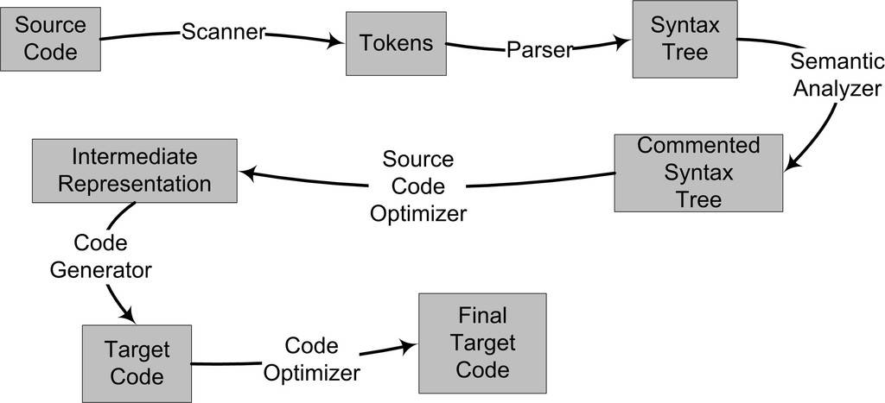
我們將結合圖2-2來簡單描述從原始碼（Source Code）到最終目的碼（Final Target Code）的過程。以一段很簡單的C語言的程式碼為例子來講述這個過程。比如我們有一行C語言的原始碼如下：
array[index] = (index + 4) * (2 + 6) CompilerExpression.c
2.2.1 詞法分析
首先原始碼程式被輸入到掃描器（Scanner），掃描器的任務很簡單，它只是簡單地進行詞法分析，運用一種類似於有限狀態機（Finite State Machine）的演算法可以很輕鬆地將原始碼的字元序列分割成一係列的記號（Token）。比如上面的那行程式，總共包含了28個非空字元，經過掃描以後，產生了16個記號，如表2-1所示。
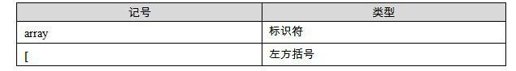
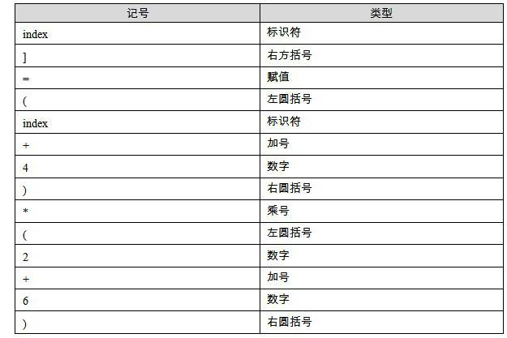
詞法分析產生的記號一般可以分為如下幾類：關鍵字、識別符號、字面量（包含數字、字串等）和特殊符號（如加號、等號）。在識別記號的同時，掃描器也完成了其他工作。比如將識別符號存放到符號表，將數字、字串常量存放到文字表等，以備後面的步驟使用。
有一個叫做lex的程式可以實現詞法掃描，它會按照使用者之前描述好的詞法規則將輸入的字串分割成一個個記號。因為這樣一個程式的存在，編譯器的開發者就無須為每個編譯器開發一個獨立的詞法掃描器，而是根據需要改變詞法規則就可以了。
另外對於一些有預處理的語言，比如C語言，它的宏替換和檔案包含等工作一般不歸入編譯器的範圍而交給一個獨立的前處理器。
2.2.2 語法分析
接下來語法分析器（Grammar Parser）將對由掃描器產生的記號進行語法分析，從而產生語法樹（Syntax Tree）。整個分析過程採用了上下文無關語法（Context-free Grammar）的分析手段，如果你對上下文無關語法及下推自動機很熟悉，那麼應該很好理解。否則，可以參考一些計算理論的資料，一般都會有很詳細的介紹。此處不再贅述。簡單地講，由語法分析器生成的語法樹就是以表示式（Expression）為節點的樹。我們知道，C語言的一個語句是一個表示式，而複雜的語句是很多表示式的組合。上面例子中的語句就是一個由賦值表示式、加法表示式、乘法表示式、陣列表示式、括號表示式組成的複雜語句。它在經過語法分析器以後形成如圖2-3所示的語法樹。
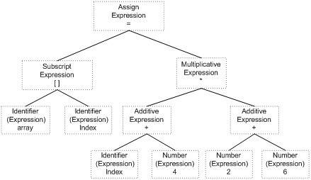
從圖2-3中我們可以看到，整個語句被看作是一個賦值表示式；賦值表示式的左邊是一個陣列表示式，它的右邊是一個乘法表示式；陣列表示式又由兩個符號表示式組成，等等。符號和數字是最小的表示式，它們不是由其他的表示式來組成的，所以它們通常作為整個語法樹的葉節點。在語法分析的同時，很多運算子號的優先順序和含義也被確定下來了。比如乘法表示式的優先順序比加法高，而圓括號表示式的優先順序比乘法高，等等。另外有些符號具有多重含義，比如星號*在C語言中可以表示乘法表示式，也可以表示對指標取內容的表示式，所以語法分析階段必須對這些內容進行區分。如果出現了表示式不合法，比如各種括號不匹配、表示式中缺少運算子等，編譯器就會報告語法分析階段的錯誤。
正如前面詞法分析有lex一樣，語法分析也有一個現成的工具叫做yacc（Yet Another Compiler Compiler）。它也像lex一樣，可以根據使用者給定的語法規則對輸入的記號序列進行解析，從而構建出一棵語法樹。對於不同的程式語言，編譯器的開發者只需要改變語法規則，而無須為每個編譯器編寫一個語法分析器，所以它又被稱為“編譯器編譯器（Compiler Compiler）”。
2.2.3 語義分析
接下來進行的是語義分析，由語義分析器（Semantic Analyzer）來完成。語法分析僅僅是完成了對表示式的語法層面的分析，但是它並不瞭解這個語句是否真正有意義。比如C語言裡面兩個指標做乘法運算是沒有意義的，但是這個語句在語法上是合法的；比如同樣一個指標和一個浮點數做乘法運算是否合法等。編譯器所能分析的語義是靜態語義（Static Semantic），所謂靜態語義是指在編譯期可以確定的語義，與之對應的動態語義（Dynamic Semantic）就是只有在執行期才能確定的語義。
靜態語義通常包括宣告和型別的匹配，型別的轉換。比如當一個浮點型的表示式賦值給一個整型的表示式時，其中隱含了一個浮點型到整型轉換的過程，語義分析過程中需要完成這個步驟。比如將一個浮點型賦值給一個指標的時候，語義分析程式會發現這個型別不匹配，編譯器將會報錯。動態語義一般指在執行期出現的語義相關的問題，比如將0作為除數是一個執行期語義錯誤。
經過語義分析階段以後，整個語法樹的表示式都被標識了型別，如果有些型別需要做隱式轉換，語義分析程式會在語法樹中插入相應的轉換節點。上面描述的語法樹在經過語義分析階段以後成為如圖2-4所示的形式。
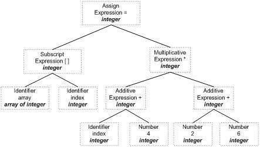
可以看到，每個表示式（包括符號和數字）都被標識了型別。我們的例子中幾乎所有的表示式都是整型的，所以無須做轉換，整個分析過程很順利。語義分析器還對符號表裡的符號型別也做了更新。
2.2.4 中間語言生成
現代的編譯器有著很多層次的最佳化，往往在原始碼級別會有一個最佳化過程。我們這裡所描述的原始碼級最佳化器（Source Code Optimizer）在不同編譯器中可能會有不同的定義或有一些其他的差異。原始碼級最佳化器會在原始碼級別進行最佳化，在上例中，細心的讀者可能已經發現，（2 + 6）這個表示式可以被最佳化掉，因為它的值在編譯期就可以被確定。類似的還有很多其他複雜的最佳化過程，我們在這裡就不詳細描述了。經過最佳化的語法樹如圖2-5所示。
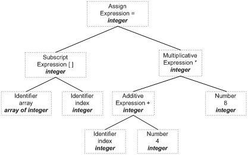
我們看到（2 + 6）這個表示式被最佳化成8。其實直接在語法樹上作最佳化比較困難，所以原始碼最佳化器往往將整個語法樹轉換成中間程式碼（Intermediate Code），它是語法樹的順序表示，其實它已經非常接近目的碼了。但是它一般跟目標機器和執行時環境是無關的，比如它不包含資料的尺寸、變數地址和暫存器的名字等。中間程式碼有很多種型別，在不同的編譯器中有著不同的形式，比較常見的有：三地址碼（Three-address Code）和P-程式碼（P-Code）。我們就拿最常見的三地址碼來作為例子，最基本的三地址碼是這樣的：
x = y op z
這個三地址碼表示將變數y和z進行op操作以後，賦值給x。這裡op操作可以是算數運算，比如加減乘除等，也可以是其他任何可以應用到y和z的操作。三地址碼也得名於此，因為一個三地址碼語句裡面有三個變數地址。我們上面的例子中的語法樹可以被翻譯成三地址碼後是這樣的：
t1 = 2 + 6 t2 = index + 4 t3 = t2 * t1 array[index] = t3
我們可以看到，為了使所有的操作都符合三地址碼形式，這裡利用了幾個臨時變數：t1、t2和t3。在三地址碼的基礎上進行最佳化時，最佳化程式會將2+6的結果計算出來，得到t1 = 8。然後將後面程式碼中的t1替換成數字8。還可以省去一個臨時變數t3，因為t2可以重複利用。經過最佳化以後的程式碼如下：
t2 = index + 4 t2 = t2 * 8 array[index] = t2
中間程式碼使得編譯器可以被分為前端和後端。編譯器前端負責產生機器無關的中間程式碼，編譯器後端將中間程式碼轉換成目標機器程式碼。這樣對於一些可以跨平台的編譯器而言，它們可以針對不同的平台使用同一個前端和針對不同機器平台的數個後端。
2.2.5 目的碼生成與最佳化
原始碼級最佳化器產生中間程式碼標誌著下面的過程都屬於編輯器後端。編譯器後端主要包括程式碼生成器（Code Generator）和目的碼最佳化器（Target Code Optimizer）。讓我們先來看看程式碼生成器。程式碼生成器將中間程式碼轉換成目標機器程式碼，這個過程十分依賴於目標機器，因為不同的機器有著不同的字長、暫存器、整數資料型別和浮點數資料型別等。對於上面例子中的中間程式碼，程式碼生成器可能會生成下面的程式碼序列（我們用x86的組合語言來表示，並且假設index的型別為int型，array的型別為int型陣列）：
movl index, %ecx ; value of index to ecx addl $4, %ecx ; ecx = ecx + 4 mull $8, %ecx ; ecx = ecx * 8 movl index, %eax ; value of index to eax movl %ecx, array(,eax,4) ; array[index] = ecx
最後目的碼最佳化器對上述的目的碼進行最佳化，比如選擇合適的定址方式、使用位移來代替乘法運算、刪除多餘的指令等。上面的例子中，乘法由一條相對複雜的基址比例變址定址（Base Index Scale Addressing）的lea指令完成，隨後由一條mov指令完成最後的賦值操作，這條mov指令的定址方式與lea是一樣的。
movl index, %edx leal 32(,%edx,8), %eax movl %eax, array(,%edx,4)
現代的編譯器有著異常複雜的結構，這是因為現代高階程式語言本身非常地複雜，比如C++語言的定義就極為複雜，至今沒有一個編譯器能夠完整支援C++語言標準所規定的所有語言特性。另外現代的計算機CPU相當地複雜，CPU本身採用了諸如流水線、多發射、超標量等諸多複雜的特性，為了支援這些特性，編譯器的機器指令最佳化過程也變得十分複雜。使得編譯過程更為複雜的是有些編譯器支援多種硬體平台，即允許編譯器編譯出多種目標CPU的程式碼。比如著名的GCC編譯器就幾乎支援所有CPU平台，這也導致了編譯器的指令生成過程更為複雜。
經過這些掃描、語法分析、語義分析、原始碼最佳化、程式碼生成和目的碼最佳化，編譯器忙活了這麼多個步驟以後，原始碼終於被編譯成了目的碼。但是這個目的碼中有一個問題是：index和array的地址還沒有確定。如果我們要把目的碼使用組譯器編譯成真正能夠在機器上執行的指令，那麼index和array的地址應該從哪兒得到呢？如果index和array定義在跟上面的原始碼同一個編譯單元裡面，那麼編譯器可以為index和array分配空間，確定它們的地址；那如果是定義在其他的程式模組呢？
這個看似簡單的問題引出了我們一個很大的話題：目的碼中有變數定義在其他模組，該怎麼辦？事實上，定義其他模組的全域性變數和函式在最終執行時的絕對地址都要在最終連結的時候才能確定。所以現代的編譯器可以將一個原始碼檔案編譯成一個未連結的目的檔，然後由連結器最終將這些目的檔連結起來形成執行檔。讓我們帶著這個問題，走進連結的世界。
2.3 連結器年齡比編譯器長
很久很久以前，在一個非常遙遠的銀河係……人們編寫程式時，將所有原始碼都寫在同一個檔案中，發展到後來一個程式原始碼的檔案長達數百萬行，以至於這個地方的人類已經沒有能力維護這個程式了。人們開始尋找新的辦法，一場新的軟體開發革命即將爆發……
為了更好地理解計算機程式的編譯和連結的過程，我們簡單地回顧計算機程式開發的歷史一定會非常有益。計算機的程式開發並非從一開始就有著這麼複雜的自動化編譯、連結過程。原始的連結概念遠在高階程式語言發明之前就已經存在了，在最開始的時候，程式設計師（當時程式設計師的概念應該跟現在相差很大了）先把一個程式在紙上寫好，當然當時沒有很高階的語言，用的都是機器語言，甚至連組合語言都沒有。當程式需要被執行時，程式設計師人工將他寫的程式寫入到儲存裝置上，最原始的儲存裝置之一就是紙帶，即在紙帶上打相應的孔。
這個過程我們可以透過圖2-6來看到，假設有一種計算機，它的每條指令是1個位元組，也就是8位。我們假設有一種跳轉指令，它的高4位是0001，表示這是一條跳轉指令；低4
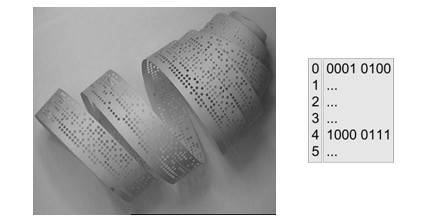
位存放的是跳轉目的地的絕對地址。我們可以從圖2-6中看到，這個程式的第一條指令就是一條跳轉指令，它的目的地址是第5條指令（注意，第5條指令的絕對地址是4）。至於0和1怎麼對映到紙帶上，這個應該很容易理解，比如我們可以規定紙帶上每行有8個孔位，每個孔位代表一位，穿孔表示0，未穿孔表示1。
現在問題來了，程式並不是一寫好就永遠不變化的，它可能會經常被修改。比如我們在第1條指令之後、第5條指令之前插入了一條或多條指令，那麼第5條指令及後面的指令的位置將會相應地往後移動，原先第一條指令的低4位的數字將需要相應地調整。在這個過程中，程式設計師需要人工重新計算每個子程式或跳轉的目標地址。當程式修改的時候，這些位置都要重新計算，十分繁瑣又耗時，並且很容易出錯。這種重新計算各個目標的地址過程被叫做重定位（Relocation）。
如果我們有多條紙帶的程式，這些程式之間可能會有類似的跨紙帶之間的跳轉，這種程式經常修改導致跳轉目標地址變化在程式擁有多個模組的時候更為嚴重。人工繫結進行指令的修正以確保所有的跳轉目標地址都正確，在程式規模越來越大以後變得越來越複雜和繁瑣。
沒辦法，這種黑暗的程式設計師生活是沒有辦法容忍的。先驅者發明瞭組合語言，這相比機器語言來說是個很大的進步。組合語言使用接近人類的各種符號和標記來幫助記憶，比如指令採用兩個或三個字母的縮寫，記住“jmp”比記住0001XXXX是跳轉（jump）指令容易得多了；組合語言還可以使用符號來標記位置，比如一個符號“divide”表示一個除法子程式的起始地址，比記住從某個位置開始的第幾條指令是除法子程式方便得多。最重要的是，這種符號的方法使得人們從具體的指令地址中逐步解放出來。比如前面紙帶程式中，我們把剛開始第5條指令開始的子程式命名為“foo”，那麼第一條指令的組譯就是：
jmp foo
當然人們可以使用這種符號命名子程式或跳轉目標以後，不管這個“foo”之前插入或減少了多少條指令導致“foo”目標地址發生了什麼變化，組譯器在每次組譯程式的時候會重新計算“foo”這個符號的地址，然後把所有引用到“foo”的指令修正到這個正確的地址。整個過程不需要人工參與，對於一個有成百上千個類似的符號的程式，程式設計師終於擺脫了這種低階的繁瑣的調整地址的工作，用一句政治口號來說叫做“極大地解放了生產力”。符號（Symbol）這個概念隨著組合語言的普及迅速被使用，它用來表示一個地址，這個地址可能是一段子程式（後來發展成函式）的起始地址，也可以是一個變數的起始地址。
有了組合語言以後，生產力大大提高了，隨之而來的是軟體的規模也開始日漸龐大，這時程式的程式碼量也已經開始快速地膨脹，導致人們要開始考慮將不同功能的程式碼以一定的方式組織起來，使得更加容易閱讀和理解，以便於日後修改和重複使用。自然而然，人們開始將程式碼按照功能或性質劃分，分別形成不同的功能模組，不同的模組之間按照層次結構或其他結構來組織。這個在現代的軟體原始碼組織中很常見，比如在C語言中，最小的單位是變數和函式，若幹個變數和函式組成一個模組，存放在一個“.c”的原始碼檔案裡，然後這些原始碼檔案按照目錄結構來組織。在比較高階的語言中，如Java中，每個類是一個基本的模組，若幹個類模組組成一個包（Package），若幹個包組合成一個程式。
在現代軟體開發過程中，軟體的規模往往都很大，動輒數百萬行程式碼，如果都放在一個模組肯定無法想象。所以現代的大型軟體往往擁有成千上萬個模組，這些模組之間相互依賴又相對獨立。這種按照層次化及模組化儲存和組織原始碼有很多好處，比如程式碼更容易閱讀、理解、重用，每個模組可以單獨開發、編譯、測試，改變部分程式碼不需要編譯整個程式等。
在一個程式被分割成多個模組以後，這些模組之間最後如何組合形成一個單一的程式是須解決的問題。模組之間如何組合的問題可以歸結為模組之間如何通訊的問題，最常見的屬於靜態語言的C/C++模組之間通訊有兩種方式，一種是模組間的函式呼叫，另外一種是模組間的變數訪問。函式訪問須知道目標函式的地址，變數訪問也須知道目標變數的地址，所以這兩種方式都可以歸結為一種方式，那就是模組間符號的引用。模組間依靠符號來通訊類似於拚圖版，定義符號的模組多出一塊區域，引用該符號的模組剛好少了那一塊區域，兩者一拚接剛好完美組合（見圖2-7）。這個模組的拚接過程就是本書的一個主題：連結（Linking）。
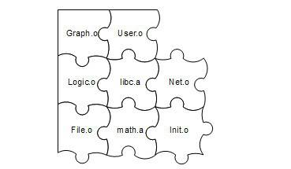
這種基於符號的模組化的一個直接結果是連結過程在整個程式開發中變得十分重要和突出。我們在本書的後面將可以看到連結器如何將這些編譯後的模組連結到一起，最終產生一個可以執行的程式。
2.4 模組拚裝——靜態連結
程式設計的模組化是人們一直在追求的目標，因為當一個系統十分複雜的時候，我們不得不將一個複雜的系統逐步分割成小的系統以達到各個突破的目的。一個複雜的軟體也如此，人們把每個原始碼模組獨立地編譯，然後按照需要將它們“組裝”起來，這個組裝模組的過程就是連結（Linking）。連結的主要內容就是把各個模組之間相互引用的部分都處理好，使得各個模組之間能夠正確地銜接。連結器所要做的工作其實跟前面所描述的“程式設計師人工調整地址”本質上沒什麼兩樣，只不過現代的高階語言的諸多特性和功能，使得編譯器、連結器更為複雜，功能更為強大，但從原理上來講，它的工作無非就是把一些指令對其他符號地址的引用加以修正。連結過程主要包括了地址和空間分配（Address and Storage Allocation）、符號決議（Symbol Resolution）和重定位（Relocation）等這些步驟。
符號決議有時候也被叫做符號繫結（Symbol Binding）、名稱繫結（Name Binding）、名稱決議（Name Resolution），甚至還有叫做地址繫結（Address Binding）、指令繫結（Instruction Binding）的，大體上它們的意思都一樣，但從細節角度來區分，它們之間還是存在一定區別的，比如“決議”更傾向於靜態連結，而“繫結”更傾向於動態連結，即它們所使用的範圍不一樣。在靜態連結，我們將統一稱為符號決議。
最基本的靜態連結過程如圖2-8所示。每個模組的原始碼檔案（如.c）檔案經過編譯器編譯成目的檔（Object File，一般副檔名為.o或.obj），目的檔和庫（Library）一起連結
 圖2-8 連結過程 …
圖2-8 連結過程 …
形成最終執行檔。而最常見的庫就是執行時庫（Runtime Library），它是支援程式執行的基本函式的集合。庫其實是一組目的檔的包，就是一些最常用的程式碼編譯成目的檔後打包存放。關於庫本書的後面還會再詳細分析。
我們認為對於Object檔案沒有一個很合適的中文名稱，把它叫做中間目的檔比較合適，簡稱為目的檔，所以本書後面的內容都將稱Object檔案為目的檔，很多時候我們也把目的檔稱為模組。
現代的編譯和連結過程也並非想象中的那麼複雜，它還是一個比較容易理解的概念。比如我們在程式模組main.c中使用另外一個模組func.c中的函式foo()。我們在main.c模組中每一處呼叫foo的時候都必須確切知道foo這個函式的地址，但是由於每個模組都是單獨編譯的，在編譯器編譯main.c的時候它並不知道foo函式的地址，所以它暫時把這些呼叫foo的指令的目標地址擱置，等待最後連結的時候由連結器去將這些指令的目標地址修正。如果沒有連結器，需要我們手工把每個呼叫foo的指令進行修正，則填入正確的foo函式地址。當func.c模組被重新編譯，foo函式的地址有可能改變時，那麼我們在main.c中所有使用到foo的地址的指令將要全部重新調整。這些繁瑣的工作將成為程式設計師的噩夢。使用連結器，你可以直接引用其他模組的函式和全域性變數而無須知道它們的地址，因為連結器在連結的時候，會根據你所引用的符號 foo，自動去相應的func.c模組查詢foo的地址，然後將main.c模組中所有引用到foo的指令重新修正，讓它們的目標地址為真正的foo函式的地址。這就是靜態連結的最基本的過程和作用。
在連結過程中，對其他定義在目的檔中的函式呼叫的指令需要被重新調整，對使用其他定義在其他目的檔的變數來說，也存在同樣的問題。讓我們結合具體的CPU指令來瞭解這個過程。假設我們有個全域性變數叫做var，它在目的檔A裡面。我們在目的檔B裡面要訪問這個全域性變數，比如我們在目的檔B裡面有這麼一條指令：
movl $0x2a, var
這條指令就是給這個var變數賦值0x2a，相當於C語言裡面的語句var = 42。然後我們編譯目的檔B，得到這條指令機器碼，如圖2-9所示。
 圖2-9 傳送指令 …
圖2-9 傳送指令 …
由於在編譯目的檔B的時候，編譯器並不知道變數var的目標地址，所以編譯器在沒法確定地址的情況下，將這條mov指令的目標地址置為0，等待連結器在將目的檔A和B連結起來的時候再將其修正。我們假設A和B連結後，變數var的地址確定下來為0x1000，那麼連結器將會把這個指令的目標地址部分修改成0x10000。這個地址修正的過程也被叫做重定位（Relocation），每個要被修正的地方叫一個重定位入口（Relocation Entry）。重定位所做的就是給程式中每個這樣的絕對地址引用的位置“打補丁”，使它們指向正確的地址。
2.5 本章小結
在這一章中，我們首先回顧了從程式原始碼到最終執行檔的4個步驟：預編譯、編譯、組譯、連結，分析了它們的作用及相互之間的聯繫，IDE整合開發工具和編譯器預設的命令通常將這些步驟合並成一步，使得我們通常很少關注這些步驟。
我們還詳細回顧了上面這4個步驟中的主要部分，即編譯步驟。介紹了編譯器將C程式原始碼轉變成組合語言程式碼的若幹個步驟：詞法分析、語法分析、語義分析、中間程式碼生成、目的碼生成與最佳化。最後我們介紹了連結的歷史和靜態連結的一係列基本概念：重定位、符號、符號決議、目的檔、庫、執行庫等概念。
第3章 目的檔裡有什麼
3.1 目的檔的格式
3.2 目的檔是什麼樣的
3.3 挖掘SimpleSection.o
3.4 ELF檔案結構描述
3.5 連結的介面——符號
3.6 除錯資訊
3.7 本章小結
編譯器編譯原始碼後生成的檔案叫做目的檔，那麼目的檔裡面到底存放的是什麼呢？或者我們的原始碼在經過編譯以後是怎麼儲存的？我們將在這一節剝開目的檔的層層外殼，去探索它最本質的內容。
目的檔從結構上講，它是已經編譯後的執行檔格式，只是還沒有經過連結的過程，其中可能有些符號或有些地址還沒有被調整。其實它本身就是按照執行檔格式儲存的，只是跟真正的執行檔在結構上稍有不同。
執行檔格式涵蓋了程式的編譯、連結、載入和執行的各個方面。瞭解它的結構並深入剖析它對於認識系統、瞭解背後的機理大有好處。
3.1 目的檔的格式
現在PC平台流行的執行檔格式（Executable）主要是Windows下的PE（Portable Executable）和Linux的ELF（Executable Linkable Format），它們都是COFF（Common file format）格式的變種。目的檔就是原始碼編譯後但未進行連結的那些中間檔案（Windows的.obj和Linux下的.o），它跟執行檔的內容與結構很相似，所以一般跟執行檔格式一起採用一種格式儲存。從廣義上看，目的檔與執行檔的格式其實幾乎是一樣的，所以我們可以廣義地將目的檔與執行檔看成是一種型別的檔案，在Windows下，我們可以統稱它們為PE-COFF檔案格式。在Linux下，我們可以將它們統稱為ELF檔案。其他不太常見的執行檔格式還有Intel/Microsoft的OMF（Object Module Format）、Unix a.out格式和MS-DOS .COM格式等。
不光是執行檔（Windows的.exe和Linux下的ELF執行檔）按照執行檔格式儲存。動態連結庫（DLL，Dynamic Linking Library）（Windows的.dll和Linux的.so）及靜態連結庫（Static Linking Library）（Windows的.lib和Linux的.a）檔案都按照執行檔格式儲存。它們在Windows下都按照PE-COFF格式儲存，Linux下按照ELF格式儲存。靜態連結庫稍有不同，它是把很多目的檔捆綁在一起形成一個檔案，再加上一些索引，你可以簡單地把它理解為一個包含有很多目的檔的檔案包。ELF檔案標準裡面把系統中採用ELF格式的檔案歸為如表3-1所列舉的4類。
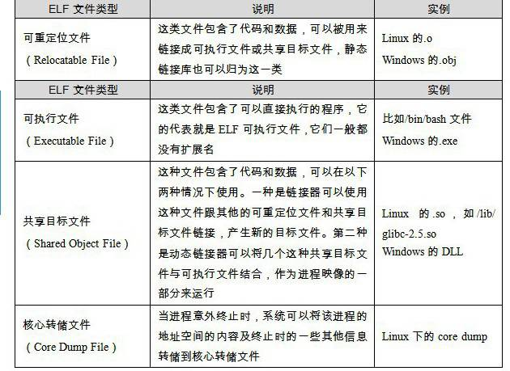
我們可以在Linux下使用file命令來檢視相應的檔案格式，上面幾種檔案在file命令下會顯示出相應的型別：
$ file foobar.o foobar.o: ELF 32-bit LSB relocatable, Intel 80386, version 1 (SYSV), not stripped $ file /bin/bash /bin/bash: ELF 32-bit LSB executable, Intel 80386, version 1 (SYSV), for GNU/Linux 2.6.8, dynamically linked (uses shared libs), stripped $ file /lib/ld-2.6.1.so /lib/libc-2.6.1.so: ELF 32-bit LSB shared object, Intel 80386, version 1 (SYSV), for GNU/Linux 2.6.8, stripped
目的檔與執行檔格式的小歷史
目的檔與執行檔格式跟作業系統和編譯器密切相關，所以不同的系統平台下會有不同的格式，但這些格式又大同小異，目的檔格式與執行檔格式的歷史幾乎是作業系統的發展史。
COFF是由Unix System V Release 3首先提出並且使用的格式規範，後來微軟公司基於COFF格式，製定了PE格式標準，並將其用於當時的Windows NT系統。System V Release 4在COFF的基礎上引入了ELF格式，目前流行的Linux系統也以ELF作為基本執行檔格式。這也就是為什麼目前PE和ELF如此相似的主要原因，因為它們都是源於同一種執行檔格式COFF。
Unix最早的執行檔格式為a.out格式，它的設計非常地簡單，以至於後來共用函式庫這個概念出現的時候，a.out格式就變得捉襟見肘了。於是人們設計了COFF格式來解決這些問題，這個設計非常通用，以至於COFF的繼承者到目前還在被廣泛地使用。
COFF的主要貢獻是在目的檔裡面引入了“段”的機制，不同的目的檔可以擁有不同數量及不同型別的“段”。另外，它還定義了除錯資料格式。
下文的剖析我們以ELF結構為主。然後會專門分析PE-COFF檔案結構，並對比其與ELF的異同。
3.2 目的檔是什麼樣的
我們大概能猜到，目的檔中的內容至少有編譯後的機器指令程式碼、資料。沒錯，除了這些內容以外，目的檔中還包括了連結時所需要的一些資訊，比如符號表、除錯資訊、字串等。一般目的檔將這些資訊按不同的屬性，以“節”（Section）的形式儲存，有時候也叫“段”（Segment），在一般情況下，它們都表示一個一定長度的區域，基本上不加以區別，唯一的區別是在ELF的連結檢視和載入檢視的時候，後面會專門提到。在本書中，預設情況下統一將它們稱為“段”。
程式原始碼編譯後的機器指令經常被放在程式碼段（Code Section）裡，程式碼段常見的名字有“.code”或“.text”；全域性變數和區域性靜態變數資料經常放在資料段（Data Section），資料段的一般名字都叫“.data”。讓我們來看一個簡單的程式被編譯成目的檔後的結構，如圖3-1所示。
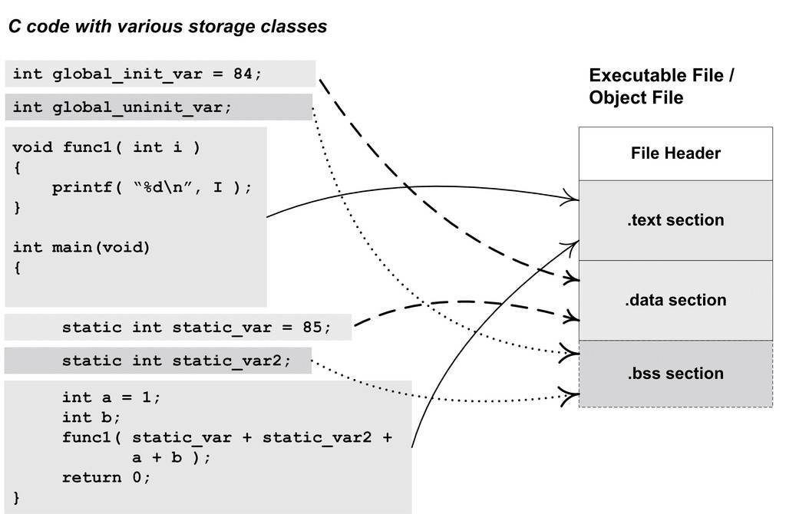
假設圖3-1的執行檔（目的檔）的格式是ELF，從圖中可以看到，ELF檔案的開頭是一個“檔案頭”，它描述了整個檔案的檔案屬性，包括檔案是否可執行、是靜態連結還是動態連結及入口地址（如果是執行檔）、目標硬體、目標作業系統等資訊，檔案頭還包括一個段表（Section Table），段表其實是一個描述檔案中各個段的陣列。段表描述了檔案中各個段在檔案中的偏移位置及段的屬性等，從段表裡面可以得到每個段的所有資訊。檔案頭後面就是各個段的內容，比如程式碼段儲存的就是程式的指令，資料段儲存的就是程式的靜態變數等。
對照圖3-1來看，一般C語言的編譯後執行語句都編譯成機器程式碼，儲存在.text段；已初始化的全域性變數和區域性靜態變數都儲存在. data段；未初始化的全域性變數和區域性靜態變數一般放在一個叫.“bss”的段裡。我們知道未初始化的全域性變數和區域性靜態變數預設值都為0，本來它們也可以被放在.data段的，但是因為它們都是0，所以為它們在.data段分配空間並且存放資料0是沒有必要的。程式執行的時候它們的確是要佔記憶體空間的，並且執行檔必須記錄所有未初始化的全域性變數和區域性靜態變數的大小總和，記為.bss段。所以.bss段只是為未初始化的全域性變數和區域性靜態變數預留位置而已，它並沒有內容，所以它在檔案中也不佔據空間。
BSS歷史
BSS（Block Started by Symbol）這個詞最初是UA-SAP組譯器（United Aircraft Symbolic Assembly Program）中的一個偽指令，用於為符號預留一塊記憶體空間。該組譯器由美國聯合航空公司於20世紀50年代中期為IBM 704大型機所開發。
後來BSS這個詞被作為關鍵字引入到了IBM 709和7090/94機型上的標準組譯器FAP（Fortran Assembly Program），用於定義符號並且為該符號預留給定數量的未初始化空間。
Unix FAQ section 1.3（http://www.faqs.org/faqs/unix-faq/faq/part1/section-3.html）裡面有Unix和C語言之父Dennis Rithcie對BSS這個詞由來的解釋。
總體來說，程式原始碼被編譯以後主要分成兩種段：程式指令和程式資料。程式碼段屬於程式指令，而資料段和.bss段屬於程式資料。
很多人可能會有疑問：為什麼要那麼麻煩，把程式的指令和資料的存放分開？混雜地放在一個段裡面不是更加簡單？其實資料和指令分段的好處有很多。主要有如下幾個方面。
• 一方面是當程式被載入後，資料和指令分別被對映到兩個虛擬記憶體區域。由於資料區域對於程式來說是可讀寫的，而指令區域對於程式來說是只讀的，所以這兩個虛擬記憶體區域的許可權可以被分別設定成可讀寫和只讀。這樣可以防止程式的指令被有意或無意地改寫。
• 另外一方面是對於現代的CPU來說，它們有著極為強大的快取（Cache）體係。由於快取在現代的計算機中地位非常重要，所以程式必須盡量提高快取的命中率。指令區和資料區的分離有利於提高程式的區域性性。現代CPU的快取一般都被設計成資料快取和指令快取分離，所以程式的指令和資料被分開存放對CPU的快取命中率提高有好處。
• 第三個原因，其實也是最重要的原因，就是當系統中執行著多個該程式的副本時，它們的指令都是一樣的，所以記憶體中只需要要儲存一份該程式的指令部分。對於指令這種只讀的區域來說是這樣，對於其他的只讀資料也一樣，比如很多程式裡面帶有的圖示、圖片、文字等資源也是屬於可以共享的。當然每個副本程式的資料區域是不一樣的，它們是程式私有的。不要小看這個共享指令的概念，它在現代的作業系統裡面佔據了極為重要的地位，特別是在有動態連結的系統中，可以節省大量的記憶體。比如我們常用的Windows Internet Explorer 7.0執行起來以後，它的總虛擬記憶體空間為112 844 KB，它的私有部分資料為15 944 KB，即有96 900 KB的空間是共享部分（資料來源見圖3-2）。如果系統中執行了數百個程式，可以想象共享的方法來節省大量空間。關於記憶體共享的更為深入的內容我們將在載入這一章探討。
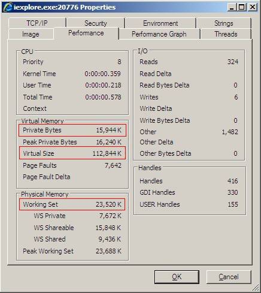
3.3 挖掘SimpleSection.o
前面對於目的檔只是作了概念上的闡述，如果不徹底深入目的檔的具體細節，相信這樣的分析也只是泛泛而談，沒有真正深入理解的效果。就像知道TCP/IP協議是基於包的結構，但是從來卻沒有看到過包的結構是怎樣的，包的頭部有哪些內容？目標地址和源地址是怎麼存放的？如果不瞭解這些，那麼對於TCP/IP的瞭解是粗略的，不夠細致的。很多問題其實在表面上看似很簡單，其實深入內部會發現很多鮮為人知的秘密，或者發現以前自己認為理所當然的東西居然是錯誤的，或者是有偏差的。對於系統軟體也是如此，不瞭解ELF檔案的結構細節就像學習了TCP/IP網路沒有了解IP包頭的結構一樣。本節後面的內容就是以ELF目的檔格式作為例子，徹底深入剖析目的檔，爭取不放過任何一個位元組。
真正了不起的程式設計師對自己的程式的每一個位元組都瞭如指掌。
——佚名
我們就以前面提到過的SimpleSection.c編譯出來的目的檔作為分析物件，這個程式是經過精心挑選的，具有一定的代表性而又不至於過於繁瑣和複雜。在接下來所進行的一係列編譯、連結和相關的實驗過程中，我們將會用到第1章所提到過的工具套件，比如GCC編譯器、binutils等工具，如果你忘了這些工具怎麼使用，那麼在閱讀過程中可以再回去參考本書第1部分的內容。圖3-1中的程式程式碼如清單3-1所示。
清單3-1
/*
* SimpleSection.c
*
* Linux:
* gcc -c SimpleSection.c
*
* Windows:
* cl SimpleSection.c /c /Za
*/
int printf( const char* format, ... );
int global_init_var = 84;
int global_uninit_var;
void func1( int i )
{
printf( "%d\n", i );
}
int main(void)
{
static int static_var = 85;
static int static_var2;
int a = 1;
int b;
func1( static_var + static_var2 + a + b );
return a;
}
如不加說明，則以下所分析的都是32位Intel x86平台下的ELF檔案格式。
我們使用GCC來編譯這個檔案（引數 -c 表示只編譯不連結）：
$ gcc –c SimpleSection.c
我們得到了一個1 104位元組（該檔案大小可能會因為編譯器版本以及機器平台不同而變化）的SimpleSection.o目的檔。我們可以使用binutils的工具objdump來檢視object內部的結構，這個工具在第1部分已經介紹過了，它可以用來檢視各種目的檔的結構和內容。執行以下命令：
$ objdump -h SimpleSection.o
SimpleSection.o: file format elf32-i386
Sections:
Idx Name Size VMA LMA File off Algn
0 .text 0000005b 00000000 00000000 00000034 2**2
CONTENTS, ALLOC, LOAD, RELOC, READONLY, CODE
1 .data 00000008 00000000 00000000 00000090 2**2
CONTENTS, ALLOC, LOAD, DATA
2 .bss 00000004 00000000 00000000 00000098 2**2
ALLOC
3 .rodata 00000004 00000000 00000000 00000098 2**0
CONTENTS, ALLOC, LOAD, READONLY, DATA
4 .comment 0000002a 00000000 00000000 0000009c 2**0
CONTENTS, READONLY
5 .note.GNU-stack 00000000 00000000 00000000 000000c6 2**0
CONTENTS, READONLY
GCC和binutils可被移植到各種平台上，所以它們支援多種目的檔格式。比如Windows下的GCC和binutils支援PE檔案格式、Linux版本支援ELF格式。Linux還有一個很不錯的工具叫readelf，它是專門針對ELF檔案格式的解析器，很多時候它對ELF檔案的分析可以跟objdump相互對照，所以我們下面會經常用到這個工具。
引數“-h”就是把ELF檔案的各個段的基本資訊列印出來。我們也可以使用“objdump –x”把更多的資訊列印出來，但是“-x”輸出的這些資訊又多又複雜，對於不熟悉ELF和objdump的讀者來說可能會很陌生。我們還是先把ELF段的結構分析清楚。從上面的結果來看，SimpleSection.o的段的數量比我們想象中的要多，除了最基本的程式碼段、資料段和BSS段以外，還有3個段分別是只讀資料段（.rodata）、注釋資訊段（.comment）和堆疊提示段（.note.GNU-stack），這3個額外的段的意義我們暫且不去細究。先來看看幾個重要的段的屬性，其中最容易理解的是段的長度（Size）和段所在的位置（File Offset），每個段的第2行中的“CONTENTS”、“ALLOC”等表示段的各種屬性，“CONTENTS”表示該段在檔案中存在。我們可以看到BSS段沒有“CONTENTS”，表示它實際上在ELF檔案中不存在內容。“.note.GNU-stack”段雖然有“CONTENTS”，但它的長度為0，這是個很古怪的段，我們暫且忽略它，認為它在ELF檔案中也不存在。那麼ELF檔案中實際存在的也就是“.text”、“.data”、“.rodata”和“.comment”這4個段了，它們的長度和在檔案中的偏移位置我們已經用粗體表示出來了。它們在ELF中的結構如圖3-3所示。
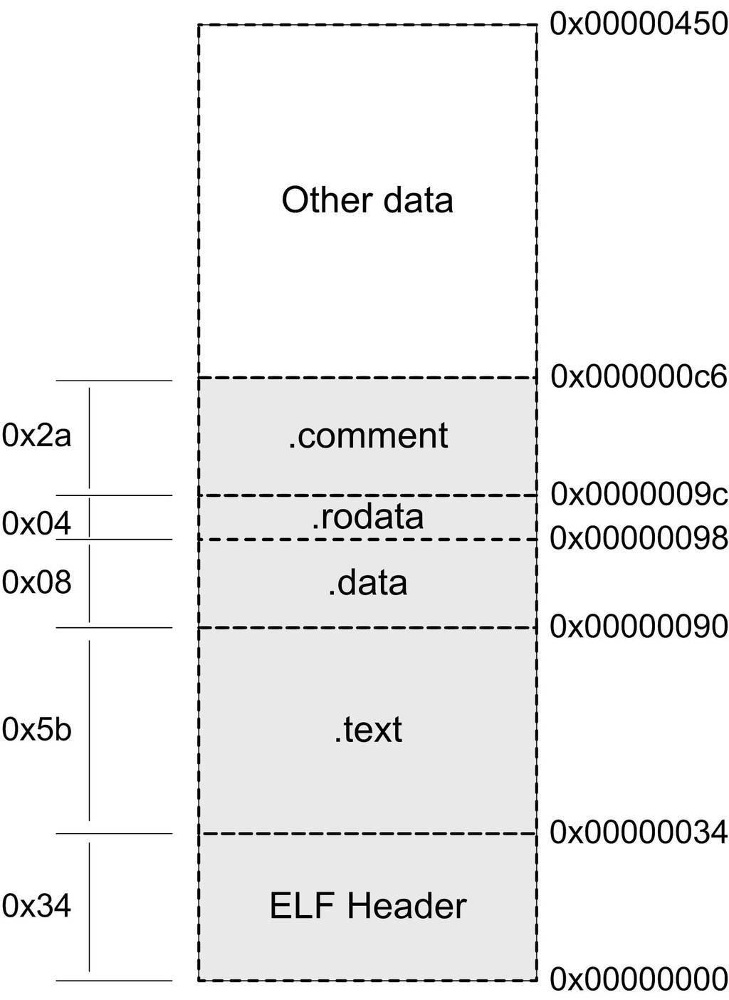
瞭解了這幾個段在SimpleSection.o的基本分佈，接著將逐個來看這幾個段，看看它們包含了什麼內容。
有一個專門的命令叫做“size”，它可以用來檢視ELF檔案的程式碼段、資料段和BSS段的長度（dec表示3個段長度的和的十進製，hex表示長度和的十六進位）：
$ size SimpleSection.o
text data bss dec hex filename
95 8 4 107 6b SimpleSection.o
3.3.1 程式碼段
挖掘各個段的內容，我們還是離不開objdump這個利器。objdump的“-s”引數可以將所有段的內容以十六進位的方式列印出來，“-d”引數可以將所有包含指令的段反組譯。我們將objdump輸出中關於程式碼段的內容提取出來，分析一下關於程式碼段的內容（省略號表示略去無關內容）：
$ objdump -s -d SimpleSection.o …… Contents of section .text: 0000 5589e583 ec088b45 08894424 04c70424 U......E..D$...$ 0010 00000000 e8fcffff ffc9c38d 4c240483 ............L$.. 0020 e4f0ff71 fc5589e5 5183ec14 c745f401 ...q.U..Q....E.. 0030 0000008b 15040000 00a10000 00008d04 ................ 0040 020345f4 0345f889 0424e8fc ffffff8b ..E..E...$...... 0050 45f483c4 14595d8d 61fcc3 E....Y].a.. …… 00000000 <func1>: 0: 55 push %ebp 1: 89 e5 mov %esp,%ebp 3: 83 ec 08 sub $0x8,%esp 6: 8b 45 08 mov 0x8(%ebp),%eax 9: 89 44 24 04 mov %eax,0x4(%esp) d: c7 04 24 00 00 00 00 movl $0x0,(%esp) 14: e8 fc ff ff ff call 15 <func1+0x15> 19: c9 leave 1a: c3 ret 0000001b <main>: 1b: 8d 4c 24 04 lea 0x4(%esp),%ecx 1f: 83 e4 f0 and $0xfffffff0,%esp 22: ff 71 fc pushl -0x4(%ecx) 25: 55 push %ebp 26: 89 e5 mov %esp,%ebp 28: 51 push %ecx 29: 83 ec 14 sub $0x14,%esp 2c: c7 45 f4 01 00 00 00 movl $0x1,-0xc(%ebp) 33: 8b 15 04 00 00 00 mov 0x4,%edx 39: a1 00 00 00 00 mov 0x0,%eax 3e: 8d 04 02 lea (%edx,%eax,1),%eax 41: 03 45 f4 add -0xc(%ebp),%eax 44: 03 45 f8 add -0x8(%ebp),%eax 47: 89 04 24 mov %eax,(%esp) 4a: e8 fc ff ff ff call 4b <main+0x30> 4f: 8b 45 f4 mov -0xc(%ebp),%eax 52: 83 c4 14 add $0x14,%esp 55: 59 pop %ecx 56: 5d pop %ebp 57: 8d 61 fc lea -0x4(%ecx),%esp 5a: c3 ret
“Contents of section .text”就是.text的資料以十六進位方式列印出來的內容，總共0x5b位元組，跟前面我們瞭解到的“.text”段長度相符合，最左面一列是偏移量，中間4列是十六進位內容，最右面一列是.text段的ASCII碼形式。對照下面的反組譯結果，可以很明顯地看到，.text段裡所包含的正是SimpleSection.c裡兩個函式func1()和main()的指令。.text段的第一個位元組“0x55”就是“func1()”函式的第一條“push %ebp”指令，而最後一個位元組0xc3正是main()函式的最後一條指令“ret”。
3.3.2 資料段和只讀資料段
.data段儲存的是那些已經初始化了的全域性靜態變數和區域性靜態變數。前面的SimpleSection.c程式碼裡面一共有兩個這樣的變數，分別是global_init_varabal與static_var。這兩個變數每個4個位元組，一共剛好8個位元組，所以“.data”這個段的大小為8個位元組。
SimpleSection.c裡面我們在呼叫“printf”的時候，用到了一個字串常量“%d\n”，它是一種只讀資料，所以它被放到了“.rodata”段，我們可以從輸出結果看到“.rodata”這個段的4個位元組剛好是這個字串常量的ASCII位元組序，最後以\0結尾。
“.rodata”段存放的是只讀資料，一般是程式裡面的只讀變數（如const修飾的變數）和字串常量。單獨設立“.rodata”段有很多好處，不光是在語義上支援了C++的const關鍵字，而且作業系統在載入的時候可以將“.rodata”段的屬性對映成只讀，這樣對於這個段的任何修改操作都會作為非法操作處理，保證了程式的安全性。另外在某些嵌入式平台下，有些儲存區域是採用只讀儲存器的，如ROM，這樣將“.rodata”段放在該儲存區域中就可以保證程式訪問儲存器的正確性。
另外值得一提的是，有時候編譯器會把字串常量放到“.data”段，而不會單獨放在“.rodata”段。有興趣的讀者可以試著把SimpleSection.c的檔名改成SimpleSection.cpp，然後用各種MSVC編譯器編譯一下看看字串常量的存放情況。
$ objdump -x -s -d SimpleSection.o
……
Sections:
Idx Name Size VMA LMA File off Algn
1 .data 00000008 00000000 00000000 00000090 2**2
CONTENTS, ALLOC, LOAD, DATA
3 .rodata 00000004 00000000 00000000 00000098 2**0
CONTENTS, ALLOC, LOAD, READONLY, DATA
……
Contents of section .data:
0000 54000000 55000000 T...U...
Contents of section .rodata:
0000 25640a00 %d..
……
我們看到“.data”段裡的前4個位元組，從低到高分別為0x54、0x00、0x00、0x00。這個值剛好是global_init_varabal，即十進製的84。global_init_varabal是個4位元組長度的int型別，為什麼存放的次序為0x54、0x00、0x00、0x00而不是0x00、0x00、0x00、0x54？這涉及CPU的位元組序（Byte Order）的問題，也就是所謂的大端（Big-endian）和小端（Little-endian）的問題。關於位元組序的問題本書的附錄有詳細的介紹。而最後4個位元組剛好是static_init_var的值，即85。
3.3.3 BSS段
.bss段存放的是未初始化的全域性變數和區域性靜態變數，如上述程式碼中global_uninit_var和static_var2就是被存放在.bss段，其實更準確的說法是.bss段為它們預留了空間。但是我們可以看到該段的大小只有4個位元組，這與global_uninit_var和static_var2的大小的8個位元組不符。
其實我們可以透過符號表（Symbol Table）（後面章節介紹符號表）看到，只有static_var2被存放在了.bss段，而global_uninit_var卻沒有被存放在任何段，只是一個未定義的“COMMON符號”。這其實是跟不同的語言與不同的編譯器實現有關，有些編譯器會將全域性的未初始化變數存放在目的檔.bss段，有些則不存放，只是預留一個未定義的全域性變數符號，等到最終連結成執行檔的時候再在.bss段分配空間。我們將在“弱符號與強符號”和“COMMON塊”這兩個章節深入分析這個問題。原則上講，我們可以簡單地把它當作全域性未初始化變數存放在.bss段。值得一提的是編譯單元內部可見的靜態變數（比如給global_uninit_var加上static修飾）的確是存放在.bss段的，這一點很容易理解。
$ objdump -x -s -d SimpleSection.o
……
Sections:
Idx Name Size VMA LMA File off Algn
2 .bss 00000004 00000000 00000000 00000098 2**2
ALLOC
……
Quiz 變數存放位置
現在讓我們來做一個小的測試，請看以下程式碼：
static int x1 = 0; static int x2 = 1;
x1和x2會被放在什麼段中呢？
x1會被放在.bss中，x2會被放在.data中。為什麼一個在.bss段, 一個在.data段？ 因為x1為0，可以認為是未初始化的，因為未初始化的都是0，所以被最佳化掉了可以放在.bss，這樣可以節省磁碟空間，因為.bss不佔磁碟空間。另外一個變數x2初始化值為1，是初始化的，所以放在.data段中。
這種類似的編譯器的最佳化會對我們分析系統軟體背後的機制帶來很多障礙，使得很多問題不能一目瞭然，本書將盡量避開這些最佳化過程，還原機制和原理本身。
3.3.4 其他段
除了.text、.data、.bss這3個最常用的段之外，ELF檔案也有可能包含其他的段，用來儲存與程式相關的其他資訊。表3-2中列舉了ELF的一些常見的段。
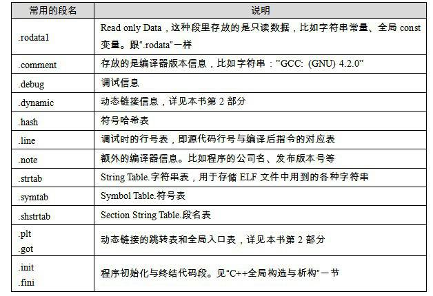
這些段的名字都是由“.”作為字首，表示這些表的名字是系統保留的，應用程式也可以使用一些非系統保留的名字作為段名。比如我們可以在ELF檔案中插入一個“music”的段，裡面存放了一首MP3音樂，當ELF檔案執行起來以後可以讀取這個段播放這首MP3。但是應用程式自定義的段名不能使用“.”作為字首，否則容易跟系統保留段名衝突。一個ELF檔案也可以擁有幾個相同段名的段，比如一個ELF檔案中可能有兩個或兩個以上叫做“.text”的段。還有一些保留的段名是因為ELF檔案歷史遺留問題造成的，以前用過的一些名字如.sdata、.tdesc、.sbss、.lit4、.lit8、.reginfo、.gptab、.liblist、.conflict。可以不用理會這些段，它們已經被遺棄了。
Q&A
Q：如果我們要將一個二進位檔案，比如圖片、MP3音樂、詞典一類的東西作為目的檔中的一個段，該怎麼做？
A：可以使用objcopy工具，比如我們有一個圖片檔案“image.jpg”，大小為0x82100位元組：
$ objcopy -I binary -O elf32-i386 -B i386 image.jpg image.o
$ objdump -ht image.o
image.o: file format elf32-i386
Sections:
Idx Name Size VMA LMA File off Algn
0 .data 00081200 00000000 00000000 00000034 2**0
CONTENTS, ALLOC, LOAD, DATA
SYMBOL TABLE:
00000000 l d .data 00000000 .data
00000000 g .data 00000000 _binary_image_jpg_start
00081200 g .data 00000000 _binary_image_jpg_end
00081200 g *ABS* 00000000 _binary_image_jpg_size
符號“_binary_image_jpg_start”、“_binary_image_jpg_end”和“_binary_image_jpg_size”分別表示該圖片檔案在記憶體中的起始地址、結束地址和大小，我們可以在程式裡面直接宣告並使用它們。
自定義段
正常情況下，GCC編譯出來的目的檔中，程式碼會被放到“.text”段，全域性變數和靜態變數會被放到“.data”和“.bss”段，正如我們前面所分析的。但是有時候你可能希望變數或某些部分程式碼能夠放到你所指定的段中去，以實現某些特定的功能。比如為了滿足某些硬體的記憶體和I/O的地址佈局，或者是像Linux作業系統核心中用來完成一些初始化和使用者空間複製時出現頁錯誤異常等。GCC提供了一個擴充套件機制，使得程式設計師可以指定變數所處的段：
__attribute__((section("FOO"))) int global = 42;
__attribute__((section("BAR"))) void foo()
{
}
我們在全域性變數或函式之前加上“__attribute__((section(“name”)))”屬性就可以把相應的變數或函式放到以“name”作為段名的段中。
3.4 ELF檔案結構描述
我們已經透過SimpleSection.o的結構大致瞭解了ELF檔案的輪廓，接著就來看看ELF檔案的結構格式。圖3-4描述的是ELF目的檔的總體結構，我們省去了ELF一些繁瑣的結構，把最重要的結構提取出來，形成了如圖3-4所示的ELF檔案基本結構圖，隨著我們討論的展開，ELF檔案結構會在這個基本結構之上慢慢變得複雜起來。
 圖3-4 ELF 結構 …
圖3-4 ELF 結構 …
ELF目的檔格式的最前部是ELF檔案頭（ELF Header），它包含了描述整個檔案的基本屬性，比如ELF檔案版本、目標機器型號、程式入口地址等。緊接著是ELF檔案各個段。其中ELF檔案中與段有關的重要結構就是段表（Section Header Table），該表描述了ELF檔案包含的所有段的資訊，比如每個段的段名、段的長度、在檔案中的偏移、讀寫許可權及段的其他屬性。接著將詳細分析ELF檔案頭、段表等ELF關鍵的結構。另外還會介紹一些ELF中輔助的結構，比如字串表、符號表等，這些結構我們在本節只是簡單介紹一下，到相關章節中再詳細展開。
3.4.1 檔案頭
我們可以用readelf命令來詳細檢視ELF檔案，程式碼如清單3-2所示。
清單3-2 檢視ELF檔案頭
$readelf –h SimpleSection.o ELF Header: Magic: 7f 45 4c 46 01 01 01 00 00 00 00 00 00 00 00 00 Class: ELF32 Data: 2's complement, little endian Version: 1 (current) OS/ABI: UNIX - System V ABI Version: 0 Type: REL (Relocatable file) Machine: Intel 80386 Version: 0x1 Entry point address: 0x0 Start of program headers: 0 (bytes into file) Start of section headers: 280 (bytes into file) Flags: 0x0 Size of this header: 52 (bytes) Size of program headers: 0 (bytes) Number of program headers: 0 Size of section headers: 40 (bytes) Number of section headers: 11 Section header string table index: 8
從上面輸出的結果可以看到，ELF的檔案頭中定義了ELF魔數、檔案機器位元組長度、資料儲存方式、版本、執行平台、ABI版本、ELF重定位型別、硬體平台、硬體平台版本、入口地址、程式頭入口和長度、段表的位置和長度及段的數量等。這些數值中有關描述ELF目標平台的部分，與我們常見的32位Intel的硬體平台基本上一樣。
ELF檔案頭結構及相關常數被定義在“/usr/include/elf.h”裡，因為ELF檔案在各種平台下都通用，ELF檔案有32位版本和64位版本。它的檔案頭結構也有這兩種版本，分別叫做“Elf32_Ehdr”和“Elf64_Ehdr”。32位版本與64位版本的ELF檔案的檔案頭內容是一樣的，只不過有些成員的大小不一樣。為了對每個成員的大小做出明確的規定以便於在不同的編譯環境下都擁有相同的欄位長度，“elf.h”使用typedef定義了一套自己的變數體係，如表3-3所示。
 表3-3 …
表3-3 …
我們這裡以32位版本的檔案頭結構“Elf32_Ehdr”作為例子來描述，它的定義如下：
typedef struct {
unsigned char e_ident[16];
Elf32_Half e_type;
Elf32_Half e_machine;
Elf32_Word e_version;
Elf32_Addr e_entry;
Elf32_Off e_phoff;
Elf32_Off e_shoff;
Elf32_Word e_flags;
Elf32_Half e_ehsize;
Elf32_Half e_phentsize;
Elf32_Half e_phnum;
Elf32_Half e_shentsize;
Elf32_Half e_shnum;
Elf32_Half e_shstrndx;
} Elf32_Ehdr;
讓我們拿ELF檔案頭結構跟前面readelf輸出的ELF檔案頭資訊相比照，可以看到輸出的資訊與ELF檔案頭中的結構很多都一一對應。有點例外的是“Elf32_Ehdr”中的e_ident這個成員對應了readelf輸出結果中的“Class”、“Data”、“Version”、“OS/ABI”和“ABI Version”這5個引數。剩下的引數與“Elf32_Ehdr”中的成員都一一對應。我們在表3-4中簡單地列舉一下，讓大家有個初步的印象，詳細的定義可以在ELF標準文件裡面找到。表3-4是ELF檔案頭中各個成員的含義與readelf輸出結果的對照表。
 表3-4 ELF檔案頭結構成員含義 …
表3-4 ELF檔案頭結構成員含義 …
 圖3-5 ELF 魔數 …
圖3-5 ELF 魔數 …
最開始的4個位元組是所有ELF檔案都必須相同的標識碼，分別為0x7F、0x45、0x4c、0x46，第一個位元組對應ASCII字元裡面的DEL控制符，後面3個位元組剛好是ELF這3個字母的ASCII碼。這4個位元組又被稱為ELF檔案的魔數，幾乎所有的執行檔格式的最開始的幾個位元組都是魔數。比如a.out格式最開始兩個位元組為 0x01、0x07；PE/COFF檔案最開始兩個個位元組為0x4d、0x5a，即ASCII字元MZ。這種魔數用來確認檔案的型別，作業系統在載入執行檔的時候會確認魔數是否正確，如果不正確會拒絕載入。
接下來的一個位元組是用來標識ELF的檔案類的，0x01表示是32位的，0x02表示是64位的；第6個字是位元組序，規定該ELF檔案是大端的還是小端的（見附錄：位元組序）。第7個位元組規定ELF檔案的主版本號，一般是1，因為ELF標準自1.2版以後就再也沒有更新了。後面的9個位元組ELF標準沒有定義，一般填0，有些平台會使用這9個位元組作為擴充套件標誌。
各種魔數的由來
a.out格式的魔數為0x01、0x07，為什麼會規定這個魔數呢？
UNIX早年是在PDP小型機上誕生的，當時的系統在載入一個執行檔後直接從檔案的第一個位元組開始執行，人們一般在檔案的最開始放置一條跳轉（jump）指令，這條指令負責跳過接下來的7個機器字的檔案頭到執行檔的真正入口。而0x01 0x07這兩個位元組剛好是當時PDP-11的機器的跳轉7個機器字的指令。為了跟以前的系統保持相容性，這條跳轉指令被當作魔數一直被保留到了幾十年後的今天。
計算機系統中有很多怪異的設計背後有著很有趣的歷史和傳統，瞭解它們的由來可以讓我們瞭解到很多很有意思的事情。這讓我想起了經濟學裡面所謂的“路徑依賴”，其中一個很有意思的叫“馬屁股決定太空梭”的故事在網上流傳很廣泛，有興趣的話你可以在google以“馬屁股”和“太空梭”作為關鍵字搜尋一下。
ELF檔案標準歷史
20世紀90年代，一些廠商聯合成立了一個委員會，起草並發布了一個ELF檔案格式標準供公開使用，並且希望所有人能夠遵循這項標準並且從中獲益。1993年，委員會發布了ELF檔案標準。當時參與該委員會的有來自於編譯器的廠商，如Watcom和Borland；來自CPU的廠商如IBM和Intel；來自作業系統的廠商如IBM和Microsoft。1995年，委員會發布了ELF 1.2標準，自此委員會完成了自己的使命，不久就解散了。所以ELF檔案格式標準的最新版本為1.2。
檔案型別 e_type成員表示ELF檔案型別，即前面提到過的3種ELF檔案型別，每個檔案型別對應一個常量。系統透過這個常量來判斷ELF的真正檔案型別，而不是透過檔案的副檔名。相關常量以“ET_”
 表3-5 …
表3-5 …
機器型別 ELF檔案格式被設計成可以在多個平台下使用。這並不表示同一個ELF檔案可以在不同的平台下使用（就像java的位元組碼檔案那樣），而是表示不同平台下的ELF檔案都遵循同一套ELF標準。e_machine成員就表示該ELF檔案的平台屬性，比如3表示該ELF檔案只能在Intel x86機器下使用，這也是我們最常見的情況。相關的常量以“EM_”開頭，如表3-6所示。
 表3-6 …
表3-6 …
3.4.2 段表
我們知道ELF檔案中有很多各種各樣的段，這個段表（Section Header Table）就是儲存這些段的基本屬性的結構。段表是ELF檔案中除了檔案頭以外最重要的結構，它描述了ELF的各個段的資訊，比如每個段的段名、段的長度、在檔案中的偏移、讀寫許可權及段的其他屬性。也就是說，ELF檔案的段結構就是由段表決定的，編譯器、連結器和載入器都是依靠段表來定位和訪問各個段的屬性的。段表在ELF檔案中的位置由ELF檔案頭的“e_shoff”成員決定，比如SimpleSection.o中，段表位於偏移0x118。
前文中我們使用了“objudmp -h”來檢視ELF檔案中包含的段，結果是SimpleSection裡面看到了總共有6個段，分別是“.code”、“.data”、“.bss”、“.rodata”、“.comment”和“.note.GNU-stack”。實際上的情況卻有所不同，“objdump -h”命令只是把ELF檔案中關鍵的段顯示了出來，而省略了其他的輔助性的段，比如：符號表、字串表、段名字串表、重定位表等。我們可以使用readelf工具來檢視ELF檔案的段，它顯示出來的結果才是真正的段表結構：
$ readelf -S SimpleSection.o There are 11 section headers, starting at offset 0x118: Section Headers: [Nr] Name Type Addr Off Size ES Flg Lk Inf Al [ 0] NULL 00000000 000000 000000 00 0 0 0 [ 1] .text PROGBITS 00000000 000034 00005b 00 AX 0 0 4 [ 2] .rel.text REL 00000000 000428 000028 08 9 1 4 [ 3] .data PROGBITS 00000000 000090 000008 00 WA 0 0 4 [ 4] .bss NOBITS 00000000 000098 000004 00 WA 0 0 4 [ 5] .rodata PROGBITS 00000000 000098 000004 00 A 0 0 1 [ 6] .comment PROGBITS 00000000 00009c 00002a 00 0 0 1 [ 7] .note.GNU-stack PROGBITS 00000000 0000c6 000000 00 0 0 1 [ 8] .shstrtab STRTAB 00000000 0000c6 000051 00 0 0 1 [ 9] .symtab SYMTAB 00000000 0002d0 0000f0 10 10 10 4 [10] .strtab STRTAB 00000000 0003c0 000066 00 0 0 1 Key to Flags: W (write), A (alloc), X (execute), M (merge), S (strings) I (info), L (link order), G (group), x (unknown) O (extra OS processing required) o (OS specific), p (processor specific)
readelf輸出的結果就是ELF檔案段表的內容，那麼就讓我們對照這個輸出來看看段表的結構。段表的結構比較簡單，它是一個以“Elf32_Shdr”結構體為元素的陣列。陣列元素的個數等於段的個數，每個“Elf32_Shdr”結構體對應一個段。“Elf32_Shdr”又被稱為段描述符（Section Descriptor）。對於SimpleSection.o來說，段表就是有11個元素的陣列。ELF段表的這個陣列的第一個元素是無效的段描述符，它的型別為“NULL”，除此之外每個段描述符都對應一個段。也就是說SimpleSection.o共有10個有效的段。
陣列的存放方式
ELF檔案裡面很多地方採用了這種與段表類似的陣列方式儲存。一般定義一個固定長度的結構，然後依次存放。這樣我們就可以使用下標來引用某個結構。
Elf32_Shdr被定義在“/usr/include/elf.h”，程式碼如清單3-3所示。
清單3-3 Elf32_Shdr段描述符結構
typedef struct
{
Elf32_Word sh_name;
Elf32_Word sh_type;
Elf32_Word sh_flags;
Elf32_Addr sh_addr;
Elf32_Off sh_offset;
Elf32_Word sh_size;
Elf32_Word sh_link;
Elf32_Word sh_info;
Elf32_Word sh_addralign;
Elf32_Word sh_entsize;
} Elf32_Shdr;
Elf32_Shdr的各個成員的含義如表3-7所示。
 表3-7 …
表3-7 …
注 1：事實上段的名字對於編譯器、連結器來說是有意義的，但是對於作業系統來說並沒有實質的意義，對於作業系統來說，一個段該如何處理取決於它的屬性和許可權，即由段的型別和段的標誌位這兩個成員決定。
注 2：關於這些欄位，涉及一些映像檔案的載入的概念，我們將在本書的第2部分詳細介紹其相關內容，讀者也可以先閱讀第2部分的最前面一章“執行檔的載入於程式”，瞭解一下載入的概念，然後再來閱讀關於段的虛擬大小和虛擬地址的內容。當然，如果讀者對映像檔案載入過程比較熟悉，應該很容易理解這些內容。
讓我們對照Elf32_Shdr和“readelf -S”的輸出結果，可以很明顯看到，結構體的每一個成員對應於輸出結果中從第二列“Name”開始的每一列。於是SimpleSection的段表的位置如圖3-6所示。
到了這一步，我們才徹徹底底把SimpleSection的所有段的位置和長度給分析清楚了。在圖3-6中，SectionTable長度為0x1b8，也就是440個位元組，它包含了11個段描述符，每個段描述符為40個位元組，這個長度剛好等於sizeof(Elf32_Shdr)，符合段描述符的結構體長度；整個檔案最後一個段“.rel.text”結束後，長度為0x450，即1104位元組，即剛好是SimpleSection.o的檔案長度。中間Section Table和“.rel.text”都因為對齊的原因，與前面的段之間分別有一個位元組和兩個位元組的間隔。
 圖3-6 SimpleSection.o 的Section Table及所有段的位置和長度 …
圖3-6 SimpleSection.o 的Section Table及所有段的位置和長度 …
段的型別（sh_type） 正如前面所說的，段的名字只是在連結和編譯過程中有意義，但它不能真正地表示段的型別。我們也可以將一個資料段命名為“.text”，對於編譯器和連結器來說，主要決定段的屬性的是段的型別（sh_type）和段的標誌位（sh_flags）。段的型別相關常量以SHT_開頭，列舉如表3-8所示。
 表3-8 …
表3-8 …

段的標誌位（sh_flag） 段的標誌位表示該段在程式虛擬地址空間中的屬性，比如是否可寫，是否可執行等。相關常量以SHF_開頭，如表3-9所示。
 表3-9 …
表3-9 …
對於系統保留段，表3-10列舉了它們的屬性。


段的連結資訊（sh_link、sh_info） 如果段的型別是與連結相關的（不論是動態連結或靜態連結），比如重定位表、符號表等，那麼sh_link和sh_info這兩個成員所包含的意義如表3-11所示。對於其他型別的段，這兩個成員沒有意義。
 表3-11 …
表3-11 …
3.4.3 重定位表
我們注意到，SimpleSection.o中有一個叫做“.rel.text”的段，它的型別（sh_type）為“SHT_REL”，也就是說它是一個重定位表（Relocation Table）。正如我們最開始所說的，連結器在處理目的檔時，需要對目的檔中某些部位進行重定位，即程式碼段和資料段中那些對絕對地址的引用的位置。這些重定位的資訊都記錄在ELF檔案的重定位表裡面，對於每個需要重定位的程式碼段或資料段，都會有一個相應的重定位表。比如SimpleSection.o中的“.rel.text”就是針對“.text”段的重定位表，因為“.text”段中至少有一個絕對地址的引用，那就是對“printf”函式的呼叫；而“.data”段則沒有對絕對地址的引用，它只包含了幾個常量，所以SimpleSection.o中沒有針對“.data”段的重定位表“.rel.data”。
一個重定位表同時也是ELF的一個段，那麼這個段的型別（sh_type）就是“SHT_REL”型別的，它的“sh_link”表示符號表的下標，它的“sh_info”表示它作用於哪個段。比如“.rel.text”作用於“.text”段，而“.text”段的下標為“1”，那麼“.rel.text”的“sh_info”為“1”。
關於重定位表的內部結構我們在這裡先不展開了，在下一章分析靜態連結過程的時候，我們還會詳細地分析重定位表的結構。
3.4.4 字串表
ELF檔案中用到了很多字串，比如段名、變數名等。因為字串的長度往往是不定的，所以用固定的結構來表示它比較困難。一種很常見的做法是把字串集中起來存放到一個表，然後使用字串在表中的偏移來引用字串。比如表3-12這個字串表。
 表3-12 …
表3-12 …
那麼偏移與它們對應的字串如表3-13所示。
 表3-13 …
表3-13 …
透過這種方法，在ELF檔案中引用字串只需要給出一個數字下標即可，不用考慮字串長度的問題。一般字串表在ELF檔案中也以段的形式儲存，常見的段名為“.strtab”或“.shstrtab”。這兩個字串表分別為字串表（String Table）和段表字串表（Section Header String Table）。顧名思義，字串表用來儲存普通的字串，比如符號的名字；段表字串表用來儲存段表中用到的字串，最常見的就是段名（sh_name）。
接著我們再回頭看這個ELF檔案頭中的“e_shstrndx”的含義，我們在前面提到過，“e_shstrndx”是Elf32_Ehdr的最後一個成員，它是“Section header string table index”的縮寫。我們知道段表字串表本身也是ELF檔案中的一個普通的段，知道它的名字往往叫做“.shstrtab”。那麼這個“e_shstrndx”就表示“.shstrtab”在段表中的下標，即段表字串表在段表中的下標。前面的SimpleSection.o中，“e_shstrndx”的值為8，我們再對照“readelf -S”的輸出結果，可以看到“.shstrtab”這個段剛好位於段表中的下標為8的位置上。由此，我們可以得出結論，只有分析ELF檔案頭，就可以得到段表和段表字串表的位置，從而解析整個ELF檔案。
3.5 連結的介面——符號
連結過程的本質就是要把多個不同的目的檔之間相互“粘”到一起，或者說像玩具積木一樣，可以拚裝形成一個整體。為了使不同目的檔之間能夠相互粘合，這些目的檔之間必須有固定的規則才行，就像積木模組必須有凹凸部分才能夠拚合。在連結中，目的檔之間相互拚合實際上是目的檔之間對地址的引用，即對函式和變數的地址的引用。比如目的檔B要用到了目的檔A中的函式“foo”，那麼我們就稱目的檔A定義（Define）了函式“foo”，稱目的檔B引用（Reference）了目的檔A中的函式“foo”。這兩個概念也同樣適用於變數。每個函式或變數都有自己獨特的名字，才能避免連結過程中不同變數和函式之間的混淆。在連結中，我們將函式和變數統稱為符號（Symbol），函式名或變數名就是符號名（Symbol Name）。
我們可以將符號看作是連結中的粘合劑，整個連結過程正是基於符號才能夠正確完成。連結過程中很關鍵的一部分就是符號的管理，每一個目的檔都會有一個相應的符號表（Symbol Table），這個表裡面記錄了目的檔中所用到的所有符號。每個定義的符號有一個對應的值，叫做符號值（Symbol Value），對於變數和函式來說，符號值就是它們的地址。除了函式和變數之外，還存在其他幾種不常用到的符號。我們將符號表中所有的符號進行分類，它們有可能是下面這些型別中的一種：
定義在本目的檔的全域性符號，可以被其他目的檔引用。比如SimpleSection.o裡面的“func1”、“main”和“global_init_var”。
在本目的檔中引用的全域性符號，卻沒有定義在本目的檔，這一般叫做外部符號（External Symbol），也就是我們前面所講的符號引用。比如SimpleSection.o裡面的“printf”。
段名，這種符號往往由編譯器產生，它的值就是該段的起始地址。比如SimpleSection.o裡面的“.text”、“.data”等。
區域性符號，這類符號只在編譯單元內部可見。比如SimpleSection.o裡面的“static_var”和“static_var2”。偵錯程式可以使用這些符號來分析程式或崩潰時的核心轉儲檔案。這些區域性符號對於連結過程沒有作用，連結器往往也忽略它們。
行號資訊，即目的檔指令與原始碼中程式碼行的對應關係，它也是可選的。
對於我們來說，最值得關注的就是全域性符號，即上面分類中的第一類和第二類。因為連結過程只關心全域性符號的相互“粘合”，區域性符號、段名、行號等都是次要的，它們對於其他目的檔來說是“不可見”的，在連結過程中也是無關緊要的。我們可以使用很多工具來檢視ELF檔案的符號表，比如readelf、objdump、nm等，比如使用“nm”來檢視“SimpleSection.o”的符號結果如下：
$ nm SimpleSection.o
00000000 T func1
00000000 D global_init_var
00000004 C global_uninit_var
0000001b T main
U printf
00000004 d static_var.1286
00000000 b static_var2.1287
3.5.1 ELF符號表結構
ELF檔案中的符號表往往是檔案中的一個段，段名一般叫“.symtab”。符號表的結構很簡單，它是一個Elf32_Sym結構（32位ELF檔案）的陣列，每個Elf32_Sym結構對應一個符號。這個陣列的第一個元素，也就是下標0的元素為無效的“未定義”符號。Elf32_Sym的結構定義如下：
typedef struct {
Elf32_Word st_name;
Elf32_Addr st_value;
Elf32_Word st_size;
unsigned char st_info;
unsigned char st_other;
Elf32_Half st_shndx;
} Elf32_Sym;
這幾個成員的定義如表3-14所示。
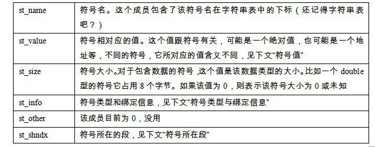
符號型別和繫結資訊（st_info） 該成員低4位表示符號的型別（Symbol Type），高28位表示符號繫結資訊（Symbol Binding），如表3-15、表3-16所示。
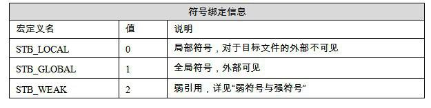
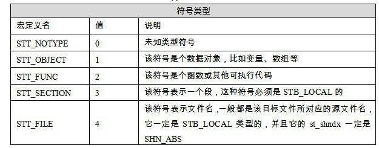
符號所在段（st_shndx）如果符號定義在本目的檔中，那麼這個成員表示符號所在的段在段表中的下標；但是如果符號不是定義在本目的檔中，或者對於有些特殊符號，sh_shndx的值有些特殊，如表3-17所示。
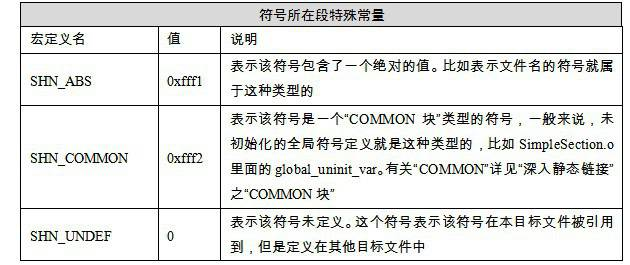
符號值（st_value） 我們前面已經介紹過，每個符號都有一個對應的值，如果這個符號是一個函式或變數的定義，那麼符號的值就是這個函式或變數的地址，更準確地講應該按下面這幾種情況區別對待。
在目的檔中，如果是符號的定義並且該符號不是“COMMON塊”型別的（即st_shndx不為SHN_COMMON，具體請參照“深入靜態連結”一章中的“COMMON塊”），則st_value表示該符號在段中的偏移。即符號所對應的函式或變數位於由st_shndx指定的段，偏移st_value的位置。這也是目的檔中定義全域性變數的符號的最常見情況，比如SimpleSection.o中的“func1”、“main”和“global_init_var”。
在目的檔中，如果符號是“COMMON塊”型別的（即st_shndx為SHN_COMMON），則st_value表示該符號的對齊屬性。比如SimpleSection.o中的“global_uninit_var”。
在執行檔中，st_value表示符號的虛擬地址。這個虛擬地址對於動態連結器來說十分有用。我們將在第3部分講述動態連結器。
根據上面的介紹，我們對ELF檔案的符號表有了大致的瞭解，接著將以SimpleSection.o裡面的符號為例子，分析各個符號在符號表中的狀態。這裡使用readelf工具來檢視ELF檔案的符號，雖然objdump工具也可以達到同樣的目的，但是總體來看readelf的輸出格式更為清晰：
$ readelf –s SimpleSection.o
Symbol table '.symtab' contains 15 entries:
Num: Value Size Type Bind Vis Ndx Name
0: 00000000 0 NOTYPE LOCAL DEFAULT UND
1: 00000000 0 FILE LOCAL DEFAULT ABS SimpleSection.c
2: 00000000 0 SECTION LOCAL DEFAULT 1
3: 00000000 0 SECTION LOCAL DEFAULT 3
4: 00000000 0 SECTION LOCAL DEFAULT 4
5: 00000000 0 SECTION LOCAL DEFAULT 5
6: 00000000 4 OBJECT LOCAL DEFAULT 4 static_var2.1534
7: 00000004 4 OBJECT LOCAL DEFAULT 3 static_var.1533
8: 00000000 0 SECTION LOCAL DEFAULT 7
9: 00000000 0 SECTION LOCAL DEFAULT 6
10: 00000000 4 OBJECT GLOBAL DEFAULT 3 global_init_var
11: 00000000 27 FUNC GLOBAL DEFAULT 1 func1
12: 00000000 0 NOTYPE GLOBAL DEFAULT UND printf
13: 0000001b 64 FUNC GLOBAL DEFAULT 1 main
14: 00000004 4 OBJECT GLOBAL DEFAULT COM global_uninit_var
readelf的輸出格式與上面描述的Elf32_Sym的各個成員幾乎一一對應，第一列Num表示符號表陣列的下標，從0開始，共15個符號；第二列Value就是符號值，即st_value；第三列Size為符號大小，即st_size；第四列和第五列分別為符號型別和繫結資訊，即對應st_info的低4位和高28位；第六列Vis目前在C/C++語言中未使用，我們可以暫時忽略它；第七列Ndx即st_shndx，表示該符號所屬的段；當然最後一列也最明顯，即符號名稱。從上面的輸出可以看到，第一個符號，即下標為0的符號，永遠是一個未定義的符號。對於另外幾個符號解釋如下。
func1和main函式都是定義在SimpleSection.c裡面的，它們所在的位置都為程式碼段，所以Ndx為1，即SimpleSection.o裡面，.text段的下標為1。這一點可以透過readelf –a或objdump –x得到驗證。它們是函式，所以型別是STT_FUNC；它們是全域性可見的，所以是STB_GLOBAL；Size表示函式指令所佔的位元組數；Value表示函式相對於程式碼段起始位置的偏移量。
再來看printf這個符號，該符號在SimpleSection.c裡面被引用，但是沒有被定義。所以它的Ndx是SHN_UNDEF。
global_init_var是已初始化的全域性變數，它被定義在.bss段，即下標為3。
global_uninit_var是未初始化的全域性變數，它是一個SHN_COMMON型別的符號，它本身並沒有存在於BSS段；關於未初始化的全域性變數具體請參見“COMMON塊”。
static_var.1533和static_var2.1534是兩個靜態變數，它們的繫結屬性是STB_LOCAL，即只是編譯單元內部可見。至於為什麼它們的變數名從“static_var”和“static_var2”變成了現在這兩個“static_var.1533”和“static_var2.1534”，我們在下面一節“符號修飾”中將會詳細介紹。
對於那些STT_SECTION型別的符號，它們表示下標為Ndx的段的段名。它們的符號名沒有顯示，其實它們的符號名即它們的段名。比如2號符號的Ndx為1，那麼它即表示.text段的段名，該符號的符號名應該就是“.text”。如果我們使用“objdump –t”就可以清楚地看到這些段名符號。
“SimpleSection.c”這個符號表示編譯單元的原始檔名。
3.5.2 特殊符號
當我們使用ld作為連結器來連結生產執行檔時，它會為我們定義很多特殊的符號，這些符號並沒有在你的程式中定義，但是你可以直接宣告並且引用它，我們稱之為特殊符號。其實這些符號是被定義在ld連結器的連結指令碼中的，我們在後面的“連結過程控制”這一節中會再來回顧這個問題。目前你只需要認為這些符號是特殊的，你無須定義它們，但可以宣告它們並且使用。連結器會在將程式最終連結成執行檔的時候將其解析成正確的值，注意，只有使用ld連結生產最終執行檔的時候這些符號才會存在。幾個很具有代表性的特殊符號如下。
__executable_start，該符號為程式起始地址，注意，不是入口地址，是程式的最開始的地址。
__etext或_etext或etext，該符號為程式碼段結束地址，即程式碼段最末尾的地址。
_edata或edata，該符號為資料段結束地址，即資料段最末尾的地址。
_end或end，該符號為程式結束地址。
以上地址都為程式被載入時的虛擬地址，我們在載入這一章時再來回顧關於程式被載入後的虛擬地址。
我們可以在程式中直接使用這些符號：
/*
* SpecialSymbol.c
*/
#include <stdio.h>
extern char __executable_start[];
extern char etext[], _etext[], __etext[];
extern char edata[], _edata[];
extern char end[], _end[];
int main()
{
printf("Executable Start %X\n", __executable_start);
printf("Text End %X %X %X\n", etext, _etext, __etext);
printf("Data End %X %X\n", edata, _edata);
printf("Executable End %X %X\n", end, _end);
return 0;
}
$ gcc SpecialSymbol.c –o SpecialSymbol
$ ./SpecialSymbol
Executable Start 8048000
Text End 80484D4 80484D4 80484D4
Data End 804963C 804963C
Executable End 8049640 8049640
另外還有不少其他的特殊符號，在此不一一列舉了，它們跟ld的連結指令碼有關。具體請參閱本書第7章的“連結過程控制”。
3.5.3 符號修飾與函式簽名
約在20世紀70年代以前，編譯器編譯原始碼產生目的檔時，符號名與相應的變數和函式的名字是一樣的。比如一個組譯原始碼裡面包含了一個函式foo，那麼組譯器將它編譯成目的檔以後，foo在目的檔中的相對應的符號名也是foo。當後來UNIX平台和C語言發明時，已經存在了相當多的使用組譯編寫的庫和目的檔。這樣就產生了一個問題，那就是如果一個C程式要使用這些庫的話，C語言中不可以使用這些庫中定義的函式和變數的名字作為符號名，否則將會跟現有的目的檔衝突。比如有個用組譯編寫的庫中定義了一個函式叫做main，那麼我們在C語言裡面就不可以再定義一個main函式或變數了。同樣的道理，如果一個C語言的目的檔要用到一個使用Fortran語言編寫的目的檔，我們也必須防止它們的名稱衝突。
為了防止類似的符號名衝突，UNIX下的C語言就規定，C語言原始碼檔案中的所有全域性的變數和函式經過編譯以後，相對應的符號名前加上下劃線“_”。而Fortran語言的原始碼經過編譯以後，所有的符號名前加上“_”，後面也加上“_”。比如一個C語言函式“foo”，那麼它編譯後的符號名就是“_foo”；如果是Fortran語言，就是“_foo_”。
這種簡單而原始的方法的確能夠暫時減少多種語言目的檔之間的符號衝突的機率，但還是沒有從根本上解決符號衝突的問題。比如同一種語言編寫的目的檔還有可能會產生符號衝突，當程式很大時，不同的模組由多個部門（個人）開發，它們之間的命名規範如果不嚴格，則有可能導致衝突。於是像C++這樣的後來設計的語言開始考慮到了這個問題，增加了名稱空間（Namespace）的方法來解決多模組的符號衝突問題。
但是隨著時間的推移，很多作業系統和編譯器被完全重寫了好幾遍，比如UNIX也分化成了很多種，整個環境發生了很大的變化，上面所提到的跟Fortran和古老的組譯庫的符號衝突問題已經不是那麼明顯了。在現在的Linux下的GCC編譯器中，預設情況下已經去掉了在C語言符號前加“_”的這種方式；但是Windows平台下的編譯器還保持的這樣的傳統，比如Visual C++編譯器就會在C語言符號前加“_”，GCC在Windows平台下的版本（cygwin、mingw）也會加“_”。GCC編譯器也可以透過引數選項“-fleading-underscore”或“-fno-leading-underscore”來開啟和關閉是否在C語言符號前加上下劃線。
C++符號修飾
眾所週知，強大而又複雜的C++擁有類、繼承、虛機制、過載、名稱空間等這些特性，它們使得符號管理更為複雜。最簡單的例子，兩個相同名字的函式func(int)和func(double)，盡管函式名相同，但是引數列表不同，這是C++裡面函式過載的最簡單的一種情況，那麼編譯器和連結器在連結過程中如何區分這兩個函式呢？為了支援C++這些複雜的特性，人們發明瞭符號修飾（Name Decoration）或符號改編（Name Mangling）的機制，下面我們來看看C++的符號修飾機制。
首先出現的一個問題是C++允許多個不同引數型別的函式擁有一樣的名字，就是所謂的函式過載；另外C++還在語言級別支援名稱空間，即允許在不同的名稱空間有多個同樣名字的符號。比如清單3-4這段程式碼。
清單3-4 C++ 函式的名稱修飾
int func(int);
float func(float);
class C {
int func(int);
class C2 {
int func(int);
};
};
namespace N {
int func(int);
class C {
int func(int);
};
}
這段程式碼中有6個同名函式叫func，只不過它們的返回型別和引數及所在的名稱空間不同。我們引入一個術語叫做函式簽名（Function Signature），函式簽名包含了一個函式的資訊，包括函式名、它的引數型別、它所在的類和名稱空間及其他資訊。函式簽名用於識別不同的函式，就像簽名用於識別不同的人一樣，函式的名字只是函式簽名的一部分。由於上面6個同名函式的引數型別及所處的類和名稱空間不同，我們可以認為它們的函式簽名不同。在編譯器及連結器處理符號時，它們使用某種名稱修飾的方法，使得每個函式簽名對應一個修飾後名稱（Decorated Name）。編譯器在將C++原始碼編譯成目的檔時，會將函式和變數的名字進行修飾，形成符號名，也就是說，C++的原始碼編譯後的目的檔中所使用的符號名是相應的函式和變數的修飾後名稱。C++編譯器和連結器都使用符號來識別和處理函式和變數，所以對於不同函式簽名的函式，即使函式名相同，編譯器和連結器都認為它們是不同的函式。上面的6個函式簽名在GCC編譯器下，相對應的修飾後名稱如表3-18所示。
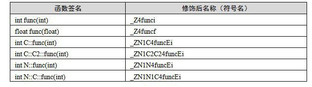
GCC的基本C++名稱修飾方法如下：所有的符號都以“_Z”開頭，對於巢狀的名字（在名稱空間或在類裡面的），後面緊跟“N”，然後是各個名稱空間和類的名字，每個名字前是名字字串長度，再以“E”結尾。比如N::C::func經過名稱修飾以後就是_ZN1N1C4funcE。對於一個函式來說，它的引數列表緊跟在“E”後面，對於int型別來說，就是字母“i”。所以整個N::C::func(int)函式簽名經過修飾為_ZN1N1C4funcEi。更為具體的修飾方法我們在這裡不詳細介紹，有興趣的讀者可以參考GCC的名稱修飾標準。幸好這種名稱修飾方法我們平時程式開發中也很少手工分析名稱修飾問題，所以無須很詳細地瞭解這個過程。binutils裡面提供了一個叫“c++filt”的工具可以用來解析被修飾過的名稱，比如：
GCC的基本C++名稱修飾方法如下：所有的符號都以“_Z”開頭，對於巢狀的名字（在名稱空間或在類裡面的），後面緊跟“N”，然後是各個名稱空間和類的名字，每個名字前是名字字串長度，再以“E”結尾。比如N::C::func經過名稱修飾以後就是_ZN1N1C4funcE。對於一個函式來說，它的引數列表緊跟在“E”後面，對於int型別來說，就是字母“i”。所以整個N::C::func(int)函式簽名經過修飾為_ZN1N1C4funcEi。更為具體的修飾方法我們在這裡不詳細介紹，有興趣的讀者可以參考GCC的名稱修飾標準。幸好這種名稱修飾方法我們平時程式開發中也很少手工分析名稱修飾問題，所以無須很詳細地瞭解這個過程。binutils裡面提供了一個叫“c++filt”的工具可以用來解析被修飾過的名稱，比如：
$ c++filt _ZN1N1C4funcEi N::C::func(int)
簽名和名稱修飾機制不光被使用到函式上，C++中的全域性變數和靜態變數也有同樣的機制。對於全域性變數來說，它跟函式一樣都是一個全域性可見的名稱，它也遵循上面的名稱修飾機制，比如一個名稱空間foo中的全域性變數bar，它修飾後的名字為：_ZN3foo3barE。值得注意的是，變數的型別並沒有被加入到修飾後名稱中，所以不論這個變數是整形還是浮點型甚至是一個全域性物件，它的名稱都是一樣的。
名稱修飾機制也被用來防止靜態變數的名字衝突。比如main()函式裡面有一個靜態變數叫foo，而func()函式裡面也有一個靜態變數叫foo。為了區分這兩個變數，GCC會將它們的符號名分別修飾成兩個不同的名字_ZZ4mainE3foo和_ZZ4funcvE3foo，這樣就區分了這兩個變數。
不同的編譯器廠商的名稱修飾方法可能不同，所以不同的編譯器對於同一個函式簽名可能對應不同的修飾後名稱。比如上面的函式簽名中在Visual C++編譯器下，它們的修飾後名稱如表3-19所示。
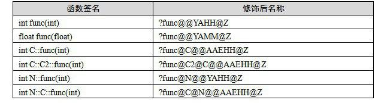
我們以int N::C::func(int)這個函式簽名來猜測Visual C++的名稱修飾規則（當然，你只需要大概瞭解這個修飾規則就可以了）。修飾後名字由“?”開頭，接著是函式名由“@”符號結尾的函式名；後面跟著由“@”結尾的類名“C”和名稱空間“N”，再一個“@”表示函式的名稱空間結束；第一個“A”表示函式呼叫型別為“__cdecl”（函式呼叫型別我們將在第4章詳細介紹），接著是函式的引數型別及返回值，由“@”結束，最後由“Z”結尾。可以看到函式名、引數的型別和名稱空間都被加入了修飾後名稱，這樣編譯器和連結器就可以區別同名但不同引數型別或名字空間的函式，而不會導致link的時候函式多重定義。
Visual C++的名稱修飾規則並沒有對外公開，當然，一般情況下我們也無須瞭解這套規則，但是有時候可能需要將一個修飾後名字轉換成函式簽名，比如在連結、除錯程式的時候可能會用到。Microsoft提供了一個UnDecorateSymbolName()的API，可以將修飾後名稱轉換成函式簽名。下面這段程式碼使用UnDecorateSymbolName()將修飾後名稱轉換成函式簽名：
/* 2-4.c
* Compile: cl 2-4.c /link Dbghelp.lib
* Usage: 2-4.exe DecroatedName
*/
#include <Windows.h>
#include <Dbghelp.h>
int main( int argc, char* argv[] )
{
char buffer[256];
if(argc == 2)
{
UnDecorateSymbolName( argv[1], buffer, 256, 0 );
printf( buffer );
}
else
{
printf( "Usage: 2-4.exe DecroatedName\n" );
}
return 0;
}
由於不同的編譯器採用不同的名字修飾方法，必然會導致由不同編譯器編譯產生的目的檔無法正常相互連結，這是導致不同編譯器之間不能互操作的主要原因之一。我們後面的關於C++ ABI和COM的這一節將會詳細討論這個問題。
3.5.4 extern “C”
C++為了與C相容，在符號的管理上，C++有一個用來宣告或定義一個C的符號的“extern “C””關鍵字用法：
extern ”C” {
int func(int);
int var;
}
C++編譯器會將在extern “C” 的大括號內部的程式碼當作C語言程式碼處理。所以很明顯，上面的程式碼中，C++的名稱修飾機制將不會起作用。它宣告瞭一個C的函式func，定義了一個整形全域性變數var。從上文我們得知，在Visual C++平台下會將C語言的符號進行修飾，所以上述程式碼中的func和var的修飾後符號分別是_func和_var；但是在Linux版本的GCC編譯器下卻沒有這種修飾，extern “C”裡面的符號都為修飾後符號，即前面不用加下劃線。如果單獨宣告某個函式或變數為C語言的符號，那麼也可以使用如下格式：
extern "C" int func(int); extern "C" int var;
上面的程式碼宣告瞭一個C語言的函式func和變數var。我們可以使用上述的機制來做一個小實驗：
// ManualNameMangling.cpp
// g++ ManualNameMangling.cpp -o ManualNameMangling
#include <stdio.h>
namespace myname {
int var = 42;
}
extern "C" int _ZN6myname3varEi;
int main()
{
printf( "%d\n", _ZN6myname3varEi );
return 0;
}
上面的程式碼中，我們在myname的名稱空間中定義了一個全域性變數var。根據我們所掌握的GCC名稱修飾規則，這個變數修飾後的名稱為“_ZN6myname3varEi”，然後我們手工使用extern “C”的方法宣告一個外部符號_ZN6myname3varEi，並將其列印出來。我們使用GCC來編譯這個程式並且執行它，我們就可以得到程式輸出為42：
$ g++ ManaulNameMangling.cpp –o ManualNameMangling $ ./ManualNameMangling 42
很多時候我們會碰到有些標頭檔宣告瞭一些C語言的函式和全域性變數，但是這個標頭檔可能會被C語言程式碼或C++程式碼包含。比如很常見的，我們的C語言庫函式中的string.h中宣告瞭memset這個函式，它的原型如下：
void *memset (void *, int, size_t);
如果不加任何處理，當我們的C語言程式包含string.h的時候，並且用到了memset這個函式，編譯器會將memset符號引用正確處理；但是在C++語言中，編譯器會認為這個memset函式是一個C++函式，將memset的符號修飾成_Z6memsetPvii，這樣連結器就無法與C語言庫中的memset符號進行連結。所以對於C++來說，必須使用extern “C”來宣告memset這個函式。但是C語言又不支援extern “C”語法，如果為了相容C語言和C++語言定義兩套標頭檔，未免過於麻煩。幸好我們有一種很好的方法可以解決上述問題，就是使用C++的宏“__cplusplus”，C++編譯器會在編譯C++的程式時預設定義這個宏，我們可以使用條件宏來判斷當前編譯單元是不是C++程式碼。具體程式碼如下：
#ifdef __cplusplus
extern "C" {
#endif
void *memset (void *, int, size_t);
#ifdef __cplusplus
}
#endif
如果當前編譯單元是C++程式碼，那麼memset會在extern “C”裡面被宣告；如果是C程式碼，就直接宣告。上面這段程式碼中的技巧幾乎在所有的系統標頭檔裡面都被用到。
3.5.5 弱符號與強符號
我們經常在程式設計中碰到一種情況叫符號重複定義。多個目的檔中含有相同名字全域性符號的定義，那麼這些目的檔連結的時候將會出現符號重複定義的錯誤。比如我們在目的檔A和目的檔B都定義了一個全域性整形變數global，並將它們都初始化，那麼連結器將A和B進行連結時會報錯：
b.o:(.data+0x0): multiple definition of `global' a.o:(.data+0x0): first defined here
這種符號的定義可以被稱為強符號（Strong Symbol）。有些符號的定義可以被稱為弱符號（Weak Symbol）。對於C/C++語言來說，編譯器預設函式和初始化了的全域性變數為強符號，未初始化的全域性變數為弱符號。我們也可以透過GCC的“__attribute__((weak))”來定義任何一個強符號為弱符號。注意，強符號和弱符號都是針對定義來說的，不是針對符號的引用。比如我們有下面這段程式：
extern int ext;
int weak;
int strong = 1;
__attribute__((weak)) weak2 = 2;
int main()
{
return 0;
}
上面這段程式中，“weak”和“weak2”是弱符號，“strong”和“main”是強符號，而“ext”既非強符號也非弱符號，因為它是一個外部變數的引用。針對強弱符號的概念，連結器就會按如下規則處理與選擇被多次定義的全域性符號：
規則1：不允許強符號被多次定義（即不同的目的檔中不能有同名的強符號）；如果有多個強符號定義，則連結器報符號重複定義錯誤。
規則2：如果一個符號在某個目的檔中是強符號，在其他檔案中都是弱符號，那麼選擇強符號。
規則3：如果一個符號在所有目的檔中都是弱符號，那麼選擇其中佔用空間最大的一個。比如目的檔A定義全域性變數global為int型，佔4個位元組；目的檔B定義global為double型，佔8個位元組，那麼目的檔A和B連結後，符號global佔8個位元組（盡量不要使用多個不同型別的弱符號，否則容易導致很難發現的程式錯誤）。
弱引用和強引用 目前我們所看到的對外部目的檔的符號引用在目的檔被最終連結成執行檔時，它們需要被正確決議，如果沒有找到該符號的定義，連結器就會報符號未定義錯誤，這種被稱為強引用（Strong Reference）。與之相對應還有一種弱引用（Weak Reference），在處理弱引用時，如果該符號有定義，則連結器將該符號的引用決議；如果該符號未被定義，則連結器對於該引用不報錯。連結器處理強引用和弱引用的過程幾乎一樣，只是對於未定義的弱引用，連結器不認為它是一個錯誤。一般對於未定義的弱引用，連結器預設其為0，或者是一個特殊的值，以便於程式程式碼能夠識別。弱引用和弱符號主要用於庫的連結過程，我們將在“庫”這一章再來詳細講述。弱符號跟連結器的COMMON塊概念聯繫很緊密，我們在後面“深入靜態連結”這一章中的“COMMON塊”一節還會回顧弱符號的概念。
在GCC中，我們可以透過使用“__attribute__((weakref))”這個擴充套件關鍵字來宣告對一個外部函式的引用為弱引用，比如下面這段程式碼：
__attribute__ ((weakref)) void foo();
int main()
{
foo();
}
我們可以將它編譯成一個執行檔，GCC並不會報連結錯誤。但是當我們執行這個執行檔時，會發生執行錯誤。因為當main函式試圖呼叫foo函式時，foo函式的地址為0，於是發生了非法地址訪問的錯誤。一個改進的例子是：
__attribute__ ((weakref)) void foo();
int main()
{
if(foo) foo();
}
這種弱符號和弱引用對於庫來說十分有用，比如庫中定義的弱符號可以被使用者定義的強符號所覆蓋，從而使得程式可以使用自定義版本的庫函式；或者程式可以對某些擴充套件功能模組的引用定義為弱引用，當我們將擴充套件模組與程式連結在一起時，功能模組就可以正常使用；如果我們去掉了某些功能模組，那麼程式也可以正常連結，只是缺少了相應的功能，這使得程式的功能更加容易裁剪和組合。
在Linux程式的設計中，如果一個程式被設計成可以支援單執行緒或多執行緒的模式，就可以透過弱引用的方法來判斷當前的程式是連結到了單執行緒的Glibc庫還是多執行緒的Glibc庫（是否在編譯時有-lpthread選項），從而執行單執行緒版本的程式或多執行緒版本的程式。我們可以在程式中定義一個pthread_create函式的弱引用，然後程式在執行時動態判斷是否連結到pthread庫從而決定執行多執行緒版本還是單執行緒版本：
#include <stdio.h>
#include <pthread.h>
int pthread_create(
pthread_t*,
const pthread_attr_t*,
void* (*)(void*),
void*) __attribute__ ((weak));
int main()
{
if(pthread_create) {
printf("This is multi-thread version!\n");
// run the multi-thread version
// main_multi_thread()
} else {
printf("This is single-thread version!\n");
// run the single-thread version
// main_single_thread()
}
}
編譯執行結果如下：
$ gcc pthread.c -o pt $ ./pt This is single-thread version! $ gcc pthread.c -lpthread -o pt $ ./pt This is multi-thread version!
3.6 除錯資訊
目的檔裡面還有可能儲存的是除錯資訊。幾乎所有現代的編譯器都支援原始碼級別的除錯，比如我們可以在函式裡面設定斷點，可以監視變數變化，可以單步行進等，前提是編譯器必須提前將原始碼與目的碼之間的關係等，比如目的碼中的地址對應原始碼中的哪一行、函式和變數的型別、結構體的定義、字串儲存到目的檔裡面。甚至有些高階的編譯器和偵錯程式支援檢視STL容器的內容，即程式設計師在除錯過程中可以直接觀察STL容器中的成員的值。
如果我們在GCC編譯時加上“-g”引數，編譯器就會在產生的目的檔裡面加上除錯資訊，我們透過readelf等工具可以看到，目的檔裡多了很多“debug”相關的段：
[Nr] Name Type Addr Off Size ES Flg Lk Inf Al ... [ 4] .debug_abbrev PROGBITS 00000000 000040 000034 00 0 0 1 [ 5] .debug_info PROGBITS 00000000 000074 0000af 00 0 0 1 [ 6] .rel.debug_info REL 00000000 000738 000038 08 9 5 4 [ 7] .debug_line PROGBITS 00000000 000123 000037 00 0 0 1 [ 8] .rel.debug_line REL 00000000 000770 000008 08 19 7 4 [ 9] .debug_frame PROGBITS 00000000 00015c 000034 00 0 0 4 [10] .rel.debug_frame REL 00000000 000778 000010 08 19 9 4 [11] .debug_loc PROGBITS 00000000 000190 00002c 00 0 0 1 [12] .debug_pubnames PROGBITS 00000000 0001bc 00001a 00 0 0 1 [13] .rel.debug_pubnam REL 00000000 000788 000008 08 19 12 4 [14] .debug_aranges PROGBITS 00000000 0001d6 000020 00 0 0 1 [15] .rel.debug_arange REL 00000000 000790 000010 08 19 14 4 ...
這些段中儲存的就是除錯資訊。現在的ELF檔案採用一個叫DWARF（Debug With Arbitrary Record Format）的標準的除錯資訊格式，現在該標準已經發展到了第三個版本，即DWARF 3，由DWARF標準委員會由2006年頒布。Microsoft也有自己相應的除錯資訊格式標準，叫CodeView。關於除錯資訊的具體內容我們在這裡不再詳細展開了，它將是另外一個獨立的並且很大的話題，對我們理解整個系統軟體的意義不大，有興趣的讀者可以參照相應的格式標準。但是值得一提的是，除錯資訊在目的檔和執行檔中佔用很大的空間，往往比程式的程式碼和資料本身大好幾倍，所以當我們開發完程式並要將它發布的時候，需要把這些對於使用者沒有用的除錯資訊去掉，以節省大量的空間。在Linux下，我們可以使用“strip”命令來去掉ELF檔案中的除錯資訊：
$strip foo
3.7 本章小結
在這一章中我們深入分析了各種目的檔格式，主要介紹了ELF檔案的程式碼段、資料段和BSS段等與程式執行密切相關的段結構。除此之外，我們還詳細介紹了ELF檔案的檔案頭、段表、重定位表、字串表、符號表、除錯表等相關結構。
從這一章中我們瞭解到，無論是執行檔、目的檔或庫，它們實際上都是一樣基於段的檔案或是這種檔案的集合。程式的原始碼經過編譯以後，按照程式碼和資料分別存放到相應的段中，編譯器（組譯器）還會將一些輔助性的資訊，諸如符號、重定位資訊等也按照表的方式存放到目的檔中，而通常情況下，一個表往往就是一個段。
從這一章中我們瞭解到，無論是執行檔、目的檔或庫，它們實際上都是一樣基於段的檔案或是這種檔案的集合。程式的原始碼經過編譯以後，按照程式碼和資料分別存放到相應的段中，編譯器（組譯器）還會將一些輔助性的資訊，諸如符號、重定位資訊等也按照表的方式存放到目的檔中，而通常情況下，一個表往往就是一個段。
有了這些目的檔之後，接下來的問題就是如何將它們組合起來，形成一個可以使用的程式或一個更大的模組，這就是靜態連結所要解決的問題，我們將在下一章中詳細介紹。
第4章 靜態連結
4.1 空間與地址分配
4.2 符號解析與重定位
4.3 COMMON塊
4.4 C++相關問題
4.5 靜態函式庫連結
4.6 連結過程控制
4.7 BFD庫
4.8 本章小結
透過前面對ELF檔案格式的介紹，使我們對ELF目的檔從整體輪廓到某些區域性的細節都有了一定的瞭解。接下來的問題是：當我們有兩個目的檔時，如何將它們連結起來形成一個執行檔？這個過程中發生了什麼？這基本上就是連結的核心內容：靜態連結。在這一節裡，我們將使用下面這兩個原始碼檔案“a.c”和“b.c”作為例子展開分析：

假設我們的程式只有這兩個模組“a.c”和“b.c”。首先我們使用gcc將“a.c”和“b.c”分別編譯成目的檔“a.o”和“b.o”：
經過編譯以後我們就得到了“a.o”和“b.o”這兩個目的檔。從程式碼中可以看到，“b.c”總共定義了兩個全域性符號，一個是變數“shared”，另外一個是函式“swap”；“a.c”裡面定義了一個全域性符號就是“main”。模組“a.c”裡面引用到了“b.c”裡面的“swap”和“shared”。我們接下來要做的就是把“a.o”和“b.o”這兩個目的檔連結在一起並最終形成一個執行檔“ab”。
4.1 空間與地址分配
對於連結器來說，整個連結過程中，它就是將幾個輸入目的檔加工後合並成一個輸出檔案。那麼在這個例子裡，我們的輸入就是目的檔“a.o”和“b.o”，輸出就是執行檔“ab”。我們在前面詳細分析了ELF檔案的格式，我們知道，執行檔中的程式碼段和資料段都是由輸入的目的檔中合並而來的。那麼我們連結過程就很明顯產生了第一個問題：對於多個輸入目的檔，連結器如何將它們的各個段合並到輸出檔案？或者說，輸出檔案中的空間如何分配給輸入檔案？
4.1.1 按序疊加
一個最簡單的方案就是將輸入的目的檔按照次序疊加起來，如圖4-1所示。
圖4-1中的做法的確很簡單，就是直接將各個目的檔依次合並。但是這樣做會造成一
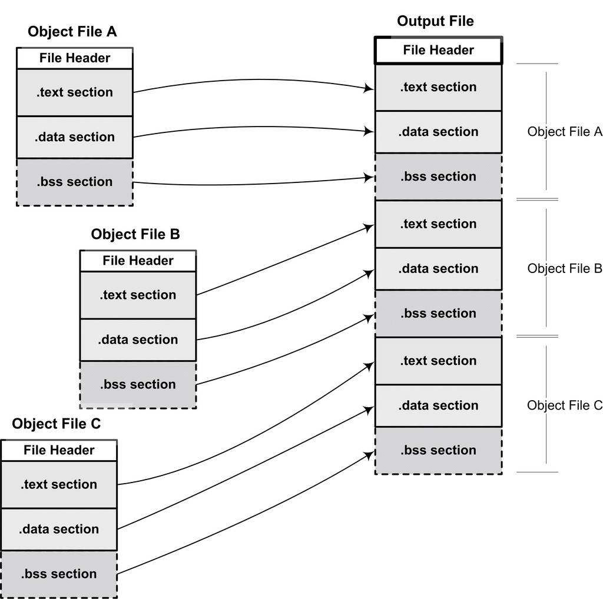
個問題，在有很多輸入檔案的情況下，輸出檔案將會有很多零散的段。比如一個規模稍大的應用程式可能會有數百個目的檔，如果每個目的檔都分別有.text段、.data段和.bss段，那最後的輸出檔案將會有成百上千個零散的段。這種做法非常浪費空間，因為每個段都需要有一定的地址和空間對齊要求，比如對於x86的硬體來說，段的載入地址和空間的對齊單位是頁，也就是4 096位元組（關於地址和空間對齊，我們在後面還會有專門的章節詳細介紹）。那麼就是說如果一個段的長度只有1個位元組，它也要在記憶體中佔用4 096位元組。這樣會造成記憶體空間大量的內部碎片，所以這並不是一個很好的方案。
4.1.2 相似段合並
一個更實際的方法是將相同性質的段合並到一起，比如將所有輸入檔案的“.text”合並到輸出檔案的“.text”段，接著是“.data”段、“.bss”段等，如圖4-2所示。
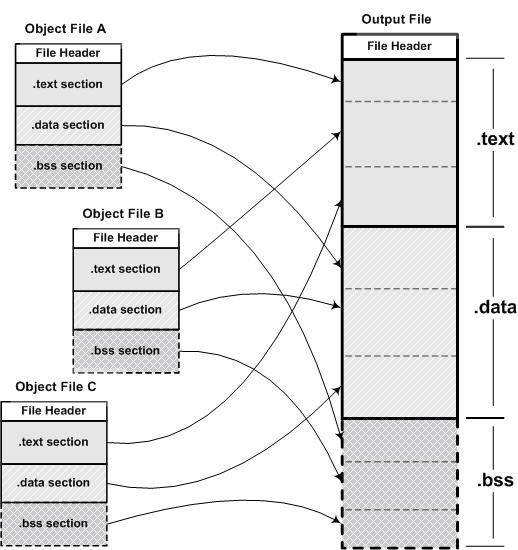
正如我們前文所提到的，“.bss”段在目的檔和執行檔中並不佔用檔案的空間，但是它在載入時佔用地址空間。所以連結器在合並各個段的同時，也將“.bss”合並，並且分配虛擬空間。從“.bss”段的空間分配上我們可以思考一個問題，那就是這裡的所謂的“空間分配”到底是什麼空間？
“連結器為目的檔分配地址和空間”這句話中的“地址和空間”其實有兩個含義：第一個是在輸出的執行檔中的空間；第二個是在載入後的虛擬地址中的虛擬地址空間。對於有實際資料的段，比如“.text”和“.data”來說，它們在檔案中和虛擬地址中都要分配空間，因為它們在這兩者中都存在；而對於“.bss”這樣的段來說，分配空間的意義只侷限於虛擬地址空間，因為它在檔案中並沒有內容。事實上，我們在這裡談到的空間分配只關注於虛擬地址空間的分配，因為這個關係到連結器後面的關於地址計算的步驟，而執行檔本身的空間分配與連結過程關係並不是很大。
關於執行檔和虛擬地址空間之間的關係請參考第10章“執行檔的載入與程式”。
現在的連結器空間分配的策略基本上都採用上述方法中的第二種，使用這種方法的連結器一般都採用一種叫兩步連結（Two-pass Linking）的方法。也就是說整個連結過程分兩步。
第一步 空間與地址分配 掃描所有的輸入目的檔，並且獲得它們的各個段的長度、屬性和位置，並且將輸入目的檔中的符號表中所有的符號定義和符號引用收集起來，統一放到一個全域性符號表。這一步中，連結器將能夠獲得所有輸入目的檔的段長度，並且將它們合並，計算出輸出檔案中各個段合並後的長度與位置，並建立對映關係。
第二步 符號解析與重定位 使用上面第一步中收集到的所有資訊，讀取輸入檔案中段的資料、重定位資訊，並且進行符號解析與重定位、調整程式碼中的地址等。事實上第二步是連結過程的核心，特別是重定位過程。
我們使用ld連結器將“a.o”和“b.o”連結起來：
$ld a.o b.o -e main -o ab
-e main 表示將main函式作為程式入口，ld連結器預設的程式入口為_start。
-o ab 表示連結輸出檔名為ab，預設為a.out。
讓我們使用objdump來檢視連結前後地址的分配情況，程式碼如清單4-1所示。
清單4-1 連結前後各個段的屬性
$ objdump -h a.o
...
Sections:
Idx Name Size VMA LMA File off Algn
0 .text 00000034 00000000 00000000 00000034 2**2
CONTENTS, ALLOC, LOAD, RELOC, READONLY, CODE
1 .data 00000000 00000000 00000000 00000068 2**2
CONTENTS, ALLOC, LOAD, DATA
2 .bss 00000000 00000000 00000000 00000068 2**2
ALLOC
...
$ objdump -h b.o
...
Sections:
Idx Name Size VMA LMA File off Algn
0 .text 0000003e 00000000 00000000 00000034 2**2
CONTENTS, ALLOC, LOAD, READONLY, CODE
1 .data 00000004 00000000 00000000 00000074 2**2
CONTENTS, ALLOC, LOAD, DATA
2 .bss 00000000 00000000 00000000 00000078 2**2
ALLOC
...
$objdump –h ab
...
Sections:
Idx Name Size VMA LMA File off Algn
0 .text 00000072 08048094 08048094 00000094 2**2
CONTENTS, ALLOC, LOAD, READONLY, CODE
1 .data 00000004 08049108 08049108 00000108 2**2
CONTENTS, ALLOC, LOAD, DATA
VMA表示Virtual Memory Address，即虛擬地址，LMA表示Load Memory Address，即載入地址，正常情況下這兩個值應該是一樣的，但是在有些嵌入式系統中，特別是在那些程式放在ROM的系統中時，LMA和VMA是不相同的。這裡我們只要關注VMA即可。
連結前後的程式中所使用的地址已經是程式在程式中的虛擬地址，即我們關心上面各個段中的VMA（Virtual Memory Address）和Size，而忽略檔案偏移（File off）。我們可以看到，在連結之前，目的檔中的所有段的VMA都是0，因為虛擬空間還沒有被分配，所以它們預設都為0。等到連結之後，執行檔“ab”中的各個段都被分配到了相應的虛擬地址。這裡的輸出程式“ab”中，“.text”段被分配到了地址0x08048094，大小為0x72位元組；“.data”段從地址0x08049108開始，大小為4位元組。整個連結過程前後，目的檔各段的分配、程式虛擬地址如圖4-3所示。
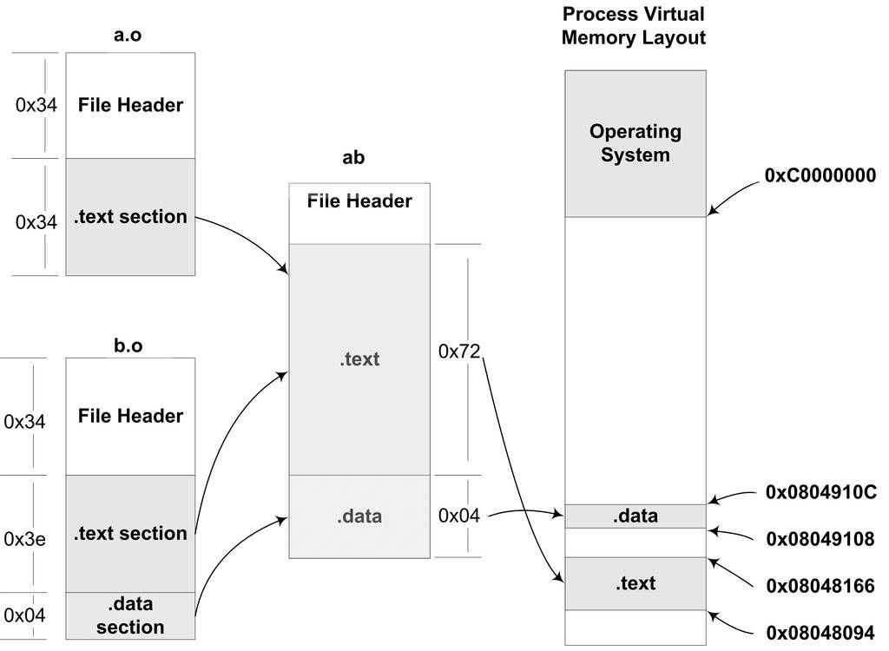
我們在圖4-3中忽略了像.comment這種無關緊要的段，只關心程式碼段和資料段。由於在本例中沒有“.bss”段，所以我們也將其簡化了。從圖4-3中可以看到，“a.o”和“b.o”的程式碼段被先後疊加起來，合並成“ab”的一個.text段，加起來的長度為0x72。所以“ab”的程式碼段裡面肯定包含了main函式和swap函式的指令程式碼。
我們在圖4-3中忽略了像.comment這種無關緊要的段，只關心程式碼段和資料段。由於在本例中沒有“.bss”段，所以我們也將其簡化了。從圖4-3中可以看到，“a.o”和“b.o”的程式碼段被先後疊加起來，合並成“ab”的一個.text段，加起來的長度為0x72。所以“ab”的程式碼段裡面肯定包含了main函式和swap函式的指令程式碼。
那麼，為什麼連結器要將執行檔“ab”的“.text”分配到0x08048094、將“.data”分配0x08049108？而不是從虛擬空間的0地址開始分配呢？這涉及作業系統的程式虛擬地址空間的分配規則，在Linux下，ELF執行檔預設從地址0x08048000開始分配。關於程式的虛擬地址分配等相關內容我們將在第6章“執行檔的載入與程式”這一章進行詳細的分析。
4.1.3 符號地址的確定
我們還是以“a.o”和“b.o”作為例子，來分析這兩個步驟中連結器的工作過程。在第一步的掃描和空間分配階段，連結器按照前面介紹的空間分配方法進行分配，這時候輸入檔案中的各個段在連結後的虛擬地址就已經確定了，比如“.text”段起始地址為0x08048094，“.data”段的起始地址為0x08049108。
當前面一步完成之後，連結器開始計算各個符號的虛擬地址。因為各個符號在段內的相對位置是固定的，所以這時候其實“main”、“shared”和“swap”的地址也已經是確定的了，只不過連結器需要給每個符號加上一個偏移量，使它們能夠調整到正確的虛擬地址。比如我們假設“a.o”中的“main”函式相對於“a.o”的“.text”段的偏移是X，但是經過連結合並以後，“a.o”的“.text”段位於虛擬地址0x08048094，那麼“main”的地址應該是0x08048094 + X。從前面“objdump”的輸出看到，“main”位於“a.o”的“.text”段的最開始，也就是偏移為0，所以“main”這個符號在最終的輸出檔案中的地址應該是0x08048094 + 0，即0x08048094。我們也可以透過完全一樣的計算方法得知所有符號的地址，在這個例子裡面，只有三個全域性符號，所以連結器在更新全域性符號表的符號地址以後，各個符號的最終地址如表4-1所示。
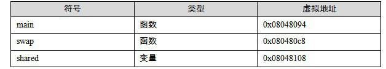
4.2 符號解析與重定位
4.2.1 重定位
在完成空間和地址的分配步驟以後，連結器就進入了符號解析與重定位的步驟，這也是靜態連結的核心內容。在分析符號解析和重定位之前，首先讓我們來看看“a.o”裡面是怎麼使用這兩個外部符號的，也就是說我們在“a.c”的源程式裡面使用了“shared”變數和“swap”函式，那麼編譯器在將“a.c”編譯成指令時，它如何訪問“shared”變數？如何呼叫“swap”函式？
使用objdump的“-d”引數可以看到“a.o”的程式碼段反組譯結果：
$objdump -d a.o a.o: file format elf32-i386 Disassembly of section .text: 00000000 <main>: 0: 8d 4c 24 04 lea 0x4(%esp),%ecx 4: 83 e4 f0 and $0xfffffff0,%esp 7: ff 71 fc pushl 0xfffffffc(%ecx) a: 55 push %ebp b: 89 e5 mov %esp,%ebp d: 51 push %ecx e: 83 ec 24 sub $0x24,%esp 11: c7 45 f8 64 00 00 00 movl $0x64,0xfffffff8(%ebp) 18: c7 44 24 04 00 00 00 movl $0x0,0x4(%esp) 1f: 00 20: 8d 45 f8 lea 0xfffffff8(%ebp),%eax 23: 89 04 24 mov %eax,(%esp) 26: e8 fc ff ff ff call 27 <main+0x27> 2b: 83 c4 24 add $0x24,%esp 2e: 59 pop %ecx 2f: 5d pop %ebp 30: 8d 61 fc lea 0xfffffffc(%ecx),%esp 33: c3 ret
我們知道在程式的程式碼裡面使用的都是虛擬地址，在這裡也可以看到“main”的起始地址為0x00000000，這是因為在未進行前面提到過的空間分配之前，目的檔程式碼段中的起始地址以0x00000000開始，等到空間分配完成以後，各個函式才會確定自己在虛擬地址空間中的位置。
我們可以很清楚地看到“a.o”的反組譯結果中，“a.o”共定義了一個函式main。這個函式佔用0x33個位元組，共17條指令；最左邊那列是每條指令的偏移量，每一行代表一條指令（有些指令的長度很長，如第偏移為0x18的mov指令，它的二進位顯示佔據了兩行）。我們已經用粗體標出了兩個引用“shared”和“swap”的位置，對於“shared”的引用是一條“mov”指令，這條指令總共8個位元組，它的作用是將“shared”的地址賦值到ESP暫存器+4的偏移地址中去，前面4個位元組是指令碼，後面4個位元組是“shared”的地址，我們只關心後面的4個位元組部分，如圖4-4所示。
我們可以很清楚地看到“a.o”的反組譯結果中，“a.o”共定義了一個函式main。這個函式佔用0x33個位元組，共17條指令；最左邊那列是每條指令的偏移量，每一行代表一條指令（有些指令的長度很長，如第偏移為0x18的mov指令，它的二進位顯示佔據了兩行）。我們已經用粗體標出了兩個引用“shared”和“swap”的位置，對於“shared”的引用是一條“mov”指令，這條指令總共8個位元組，它的作用是將“shared”的地址賦值到ESP暫存器+4的偏移地址中去，前面4個位元組是指令碼，後面4個位元組是“shared”的地址，我們只關心後面的4個位元組部分，如圖4-4所示。
當原始碼“a.c”在被編譯成目的檔時，編譯器並不知道“shared”和“swap”的地址，因為它們定義在其他目的檔中。所以編譯器就暫時把地址0看作是“shared”的地址，我們可以看到這條“mov”指令中，關於“shared”的地址部分為“0x00000000”。
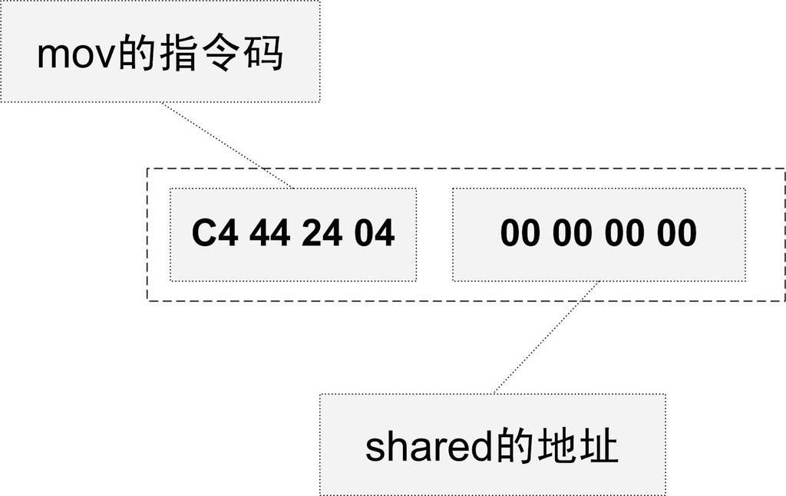
另外一個是偏移為0x26的指令的一條呼叫指令，它其實就表示對swap函式的呼叫，如圖4-5所示。
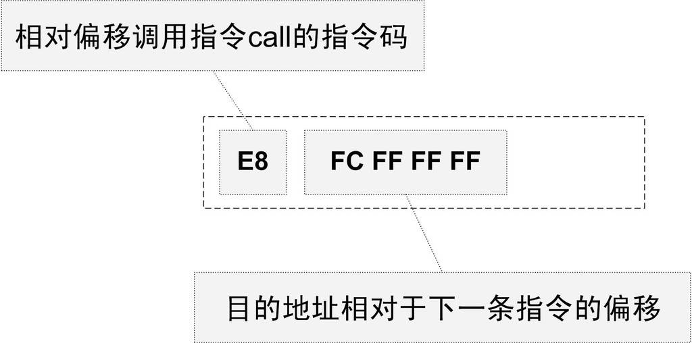
這條指令共5個位元組，前面的0xE8是操作碼（Operation Code），從Intel的IA-32體係軟體開發者手冊（IA-32 Intel Architecture Software Developer’s Manual，參考文獻裡有詳細介紹）可以查閱到，這條指令是一條近址相對位移呼叫指令（Call near, relative, displacement relative to next instruction），後面4個位元組就是被呼叫函式的相對於呼叫指令的下一條指令的偏移量。在沒有重定位之前，相對偏移被置為0xFFFFFFFC（小端），它是常量“?-4”的補碼形式。
讓我們來仔細看這條指令的含義。緊跟在這條call指令後面的那條指令為add指令，add指令的地址為0x2b，而相對於add指令偏移為“?4”的地址即 0x2b – 4 = 0x27。所以這條call指令的實際呼叫地址為0x27。我們可以看到0x27存放著並不是swap函式的地址，跟前面“shared”一樣，“0xFFFFFFFC”只是一個臨時的假地址，因為在編譯的時候，編譯器並不知道“swap”的真正地址。
編譯器把這兩條指令的地址部分暫時用地址“0x00000000”和“0xFFFFFFFC”代替著，把真正的地址計算工作留給了連結器。我們透過前面的空間與地址分配可以得知，連結器在完成地址和空間分配之後就已經可以確定所有符號的虛擬地址了，那麼連結器就可以根據符號的地址對每個需要重定位的指令進行地位修正。我們用objdump來反組譯輸出程式“ab”的程式碼段，可以看到main函式的兩個重定位入口都已經被修正到正確的位置：
$objdump –d ab ab: file format elf32-i386 Disassembly of section .text: 08048094 <main>: 8048094: 8d 4c 24 04 lea 0x4(%esp),%ecx 8048098: 83 e4 f0 and $0xfffffff0,%esp 804809b: ff 71 fc pushl 0xfffffffc(%ecx) 804809e: 55 push %ebp 804809f: 89 e5 mov %esp,%ebp 80480a1: 51 push %ecx 80480a2: 83 ec 24 sub $0x24,%esp 80480a5: c7 45 f8 64 00 00 00 movl $0x64,0xfffffff8(%ebp) 80480ac: c7 44 24 04 08 91 04 movl $0x8049108,0x4(%esp) 80480b3: 08 80480b4: 8d 45 f8 lea 0xfffffff8(%ebp),%eax 80480b7: 89 04 24 mov %eax,(%esp) 80480ba: e8 09 00 00 00 call 80480c8 <swap> 80480bf: 83 c4 24 add $0x24,%esp 80480c2: 59 pop %ecx 80480c3: 5d pop %ebp 80480c4: 8d 61 fc lea 0xfffffffc(%ecx),%esp 80480c7: c3 ret 080480c8 <swap>: 80480c8: 55 push %ebp ...
經過修正以後，“shared”和“swap”的地址分別為0x08049108和0x00000009（小端位元組序）。關於“shared”很好理解，因為“shared”變數的地址的確是0x08049108。對於“swap”來說稍顯晦澀。我們前面介紹過，這個“call”指令是一條近址相對位移呼叫指令，它後面跟的是呼叫指令的下一條指令的偏移量，“call”指令的下一條指令是“add”，它的地址是0x080480bf，所以“相對於add指令偏移量為0x00000009”的地址為0x080480bf + 9 = 0x080480c8，即剛好是“swap ”函式的地址。有興趣的讀者可以閱讀後面的“指令修正方式”一節，那裡我們將更加詳細介紹指令修正時的地址計算方式。
4.2.2 重定位表
那麼連結器是怎麼知道哪些指令是要被調整的呢？這些指令的哪些部分要被調整？怎麼調整？比如上面例子中“mov”指令和“call”指令的調整方式就有所不同。事實上在ELF檔案中，有一個叫重定位表（Relocation Table）的結構專門用來儲存這些與重定位相關的資訊，我們在前面介紹ELF檔案結構時已經提到過了重定位表，它在ELF檔案中往往是一個或多個段。
對於可重定位的ELF檔案來說，它必須包含有重定位表，用來描述如何修改相應的段裡的內容。對於每個要被重定位的ELF段都有一個對應的重定位表，而一個重定位表往往就是ELF檔案中的一個段，所以其實重定位表也可以叫重定位段，我們在這裡統一稱作重定位表。比如程式碼段“.text”如有要被重定位的地方，那麼會有一個相對應叫“.rel.text”的段儲存了程式碼段的重定位表；如果程式碼段“.data”有要被重定位的地方，就會有一個相對應叫“.rel.data”的段儲存了資料段的重定位表。我們可以使用objdump來檢視目的檔的重定位表：
$ objdump -r a.o a.o: file format elf32-i386 RELOCATION RECORDS FOR [.text]: OFFSET TYPE VALUE 0000001c R_386_32 shared 00000027 R_386_PC32 swap
這個命令可以用來檢視“a.o”裡面要重定位的地方，即“a.o”所有引用到外部符號的地址。每個要被重定位的地方叫一個重定位入口（Relocation Entry），我們可以看到“a.o”裡面有兩個重定位入口。重定位入口的偏移（Offset）表示該入口在要被重定位的段中的位置，“RELOCATION RECORDS FOR [.text]”表示這個重定位表是程式碼段的重定位表，所以偏移表示程式碼段中需要被調整的位置。對照前面的反組譯結果可以知道，這裡的0x1c和0x27分別就是程式碼段中“mov”指令和“call”指令的地址部分。
對於32位的Intel x86係列處理器來說，重定位表的結構也很簡單，它是一個Elf32_Rel結構的陣列，每個陣列元素對應一個重定位入口。Elf32_Rel的定義如下：
typedef struct {
Elf32_Addr r_offset;
Elf32_Word r_info;
} Elf32_Rel;
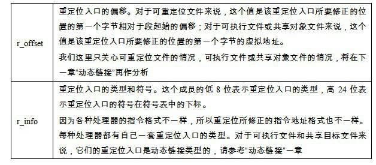
4.2.3 符號解析
在我們通常的觀念裡，之所以要連結是因為我們目的檔中用到的符號被定義在其他目的檔，所以要將它們連結起來。比如我們直接使用ld來連結“a.o”，而不將“b.o”作為輸入。連結器就會發現shared和swap兩個符號沒有被定義，沒有辦法完成連結工作：
$ ld a.o a.o: In function `main': a.c:(.text+0x1c): undefined reference to `shared' a.c:(.text+0x27): undefined reference to `swap'
這也是我們平時在編寫程式的時候最常碰到的問題之一，就是連結時符號未定義。導致這個問題的原因很多，最常見的一般都是連結時缺少了某個庫，或者輸入目的檔路徑不正確或符號的宣告與定義不一樣。所以從普通程式設計師的角度看，符號的解析佔據了連結過程的主要內容。
透過前面指令重定位的介紹，我們可以更加深層次地理解為什麼缺少符號的定義會導致連結錯誤。其實重定位過程也伴隨著符號的解析過程，每個目的檔都可能定義一些符號，也可能引用到定義在其他目的檔的符號。重定位的過程中，每個重定位的入口都是對一個符號的引用，那麼當連結器需要對某個符號的引用進行重定位時，它就要確定這個符號的目標地址。這時候連結器就會去查詢由所有輸入目的檔的符號表組成的全域性符號表，找到相應的符號後進行重定位。
比如我們檢視“a.o”的符號表：
$ readelf -s a.o
Symbol table '.symtab' contains 10 entries:
Num: Value Size Type Bind Vis Ndx Name
0: 00000000 0 NOTYPE LOCAL DEFAULT UND
1: 00000000 0 FILE LOCAL DEFAULT ABS a.c
2: 00000000 0 SECTION LOCAL DEFAULT 1
3: 00000000 0 SECTION LOCAL DEFAULT 3
4: 00000000 0 SECTION LOCAL DEFAULT 4
5: 00000000 0 SECTION LOCAL DEFAULT 6
6: 00000000 0 SECTION LOCAL DEFAULT 5
7: 00000000 52 FUNC GLOBAL DEFAULT 1 main
8: 00000000 0 NOTYPE GLOBAL DEFAULT UND shared
9: 00000000 0 NOTYPE GLOBAL DEFAULT UND swap
“GLOBAL”型別的符號，除了“main”函式是定義在程式碼段之外，其他兩個“shared”和“swap”都是“UND”，即“undefined”未定義型別，這種未定義的符號都是因為該目的檔中有關於它們的重定位項。所以在連結器掃描完所有的輸入目的檔之後，所有這些未定義的符號都應該能夠在全域性符號表中找到，否則連結器就報符號未定義錯誤。
4.2.4 指令修正方式
不同的處理器指令對於地址的格式和方式都不一樣。比如對於32位Intel x86處理器來說，轉移跳轉指令（jmp 指令）、子程式呼叫指令（call 指令）和資料傳送指令（mov 指令）定址方式千差萬別。直至2006年為止，Intel x86係列CPU的jmp指令有11種定址模式；call指令有10種；mov指令則有多達34種定址模式！這些定址方式有如下幾方面的區別：
• 近址定址或遠址定址。
• 絕對定址或相對定址。
• 定址長度為8位、16位、32位或64位。
但是對於32位x86平台下的ELF檔案的重定位入口所修正的指令定址方式只有兩種：
• 絕對近址32位定址。
• 相對近址32位定址。
這兩種重定位方式指令修正方式每個被修正的位置的長度都為32位，即4個位元組。而且都是近址定址，不用考慮Intel的段間遠址定址。唯一的區別就是絕對定址和相對定址。前面我們提到過，重定位入口的r_info成員低8位表示重定位入口型別，如表4-2所示。
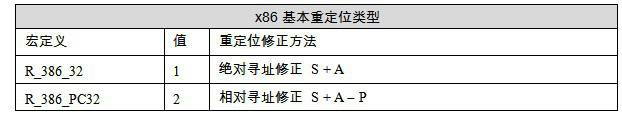
A = 儲存在被修正位置的值
P = 被修正的位置（相對於段開始的偏移量或者虛擬地址），注意，該值可透過r_offset計算得到
S = 符號的實際地址，即由r_info的高24位指定的符號的實際地址
對照前面a.o的重定位資訊，我們可以看到第一個重定位入口是對swap符號的引用，型別為R_386_PC32，查閱Intel指令手冊，它的確是一條相對位移呼叫指令；而shared是R_386_32型別的，它修正的是一條傳輸指令的源，該傳輸指令的源是一個立即數，即shared的絕對地址。所以這兩個重定位入口很具有代表性，分別代表了兩種不同的重定位地址修正方式。
現在讓我們假設在將a.o和b.o連結成最終執行檔後，main函式的虛擬地址為0x1000，swap函式的虛擬地址為0x2000；shared變數的虛擬地址為0x3000。那麼我們的連結器將如何修正a.o裡面這兩個重定位入口呢？
絕對定址修正 讓我們先看a.o的第一個重定位入口，即偏移為0x18的這條mov指令的修正，它的修正方式是R_386_32，即絕對地址修正。對於這個重定位入口，它修正後的結果應該是S + A。
• S是符號shared的實際地址，即0x3000。
• A是被修正位置的值，即0x00000000。
所以最後這個重定位入口修正後地址為：0x3000 + 0x00000000 = 0x3000。即指令修正後應該是：
... 1011: c7 45 f8 64 00 00 00 movl $0x64,0xfffffff8(%ebp) 1018: c7 44 24 04 00 30 00 movl $0x3000,0x4(%esp) 101f: 00 1020: 8d 45 f8 lea 0xfffffff8(%ebp),%eax ...
相對定址修正* 讓我們再來看看a.o的第二個重定位入口，即偏移為0x26的這條call指令的修正，它的指令修正方式是R_386_PC32，即相對定址修正。對於這個重定位入口，它修正後的結果應該是S + A – P。
• S是符號swap的實際地址，即0x2000；
• A是被修正位置的值，即0xFFFFFFFC（-4）；
• P為被修正的位置，當連結成執行檔時，這個值應該是被修正位置的虛擬地址，即0x1000 + 0x27。
所以最後這個重定位入口修正後地址為：0x2000 + (-4) – ( 0x1000 + 0x27) = 0xFD5。即指令修正後應該是：
... 1023: 8d 45 f8 lea 0xfffffff8(%ebp),%eax 1026: e8 d5 0f 00 00 call 0xfd5 102b: 89 04 24 mov %eax,(%esp) ... 2000<swap>: ...
這條相對位移呼叫指令呼叫的地址是該指令下一條指令的起始地址加上偏移量，即：0x102b + 0xfd5 = 0x2000，剛好是swap函式的地址。
從這兩個例子可以看出來，絕對定址修正和相對定址修正的區別就是絕對定址修正後的地址為該符號的實際地址；相對定址修正後的地址為符號距離被修正位置的地址差。
4.3 COMMON塊
正如前面提到過的，由於弱符號機制允許同一個符號的定義存在於多個檔案中，所以可能會導致的一個問題是：如果一個弱符號定義在多個目的檔中，而它們的型別又不同，怎麼辦？目前的連結器本身並不支援符號的型別，即變數型別對於連結器來說是透明的，它只知道一個符號的名字，並不知道型別是否一致。那麼當我們定義的多個符號定義型別不一致時，連結器該如何處理呢？讓我們來分析一下多個符號定義型別不一致的幾種情況，主要分三種情況：
兩個或兩個以上強符號型別不一致；
有一個強符號，其他都是弱符號，出現型別不一致；
兩個或兩個以上弱符號型別不一致。
對於上述三種情況，第一種情況是無須額外處理的，因為多個強符號定義本身就是非法的，連結器會報符號多重定義錯誤；連結器要處理的就是後兩種情況。
事實上，現在的編譯器和連結器都支援一種叫COMMON塊（Common Block）的機制，這種機制最早來源於Fortran，早期的Fortran沒有動態分配空間的機制，程式設計師必須事先宣告它所需要的臨時使用空間的大小。Fortran把這種空間叫COMMON塊，當不同的目的檔需要的COMMON塊空間大小不一致時，以最大的那塊為準。
現代的連結機制在處理弱符號的時候，採用的就是與COMMON塊一樣的機制。前面我們在SimpleSection.c這個例子中已經看到，編譯器將未初始化的全域性變數定義作為弱符號處理。比如符號global_uninit_var，它在符號表中的各個值為（使用readelf -s）：
st_name = "global_uninit_var" st_value = 4 st_size = 4 st_info = 0x11 STB_GLOBAL STT_OBJECT st_other = 0 st_shndx = 0xfff2 SHN_COMMON
可以看到它是一個全域性的資料物件，它的型別為SHN_COMMON型別，這是一個典型的弱符號。那麼如果我們在另外一個檔案中也定義了global_uninit_var變數，且未初始化，它的型別為double，佔8個位元組，情況會怎麼樣呢？按照COMMON型別的連結規則，原則上講最終連結後輸出檔案中，global_uninit_var的大小以輸入檔案中最大的那個為準。即這兩個檔案連結後輸出檔案中global_uninit_var所佔的空間為8個位元組。
可以看到它是一個全域性的資料物件，它的型別為SHN_COMMON型別，這是一個典型的弱符號。那麼如果我們在另外一個檔案中也定義了global_uninit_var變數，且未初始化，它的型別為double，佔8個位元組，情況會怎麼樣呢？按照COMMON型別的連結規則，原則上講最終連結後輸出檔案中，global_uninit_var的大小以輸入檔案中最大的那個為準。即這兩個檔案連結後輸出檔案中global_uninit_var所佔的空間為8個位元組。
當然COMMON型別的連結規則是針對符號都是弱符號的情況，如果其中有一個符號為強符號，那麼最終輸出結果中的符號所佔空間與強符號相同。值得注意的是，如果連結過程中有弱符號大小大於強符號，那麼ld連結器會報如下警告：
ld: warning: alignment 4 of symbol `global’ in a.o is smaller than 8 in b.o
這種使用COMMON塊的方法實際上是一種類似“駭客”的取巧辦法，直接導致需要COMMON機制的原因是編譯器和連結器允許不同型別的弱符號存在，但最本質的原因還是連結器不支援符號型別，即連結器無法判斷各個符號的型別是否一致。
現在我們再回頭總結性地思考關於未初始化的全域性變數的問題：在目的檔中，編譯器為什麼不直接把未初始化的全域性變數也當作未初始化的區域性靜態變數一樣處理，為它在BSS段分配空間，而是將其標記為一個COMMON型別的變數？
透過瞭解連結器處理多個弱符號的過程，我們可以想到，當編譯器將一個編譯單元編譯成目的檔的時候，如果該編譯單元包含了弱符號（未初始化的全域性變數就是典型的弱符號），那麼該弱符號最終所佔空間的大小在此時是未知的，因為有可能其他編譯單元中該符號所佔的空間比本編譯單元該符號所佔的空間要大。所以編譯器此時無法為該弱符號在BSS段分配空間，因為所需要空間的大小未知。但是連結器在連結過程中可以確定弱符號的大小，因為當連結器讀取所有輸入目的檔以後，任何一個弱符號的最終大小都可以確定了，所以它可以在最終輸出檔案的BSS段為其分配空間。所以總體來看，未初始化全域性變數最終還是被放在BSS段的。
關於多個檔案中出現同一個變數的多個定義的原因，還有一種說法是由於早期C語言程式設計師粗心大意，經常忘記在宣告變數時在前面加上“extern”關鍵字，使得編譯器會在多個目的檔中產生同一個變數的定義。為瞭解決這個問題，編譯器和連結器幹脆就把未初始化的變數都當作COMMON型別的處理。
GCC的“-fno-common”也允許我們把所有未初始化的全域性變數不以COMMON塊的形式處理，或者使用“__attribute__”擴充套件：
int global __attribute__((nocommon));
一旦一個未初始化的全域性變數不是以COMMON塊的形式存在，那麼它就相當於一個強符號，如果其他目的檔中還有同一個變數的強符號定義，連結時就會發生符號重複定義錯誤。
4.4 C++相關問題
C++的一些語言特性使之必須由編譯器和連結器共同支援才能完成工作。最主要的有兩個方面，一個是C++的重複程式碼消除，還有一個就是全域性構造與析構。另外由於C++語言的各種特性，比如虛擬函式、函式過載、繼承、異常等，使得它背後的資料結構異常複雜，這些資料結構往往在不同的編譯器和連結器之間相互不能通用，使得C++程式的二進位相容性成了一個很大的問題，我們在這一節還將討論C++程式的二進位相容性問題。
4.4.1 重複程式碼消除
C++編譯器在很多時候會產生重複的程式碼，比如模板（Templates）、外部行內函數（Extern Inline Function）和虛擬函式表（Virtual Function Table）都有可能在不同的編譯單元裡生成相同的程式碼。最簡單的情況就拿模板來說，模板從本質上來講很像宏，當模板在一個編譯單元裡被例項化時，它並不知道自己是否在別的編譯單元也被例項化了。所以當一個模板在多個編譯單元同時例項化成相同的型別的時候，必然會生成重複的程式碼。當然，最簡單的方案就是不管這些，將這些重複的程式碼都保留下來。不過這樣做的主要問題有以下幾方面。
• 空間浪費。可以想象一個有幾百個編譯單元的工程同時例項化了許多個模板，最後連結的時候必須將這些重複的程式碼消除掉，否則最終程式的大小肯定會膨脹得很厲害。
• 地址較易出錯。有可能兩個指向同一個函式的指標會不相等。
• 指令執行效率較低。因為現代的CPU都會對指令和資料進行快取，如果同樣一份指令有多份副本，那麼指令Cache的命中率就會降低。
一個比較有效的做法就是將每個模板的例項程式碼都單獨地存放在一個段裡，每個段只包含一個模板例項。比如有個模板函式是add<T>()，某個編譯單元以int型別和float型別例項化了該模板函式，那麼該編譯單元的目的檔中就包含了兩個該模板例項的段。為了簡單起見，我們假設這兩個段的名字分別叫.temp.add<int> 和 .temp.add<float>。這樣，當別的編譯單元也以int或float型別例項化該模板函式後，也會生成同樣的名字，這樣連結器在最終連結的時候可以區分這些相同的模板例項段，然後將它們合並入最後的程式碼段。
這種做法的確被目前主流的編譯器所採用，GNU GCC編譯器和VISUAL C++編譯器都採用了類似的方法。GCC把這種類似的需要在最終連結時合並的段叫“Link Once”，它的做法是將這種型別的段命名為“.gnu.linkonce.name”，其中“name”是該模板函式例項的修飾後名稱。VISUAL C++編譯器做法稍有不同，它把這種型別的段叫做“COMDAT”，這種“COMDAT”段的屬性欄位（PE檔案的段表結構裡面的IMAGE_SECTION_HEADER的Characteristics成員）都有IMAGE_SCN_LNK_COMDAT（0x00001000）這個標記，在連結器看到這個標記後，它就認為該段是COMDAT型別的，在連結時會將重複的段丟棄。
這種重複程式碼消除對於模板來說是這樣的，對於外部行內函數和虛擬函式表的做法也類似。比如對於一個有虛擬函式的類來說，有一個與之相對應的虛擬函式表（Virtual Function Table，一般簡稱vtbl），編譯器會在用到該類的多個編譯單元生成虛擬函式表，造成程式碼重複；外部行內函數、預設建構函式、預設複製建構函式和賦值運算子也有類似的問題。它們的解決方式基本跟模板的重複程式碼消除類似。
這種方法雖然能夠基本上解決程式碼重複的問題，但還是存在一些問題。比如相同名稱的段可能擁有不同的內容，這可能由於不同的編譯單元使用了不同的編譯器版本或者編譯最佳化選項，導致同一個函式編譯出來的實際程式碼有所不同。那麼這種情況下連結器可能會做出一個選擇，那就是隨意選擇其中任何一個副本作為連結的輸入，然後同時提供一個警告資訊。
函式級別連結
由於現在的程式和庫通常來講都非常龐大，一個目的檔可能包含成千上百個函式或變數。當我們需要用到某個目的檔中的任意一個函式或變數時，就需要把它整個地連結進來，也就是說那些沒有用到的函式也被一起連結了進來。這樣的後果是連結輸出檔案會變得很大，所有用到的沒用到的變數和函式都一起塞到了輸出檔案中。
VISUAL C++編譯器提供了一個編譯選項叫函式級別連結（Functional-Level Linking，/Gy），這個選項的作用就是讓所有的函式都像前面模板函式一樣，單獨儲存到一個段裡面。當連結器需要用到某個函式時，它就將它合並到輸出檔案中，對於那些沒有用的函式則將它們拋棄。這種做法可以很大程度上減小輸出檔案的長度，減少空間浪費。但是這個最佳化選項會減慢編譯和連結過程，因為連結器需要計算各個函式之間的依賴關係，並且所有函式都保持到獨立的段中，目標函式的段的數量大大增加，重定位過程也會因為段的數目的增加而變得複雜，目的檔隨著段數目的增加也會變得相對較大。
GCC編譯器也提供了類似的機制，它有兩個選擇分別是“-ffunction-sections”和“-fdata-sections”，這兩個選項的作用就是將每個函式或變數分別保持到獨立的段中。
4.4.2 全域性構造與析構
我們知道一般的一個C/C++程式是從main開始執行的，隨著main函式的結束而結束。然而，其實在main函式被呼叫之前，為了程式能夠順利執行，要先初始化程式執行環境，比如堆分配初始化（malloc、free）、執行緒子系統等，關於main之前所執行的部分，我們將在本書的第4部分詳細介紹。C++的全域性物件建構函式也是在這一時期被執行的，我們知道C++的全域性物件的建構函式在main之前被執行，C++全域性物件的解構函式在main之後被執行。
Linux系統下一般程式的入口是“_start”，這個函式是Linux系統庫（Glibc）的一部分。當我們的程式與Glibc庫連結在一起形成最終執行檔以後，這個函式就是程式的初始化部分的入口，程式初始化部分完成一係列初始化過程之後，會呼叫main函式來執行程式的主體。在main函式執行完成以後，返回到初始化部分，它進行一些清理工作，然後結束程式。對於有些場合，程式的一些特定的操作必須在main函式之前被執行，還有一些操作必須在main函式之後被執行，其中很具有代表性的就是C++的全域性物件的構造和解構函式。因此ELF檔案還定義了兩種特殊的段。
.init 該段裡面儲存的是可執行指令，它構成了程式的初始化程式碼。因此，當一個程式開始執行時，在main函式被呼叫之前，Glibc的初始化部分安排執行這個段的中的程式碼。
.fini 該段儲存著程式終止程式碼指令。因此，當一個程式的main函式正常退出時，Glibc會安排執行這個段中的程式碼。
這兩個段.init和.fini的存在有著特別的目的，如果一個函式放到.init段，在main函式執行前系統就會執行它。同理，假如一個函式放到.fint段，在main函式返回後該函式就會被執行。利用這兩個特性，C++的全域性構造和解構函式就由此實現。我們將在第11章中作詳細介紹。
4.4.3 C++與ABI
既然每個編譯器都能將原始碼編譯成目的檔，那麼有沒有不同編譯器編譯出來的目的檔是不能夠相互連結的呢？有沒有可能將MSVC編譯出來的目的檔和GCC編譯出來的目的檔連結到一起，形成一個執行檔呢？
對於上面這些問題，首先我們可以想到的是，如果要將兩個不同編譯器的編譯結果連結到一起，那麼，首先連結器必須支援這兩個編譯器產生的目的檔的格式。比如MSVC編譯的目的檔是PE/COFF格式的，而GCC編譯的結果是ELF格式的，連結器必須同時認識這兩種格式才行，否則肯定沒戲。那是不是連結器只要同時認識目的檔的格式就可以了呢？
事實並不像我們想象的那麼簡單，如果要使兩個編譯器編譯出來的目的檔能夠相互連結，那麼這兩個目的檔必須滿足下面這些條件：採用同樣的目的檔格式、擁有同樣的符號修飾標準、變數的記憶體分佈方式相同、函式的呼叫方式相同，等等。其中我們把符號修飾標準、變數記憶體佈局、函式呼叫方式等這些跟可執行程式碼二進位相容性相關的內容稱為ABI（Application Binary Interface）。
ABI & API
很多時候我們會碰到API（Application Programming Interface）這個概念，它與ABI只有一字之差，而且非常類似，很多人經常將它們的概念搞混。那麼它們之間有什麼區別呢？實際上它們都是所謂的應用程式介面，只是它們所描述的介面所在的層面不一樣。API往往是指原始碼級別的介面，比如我們可以說POSIX是一個API標準、Windows所規定的應用程式介面是一個API；而ABI是指二進位層面的介面，ABI的相容程度比API要更為嚴格，比如我們可以說C++的物件記憶體分佈（Object Memory Layout）是C++ ABI的一部分。API更關注原始碼層面的，比如POSIX規定printf()這個函式的原型，它能保證這個函式定義在所有遵循POSIX標準的系統之間都是一樣的，但是它不保證printf在實際的每個系統中執行時，是否按照從右到左將引數壓入堆疊，引數在堆疊中如何分佈等這些實際執行時的二進位級別的問題。比如有兩台機器，一台是Intel x86，另外一台是MIPS的，它們都安裝了Linux系統，由於Linux支援POSIX標準，所以它們的C執行庫都應該有printf函式。但實際上printf在被呼叫過程中，這些關於引數和堆疊分佈的細節在不同的機器上肯定是不一樣的，甚至呼叫printf的指令也是不一樣的（x86是call指令，MIPS是jal指令），這就是說，API相同並不表示ABI相同。
ABI的概念其實從開始至今一直存在，因為人們總是希望程式能夠在不經任何修改的情況下得到重用，最好的情況是二進位的指令和資料能夠不加修改地得到重用。人們始終在朝這個方向努力，但是由於現實的因素，二進位級別的重用還是很難實現。最大的問題之一就是各種硬體平台、程式語言、編譯器、連結器和作業系統之間的ABI相互不相容，由於ABI的不相容，各個目的檔之間無法相互連結，二進位相容性更加無從談起。
影響ABI的因素非常多，硬體、程式語言、編譯器、連結器、作業系統等都會影響ABI。我們可以從C語言的角度來看一個程式語言是如何影響ABI的。對於C語言的目的碼來說，以下幾個方面會決定目的檔之間是否二進位相容：
內建型別（如int、float、char等）的大小和在儲存器中的放置方式（大端、小端、對齊方式等）。
組合型別（如struct、union、陣列等）的儲存方式和記憶體分佈。
外部符號（external-linkage）與使用者定義的符號之間的命名方式和解析方式，如函式名func在C語言的目的檔中是否被解析成外部符號_func。
函式呼叫方式，比如引數入棧順序、返回值如何保持等。
堆疊的分佈方式，比如引數和區域性變數在堆疊裡的位置，引數傳遞方法等。
暫存器使用約定，函式呼叫時哪些暫存器可以修改，哪些需要儲存，等等。
當然這只是一部分因素，還有其他因素我們在此不一一列舉了。到了C++的時代，語言層面對ABI的影響又增加了很多額外的內容，可以看到，正是這些內容使C++要做到二進位相容比C來得更為不易：
繼承類體係的記憶體分佈，如基類，虛基類在繼承類中的位置等。
指向成員函式的指標（pointer-to-member）的記憶體分佈，如何透過指向成員函式的指標來呼叫成員函式，如何傳遞this指標。
如何呼叫虛擬函式，vtable的內容和分佈形式，vtable指標在object中的位置等。
template如何例項化。
外部符號的修飾。
全域性物件的構造和析構。
異常的產生和捕獲機制。
標準庫的細節問題，RTTI如何實現等。
內嵌函式訪問細節。
C++一直為人詬病的一大原因是它的二進位相容性不好，或者說比起C語言來更為不易。不僅不同的編譯器編譯的二進位程式碼之間無法相互相容，有時候連同一個編譯器的不同版本之間相容性也不好。比如我有一個庫A是公司Company A用Compiler A編譯的，我有另外一個庫B是公司Company B用Compiler B編譯的，當我想寫一個C++程式來同時使用庫A和B將會很是棘手。有人說，那麼我每次只要用同一個編譯器編譯所有的原始碼就能解決問題了。不錯，對於小型專案來說這個方法的確可行，但是考慮到一些大型的專案，以上的方法實際上並不可行。
很多時候，庫廠商往往不希望庫使用者看到庫的原始碼，所以一般是以二進位的方式提供給使用者。這樣，當使用者的編譯器型號與版本與編譯庫所用的編譯器型號和版本不同時，就可能產生不相容。如果讓庫的廠商提供所有的編譯器型號和版本編譯出來的庫給使用者，這基本上不現實，特別是廠商對庫已經停止了維護後，使用這樣陳年老“庫”實在是一件令人頭痛的事。以上的情況對於系統中已經存在的靜態函式庫或動態函式庫需要被多個應用程式使用的情況也幾乎相同，或者一個程式由多個公司或多個部門一起開發，也有類似的問題。
所以人們一直期待著能有統一的C++二進位相容標準（C++ ABI），諸多的團體和社群都在致力於C++ ABI標準的統一。但是目前情況還是不容樂觀，基本形成以微軟的VISUAL C++和GNU陣營的GCC（採用Intel Itanium C++ ABI標準）為首的兩大派係，各持己見互不相容。早先時候，*NIX系統下的ABI也十分混亂，這個情況一直延續到LSB（Linux Standard Base）和Intel的Itanium C++ ABI標準出來後才有所改善，但並未徹底解決ABI的問題，由於現實的因素，這個問題還會長期地存在，這也是為什麼有這麼多像我們這樣的程式設計師能夠存在的原因。
4.5 靜態函式庫連結
程式之所以有用，因為它會有輸入輸出，這些輸入輸出的物件可以是資料，可以是人，也可以是另外一個程式，還可以是另外一台計算機，一個沒有輸入輸出的程式沒有任何意義。但是一個程式如何做到輸入輸出呢？最簡單的辦法是使用作業系統提供的應用程式程式設計介面（API, Application Programming Interface）。當然，作業系統也只是一個程式，它怎麼實現跟人機互動裝置、跟其他計算機以及其他程式互動呢？這一點我們在第1章介紹作業系統和I/O時已經簡單介紹過了。
讓我們還是先回到一個比較初步的問題，就是程式如何使用作業系統提供的API。在一般的情況下，一種語言的開發環境往往會附帶有語言庫（Language Library）。這些庫就是對作業系統的API的包裝，比如我們經典的C語言版“Hello World”程式，它使用C語言標準庫的“printf”函式來輸出一個字串，“printf”函式對字串進行一些必要的處理以後，最後會呼叫作業系統提供的API。各個作業系統下，往終端輸出字串的API都不一樣，在Linux下，它是一個“write”的系統呼叫，而在Windows下它是“WriteConsole”系統API。
庫裡面還帶有那些很常用的函式，比如C語言標準庫裡面有很常用一個函式取得一個字串的長度叫strlen()，該函式即遍曆整個字串後返回字串長度，這個函式並沒有呼叫任何作業系統的API，也沒有做任何輸入輸出。但是很大一部分庫函式都是要呼叫作業系統的API的，比如最常用的往終端輸出格式化字串的printf就是會呼叫作業系統，往終端裡面列印一些字串。我們將在第4部分更加詳細地介紹庫的概念。這裡我們只是簡單地介紹靜態函式庫的連結過程。
其實一個靜態函式庫可以簡單地看成一組目的檔的集合，即很多目的檔經過壓縮打包後形成的一個檔案。比如我們在Linux中最常用的C語言靜態函式庫libc位於/usr/lib/libc.a，它屬於glibc專案的一部分；像Windows這樣的平台上，最常使用的C語言庫是由整合開發環境所附帶的執行庫，這些庫一般由編譯器廠商提供，比如Visual C++附帶了多個版本的C/C++執行庫。表4-3列出了VC2008（內部版本號VC9）所附帶的一部分C執行庫（庫檔案存放在VC安裝目錄下的lib\目錄）。
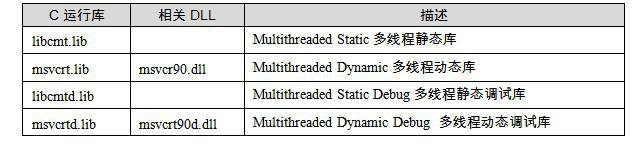
表4-3中只是簡單列舉了幾種C語言執行庫，我們在這裡將介紹一個程式的目的檔如何與C語言執行庫連結形成一個執行檔。關於庫的更詳細內容，將在第4部分展開討論。
我們知道在一個C語言的執行庫中，包含了很多跟系統功能相關的程式碼，比如輸入輸出、檔案操作、時間日期、記憶體管理等。glibc本身是用C語言開發的，它由成百上千個C語言原始碼檔案組成，也就是說，編譯完成以後有相同數量的目的檔，比如輸入輸出有printf.o，scanf.o；檔案操作有fread.o，fwrite.o；時間日期有date.o，time.o；記憶體管理有malloc.o等。把這些零散的目的檔直接提供給庫的使用者，很大程度上會造成檔案傳輸、管理和組織方面的不便，於是通常人們使用“ar”壓縮程式將這些目的檔壓縮到一起，並且對其進行編號和索引，以便於查詢和檢索，就形成了libc.a這個靜態函式庫檔案。在我的機器上，該檔案有2.8 MB大小，我們也可以使用“ar”工具來檢視這個檔案包含了哪些目的檔：
$ar -t libc.a init-first.o libc-start.o sysdep.o version.o check_fds.o libc-tls.o elf-init.o dso_handle.o errno.o errno-loc.o iconv_open.o iconv.o iconv_close.o gconv_open.o gconv.o gconv_close.o gconv_db.o gconv_conf.o ...
Visual C++也提供了與Linux下的ar類似的工具，叫lib.exe，這個程式可以用來建立、提取、列舉.lib檔案中的內容。使用“lib /LIST libcmt.lib”就可以列舉出libcmt.lib中所有的目的檔。Visual C++ libcmt.lib中包含949個目的檔。具體引數請參照MSDN。
libc.a裡面總共包含了1 400個目的檔，那麼，我們如何在這麼多目的檔中找到“printf”函式所在的目的檔呢？答案是使用“objdump”或“readelf”加上文字查詢工具如“grep”，使用“objdump”檢視libc.a的符號可以發現如下結果：
$objdump -t libc.a ... printf.o: file format elf32-i386 SYMBOL TABLE: 00000000 l d .text 00000000 .text 00000000 l d .data 00000000 .data 00000000 l d .bss 00000000 .bss 00000000 l d .comment 00000000 .comment 00000000 l d .note.GNU-stack 00000000 .note.GNU-stack 00000000 g F .text 00000026 __printf 00000000 *UND* 00000000 stdout 00000000 *UND* 00000000 vfprintf 00000000 g F .text 00000026 printf 00000000 g F .text 00000026 _IO_printf ...
可以看到“printf”函式被定義在了“printf.o”這個目的檔中。這裡我們似乎找到了最終的機制，那就是“Hello World”程式編譯出來的目的檔只要和libc.a裡面的“printf.o”連結在一起，最後就可以形成一個可用的執行檔了。這個解釋似乎很完美，實際上已經很接近最後的答案了。那麼我們就按照這個方案去嚐試一下，假設“Hello World”程式的原始碼為“hello.c”，使用如下方法編譯：
$gcc –c –fno-builtin hello.c
我們得到了目的檔為“hello.o”，為什麼這裡要使用“-fno-builtin”引數是因為預設情況下，GCC會自作聰明地將“Hello World”程式中只使用了一個字串引數的“printf”替換成“puts”函式，以提高執行速度，我們要使用“-fno-builtin”關閉這個內建函式最佳化選項。現在我們還缺“printf.o”，透過“ar”工具解壓出“printf.o”：
$ar –x libc.a
這個命令會將libc.a中的所有目的檔“解壓”至當前目錄。我們也可以找到“printf.o”，然後將其與“hello.o”連結在一起：
$ld hello.o printf.o ld: warning: cannot find entry symbol _start; defaulting to 0000000008048080 printf.o: In function `_IO_printf': (.text+0x18): undefined reference to `stdout' printf.o: In function `_IO_printf': (.text+0x20): undefined reference to `vfprintf'
連結卻失敗了，原因是缺少兩個外部符號的定義。其實眼尖的讀者可能已經在最開始列印“printf.o”的符號表時就看出一點問題來了，那就是“printf.o”裡面有兩個“UND”的符號“stdout”和“vfprintf”，也就是有兩個未定義的符號。正是這兩個未定義的符號打破了看似完美的解釋，很明顯：“printf.o”依賴於其他的目的檔。
用同樣的方法，我們可以找到“stdout”這個符號所在的目的檔，它位於“stdio.o”；而“vfprintf”位於“vfprintf.o”。很不幸的是這兩個檔案還依賴於其他的目的檔，因為它們也有未定義的符號。這些變數和函式都分佈在glibc的各個目的檔之中，如果我們能夠一一將它們收集齊，那麼理論上就可以將它們連結在一起，最後跟“hello.o”連結成一個執行檔。但是，如果靠人工這樣做的代價實在是太大了，我們在這裡不打算演示這樣一個繁瑣的過程。幸好ld連結器會處理這一切繁瑣的事務，自動尋找所有需要的符號及它們所在的目的檔，將這些目的檔從“libc.a”中“解壓”出來，最終將它們連結在一起成為一個執行檔。那麼我們可不可以就這麼認為：將“hello.o”和“libc.a”連結起來就可以得到執行檔呢？理論上這樣就可以了，如圖4-6所示。
實際情況恐怕還是令人失望的，現在Linux系統上的庫比我們想象的要複雜。當我們編譯和連結一個普通C程式的時候，不僅要用到C語言庫libc.a，而且還有其他一些輔助性質的目的檔和庫。我們可以使用下面的GCC命令編譯“hello.c”，“-verbose”表示將整個編譯連結過程的中間步驟列印出來：
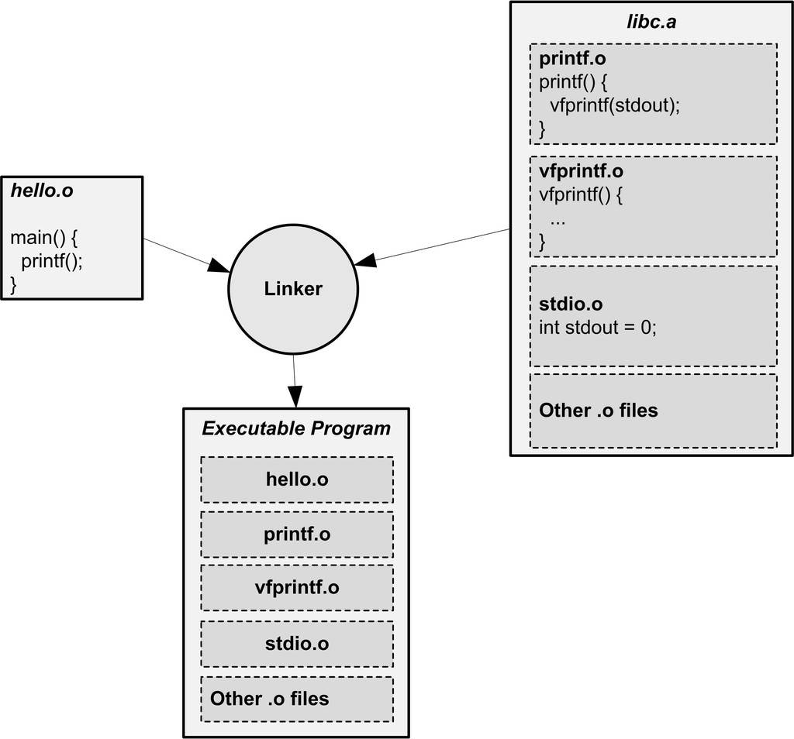
$gcc -static --verbose -fno-builtin hello.c
Using built-in specs.
Target: i486-linux-gnu
Configured with: ../src/configure -v --enable-languages=c,c++,fortran,objc,obj-c++,treelang --prefix=/usr --enable-shared --with-system-zlib --libexecdir=/usr/lib --without-included-gettext --enable-threads=posix --enable-nls --with-gxx-include-dir=/usr/include/c++/4.1.3 --program-suffix=-4.1 --enable-__cxa_atexit --enable-clocale=gnu --enable-libstdcxx-debug --enable-mpfr --enable-checking=release i486-linux-gnu
Thread model: posix
gcc version 4.1.3 20070929 (prerelease) (Ubuntu 4.1.2-16ubuntu2)
/usr/lib/gcc/i486-linux-gnu/4.1.3/cc1 -quiet -v hello.c -quiet -dumpbase hello.c -mtune=generic -auxbase hello -version -fno-builtin -fstack-protector -fstack-protector -o /tmp/ccUhtGSB.s
ignoring nonexistent directory "/usr/local/include/i486-linux-gnu"
ignoring nonexistent directory "/usr/lib/gcc/i486-linux-gnu/4.1.3/../../../../i486-linux-gnu/include"
ignoring nonexistent directory "/usr/include/i486-linux-gnu"
#include "..." search starts here:
#include <...> search starts here:
/usr/local/include
/usr/lib/gcc/i486-linux-gnu/4.1.3/include
/usr/include
End of search list.
GNU C version 4.1.3 20070929 (prerelease) (Ubuntu 4.1.2-16ubuntu2) (i486-linux-gnu)
compiled by GNU C version 4.1.3 20070929 (prerelease) (Ubuntu 4.1.2-16ubuntu2).
GGC heuristics: --param ggc-min-expand=64 --param ggc-min-heapsize=64493
Compiler executable checksum: caf034d6752b947185f431aa3e927159
as --traditional-format -V -Qy -o /tmp/ccQZRPL5.o /tmp/ccUhtGSB.s
GNU assembler version 2.18 (i486-linux-gnu) using BFD version (GNU Binutils for Ubuntu) 2.18
/usr/lib/gcc/i486-linux-gnu/4.1.3/collect2 -m elf_i386 --hash-style=both -static /usr/lib/gcc/i486-linux-gnu/4.1.3/../../../../lib/crt1.o /usr/lib/gcc/i486-linux-gnu/4.1.3/../../../../lib/crti.o /usr/lib/gcc/i486-linux-gnu/4.1.3/crtbeginT.o -L/usr/lib/gcc/i486-linux-gnu/4.1.3 -L/usr/lib/gcc/i486-linux-gnu/4.1.3 -L/usr/lib/gcc/i486-linux-gnu/4.1.3/../../../../lib -L/lib/../lib -L/usr/lib/../lib /tmp/ccQZRPL5.o --start-group -lgcc -lgcc_eh -lc --end-group /usr/lib/gcc/i486-linux-gnu/4.1.3/crtend.o /usr/lib/gcc/i486-linux-gnu/4.1.3/../../../../lib/crtn.o
關鍵的三個步驟上面已經用粗體表示出來了，第一步是呼叫cc1程式，這個程式實際上就是GCC的C語言編譯器，它將“hello.c”編譯成一個臨時的組譯檔案“/tmp/ccUhtGSB.s”；然後呼叫as程式，as程式是GNU的組譯器，它將“/tmp/ccUhtGSB.s”組譯成臨時目的檔“/tmp/ccQZRPL5.o”，這個“/tmp/ccQZRPL5.o”實際上就是前面的“hello.o”；接著最關鍵的步驟是最後一步，GCC呼叫collect2程式來完成最後的連結。但是按照我們之前的理解，連結過程應該由ld連結器來完成，這裡怎麼忽然殺出個collect2？這是個什麼程式？
實際上collect2可以看作是ld連結器的一個包裝，它會呼叫ld連結器來完成對目的檔的連結，然後再對連結結果進行一些處理，主要是收集所有與程式初始化相關的資訊並且構造初始化的結構。在第4部分我們會介紹程式的初始化結構的相關內容，還會再介紹collect2程式。在這裡，可以簡單地把collect2看作是ld連結器。可以看到最後一步中，至少有下列幾個庫和目的檔被連結入了最終執行檔：
crt1.o
crti.o
這些庫和目的檔現在看來可能很不熟悉，我們將在第4部分專門介紹這些庫及它們背後的原理。
Q&A
Q：為什麼靜態執行庫裡面一個目的檔只包含一個函式？比如libc.a裡面printf.o只有printf()函式、strlen.o只有strlen()函式，為什麼要這樣組織？
A：我們知道，連結器在連結靜態函式庫的時候是以目的檔為單位的。比如我們引用了靜態函式庫中的printf()函式，那麼連結器就會把庫中包含printf()函式的那個目的檔連結進來，如果很多函式都放在一個目的檔中，很可能很多沒用的函式都被一起連結進了輸出結果中。由於執行庫有成百上千個函式，數量非常龐大，每個函式獨立地放在一個目的檔中可以盡量減少空間的浪費，那些沒有被用到的目的檔（函式）就不要連結到最終的輸出檔案中。
4.6 連結過程控制
絕大部分情況下，我們使用連結器提供的預設連結規則對目的檔進行連結。這在一般情況下是沒有問題的，但對於一些特殊要求的程式，比如作業系統核心、BIOS（Basic Input Output System）或一些在沒有作業系統的情況下執行的程式（如載入程式Boot Loader或者嵌入式系統的程式，或者有一些脫離作業系統的硬碟分割槽軟體PQMagic等），以及另外的一些需要特殊的連結過程的程式，如一些核心驅動程式等，它們往往受限於一些特殊的條件，如需要指定輸出檔案的各個段虛擬地址、段的名稱、段存放的順序等，因為這些特殊的環境，特別是某些硬體條件的限製，往往對程式的各個段的地址有著特殊的要求。
由於整個連結過程有很多內容需要確定：使用哪些目的檔？使用哪些庫檔案？是否在最終執行檔中保留除錯資訊、輸出檔案格式（執行檔還是動態連結庫）？還要考慮是否要匯出某些符號以供偵錯程式或程式本身或其他程式使用等。
作業系統核心。從本質上來講，它本身也是一個程式。比如Windows的核心ntoskrnl.exe就是一個我們平常看到的PE檔案，它的位置位於\WINDOWS\system32\ntoskrnl.exe。很多人誤以為Window作業系統的核心很龐大，由很多檔案組成。這是一個誤解，其實真正的Windows核心就是這個檔案。
4.6.1 連結控制指令碼
連結器一般都提供多種控制整個連結過程的方法，以用來產生使用者所需要的檔案。一般連結器有如下三種方法。
• 使用命令列來給連結器指定引數，我們前面所使用的ld的-o、-e引數就屬於這類。這種方法我們已經在前面使用很多次了。
• 將連結指令存放在目的檔裡面，編譯器經常會透過這種方法向連結器傳遞指令。方法也比較常見，只是我們平時很少關注，比如VISUAL C++編譯器會把連結引數放在PE目的檔的.drectve段以用來傳遞引數。具體可以參考PE/COFF一節中的.drectve段介紹。
• 使用連結控制指令碼，使用連結控制指令碼方法就是本節要介紹的，也是最為靈活、最為強大的連結控制方法。
A：我們知道，連結器在連結靜態函式庫的時候是以目的檔為單位的。比如我們引用了靜態函式庫中的printf()函式，那麼連結器就會把庫中包含printf()函式的那個目的檔連結進來，如果很多函式都放在一個目的檔中，很可能很多沒用的函式都被一起連結進了輸出結果中。由於執行庫有成百上千個函式，數量非常龐大，每個函式獨立地放在一個目的檔中可以盡量減少空間的浪費，那些沒有被用到的目的檔（函式）就不要連結到最終的輸出檔案中。
4.6 連結過程控制
絕大部分情況下，我們使用連結器提供的預設連結規則對目的檔進行連結。這在一般情況下是沒有問題的，但對於一些特殊要求的程式，比如作業系統核心、BIOS（Basic Input Output System）或一些在沒有作業系統的情況下執行的程式（如載入程式Boot Loader或者嵌入式系統的程式，或者有一些脫離作業系統的硬碟分割槽軟體PQMagic等），以及另外的一些需要特殊的連結過程的程式，如一些核心驅動程式等，它們往往受限於一些特殊的條件，如需要指定輸出檔案的各個段虛擬地址、段的名稱、段存放的順序等，因為這些特殊的環境，特別是某些硬體條件的限製，往往對程式的各個段的地址有著特殊的要求。
由於整個連結過程有很多內容需要確定：使用哪些目的檔？使用哪些庫檔案？是否在最終執行檔中保留除錯資訊、輸出檔案格式（執行檔還是動態連結庫）？還要考慮是否要匯出某些符號以供偵錯程式或程式本身或其他程式使用等。
VM1698:1
由於各個連結器平台的連結控制過程各不相同，我們只能側重一個平台來介紹。ld連結器的連結指令碼功能非常強大，我們接下來以ld作為主要介紹物件。VISUAL C++也允許使用指令碼來控制整個連結過程，VISUAL C++把這種控制指令碼叫做模組定義檔案（Module-Definition File），它們的副檔名一般為.def。
前面我們在使用ld連結器的時候，沒有指定連結指令碼，其實ld 在使用者沒有指定連結指令碼的時候會使用預設連結指令碼。我們可以使用下面的命令列來檢視ld預設的連結指令碼：
$ ld -verbose
預設的ld連結指令碼存放在/usr/lib/ldscripts/下，不同的機器平台、輸出檔案格式都有相應的連結指令碼。比如Intel IA32下的普通可執行ELF檔案連結指令碼檔案為elf_i386.x；IA32下共用函式庫的連結指令碼檔案為elf_i386.xs等。具體可以看每個檔案的注釋。ld會根據命令列要求使用相應的連結指令碼檔案來控制連結過程，當我們使用ld來連結生成一個執行檔的時候，它就會使用elf_i386.x作為連結控制指令碼；當我們使用ld來生成一個共享目的檔的時候，它就會使用elf_i386.xs作為連結控制指令碼。
當然，為了更加精確地控制連結過程，我們可以自己寫一個指令碼，然後指定該指令碼為連結控制指令碼。比如可以使用-T引數：
$ ld –T link.script
4.6.2 最“小”的程式
為了演示連結的控制過程，我們接著要做一個最小的程式：這個程式的功能是在終端上輸出“Hello world!”。可能很多人的第一反應就是我們學C語言時候的那個經典的使用printf的helloworld，然後對著螢幕盲打一遍該程式原始碼後編譯連結一氣呵成，連滑鼠都沒有移動一下，非常好，你的C語言基礎很紮實。但是我們這裡要演示的程式稍微有所不同。
• 首先，經典的helloworld使用了printf函式，該函式是系統C語言庫的一部分。為了使用該函式，我們必須在連結時將C語言庫與程式的目的檔連結產生最終執行檔。我們希望“小程式”能夠脫離C語言執行庫，使得它成為一個獨立於任何庫的純正的“程式”。
• 其次，經典的helloworld由於使用了庫，所以必須有main函式。我們知道一般程式的入口在庫的_start，由庫負責初始化後呼叫main函式來執行程式的主體部分。為了不使用main這個我們已經感到厭煩的函式名，“小程式”使用nomain作為整個程式的入口。
• 接著，經典的helloworld會產生多個段：main程式的指令部分會產生.text段、字串常量“Hello world!\n”會被放在資料段或只讀資料段，還有C庫所包含的各種段。為了演示ld連結指令碼的控制過程，我們將“小程式”的所有段都合並到一個叫“tinytext”的段，注意：這個段是我們任意命名的，是由連結指令碼控制連結過程生成的。
TinyHelloWorld.c原始碼如下：
char* str = "Hello world!\n";
void print()
{
asm( "movl $13,%%edx \n\t"
"movl %0,%%ecx \n\t"
"movl $0,%%ebx \n\t"
"movl $4,%%eax \n\t"
"int $0x80 \n\t"
::"r"(str):"edx","ecx","ebx");
}
void exit()
{
asm( "movl $42,%ebx \n\t"
"movl $1,%eax \n\t"
"int $0x80 \n\t" );
}
void nomain()
{
print();
exit();
}
從原始碼我們可以看到，程式入口為nomain()函式，然後該函式呼叫print()函式，列印“Hello World”，接著呼叫exit()函式，結束程式。這裡的print函式使用了Linux的WRITE系統呼叫，exit()函式使用了EXIT系統呼叫。這裡我們使用了GCC內嵌組譯，對這種內嵌組譯格式不熟悉的話，請參照GCC手冊關於內嵌組譯的部分。這裡簡單介紹系統呼叫：系統呼叫透過0x80中斷實現，其中eax為呼叫號，ebx、ecx、edx等通用暫存器用來傳遞引數，比如WRITE呼叫是往一個檔案控制代碼寫入資料，如果用C語言來描述它的原型就是：
int write(int filedesc, char* buffer, int size);
WRITE呼叫的呼叫號為4，則eax = 0。
filedesc表示被寫入的檔案控制代碼，使用ebx暫存器傳遞，我們這裡是要往預設終端（stdout）輸出，它的檔案控制代碼為0，即ebx = 0。
buffer表示要寫入的緩衝區地址，使用ecx暫存器傳遞，我們這裡要輸出字串str，所以ecx = str。
size 表示要寫入的位元組數，使用edx暫存器傳遞，字串“Hello world!\n”長度為13位元組，所以edx = 13。
同理，EXIT系統呼叫中，ebx表示程式退出碼（Exit Code），比如我們平時的main程式中的return的數值會返回給系統庫，由系統庫將該數值傳遞給EXIT系統呼叫。這樣父程式就可以接收到子程式的退出碼。EXIT系統呼叫的呼叫號為1，即eax = 1。你可以透過下面的方法得到上一條bash命令執行的程式的退出碼）：
$ ./TinyHelloWorld $ echo $? 42
這裡要呼叫EXIT結束程式是因為如果是普通程式，main()函式結束後控制權返回給系統庫，由系統庫負責呼叫EXIT，退出程式。我們這裡的nomain()結束後系統控制權不會返回，可能會執行到nomain()後面不正常的指令，最後導致程式異常退出。
關於系統庫已經系統呼叫的細節我們在這裡不詳細展開，將在第12章進行更為詳細的介紹。
我們先不急於使用連結指令碼，而先使用普通命令列的方式來編譯和連結TinyHelloWorld.c：
$ gcc -c -fno-builtin TinyHelloWorld.c $ ld -static -e nomain -o TinyHelloWorld TinyHelloWorld.o
第一步是使用GCC將TinyHelloWorld.c編譯成TinyHelloWorld.o，接著使用ld將TinyHelloWorld.o連結成執行檔TinyHelloWorld。這裡GCC和ld的引數的意義如下。
-fno-builtin GCC編譯器提供了很多內建函式（Built-in Function），它會把一些常用的C庫函式替換成編譯器的內建函式，以達到最佳化的功能。比如GCC會將只有字串引數的printf函式替換成puts，以節省格式解析的時間。exit()函式也是GCC的內建引數之一，所以我們要使用-fno-builtin引數來關閉GCC內建函式功能。
-static 這個參數列示ld將使用靜態連結的方式來連結程式，而不是使用預設的動態連結的方式。
-e nomain 表示該程式的入口函式為nomain，還記得ELF檔案頭Elf32_Ehdr的e_entry成員嗎？這個引數就是將ELF檔案頭的e_entry成員賦值成nomain函式的地址。
-o TinyHelloWorld 表示指定輸出可執行檔名為TinyHelloWorld。
我們得到了一個924位元組（依賴於系統環境）的ELF執行檔，執行它以後能夠正確列印“Hello world!”並且正常退出。但是當我們用objdump或readelf檢視TinyHelloWorld這個檔案時，會發現它有4個段：.text、.rodata、.data和.comment。透過前面的介紹我們可以猜到：
.text肯定儲存的是程式的指令，它是只讀的。
.rodata儲存的是字串“Hello World!\n”，它也是只讀的。
.data儲存的是str全域性變數，看上去它是可讀寫的，但我們並沒有在程式中改寫該變數，所以實際上它也是只讀的。
.comment儲存的是編譯器和系統版本資訊，這些資訊也是只讀的。由於.comment裡面儲存的資料並不關鍵，對於程式的執行沒有作用，所以可以將其丟棄。
鑒於這些段的屬性如此相似，原則上講，我們可以把它們合並到一個段裡面，該段的屬性是可執行、可讀的，包含程式的資料和指令。為了達到這個目的，我們必須使用ld連結指令碼來控制連結過程。
4.6.3 使用ld連結指令碼
如果把整個連結過程比作一台計算機，那麼ld連結器就是計算機的CPU，所有的目的檔、庫檔案就是輸入，連結結果輸出的執行檔就是輸出，而連結控制指令碼正是這台計算機的“程式”，它控制CPU的執行，以“程式”要求的方式將輸入加工成所需要的輸出結果。連結控制指令碼“程式”使用一種特殊的語言寫成，即ld的連結指令碼語言，這種語言並不複雜，只有為數不多的幾種操作。
無論是輸出檔案還是輸入檔案，它們的主要的資料就是檔案中的各種段，我們把輸入檔案中的段稱為輸入段（Input Sections），輸出檔案中的段稱為輸出段（Output Sections）。簡單來講，控制連結過程無非是控制輸入段如何變成輸出段，比如哪些輸入段要合並一個輸出段，哪些輸入段要丟棄；指定輸出段的名字、載入地址、屬性，等等。我們先來看看TinyHelloWorld的連結指令碼TinyHelloWorld.lds（一般連結指令碼名都以lds作為副檔名ld script），有個感性的認識：
ENTRY(nomain)
SECTIONS
{
. = 0x08048000 + SIZEOF_HEADERS;
tinytext : { *(.text) *(.data) *(.rodata) }
/DISCARD/ : { *(.comment) }
}
這是一個非常簡單的連結指令碼，第一行的ENTRY(nomain)指定了程式的入口為nomain()函式；後面的SECTIONS命令一般是連結指令碼的主體，這個命令指定了各種輸入段到輸出段的變換，SECTIONS後面緊跟著的一對大括號裡面包含了SECTIONS變換規則，其中有三條語句，每條語句一行。第一條是賦值語句，後面兩條是段轉換規則，它們的含義分別如下：
. = 0x08048000 + SIZEOF_HEADERS 第一條賦值語句的意思是將當前虛擬地址設定成 0x08048000 + SIZEOF_HEADERS，SIZEOF_HEADERS為輸出檔案的檔案頭大小。“.”表示當前虛擬地址，因為這條語句後面緊跟著輸出段“tinytext”，所以“tinytext”段的起始虛擬地址即為0x08048000 + SIZEOF_HEADERS。它將當前虛擬地址設定成一個比較巧妙的值，以便於載入時頁對映更為方便。具體請參考本書第2部分關於載入的章節。
tinytext : { *(.text) *(.data) *(.rodata) } 第二條是個段轉換規則，它的意思即為所有輸入檔案中的名字為“.text”、“.data”或“.rodata”的段依次合並到輸出檔案的“tinytext”。
/DISCARD/ : { *(.comment) } 第三條規則為：將所有輸入檔案中的名字為“.comment”的段丟棄，不儲存到輸出檔案中。
透過上述兩條轉換規則，我們就達到了TinyHelloWorld程式的第三個要求：最終輸出的執行檔只有一個叫“tinytext”的段。我們透過下面的命令列來編譯TinyHelloWorld，並且啟用該連結控制指令碼：
$ gcc –c –fno-builtin TinyHelloWorld.c $ ld –static –T TinyHelloWorld.lds –o TinyHelloWorld TinyHelloWorld.o
我們得到了一個588位元組的ELF執行檔：TinyHelloWorld，並且執行這個程式能夠在終端上正確顯示“Hello World!”。如果你使用objdump檢視TinyHelloWorld的段，你會很高興地發現，我們達到了目的：整個程式只有一個段“tinytext”。但是興奮之餘你可能又想用readelf工具檢視一下，發現程式除了tinytext之外居然還有其他3個段：.shstrtab、.symtab和.strtab。這3個段我們在前面已經介紹過了，它們分別是段名字串表、符號表和字串表。在預設情況下，ld連結器在產生執行檔時會產生這3個段。對於執行檔來說，符號表和字串表是可選的，但是段名字串表使用者儲存段名，所以它是必不可少的。
你可以透過ld的-s引數禁止連結器產生符號表，或者使用strip命令來去除程式中的符號表，去掉符號表後的TinyHelloWorld只有340個位元組，但它仍然是一個有效的ELF執行檔，能夠正確執行並輸出結果。
有人專門研究瞭如何得到一個最小的ELF執行檔，最後成果是最小的ELF執行檔為45個位元組。這個程式的功能是以42為程式退出碼正常退出程式，沒有任何輸入和輸出。上面的TinyHelloWorld也是以這個特殊的值42作為退出碼。
追溯“42”這個奇怪的數字來源，可能因為《銀河係漫遊指南》裡面的終極電腦給出的關於生命、宇宙及萬物的終極答案是42。
4.6.4 ld連結指令碼語法簡介
ld連結器的連結指令碼語法繼承與AT&T連結器命令語言的語法，風格有點像C語言，它本身並不複雜。連結指令碼由一係列語句組成，語句分兩種，一種是命令語句，另外一種是賦值語句。我們前面的連結指令碼裡面的ENTRY(nomain)就是命令語句；而. = 0x08480000 + SIZEOF_HEADERS則是一個經典的賦值語句。之所以說連結指令碼語法像C語言，主要有如下幾點相似之處。
語句之間使用分號“;”作為分割符 原則上講語句之間都要以“；“作為分割符，但是對於命令語句來說也可以使用換行來結束該語句，對於賦值語句來說必須以“；”結束。
表示式與運算子 指令碼語言的語句中可以使用C語言類似的表示式和運算運算子，比如+、?、*、/、+=、?=、*=等，甚至包括&、|、>>、<<等這些位運算子。
注釋和字元引用 使用/* */作為注釋。指令碼檔案中使用到的檔名、格式名或段名等凡是包含“;”或其他的分隔符的，都要使用雙引號將該名字全稱引用起來，如果檔名包含引號，則很不幸，無法處理。
賦值語句比較簡單，我們在這裡就不詳細介紹了。命令語句一般的格式是由一個關鍵字和緊跟其後的引數所組成。比如前面的TinyHelloWorld.lds就是由兩個命令語句組成：一個ENTRY命令語句和一個SECTIONS語句，“ENTRY”和“SECTIONS”為這兩個語句的關鍵字。其中SECTIONS語句比較複雜，它又包含了一個賦值語句及一些SECTIONS語句所特有的對映規則。其實除了SECTIONS命令語句之外，其他命令語句都比較簡單，畢竟SECTIONS負責指定連結過程的段轉換過程，這也是連結的最核心和最複雜的部分。我們先來看看一些常用的命令語句，如表4-4所示。
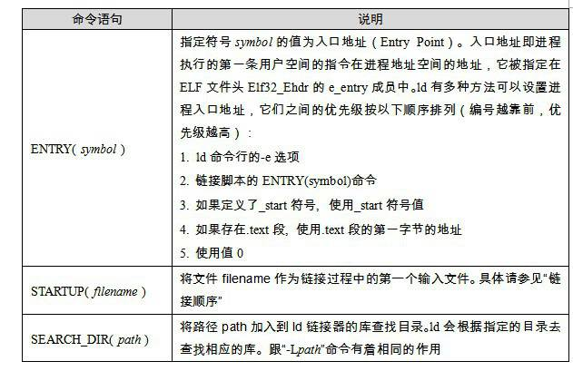
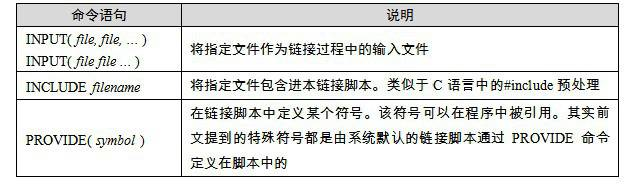
這裡只是大概提及以下幾個常用的命令語句格式，更多的命令語句的意義及它們的格式請參照ld的使用手冊。除了這些簡單的命令語句之外，剩下最重要、也是最複雜的就是SECTIONS命令了。SECTIONS命令語句最基本格式為：
SECTIONS
{
...
secname : { contents }
...
}
secname表示輸出段的段名，secname後面必須有一個空格符，這樣使得輸出段名不會有歧義，後面緊跟著冒號和一對大括號。大括號裡面的contents描述了一套規則和條件，它表示符合這種條件的輸入段將合並到這個輸出段中。輸出段名的命名方法必須符合輸出檔案格式的要求，比如，如果使用ld生產一個a.out格式的檔案，那麼輸出段名就不可以使用除“.text”、“.data”和“.bss”之外的任何名字，因為a.out格式規定段名只允許這三個名字。
有一個特殊的段名叫“/DISCARD/”，如果使用這個名字作為輸出段名，那麼所有符合後面contents所規定的條件的段都將被丟棄，不輸出到輸出檔案中。
接著，我們最應該關心的是contents這個規則。contents中可以包含若幹個條件，每個條件之間以空格隔開，如果輸入段符合這些條件中的任意一個即表示這個輸入段符合contents規則。條件的寫法如下：
filename(sections)
filename表示輸入檔名，sections表示輸入段名。讓我們舉幾個條件的例子來看看：
file1.o(.data) 表示輸入檔案中名為file1.o的檔案中名叫.data的段符合條件。
file1.o(.data .rodata) 或 file1.o(.data, .rodata) 表示輸入檔案中名為file1.o的檔案中的名叫.data或.rodata的段符合條件。
*(.data) 所有輸入檔案中的名字為.data的檔案符合條件。 * 是萬用字元，類似於正規表示式中的 *，我們還可以使用正規表示式中的 ?、[]等規則。
[a-z]*(.text*[A-Z]) 這個條件比較複雜，它表示所有輸入檔案中以小寫字母a到z開頭的檔案中所有段名以.text開頭，並且以大寫字母A到Z結尾的段。從這個規則中你也許可以看到一些連結指令碼功能的強大。
很明顯，當我們回頭再看TinyHelloWorld.lds連結指令碼，發現它的SECTIONS命令中除了有一條賦值語句之外，還有兩條段規則，相信你能夠很快地根據上面給出的條件做出定義分析。
4.7 BFD庫
由於現代的硬體和軟體平台種類非常繁多，它們之間千差萬別，比如，硬體中CPU有8位的、16位的，一直到64位的；位元組序有大端的也有小端的；有些有MMU有些沒有；有些對訪問記憶體地址對齊有著特殊要求，比如MIPS，而有些則沒有，比如x86。軟體平台有些支援動態連結，而有些不支援；有些支援除錯，有些又不支援。這些五花八門的軟硬體平台基礎導致了每個平台都有它獨特的目的檔格式，即使同一個格式比如ELF在不同的軟硬體平台都有著不同的變種。種種差異導致編譯器和連結器很難處理不同平台之間的目的檔，特別是對於像GCC和binutils這種跨平台的工具來說，最好有一種統一的介面來處理這些不同格式之間的差異。
BFD庫（Binary File Descriptor library）就是這樣的一個GNU專案，它的目標就是希望透過一種統一的介面來處理不同的目的檔格式。BFD這個專案本身是binutils專案的一個子專案。BFD把目的檔抽象成一個統一的模型，比如在這個抽象的目的檔模型中，最開始有一個描述整個目的檔總體資訊的“檔案頭”，就跟我們實際的ELF檔案一樣，檔案頭後面是一係列的段，每個段都有名字、屬性和段的內容，同時還抽象了符號表、重定位表、字串表等類似的概念，使得BFD庫的程式只要透過操作這個抽象的目的檔模型就可以實現操作所有BFD支援的目的檔格式。
現在GCC（更具體地講是GNU 組譯器GAS， GNU Assembler）、連結器ld、偵錯程式GDB及binutils的其他工具都透過BFD庫來處理目的檔，而不是直接操作目的檔。這樣做最大的好處是將編譯器和連結器本身同具體的目的檔格式隔離開來，一旦我們需要支援一種新的目的檔格式，只需要要在BFD庫裡面新增一種格式就可以了，而不需要修改編譯器和連結器。到目前為止，BFD庫支援大約25種處理器平台，將近50種目的檔格式。
當我們安裝了BFD開發庫以後（在我的ubuntu下，包含BFD開發庫的軟體包的名字叫binutils-dev），我們就可以在程式中使用它。比如下面這段程式可以輸出該BFD庫所支援的所有的目的檔格式：
/* target.c */
#include <stdio.h>
#include "bfd.h"
int main()
{
const char** t = bfd_target_list();
while(*t) {
printf("%s\n", *t);
t++;
}
}
編譯執行：
$gcc -o target target.c –lbfd $./target elf32-i386 a.out-i386-linux efi-app-ia32 elf32-little elf32-big elf64-x86-64 efi-app-x86_64 elf64-little elf64-big srec symbolsrec tekhex binary ihex trad-core
關於BFD的具體資料可以參考binutils網站的文件：http://sources.redhat.com/binutils/。
4.8 本章小結
本章我們首先介紹了靜態連結中的第一個步驟，即目的檔在被連結成最終執行檔時，輸入目的檔中的各個段是如何被合並到輸出檔案中的，連結器如何為它們分配在輸出檔案中的空間和地址。一旦輸入段的最終地址被確定，接下來就可以進行符號的解析與重定位，連結器會把各個輸入目的檔中對於外部符號的引用進行解析，把每個段中須重定位的指令和資料進行“修補”，使它們都指向正確的位置。
在本章裡，我們還對幾個靜態連結中的問題進行了分析，比如為什麼未初始化的全域性/靜態變數要使用COMMON塊、C++會對連結器和目的檔有什麼樣的要求、如何使用指令碼控制連結過程使得輸出的執行檔能夠滿足某些特殊的需求，比如不使用預設C語言執行庫的程式、執行於嵌入式系統的程式，甚至是作業系統核心、驅動程式，等等。
在本章裡，我們還對幾個靜態連結中的問題進行了分析，比如為什麼未初始化的全域性/靜態變數要使用COMMON塊、C++會對連結器和目的檔有什麼樣的要求、如何使用指令碼控制連結過程使得輸出的執行檔能夠滿足某些特殊的需求，比如不使用預設C語言執行庫的程式、執行於嵌入式系統的程式，甚至是作業系統核心、驅動程式，等等。
第5章 Windows PE/COFF
5.1 Windows的二進位檔案格式PE/COFF
5.2 PE的前身——COFF
5.3 連結指示資訊
5.4 除錯資訊
5.5 大家都有符號表
5.6 Windows下的ELF——PE
5.7 本章小結
5.1 Windows的二進位檔案格式PE/COFF
在32位Windows平台下，微軟引入了一種叫PE（Protable Executable）的可執行格式。作為Win32平台的標準執行檔格式，PE有著跟ELF一樣良好的平台擴充套件性和靈活性。PE檔案格式事實上與ELF同根同源，它們都是由COFF（Common Object File Format）格式發展而來的，更加具體地講是來源於當時著名的DEC（Digital Equipment Corporation）的VAX/VMS上的COFF檔案格式。因為當微軟開始開發Windows NT的時候，最初的成員都是來自於DEC公司的VAX/VMS小組，所以他們很自然就將原來系統上熟悉的工具和檔案格式都搬了過來，並且在此基礎上做重新設計和改動。
微軟將它的執行檔格式命名為“Portable Executable”，從字面意義上講是希望這個執行檔格式能夠在不同版本的Windows平台上使用，並且可以支援各種CPU。比如從Windows NT、Windows 95到Windows XP及Windows Vista，還有Windows CE都是使用PE執行檔格式。不過可惜的是Windows的PC版只支援x86的CPU，所以我們幾乎只要關注PE在x86上的各種性質就行了。
請注意，上面在講到PE檔案格式的時候，只是說Windows平台下的執行檔採用該格式。事實上，在Windows平台，VISUAL C++編譯器產生的目的檔仍然使用COFF格式。由於PE是COFF的一種擴充套件，所以它們的結構在很大程度上相同，甚至跟ELF檔案的基本結構也相同，都是基於段的結構。所以我們下面在討論Windows平台上的檔案結構時，目的檔預設為COFF格式，而執行檔為PE格式。但很多時候我們可以將它們統稱為PE/COFF檔案，當然我們在下文中也會對比PE與COFF在結構方面的區別之處。
隨著64位Windows的發布，微軟對64位Windows平台上的PE檔案結構稍微做了一些修改，這個新的檔案格式叫做PE32+。新的PE32+並沒有新增任何結構，最大的變化就是把那些原來32位的欄位變成了64位，比如檔案頭中與地址相關的欄位。絕大部分情況下，PE32+與PE的格式一致，我們可以將它看作是一般的PE檔案。
與ELF檔案相同，PE/COFF格式也是採用了那種基於段的格式。一個段可以包含程式碼、資料或其他資訊，在PE/COFF檔案中，至少包含一個程式碼段，這個程式碼段的名字往往叫做“.code”，資料段叫做“.data”。不同的編譯器產生的目的檔的段名不同，VISUAL C++使用“.code”和“.data”，而Borland的編譯器使用“CODE”，“DATA”。也就是說跟ELF一樣，段名只有提示性作用，並沒有實際意義。當然，如果使用連結指令碼來控制連結，段名可能會起到一定的作用。
跟ELF一樣，PE中也允許程式設計師將變數或函式放到自定義的段。在GCC中我們使用“__attribute__((section(“name”)))”擴充套件屬性，在VISUAL C++中可以使用“#pragma”編譯器指示。比如下面這個語句：
#pragma data_seg("FOO")
int global = 1;
#pragma data_seg(".data")
就表示把所有全域性變數“global”放到“FOO”段裡面去，然後再使用“#pragram”將這個編譯器指示換回來，恢複到“.data”，否則，任何全域性變數和靜態變數都會被放到“FOO”段。
5.2 PE的前身——COFF
還記得剛開始分析ELF檔案格式時的那個SimpleSection.c嗎？我們接下來還是以它為例子，看看在Windows下，它被編譯成COFF目的檔時，所有的變數和函式是怎麼儲存的。在這個過程中，我們將用到“Microsoft Visual C++”的編譯環境。包括編譯器“cl”，連結器“link”，執行檔檢視器“dumpbin”等，你可以透過Microsoft的官方網站下載免費的Visual C++ Express 2005版，這已經足夠用了。
要使用這些工具，我們要在Windows命令列下面執行它們，Visual C++在安裝完成後就會有一個批處理檔案用來建立執行這些工具所需要的環境。它位於開始/程式/Microsoft Visual Studio 2005/Visual Studio Tools/ Visual Studio 2005 Command Prompt，這樣我們就可以透過命令列使用VC++的編譯器了。然後使用“cd”命令進入到原始碼所在目錄後執行：
cl /c /Za SimpleSection.c
“cl”是VISUAL C++的編譯器，即“Compiler”的縮寫。/c參數列示只編譯，不連結，即將.c檔案編譯成.obj檔案，而不呼叫連結器生成.exe檔案。如果不加這個引數，cl會在編譯“SimpleSection.c”檔案以後，再呼叫link連結器將該產生的SimpleSection.obj檔案與預設的C執行庫連結，產生執行檔SimpleSection.exe。
VISUAL C++有一些C和C++語言的專有擴充套件，這些擴充套件並沒有定義ANSI C標準或ANSI C++標準，具體可以參閱MSDN的Microsoft Extensions to C and C++這一節。“/Za”引數禁用這些擴充套件，使得我們的程式跟標準的C/C++相容，這樣可以盡量地看到問題的本質。另外值得一提的是，使用/Za引數時，編譯器自動定義了__STDC__這個宏，我們可以在程式裡透過判斷這個宏是否被定義而確定編譯器是否禁用了Microsoft C/C++語法擴充套件。
編譯完成以後我們得到了一個971位元組的SimpleSection.obj目的檔，當然檔案大小可能會因為編譯器版本、選項及機器平台不同而不同。跟GNU的工具鏈中的“objdump”一樣，Visual C++也提供了一個用於檢視目的檔和執行檔的工具，就是“dumpbin”。下面這個命令可以檢視SimpleSection.obj的結構：
dumpbin /ALL SimpleSection.obj > SimpleSection.txt
“/ALL”引數是將列印輸出目的檔的所有相關資訊，包括檔案頭、每個段的屬性和段的原始資料及符號表。由於輸出資訊較多，如果直接列印到終端上，可能不太便於檢視，所以我們將其導向到一個輸出檔案“SimpleSection.txt”中。因為在接下來的分析過程中，我們將會經常用到這個“dumpbin”的輸出結果，所以將它儲存在“SimpleSection.txt”檔案中，以便後面分析時逐一對照。我們也可以用“/SUMMARY”選項來檢視整個檔案的基本資訊，它只輸出所有段的段名和長度：
dumpbin SimpleSection.obj /SUMMARY
Microsoft (R) COFF/PE Dumper Version 8.00.50727.762
Copyright (C) Microsoft Corporation. All rights reserved.
Dump of file SimpleSection.obj
File Type: COFF OBJECT
Summary
4 .bss
C .data
86 .debug$S
18 .drectve
4E .text
COFF檔案結構
幾乎跟ELF檔案一樣，COFF也是由檔案頭及後面的若幹個段組成，再加上檔案末尾的符號表、除錯資訊的內容，就構成了COFF檔案的基本結構，我們在COFF檔案中幾乎都可以找到與ELF檔案結構相對應的地方。COFF檔案的檔案頭部包括了兩部分，一個是描述檔案總體結構和屬性的映像頭（Image Header），另外一個是描述該檔案中包含的段屬性的段表（Section Table）。檔案頭後面緊跟著的就是檔案的段，包括程式碼段、資料段等，最後還有符號表等。整體結構如圖5-1所示。
映像（Image）：因為PE檔案在載入時被直接對映到程式的虛擬空間中執行，它是程式的虛擬空間的映像。所以PE執行檔很多時候被叫做映像檔案（Image File）。
 圖5-1 COFF目的檔格式 …
圖5-1 COFF目的檔格式 …
檔案頭裡描述COFF檔案總體屬性的映像頭是一個“IMAGE_FILE_HEADER”的結構，很明顯，它跟ELF中的“Elf32_Ehdr”結構的作用相同。這個結構及相關常數被定義在“VC\PlatformSDK\include\WinNT.h”裡面：
typedef struct _IMAGE_FILE_HEADER {
WORD Machine;
WORD NumberOfSections;
DWORD TimeDateStamp;
DWORD PointerToSymbolTable;
DWORD NumberOfSymbols;
WORD SizeOfOptionalHeader;
WORD Characteristics;
} IMAGE_FILE_HEADER, *PIMAGE_FILE_HEADER;
再回頭對照前面“SimpleSection.txt”中的輸出資訊，我們可以看到輸出的資訊裡面最開始一段“FILE HEADER VALUES”中的內容跟COFF映像頭中的成員是一一對應的：
File Type: COFF OBJECT
FILE HEADER VALUES
14C machine (x86)
5 number of sections
45C975E6 time date stamp Wed Feb 07 14:47:02 2007
1E0 file pointer to symbol table
14 number of symbols
0 size of optional header
0 characteristics
可以看到這個目的檔的檔案型別是“COFF OBJECT”，也就是COFF目的檔格式。檔案頭裡面還包含了目標機器型別，例子裡的型別是0x14C，微軟定義該型別為x86相容CPU。按照微軟的預想，PE/COFF結構的執行檔應該可以在不同型別的硬體平台上使用，所以預留了該欄位。如果你安裝了VC或Windows SDK（也叫Platform SDK），就可以在WinNT.h裡面找到相應的以“IMAGE_FILE_MACHINE_”開頭的目標機器型別的定義。VISUAL C++裡面附帶的Platform SDK定義了28種CPU型別，從x86到MIPS R係列、ALPHA、ARM、PowerPC等。但是由於目前Windows只能應用在為數不多的平台上（目前只有x86平台），所以我們看到的這個型別值幾乎都是0x14C。檔案頭裡面的“Number of Sections”是指該PE所包含的“段”的數量。“Time date stamp”是指PE檔案的建立時間。“File pointer to symbol table”是符號表在PE中的位置。“Size of optional header”是指Optional Header的大小，這個結構只存在於PE執行檔，COFF目的檔中該結構不存在，所以為0，我們在後面介紹PE檔案結構時還會提到這個成員。
映像頭後面緊跟著的就是COFF檔案的段表，它是一個型別為“IMAGE_SECTION_ HEADER”結構的陣列，陣列裡面每個元素代表一個段，這個結構跟ELF檔案中的“Elf32_Shdr”很相似。很明顯，這個陣列元素的個數剛好是該COFF檔案所包含的段的數量，也就是映像頭裡面的“NumberOfSections”。這個結構是用來描述每個段的屬性的，它也被定義在WinNT.h裡面：
typedef struct _IMAGE_SECTION_HEADER {
BYTE Name[8];
union {
DWORD PhysicalAddress;
DWORD VirtualSize;
} Misc;
DWORD VirtualAddress;
DWORD SizeOfRawData;
DWORD PointerToRawData;
DWORD PointerToRelocations;
DWORD PointerToLinenumbers;
WORD NumberOfRelocations;
WORD NumberOfLinenumbers;
DWORD Characteristics;
} IMAGE_SECTION_HEADER, *PIMAGE_SECTION_HEADER;
可以看到每個段所擁有的屬性包括段名（Section Name）、實體地址（Physical address）、虛擬地址（Virtual address）、原始資料大小（Size of raw data）、段在檔案中的位置（File pointer to raw data）、該段的重定位表在檔案中的位置（File pointer to relocation table）、該段的行號表在檔案中的位置（File pointer to line numbers）、標誌位（Characteristics）等。我們挑幾個重要的欄位來進行分析，主要有VirtualSize、VirtualAddress、SizeOfRawData和Characteristics這幾個欄位，如表5-1所示。
 表5-1 …
表5-1 …

段表以後就是一個個的段的實際內容了，我們在分析ELF檔案的過程中已經分析過程式碼段、資料段和BSS段的內容及它們的儲存方式，COFF中這幾個段的內容與ELF中幾乎一樣，我們在這裡也不詳細介紹了。在這裡我們準備介紹兩個ELF檔案中不存在的段，這兩個段就是“.drectve”段和“.debug$S”段。
5.3 連結指示資訊
我們將“SimpleSection.txt”中關於“.drectve”段相關的內容摘錄如下：
SECTION HEADER #1
.drectve name
0 physical address
0 virtual address
18 size of raw data
DC file pointer to raw data (000000DC to 000000F3)
0 file pointer to relocation table
0 file pointer to line numbers
0 number of relocations
0 number of line numbers
100A00 flags
Info
Remove
1 byte align
RAW DATA #1
00000000: 20 20 20 2F 44 45 46 41 55 4C 54 4C 49 42 3A 22 /DEFAULTLIB:"
00000010: 4C 49 42 43 4D 54 22 20 LIBCMT"
Linker Directives
-----------------
/DEFAULTLIB:"LIBCMT"
“.drectve段”實際上是“Directive”的縮寫，它的內容是編譯器傳遞給連結器的指令（Directive），即編譯器希望告訴連結器應該怎樣連結這個目的檔。段名後面就是段的屬性，包括地址、長度、位置等我們這些在分析ELF時已經很熟知的屬性，最後一個屬性是標誌位“flags”，即IMAGE_SECTION_HEADERS裡面的Characteristics成員。“.drectve”段的標誌位為“0x100A00”，它是表5-2中的標誌位的組合。
 表5-2 …
表5-2 …
“dumpbin”已經為我們列印出了標誌位的三個組合屬性：Info、Remove、1 byte align。即該段是資訊段，並非程式資料；該段可以在最後連結成執行檔的時候被拋棄；該段在檔案中的對齊方式是1個位元組對齊。
輸出資訊中緊隨其後的是該段在檔案中的原始資料（RAW DATA #1，用十六進位顯示的原始資料及相應的ASCII字元）。“dumpbin”知道該段是個“.drectve”段，並且對段的內容進行了解析，解析結果為一個“/DEFAULTLIB:‘LIBCMT’”的連結指令（Linker Directives），實際上它就是“cl”編譯器希望傳給“link”連結器的引數。這個參數列示編譯器希望告訴連結器，該目的檔需要LIBCMT這個預設庫。LIBCMT的全稱是（Library C Multithreaded），它表示VC的靜態連結的多執行緒C庫，對應的檔案在VC安裝目錄下的lib/libcmt.lib，我們在前面介紹靜態函式庫連結時已經簡單介紹過了。所以當我們使用“link”命令連結“SimpleSection.obj”時，連結器看到輸入檔案中有這個段，就會將“/DEFAULT:‘LIBCMT’”引數新增到連結引數中，即將libcmt.lib加入連結輸入檔案中。
我們可以在cl編譯器引數裡面加入/Zl來關閉預設C庫的連結指令。
5.4 除錯資訊
COFF檔案中所有以“.debug”開始的段都包含著除錯資訊。比如“.debug$S”表示包含的是符號（Symbol）相關的除錯資訊段；“.debug$P”表示包含預編譯標頭檔（Precompiled Header Files）相關的除錯資訊段；“.debug$T”表示包含型別（Type）相關的除錯資訊段。在“SimpleSection.obj”中，我們只看到了“.debug$S”段，也就是只有除錯時的相關資訊。我們可以從該段的文字資訊中看到目的檔的原始路徑，編譯器資訊等。除錯資訊段的具體格式被定義在PE格式檔案標準中，我們在這裡就不詳細展開了。除錯段相關資訊在“SimpleSection.txt”中的內容如下：
SECTION HEADER #2
.debug$S name
0 physical address
0 virtual address
86 size of raw data
F4 file pointer to raw data (000000F4 to 00000179)
0 file pointer to relocation table
0 file pointer to line numbers
0 number of relocations
0 number of line numbers
42100040 flags
Initialized Data
Discardable
1 byte align
Read Only
RAW DATA #2
00000000: 02 00 00 00 46 00 09 00 00 00 00 00 3F 43 3A 5C ....F.......?C:\
00000010: 57 6F 72 6B 69 6E 67 5C 62 6F 6F 6B 5C 63 6F 64 Working\book\cod
00000020: 65 5C 43 68 61 70 74 65 72 20 32 5C 53 69 6D 70 e\Chapter 2\Simp
00000030: 6C 65 53 65 63 74 69 6F 6E 73 5C 53 69 6D 70 6C leSections\Simpl
00000040: 65 53 65 63 74 69 6F 6E 2E 6F 62 6A 38 00 13 10 eSection.obj8...
00000050: 00 22 00 00 07 00 0E 00 00 00 27 C6 0E 00 00 00 ."........'?....
00000060: 27 C6 21 4D 69 63 72 6F 73 6F 66 74 20 28 52 29 '?!Microsoft (R)
00000070: 20 4F 70 74 69 6D 69 7A 69 6E 67 20 43 6F 6D 70 Optimizing Comp
5.5 大家都有符號表
“SimpleSection.txt”的最後部分是COFF符號表（Symbol table），COFF檔案的符號表包含的內容幾乎跟ELF檔案的符號表一樣，主要就是符號名、符號的型別、所在的位置。我們把“SimpleSection.txt”關於符號表的輸出摘錄如下：
COFF SYMBOL TABLE
000 006DC627 ABS notype Static | @comp.id
001 00000001 ABS notype Static | @feat.00
002 00000000 SECT1 notype Static | .drectve
Section length 18, #relocs 0, #linenums 0, checksum 0
004 00000000 SECT2 notype Static | .debug$S
Section length 86, #relocs 0, #linenums 0, checksum 0
006 00000004 UNDEF notype External | _global_uninit_var
007 00000000 SECT3 notype Static | .data
Section length C, #relocs 0, #linenums 0, checksum AC5AB941
009 00000000 SECT3 notype External | _global_init_var
00A 00000004 SECT3 notype Static | $SG594
00B 00000008 SECT3 notype Static | ?static_var@?1??main@@9@9 (`main'::`2'::static_var)
00C 00000000 SECT4 notype Static | .text
Section length 4E, #relocs 5, #linenums 0, checksum CC61DB94
00E 00000000 SECT4 notype () External | _func1
00F 00000000 UNDEF notype () External | _printf
010 00000020 SECT4 notype () External | _main
011 00000000 SECT5 notype Static | .bss
Section length 4, #relocs 0, #linenums 0, checksum 0
013 00000000 SECT5 notype Static | ?static_var2@?1??main@@9@9 ('main'::'2'::static_var2)
在輸出結果的最左列是符號的編號，也是符號在符號表中的下標。接著是符號的大小，即符號所表示的物件所佔用的空間。第三列是符號所在的位置，ABS（Absolute）表示符號是個絕對值，即一個常量，它不存在於任何段中；SECT1（Section #1）表示符號所表示的物件定義在本COFF檔案的第一個段中，即本例中的“.drectve”段；UNDEF（Undefined）表示符號是未定義的，即這個符號被定義在其他目的檔。第四列是符號型別，可以看到對於C語言的符號，COFF只區分了兩種，一種是變數和其他符號，類行為notype，另外一種是函式，型別為 notype ()，這個符號型別值可以用於其他一些需要強符號型別的語言或系統中，可以給連結器更多的資訊來識別符號的型別。第五列是符號的可見範圍，Static表示符號是區域性變數，只有目的檔內部是可見的；External表示符號是全域性變數，可以被其他目的檔引用。最後一列是符號名，對於不需要修飾的符號名，“dumpbin”直接輸出原始的符號名；對於那些經過修飾的符號名，它會把修飾前和修飾後的名字都列印出來，後面括號裡面的就是未修飾的符號名。
從符號表的dump輸出資訊中，我們可以看到“_global_init_varabal”這個符號位於Section #3，即“.data”段，它的長度是4個位元組，可見範圍是全域性。另外還有一個為$SG574的符號，其實它表示的是程式中的那個“%d\n”字串常量。因為程式中要引用到這個字串常量，而該字串常量又沒有名字，所以編譯器自動為它生成了一個名字，並且作為符號放在符號表裡面，可以看到這個符號對外部是不可見的。可以看到，ELF檔案中並沒有為字串常量自動生成的符號，另外所有的段名都是一個符號，“dumpbin”如果碰到某個符號是一個段的段名，那麼它還會解析該符號所表示的段的基本屬性，每個段名符號後面緊跟著一行就是段的基本屬性，分別是段長度、重定位數、行號數和校驗和。
5.6 Windows下的ELF——PE
PE檔案是基於COFF的擴充套件，它比COFF檔案多了幾個結構。最主要的變化有兩個：第一個是檔案最開始的部分不是COFF檔案頭，而是DOS MZ執行檔格式的檔案頭和樁程式碼（DOS MZ File Header and Stub）；第二個變化是原來的COFF檔案頭中的“IMAGE_FILE_HEADER”部分擴充套件成了PE檔案檔案頭結構“IMAGE_NT_HEADERS”，這個結構包括了原來的“Image Header”及新增的PE擴充套件頭部結構（PE Optional Header）。PE檔案的結構如圖5-2所示。
DOS下的執行檔的副檔名與Windows下的可執行副檔名一樣，都是“.exe”，但是DOS下的執行檔格式是“MZ”格式（因為這個格式比較古老，我們在這裡並不打
 圖5-2 PE檔案格式 …
圖5-2 PE檔案格式 …
算展開介紹這種格式），與Windows下的PE格式完全不同，雖然它們使用相同的副檔名。在Windows發展的早期，那時候DOS系統還如日中天，而且早期的Windows版本還不能脫離DOS環境獨立執行，所以為了照顧DOS系統，那些為Windows編寫的程式必須盡量相容原有的DOS系統，所以PE檔案在設計之初就背負著歷史的累贅。PE檔案中“Image DOS Header”和“DOS Stub”這兩個結構就是為了相容DOS系統而設計的，其中“IMAGE_DOS_HEADER”結構其實跟DOS的“MZ”可執行結構的頭部完全一樣，所以從某個角度看，PE檔案其實也是一個“MZ”檔案。“IMAGE_DOS_HEADER”的結構中有的前兩個位元組是“e_magic”結構，它是裡面包含了“MZ”這兩個字母的ASCII碼；“e_cs”和“e_ip”兩個成員指向程式的入口地址。
當PE可執行映像在DOS下被載入的時候，DOS系統檢測該檔案，發現最開始兩個位元組是“MZ”，於是認為它是一個“MZ”執行檔。然後DOS系統就將PE檔案當作正常的“MZ”檔案開始執行。DOS系統會讀取“e_cs”和“e_ip”這兩個成員的值，以跳轉到程式的入口地址。然而PE檔案中，“e_cs”和“e_ip”這兩個成員並不指向程式真正的入口地址，而是指向檔案中的“DOS Stub”。“DOS Stub”是一段可以在DOS下執行的一小段程式碼，這段程式碼的唯一作用是向終端輸出一行字：“This program cannot be run in DOS”，然後退出程式，表示該程式不能在DOS下執行。所以我們如果在DOS系統下執行Windows的程式就可以看到上面這句話，這是因為PE檔案結構相容DOS“MZ”執行檔結構的緣故。
“IMAGE_DOS_HEADER”結構也被定義在WinNT.h裡面，該結構的大多數成員我們都不關心，唯一值得關心的是“e_lfanew”成員，這個成員表明了PE檔案頭（IMAGE_NT_HEADERS）在PE檔案中的偏移，我們需要使用這個值來定位PE檔案頭。這個成員在DOS的“MZ”檔案格式中它的值永遠為0，所以當Windows開始執行一個字尾名為“.exe”的檔案時，它會判斷“e_lfanew”成員是否為0。如果為0，則該“.exe”檔案是一個DOS“MZ”執行檔，Windows會啟動DOS子系統來執行它；如果不為0，那麼它就是一個Windows的PE執行檔，“e_lfanew”的值表示“IMAGE_NT_HEADERS”在檔案中的偏移。
“IMAGE_NT_HEADERS”是PE真正的檔案頭，它包含了一個標記（Signature）和兩個結構體。標記是一個常量，對於一個合法的PE檔案來說，它的值為0x00004550，按照小端位元組序，它對應的是’P’、‘E’、‘\0’、‘\0’這4個字元的ASCII碼。檔案頭包含的兩個結構分別是映像頭（Image Header）、PE擴充套件頭部結構（Image Optional Header）。這個結構定義如下：
typedef struct _IMAGE_NT_HEADERS {
DWORD Signature;
IMAGE_FILE_HEADER FileHeader;
IMAGE_OPTIONAL_HEADER OptionalHeader;
} IMAGE_NT_HEADERS, *PIMAGE_NT_HEADERS;
“Image Header”我們在介紹COFF目的檔結構時已經和“SectionTable”一起介紹過了。這裡新出現的是PE擴充套件頭部結構，這個結構的字面意思是“可選”（Optional），也就是說不是必須的，但實際上對於PE執行檔（包括DLL）來說，它是必需的。這裡的可選可能是相對於COFF目的檔來說的。該結構裡面包含了很多重要的資訊，同樣，我們可以在“WinNT.h”裡面找到該結構的定義：
typedef struct _IMAGE_OPTIONAL_HEADER {
//
// Standard fields.
//
WORD Magic;
BYTE MajorLinkerVersion;
BYTE MinorLinkerVersion;
DWORD SizeOfCode;
DWORD SizeOfInitializedData;
DWORD SizeOfUninitializedData;
DWORD AddressOfEntryPoint;
DWORD BaseOfCode;
DWORD BaseOfData;
//
// NT additional fields.
//
DWORD ImageBase;
DWORD SectionAlignment;
DWORD FileAlignment;
WORD MajorOperatingSystemVersion;
WORD MinorOperatingSystemVersion;
WORD MajorImageVersion;
WORD MinorImageVersion;
WORD MajorSubsystemVersion;
WORD MinorSubsystemVersion;
DWORD Win32VersionValue;
DWORD SizeOfImage;
DWORD SizeOfHeaders;
DWORD CheckSum;
WORD Subsystem;
WORD DllCharacteristics;
DWORD SizeOfStackReserve;
DWORD SizeOfStackCommit;
DWORD SizeOfHeapReserve;
DWORD SizeOfHeapCommit;
DWORD LoaderFlags;
DWORD NumberOfRvaAndSizes;
IMAGE_DATA_DIRECTORY DataDirectory[IMAGE_NUMBEROF_DIRECTORY_ENTRIES];
} IMAGE_OPTIONAL_HEADER32, *PIMAGE_OPTIONAL_HEADER32;
我們這裡所討論的“Optional Image Header”是32位版本的“IMAGE_OPTIONAL_ HEADER32”。因為64位的Windows也採用PE結構，所以也就有了64位的PE執行檔格式。為了區別這兩種格式，Windows中把32位的PE檔案格式叫做PE32，把64位的PE檔案格式叫做PE32+。這兩種格式就像ELF32和ELF64一樣，都大同小異，只不過關於地址和長度的一些成員從32位擴充套件成了64位，還增加了若幹個額外的成員之外，沒有其他區別。“WinNT.h”裡面定義了64位版本的“Optional Image Header”，叫做“IMAGE_ OPTIONAL_HEADER64”。
我們平時可以使用“IMAGE_OPTIONAL_HEADER”作為“Optional Image Header”的定義。它是一個宏，在64位的Windows下，Visual C++在編譯時會定義“_WIN64”這個宏，那麼“IMAGE_OPTIONAL_HEADER”就被定義成“IMAGE_OPTIONAL_HEADER64”；32位Windows下沒有定義“_WIN64”這個宏，那麼它就是IMAGE_OPTIONAL_HEADER32。跟ELF檔案中一樣，我們這裡只介紹32位版本的格式，64位的格式與32位區別不大。
“Optional Header”裡面有很多成員，有些部分跟PE檔案的載入與執行相關。我們不打算先在這裡一一列舉所有成員的具體含義，只是挑選一部分跟靜態連結有關的加以介紹，其他的成員在本書的其他部分會再次回顧。這些成員很多都是跟Windows系統相關聯的，很多關於Windows系統的程式設計書籍上也都會有介紹，也可以在Microsoft的MSDN上找到關於它們的資訊。
5.6.1 PE 資料目錄
在Windows系統載入PE執行檔時，往往需要很快地找到一些載入所需要的資料結構，比如匯入表、匯出表、資源、重定位表等。這些常用的資料的位置和長度都被儲存在了一個叫資料目錄（Data Directory）的結構裡面，其實它就是前面“IMAGE_OPTIONAL_ HEADER”結構裡面的“DataDirectory”成員。這個成員是一個“IMAGE_DATA_DIRECTORY”的結構陣列，相關的定義如下：
typedef struct _IMAGE_DATA_DIRECTORY {
DWORD VirtualAddress;
DWORD Size;
} IMAGE_DATA_DIRECTORY, *PIMAGE_DATA_DIRECTORY;
#define IMAGE_NUMBEROF_DIRECTORY_ENTRIES 16
可以看到這個陣列的大小為16，IMAGE_DATA_DIRECTORY結構有兩個成員，分別是虛擬地址以及長度。DataDirectory陣列裡面每一個元素都對應一個包含一定含義的表。“WinNT.h”裡面定義了一些以“IMAGE_DIRECTORY_ENTRY_”開頭的宏，數值從0到15，它們實際上就是相關的表的宏定義在陣列中的下標。比如“IMAGE_DIRECTORY_ENTRY_EXPORT”被定義為0，所以這個陣列的第一個元素所包含的地址和長度就是匯出表（Export Table）所在的地址和長度。
這個陣列中還包含其他的表，比如匯入表、資源表、異常表、重定位表、除錯資訊表、執行緒私有儲存（TLS）等的地址和長度。這些表多數跟載入和DLL動態連結有關，與靜態連結沒什麼關係，所以我們在此不展開分析。在本書的第3部分我們會經常碰到這些表，在這裡我們只要透過解析DataDirectory結構瞭解這些表的位置和長度就可以了。
5.7 本章小結
在這一章中，我們介紹了Windows下的執行檔和目的檔格式PE/COFF。PE/COFF檔案與ELF檔案非常相似，它們都是基於段的結構的二進位檔案格式。Windows下最常見的目的檔格式就是COFF檔案格式，微軟的編譯器產生的目的檔都是這種格式。COFF檔案有一個很有意思的段叫“.drectve段”，這個段中儲存的是編譯器傳遞給連結器的命令列引數，可以透過這個段實現指定執行庫等功能。
Windows下的執行檔、動態連結庫等都使用PE檔案格式，PE檔案格式是COFF檔案格式的改進版本，增加了PE檔案頭、資料目錄等一些結構，使得能夠滿足程式執行時的需求。
第3部分 轉載與動態連結
第6章 執行檔的載入與程式
6.1 程式虛擬地址空間
6.2 載入的方式
6.3 從作業系統角度看執行檔的載入
6.4 程式虛擬記憶體空間分佈
6.5 Linux核心載入ELF過程簡介
6.6 Windows PE的載入
6.7 本章小結
執行檔只有載入到記憶體以後才能被CPU執行。早期的程式載入十分簡陋，載入的基本過程就是把程式從外部儲存器中讀取到記憶體中的某個位置。隨著硬體MMU的誕生，多程式、多使用者、虛擬儲存的作業系統出現以後，執行檔的載入過程變得非常複雜。
透過這一章，我們希望能透過介紹ELF檔案在Linux下的載入過程，來層層撥開迷霧，看看執行檔載入的本質到底是什麼。首先會介紹什麼是程式的虛擬地址空間？為什麼程式要有自己獨立的虛擬地址空間？然後我們將從歷史的角度來看載入的幾種方式，包括覆蓋載入、頁對映。接著還會介紹程式虛擬地址空間的分佈情況，比如程式碼段、資料段、BSS段、堆、棧分別在程式地址空間中怎麼分佈，它們的位置和長度如何決定。
6.1 程式虛擬地址空間
我們在第1章已經回顧了關於虛擬地址空間和地址對映的一些基本概念。基於這些現代的計算機硬體體係結構和作業系統的概念，我們將逐步結合現實的系統，來分析這些概念是如何在實際中被應用的，並且影響到我們構建程式的方方面面。
程式和程式有什麼區別
程式（或者狹義上講執行檔）是一個靜態的概念，它就是一些預先編譯好的指令和資料集合的一個檔案；程式則是一個動態的概念，它是程式執行時的一個過程，很多時候把動態函式庫叫做執行時（Runtime）也有一定的含義。有人做過一個很有意思的比喻，說把程式和程式的概念跟做菜相比較的話，那麼程式就是菜譜，計算機的CPU就是人，相關的廚具則是計算機的其他硬體，整個炒菜的過程就是一個程式。計算機按照程式的指示把輸入資料加工成輸出資料，就好像菜譜指導著人把原料做成美味可口的菜餚。從這個比喻中我們還可以擴大到更大範圍，比如一個程式能在兩個CPU上執行等。
我們知道每個程式被執行起來以後，它將擁有自己獨立的虛擬地址空間（Virtual Address Space），這個虛擬地址空間的大小由計算機的硬體平台決定，具體地說是由CPU的位數決定的。硬體決定了地址空間的最大理論上限，即硬體的定址空間大小，比如32位的硬體平台決定了虛擬地址空間的地址為 0 到 2^32-1，即0x00000000～0xFFFFFFFF，也就是我們常說的4 GB虛擬空間大小；而64位的硬體平台具有64位定址能力，它的虛擬地址空間達到了264位元組，即0x0000000000000000～0xFFFFFFFFFFFFFFFF，總共17 179 869 184 GB，這個定址能力從現在來看，幾乎是無限的，但是歷史總是會嘲弄人，或許有一天我們會覺得64位的地址空間很小，就像我們現在覺得32位地址不夠用一樣。當人們第一次推出32位處理器的時候，很多人都在疑惑4 GB這麼大的地址空間有什麼用。
其實從程式的角度看，我們可以透過判斷C語言程式中的指標所佔的空間來計算虛擬地址空間的大小。一般來說，C語言指標大小的位數與虛擬空間的位數相同，如32位平台下的指標為32位，即4位元組；64位平台下的指標為64位，即8位元組。當然有些特殊情況下，這種規則不成立，比如早期的MSC的C語言分長指標、短指標和近指標，這是為了適應當時畸形處理器而設立的，現在基本可以不予考慮。
我們在下文中以32位的地址空間為主，64位的與32位類似。
那麼32位平台下的4 GB虛擬空間，我們的程式是否可以任意使用呢？很遺憾，不行。因為程式在執行的時候處於作業系統的監管下，作業系統為了達到監控程式執行等一係列目的，程式的虛擬空間都在作業系統的掌握之中。程式只能使用那些作業系統分配給程式的地址，如果訪問未經允許的空間，那麼作業系統就會捕獲到這些訪問，將程式的這種訪問當作非法操作，強製結束程式。我們經常在Windows下碰到令人討厭的“程式因非法操作需要關閉”或Linux下的“Segmentation fault”很多時候是因為程式訪問了未經允許的地址。
那麼到底這4 GB的程式虛擬地址空間是怎樣的分配狀態呢？首先以Linux作業系統作為例子，預設情況下，Linux作業系統將程式的虛擬地址空間做了如圖6-1所示的分配。
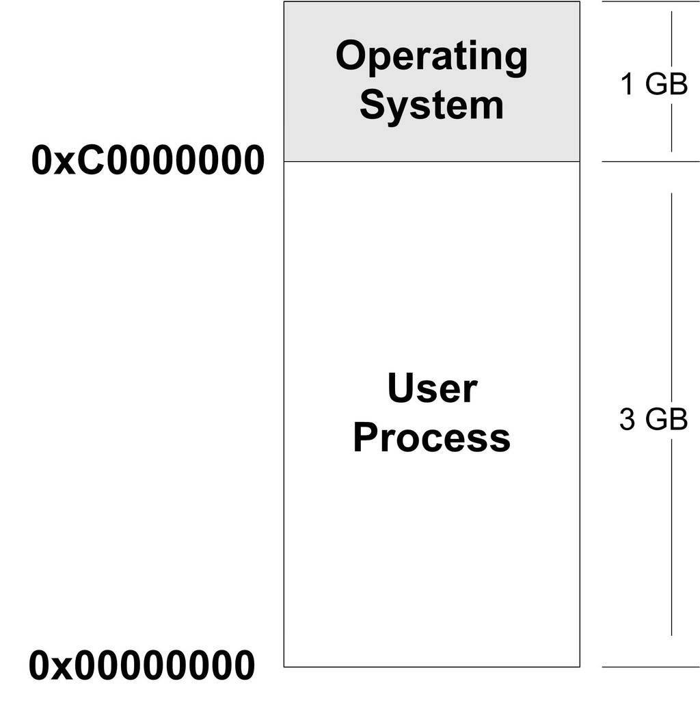
整個4 GB被劃分成兩部分，其中作業系統本身用去了一部分：從地址0xC00000000到0xFFFFFFFF，共1 GB。剩下的從0x00000000地址開始到0xBFFFFFFF共3 GB的空間都是留給程式使用的。那麼從原則上講，我們的程式最多可以使用3 GB的虛擬空間，也就是說整個程式在執行的時候，所有的程式碼、資料包括透過C語言malloc()等方法申請的虛擬空間之和不可以超過3 GB。在現代的程式中，3 GB的虛擬空間有時候是不夠用的，比如一些大型的資料庫系統、數值計算、圖形影象處理、虛擬現實、遊戲等程式需要佔用的記憶體空間較大，這使得32位硬體平台的虛擬地址空間顯得捉襟見肘。當然一本萬利的方法就是使用64位處理器，把虛擬地址空間擴充套件到17 179 869 184 GB。當然不是人人都能順利地更換64位處理器，更何況有很多現有的程式只能執行在32位處理器下。那麼32位CPU的平台能不能使用超過4 GB的空間呢？這個問題我們將在後面的“PAE”一節中進行介紹。
不知讀者是否注意到，上文提到這3 GB的空間“原則上”是可以給程式使用的，但令人遺憾的是，程式並不能完全使用這3 GB的虛擬空間，其中有一部分是預留給其他用途的，我們在後面還會提到。
對於Windows作業系統來說，它的程式虛擬地址空間劃分是作業系統佔用2 GB，那麼程式只剩下2 GB空間。2 GB空間對一些程式來說太小了，所以Windows有個啟動引數可以將作業系統佔用的虛擬地址空間減少到1 GB，即跟Linux分佈一樣。方法如下：修改Windows系統盤根目錄下的Boot.ini，加上“/3G”引數。
[boot loader] timeout=30 default=multi(0)disk(0)rdisk(0)partition(1)\WINDOWS [operating systems] multi(0)disk(0)rdisk(0)partition(1)\WINDOWS="Microsoft Windows XP Professional" /3G /fastdetect /NoExecute=OptIn
PAE
32位的CPU下，程式使用的空間能不能超過4 GB呢？這個問題其實應該從兩個角度來看，首先，問題裡面的“空間”如果是指虛擬地址空間，那麼答案是“否”。因為32位的CPU只能使用32位的指標，它最大的定址範圍是0 到4 GB；如果問題裡面的“空間”指計算機的記憶體空間，那麼答案為“是”。Intel自從1995年的Pentium Pro CPU開始採用了36位的實體地址，也就是可以訪問高達64 GB的實體記憶體。
從硬體層面上來講，原先的32位地址線只能訪問最多4 GB的實體記憶體。但是自從擴充套件至36位地址線之後，Intel修改了頁對映的方式，使得新的對映方式可以訪問到更多的實體記憶體。Intel 把這個地址擴充套件方式叫做PAE（Physical Address Extension）。
當然擴充套件的實體地址空間，對於普通應用程式來說正常情況下感覺不到它的存在，因為這主要是作業系統的事，在應用程式裡，只有32位的虛擬地址空間。那麼應用程式該如何使用這些大於常規的記憶體空間呢？一個很常見的方法就是作業系統提供一個視窗對映的方法，把這些額外的記憶體對映到程式地址空間中來。應用程式可以根據需要來選擇申請和對映，比如一個應用程式中0x10000000～0x20000000這一段256 MB的虛擬地址空間用來做視窗，程式可以從高於4 GB的物理空間中申請多個大小為256 MB的物理空間，編號成A、B、C等，然後根據需要將這個視窗對映到不同的物理空間塊，用到A時將0x10000000～0x20000000對映到A，用到B、C時再對映過去，如此重複操作即可。在Windows下，這種訪問記憶體的操作方式叫做AWE（Address Windowing Extensions）；而像Linux等UNIX類作業系統則採用mmap()系統呼叫來實現。
當然這只是一種補救32位地址空間不夠大時的非常規手段，真正的解決方法還是應該使用64位的處理器和作業系統。這不僅使人想起了DOS時代16位地址不夠用時，也採用了類似的16位CPU字長，20位地址線長度，系統有著640 KB、1 MB等諸多訪問限製。由於很多應用程式須訪問超過1 MB的記憶體，所以當時也有很多類似PAE和AWE的方法，比如當時很著名的XMS（eXtended Memory Specification）。
Windows下的PAE和AWE可以使用與/3G相似的啟動選項/PAE和/AWE開啟。
6.2 載入的方式
程式執行時所需要的指令和資料必須在記憶體中才能夠正常執行，最簡單的辦法就是將程式執行所需要的指令和資料全都裝入記憶體中，這樣程式就可以順利執行，這就是最簡單的靜態裝入的辦法。但是很多情況下程式所需要的記憶體數量大於實體記憶體的數量，當記憶體的數量不夠時，根本的解決辦法就是新增記憶體。相對於磁碟來說，記憶體是昂貴且稀有的，這種情況自計算機磁碟誕生以來一直如此。所以人們想盡各種辦法，希望能夠在不新增記憶體的情況下讓更多的程式執行起來，盡可能有效地利用記憶體。後來研究發現，程式執行時是有區域性性原理的，所以我們可以將程式最常用的部分駐留在記憶體中，而將一些不太常用的資料存放在磁碟裡面，這就是動態裝入的基本原理。
覆蓋裝入（Overlay）和頁對映（Paging）是兩種很典型的動態載入方法，它們所採用的思想都差不多，原則上都是利用了程式的區域性性原理。動態裝入的思想是程式用到哪個模組，就將哪個模組裝入記憶體，如果不用就暫時不裝入，存放在磁碟中。
按照2009年2月的資料，以一個普通的希捷7200RPM的桌面PC硬碟為例，它擁有8 MB快取，500 GB的容量，價格是459元。按照每GB的價格來算，DDR2 667記憶體每GB約150元，而硬碟每GB的價格不到1元，價格大約是記憶體的1/200。
6.2.1 覆蓋裝入
覆蓋裝入在沒有發明虛擬儲存之前使用比較廣泛，現在已經幾乎被淘汰了。雖然這種方法很蹩腳，在被虛擬儲存慣壞了的現代PC機程式設計師眼裡可能不屑一顧，但是它在計算機發展的初期的確為程式能夠在記憶體受限的機器下正常執行提供了一種解決方案。它所體現的一些思想還是很有意義的。值得一提的是，在一些現代嵌入式的記憶體受限環境下，特別是諸如DSP等，這種方法或許還有用武之地。
覆蓋裝入的方法把挖掘記憶體潛力的任務交給了程式設計師，程式設計師在編寫程式的時候必須手工將程式分割成若幹塊，然後編寫一個小的輔助程式碼來管理這些模組何時應該駐留記憶體而何時應該被替換掉。這個小的輔助程式碼就是所謂的覆蓋管理器（Overlay Manager）。最簡單的情況下，一個程式有主模組“main”，main分別會呼叫到模組A和模組B，但是A和B之間不會相互呼叫；這三個模組的大小分別是1 024位元組、512位元組和256位元組。假設不考慮記憶體對齊、載入地址限製的情況，理論上執行這個程式需要有1 792個位元組的記憶體。如果我們採用覆蓋裝入的辦法，那麼在記憶體中可以這樣安排，如圖6-2所示。
 圖6-2 簡單覆蓋載入 …
圖6-2 簡單覆蓋載入 …
由於模組A和模組B之間相互呼叫依賴關係，我們可以把模組A和模組B在記憶體中“相互覆蓋”，即兩個模組共享塊記憶體區域。當main模組呼叫模組A時，覆蓋管理器保證將模組A從檔案中讀入記憶體；當模組main呼叫模組B時，則覆蓋管理器將模組B從檔案中讀入記憶體，由於這時模組A不會被使用，那麼模組B可以裝入到原來模組A所佔用的記憶體空間。很明顯，除了覆蓋管理器，整個程式執行只需要1 536個位元組，比原來的方案節省了256位元組的空間。覆蓋管理器本身往往很小，從數十位元組到數百位元組不等，一般都常駐記憶體。
上面的例子是最簡單的覆蓋情況，但是事實上程式往往不止兩個模組，而模組之間的呼叫關係也比上面的例子要複雜。在多個模組的情況下，程式設計師需要手工將模組按照它們之間的呼叫依賴關係組織成樹狀結構。
按照圖6-3的組織關係，模組main依賴於模組A和B，模組A依賴於C和D；模組B依賴於E和F，則它們在記憶體中的覆蓋方式如圖中所示。很明顯，這個程式的執行方式與前面的例子大同小異，值得注意的是，覆蓋管理器需要保證兩點。
 圖6-3 複雜的覆蓋載入 …
圖6-3 複雜的覆蓋載入 …
這個樹狀結構中從任何一個模組到樹的根（也就是main）模組都叫呼叫路徑。當該模組被呼叫時，整個呼叫路徑上的模組必須都在記憶體中。比如程式正在模組E中執行程式碼，那麼模組B和模組main必須都在記憶體中，以確保模組E執行完畢以後能夠正確返回至模組B和模組main。
禁止跨樹間呼叫。任意一個模組不允許跨過樹狀結構進行呼叫。比如上面例子中，模組A不可以呼叫模組B、E、F；模組C不可以呼叫模組D、B、E、F等。因為覆蓋管理器不能夠保證跨樹間的模組能夠存在於記憶體中。不過很多時候可能兩個子模組都需要依賴於某個模組，比如模組E和模組C都需要另外一個模組G，那麼最方便的做法是將模組G並入到main模組中，這樣G就在E和C的呼叫路徑上了。
當然，由於跨模組間的呼叫都需要經過覆蓋管理器，以確保所有被呼叫到的模組都能夠正確地駐留在記憶體，而且一旦模組沒有在記憶體中，還需要從磁碟或其他儲存器讀取相應的模組，所以覆蓋裝入的速度肯定比較慢，不過這也是一種摺中的方案，是典型的利用時間換取空間的方法。
6.2.2 頁對映
頁對映是虛擬儲存機制的一部分，它隨著虛擬儲存的發明而誕生。前面我們已經介紹了頁對映的基本原理，這裡我們再結合執行檔的載入來闡述一下頁對映是如何被應用到動態載入中去的。與覆蓋裝入的原理相似，頁對映也不是一下子就把程式的所有資料和指令都裝入記憶體，而是將記憶體和所有磁碟中的資料和指令按照“頁（Page）”為單位劃分成若幹個頁，以後所有的載入和操作的單位就是頁。以目前的情況，硬體規定的頁的大小有4 096位元組、8 192位元組、2 MB、4 MB等，最常見的Intel IA32處理器一般都使用4 096位元組的頁，那麼512 MB的實體記憶體就擁有512 * 1024 * 1024 / 4 096 = 131 072個頁。
為了演示頁對映的基本機制，假設我們的32位機器有16 KB的記憶體，每個頁大小為4 096位元組，則共有4個頁，如表6-1所示。
 表6-1 …
表6-1 …
假設程式所有的指令和資料總和為32 KB，那麼程式總共被分為8個頁。我們將它們編號為P0～P7。很明顯，16 KB的記憶體無法同時將32 KB的程式裝入，那麼我們將按照動態裝入的原理來進行整個裝入過程。如果程式剛開始執行時的入口地址在P0，這時載入管理器（我們假設載入過程由一個叫載入管理器的家夥來控制，就像覆蓋管理器一樣）發現程式的P0不在記憶體中，於是將記憶體F0分配給P0，並且將P0的內容裝入F0；執行一段時間以後，程式需要用到P5，於是載入管理器將P5裝入F1；就這樣，當程式用到P3和P6的時候，它們分別被裝入到了F2和F3，它們的對映關係如圖6-4所示。
 圖6-4 頁對映與頁載入 …
圖6-4 頁對映與頁載入 …
很明顯，如果這時候程式只需要P0、P3、P5和P6這4個頁，那麼程式就能一直執行下去。但是問題很明顯，如果這時候程式需要訪問P4，那麼載入管理器必須做出抉擇，它必須放棄目前正在使用的4個記憶體頁中的其中一個來載入P4。至於選擇哪個頁，我們有很多種演算法可以選擇，比如可以選擇F0，因為它是第一個被分配掉的記憶體頁（這個演算法我們可以稱之為FIFO，先進先出演算法）；假設載入管理器發現F2很少被訪問到，那麼我們可以選擇F2（這種演算法可以稱之為LUR，最少使用演算法）。假設我們放棄P0，那麼這時候F0就裝入了P4。程式接著按照這樣的方式執行。
可能很多讀者已經發現了，這個所謂的載入管理器就是現代的作業系統，更加準確地講就是作業系統的儲存管理器。目前幾乎所有的主流作業系統都是按照這種方式載入執行檔的，我們熟悉的Windows對PE檔案的載入及Linux對ELF檔案的載入都是這樣完成的，接著我們將從作業系統的角度來看執行檔的載入。
6.3 從作業系統角度看執行檔的載入
從上面頁對映的動態裝入的方式可以看到，執行檔中的頁可能被裝入記憶體中的任意頁。比如程式需要P4的時候，它可能會被裝入F0～F3這4個頁中的任意一個。很明顯，如果程式使用實體地址直接進行操作，那麼每次頁被裝入時都需要進行重定位。正如我們在第1章中所提到的，在虛擬儲存中，現代的硬體MMU都提供地址轉換的功能。有了硬體的地址轉換和頁對映機制，作業系統動態載入執行檔的方式跟靜態載入有了很大的區別。
我們經常看到各種執行檔的載入過程的描述，雖然大致能夠明白這個過程，但是總覺得似乎還有那麼一層迷霧阻隔著，一旦涉及細節總是有一些模糊。本節我們將站在作業系統的角度來闡述一個執行檔如何被載入，並且同時在程式中執行。
6.3.1 程式的建立
事實上，從作業系統的角度來看，一個程式最關鍵的特徵是它擁有獨立的虛擬地址空間，這使得它有別於其他程式。很多時候一個程式被執行同時都伴隨著一個新的程式的建立，那麼我們就來看看這種最通常的情形：建立一個程式，然後載入相應的執行檔並且執行。在有虛擬儲存的情況下，上述過程最開始只需要做三件事情：
建立一個獨立的虛擬地址空間。
讀取執行檔頭，並且建立虛擬空間與執行檔的對映關係。
將CPU的指令暫存器設定成執行檔的入口地址，啟動執行。
首先是建立虛擬地址空間。回憶第1章的頁對映機制，我們知道一個虛擬空間由一組頁對映函式將虛擬空間的各個頁對映至相應的物理空間，那麼建立一個虛擬空間實際上並不是建立空間而是建立對映函式所需要的相應的資料結構，在i386 的Linux下，建立虛擬地址空間實際上只是分配一個頁目錄（Page Directory）就可以了，甚至不設定頁對映關係，這些對映關係等到後面程式發生頁錯誤的時候再進行設定。
讀取執行檔頭，並且建立虛擬空間與執行檔的對映關係。上面那一步的頁對映關係函式是虛擬空間到實體記憶體的對映關係，這一步所做的是虛擬空間與執行檔的對映關係。我們知道，當程式執行發生頁錯誤時，作業系統將從實體記憶體中分配一個物理頁，然後將該“缺頁”從磁碟中讀取到記憶體中，再設定缺頁的虛擬頁和物理頁的對映關係，這樣程式才得以正常執行。但是很明顯的一點是，當作業系統捕獲到缺頁錯誤時，它應知道程式當前所需要的頁在執行檔中的哪一個位置。這就是虛擬空間與執行檔之間的對映關係。從某種角度來看，這一步是整個載入過程中最重要的一步，也是傳統意義上“載入”的過程。
由於執行檔在載入時實際上是被對映的虛擬空間，所以執行檔很多時候又被叫做映像檔案（Image）。
讓我們考慮最簡單的情況，假設我們的ELF執行檔只有一個程式碼段“.text“，它的虛擬地址為0x08048000，它在檔案中的大小為0x000e1，對齊為0x1000。由於虛擬儲存的頁對映都是以頁為單位的，在32位的Intel IA32下一般為4 096位元組，所以32位ELF的對齊粒度為0x1000。由於該.text段大小不到一個頁，考慮到對齊該段佔用一個段。所以一旦該執行檔被載入，執行檔與執行該執行檔程式的虛擬空間的對映關係如圖6-5所示。
 圖6-5 執行檔與程式虛擬空間 …
圖6-5 執行檔與程式虛擬空間 …
很明顯，這種對映關係只是儲存在作業系統內部的一個資料結構。Linux中將程式虛擬空間中的一個段叫做虛擬記憶體區域（VMA, Virtual Memory Area）；在Windows中將這個叫做虛擬段（Virtual Section），其實它們都是同一個概念。比如上例中，作業系統建立程式後，會在程式相應的資料結構中設定有一個.text 段的VMA：它在虛擬空間中的地址為0x08048000～0x08049000，它對應ELF檔案中偏移為0的.text，它的屬性為只讀（一般程式碼段都是只讀的），還有一些其他的屬性。
VMA是一個很重要的概念，它對於我們理解程式的載入執行和作業系統如何管理程式的虛擬空間有非常重要的幫助。
上面的例子中，我們描述的是最簡單的只有一個段的執行檔對映的情況。作業系統在內部儲存這種結構，很明顯是因為當程式執行發生段錯誤時，它可以透過查詢這樣的一個資料結構來定位錯誤頁在執行檔中的位置，此內容後面會詳細介紹。
將CPU指令暫存器設定成執行檔入口，啟動執行。第三步其實也是最簡單的一步，作業系統透過設定CPU的指令暫存器將控制權轉交給程式，由此程式開始執行。這一步看似簡單，實際上在作業系統層面上比較複雜，它涉及核心堆疊和使用者堆疊的切換、CPU執行許可權的切換。不過從程式的角度看這一步可以簡單地認為作業系統執行了一條跳轉指令，直接跳轉到執行檔的入口地址。還記得ELF檔案頭中儲存有入口地址嗎？沒錯，就是這個地址。
6.3.2 頁錯誤
上面的步驟執行完以後，其實執行檔的真正指令和資料都沒有被裝入到記憶體中。作業系統只是透過執行檔頭部的資訊建立起執行檔和程式虛擬記憶體之間的對映關係而已。假設在上面的例子中，程式的入口地址為0x08048000，即剛好是.text段的起始地址。當CPU開始打算執行這個地址的指令時，發現頁面0x08048000～0x08049000是個空頁面，於是它就認為這是一個頁錯誤（Page Fault）。CPU將控制權交給作業系統，作業系統有專門的頁錯誤處理例程來處理這種情況。這時候我們前面提到的載入過程的第二步建立的資料結構起到了很關鍵的作用，作業系統將查詢這個資料結構，然後找到空頁面所在的VMA，計算出相應的頁面在執行檔中的偏移，然後在實體記憶體中分配一個物理頁面，將程式中該虛擬頁與分配的物理頁之間建立對映關係，然後把控制權再還回給程式，程式從剛才頁錯誤的位置重新開始執行。
隨著程式的執行，頁錯誤也會不斷地產生，作業系統也會為程式分配相應的物理頁面來滿足程式執行的需求，如圖6-6所示。當然有可能程式所需要的記憶體會超過可用的記憶體數量，特別是在有多個程式同時執行的時候，這時候作業系統就需要精心組織和分配實體記憶體，甚至有時候應將分配給程式的實體記憶體暫時收回等，這就涉及了作業系統的虛擬儲存管理。這裡不再展開，有興趣的讀者可以參考相應的作業系統方面的資料。
 圖6-6 頁錯誤 …
圖6-6 頁錯誤 …
6.4 程式虛擬記憶體空間分佈
6.4.1 ELF檔案連結檢視和執行檢視
前面例子的執行檔中只有一個程式碼段，所以它被作業系統載入至程式地址空間之後，相對應的只有一個VMA。不過實際情況會比這複雜得多，在一個正常的程式中，執行檔中包含的往往不止程式碼段，還有資料段、BSS等，所以對映到程式虛擬空間的往往不止一個段。
當段的數量增多時，就會產生空間浪費的問題。因為我們知道，ELF檔案被對映時，是以系統的頁長度作為單位的，那麼每個段在對映時的長度應該都是系統頁長度的整數倍；如果不是，那麼多餘部分也將佔用一個頁。一個ELF檔案中往往有十幾個段，那麼記憶體空間的浪費是可想而知的。有沒有辦法盡量減少這種記憶體浪費呢？
當我們站在作業系統載入執行檔的角度看問題時，可以發現它實際上並不關心執行檔各個段所包含的實際內容，作業系統只關心一些跟載入相關的問題，最主要的是段的許可權（可讀、可寫、可執行）。ELF檔案中，段的許可權往往只有為數不多的幾種組合，基本上是三種：
以程式碼段為代表的許可權為可讀可執行的段。
以資料段和BSS段為代表的許可權為可讀可寫的段。
以只讀資料段為代表的許可權為只讀的段。
那麼我們可以找到一個很簡單的方案就是：對於相同許可權的段，把它們合並到一起當作一個段進行對映。比如有兩個段分別叫“.text”和“.init”，它們包含的分別是程式的可執行程式碼和初始化程式碼，並且它們的許可權相同，都是可讀並且可執行的。假設.text為4 097位元組，.init為512位元組，這兩個段分別對映的話就要佔用三個頁面，但是，如果將它們合並成一起對映的話只需要佔用兩個頁面，如圖6-7所示。
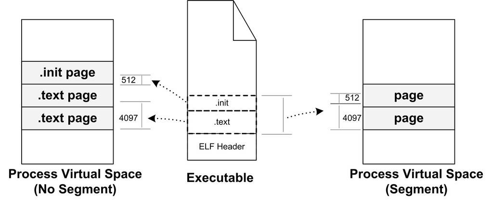
ELF執行檔引入了一個概念叫做“Segment”，一個“Segment”包含一個或多個屬性類似的“Section”。正如我們上面的例子中看到的，如果將“.text”段和“.init”段合並在一起看作是一個“Segment”，那麼載入的時候就可以將它們看作一個整體一起對映，也就是說對映以後在程式虛擬記憶體空間中只有一個相對應的VMA，而不是兩個，這樣做的好處是可以很明顯地減少頁面內部碎片，從而節省了記憶體空間。
我們很難將“Segment”和“Section”這兩個詞從中文的翻譯上加以區分，因為很多時候Section也被翻譯成“段”，回顧第2章，我們也沒有很嚴格區分這兩個英文詞彙和兩個中文詞彙“段”和“節”之間的相互翻譯。很明顯，從連結的角度看，ELF檔案是按“Section”儲存的，事實也的確如此；從載入的角度看，ELF檔案又可以按照“Segment”劃分。我們在這裡就對“Segment”不作翻譯，一律按照原詞。
“Segment”的概念實際上是從載入的角度重新劃分了ELF的各個段。在將目的檔連結成執行檔的時候，連結器會盡量把相同許可權屬性的段分配在同一空間。比如可讀可執行的段都放在一起，這種段的典型是程式碼段；可讀可寫的段都放在一起，這種段的典型是資料段。在ELF中把這些屬性相似的、又連在一起的段叫做一個“Segment”，而系統正是按照“Segment”而不是“Section”來對映執行檔的。
下面的例子是一個很小的程式，程式本身是不停地迴圈執行“sleep”操作，除非使用者發訊號給它，否則就一直執行。它的原始碼如下：
#include <stdlib.h>
int main()
{
while(1) {
sleep(1000);
}
return 0;
}
我們使用靜態連線的方式將其編譯連線成執行檔，然後得到的執行檔“SectionMapping.elf”是一個Linux下很典型的執行檔：
$gcc -static SectionMapping.c -o SectionMapping.elf
使用readelf可以看到，這個執行檔中總共有33個段（Section）：
$readelf -S SectionMapping.elf There are 33 section headers, starting at offset 0x74594: Section Headers: [Nr] Name Type Addr Off Size ES Flg Lk Inf Al [ 0] NULL 00000000 000000 000000 00 0 0 0 [ 1] .note.ABI-tag NOTE 080480d4 0000d4 000020 00 A 0 0 4 [ 2] .init PROGBITS 080480f4 0000f4 000017 00 AX 0 0 4 [ 3] .text PROGBITS 08048110 000110 055948 00 AX 0 0 16 [ 4] __libc_freeres_fn PROGBITS 0809da60 055a60 000a8b 00 AX 0 0 16 [ 5] .fini PROGBITS 0809e4ec 0564ec 00001c 00 AX 0 0 4 [ 6] .rodata PROGBITS 0809e520 056520 0169e8 00 A 0 0 32 [ 7] __libc_subfreeres PROGBITS 080b4f08 06cf08 00002c 00 A 0 0 4 [ 8] __libc_atexit PROGBITS 080b4f34 06cf34 000004 00 A 0 0 4 [ 9] .eh_frame PROGBITS 080b4f38 06cf38 003a0c 00 A 0 0 4 [10] .gcc_except_table PROGBITS 080b8944 070944 0000a1 00 A 0 0 1 [11] .tdata PROGBITS 080b99e8 0709e8 000010 00 WAT 0 0 4 [12] .tbss NOBITS 080b99f8 0709f8 000018 00 WAT 0 0 4 [13] .ctors PROGBITS 080b99f8 0709f8 000008 00 WA 0 0 4 [14] .dtors PROGBITS 080b9a00 070a00 00000c 00 WA 0 0 4 [15] .jcr PROGBITS 080b9a0c 070a0c 000004 00 WA 0 0 4 [16] .data.rel.ro PROGBITS 080b9a10 070a10 00002c 00 WA 0 0 4 [17] .got PROGBITS 080b9a3c 070a3c 000008 04 WA 0 0 4 [18] .got.plt PROGBITS 080b9a44 070a44 00000c 04 WA 0 0 4 [19] .data PROGBITS 080b9a60 070a60 000720 00 WA 0 0 32 [20] .bss NOBITS 080ba180 071180 001ad4 00 WA 0 0 32 [21] __libc_freeres_pt NOBITS 080bbc54 071180 000014 00 WA 0 0 4 [22] .comment PROGBITS 00000000 071180 002df0 00 0 0 1 [23] .debug_aranges PROGBITS 00000000 073f70 000058 00 0 0 8 [24] .debug_pubnames PROGBITS 00000000 073fc8 000025 00 0 0 1 [25] .debug_info PROGBITS 00000000 073fed 0001ad 00 0 0 1 [26] .debug_abbrev PROGBITS 00000000 07419a 000066 00 0 0 1 [27] .debug_line PROGBITS 00000000 074200 00013d 00 0 0 1 [28] .debug_str PROGBITS 00000000 07433d 0000bb 01 MS 0 0 1 [29] .debug_ranges PROGBITS 00000000 0743f8 000048 00 0 0 8 [30] .shstrtab STRTAB 00000000 074440 000152 00 0 0 1 [31] .symtab SYMTAB 00000000 074abc 007ab0 10 32 898 4 [32] .strtab STRTAB 00000000 07c56c 006e68 00 0 0 1 Key to Flags: W (write), A (alloc), X (execute), M (merge), S (strings) I (info), L (link order), G (group), x (unknown) O (extra OS processing required) o (OS specific), p (processor specific)
我們可以使用readelf命令來檢視ELF的“Segment”。正如描述“Section”屬性的結構叫做段表，描述“Segment”的結構叫程式頭（Program Header），它描述了ELF檔案該如何被作業系統對映到程式的虛擬空間：
$ readelf -l SectionMapping.elf Elf file type is EXEC (Executable file) Entry point 0x8048110 There are 5 program headers, starting at offset 52 Program Headers: Type Offset VirtAddr PhysAddr FileSiz MemSiz Flg Align LOAD 0x000000 0x08048000 0x08048000 0x709e5 0x709e5 R E 0x1000 LOAD 0x0709e8 0x080b99e8 0x080b99e8 0x00798 0x02280 RW 0x1000 NOTE 0x0000d4 0x080480d4 0x080480d4 0x00020 0x00020 R 0x4 TLS 0x0709e8 0x080b99e8 0x080b99e8 0x00010 0x00028 R 0x4 GNU_STACK 0x000000 0x00000000 0x00000000 0x00000 0x00000 RW 0x4 Section to Segment mapping: Segment Sections... 00 .note.ABI-tag .init .text __libc_freeres_fn .fini .rodata __libc_subfreeres __libc_atexit .eh_frame .gcc_except_table 01 .tdata .ctors .dtors .jcr .data.rel.ro .got .got.plt .data .bss __libc_freeres_ptrs 02 .note.ABI-tag 03 .tdata .tbss 04
我們可以看到，這個執行檔中共有5個Segment。從載入的角度看，我們目前只關心兩個“LOAD”型別的Segment，因為只有它是需要被對映的，其他的諸如“NOTE”、“TLS”、“GNU_STACK”都是在載入時起輔助作用的，我們在這裡不詳細展開。可以用圖6-8來表示“SectionMapping.elf”執行檔的段與程式虛擬空間的對映關係。
由圖6-8可以發現，“SectionMapping.elf”被重新劃分成了三個部分，有一些段被歸入可讀可執行的，它們被統一對映到一個VMA0；另外一部分段是可讀可寫的，它們被對映到了VMA1；還有一部分段在程式載入時沒有被對映的，它們是一些包含除錯資訊和字串表等段，這些段在程式執行時沒有用，所以不需要被對映。很明顯，所有相同屬性的“Section”被歸類到一個“Segment”，並且對映到同一個VMA。
所以總的來說，“Segment”和“Section”是從不同的角度來劃分同一個ELF檔案。這個在ELF中被稱為不同的檢視（View），從“Section”的角度來看ELF檔案就是連結檢視（Linking View），從“Segment”的角度來看就是執行檢視（Execution View）。當我們在談到ELF載入時，“段”專門指“Segment”；而在其他的情況下，“段”指的是“Section”。
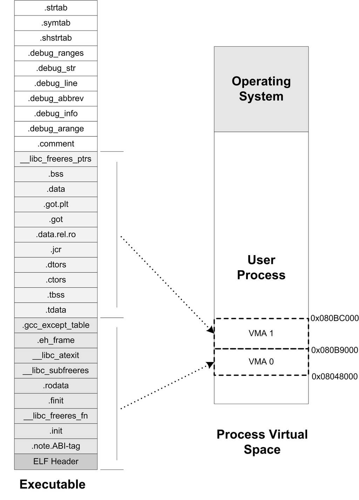
ELF執行檔中有一個專門的資料結構叫做程式頭表（Program Header Table）用來儲存“Segment”的資訊。因為ELF目的檔不需要被載入，所以它沒有程式頭表，而ELF的執行檔和共用函式庫檔案都有。跟段表結構一樣，程式頭表也是一個結構體陣列，它的結構體如下：
typedef struct {
Elf32_Word p_type;
Elf32_Off p_offset;
Elf32_Addr p_vaddr;
Elf32_Addr p_paddr;
Elf32_Word p_filesz;
Elf32_Word p_memsz;
Elf32_Word p_flags;
Elf32_Word p_align;
} Elf32_Phdr;
Elf32_Phdr結構體的幾個成員與前面我們使用“readelf –l”列印檔案頭表顯示的結果一一對應。我們來看Elf32_Phdr結構的各個成員的基本含義，如表6-2所示。
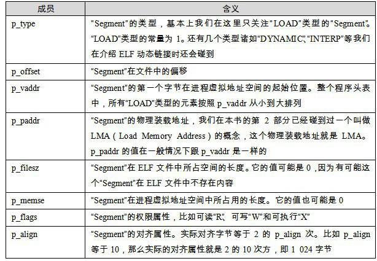
對於“LOAD”型別的“Segment”來說，p_memsz的值不可以小於p_filesz，否則就是不符合常理的。但是，如果p_memsz的值大於p_filesz又是什麼意思呢？如果p_memsz大於p_filesz，就表示該“Segment”在記憶體中所分配的空間大小超過檔案中實際的大小，這部分“多餘”的部分則全部填充為“0”。這樣做的好處是，我們在構造ELF執行檔時不需要再額外設立BSS的“Segment”了，可以把資料“Segment”的p_memsz擴大，那些額外的部分就是BSS。因為資料段和BSS的唯一區別就是：資料段從檔案中初始化內容，而BSS段的內容全都初始化為0。這也就是我們在前面的例子中只看到了兩個“LOAD”型別的段，而不是三個，BSS已經被合並到了資料型別的段裡面。
6.4.2 堆和棧
在作業系統裡面，VMA除了被用來對映執行檔中的各個“Segment”以外，它還可以有其他的作用，作業系統透過使用VMA來對程式的地址空間進行管理。我們知道程式在執行的時候它還需要用到棧（Stack）、堆（Heap）等空間，事實上它們在程式的虛擬空間中的表現也是以VMA的形式存在的，很多情況下，一個程式中的棧和堆分別都有一個對應的VMA。在Linux下，我們可以透過檢視“/proc”來檢視程式的虛擬空間分佈：
$ ./SectionMapping.elf & [1] 21963 $ cat /proc/21963/maps 08048000-080b9000 r-xp 00000000 08:01 2801887 ./SectionMapping.elf 080b9000-080bb000 rwxp 00070000 08:01 2801887 ./SectionMapping.elf 080bb000-080de000 rwxp 080bb000 00:00 0 [heap] bf7ec000-bf802000 rw-p bf7ec000 00:00 0 [stack] ffffe000-fffff000 r-xp 00000000 00:00 0 [vdso]
上面的輸出結果中：第一列是VMA的地址範圍；第二列是VMA的許可權，“r”表示可讀，“w”表示可寫，“x”表示可執行，“p”表示私有（COW, Copy on Write），“s”表示共享。第三列是偏移，表示VMA對應的Segment在映像檔案中的偏移；第四列表示映像檔案所在裝置的主裝置號和次裝置號；第五列表示映像檔案的節點號。最後一列是映像檔案的路徑。
我們可以看到程式中有5個VMA，只有前兩個是對映到執行檔中的兩個Segment。另外三個段的檔案所在裝置主裝置號和次裝置號及檔案節點號都是0，則表示它們沒有對映到檔案中，這種VMA叫做匿名虛擬記憶體區域（Anonymous Virtual Memory Area）。我們可以看到有兩個區域分別是堆（Heap）和棧（Stack），它們的大小分別為140 KB和88 KB。這兩個VMA幾乎在所有的程式中存在，我們在C語言程式裡面最常用的malloc()記憶體分配函式就是從堆裡面分配的，堆由系統庫管理，我們在第10章會詳細介紹關於堆的內容。棧一般也叫做堆疊，我們知道每個執行緒都有屬於自己的堆疊，對於單執行緒的程式來講，這個VMA堆疊就全都歸它使用。另外有一個很特殊的VMA叫做“vdso”，它的地址已經位於核心空間了（即大於0xC0000000的地址），事實上它是一個核心的模組，程式可以透過訪問這個VMA來跟核心進行一些通訊，這裡我們就不具體展開了，有興趣的讀者可以去參考一些關於Linux核心模組的資料。
透過上面的例子，讓我們小結關於程式虛擬地址空間的概念：作業系統透過給程式空間劃分出一個個VMA來管理程式的虛擬空間；基本原則是將相同許可權屬性的、有相同映像檔案的對映成一個VMA；一個程式基本上可以分為如下幾種VMA區域：
程式碼VMA，許可權只讀、可執行；有映像檔案。
資料VMA，許可權可讀寫、可執行；有映像檔案。
堆VMA，許可權可讀寫、可執行；無映像檔案，匿名，可向上擴充套件。
棧VMA，許可權可讀寫、不可執行；無映像檔案，匿名，可向下擴充套件。
當我們在討論程式虛擬空間的“Segment”的時候，基本上就是指上面的幾種VMA。現在再讓我們來看一個常見程式的虛擬空間是怎麼樣的，如圖6-9所示。
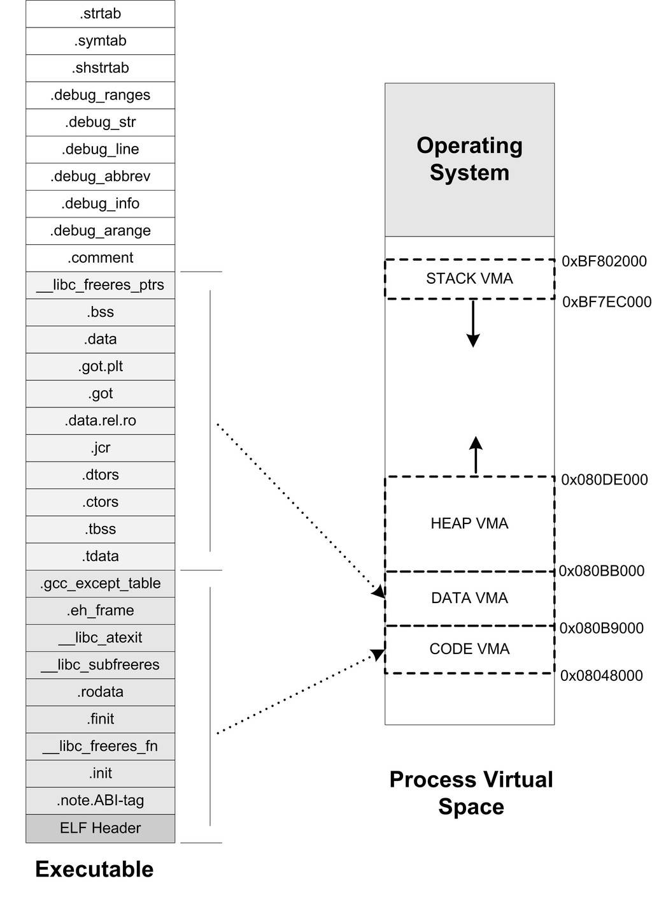
細心的讀者可能已經發現，我們在Linux的“/proc”目錄裡面看到的VMA2的結束地址跟原先預測的不一樣，按照計算應該是0x080bc000，但實際上顯示出來的是0x080bb000。這是怎麼回事呢？這是因為Linux在載入ELF檔案時實現了一種“Hack”的做法，因為Linux的程式虛擬空間管理的VMA的概念並非與“Segment”完全對應，Linux規定一個VMA可以對映到某個檔案的一個區域，或者是沒有對映到任何檔案；而我們這裡的第二個“Segment”要求是，前面部分對映到檔案中，而後面一部分不對映到任何檔案，直接為0，也就是說前面的從“.tdata”段到“.data”段部分要建立從虛擬空間到檔案的對映，而“.bss”和“__libcfreeres_ptrs”部分不要對映到檔案。這樣這兩個概念就不完全相同了，所以Linux實際上採用了一種取巧的辦法，它在對映完第二個“Segment”之後，把最後一個頁面的剩餘部分清0，然後呼叫核心中的do_brk()，把“.bss”和“__libcfreeres_ptrs”的剩餘部分放到堆段中。不過這種具體實現問題中的細節不是很關鍵，有興趣的讀者可以閱讀位於Linux核心原始碼“fs/Binfmt_elf.c”中的“load_elf_interp()”和“elf_map()”兩個函式。
6.4.3 堆的最大申請數量
Linux下虛擬地址空間分給程式本身的是3GB（Windows預設是2GB），那麼程式真正可以用到的有多少呢？我們知道，一般程式中使用malloc()函式進行地址空間的申請，那麼malloc()到底最大可以申請多少記憶體呢？用下面這個小程式可以測試malloc最大記憶體申請數量：
#include <stdio.h>
#include <stdlib.h>
unsigned maximum = 0;
int main(int argc, char *argv[])
{
unsigned blocksize[] = { 1024 * 1024, 1024, 1 };
int i, count;
for(i = 0; i < 3; i++) {
for(count = 1;; count++) {
void *block = malloc( maximum + blocksize[i] * count);
if (block) {
maximum = maximum + blocksize[i] * count;
free(block);
} else {
break;
}
}
}
printf("maximum malloc size = %u bytes\n", maximum);
}
在我的Linux機器上，執行上面這個程式的結果大概是2.9 GB左右的空間；在Windows下執行這個程式的結果大概是1.5 GB。那麼malloc的最大申請數量會受到哪些因素的影響呢？實際上，具體的數值會受到作業系統版本、程式本身大小、用到的動態/共用函式庫數量、大小、程式棧數量、大小等，甚至有可能每次執行的結果都會不同，因為有些作業系統使用了一種叫做隨機地址空間分佈的技術（主要是出於安全考慮，防止程式受惡意攻擊），使得程式的堆空間變小。關於程式的堆的相關內容，在本書的第4部分還會詳細介紹。
6.4.4 段地址對齊
執行檔最終是要被作業系統載入執行的，這個載入的過程一般是透過虛擬記憶體的頁對映機制完成的。在對映過程中，頁是對映的最小單位。對於Intel 80x86係列處理器來說，預設的頁大小為4 096位元組，也就是說，我們要對映將一段實體記憶體和程式虛擬地址空間之間建立對映關係，這段記憶體空間的長度必須是4 096的整數倍，並且這段空間在實體記憶體和程式虛擬地址空間中的起始地址必須是4 096的整數倍。由於有著長度和起始地址的限製，對於執行檔來說，它應該盡量地最佳化自己的空間和地址的安排，以節省空間。我們就拿下面這個例子來看看，執行檔在頁對映機制中如何節省空間。假設我們有一個ELF執行檔，它有三個段（Segment）需要載入，我們將它們命名為SEG0、SEG1和SEG2。每個段的長度、在檔案中的偏移如表6-3所示。
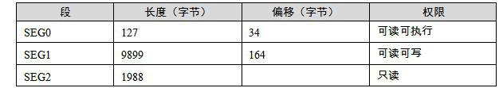
這是很常見的一種情況，就是每個段的長度都不是頁長度的整數倍，一種最簡單的對映辦法就是每個段分開對映，對於長度不足一個頁的部分則佔一個頁。通常ELF執行檔的起始虛擬地址為0x08048000，那麼按照這樣的對映方式，該ELF檔案中的各個段的虛擬地址和長度如表6-4所示。
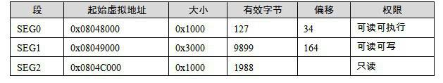
可以看到這種對齊方式在檔案段的內部會有很多內部碎片，浪費磁碟空間。整個執行檔的三個段的總長度只有12 014位元組，卻佔據了5個頁，即20 480位元組，空間使用率只有58.6%。
為瞭解決這種問題，有些UNIX系統採用了一個很取巧的辦法，就是讓那些各個段接壤部分共享一個物理頁面，然後將該物理頁面分別對映兩次（見圖6-10）。比如對於SEG0和
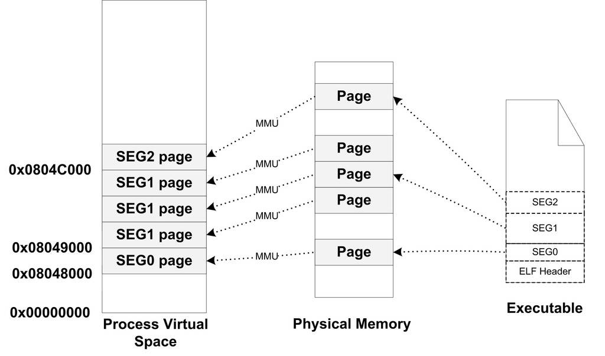
SEG1的接壤部分的那個物理頁，系統將它們對映兩份到虛擬地址空間，一份為SEG0，另外一份為SEG1，其他的頁都按照正常的頁粒度進行對映。而且UNIX系統將ELF的檔案頭也看作是系統的一個段，將其對映到程式的地址空間，這樣做的好處是程式中的某一段區域就是整個ELF檔案的映像，對於一些須訪問ELF檔案頭的操作（比如動態連結器就須讀取ELF檔案頭）可以直接透過讀寫記憶體地址空間進行。從某種角度看，好像是整個ELF檔案從檔案最開始到某個點結束，被邏輯上分成了以4 096位元組為單位的若幹個塊，每個塊都被載入到實體記憶體中，對於那些位於兩個段中間的塊，它們將會被對映兩次。現在讓我們來看看在這種方法下，上面例子中ELF檔案的對映方式如表6-5所示。
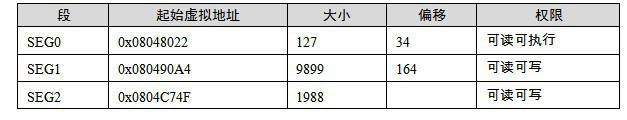
在這種情況下，記憶體空間得到了充分的利用，我們可以看到，本來要用到5個物理頁面，也就是20 480位元組的記憶體，現在只有3個頁面，即12 288位元組。這種對映方式下，對於一個物理頁面來說，它可能同時包含了兩個段的資料，甚至可能是多於兩個段，比如檔案頭、程式碼段、資料段和BSS段的長度加起來都沒超過4 096位元組，那麼一個物理頁面可能包含檔案頭、程式碼段、資料段和BSS段（見圖6-11）。
因為段地址對齊的關係，各個段的虛擬地址就往往不是系統頁面長度的整數倍了，有興趣的讀者也可以結合前面的例子思考一下，這些虛擬地址是怎麼計算出來的。比如我們拿前面的程式“SectionMapping.elf”做例子，看看各個段的虛擬地址是怎麼計算出來的。為什麼VMA1的起始地址是0x080B99E8？而不是0x080B89E8或幹脆是0x080B9000？
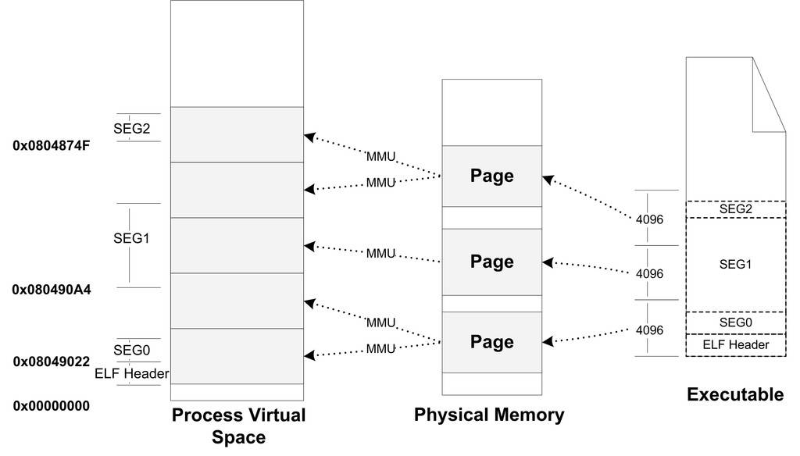
VMA0的起始地址是0x08048000，長度是0x709E5，所以它的結束地址是0x080B89E5。而VMA1因為跟VMA0的最後一個虛擬頁面共享一個物理頁面，並且對映兩遍，所以它的虛擬地址應該是0x080B99E5，又因為段必須是4位元組的倍數，則向上取整至0x080B99E8。
根據上面的段對齊方案，由此我們可以推算出一個規律那就是，在ELF檔案中，對於任何一個可載入的“Segment”，它的p_vaddr除以對齊屬性的餘數等於p_offset除以對齊屬性的餘數。比如前面例子中，第二個“Segment”的p_vaddr為0x080b99e8，對齊屬性為0x1000位元組，所以0x080b99e8 % 0x1000 = 0x9e8；而p_offset為0x0709e8，所以0x0709e8 % 0x1000 = 0x9e8。如何能推匯出這條規律？請有興趣的讀者對照前面的對齊規則計算一下應該很快能得出結論。
6.4.5 程式棧初始化
我們知道程式剛開始啟動的時候，須知道一些程式執行的環境，最基本的就是系統環境變數和程式的執行引數。很常見的一種做法是作業系統在程式啟動前將這些資訊提前儲存到程式的虛擬空間的棧中（也就是VMA中的Stack VMA）。讓我們來看看Linux的程式初始化後棧的結構，我們假設系統中有兩個環境變數：
HOME=/home/user
PATH=/usr/bin
比如我們執行該程式的命令列是：
$ prog 123
並且我們假設堆疊段底部地址為0xBF802000，那麼程式初始化後的堆疊就如圖6-12所示。
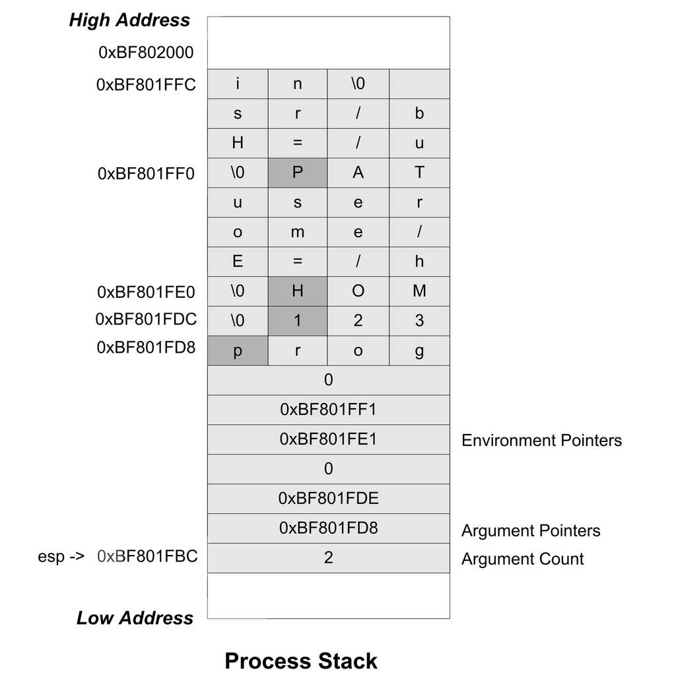
棧頂暫存器esp指向的位置是初始化以後堆疊的頂部，最前面的4個位元組表示命令列引數的數量，我們的例子裡面是兩個，即“prog”和“123”，緊接的就是分佈指向這兩個引數字串的指標；後面跟了一個0；接著是兩個指向環境變數字串的指標，它們分別指向字串“HOME=/home/user”和“PATH=/usr/bin”；後面緊跟一個0表示結束。
程式在啟動以後，程式的庫部分會把堆疊裡的初始化資訊中的引數資訊傳遞給main()函式，也就是我們熟知的main()函式的兩個argc和argv兩個引數，這兩個引數分別對應這裡的命令列引數數量和命令列引數字串指標陣列。
6.5 Linux核心載入ELF過程簡介
當我們在Linux系統的bash下輸入一個命令執行某個ELF程式時，Linux系統是怎樣載入這個ELF檔案並且執行它的呢？
首先在使用者層面，bash程式會呼叫fork()系統呼叫建立一個新的程式，然後新的程式呼叫execve()系統呼叫執行指定的ELF檔案，原先的bash程式繼續返回等待剛才啟動的新程式結束，然後繼續等待使用者輸入命令。execve()系統呼叫被定義在unistd.h，它的原型如下：
int execve(const char *filename, char *const argv[], char *const envp[]);
它的三個引數分別是被執行的程式檔名、執行引數和環境變數。Glibc對execvp()系統呼叫進行了包裝，提供了execl()、execlp()、execle()、execv()和execvp()等5個不同形式的exec係列API，它們只是在呼叫的引數形式上有所區別，但最終都會呼叫到execve()這個系統中。下面是一個簡單的使用fork()和execlp()實現的minibash：
#include <stdio.h>
#include <sys/types.h>
#include <unistd.h>
int main()
{
char buf[1024] = {0};
pid_t pid;
while(1) {
printf("minibash$");
scanf("%s", buf);
pid = fork();
if(pid == 0) {
if(execlp(buf, 0 ) < 0) {
printf("exec error\n");
}
} else if(pid > 0){
int status;
waitpid(pid,&status,0);
} else {
printf("fork error %d\n",pid);
}
}
return 0;
}
在進入execve()系統呼叫之後，Linux核心就開始進行真正的載入工作。在核心中，execve()系統呼叫相應的入口是sys_execve()，它被定義在arch\i386\kernel\Process.c。sys_execve()進行一些引數的檢查複製之後，呼叫do_execve()。do_execve()會首先查詢被執行的檔案，如果找到檔案，則讀取檔案的前128個位元組。為什麼要這麼做呢？因為我們知道，Linux支援的執行檔不止ELF一種，還有a.out、Java程式和以“#!”開始的指令碼程式。Linux還可以支援更多的執行檔格式，如果某一天Linux須支援Windows PE的執行檔格式，那麼我們可以編寫一個支援PE載入的核心模組來實現Linux對PE檔案的支援。這裡do_execve()讀取檔案的前128個位元組的目的是判斷檔案的格式，每種執行檔的格式的開頭幾個位元組都是很特殊的，特別是開頭4個位元組，常常被稱做魔數（Magic Number），透過對魔數的判斷可以確定檔案的格式和型別。比如ELF的執行檔格式的頭4個位元組為0x7F、’e’、’l’、’f’；而Java的執行檔格式的頭4個位元組為’c’、’a’、’f’、’e’；如果被執行的是Shell指令碼或perl、python等這種解釋型語言的指令碼，那麼它的第一行往往是“#!/bin/sh”或“#!/usr/bin/perl”或“#!/usr/bin/python”，這時候前兩個位元組’#’和’!’就構成了魔數，系統一旦判斷到這兩個位元組，就對後面的字串進行解析，以確定具體的解釋程式的路徑。
當do_execve()讀取了這128個位元組的檔案頭部之後，然後呼叫search_binary_handle()去搜尋和匹配合適的執行檔載入處理過程。Linux中所有被支援的執行檔格式都有相應的載入處理過程，search_binary_handle()會透過判斷檔案頭部的魔數確定檔案的格式，並且呼叫相應的載入處理過程。比如ELF執行檔的載入處理過程叫做load_elf_binary()；a.out執行檔的載入處理過程叫做load_aout_binary()；而載入可執行指令碼程式的處理過程叫做load_script()。這裡我們只關心ELF執行檔的載入，load_elf_binary()被定義在fs/Binfmt_elf.c，這個函式的程式碼比較長，它的主要步驟是：
（1）檢查ELF執行檔格式的有效性，比如魔數、程式頭表中段（Segment）的數量。
（2）尋找動態連結的“.interp”段，設定動態連結器路徑（與動態連結有關，具體請參考第9章）。
（3）根據ELF執行檔的程式頭表的描述，對ELF檔案進行對映，比如程式碼、資料、只讀資料。
（4）初始化ELF程式環境，比如程式啟動時EDX暫存器的地址應該是DT_FINI的地址（參照動態連結）。
（5）將系統呼叫的返回地址修改成ELF執行檔的入口點，這個入口點取決於程式的連結方式，對於靜態連結的ELF執行檔，這個程式入口就是ELF檔案的檔案頭中e_entry所指的地址；對於動態連結的ELF執行檔，程式入口點是動態連結器。
當load_elf_binary()執行完畢，返回至do_execve()再返回至sys_execve()時，上面的第5步中已經把系統呼叫的返回地址改成了被載入的ELF程式的入口地址了。所以當sys_execve()系統呼叫從核心態返回到使用者態時，EIP暫存器直接跳轉到了ELF程式的入口地址，於是新的程式開始執行，ELF執行檔載入完成。
6.6 Windows PE的載入
PE檔案的載入跟ELF有所不同，由於PE檔案中，所有段的起始地址都是頁的倍數，段的長度如果不是頁的整數倍，那麼在對映時向上補齊到頁的整數倍，我們也可以簡單地認為在32位的PE檔案中，段的起始地址和長度都是4 096位元組的整數倍。由於這個特點，PE檔案的對映過程會比ELF簡單得多，因為它無須考慮如ELF裡面諸多段地址對齊之類的問題，雖然這樣會浪費一些磁碟和記憶體空間。PE執行檔的段的數量一般很少，不像ELF中經常有十多個“Section”，最後不得不使用“Segment”的概念把它們合並到一起載入，PE檔案中，連結器在生產執行檔時，往往將所有的段盡可能地合並，所以一般只有程式碼段、資料段、只讀資料段和BSS等為數不多的幾個段。
PE檔案的載入跟ELF有所不同，由於PE檔案中，所有段的起始地址都是頁的倍數，段的長度如果不是頁的整數倍，那麼在對映時向上補齊到頁的整數倍，我們也可以簡單地認為在32位的PE檔案中，段的起始地址和長度都是4 096位元組的整數倍。由於這個特點，PE檔案的對映過程會比ELF簡單得多，因為它無須考慮如ELF裡面諸多段地址對齊之類的問題，雖然這樣會浪費一些磁碟和記憶體空間。PE執行檔的段的數量一般很少，不像ELF中經常有十多個“Section”，最後不得不使用“Segment”的概念把它們合並到一起載入，PE檔案中，連結器在生產執行檔時，往往將所有的段盡可能地合並，所以一般只有程式碼段、資料段、只讀資料段和BSS等為數不多的幾個段。
在討論結構的具體載入過程之前，我們要先引入一個PE裡面很常見的術語叫做RVA（Relative Virtual Address），它表示一個相對虛擬地址。這個術語看起來比較晦澀難懂，其實它的概念很簡單，就是相當於檔案中的偏移量的東西。它是相對於PE檔案的載入基地址的一個偏移地址。比如，一個PE檔案被載入到虛擬地址（VA）0x00400000，那麼一個RVA為0x1000的地址就是0x00401000。每個PE檔案在載入時都會有一個載入目標地址（Target Address），這個地址就是所謂的基地址（Base Address）。由於PE檔案被設計成可以載入到任何地址，所以這個基地址並不是固定的，每次載入時都可能會變化。如果PE檔案中的地址都使用絕對地址，它們都要隨著基地址的變化而變化。但是，如果使用RVA這樣一種基於基地址的相對地址，那麼無論基地址怎麼變化，PE檔案中的各個RVA都保持一致。這裡涉及PE執行檔載入的一些內容，我們只是簡單介紹一下，更加詳細的內容將留到本書後面有關PE檔案的Rebasing機制時再進行分析。
載入一個PE執行檔並且載入它，是個比ELF檔案相對簡單的過程：
先讀取檔案的第一個頁，在這個頁中，包含了DOS頭、PE檔案頭和段表。
檢查程式地址空間中，目標地址是否可用，如果不可用，則另外選一個載入地址。這個問題對於執行檔來說基本不存在，因為它往往是程式第一個裝入的模組，所以目標地址不太可能被佔用。主要是針對DLL檔案的載入而言的，我們在後面的“Rebasing”這一節還會具體介紹這個問題。
使用段表中提供的資訊，將PE檔案中所有的段一一對映到地址空間中相應的位置。
如果載入地址不是目標地址，則進行Rebasing。
載入所有PE檔案所需要的DLL檔案。
對PE檔案中的所有匯入符號進行解析。
根據PE頭中指定的引數，建立初始化棧和堆。
建立主執行緒並且啟動程式。
PE檔案中，與載入相關的主要資訊都包含在PE擴充套件頭（PE Optional Header）和段表，我們在第2部分已經介紹過了PE擴充套件頭部分結構，這裡我們將選擇幾個跟載入相關的成員來分析它們的含義（見表6-6），當然還有一部分成員是跟程式初始化和執行庫有關的，我們把它們留到本書的第4部分介紹。
 表6-6 …
表6-6 …
6.7 本章小結
在這一章中，我們探討了程式執行時如何使用記憶體空間的問題，即程式虛擬地址空間問題。接著我們圍繞程式如何被作業系統載入到記憶體中進行執行，介紹了覆蓋裝入和頁對映的模式，分析了為什麼要以頁對映的方式將程式對映至程式地址空間，這樣做的好處是什麼，並從作業系統的角度觀察程式如何被建立，當程式開始執行時發生頁錯誤該如何處理等。
我們還詳細介紹了程式虛擬地址空間的分佈，作業系統如何為程式的程式碼、資料、堆、棧在程式地址空間中分配，它們是如何分佈的。最後兩個章節我們分別深入介紹了Linux和Windows程式如何載入並且執行ELF和PE程式。在這一章中，我們假設程式都是靜態連結的，那麼它們都只有一個單獨的執行檔模組。下一章中我們將介紹一種與靜態連結程式不同的概念，即一個單一的執行檔模組被拆分成若幹個模組，在程式執行時進行連結的一種方式。
第7章 動態連結
7.1 為什麼要動態連結
7.2 簡單的動態連結例子
7.3 地址無關程式碼
7.4 延遲繫結（PLT）
7.5 動態連結相關結構
7.6 動態連結的步驟和實現
7.7 顯式執行時連結
7.8 本章小結
7.1 為什麼要動態連結
靜態連結使得不同的程式開發者和部門能夠相對獨立地開發和測試自己的程式模組，從某種意義上來講大大促進了程式開發的效率，原先限製程式的規模也隨之擴大。但是慢慢地靜態連結的諸多缺點也逐步暴露出來，比如浪費記憶體和磁碟空間、模組更新困難等問題，使得人們不得不尋找一種更好的方式來組織程式的模組。
記憶體和磁碟空間
靜態連結這種方法的確很簡單，原理上很容易理解，實踐上很難實現，在作業系統和硬體不發達的早期，絕大部分系統採用這種方案。隨著計算機軟體的發展，這種方法的缺點很快就暴露出來了，那就是靜態連線的方式對於計算機記憶體和磁碟的空間浪費非常嚴重。特別是多程式作業系統情況下，靜態連結極大地浪費了記憶體空間，想象一下每個程式內部除了都保留著printf()函式、scanf()函式、strlen()等這樣的公用庫函式，還有數量相當可觀的其他庫函式及它們所需要的輔助資料結構。在現在的Linux系統中，一個普通程式會使用到的C語言靜態函式庫至少在1 MB以上，那麼，如果我們的機器中執行著100個這樣的程式，就要浪費近100 MB的記憶體；如果磁碟中有2 000個這樣的程式，就要浪費近2 GB的磁碟空間，很多Linux的機器中，/usr/bin下就有數千個執行檔。
比如圖7-1所示的Program1和Program2分別包含Program1.o和Program2.o兩個模組，
 圖7-1 靜態連結時檔案在記憶體中的副本 …
圖7-1 靜態連結時檔案在記憶體中的副本 …
並且它們還共用Lib.o這兩模組。在靜態連線的情況下，因為Program1和Program2都用到了Lib.o這個模組，所以它們同時在連結輸出的執行檔Program1和Program2有兩個副本。當我們同時執行Program1和Program2時，Lib.o在磁碟中和記憶體中都有兩份副本。當系統中存在大量的類似於Lib.o的被多個程式共享的目的檔時，其中很大一部分空間就被浪費了。在靜態連結中，C語言靜態函式庫是很典型的浪費空間的例子，還有其他數以千計的庫如果都需要靜態連結，那麼空間浪費無法想象。
程式開發和發布
空間浪費是靜態連結的一個問題，另一個問題是靜態連結對程式的更新、部署和發布也會帶來很多麻煩。比如程式Program1所使用的Lib.o是由一個第三方廠商提供的，當該廠商更新了Lib.o的時候（比如修正了lib.o裡面包含的一個Bug），那麼Program1的廠商就需要拿到最新版的Lib.o，然後將其與Program1.o連結後，將新的Program1整個發布給使用者。這樣做的缺點很明顯，即一旦程式中有任何模組更新，整個程式就要重新連結、發布給使用者。比如一個程式有20個模組，每個模組1 MB，那麼每次更新任何一個模組，使用者就得重新獲取這個20 MB的程式。如果程式都使用靜態連結，那麼透過網路來更新程式將會非常不便，因為一旦程式任何位置的一個小改動，都會導致整個程式重新下載。
動態連結
要解決空間浪費和更新困難這兩個問題最簡單的辦法就是把程式的模組相互分割開來，形成獨立的檔案，而不再將它們靜態地連結在一起。簡單地講，就是不對那些組成程式的目的檔進行連結，等到程式要執行時才進行連結。也就是說，把連結這個過程推遲到了執行時再進行，這就是動態連結（Dynamic Linking）的基本思想。
還是以Program1和Program2為例，假設我們保留Program1.o、Program2.o和Lib.o三個目的檔。當我們要執行Program1這個程式時，系統首先載入Program1.o，當系統發現Program1.o中用到了Lib.o，即Program1.o依賴於Lib.o，那麼系統接著載入Lib.o，如果Program1.o或Lib.o還依賴於其他目的檔，系統會按照這種方法將它們全部載入至記憶體。所有需要的目的檔載入完畢之後，如果依賴關係滿足，即所有依賴的目的檔都存在於磁碟，系統開始進行連結工作。這個連結工作的原理與靜態連結非常相似，包括符號解析、地址重定位等，我們在前面已經很詳細地介紹過了。完成這些步驟之後，系統開始把控制權交給Program1.o的程式入口處，程式開始執行。這時如果我們需要執行Program2，那麼系統只需要載入Program2.o，而不需要重新載入Lib.o，因為記憶體中已經存在了一份Lib.o的副本（見圖7-2），系統要做的只是將Program2.o和Lib.o連結起來。
很明顯，上面的這種做法解決了共享的目的檔多個副本浪費磁碟和記憶體空間的問題，可以看到，磁碟和記憶體中只存在一份Lib.o，而不是兩份。另外在記憶體中共享一個目的檔
 圖7-2 動態連結時檔案在記憶體中的副本 …
圖7-2 動態連結時檔案在記憶體中的副本 …
模組的好處不僅僅是節省記憶體，它還可以減少物理頁面的換入換出，也可以增加CPU快取的命中率，因為不同程式間的資料和指令訪問都集中在了同一個共享模組上。
上面的動態連結方案也可以使程式的升級變得更加容易，當我們要升級程式庫或程式共享的某個模組時，理論上只要簡單地將舊的目的檔覆蓋掉，而無須將所有的程式再重新連結一遍。當程式下一次執行的時候，新版本的目的檔會被自動載入到記憶體並且連結起來，程式就完成了升級的目標。
當一個程式產品的規模很大的時候，往往會分割成多個子系統及多個模組，每個模組都由獨立的小組開發，甚至會使用不同的程式語言。動態連結的方式使得開發過程中各個模組更加獨立，耦合度更小，便於不同的開發者和開發組織之間獨立進行開發和測試。
程式可擴充套件性和相容性
動態連結還有一個特點就是程式在執行時可以動態地選擇載入各種程式模組，這個優點就是後來被人們用來製作程式的外掛（Plug-in）。
比如某個公司開發完成了某個產品，它按照一定的規則製定好程式的介面，其他公司或開發者可以按照這種介面來編寫符合要求的動態連結檔案。該產品程式可以動態地載入各種由第三方開發的模組，在程式執行時動態地連結，實現程式功能的擴充套件。
動態連結還可以加強程式的相容性。一個程式在不同的平台執行時可以動態地連結到由作業系統提供的動態連結庫，這些動態連結庫相當於在程式和作業系統之間增加了一個中間層，從而消除了程式對不同平台之間依賴的差異性。比如作業系統A和作業系統B對於printf()的實現機制不同，如果我們的程式是靜態連結的，那麼程式需要分別連結成能夠在A執行和在B執行的兩個版本並且分開發布；但是如果是動態連結，只要作業系統A和作業系統B都能提供一個動態連結庫包含printf()，並且這個printf()使用相同的介面，那麼程式只需要有一個版本，就可以在兩個作業系統上執行，動態地選擇相應的printf()的實現版本。當然這只是理論上的可能性，實際上還存在不少問題，我們會在後面繼續探討關於動態連結模組之間相容性的問題。
從上面的描述來看，動態連結是不是一種“萬能膏藥”，包治百病呢？很遺憾，動態連結也有諸多的問題及令人煩惱和費解的地方。很常見的一個問題是，當程式所依賴的某個模組更新後，由於新的模組與舊的模組之間介面不相容，導致了原有的程式無法執行。這個問題在早期的Windows版本中尤為嚴重，因為它們缺少一種有效的共用函式庫版本管理機制，使得使用者經常出現新程式安裝完之後，其他某個程式無法正常工作的現象，這個問題也經常被稱為“DLL Hell”。
動態連結的基本實現
動態連結的基本思想是把程式按照模組拆分成各個相對獨立部分，在程式執行時才將它們連結在一起形成一個完整的程式，而不是像靜態連結一樣把所有的程式模組都連結成一個個單獨的執行檔。那麼我們能不能按照前面例子中所描述的那樣，直接使用目的檔進行動態連結呢？這個問題的答案是：理論上是可行的，但實際上動態連結的實現方案與直接使用目的檔稍有差別。我們將在後面分析目的檔和動態連結檔案的區別。
動態連結涉及執行時的連結及多個檔案的載入，必需要有作業系統的支援，因為動態連結的情況下，程式的虛擬地址空間的分佈會比靜態連結情況下更為複雜，還有一些儲存管理、記憶體共享、程式執行緒等機制在動態連結下也會有一些微妙的變化。目前主流的作業系統幾乎都支援動態連結這種方式，在Linux系統中，ELF動態連結檔案被稱為動態共享物件（DSO，Dynamic Shared Objects），簡稱共享物件，它們一般都是以“.so”為副檔名的一些檔案；而在Windows系統中，動態連結檔案被稱為動態連結庫（Dynamical Linking Library），它們通常就是我們平時很常見的以“.dll”為副檔名的檔案。
從本質上講，普通可執行程式和動態連結庫中都包含指令和資料，這一點沒有區別。在使用動態連結庫的情況下，程式本身被分為了程式主要模組（Program1）和動態連結庫（Lib.so），但實際上它們都可以看作是整個程式的一個模組，所以當我們提到程式模組時可以指程式主模組也可以指動態連結庫。
在Linux中，常用的C語言庫的執行庫glibc，它的動態連結形式的版本儲存在“/lib”目錄下，檔名叫做“libc.so”。整個系統只保留一份C語言庫的動態連結檔案“libc.so”，而所有的C語言編寫的、動態連結的程式都可以在執行時使用它。當程式被載入的時候，系統的動態連結器會將程式所需要的所有動態連結庫（最基本的就是libc.so）載入到程式的地址空間，並且將程式中所有未決議的符號繫結到相應的動態連結庫中，並進行重定位工作。
程式與libc.so之間真正的連結工作是由動態連結器完成的，而不是由我們前面看到過的靜態連結器ld完成的。也就是說，動態連結是把連結這個過程從本來的程式載入前被推遲到了載入的時候。可能有人會問，這樣的做法的確很靈活，但是程式每次被載入時都要進行重新進行連結，是不是很慢？的確，動態連結會導致程式在效能的一些損失，但是對動態連結的連結過程可以進行最佳化，比如我們後面要介紹的延遲繫結（Lazy Binding）等方法，可以使得動態連結的效能損失盡可能地減小。據估算，動態連結與靜態連結相比，效能損失大約在5%以下。當然經過實踐的證明，這點效能損失用來換取程式在空間上的節省和程式構建和升級時的靈活性，是相當值得的。
7.2 簡單的動態連結例子
Windows平台下的PE動態連結機制與Linux下的ELF動態連結稍有不同，ELF比PE從結構上來看更加簡單，我們先以ELF作為例子來描述動態連結的過程，接著我們將會單獨描述Windows平台下PE動態連結機制的差異。
首先透過一個簡單的例子來大致地感受一下動態連結，我們還是以圖7-2中的Program1和Program2來做演示。我們分別需要如下幾個原始檔：“Program1.c”、“Program2.c”、“Lib.c”和“Lib.h”。它們的原始碼如清單7-1所示。
清單7-1 SimpleDynamicalLinking
/* Program1.c */
#include "Lib.h"
int main()
{
foobar(1);
return 0;
}
/* Program2.c */
#include "Lib.h"
int main()
{
foobar(2);
return 0;
}
/* Lib.c */
#include <stdio.h>
void foobar(int i)
{
printf("Printing from Lib.so %d\n", i);
}
/* Lib.h */
#ifndef LIB_H
#define LIB_H
void foobar(int i);
#endif
程式很簡單，兩個程式的主要模組Program1.c和Program2.c分別呼叫了Lib.c裡面的foobar()函式，傳進去一個數字，foobar()函式的作用就是列印這個數字。然後我們使用GCC將Lib.c編譯成一個共享物件檔案：
gcc -fPIC -shared -o Lib.so Lib.c
上面GCC命令中的引數“-shared”表示產生共享物件，“-fPIC”我們稍後還會詳細解釋，這裡暫且略過。
這時候我們得到了一個Lib.so檔案，這就是包含了Lib.c的foobar()函式的共享物件檔案。然後我們分別編譯連結Program1.c和Program2.c：
gcc -o Program1 Program1.c ./Lib.so
gcc -o Program2 Program2.c ./Lib.so
這樣我們得到了兩個程式Program1和Program2，這兩個程式都使用了Lib.so裡面的foobar()函式。從Program1的角度看，整個編譯和連結過程如圖7-3所示。
 圖7-3 動態連結過程 …
圖7-3 動態連結過程 …
Lib.c被編譯成Lib.so共享物件檔案，Program1.c被編譯成Program1.o之後，連結成為可執行程式Program1。圖7-3中有一個步驟與靜態連結不一樣，那就是Program1.o被連線成執行檔的這一步。在靜態連結中，這一步連結過程會把Program1.o和Lib.o連結到一起，並且產生輸出執行檔Program1。但是在這裡，Lib.o沒有被連結進來，連結的輸入目的檔只有Program1.o（當然還有C語言執行庫，我們這裡暫時忽略）。但是從前面的命令列中我們看到，Lib.so也參與了連結過程。這是怎麼回事呢？
關於模組（Module）
在靜態連結時，整個程式最終只有一個執行檔，它是一個不可以分割的整體；但是在動態連結下，一個程式被分成了若幹個檔案，有程式的主要部分，即執行檔（Program1）和程式所依賴的共享物件（Lib.so），很多時候我們也把這些部分稱為模組，即動態連結下的執行檔和共享物件都可以看作是程式的一個模組。
讓我們再回到動態連結的機制上來，當程式模組Program1.c被編譯成為Program1.o時，編譯器還不不知道foobar()函式的地址，這個內容我們已在靜態連結中解釋過了。當連結器將Program1.o連結成執行檔時，這時候連結器必須確定Program1.o中所引用的foobar()函式的性質。如果foobar()是一個定義與其他靜態目標模組中的函式，那麼連結器將會按照靜態連結的規則，將Program1.o中的foobar地址引用重定位；如果foobar()是一個定義在某個動態共享物件中的函式，那麼連結器就會將這個符號的引用標記為一個動態連結的符號，不對它進行地址重定位，把這個過程留到載入時再進行。
那麼這裡就有個問題，連結器如何知道foobar的引用是一個靜態符號還是一個動態符號？這實際上就是我們要用到Lib.so的原因。Lib.so中儲存了完整的符號資訊（因為執行時進行動態連結還須使用符號資訊），把Lib.so也作為連結的輸入檔案之一，連結器在解析符號時就可以知道：foobar是一個定義在Lib.so的動態符號。這樣連結器就可以對foobar的引用做特殊的處理，使它成為一個對動態符號的引用。
動態連結程式執行時地址空間分佈
對於靜態連結的執行檔來說，整個程式只有一個檔案要被對映，那就是執行檔本身，我們在前面的章節已經介紹了靜態連結下的程式虛擬地址空間的分佈。但是對於動態連結來說，除了執行檔本身之外，還有它所依賴的共享目的檔。那麼這種情況下，程式的地址空間分佈又會怎樣呢？
我們還是以上面的Program1為例，但是當我們試圖執行Program1並且檢視它的程式空間分佈時，程式一執行就結束了。所以我們得對程式做適當的修改，在Lib.c中的foobar()函式裡面加入sleep函式：
#include <stdio.h>
void foobar(int i)
{
printf("Printing from Lib.so %d\n", i);
sleep(-1);
}
然後就可以檢視程式的虛擬地址空間分佈：
$./Program1 & [1] 12985 Printing from Lib.so 1 $ cat /proc/12985/maps 08048000-08049000 r-xp 00000000 08:01 1343432 ./Program1 08049000-0804a000 rwxp 00000000 08:01 1343432 ./Program1 b7e83000-b7e84000 rwxp b7e83000 00:00 0 b7e84000-b7fc8000 r-xp 00000000 08:01 1488993 /lib/tls/i686/cmov/libc-2.6.1.so b7fc8000-b7fc9000 r-xp 00143000 08:01 1488993 /lib/tls/i686/cmov/libc-2.6.1.so b7fc9000-b7fcb000 rwxp 00144000 08:01 1488993 /lib/tls/i686/cmov/libc-2.6.1.so b7fcb000-b7fce000 rwxp b7fcb000 00:00 0 b7fd8000-b7fd9000 rwxp b7fd8000 00:00 0 b7fd9000-b7fda000 r-xp 00000000 08:01 1343290 ./Lib.so b7fda000-b7fdb000 rwxp 00000000 08:01 1343290 ./Lib.so b7fdb000-b7fdd000 rwxp b7fdb000 00:00 0 b7fdd000-b7ff7000 r-xp 00000000 08:01 1455332 /lib/ld-2.6.1.so b7ff7000-b7ff9000 rwxp 00019000 08:01 1455332 /lib/ld-2.6.1.so bf965000-bf97b000 rw-p bf965000 00:00 0 [stack] ffffe000-fffff000 r-xp 00000000 00:00 0 [vdso] $ kill 12985 [1]+ Terminated ./Program1
我們看到，整個程式虛擬地址空間中，多出了幾個檔案的對映。Lib.so與Program1一樣，它們都是被作業系統用同樣的方法對映至程式的虛擬地址空間，只是它們佔據的虛擬地址和長度不同。Program1除了使用Lib.so以外，它還用到了動態連結形式的C語言執行庫libc-2.6.1.so。另外還有一個很值得關注的共享物件就是ld-2.6.so，它實際上是Linux下的動態連結器。動態連結器與普通共享物件一樣被對映到了程式的地址空間，在系統開始執行Program1之前，首先會把控制權交給動態連結器，由它完成所有的動態連結工作以後再把控制權交給Program1，然後開始執行。
我們透過readelf工具來檢視Lib.so的載入屬性，就如我們在前面檢視普通程式一樣：
$ readelf -l Lib.so Elf file type is DYN (Shared object file) Entry point 0x390 There are 4 program headers, starting at offset 52 Program Headers: Type Offset VirtAddr PhysAddr FileSiz MemSiz Flg Align LOAD 0x000000 0x00000000 0x00000000 0x004e0 0x004e0 R E 0x1000 LOAD 0x0004e0 0x000014e0 0x000014e0 0x0010c 0x00110 RW 0x1000 DYNAMIC 0x0004f4 0x000014f4 0x000014f4 0x000c8 0x000c8 RW 0x4 GNU_STACK 0x000000 0x00000000 0x00000000 0x00000 0x00000 RW 0x4 Section to Segment mapping: Segment Sections... 00 .hash .gnu.hash .dynsym .dynstr .gnu.version .gnu.version_r .rel.dyn .rel.plt .init .plt .text .fini 01 .ctors .dtors .jcr .dynamic .got .got.plt .data .bss 02 .dynamic 03
除了檔案的型別與普通程式不同以外，其他幾乎與普通程式一樣。還有有一點比較不同的是，動態連結模組的載入地址是從地址0x00000000開始的。我們知道這個地址是無效地址，並且從上面的程式虛擬空間分佈看到，Lib.so的最終載入地址並不是0x00000000，而是0xb7efc000。從這一點我們可以推斷，共享物件的最終載入地址在編譯時是不確定的，而是在載入時，載入器根據當前地址空間的空閑情況，動態分配一塊足夠大小的虛擬地址空間給相應的共享物件。
當然，這僅僅是一個推斷，至於為什麼要這樣做，為什麼不將每個共享物件在程式中的地址固定，或者在真正的系統中是怎麼運作的，我們將在下一節進行解釋。
7.3 地址無關程式碼
7.3.1 固定載入地址的困擾
透過上一節的介紹我們已經基本瞭解了動態連結的概念，同時，我們也得到了一個問題，那就是：共享物件在被載入時，如何確定它在程式虛擬地址空間中的位置？
為了實現動態連結，我們首先會遇到的問題就是共享物件地址的衝突問題。讓我們先來回顧一下第2章提到的，程式模組的指令和資料中可能會包含一些絕對地址的引用，我們在連結產生輸出檔案的時候，就要假設模組被載入的目標地址。
很明顯，在動態連結的情況下，如果不同的模組目標載入地址都一樣是不行的。而對於單個程式來講，我們可以手工指定各個模組的地址，比如把0x1000到0x2000分配給模組A，把地址0x2000到0x3000分配給模組B。但是，如果某個模組被多個程式使用，甚至多個模組被多個程式使用，那麼管理這些模組的地址將是一件無比繁瑣的事情。比如一個很簡單的情況，一個人製作了一個程式，該程式需要用到模組B，但是不需要用到模組A，所以他以為地址0x1000到0x2000是空閑的，於是分配給了另外一個模組C。這樣C和原先的模組A的目標地址就衝突了，任何人以後將不能在同一個程式裡面使用模組A和C。想象一個有著成千上萬個並且由不同公司和個人開發的共享物件的系統中，採用這種手工分配的方式幾乎是不可行的。
不幸的是，早期的確有些系統採用了這樣的做法，這種做法叫做靜態共用函式庫（Static Shared Library），請注意，它跟靜態函式庫（Static Library）有很明顯的區別。靜態共用函式庫的做法就是將程式的各種模組統一交給作業系統來管理，作業系統在某個特定的地址劃分出一些地址塊，為那些已知的模組預留足夠的空間。
靜態共用函式庫的目標地址導致了很多問題，除了上面提到的地址衝突的問題，靜態共用函式庫的升級也很成問題，因為升級後的共用函式庫必須保持共用函式庫中全域性函式和變數地址的不變，如果應用程式在連結時已經繫結了這些地址，一旦更改，就必須重新連結應用程式，否則會引起應用程式的崩潰。即使升級靜態共用函式庫後保持原來的函式和變數地址不變，只是增加了一些全域性函式或變數，也會受到限製，因為靜態共用函式庫被分配到的虛擬地址空間有限，不能增長太多，否則可能會超出被分配的空間。種種限製和弊端導致了靜態共用函式庫的方式在現在的支援動態連結的系統中已經很少見，而徹底被動態連結取代。我們只有在一些不支援動態連結的舊系統中還能看到靜態共用函式庫的蹤影。目前知道的使用靜態共用函式庫的舊系統有：
UNIX System V Release 3.2（COFF format）。
舊的Linux systems（a.out format）。
BSD/OS derivative of 4.4BSD（a.out and ELF formats.）。
為瞭解決這個模組載入地址固定的問題，我們設想是否可以讓共享物件在任意地址載入？這個問題另一種表述方法就是：共享物件在編譯時不能假設自己在程式虛擬地址空間中的位置。與此不同的是，執行檔基本可以確定自己在程式虛擬空間中的起始位置，因為執行檔往往是第一個被載入的檔案，它可以選擇一個固定空閑的地址，比如Linux下一般都是0x08040000，Windows下一般都是0x0040000。
7.3.2 載入時重定位
為了能夠使共享物件在任意地址載入，我們首先能想到的方法就是靜態連結中的重定位。這個想法的基本思路就是，在連結時，對所有絕對地址的引用不作重定位，而把這一步推遲到載入時再完成。一旦模組載入地址確定，即目標地址確定，那麼系統就對程式中所有的絕對地址引用進行重定位。假設函式foobar相對於程式碼段的起始地址是0x100，當模組被載入到0x10000000時，我們假設程式碼段位於模組的最開始，即程式碼段的載入地址也是0x10000000，那麼我們就可以確定foobar的地址為0x10000100。這時候，系統遍曆模組中的重定位表，把所有對foobar的地址引用都重定位至0x10000100。
事實上，類似的方法在很早以前就存在。早在沒有虛擬儲存概念的情況下，程式是直接被載入進實體記憶體的。當同時有多個程式執行的時候，作業系統根據當時記憶體空閑情況，動態分配一塊大小合適的實體記憶體給程式，所以程式被載入的地址是不確定的。系統在載入程式的時候需要對程式的指令和資料中對絕對地址的引用進行重定位。但這種重定位比前面提到過的靜態連結中的重定位要簡單得多，因為整個程式是按照一個整體被載入的，程式中指令和資料的相對位置是不會改變的。比如一個程式在編譯時假設被載入的目標地址為0x1000，但是在載入時作業系統發現0x1000這個地址已經被別的程式使用了，從0x4000開始有一塊足夠大的空間可以容納該程式，那麼該程式就可以被載入至0x4000，程式指令或資料中的所有絕對引用只要都加上0x3000的偏移量就可以了。
我們前面在靜態連結時提到過重定位，那時的重定位叫做連結時重定位（Link Time Relocation），而現在這種情況經常被稱為載入時重定位（Load Time Relocation），在Windows中，這種載入時重定位又被叫做基址重置（Rebasing），我們在後面將會有專門章節分析基址重置。
這種情況與我們碰到的問題很相似，都是程式模組在編譯時目標地址不確定而需要在載入時將模組重定位。但是載入時重定位的方法並不適合用來解決上面的共享物件中所存在的問題。可以想象，動態連結模組被載入對映至虛擬空間後，指令部分是在多個程式之間共享的，由於載入時重定位的方法需要修改指令，所以沒有辦法做到同一份指令被多個程式共享，因為指令被重定位後對於每個程式來講是不同的。當然，動態連線庫中的可修改資料部分對於不同的程式來說有多個副本，所以它們可以採用載入時重定位的方法來解決。
Linux和GCC支援這種載入時重定位的方法，我們前面在產生共享物件時，使用了兩個GCC引數“-shared”和“-fPIC”，如果只使用“-shared”，那麼輸出的共享物件就是使用載入時重定位的方法。
7.3.3 地址無關程式碼
那麼什麼是“-fPIC”呢？使用這個引數會有什麼效果呢？
載入時重定位是解決動態模組中有絕對地址引用的辦法之一，但是它有一個很大的缺點是指令部分無法在多個程式之間共享，這樣就失去了動態連結節省記憶體的一大優勢。我們還需要有一種更好的方法解決共享物件指令中對絕對地址的重定位問題。其實我們的目的很簡單，希望程式模組中共享的指令部分在載入時不需要因為載入地址的改變而改變，所以實現的基本想法就是把指令中那些需要被修改的部分分離出來，跟資料部分放在一起，這樣指令部分就可以保持不變，而資料部分可以在每個程式中擁有一個副本。這種方案就是目前被稱為地址無關程式碼（PIC, Position-independent Code）的技術。
對於現代的機器來說，產生地址無關的程式碼並不麻煩。我們先來分析模組中各種型別的地址引用方式。這裡我們把共享物件模組中的地址引用按照是否為跨模組分成兩類：模組內部引用和模組外部引用；按照不同的引用方式又可以分為指令引用和資料訪問，這樣我們就得到了如圖7-4中的4種情況。
第一種是模組內部的函式呼叫、跳轉等。
第二種是模組內部的資料訪問，比如模組中定義的全域性變數、靜態變數。
第三種是模組外部的函式呼叫、跳轉等。
第四種是模組外部的資料訪問，比如其他模組中定義的全域性變數。
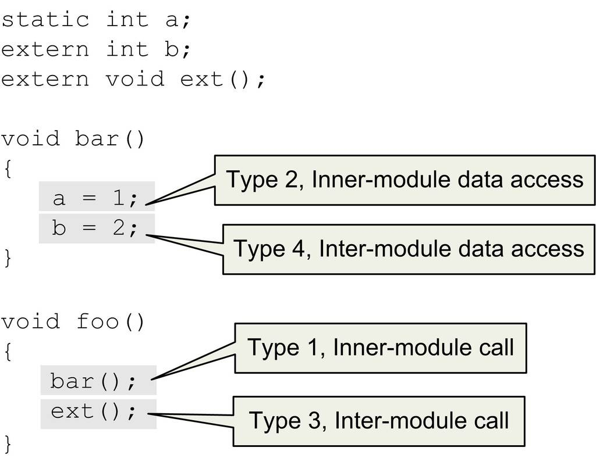
關於模組內部和模組外部
當編譯器在編譯pic.c時，它實際上並不能確定變數b和函式ext()是模組外部的還是模組內部的，因為它們有可能被定義在同一個共享物件的其他目的檔中。由於沒法確定，編譯器只能把它們都當作模組外部的函式和變數來處理。MSVC編譯器提供了__declspec(dllimport)編譯器擴充套件來表示一個符號是模組內部的還是模組外部的。
型別一 模組內部呼叫或跳轉
這4種情況中，第一種型別應該是最簡單的，那就是模組內部呼叫。因為被呼叫的函式與呼叫者都處於同一個模組，它們之間的相對位置是固定的，所以這種情況比較簡單。對於現代的系統來講，模組內部的跳轉、函式呼叫都可以是相對地址呼叫，或者是基於暫存器的相對呼叫，所以對於這種指令是不需要重定位的。比如上面例子中foo對bar的呼叫可能產生如下程式碼：
8048344 <bar>: 8048344: 55 push %ebp 8048345: 89 e5 mov %esp,%ebp 8048347: 5d pop %ebp 8048348: c3 ret 8048349 <foo>: ... 8048357: e8 e8 ff ff ff call 8048344 <bar> 804835c: b8 00 00 00 00 mov $0x0,%eax ...
foo中對bar的呼叫的那條指令實際上是一條相對地址呼叫指令，我們在第2部分已經介紹過相對位移呼叫指令的指令格式，相對偏移呼叫指令如圖7-5所示。
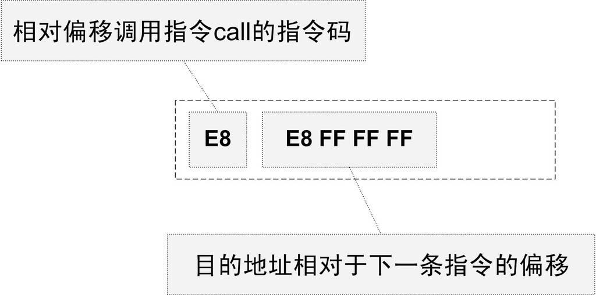
這條指令中的後4個位元組是目的地址相對於當前指令的下一條指令的偏移，即0xFFFFFFE8（Little-endian）。0xFFFFFFE8是-24的補碼形式，即bar的地址為0x804835c + (-24) = 0x8048344。那麼只要bar和foo的相對位置不變，這條指令是地址無關的。即無論模組被載入到哪個位置，這條指令都是有效的。這種相對地址的方式對於jmp指令也有效。
這樣看起來第一個模組內部呼叫或跳轉很容易解決，但實際上這種方式還有一定的問題，這裡存在一個叫做共享物件全域性符號介入（Global Symbol Interposition）問題，這個問題在後面關於“動態連結的實現”中還會詳細介紹。但在這裡，可以簡單地把它當作相對地址呼叫/跳轉。
型別二 模組內部資料訪問
接著來看看第二種型別，模組內部的資料訪問。很明顯，指令中不能直接包含資料的絕對地址，那麼唯一的辦法就是相對定址。我們知道，一個模組前面一般是若幹個頁的程式碼，後面緊跟著若幹個頁的資料，這些頁之間的相對位置是固定的，也就是說，任何一條指令與它需要訪問的模組內部資料之間的相對位置是固定的，那麼只需要相對於當前指令加上固定的偏移量就可以訪問模組內部資料了。現代的體係結構中，資料的相對定址往往沒有相對與當前指令地址（PC）的定址方式，所以ELF用了一個很巧妙的辦法來得到當前的PC值，然後再加上一個偏移量就可以達到訪問相應變數的目的了。得到PC值的方法很多，我們來看看最常用的一種，也是現在ELF的共享物件裡面用的一種方法：
0000044c <bar>: 44c: 55 push %ebp 44d: 89 e5 mov %esp,%ebp 44f: e8 40 00 00 00 call 494 <__i686.get_pc_thunk.cx> 454: 81 c1 8c 11 00 00 add $0x118c,%ecx 45a: c7 81 28 00 00 00 01 movl $0x1,0x28(%ecx) // a = 1 461: 00 00 00 464: 8b 81 f8 ff ff ff mov 0xfffffff8(%ecx),%eax 46a: c7 00 02 00 00 00 movl $0x2,(%eax) // b = 2 470: 5d pop %ebp 471: c3 ret 00000494 <__i686.get_pc_thunk.cx>: 494: 8b 0c 24 mov (%esp),%ecx 497: c3 ret
這是對上面的例子中的程式碼先編譯成共享物件然後反組譯的結果。用粗體表示的是bar()函式中訪問模組內部變數a的相應程式碼。從上面的指令中可以看到，它先呼叫了一個叫“__i686.get_pc_thunk.cx”的函式，這個函式的作用就是把返回地址的值放到ecx暫存器，即把call的下一條指令的地址放到ecx暫存器。
我們知道當處理器執行call指令以後，下一條指令的地址會被壓到棧頂，而esp暫存器就是始終指向棧頂的，那麼當“__i686.get_pc_thunk.cx”執行“mov (%esp),%ecx”的時候，返回地址就被賦值到ecx暫存器了。
接著執行一條add指令和一條mov指令，可以看到變數a的地址是add指令地址（儲存在ecx暫存器）加上兩個偏移量0x118c和0x28，即如果模組被載入到0x10000000這個地址的話，那麼變數a的實際地址將是0x10000000 + 0x454 + 0x118c + 0x28 = 0x10001608，這個計算過程我們可以從圖7-6中看到。
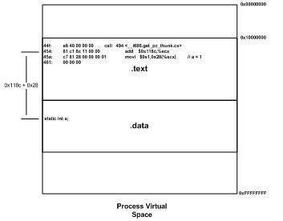
型別三 模組間資料訪問
模組間的資料訪問比模組內部稍微麻煩一點，因為模組間的資料訪問目標地址要等到載入時才決定，比如上面例子中的變數b，它被定義在其他模組中，並且該地址在載入時才能確定。我們前面提到要使得程式碼地址無關，基本的思想就是把跟地址相關的部分放到資料段裡面，很明顯，這些其他模組的全域性變數的地址是跟模組載入地址有關的。ELF的做法是在資料段裡面建立一個指向這些變數的指標陣列，也被稱為全域性偏移表（Global Offset Table，GOT），當程式碼需要引用該全域性變數時，可以透過GOT中相對應的項間接引用，它的基本機制如圖7-7所示。
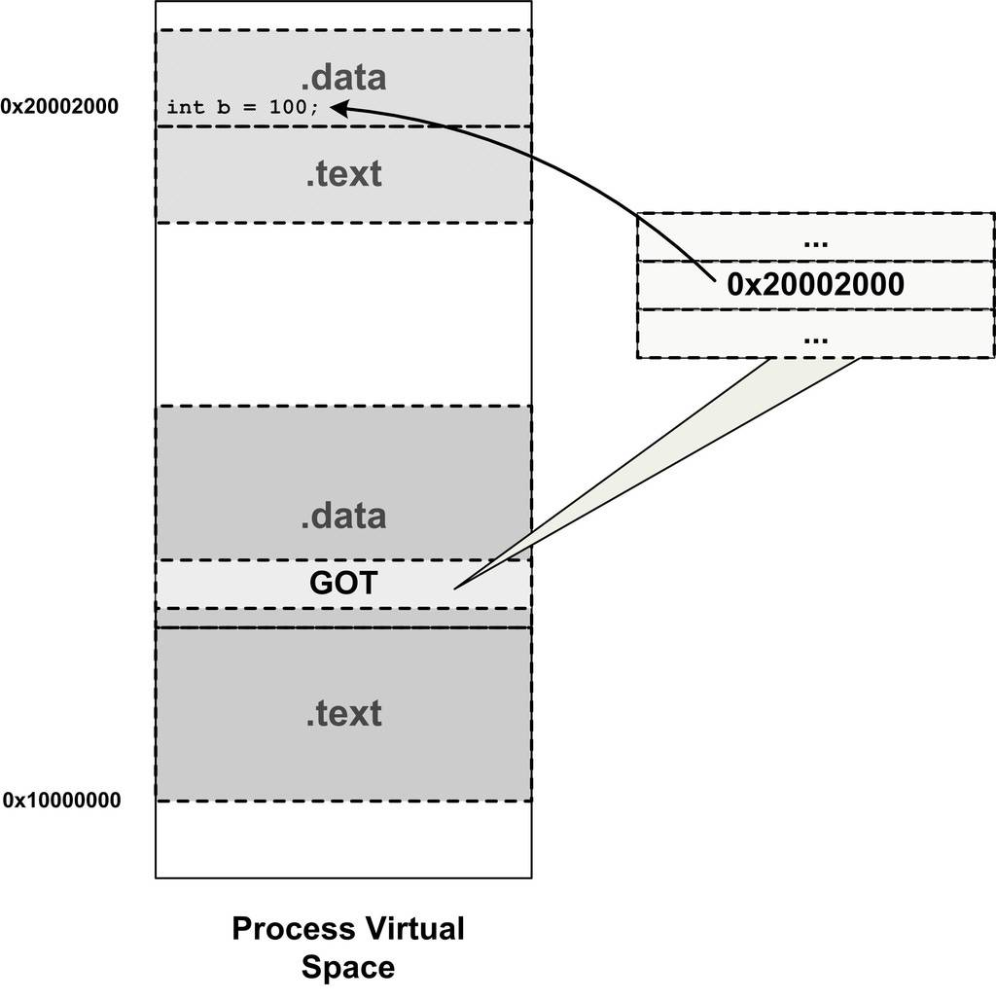
當指令中需要訪問變數b時，程式會先找到GOT，然後根據GOT中變數所對應的項找到變數的目標地址。每個變數都對應一個4個位元組的地址，連結器在載入模組的時候會查詢每個變數所在的地址，然後填充GOT中的各個項，以確保每個指標所指向的地址正確。由於GOT本身是放在資料段的，所以它可以在模組載入時被修改，並且每個程式都可以有獨立的副本，相互不受影響。
我們來看看GOT如何做到指令的地址無關性。從第二中型別的資料訪問我們瞭解到，模組在編譯時可以確定模組內部變數相對與當前指令的偏移，那麼我們也可以在編譯時確定GOT相對於當前指令的偏移。確定GOT的位置跟上面的訪問變數a的方法基本一樣，透過得到PC值然後加上一個偏移量，就可以得到GOT的位置。然後我們根據變數地址在GOT中的偏移就可以得到變數的地址，當然GOT中每個地址對應於哪個變數是由編譯器決定的，比如第一個地址對應變數b，第二個對應變數c等。
讓我們再回顧剛才函式bar()的反組合語言程式碼。為訪問變數b，我們的程式首先計算出變數b的地址在GOT中的位置，即0x10000000 + 0x454 + 0x118c + (-8) = 0x100015d8（0xfffffff8為-8的補碼表示），然後使用暫存器間接定址方式給變數b賦值2。
我們也可以使用objdump來檢視GOT的位置：
$ objdump -h pic.so
...
17 .got 00000010 000015d0 000015d0 000005d0 2**2
CONTENTS, ALLOC, LOAD, DATA
...
可以看到GOT在檔案中的偏移是0x15d0，我們再來看看pic.so的需要在動態連結時重定位項：
$ objdump -R pic.so ... DYNAMIC RELOCATION RECORDS OFFSET TYPE VALUE ... 000015d8 R_386_GLOB_DAT b ...
可以看到變數b的地址需要重定位，它位於0x15d8，也就是GOT中偏移8，相當於是GOT中的第三項（每四個位元組一項）。從上面重定位項中看到，變數b的地址的偏移為0x15d8，正好對應了我們前面透過指令計算出來的偏移值，即0x100015d8 – 0x10000000 = 0x15d8。
型別四 模組間呼叫、跳轉
對於模組間呼叫和跳轉，我們也可以採用上面型別四的方法來解決。與上面的型別有所不同的是，GOT中相應的項儲存的是目標函式的地址，當模組需要呼叫目標函式時，可以透過GOT中的項進行間接跳轉，基本的原理如圖7-8所示。
呼叫ext()函式的方法與上面訪問變數b的方法基本類似，先得到當前指令地址PC，然後加上一個偏移得到函式地址在GOT中的偏移，然後一個間接呼叫：
call 494 <__i686.get_pc_thunk.cx> add $0x118c,%ecx mov 0xfffffffc(%ecx),%eax call *(%eax)
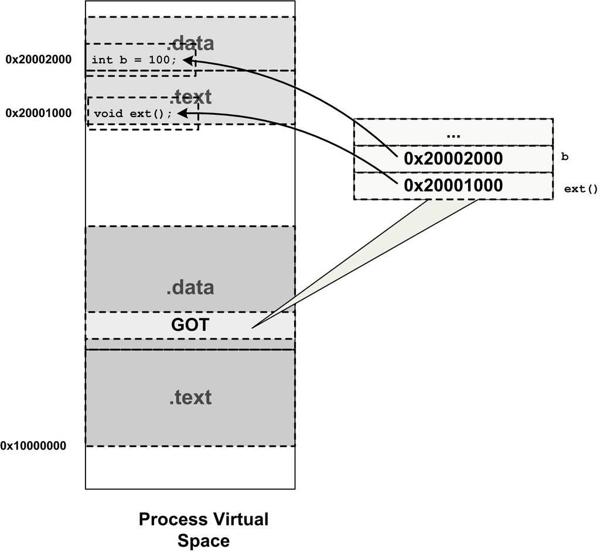
這種方法很簡單，但是存在一些效能問題，實際上ELF採用了一種更加複雜和精巧的方法，我們將在後面關於動態連結最佳化的章節中進行更為具體的介紹。
地址無關程式碼小結
曆經磨難，終於功德圓滿。4種地址引用方式在理論上都實現了地址無關性，我們將它們總結一下，如表7-1所示。
表7-1 …
-fpic和-fPIC
使用GCC產生地址無關程式碼很簡單，我們只需要使用“-fPIC”引數即可。實際上GCC還提供了另外一個類似的引數叫做“-fpic”，即“PIC”3個字母小寫，這兩個引數從功能上來講完全一樣，都是指示GCC產生地址無關程式碼。唯一的區別是，“-fPIC”產生的程式碼要大，而“-fpic”產生的程式碼相對較小，而且較快。那麼我們為什麼不使用“-fpic”而要使用“-fPIC”呢？原因是，由於地址無關程式碼都是跟硬體平台相關的，不同的平台有著不同的實現，“-fpic”在某些平台上會有一些限製，比如全域性符號的數量或者程式碼的長度等，而“-fPIC”則沒有這樣的限製。所以為了方便起見，絕大部分情況下我們都使用“-fPIC”引數來產生地址無關程式碼。
如何區分一個DSO是否為PIC
readelf –d foo.so | grep TEXTREL
如果上面的命令有任何輸出，那麼foo.so就不是PIC的，否則就是PIC的。PIC的DSO是不會包含任何程式碼段重定位表的，TEXTREL表示程式碼段重定位表地址。
PIC與PIE
地址無關程式碼技術除了可以用在共享物件上面，它也可以用於執行檔，一個以地址無關方式編譯的執行檔被稱作地址無關執行檔（PIE, Position-Independent Executable）。與GCC的“-fPIC”和“-fpic”引數類似，產生PIE的引數為“-fPIE”或“-fpie”。
7.3.4 共享模組的全域性變數問題
地址無關性問題就這麼解決了嗎？看起來好像是的。如果你還沒看出來一個小問題的話，最好回頭再仔細看看前面的4種地址引用方式的分類。發現了嗎？我們上面的情況中沒有包含定義在模組內部的全域性變數的情況。可能你的第一反應就是，這不是很簡單嗎？跟模組內部的靜態變數一樣處理不就可以了嗎？的確，粗略一看模組內部的全域性變數和靜態變數的地址都可以透過上面所列出的型別兩種方法來解決。但是有一種情況很特殊，我們來看看會產生什麼問題。
有一種很特殊的情況是，當一個模組引用了一個定義在共享物件的全域性變數的時候，比如一個共享物件定義了一個全域性變數global，而模組module.c中是這麼引用的：
extern int global;
int foo()
{
global = 1;
}
當編譯器編譯module.c時，它無法根據這個上下文判斷global是定義在同一個模組的的其他目的檔還是定義在另外一個共享物件之中，即無法判斷是否為跨模組間的呼叫。
假設module.c是程式執行檔的一部分，那麼在這種情況下，由於程式主模組的程式碼並不是地址無關程式碼，也就是說程式碼不會使用這種類似於PIC的機制，它引用這個全域性變數的方式跟普通資料訪問方式一樣，編譯器會產生這樣的程式碼：
movl $0x1,XXXXXXXX
XXXXXXXX就是global的地址。由於執行檔在執行時並不進行程式碼重定位，所以變數的地址必須在連結過程中確定下來。為了能夠使得連結過程正常進行，連結器會在建立執行檔時，在它的“.bss”段建立一個global變數的副本。那麼問題就很明顯了，現在global變數定義在原先的共享物件中，而在執行檔的“.bss”段還有一個副本。如果同一個變數同時存在於多個位置中，這在程式實際執行過程中肯定是不可行的。
於是解決的辦法只有一個，那就是所有的使用這個變數的指令都指向位於執行檔中的那個副本。ELF共用函式庫在編譯時，預設都把定義在模組內部的全域性變數當作定義在其他模組的全域性變數，也就是說當作前面的型別四，透過GOT來實現變數的訪問。當共享模組被載入時，如果某個全域性變數在執行檔中擁有副本，那麼動態連結器就會把GOT中的相應地址指向該副本，這樣該變數在執行時實際上最終就只有一個例項。如果變數在共享模組中被初始化，那麼動態連結器還需要將該初始化值複製到程式主模組中的變數副本；如果該全域性變數在程式主模組中沒有副本，那麼GOT中的相應地址就指向模組內部的該變數副本。
假設module.c是一個共享物件的一部分，那麼GCC編譯器在-fPIC的情況下，就會把對global的呼叫按照跨模組模式產生程式碼。原因也很簡單：編譯器無法確定對global的引用是跨模組的還是模組內部的。即使是模組內部的，即模組內部的全域性變數的引用，按照上面的結論，還是會產生跨模組程式碼，因為global可能被執行檔引用，從而使得共享模組中對global的引用要執行執行檔中的global副本。
Q&A
Q: 如果一個共享物件lib.so中定義了一個全域性變數G，而程式A和程式B都使用了lib.so，那麼當程式A改變這個全域性變數G的值時，程式B中的G會受到影響嗎？
A: 不會。因為當lib.so被兩個程式載入時，它的資料段部分在每個程式中都有獨立的副本，從這個角度看，共享物件中的全域性變數實際上和定義在程式內部的全域性變數沒什麼區別。任何一個程式訪問的只是自己的那個副本，而不會影響其他程式。那麼，如果我們把這個問題的條件改成同一個程式中的執行緒A和執行緒B，它們是否看得到對方對lib.so中的全域性變數G的修改呢？對於同一個程式的兩個執行緒來說，它們訪問的是同一個程式地址空間，也就是同一個lib.so的副本，所以它們對G的修改，對方都是看得到的。
那麼我們可不可以做到跟前面答案相反的情況呢？比如要求兩個程式共享一個共享物件的副本或要求兩個執行緒訪問全域性變數的不同副本，這兩種需求都是存在的，比如多個程式可以共享同一個全域性變數就可以用來實現程式間通訊；而多個執行緒訪問全域性變數的不同副本可以防止不同執行緒之間對全域性變數的幹擾，比如C語言執行庫的erron全域性變數。實際上這兩種需求都是有相應的解決方法的，多程式共享全域性變數又被叫做“共享資料段”，在介紹Windows DLL的時候會碰到它。而多個執行緒訪問不同的全域性變數副本又被叫做“執行緒私有儲存”（Thread Local Storage），我們在後面還會詳細介紹。
7.3.5 資料段地址無關性
透過上面的方法，我們能夠保證共享物件中的程式碼部分地址無關，但是資料部分是不是也有絕對地址引用的問題呢？讓我們來看看這樣一段程式碼：
static int a; static int* p = &a;
如果某個共享物件裡面有這樣一段程式碼的話，那麼指標p的地址就是一個絕對地址，它指向變數a，而變數a的地址會隨著共享物件的載入地址改變而改變。那麼有什麼辦法解決這個問題呢？
對於資料段來說，它在每個程式都有一份獨立的副本，所以並不擔心被程式改變。從這點來看，我們可以選擇載入時重定位的方法來解決資料段中絕對地址引用問題。對於共享物件來說，如果資料段中有絕對地址引用，那麼編譯器和連結器就會產生一個重定位表，這個重定位表裡面包含了“R_386_RELATIVE”型別的重定位入口，用於解決上述問題。當動態連結器載入共享物件時，如果發現該共享物件有這樣的重定位入口，那麼動態連結器就會對該共享物件進行重定位。
實際上，我們甚至可以讓程式碼段也使用這種載入時重定位的方法，而不使用地址無關程式碼。從前面的例子中我們看到，我們在編譯共享物件時使用了“-fPIC”引數，這個參數列示產生地址無關的程式碼段。如果我們不使用這個引數來產生共享物件又會怎麼樣呢？
$gcc –shared pic.c –o pic.so
上面這個命令就會產生一個不使用地址無關程式碼而使用載入時重定位的共享物件。但正如我們前面分析過的一樣，如果程式碼不是地址無關的，它就不能被多個程式之間共享，於是也就失去了節省記憶體的優點。但是載入時重定位的共享物件的執行速度要比使用地址無關程式碼的共享物件快，因為它省去了地址無關程式碼中每次訪問全域性資料和函式時需要做一次計算當前地址以及間接地址定址的過程。
對於執行檔來說，預設情況下，如果執行檔是動態連結的，那麼GCC會使用PIC的方法來產生執行檔的程式碼段部分，以便於不同的程式能夠共享程式碼段，節省記憶體。所以我們可以看到，動態連結的執行檔中存在“.got”這樣的段。
7.4 延遲繫結（PLT）
動態連結的確有很多優勢，比靜態連結要靈活得多，但它是以犧牲一部分效能為代價的。據統計ELF程式在靜態連結下要比動態函式庫稍微快點，大約為1%～5%，當然這取決於程式本身的特性及執行環境等。我們知道動態連結比靜態連結慢的主要原因是動態連結下對於全域性和靜態的資料訪問都要進行複雜的GOT定位，然後間接定址；對於模組間的呼叫也要先定位GOT，然後再進行間接跳轉，如此一來，程式的執行速度必定會減慢。另外一個減慢執行速度的原因是動態連結的連結工作在執行時完成，即程式開始執行時，動態連結器都要進行一次連結工作，正如我們上面提到的，動態連結器會尋找並載入所需要的共享物件，然後進行符號查詢地址重定位等工作，這些工作勢必減慢程式的啟動速度。這是影響動態連結效能的兩個主要問題，我們將在這一節介紹最佳化動態連結效能的一些方法。
延遲繫結實現
在動態連結下，程式模組之間包含了大量的函式引用（全域性變數往往比較少，因為大量的全域性變數會導致模組之間耦合度變大），所以在程式開始執行前，動態連結會耗費不少時間用於解決模組之間的函式引用的符號查詢以及重定位，這也是我們上面提到的減慢動態連結效能的第二個原因。不過可以想象，在一個程式執行過程中，可能很多函式在程式執行完時都不會被用到，比如一些錯誤處理函式或者是一些使用者很少用到的功能模組等，如果一開始就把所有函式都連結好實際上是一種浪費。所以ELF採用了一種叫做延遲繫結（Lazy Binding）的做法，基本的思想就是當函式第一次被用到時才進行繫結（符號查詢、重定位等），如果沒有用到則不進行繫結。所以程式開始執行時，模組間的函式呼叫都沒有進行繫結，而是需要用到時才由動態連結器來負責繫結。這樣的做法可以大大加快程式的啟動速度，特別有利於一些有大量函式引用和大量模組的程式。
ELF使用PLT（Procedure Linkage Table）的方法來實現，這種方法使用了一些很精巧的指令序列來完成。在開始詳細介紹PLT之前，我們先從動態連結器的角度設想一下：假設liba.so需要呼叫libc.so中的bar()函式，那麼當liba.so中第一次呼叫bar()時，這時候就需要呼叫動態連結器中的某個函式來完成地址繫結工作，我們假設這個函式叫做lookup()，那麼lookup()需要知道哪些必要的資訊才能完成這個函式地址繫結工作呢？我想答案很明顯，lookup()至少需要知道這個地址繫結發生在哪個模組，哪個函式？那麼我們可以假設lookup的原型為lookup（module, function），這兩個引數的值在我們這個例子中分別為liba.so和bar()。在Glibc中，我們這裡的lookup()函式真正的名字叫_dl_runtime_resolve()。
ELF使用PLT（Procedure Linkage Table）的方法來實現，這種方法使用了一些很精巧的指令序列來完成。在開始詳細介紹PLT之前，我們先從動態連結器的角度設想一下：假設liba.so需要呼叫libc.so中的bar()函式，那麼當liba.so中第一次呼叫bar()時，這時候就需要呼叫動態連結器中的某個函式來完成地址繫結工作，我們假設這個函式叫做lookup()，那麼lookup()需要知道哪些必要的資訊才能完成這個函式地址繫結工作呢？我想答案很明顯，lookup()至少需要知道這個地址繫結發生在哪個模組，哪個函式？那麼我們可以假設lookup的原型為lookup（module, function），這兩個引數的值在我們這個例子中分別為liba.so和bar()。在Glibc中，我們這裡的lookup()函式真正的名字叫_dl_runtime_resolve()。
當我們呼叫某個外部模組的函式時，如果按照通常的做法應該是透過GOT中相應的項進行間接跳轉。PLT為了實現延遲繫結，在這個過程中間又增加了一層間接跳轉。呼叫函式並不直接透過GOT跳轉，而是透過一個叫作PLT項的結構來進行跳轉。每個外部函式在PLT中都有一個相應的項，比如bar()函式在PLT中的項的地址我們稱之為bar@plt。讓我們來看看bar@plt的實現：
bar@plt: jmp *(bar@GOT) push n push moduleID jump _dl_runtime_resolve
bar@plt的第一條指令是一條透過GOT間接跳轉的指令。bar@GOT表示GOT中儲存bar()這個函式相應的項。如果連結器在初始化階段已經初始化該項，並且將bar()的地址填入該項，那麼這個跳轉指令的結果就是我們所期望的，跳轉到bar()，實現函式正確呼叫。但是為了實現延遲繫結，連結器在初始化階段並沒有將bar()的地址填入到該項，而是將上面程式碼中第二條指令“push n”的地址填入到bar@GOT中，這個步驟不需要查詢任何符號，所以代價很低。很明顯，第一條指令的效果是跳轉到第二條指令，相當於沒有進行任何操作。第二條指令將一個數字n壓入堆疊中，這個數字是bar這個符號引用在重定位表“.rel.plt”中的下標。接著又是一條push指令將模組的ID壓入到堆疊，然後跳轉到_dl_runtime_resolve。這實際上就是在實現我們前面提到的lookup(module, function)這個函式的呼叫：先將所需要決議符號的下標壓入堆疊，再將模組ID壓入堆疊，然後呼叫動態連結器的_dl_runtime_resolve()函式來完成符號解析和重定位工作。_dl_runtime_resolve()在進行一係列工作以後將bar()的真正地址填入到bar@GOT中。
一旦bar()這個函式被解析完畢，當我們再次呼叫bar@plt時，第一條jmp指令就能夠跳轉到真正的bar()函式中，bar()函式返回的時候會根據堆疊裡面儲存的EIP直接返回到呼叫者，而不會再繼續執行bar@plt中第二條指令開始的那段程式碼，那段程式碼只會在符號未被解析時執行一次。
上面我們描述的是PLT的基本原理，PLT真正的實現要比它的結構稍微複雜一些（見表7-9）。ELF將GOT拆分成了兩個表叫做“.got”和“.got.plt”。其中“.got”用來儲存全域性變數引用的地址，“.got.plt”用來儲存函式引用的地址，也就是說，所有對於外部函式的引用全部被分離出來放到了“.got.plt”中。另外“.got.plt”還有一個特殊的地方是它的前三項是有特殊意義的，分別含義如下：
第一項儲存的是“.dynamic”段的地址，這個段描述了本模組動態連結相關的資訊，我們在後面還會介紹“.dynamic”段。
第二項儲存的是本模組的ID。
第三項儲存的是_dl_runtime_resolve()的地址。
其中第二項和第三項由動態連結器在載入共享模組的時候負責將它們初始化。“.got.plt”的其餘項分別對應每個外部函式的引用。PLT的結構也與我們示例中的PLT稍有不同，為了減少程式碼的重複，ELF把上面例子中的最後兩條指令放到PLT中的第一項。並且規定每一項的長度是16個位元組，剛好用來存放3條指令，實際的PLT基本結構如圖7-9所示。
 圖7-9 GOT中的PLT資料結構 …
圖7-9 GOT中的PLT資料結構 …
實際的PLT基本結構程式碼如下：
PLT0: push *(GOT + 4) jump *(GOT + 8) ... bar@plt: jmp *(bar@GOT) push n jump PLT0
PLT在ELF檔案中以獨立的段存放，段名通常叫做“.plt”，因為它本身是一些地址無關的程式碼，所以可以跟程式碼段等一起合並成同一個可讀可執行的“Segment”被載入入記憶體。
7.5 動態連結相關結構
在瞭解了共享物件的絕對地址引用問題以後，我們基本上對動態連結的原理有了初步的瞭解，接下來的問題就是整個動態連結具體的實現過程了。動態連結在不同的系統上有不同的實現方式，ELF 的動態連結實現方式比PE稍微簡單一點，在這裡我們還是先介紹ELF的動態連結機制在Linux下的實現，最後我們會在專門的章節中介紹PE在Windows下的動態連結機制和它們的區別。
我們在前面的章節已經看到，動態連結情況下，執行檔的載入與靜態連結情況基本一樣。首先作業系統會讀取執行檔的頭部，檢查檔案的合法性，然後從頭部中的“Program Header”中讀取每個“Segment”的虛擬地址、檔案地址和屬性，並將它們對映到程式虛擬空間的相應位置，這些步驟跟前面的靜態連結情況下的載入基本無異。在靜態連結情況下，作業系統接著就可以把控制權轉交給執行檔的入口地址，然後程式開始執行，一切看起來非常直觀。
但是在動態連結情況下，作業系統還不能在載入完執行檔之後就把控制權交給執行檔，因為我們知道執行檔依賴於很多共享物件。這時候，執行檔裡對於很多外部符號的引用還處於無效地址的狀態，即還沒有跟相應的共享物件中的實際位置連結起來。所以在對映完執行檔之後，作業系統會先啟動一個動態連結器（Dynamic Linker）。
在Linux下，動態連結器ld.so實際上是一個共享物件，作業系統同樣透過對映的方式將它載入到程式的地址空間中。作業系統在載入完動態連結器之後，就將控制權交給動態連結器的入口地址（與執行檔一樣，共享物件也有入口地址）。當動態連結器得到控制權之後，它開始執行一係列自身的初始化操作，然後根據當前的環境引數，開始對執行檔進行動態連結工作。當所有動態連結工作完成以後，動態連結器會將控制權轉交到執行檔的入口地址，程式開始正式執行。
7.5.1 “.interp”段
那麼系統中哪個才是動態連結器呢，它的位置由誰決定？是不是所有的*NIX系統的動態連結器都位於/lib/ld.so呢？實際上，動態連結器的位置既不是由系統配置指定，也不是由環境引數決定，而是由ELF執行檔決定。在動態連結的ELF執行檔中，有一個專門的段叫做“.interp”段（“interp”是“interpreter”（直譯器）的縮寫）。如果我們使用objdump工具來檢視，可以看到“.interp”內容：
$ objdump -s a.out a.out: file format elf32-i386 Contents of section .interp: 8048114 2f6c6962 2f6c642d 6c696e75 782e736f /lib/ld-linux.so 8048124 2e3200 .2.
“.interp”的內容很簡單，裡面儲存的就是一個字串，這個字串就是執行檔所需要的動態連結器的路徑，在Linux下，執行檔所需要的動態連結器的路徑幾乎都是“/lib/ld-linux.so.2”，其他的*nix作業系統可能會有不同的路徑，我們在後面還會再介紹到各種環境下的動態連結器的路徑。在Linux的系統中，/lib/ld-linux.so.2通常是一個軟連結，比如在我的機器上，它指向/lib/ld-2.6.1.so，這個才是真正的動態連結器。在Linux中，作業系統在對執行檔的進行載入的時候，它會去尋找載入該執行檔所需要相應的動態連結器，即“.interp”段指定的路徑的共享物件。
動態連結器在Linux下是Glibc的一部分，也就是屬於系統庫級別的，它的版本號往往跟系統中的Glibc庫版本號是一樣的，比如我的系統中安裝的是Glibc 2.6.1，那麼相應的動態連結器也就是/lib/ld-2.6.1.so。當系統中的Glibc庫更新或者安裝其他版本的時候，/lib/ld-linux.so.2這個軟連結就會指向到新的動態連結器，而執行檔本身不需要修改“.interp”中的動態連結器路徑來適應系統的升級。
我們也可以用這個命令來檢視一個執行檔所需要的動態連結器的路徑，在Linux下，往往是如下結果：
$ readelf -l a.out | grep interpreter
[Requesting program interpreter: /lib/ld-linux.so.2]
而當我們在FreeBSD 4.6.2下執行這個命令時，結果是：
$ readelf -l a.out | grep interpreter
[Requesting program interpreter: /usr/libexec/ld-elf.so.1]
64位的Linux下的執行檔是：
$ readelf -l a.out | grep interpreter
[Requesting program interpreter: /lib64/ld-linux-x86-64.so.2]
7.5.2 “.dynamic”段
類似於“.interp”這樣的段，ELF中還有幾個段也是專門用於動態連結的，比如“.dynamic”段和“.dynsym”段等。要了解動態連結器如何完成連結過程，跟前面一樣，從瞭解ELF檔案中跟動態連結相關的結構入手將會是一個很好的途徑。ELF檔案中跟動態連結相關的段有好幾個，相互之間的關係也比較複雜，我們先從“.dynamic”段入手。
動態連結ELF中最重要的結構應該是“.dynamic”段，這個段裡面儲存了動態連結器所需要的基本資訊，比如依賴於哪些共享物件、動態連結符號表的位置、動態連結重定位表的位置、共享物件初始化程式碼的地址等。“.dynamic”段的結構很經典，就是我們已經碰到過的ELF中眼熟的結構陣列，結構定義在“elf.h”中：
typedef struct {
Elf32_Sword d_tag;
union {
Elf32_Word d_val;
Elf32_Addr d_ptr;
} d_un;
} Elf32_Dyn;
Elf32_Dyn結構由一個型別值加上一個附加的數值或指標，對於不同的型別，後面附加的數值或者指標有著不同的含義。我們這裡列舉幾個比較常見的型別值（這些值都是定義在“elf.h”裡面的宏），如表7-2所示。
 表7-2 …
表7-2 …
表7-2中只列出了一部分定義，還有一些不太常用的定義我們就暫且忽略，具體可以參考LSB手冊和elf.h的定義。從上面給出的這些定義來看，“.dynamic”段裡面儲存的資訊有點像ELF檔案頭，只是我們前面看到的ELF檔案頭中儲存的是靜態連結時相關的內容，比如靜態連結時用到的符號表、重定位表等，這裡換成了動態連結下所使用的相應資訊了。所以，“.dynamic”段可以看成是動態連結下ELF檔案的“檔案頭”。使用readelf工具可以檢視“.dynamic”段的內容：
$ readelf -d Lib.so Dynamic section at offset 0x4f4 contains 21 entries: Tag Type Name/Value 0x00000001 (NEEDED) Shared library: [libc.so.6] 0x0000000c (INIT) 0x310 0x0000000d (FINI) 0x4a4 0x00000004 (HASH) 0xb4 0x6ffffef5 (GNU_HASH) 0xf8 0x00000005 (STRTAB) 0x1f4 0x00000006 (SYMTAB) 0x134 0x0000000a (STRSZ) 139 (bytes) 0x0000000b (SYMENT) 16 (bytes) 0x00000003 (PLTGOT) 0x15c8 0x00000002 (PLTRELSZ) 32 (bytes) 0x00000014 (PLTREL) REL 0x00000017 (JMPREL) 0x2f0 0x00000011 (REL) 0x2c8 0x00000012 (RELSZ) 40 (bytes) 0x00000013 (RELENT) 8 (bytes) 0x6ffffffe (VERNEED) 0x298 0x6fffffff (VERNEEDNUM) 1 0x6ffffff0 (VERSYM) 0x280 0x6ffffffa (RELCOUNT) 2 0x00000000 (NULL) 0x0
另外Linux還提供了一個命令用來檢視一個程式主模組或一個共用函式庫依賴於哪些共用函式庫：
$ ldd Program1
linux-gate.so.1 => (0xffffe000)
./Lib.so (0xb7f62000)
libc.so.6 => /lib/tls/i686/cmov/libc.so.6 (0xb7e0d000)
/lib/ld-linux.so.2 (0xb7f66000)
這裡可以看到有個linux-gate.so.1的共享物件很特殊，它的載入地址很奇怪，是0xffffe000，這個地址是32位地址空間的末尾4 096位元組，屬於Linux核心地址空間。你在整個檔案系統中都搜尋不到這個檔案，因為它根本不存在於檔案系統中。它實際上是一個核心虛擬共享物件（Kernel Virtual DSO），這涉及到Linux的系統呼叫和核心，我們將在第4部分介紹linux-gate.so.1相關內容。
7.5.3 動態符號表
為了完成動態連結，最關鍵的還是所依賴的符號和相關檔案的資訊。我們知道在靜態連結中，有一個專門的段叫做符號表“.symtab”（Symbol Table），裡面儲存了所有關於該目的檔的符號的定義和引用。動態連結的符號表示實際上它跟靜態連結十分相似，比如前面例子中的Program1程式依賴於Lib.so，引用到了裡面的foobar()函式。那麼對於Program1來說，我們往往稱Program1匯入（Import）了foobar函式，foobar是Program1的匯入函式（Import Function）；而站在Lib.so的角度來看，它實際上定義了foobar()函式，並且提供給其他模組使用，我們往往稱Lib.so匯出（Export）了foobar()函式，foobar是Lib.so的匯出函式（Export Function）。把這種匯入匯出關係放到靜態連結的情形下，我們可以把它們看作普通的函式定義和引用。
為了表示動態連結這些模組之間的符號匯入匯出關係，ELF專門有一個叫做動態符號表（Dynamic Symbol Table）的段用來儲存這些資訊，這個段的段名通常叫做“.dynsym”（Dynamic Symbol）。與“.symtab”不同的是，“.dynsym”只儲存了與動態連結相關的符號，對於那些模組內部的符號，比如模組私有變數則不儲存。很多時候動態連結的模組同時擁有“.dynsym”和“.symtab”兩個表，“.symtab”中往往儲存了所有符號，包括“.dynsym”中的符號。
與“.symtab”類似，動態符號表也需要一些輔助的表，比如用於儲存符號名的字串表。靜態連結時叫做符號字串表“.strtab”（String Table），在這裡就是動態符號字串表“.dynstr”（Dynamic String Table）；由於動態連結下，我們需要在程式執行時查詢符號，為了加快符號的查詢過程，往往還有輔助的符號雜湊表（“.hash”）。我們可以用readelf工具來檢視ELF檔案的動態符號表及它的雜湊表：
$readelf -sD Lib.so
Symbol table for image:
Num Buc: Value Size Type Bind Vis Ndx Name
9 0: 00000310 0 FUNC GLOBAL DEFAULT 9 _init
7 0: 000015ec 0 NOTYPE GLOBAL DEFAULT ABS _edata
4 0: 00000000 685 FUNC GLOBAL DEFAULT UND sleep
2 0: 00000000 0 NOTYPE WEAK DEFAULT UND _Jv_RegisterClasses
1 0: 00000000 0 NOTYPE WEAK DEFAULT UND __gmon_start__
10 0: 0000042c 57 FUNC GLOBAL DEFAULT 11 foobar
6 1: 000015f0 0 NOTYPE GLOBAL DEFAULT ABS _end
11 1: 000004a4 0 FUNC GLOBAL DEFAULT 12 _fini
5 2: 00000000 245 FUNC WEAK DEFAULT UND __cxa_finalize
8 2: 000015ec 0 NOTYPE GLOBAL DEFAULT ABS __bss_start
3 2: 00000000 57 FUNC GLOBAL DEFAULT UND printf
Symbol table of `.gnu.hash' for image:
Num Buc: Value Size Type Bind Vis Ndx Name
6 0: 000015f0 0 NOTYPE GLOBAL DEFAULT ABS _end
7 0: 000015ec 0 NOTYPE GLOBAL DEFAULT ABS _edata
8 1: 000015ec 0 NOTYPE GLOBAL DEFAULT ABS __bss_start
9 1: 00000310 0 FUNC GLOBAL DEFAULT 9 _init
10 2: 0000042c 57 FUNC GLOBAL DEFAULT 11 foobar
11 2: 000004a4 0 FUNC GLOBAL DEFAULT 12 _fini
動態連結符號表的結構與靜態連結的符號表幾乎一樣，我們可以簡單地將匯入函式看作是對其他目的檔中函式的引用；把匯出函式看作是在本目的檔定義的函式就可以了。
7.5.4 動態連結重定位表
共享物件需要重定位的主要原因是匯入符號的存在。動態連結下，無論是執行檔或共享物件，一旦它依賴於其他共享物件，也就是說有匯入的符號時，那麼它的程式碼或資料中就會有對於匯入符號的引用。在編譯時這些匯入符號的地址未知，在靜態連結中，這些未知的地址引用在最終連結時被修正。但是在動態連結中，匯入符號的地址在執行時才確定，所以需要在執行時將這些匯入符號的引用修正，即需要重定位。
我們在前面的地址無關章節中也提到過，動態連結的執行檔使用的是PIC方法，但這不能改變它需要重定位的本質。對於動態連結來說，如果一個共享物件不是以PIC模式編譯的，那麼毫無疑問，它是需要在載入時被重定位的；如果一個共享物件是PIC模式編譯的，那麼它還需要在載入時進行重定位嗎？是的，PIC模式的共享物件也需要重定位。
對於使用PIC技術的執行檔或共享物件來說，雖然它們的程式碼段不需要重定位（因為地址無關），但是資料段還包含了絕對地址的引用，因為程式碼段中絕對地址相關的部分被分離了出來，變成了GOT，而GOT實際上是資料段的一部分。除了GOT以外，資料段還可能包含絕對地址引用，我們在前面的章節中已經舉例過了。
動態連結重定位相關結構
共享物件的重定位與我們在前面“靜態連結”中分析過的目的檔的重定位十分類似，唯一有區別的是目的檔的重定位是在靜態連結時完成的，而共享物件的重定位是在載入時完成的。在靜態連結中，目的檔裡面包含有專門用於表示重定位資訊的重定位表，比如“.rel.text”表示是程式碼段的重定位表，“.rel.data”是資料段的重定位表。
動態連結的檔案中，也有類似的重定位表分別叫做“.rel.dyn”和“.rel.plt”，它們分別相當於 “.rel.text”和“.rel.data”。“.rel.dyn”實際上是對資料引用的修正，它所修正的位置位於“.got”以及資料段；而“.rel.plt”是對函式引用的修正，它所修正的位置位於“.got.plt”。我們可以使用readelf來檢視一個動態連結的檔案的重定位表：
$ readelf -r Lib.so Relocation section '.rel.dyn' at offset 0x2c8 contains 5 entries: Offset Info Type Sym.Value Sym. Name 000015e4 00000008 R_386_RELATIVE 000015e8 00000008 R_386_RELATIVE 000015bc 00000106 R_386_GLOB_DAT 00000000 __gmon_start__ 000015c0 00000206 R_386_GLOB_DAT 00000000 _Jv_RegisterClasses 000015c4 00000506 R_386_GLOB_DAT 00000000 __cxa_finalize Relocation section '.rel.plt' at offset 0x2f0 contains 4 entries: Offset Info Type Sym.Value Sym. Name 000015d4 00000107 R_386_JUMP_SLOT 00000000 __gmon_start__ 000015d8 00000307 R_386_JUMP_SLOT 00000000 printf 000015dc 00000407 R_386_JUMP_SLOT 00000000 sleep 000015e0 00000507 R_386_JUMP_SLOT 00000000 __cxa_finalize $readelf -S Lib.so ... [19] .got PROGBITS 000015bc 0005bc 00000c 04 WA 0 0 4 [20] .got.plt PROGBITS 000015c8 0005c8 00001c 04 WA 0 0 4 [21] .data PROGBITS 000015e4 0005e4 000008 00 WA 0 0 4 ...
在靜態連結中我們已經碰到過兩種型別的重定位入口R_386_32和R_386_PC32，這裡可以看到幾種新的重定位入口型別：R_386_RELATIVE、R_386_GLOB_DAT和R_386_JUMP_SLOT。實際上這些不同的重定位型別表示重定位時有不同的地址計算方法，在前面的靜態連結中已經介紹過了R_386_32和R_386_PC32的地址計算方法，實際上它們已經是比較複雜的重定位型別了。這裡的R_386_RELATIVE、R_386_GLOB_DAT和R_386_JUMP_SLOT都是很簡單的重定位型別。我們先來看看R_386_GLOB_DAT和R_386_JUMP_SLOT，這兩個型別的重定位入口表示，被修正的位置只需要直接填入符號的地址即可。比如我們看printf這個重定位入口，它的型別為R_386_JUMP_SLOT，它的偏移為0x000015d8，它實際上位於“.got.plt”中。我們知道，“.got.plt”的前三項是被系統佔據的，從第四項開始才是真正存放匯入函式地址的地方。而第四項剛好是0x000015c8 + 4 * 3 = 0x000015d4，即“__gmon_start__”，第五項是“printf”，第六項是“sleep”，第七項是“__cxa_finalize”。所以Lib.so的“.got.plt”的結構如圖7-10所示。
 圖7-10 Lib.so的.got.plt結構 …
圖7-10 Lib.so的.got.plt結構 …
當動態連結器需要進行重定位時，它先查詢“printf”的地址，“printf”位於libc-2.6.1.so。假設連結器在全域性符號表裡面找到“printf”的地址為0x08801234，那麼連結器就會將這個地址填入到“.got.plt”中的偏移為0x000015d8的位置中去，從而實現了地址的重定位，即實現了動態連結最關鍵的一個步驟。
類似於R_386_JUMP_SLOT是對“.got.plt”的重定位，R_386_GLOB_DAT是對“.got”的重定位，它跟R_386_JUMP_SLOT一模一樣，在這裡不再詳細介紹了，有興趣的讀者可以自己分析“.rel.dyn”中3個R_386_GLOB_DAT與“.got”的關係，就能很快理解了。
稍微麻煩一點的是R_386_RELATIVE型別的重定位入口，這種型別的重定位實際上就是基址重置（Rebasing）。我們在前面已經分析過，共享物件的資料段是沒有辦法做到地址無關的，它可能會包含絕對地址的引用，對於這種絕對地址的引用，我們必須在載入時將其重定位。比如前面例子中，有一個全域性指標變數被初始化為一個靜態變數的地址：
static int a; static int* p = &a;
在編譯時，共享物件的地址是從0開始的，我們假設該靜態變數a相對於起始地址0的偏移為B，即p的值為B。一旦共享物件被載入到地址A，那麼實際上該變數a的地址為A+B，即p的值需要加上一個載入地址A。R_386_RELATIVE型別的重定位入口就是專門用來重定位指標變數p這種型別的，變數p在載入時需要加上一個載入地址值A，才是正確的結果。
那麼匯入函式的重定位入口是不是只會出現在“.rel.plt”，而不會出現在“.rel.dyn”呢？答案為否。如果某個ELF檔案是以PIC模式編譯的（動態連結的執行檔一般是PIC的），並呼叫了一個外部函式bar，則bar會出現在“.rel.plt ”中；而如果不是以PIC模式編譯，則bar將出現在“.rel.dyn”中。讓我們來看看不使用PIC的方法來編譯，重定位表的結果又會有什麼不一樣呢？
$gcc -shared Lib.c -o Lib.so $readelf -r Lib.so Relocation section '.rel.dyn' at offset 0x2c8 contains 8 entries: Offset Info Type Sym.Value Sym. Name 0000042c 00000008 R_386_RELATIVE 000015c4 00000008 R_386_RELATIVE 000015c8 00000008 R_386_RELATIVE 00000431 00000302 R_386_PC32 00000000 printf 0000043d 00000402 R_386_PC32 00000000 sleep 000015a4 00000106 R_386_GLOB_DAT 00000000 __gmon_start__ 000015a8 00000206 R_386_GLOB_DAT 00000000 _Jv_RegisterClasses 000015ac 00000506 R_386_GLOB_DAT 00000000 __cxa_finalize Relocation section '.rel.plt' at offset 0x308 contains 2 entries: Offset Info Type Sym.Value Sym. Name 000015bc 00000107 R_386_JUMP_SLOT 00000000 __gmon_start__ 000015c0 00000507 R_386_JUMP_SLOT 00000000 __cxa_finalize
可以看到Lib.c中的兩個匯入函式“printf”和“sleep”從“.rel.plt”到了“.rel.dyn”，並且型別也從R_386_JUMP_SLOT變成了R_386_PC32。
而R_386_RELATIVE型別多出了一個偏移為0x0000042c的入口，這個入口是什麼呢？透過對Lib.so的反組譯可以知道，這個入口是用來修正傳給printf的第一個引數，即我們的字串常量“Printing from Lib.so %d\n”的地址。為什麼這個字串常量的地址在PIC時不需要重定位而在非PIC時需要重定位呢？很明顯，PIC時，這個字串可以看作是普通的全域性變數，它的地址是可以透過PIC中的相對當前指令的位置加上一個固定偏移計算出來的；而在非PIC中，程式碼段不再使用這種相對於當前指令的PIC方法，而是採用絕對地址定址，所以它需要重定位。
7.5.5 動態連結時程式堆疊初始化資訊
站在動態連結器的角度看，當作業系統把控制權交給它的時候，它將開始做連結工作，那麼至少它需要知道關於執行檔和本程式的一些資訊，比如執行檔有幾個段（“Segment”）、每個段的屬性、程式的入口地址（因為動態連結器到時候需要把控制權交給執行檔）等。這些資訊往往由作業系統傳遞給動態連結器，儲存在程式的堆疊裡面。我們在前面提到過，程式初始化的時候，堆疊裡面儲存了關於程式執行環境和命令列引數等資訊。事實上，堆疊裡面還儲存了動態連結器所需要的一些輔助資訊陣列（Auxiliary Vector）。輔助資訊的格式也是一個結構陣列，它的結構被定義在“elf.h”：
typedef struct
{
uint32_t a_type;
union
{
uint32_t a_val;
} a_un;
} Elf32_auxv_t;
是不是已經對這種結構很熟悉了？沒錯，跟前面的“.dynamic”段裡面的結構如出一轍。先是一個32位的型別值，後面是一個32位的數值部分。你可能會很奇怪為什麼要用一個union把後面的32位數值包裝起來，事實上這個union沒什麼用，只是歷史遺留而已，可以當作不存在。我們摘錄幾個比較重要的型別值，這幾個型別值是比較常見的，而且是動態連結器在啟動時所需要的，如表7-3所示。
 表7-3 …
表7-3 …

介紹了這麼多關於輔助資訊陣列的結構，我們還沒看到它到底位於程式堆疊的哪個位置呢。事實上，它位於環境變數指標的後面。比如我們假設作業系統傳給動態連結器的輔助資訊有4個，分別是：
AT_PHDR，值為0x08048034，程式表頭位於0x08048034。
AT_PHENT，值為20，程式表頭中每個項的大小為20位元組。
AT_PHNUM，值為7，程式表頭共有7個項。
AT_ENTRY，0x08048320，程式入口地址為0x08048320。
那麼程式的初始化堆疊就如圖7-11所示。
我們可以寫一個小程式來把堆疊中初始化的資訊全部列印出來，程式原始碼如下：
#include <stdio.h>
#include <elf.h>
int main(int argc, char* argv[])
{
int* p = (int*)argv;
int i;
Elf32_auxv_t* aux;
printf("Argument count: %d\n", *(p-1));
for(i = 0; i < *(p-1); ++i) {
printf("Argument %d : %s\n", i, *(p + i) );
}
p += i;
p++; // skip 0
printf("Environment:\n");
while(*p) {
printf("%s\n",*p);
p++;
}
p++; // skip 0
printf("Auxiliary Vectors:\n");
aux = (Elf32_auxv_t*)p;
while(aux->a_type != AT_NULL) {
printf("Type: %02d Value: %x\n", aux->a_type, aux->a_un.a_val);
aux++;
}
return 0;
}
 圖7-11 程式初始化堆疊 …
圖7-11 程式初始化堆疊 …
上面的程式中，為什麼使用argv作為基準來定位各個結構的地址，而不是採用argc？提示：傳值和傳址。
7.6 動態連結的步驟和實現
有了前面諸多的鋪墊，我們終於要開始分析動態連結的實際連結步驟了。動態連結的步驟基本上分為3步：先是啟動動態連結器本身，然後載入所有需要的共享物件，最後是重定位和初始化。
7.6.1 動態連結器自舉
我們知道動態連結器本身也是一個共享物件，但是事實上它有一些特殊性。對於普通共享物件檔案來說，它的重定位工作由動態連結器來完成；它也可以依賴於其他共享物件，其中的被依賴的共享物件由動態連結器負責連結和載入。可是對於動態連結器本身來說，它的重定位工作由誰來完成？它是否可以依賴於其他的共享物件？
這是一個“雞生蛋，蛋生雞”的問題，為瞭解決這種無休止的迴圈，動態連結器這個“雞”必須有些特殊性。首先是，動態連結器本身不可以依賴於其他任何共享物件；其次是動態連結器本身所需要的全域性和靜態變數的重定位工作由它本身完成。對於第一個條件我們可以人為地控制，在編寫動態連結器時保證不使用任何系統庫、執行庫；對於第二個條件，動態連結器必須在啟動時有一段非常精巧的程式碼可以完成這項艱巨的工作而同時又不能用到全域性和靜態變數。這種具有一定限製條件的啟動程式碼往往被稱為自舉（Bootstrap）。
動態連結器入口地址即是自舉程式碼的入口，當作業系統將程式控制權交給動態連結器時，動態連結器的自舉程式碼即開始執行。自舉程式碼首先會找到它自己的GOT。而GOT的第一個入口儲存的即是“.dynamic”段的偏移地址，由此找到了動態聯結器本身的“.dynamic”段。透過“.dynamic”中的資訊，自舉程式碼便可以獲得動態連結器本身的重定位表和符號表等，從而得到動態連結器本身的重定位入口，先將它們全部重定位。從這一步開始，動態連結器程式碼中才可以開始使用自己的全域性變數和靜態變數。
實際上在動態連結器的自舉程式碼中，除了不可以使用全域性變數和靜態變數之外，甚至不能呼叫函式，即動態連結器本身的函式也不能呼叫。這是為什麼呢？其實我們在前面分析地址無關程式碼時已經提到過，實際上使用PIC模式編譯的共享物件，對於模組內部的函式呼叫也是採用跟模組外部函式呼叫一樣的方式，即使用GOT/PLT的方式，所以在GOT/PLT沒有被重定位之前，自舉程式碼不可以使用任何全域性變數，也不可以呼叫函式。下面這段注釋來自於Glibc 2.6.1原始碼中的elf/rtld.c：
/* Now life is sane; we can call functions and access global data.
Set up to use the operating system facilities, and find out from
the operating system's program loader where to find the program
header table in core. Put the rest of _dl_start into a separate
function, that way the compiler cannot put accesses to the GOT
before ELF_DYNAMIC_RELOCATE. */
這段注釋寫在自舉程式碼的末尾，表示自舉程式碼已經執行結束。“Now life is sane”，可以想象動態連結器的作者在此時大舒一口氣，終於完成自舉了，可以自由地呼叫各種函式並且隨意訪問全域性變數了。
7.6.2 載入共享物件
完成基本自舉以後，動態連結器將執行檔和連結器本身的符號表都合並到一個符號表當中，我們可以稱它為全域性符號表（Global Symbol Table）。然後連結器開始尋找執行檔所依賴的共享物件，我們前面提到過“.dynamic”段中，有一種型別的入口是DT_NEEDED，它所指出的是該執行檔（或共享物件）所依賴的共享物件。由此，連結器可以列出執行檔所需要的所有共享物件，並將這些共享物件的名字放入到一個載入集合中。然後連結器開始從集合裡取一個所需要的共享物件的名字，找到相應的檔案後開啟該檔案，讀取相應的ELF檔案頭和“.dynamic”段，然後將它相應的程式碼段和資料段對映到程式空間中。如果這個ELF共享物件還依賴於其他共享物件，那麼將所依賴的共享物件的名字放到載入集合中。如此迴圈直到所有依賴的共享物件都被載入進來為止，當然連結器可以有不同的載入順序，如果我們把依賴關係看作一個圖的話，那麼這個載入過程就是一個圖的遍曆過程，連結器可能會使用深度優先或者廣度優先或者其他的順序來遍曆整個圖，這取決於連結器，比較常見的演算法一般都是廣度優先的。
當一個新的共享物件被載入進來的時候，它的符號表會被合並到全域性符號表中，所以當所有的共享物件都被載入進來的時候，全域性符號表裡面將包含程式中所有的動態連結所需要的符號。
符號的優先順序
在動態連結器按照各個模組之間的依賴關係，對它們進行載入並且將它們的符號並入到全域性符號表時，會不會有這麼一種情況發生，那就是有可能兩個不同的模組定義了同一個符號？讓我們來看看這樣一個例子：共有4個共享物件a1.so、a2.so、b1.so和b2.so，它們的原始碼檔案分別為a1.c、a2.c、b1.c和b2.c：
/* a1.c */
#include <stdio.h>
void a()
{
printf("a1.c\n");
}
/* a2.c */
#include <stdio.h>
void a()
{
printf("a2.c\n");
}
/* b1.c */
void a();
void b1()
{
a();
}
/* b2.c */
void a();
void b2()
{
a();
}
可以看到a1.c和a2.c中都定義了名字為“a”的函式。那麼由於b1.c和b2.c都用到了外部函式“a”，但由於原始碼中沒有指定依賴於哪個共享物件中的函式“a”，所以我們在編譯時指定依賴關係。我們假設b1.so依賴於a1.so，b2.so依賴於a2.so，將b1.so與a1.so進行連結，b2.so與a2.so進行連結：
$ gcc -fPIC -shared a1.c -o a1.so
$ gcc -fPIC -shared a2.c -o a2.so
$ gcc -fPIC -shared b1.c a1.so -o b1.so
$ gcc -fPIC -shared b2.c a2.so -o b2.so
$ ldd b1.so
linux-gate.so.1 => (0xffffe000)
a1.so => not found
libc.so.6 => /lib/tls/i686/cmov/libc.so.6 (0xb7e86000)
/lib/ld-linux.so.2 (0x80000000)
$ldd b2.so
linux-gate.so.1 => (0xffffe000)
a2.so => not found
libc.so.6 => /lib/tls/i686/cmov/libc.so.6 (0xb7e17000)
/lib/ld-linux.so.2 (0x80000000)
那麼當有程式同時使用b1.c中的函式b1和b2.c中的函式b2會怎麼樣呢？比如有程式main.c：
/* main.c */
#include <stdio.h>
void b1();
void b2();
int main()
{
b1();
b2();
return 0;
}
/* main.c */
#include <stdio.h>
void b1();
void b2();
int main()
{
b1();
b2();
return 0;
}
然後我們將main.c編譯成執行檔並且執行：
$gcc main.c b1.so b2.so -o main -Xlinker -rpath ./ ./main a1.c a1.c
“-XLinker –rpath ./”表示連結器在當前路徑尋找共享物件，否則連結器會報無法找到a1.so和a2.so錯誤
很明顯，main依賴於b1.so和b2.so；b1.so依賴於a1.so；b2.so依賴於a2.so，所以當動態連結器對main程式進行動態連結時，b1.so、b2.so、a1.so和a2.so都會被載入到程式的地址空間，並且它們中的符號都會被並入到全域性符號表，透過檢視程式的地址空間資訊可看到：
$ cat /proc/14831/maps 08048000-08049000 r-xp 00000000 08:01 1344643 ./main 08049000-0804a000 rwxp 00000000 08:01 1344643 ./main b7e83000-b7e84000 rwxp b7e83000 00:00 0 b7e84000-b7e85000 r-xp 00000000 08:01 1343481 ./a2.so b7e85000-b7e86000 rwxp 00000000 08:01 1343481 ./a2.so b7e86000-b7e87000 r-xp 00000000 08:01 1343328 ./a1.so b7e87000-b7e88000 rwxp 00000000 08:01 1343328 ./a1.so b7e88000-b7fcc000 r-xp 00000000 08:01 1488993 /lib/tls/i686/cmov/libc-2.6.1.so b7fcc000-b7fcd000 r-xp 00143000 08:01 1488993 /lib/tls/i686/cmov/libc-2.6.1.so b7fcd000-b7fcf000 rwxp 00144000 08:01 1488993 /lib/tls/i686/cmov/libc-2.6.1.so b7fcf000-b7fd3000 rwxp b7fcf000 00:00 0 b7fde000-b7fdf000 r-xp 00000000 08:01 1344641 ./b2.so b7fdf000-b7fe0000 rwxp 00000000 08:01 1344641 ./b2.so b7fe0000-b7fe1000 r-xp 00000000 08:01 1344637 ./b1.so b7fe1000-b7fe2000 rwxp 00000000 08:01 1344637 ./b1.so b7fe2000-b7fe4000 rwxp b7fe2000 00:00 0 b7fe4000-b7ffe000 r-xp 00000000 08:01 1455332 /lib/ld-2.6.1.so b7ffe000-b8000000 rwxp 00019000 08:01 1455332 /lib/ld-2.6.1.so bfdd2000-bfde7000 rw-p bfdd2000 00:00 0 [stack] ffffe000-fffff000 r-xp 00000000 00:00 0 [vdso]
這4個共享物件的確都被載入進來了，那a1.so中的函式a和a2.so中的函式a是不是衝突了呢？為什麼main的輸出結果是兩個“a1.c”呢？也就是說a2.so中的函式a似乎被忽略了。這種一個共享物件裡面的全域性符號被另一個共享物件的同名全域性符號覆蓋的現象又被稱為共享物件全域性符號介入（Global Symbol Interpose）。
關於全域性符號介入這個問題，實際上Linux下的動態連結器是這樣處理的：它定義了一個規則，那就是當一個符號需要被加入全域性符號表時，如果相同的符號名已經存在，則後加入的符號被忽略。從動態連結器的載入順序可以看到，它是按照廣度優先的順序進行載入的，首先是main，然後是b1.so、b2.so、a1.so，最後是a2.so。當a2.so中的函式a要被加入全域性符號表時，先前載入a1.so時，a1.so中的函式a已經存在於全域性符號表，那麼a2.so中的函式a只能被忽略。所以整個程式中，所有對於符合“a”的引用都會被解析到a1.so中的函式a，這也是為什麼main列印出的結果是兩個“a1.c”而不是理想中的“a1.c”和“a2.c”。
由於存在這種重名符號被直接忽略的問題，當程式使用大量共享物件時應該非常小心符號的重名問題，如果兩個符號重名又執行不同的功能，那麼程式執行時可能會將所有該符號名的引用解析到第一個被加入全域性符號表的使用該符號名的符號，從而導致程式莫名其妙的錯誤。
全域性符號介入與地址無關程式碼
前面介紹地址無關程式碼時，對於第一類模組內部呼叫或跳轉的處理時，我們簡單地將其當作是相對地址呼叫/跳轉。但實際上這個問題比想象中要複雜，結合全域性符號介入，關於呼叫方式的分類的解釋會更加清楚。還是拿前面“pic.c”的例子來看，由於可能存在全域性符號介入的問題，foo函式對於bar的呼叫不能夠採用第一類模組內部呼叫的方法，因為一旦bar函式由於全域性符號介入被其他模組中的同名函式覆蓋，那麼foo如果採用相對地址呼叫的話，那個相對地址部分就需要重定位，這又與共享物件的地址無關性矛盾。所以對於bar()函式的呼叫，編譯器只能採用第三種，即當作模組外部符號處理，bar()函式被覆蓋，動態連結器只需要重定位“.got.plt”，不影響共享物件的程式碼段。
為了提高模組內部函式呼叫的效率，有一個辦法是把bar()函式變成編譯單元私有函式，即使用“static”關鍵字定義bar()函式，這種情況下，編譯器要確定bar()函式不被其他模組覆蓋，就可以使用第一類的方法，即模組內部呼叫指令，可以加快函式的呼叫速度。
7.6.3 重定位和初始化
當上面的步驟完成之後，連結器開始重新遍曆執行檔和每個共享物件的重定位表，將它們的GOT/PLT中的每個需要重定位的位置進行修正。因為此時動態連結器已經擁有了程式的全域性符號表，所以這個修正過程也顯得比較容易，跟我們前面提到的地址重定位的原理基本相同。在前面介紹動態連結下的重定位表時，我們已經碰到過幾種重定位型別，每種重定位入口地址的計算方式我們在這裡就不再重複介紹了。
重定位完成之後，如果某個共享物件有“.init”段，那麼動態連結器會執行“.init”段中的程式碼，用以實現共享物件特有的初始化過程，比如最常見的，共享物件中的C++的全域性/靜態物件的構造就需要透過“.init”來初始化。相應地，共享物件中還可能有“.finit”段，當程式退出時會執行“.finit”段中的程式碼，可以用來實現類似C++全域性物件析構之類的操作。
如果程式的執行檔也有“.init”段，那麼動態連結器不會執行它，因為執行檔中的“.init”段和“.finit”段由程式初始化部分程式碼負責執行，我們將在後面的“庫”這一部分詳細介紹程式初始化部分。
當完成了重定位和初始化之後，所有的準備工作就宣告完成了，所需要的共享物件也都已經載入並且連結完成了，這時候動態連結器就如釋重負，將程式的控制權轉交給程式的入口並且開始執行。
7.6.4 Linux動態連結器實現
在前面分析Linux下程式的載入時，已經介紹了一個透過execve()系統呼叫被載入到程式的地址空間的程式，以及核心如何處理執行檔。核心在載入完ELF執行檔以後就返回到使用者空間，將控制權交給程式的入口。對於不同連結形式的ELF執行檔，這個程式的入口是有區別的。對於靜態連結的執行檔來說，程式的入口就是ELF檔案頭裡面的e_entry指定的入口；對於動態連結的執行檔來說，如果這時候把控制權交給e_entry指定的入口地址，那麼肯定是不行的，因為執行檔所依賴的共用函式庫還沒有被載入，也沒有進行動態連結。所以對於動態連結的執行檔，核心會分析它的動態連結器地址（在“.interp”段），將動態連結器對映至程式地址空間，然後把控制權交給動態連結器。
Linux動態連結器是個很有意思的東西，它本身是一個共享物件，它的路徑是/lib/ld-linux.so.2，這實際上是個軟連結，它指向/lib/ld-x.y.z.so，這個才是真正的動態聯結器檔案。共享物件其實也是ELF檔案，它也有跟執行檔一樣的ELF檔案頭（包括e_entry、段表等）。動態連結器是個非常特殊的共享物件，它不僅是個共享物件，還是個可執行的程式，可以直接在命令列下面執行：
$ /lib/ld-linux.so.2
Usage: ld.so [OPTION]... EXECUTABLE-FILE [ARGS-FOR-PROGRAM...]
You have invoked `ld.so', the helper program for shared library executables.
This program usually lives in the file `/lib/ld.so', and special directives
in executable files using ELF shared libraries tell the system's program
loader to load the helper program from this file. This helper program loads
the shared libraries needed by the program executable, prepares the program
to run, and runs it. You may invoke this helper program directly from the
command line to load and run an ELF executable file; this is like executing
that file itself, but always uses this helper program from the file you
specified, instead of the helper program file specified in the executable
file you run. This is mostly of use for maintainers to test new versions
of this helper program; chances are you did not intend to run this program.
--list list all dependencies and how they are resolved
--verify verify that given object really is a dynamically
linked object we can handle
--library-path PATH use given PATH instead of content of the environment
variable LD_LIBRARY_PATH
--inhibit-rpath LIST ignore RUNPATH and RPATH information in object names
in LIST
其實Linux的核心在執行execve()時不關心目標ELF檔案是否可執行（檔案頭e_type是ET_EXEC還是ET_DYN），它只是簡單按照程式頭表裡面的描述對檔案進行載入然後把控制權轉交給ELF入口地址（沒有“.interp”就是ELF檔案的e_entry；如果有“.interp”的話就是動態連結器的e_entry）。這樣我們就很好理解為什麼動態連結器本身可以作為可執行程式執行，這也從一個側面證明瞭共用函式庫和執行檔實際上沒什麼區別，除了檔案頭的標誌位和副檔名有所不同之外，其他都是一樣的。Windows系統中的EXE和DLL也是類似的區別，DLL也可以被當作程式來執行，Windows提供了一個叫做rundll32.exe的工具可以把一個DLL當作執行檔執行。
其實Linux的核心在執行execve()時不關心目標ELF檔案是否可執行（檔案頭e_type是ET_EXEC還是ET_DYN），它只是簡單按照程式頭表裡面的描述對檔案進行載入然後把控制權轉交給ELF入口地址（沒有“.interp”就是ELF檔案的e_entry；如果有“.interp”的話就是動態連結器的e_entry）。這樣我們就很好理解為什麼動態連結器本身可以作為可執行程式執行，這也從一個側面證明瞭共用函式庫和執行檔實際上沒什麼區別，除了檔案頭的標誌位和副檔名有所不同之外，其他都是一樣的。Windows系統中的EXE和DLL也是類似的區別，DLL也可以被當作程式來執行，Windows提供了一個叫做rundll32.exe的工具可以把一個DLL當作執行檔執行。
Linux的ELF動態連結器是Glibc的一部分，它的原始碼位於Glibc的原始碼的elf目錄下面，它的實際入口地址位於sysdeps/i386/dl-manchine.h中的_start（普通程式的入口地址_start()在sysdeps/i386/elf/start.S，本書的第4部分還會詳細分析）。
_start呼叫位於elf/rtld.c的_dl_start()函式。_dl_start()函式首先對ld.so（以下簡稱ld-x.y.z.so為ld.so）進行重定位，因為ld.so自己就是動態連結器，沒有人幫它做重定位工作，所以它只好自己來，美其名曰“自舉”。自舉的過程需要十分的小心謹慎，因為有很多限製，這個我們在前面已經介紹過了。完成自舉之後就可以呼叫其他函式並訪問全域性變數了。呼叫_dl_start_final，收集一些基本的執行數值，進入_dl_sysdep_start，這個函式進行一些平台相關的處理之後就進入了_dl_main，這就是真正意義上的動態連結器的主函式了。_dl_main在一開始會進行一個判斷：
if (*user_entry == (ElfW(Addr)) ENTRY_POINT)
{
/* Ho ho. We are not the program interpreter! We are the program
itself! This means someone ran ld.so as a command. Well, that
might be convenient to do sometimes. We support it by
interpreting the args like this:
ld.so PROGRAM ARGS...
The first argument is the name of a file containing an ELF
executable we will load and run with the following arguments.
To simplify life here, PROGRAM is searched for using the
normal rules for shared objects, rather than $PATH or anything
like that. We just load it and use its entry point; we don't
pay attention to its PT_INTERP command (we are the interpreter
ourselves). This is an easy way to test a new ld.so before
installing it. */
…
很明顯，如果指定的使用者入口地址是動態連結器本身，那麼說明動態連結器是被當作執行檔在執行。在這種情況下，動態連結器就會解析執行時的引數，並且進行相應的處理。_dl_main本身非常的長，主要的工作就是前面提到的對程式所依賴的共享物件進行載入、符號解析和重定位，我們在這裡就不再詳細展開了，因為它的實現細節又是一個非常大的話題。
關於動態連結器本身的細節實現雖然不再展開，但是作為一個非常有特點的，也很特殊的共享物件，關於動態連結器的實現的幾個問題還是很值得思考的：
1. 動態連結器本身是動態連結的還是靜態連結的？
動態連結器本身應該是靜態連結的，它不能依賴於其他共享物件，動態連結器本身是用來幫助其他ELF檔案解決共享物件依賴問題的，如果它也依賴於其他共享物件，那麼誰來幫它解決依賴問題？所以它本身必須不依賴於其他共享物件。這一點可以使用ldd來判斷：
$ ldd /lib/ld-linux.so.2
statically linked
2. 動態連結器本身必須是PIC的嗎？
是不是PIC對於動態連結器來說並不關鍵，動態連結器可以是PIC的也可以不是，但往往使用PIC會更加簡單一些。一方面，如果不是PIC的話，會使得程式碼段無法共享，浪費記憶體；另一方面也會使ld.so本身初始化更加複雜，因為自舉時還需要對程式碼段進行重定位。實際上的ld-linux.so.2是PIC的。
3. 動態連結器可以被當作執行檔執行，那麼的載入地址應該是多少？
ld.so的載入地址跟一般的共享物件沒區別，即為0x00000000。這個載入地址是一個無效的載入地址，作為一個共用函式庫，核心在載入它時會為其選擇一個合適的載入地址。
7.7 顯式執行時連結
支援動態連結的系統往往都支援一種更加靈活的模組載入方式，叫做顯式執行時連結（Explicit Run-time Linking），有時候也叫做執行時載入。也就是讓程式自己在執行時控制載入指定的模組，並且可以在不需要該模組時將其解除安裝。從前面我們瞭解到的來看，如果動態連結器可以在執行時將共享模組載入進記憶體並且可以進行重定位等操作，那麼這種執行時載入在理論上也是很容易實現的。而且一般的共享物件不需要進行任何修改就可以進行執行時載入，這種共享物件往往被叫做動態載入庫（Dynamic Loading Library），其實本質上它跟一般的共享物件沒什麼區別，只是程式開發者使用它的角度不同。
這種執行時載入使得程式的模組組織變得很靈活，可以用來實現一些諸如外掛、驅動等功能。當程式需要用到某個外掛或者驅動的時候，才將相應的模組載入進來，而不需要從一開始就將他們全部載入進來，從而減少了程式啟動時間和記憶體使用。並且程式可以在執行的時候重新載入某個模組，這樣使得程式本身不必重新啟動而實現模組的增加、刪除、更新等，這對於很多需要長期執行的程式來說是很大的優勢。最常見的例子是Web伺服器程式，對於Web伺服器程式來說，它需要根據配置來選擇不同的指令碼直譯器、資料庫連線驅動等，對於不同的指令碼直譯器分別做成一個獨立的模組，當Web伺服器需要某種指令碼直譯器的時候可以將其載入進來；這對於資料庫連線的驅動程式也是一樣的原理。另外對於一個可靠的Web伺服器來說，長期的執行是必要的保證，如果我們需要增加某種指令碼直譯器，或者某個指令碼直譯器模組需要升級，則可以通知Web伺服器程式重新載入該共享模組以實現相應的目的。
在Linux中，從檔案本身的格式上來看，動態函式庫實際上跟一般的共享物件沒有區別，正如我們前面討論過的。主要的區別是共享物件是由動態連結器在程式啟動之前負責載入和連結的，這一係列步驟都由動態聯結器自動完成，對於程式本身是透明的；而動態函式庫的載入則是透過一係列由動態連結器提供的API，具體地講共有4個函式：開啟動態函式庫（dlopen）、查詢符號（dlsym）、錯誤處理（dlerror）以及關閉動態函式庫（dlclose），程式可以透過這幾個API對動態函式庫進行操作。這幾個API的實現是在/lib/libdl.so.2裡面，它們的宣告和相關常量被定義在系統標準標頭檔<dlfcn.h>。我們先來看看這幾個函式的具體意義，然後再演示一個很有意思的小程式。
7.7.1 dlopen()
dlopen() 函數用來打開一個動態庫，並將其加載到進程的地址空間，完成初始化過程，它的C原型定義為：
第一個引數是被載入動態函式庫的路徑，如果這個路徑是絕對路徑（以“/”開始的路徑），則該函式將會嚐試直接開啟該動態函式庫；如果是相對路徑，那麼dlopen()會嚐試在以一定的順序去查詢該動態函式庫檔案：
（1）查詢有環境變數LD_LIBRARY_PATH指定的一係列目錄（我們在後面會詳細介紹LD_LIBRARY_PATH環境變數）。
（2）查詢由/etc/ld.so.cache裡面所指定的共用函式庫路徑。
（3）/lib、/usr/lib 注意：這個查詢順序與舊的a.out載入器的順序剛好相反，舊的a.out的載入器在載入共用函式庫的時候會先查詢/usr/lib，然後是/lib。
當然，這在理論上不應該成為一個問題，因為所有的庫都應該只存在於某個目錄中，而不應該在多個目錄有不同的副本，這將會導致系統變得極為不可靠。
很有意思的是，如果我們將filename這個引數設定為0，那麼dlopen返回的將是全域性符號表的控制代碼，也就是說我們可以在執行時找到全域性符號表裡面的任何一個符號，並且可以執行它們，這有些類似高階語言反射（Reflection）的特性。全域性符號表包括了程式的執行檔本身、被動態連結器載入到程式中的所有共享模組以及在執行時透過dlopen開啟並且使用了RTLD_GLOBAL方式的模組中的符號。
第二個引數flag表示函式符號的解析方式，常量RTLD_LAZY表示使用延遲繫結，當函式第一次被用到時才進行繫結，即PLT機制；而RTLD_NOW表示當模組被載入時即完成所有的函式繫結工作，如果有任何未定義的符號引用的繫結工作沒法完成，那麼dlopen()就返回錯誤。上面的兩種繫結方式必須選其一。另外還有一個常量RTLD_GLOBAL可以跟上面的兩者中任意一個一起使用（透過常量的“或”操作），它表示將被載入的模組的全域性符號合並到程式的全域性符號表中，使得以後載入的模組可以使用這些符號。在除錯程式的時候我們可以使用RTLD_NOW作為載入引數，因為如果模組載入時有任何符號未被繫結的話，我們可以使用dlerror()立即捕獲到相應的錯誤資訊；而如果使用RTLD_LAZY的話，這種符號未繫結的錯誤會在載入後發生，則難以捕獲。當然，使用RTLD_NOW會導致載入動態函式庫的速度變慢。
dlopen的返回值是被載入的模組的控制代碼，這個控制代碼在後面使用dlsym或者dlclose時需要用到。如果載入模組失敗，則返回NULL。如果模組已經透過dlopen被載入過了，那麼返回的是同一個控制代碼。另外如果被載入的模組之間有依賴關係，比如模組A依賴與模組B，那麼程式設計師需要手工載入被依賴的模組，比如先載入B，再載入A。
事實上dlopen還會在載入模組時執行模組中初始化部分的程式碼，我們前面提到過，動態連結器在載入模組時，會執行“.init”段的程式碼，用以完成模組的初始化工作，dlopen的載入過程基本跟動態連結器一致，在完成載入、對映和重定位以後，就會執行“.init”段的程式碼然後返回。
7.7.2 dlsym()
dlsym函數基本上是運行時裝載的核心部分，我們可以通過這個函數找到所需要的符號。它的定義如下：
void * dlsym(void *handle, char *symbol);定義非常簡潔，兩個參數，第一個參數是由dlopen()返回的動態函式庫的控制代碼；第二個引數即所要查詢的符號的名字，一個以“\0”結尾的C字串。如果dlsym()找到了相應的符號，則返回該符號的值；沒有找到相應的符號，則返回NULL。dlsym()返回的值對於不同型別的符號，意義是不同的。如果查詢的符號是個函式，那麼它返回函式的地址；如果是個變數，它返回變數的地址；如果這個符號是個常量，那麼它返回的是該常量的值。這裡有一個問題是：如果常量的值剛好是NULL或者0呢，我們如何判斷dlsym()是否找到了該符號呢？這就要用到我們下面介紹的dlerror()函式了。如果符號找到了，那麼dlerror()返回NULL，如果沒找到，dlerror()就會返回相應的錯誤資訊。
符號不僅僅是函式和變數，有時還是常量，比如表示編譯單元檔名的符號等，這一般由編譯器和連結器產生，而且對外不可見，但它們的確存在於模組的符號表中。dlsym()是可以查詢到這些符號的，我們也可以透過“objdump –t”來檢視符號表，常量在符號表裡面的型別是“*ABS*”。
符號優先順序
前面在介紹動態連結實現時，我們已經碰到過許多共享模組中符號名衝突的問題，結論是當多個同名符號衝突時，先裝入的符號優先，我們把這種優先順序方式稱為載入序列（Load Ordering）。那麼當我們的程式中有模組是透過dlopen()裝入的共享物件時，這些後裝入的模組中的符號可能會跟先前已經裝入了的模組之間的符號重複。那麼這時候模組之間的符號衝突該怎麼解決呢？實際上不管是之前由動態連結器裝入的還是之後由dlopen裝入的共享物件，動態連結器在進行符號的解析以及重定位時，都是採用載入序列。
那麼當我們使用dlsym()進行符號的地址查詢工作時，這個函式是不是也是按照載入序列的優先順序進行符號的查詢呢？實際的情況是，dlsym()對符號的查詢優先順序分兩種型別。第一種情況是，如果我們是在全域性符號表中進行符號查詢，即dlopen()時，引數filename為NULL，那麼由於全域性符號表使用的載入序列，所以dlsym()使用的也是載入序列。第二種情況是如果我們是對某個透過dlopen()開啟的共享物件進行符號查詢的話，那麼採用的是一種叫做依賴序列（Dependency Ordering）的優先順序。什麼叫依賴序列呢？它是以被dlopen()開啟的那個共享物件為根節點，對它所有依賴的共享物件進行廣度優先遍曆，直到找到符號為止。
7.7.3 dlerror()
每次我們調用dlopen()、dlsym()或dlclose()以後，我們都可以呼叫dlerror()函式來判斷上一次呼叫是否成功。dlerror()的返回值型別是char*，如果返回NULL，則表示上一次呼叫成功；如果不是，則返回相應的錯誤訊息。
7.7.4 dlclose()
dlclose()的作用跟dlopen()剛好相反，它的作用是將一個已經加載的模塊卸載。係統會維持一個加載引用計數器，每次使用dlopen()加載某模塊時，相應的計數器加一；每次使用dlclose()卸載某模塊時，相應計數器減一。隻有當計數器值減到0時，模塊才被真正地卸載掉。卸載的過程跟加載剛好相反，先執行“.finit”段的代碼，然後將相應的符號從符號表中去除，取消進程空間跟模塊的映射關係，然後關閉模塊文件。
下面是一個簡單的例子，這段程式將數學庫模組用執行時載入的方法載入到程式中，然後獲取sin()函式符號地址，呼叫sin()並且返回結果：
#include <stdio.h>
#include <dlfcn.h>
int main(int argc, char* argv[])
{
void* handle;
double (*func)(double);
char* error;
handle = dlopen(argv[1],RTLD_NOW);
if(handle == NULL) {
printf("Open library %s error: %s\n", argv[1], dlerror());
return -1;
}
func = dlsym(handle,"sin");
if( (error = dlerror()) != NULL ) {
printf("Symbol sin not found: %s\n", error);
goto exit_runso;
}
printf( "%f\n", func(3.1415926 / 2) );
exit_runso:
dlclose(handle);
}
$gcc –o RunSoSimple RunSoSimple.c –ldl
$./RunSoSimple /lib/libm-2.6.1.so
1.000000
-ldl 表示使用DL庫（Dynamical Loading），它位於/lib/libdl.so.2。
7.7.5 執行時載入的演示程式
或許我們都聽說過Windows下有個程式叫做rundll，這個程式可以把Windows的DLL當作程式來執行。我們知道DLL是Windows的動態連結庫，原理上跟Linux下的共享物件是一種型別的檔案（我們將在後面的章節中詳細介紹Windows DLL）。rundll其實就是利用了執行時載入的原理，將指定的共享物件在執行時載入進來，然後找到某個函式（DLL中是DllMain）開始執行。我們這個例子中將實現一個更為靈活的叫做runso的程式，這個程式可以透過命令列來執行共享物件裡面的任意一個函式。它在理論上很簡單，基本的步驟就是：由命令列給出共享物件路徑、函式名和相關引數，然後程式透過執行時載入將該模組載入到程式中，查詢相應的函式，並且執行它，然後將執行結果列印出來。但是這裡有一個很大的問題是：不同的函式有不同的引數和返回值型別，即有不同的函式簽名。當我們需要執行某個指定的函式時，僅僅知道它的地址是不夠的，還必須知道它的函式簽名。這些資訊是無法透過執行時載入獲得的（很多高階語言（平台）如Java、.NET裡面的反射功能可以實現執行時獲得函式的額外資訊，包括引數、返回值型別等），因為C/C++編譯器在編譯時並沒有把這些資訊也儲存到目的檔、執行檔或者共享物件等，我們僅僅能獲得的是函式的地址。從這一點來看，C/C++的確不能被稱為“高階”語言。
對於上面無法得知函式型別的問題，我們只能透過呼叫者指定函式的引數和返回值型別來實現。比如我們規定RunSo的使用方式如下：
$RunSo /lib/foobar.so function arg1 arg2 ... return_type
為了表示引數和返回值型別，我們假設字母d表示double、i表示int、s表示char*、v表示void。然後我們在引數之前加一個字母表示引數的型別：
$./RunSo /lib/libm-2.6.1.so sin d2.0 d
這就表示我們希望呼叫/lib/libm-2.6.1.so裡面的sin函式，其中第一個引數是double型別的，引數值是2.0；最後一個字母d表示sin函式的返回值是double型別的。那麼如果要呼叫/lib/libfoo.so裡面一個void bar(char* str, int i)的函式可以使用如下命令列：
對於上面無法得知函式型別的問題，我們只能透過呼叫者指定函式的引數和返回值型別來實現。比如我們規定RunSo的使用方式如下：
$RunSo /lib/foobar.so function arg1 arg2 ... return_type
為了表示引數和返回值型別，我們假設字母d表示double、i表示int、s表示char*、v表示void。然後我們在引數之前加一個字母表示引數的型別：
$./RunSo /lib/libm-2.6.1.so sin d2.0 d
這就表示我們希望呼叫/lib/libm-2.6.1.so裡面的sin函式，其中第一個引數是double型別的，引數值是2.0；最後一個字母d表示sin函式的返回值是double型別的。那麼如果要呼叫/lib/libfoo.so裡面一個void bar(char* str, int i)的函式可以使用如下命令列：
$./RunSo /lib/libfoo.so bar sHello i10 v
上面的命令相當於呼叫bar(“Hello”, 10)。函式的型別我們已經透過手工指定可以得知了，但在RunSo的實現上還有一個問題存在。
我們上面的例子中，sin函式的型別是程式設計師手工指定的，也就是我們知道數學庫裡面有這樣一個sin函式，它的型別是double sin(double)，於是我們定義了一個指向這種型別的函式指標double (*func)(double)。但是如果要做到呼叫任意一個函式，我們不可能為每種函式都定義相同型別的函式指標，然後去呼叫它，因為函式引數的組合有無數種。為瞭解決這個問題，我們必須瞭解函式呼叫的約定（具體參照後面的函式呼叫約定），然後在呼叫函式之前偽造好相應的堆疊，造成正常函式呼叫的假象。為了能夠直接操作堆疊，我們不得不使用嵌入組合語言程式碼來完成相應的操作。下面這個例子就是RunSo的原始碼，其中用到了一些嵌入組合語言程式碼和一些函式呼叫約定的知識，稍微有點複雜，如果你一時沒有看明白可以等看完“函式呼叫約定”再回來仔細研究這段程式碼，就會豁然開朗了。如果對嵌入組合語言程式碼不是很熟悉，可以再回顧一下最開始我們介紹過的嵌入組合語言程式碼的內容，如下：
#include <stdio.h>
#include <dlfcn.h>
#define SETUP_STACK \
i = 2; \
while(++i < argc - 1) { \
switch(argv[i][0]) { \
case 'i': \
asm volatile("push %0" :: \
"r"(atoi(&argv[i][1])) ); \
esp += 4; \
break; \
case 'd': \
atof(&argv[i][1]); \
asm volatile("subl $8,%esp\n" \
"fstpl (%esp)" ); \
esp += 8; \
break; \
case 's': \
asm volatile("push %0" :: \
"r"(&argv[i][1]) ); \
esp += 4; \
break; \
default: \
printf("error argument type"); \
goto exit_runso; \
} \
}
#define RESTORE_STACK \
asm volatile("add %0,%%esp"::"r"(esp))
int main(int argc, char* argv[])
{
void* handle;
char* error;
int i;
int esp = 0;
void* func;
handle = dlopen(argv[1], RTLD_NOW);
if(handle == 0) {
printf("Can't find library: %s\n", argv[1]);
return -1;
}
func = dlsym(handle, argv[2]);
if( (error = dlerror()) != NULL ) {
printf("Find symbol %s error: %s\n", argv[2], error);
goto exit_runso;
}
switch(argv[argc-1][0]){
case 'i':
{
int (*func_int)() = func;
SETUP_STACK;
int ret = func_int();
RESTORE_STACK;
printf("ret = %d\n", ret );
break;
}
case 'd':
{
double (*func_double)() = func;
SETUP_STACK;
double ret = func_double();
RESTORE_STACK;
printf("ret = %f\n", ret );
break;
}
case 's':
{
char* (*func_str)() = func;
SETUP_STACK;
char* ret = func_str();
RESTORE_STACK;
printf("ret = %s\n", ret );
break;
}
case 'v':
{
void (*func_void)() = func;
SETUP_STACK
func_void();
RESTORE_STACK;
printf("ret = void");
break;
}
} // end of switch
exit_runso:
dlclose(handle);
}
7.8 本章小結
本章我們首先分析了使用動態連結技術的原因，即使用動態連結可以更加有效地利用記憶體和磁碟資源，可以更加方便地維護升級程式，可以讓程式的重用變得更加可行和有效。接著我們介紹了動態連結的基本例子，分析了動態連結中載入地址不確定時如何解決絕對地址引用的問題。
載入時重定位和地址無關程式碼是解決絕對地址引用問題的兩個方法，載入時重定位的缺點是無法共享程式碼段，但是它的執行速度較快；而地址無關程式碼的缺點是執行速度稍慢，但它可以實現程式碼段在各個程式之間的共享。我們還介紹了ELF的延遲繫結PLT技術。
接著我們介紹了ELF檔案中的“.interp”、“.dyanmic”、動態符號表、重定位表等結構，它們是實現ELF動態連結的關鍵結構。我們還分析了動態連結器如何實現自舉、載入共享物件、實現重定位和初始化過程，實現動態連結。最後我們還介紹了顯式動態連結的概念，並且舉例展示瞭如何使用顯式執行時連結編寫一個程式執行ELF共用函式庫中的函式。
接著我們介紹了ELF檔案中的“.interp”、“.dyanmic”、動態符號表、重定位表等結構，它們是實現ELF動態連結的關鍵結構。我們還分析了動態連結器如何實現自舉、載入共享物件、實現重定位和初始化過程，實現動態連結。最後我們還介紹了顯式動態連結的概念，並且舉例展示瞭如何使用顯式執行時連結編寫一個程式執行ELF共用函式庫中的函式。
第8章 Linux共用函式庫的組織
8.1 共用函式庫版本
8.2 符號版本
8.3 共用函式庫系統路徑
8.4 共用函式庫查詢過程
8.5 環境變數
8.6 共用函式庫的建立和安裝
8.7 本章小結
由於動態連結的諸多優點，大量的程式開始使用動態連結機制，導致系統裡面存在數量極為龐大的共享物件。如果沒有很好的方法將這些共享物件組織起來，整個系統中的共享物件檔案則會散落在各個目錄下，給長期的維護、升級造成了很大的問題。所以作業系統一般會對共享物件的目錄組織和使用方法有一定的規則，我們將在這一章介紹Linux下共用函式庫的管理問題。
這裡先澄清一個說法，即共用函式庫（Shared Library）的概念。其實從檔案結構上來講，共用函式庫和共享物件沒什麼區別，Linux下的共用函式庫就是普通的ELF共享物件。由於共享物件可以被各個程式之間共享，所以它也就成為了庫的很好的存在形式，很多庫的開發者都以共享物件的形式讓程式來使用，久而久之，共享物件和共用函式庫這兩個概念已經很模糊了，所以廣義上我們可以將它們看作是同一個概念。
8.1 共用函式庫版本
8.1.1 共用函式庫相容性
共用函式庫的開發者會不停地更新共用函式庫的版本，以修正原有的Bug、增加新的功能或改進效能等。由於動態連結的靈活性，使得程式本身和程式所依賴的共用函式庫可以分別獨立開發和更新，比如當有程式A依賴於libfoo.so，當libfoo.so的開發者宣佈新版本開發完成之後，理論上我們只需要用新的libfoo.so將舊版本的替換掉即可享用新版libfoo.so提供的一切好處。但是共用函式庫版本的更新可能會導致介面的更改或刪除，這可能導致依賴於該共用函式庫的程式無法正常執行。最簡單的情況下，共用函式庫的更新可以被分為兩類。
• 相容更新。所有的更新只是在原有的共用函式庫基礎上新增一些內容，所有原有的介面都保持不變。
• 不相容更新。共用函式庫更新改變了原有的介面，使用該共用函式庫原有介面的程式可能不能執行或執行不正常。
介面這個詞有著很廣泛的含義，在軟體的很多層次上都有所謂的“介面”。但是這裡討論的介面是二進位介面，即ABI（Application Binary Interface）。共用函式庫的ABI跟程式語言有著很大的關係，不同的語言對於介面的相容性要求不同。ABI對於不同的語言來說，主要包括一些諸如函式呼叫的堆疊結構、符號命名、引數規則、資料結構的記憶體分佈等方面的規則。那麼對於一個C語言編寫的共用函式庫來說，什麼樣的更改會導致ABI變化呢？表8-1列舉了幾種常見的更改方式。
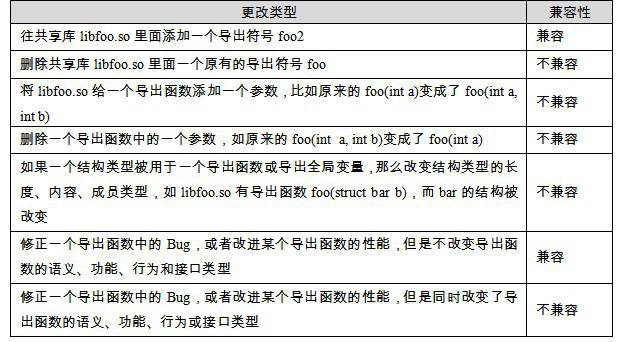
導致C語言的共用函式庫ABI改變的行為主要有如下4個：
匯出函式的行為發生改變，也就是說呼叫這個函式以後產生的結果與以前不一樣，不再滿足舊版本規定的函式行為準則。
匯出函式被刪除。
匯出資料的結構發生變化，比如共用函式庫定義的結構體變數的結構發生改變：結構成員刪除、順序改變或其他引起結構體記憶體佈局變化的行為（不過通常來講，往結構體的尾部新增成員不會導致不相容，當然這個結構體必須是共用函式庫內部分配的，如果是外部分配的，在分配該結構體時必須考慮成員新增的情況）。
匯出函式的介面發生變化，如函式返回值、引數被更改。
如果能夠保證上述4種情況不發生，那麼絕大部分情況下，C語言的共用函式庫將會保持ABI相容。注意，僅僅是絕大部分情況，要破壞一個共用函式庫的ABI十分容易，要保持ABI的相容卻十分困難。很多因素會導致ABI的不相容，比如不同版本的編譯器、作業系統和硬體平台等，使得ABI相容尤為困難。使用不同版本的編譯器或系統庫可能會導致結構體的成員對齊方式不一致，從而導致了ABI的變化。這種ABI不相容導致的問題可能非常微妙，表面上看可能無關緊要，但是一旦發生故障，相關的Bug非常難以定位，這也是共用函式庫很大的一個問題。
對於C++來說，ABI問題就更為嚴重了。由於C++非常複雜，它支援諸如模板等一些高階特性，這些特性對於ABI相容來說簡直就是災難。因為C++標準對於C++的ABI沒有做出規定，所以不同的編譯器甚至同一個編譯器的不同版本對於C++的一些特性的實現都有著各自的方案，而且相互不相容，比如虛擬函式表、模板例項化、多重繼承等。對於Linux來說，如果你要開發一個匯出介面為C++的共用函式庫（當然我十分不推薦這麼做，使用C的介面會讓事情變得簡單得多），需要注意以下事項，以防止ABI不相容（完全遵循以下準則還是不能保證ABI完全相容）：
不要在介面類中使用虛擬函式，萬不得已要使用虛擬函式時，不要隨意刪除、新增或在子類中新增新的實現函式，這樣會導致類的虛擬函式表結構發生變化。
不要改變類中任何成員變數的位置和型別。
不要刪除非內嵌的public或protected成員函式。
不要將非內嵌的成員函式改變成內嵌成員函式。
不要改變成員函式的訪問許可權。
不要在介面中使用模板。
最重要的是，不要改變介面的任何部分或幹脆不要使用C++作為共用函式庫介面！
8.1.2 共用函式庫版本命名
既然共用函式庫存在這樣那樣的相容性問題，那麼保持共用函式庫在系統中的相容性，保證依賴於它們的應用程式能夠正常執行是必需要解決的問題。有幾種辦法可用於解決共用函式庫的相容性問題，有效辦法之一就是使用共用函式庫版本的方法。Linux有一套規則來命名系統中的每一個共用函式庫，它規定共用函式庫的檔名規則必須如下：
libname.so.x.y.z
最前面使用字首“lib”、中間是庫的名字和字尾“.so”，最後面跟著的是三個數字組成的版本號。“x”表示主版本號（Major Version Number），“y”表示次版本號（Minor Version Number），“z”表示發布版本號（Release Version Number）。三個版本號的含義不一樣。
主版本號表示庫的重大升級，不同主版本號的庫之間是不相容的，依賴於舊的主版本號的程式需要改動相應的部分，並且重新編譯，才可以在新版的共用函式庫中執行；或者，系統必須保留舊版的共用函式庫，使得那些依賴於舊版共用函式庫的程式能夠正常執行。
次版本號表示庫的增量升級，即增加一些新的介面符號，且保持原來的符號不變。在主版本號相同的情況下，高的次版本號的庫向後相容低的次版本號的庫。一個依賴於舊的次版本號共用函式庫的程式，可以在新的次版本號共用函式庫中執行，因為新版中保留了原來所有的介面，並且不改變它們的定義和含義。比如系統中有個共用函式庫為libfoo.so.1.2.x，後來在升級過程中新增了一個函式，版本號變成了1.3.x。因為1.2.x的所有介面都被保留到1.3.x中了，所以那些依賴於1.1.x或1.2.x的程式都可以在1.3.x中正常執行。
發布版本號表示庫的一些錯誤的修正、效能的改進等，並不新增任何新的介面，也不對介面進行更改。相同主版本號、次版本號的共用函式庫，不同的發布版本號之間完全相容，依賴於某個發布版本號的程式可以在任何一個其他發布版本號中正常執行，而無須做任何修改。
當然現在Linux中也存在不少不遵守上述規定的“頑固分子”，比如最基本的C語言庫Glibc就不使用這種規則，它的基本C語言庫使用libc-x.y.z.so這種命名方式。Glibc有許多元件，C語言庫只是其中一個，動態連結器也是Glibc的一部分，它使用ld-x.y.z.so這樣的命名方式，還有Glibc的其他部分，比如數學庫libm、執行時載入庫libdl等。
Reference: Library Interface Versioning in Solaris and Linux
http://www.usenix.org/publications/library/proceedings/als00/2000papers/papers/full_ papers/browndavid/browndavid_html/
這篇論文對Salaris和Linux的共用函式庫版本機制和符號版本機制做了非常詳細的介紹。
8.1.3 SO-NAME
程式需要記錄什麼
可以這麼說，共用函式庫的主版本號和次版本號決定了一個共用函式庫的介面。那麼從一個可執行程式的角度看，如何表示它依賴於哪些版本的哪些共用函式庫？或者說在執行時，動態連結器怎樣知道程式依賴於哪些共用函式庫，它們的版本號又是什麼？
我們假設程式中有一個它所依賴的共用函式庫的列表，其中每一項對應於它所依賴的一個共用函式庫。可以肯定的是，程式中必須包含被依賴的共用函式庫的名字和主版本號。因為我們知道不同主版本號之間的共用函式庫是完全不相容的，所以程式中儲存一個諸如libfoo.so.2的記錄，以防止動態連結器在執行時意外地將程式與libfoo.so.1或libfoo.so.3連結到一起。透過這個可以發現，如果在系統中執行舊的應用程式，就需要在系統中保留舊應用程式所需要的舊的主版本號的共用函式庫。
SO-NAME
對於新的系統來說，包括Solaris和Linux，普遍採用一種叫做SO-NAME的命名機制來記錄共用函式庫的依賴關係。每個共用函式庫都有一個對應的“SO-NAME”，這個SO-NAME即共用函式庫的檔名去掉次版本號和發布版本號，保留主版本號。比如一個共用函式庫叫做libfoo.so.2.6.1，那麼它的SO-NAME即libfoo.so.2。很明顯，“SO-NAME”規定了共用函式庫的介面，“SO-NAME”的兩個相同共用函式庫，次版本號大的相容次版本號小的。在Linux系統中，系統會為每個共用函式庫在它所在的目錄建立一個跟“SO-NAME”相同的並且指向它的軟連結（Symbol Link）。比如系統中有存在一個共用函式庫“/lib/libfoo.so.2.6.1”，那麼Linux中的共用函式庫管理程式就會為它產生一個軟連結“/lib/libfoo.so.2”指向它。比如Linux系統的Glibc共用函式庫：
$ ls -l /lib/libc* -rwxr-xr-x 1 root root 1249520 2007-10-25 09:03 libc-2.6.1.so … lrwxrwxrwx 1 root root 13 2007-11-10 15:49 libc.so.6 -> libc-2.6.1.so …
由於歷史原因，動態連結器和C語言庫的共享物件檔名規則不按Linux標準的共用函式庫命名方法，但是C語言的SO-NAME還是按照正常的規則：Glibc的C語言庫libc-2.6.1.so，它的SO-NAME是libc.so.6；為了“彰顯”動態聯結器的與眾不同，它的SO-NAME命名也不按照普通的規則，比如動態連結器的檔名是ld-2.6.1.so，它的SO-NAME是ld-linux.so。
那麼以“SO-NAME”為名字建立軟連結有什麼用處呢？實際上這個軟連結會指向目錄中主版本號相同、次版本號和發布版本號最新的共用函式庫。也就是說，比如目錄中有兩個共用函式庫版本分別為：/lib/libfoo.so.2.6.1和/lib/libfoo.2.5.3，那麼軟連結/lib/libfoo.so.2會指向/lib/libfoo.so.2.6.1。這樣保證了所有的以SO-NAME為名的軟連結都指向系統中最新版的共用函式庫。
建立以SO-NAME為名字的軟連結目的是，使得所有依賴某個共用函式庫的模組，在編譯、連結和執行時，都使用共用函式庫的SO-NAME，而不使用詳細的版本號。我們在前面介紹動態連結檔案中的“.dynamic”段時已經提到過，如果某檔案A依賴於某檔案B，那麼A的“.dynamic”段中會有DT_NEED型別的欄位，欄位的值就是B。現在有一個問題是，這個欄位值該如何表示B這個檔案呢？如果儲存的是B的檔名，即包含次版本號和發布版本號，那麼會有什麼問題呢？很直接的問題是，這個檔案A只能依賴於某個特定版本的B。比如程式A依賴於C語言庫，它在編譯時，系統中存在的C語言庫版本是/lib/libc-2.6.1.so，那麼編譯完成後，它的“.dynamic”中的DT_NEED型別如果儲存了/lib/libc-2.6.1.so。當系統將C語言庫版本升級至2.6.2或2.7.1時，系統必須保留原來的2.6.1的共用函式庫，否則這個這個程式A就無法正常執行。
但是我們知道，因為根據Linux的共用函式庫版本規定，實際上2.6.2或2.7.1版本的共用函式庫是相容2.6.1的，我們不需要繼續保留原來的2.6.1，否則系統中將遺留大量的各種版本的共用函式庫，大大浪費了磁碟和記憶體空間。所以一個可行的方法就是編譯輸出ELF檔案時，將被依賴的共用函式庫的SO-NAME儲存到“.dynamic”中，這樣當動態連結器進行共用函式庫依賴檔案查詢時，就會根據系統中各種共用函式庫目錄中的SO-NAME軟連結自動定向到最新版本的共用函式庫。比如之前Lib.so的依賴檔案：
$ readelf -d Lib.so Dynamic section at offset 0x4f4 contains 21 entries: Tag Type Name/Value 0x00000001 (NEEDED) Shared library: [libc.so.6] …
當共用函式庫進行升級的時候，如果只是進行增量升級，即保持主版本號不變，只改變次版本號或發布版本號，那麼我們可以直接將新版的共用函式庫替換掉舊版，並且修改SO-NAME的軟連結指向新版本共用函式庫，即可實現升級；當共用函式庫的主版本號升級時，系統中就會存在多個SO-NAME，由於這些SO-NAME並不相同，所以已有的程式並不會受影響。
總之，SO-NAME表示一個庫的介面，介面不向後相容，SO-NAME就發生變化，這是基本的原則。
Linux中提供了一個工具叫做“ldconfig”，當系統中安裝或更新一個共用函式庫時，就需要執行這個工具，它會遍曆所有的預設共用函式庫目錄，比如/lib、/usr/lib等，然後更新所有的軟連結，使它們指向最新版的共用函式庫；如果安裝了新的共用函式庫，那麼ldconfig會為其建立相應的軟連結。
連結名
當我們在編譯器裡面使用共用函式庫的時候（比如使用GCC的“-l”引數連結某個共用函式庫），我們使用了更為簡潔的方式，比如需要連結一個libXXX.so.2.6.1的共用函式庫，只需要在編譯器命令列裡面指定-lXXX即可，可省略所有其他部分。編譯器會根據當前環境，在系統中的相關路徑（往往由-L引數指定）查詢最新版本的“XXX”庫。
這個“XXX”又被稱為共用函式庫的連結名（Link Name）。不同型別的庫可能會有同樣的連結名，比如C語言執行庫有靜態版本（libc.a）和動態版本（libc.so.x.y.z）的區別，如果在連結時使用引數“-lc”，那麼連結器會根據輸出檔案的情況（動態/靜態）來選擇適合版本的庫。比如ld使用“-static”引數時，“-lc”會查詢libc.a；如果使用“-Bdynamic”（這也是預設情況），它會查詢最新版本的libc.so.x.y.z。
8.2 符號版本
歷史回顧
在一些早期的系統中，應用程式在被構建時，靜態連結器會把程式所依賴的所有共用函式庫的名字、主版本號和次版本號都記錄到最終的應用程式二進位輸出檔案中。在執行時，由於動態連結器知道應用程式所依賴的共用函式庫的確切版本號，所以相容性問題比較容易處理。比如在SunOS 4.x中，動態連結器會根據程式的共用函式庫依賴列表中的記錄，在系統中查詢相同共用函式庫名和主版本號的共用函式庫；如果某個共用函式庫在系統中存在相同主版本號不同次版本號的多個副本，那麼動態連結器會使用那個最高次版本號的副本。
動態連結器在查詢共用函式庫過程中，如果找到的共用函式庫的次版本號高於或等於依賴列表中的版本，那麼連結器就預設共用函式庫滿足要求，因為更高次版本號的共用函式庫肯定包含所有需要的符號；如果找到的共用函式庫次版本號低於所需要的版本，SunOS 4.x系統的策略是向使用者發出一個警告資訊，表示系統中僅有低次版本號的共用函式庫，但執行程式還是繼續執行。程式很有可能能夠正常執行，比如該程式只用了低次版本號中的介面，而沒有用到高次版本號中新新增的那些介面。當然，程式如果用到了高次版本號中新新增的介面而目前系統中的低次版本號的共用函式庫中不存在，那麼就會發生重定位錯誤。有些採取更加保守策略的系統中，對於這種系統中沒有足夠高的次版本號滿足依賴關係的情況，程式將會被禁止執行，以防止出現意外情況。
這兩種策略或可能導致程式執行錯誤（第一種只透過警告的策略），或者會阻止那些實際上能夠執行的程式（第二種保守策略）。實際上很多應用程式在高次版本的系統中都有構建，但實際上它只用到了低次版本的那部分介面，在採取第二種策略的系統中，如果系統中只有低次版本號的共用函式庫，那麼這些程式就不能執行。我們可以把這個問題叫做次版本號交會問題（Minor-revision Rendezvous Problem）。
次版本號交會問題並沒有因為SO-NAME而解決
動態連結器在進行動態連結時，只進行主版本號的判斷，即只判斷SO-NAME，如果某個被依賴的共用函式庫SO-NAME與系統中存在的實際共用函式庫SO-NAME一致，那麼系統就認為介面相容，而不再進行相容性檢查。這樣就會出現一個問題，當某個程式依賴於較高的次版本號的共用函式庫，而執行於較低次版本號的共用函式庫系統時，就可能產生缺少某些符號的錯誤。因為次版本號只保證向後相容，並不保證向前相容，新版的次版本號的共用函式庫可能新增了一些舊版沒有的符號。這種次版本號交會問題並沒有因為SO-NAME的存在而得到任何改善。對於這個問題，現代的系統透過一種更加精巧的方式來解決，那就是符號版本機制。
正常情況下，為了表示某個共用函式庫中增加了一些介面，我們就把這個共用函式庫的次版本號升高（表示裡面新增了一些東西）。但是我們需要一種更為巧妙的方法，來解決次版本號交會問題。Linux下的Glibc從版本2.1之後開始支援一種叫做基於符合的版本機制（Symbol Versioning）的方案。這個方案的基本思路是讓每個匯出和匯入的符號都有一個相關聯的版本號，它的實際做法類似於名稱修飾的方法。與以往簡單地將某個共用函式庫的版本號重新命名不同（比如將libfoo.so.1.2升級到libfoo.so.1.3），當我們將libfoo.so.1.2升級至1.3時，仍然保持libfoo.so.1這個SO-NAME，但是給在1.3這個新版中新增的那些全域性符號打上一個標記，比如“VERS_1.3”。那麼，如果一個共用函式庫每一次次版本號升級，我們都能給那些在新的次版本號中新增的全域性符號打上相應的標記，就可以清楚地看到共用函式庫中的每個符號都擁有相應的標簽，比如“VERS_1.1”、“VERS_1.2”、“VERS_1.3”、“VERS_1.4”。
8.2.2 Solaris中的符號版本機制
這個基於符號版本的方案最早是Sun在1995年的Solaris 2.5中實現的，在這個新的機制中，Solaris的ld連結器為共用函式庫新增了版本機制（Versioning）和範圍機制（Scoping）。
版本機制的想法很簡單，也就是定義一些符號的集合，這些集合本身都有名字，比如叫“VERS_1.1”、“VERS_1.2”等，每個集合都包含一些指定的符號，除了可以擁有符號以外，一個集合還可以包含另外一個集合，比如“VERS_1.2”可以包含集合“VERS_1.1”。就概念而言與其說是“包含”，不如說是“繼承”，比如“VERS_1.2”的符號集合包含（繼承）了所有“VERS_1.1”的符號，並且包含所有“VERS_1.2”的符號。
那麼，這些集合的定義及它們包含哪些符號是怎樣指定的呢？在Solaris中，程式設計師可以在連結共用函式庫時編寫一種叫做符號版本指令碼的檔案，在這個檔案中指定這些符號與集合之間及集合與集合之間的繼承依賴關係。連結器在連結時根據符號版本指令碼中指定的關係來產生共用函式庫，並且設定符號的集合與它們之間的關係。
舉個簡單的例子，假設有個名為libstack.so.1的共用函式庫編寫的符號版本指令碼檔案如下：
SUNW_1.1 {
global:
pop;
push;
}
SUNWprivate {
global:
__pop;
__push;
local:
*;
}
在這個指令碼檔案中，我們可以看到它定義了兩個符號集合，分別為“SUNW_1.1”和“SUNWprivate”（在Solaris系統中，符號的集合名通常由“SUNW”開頭）。第一個包含了兩個全域性符號pop和push；在第二個集合中，包含了兩個全域性符號“__pop”和“__push”。第二個集合中最後的“local: *;”表示：除了上述被標識為全域性的“pop”、“push”、“__pop”和“__push”這4個符號以外，共用函式庫中其他的本來是全域性的符號都將成為共用函式庫區域性符號，也就是說連結器會把原先是全域性的符號全部變成區域性的，這樣一來，共用函式庫外部的應用程式或其他的共用函式庫將無法訪問這些符號。這種方式可以用於保護那些共用函式庫內部的公用實用函式，但是共用函式庫的作者又不希望共用函式庫的使用者能夠有意或無意地訪問這些函式。這種方法又被稱為範圍機制（Scoping），它實際上是對C語言沒有很好的符號可見範圍的控制機制的一種補充，或者說是一種補救性質的措施。
假設現在這個共用函式庫升級了，在原有的基礎上新增了一個全域性函式“swap”，那麼新的符號版本指令碼檔案可以在原有的基礎上新增如下內容：
SUNW_1.2 {
global:
swap;
} SUNW_1.1;
上面的指令碼就表示了一個典型的向上相容的介面：1.2版的共用函式庫增加了一個swap介面，並且它繼承了1.1的所有介面。那麼我們可以按照這種方式，共用函式庫中的版本序號SUNW_1.1、SUNW_1.2、SUNW_1.3……分別表示每次共用函式庫新增介面以後的更新，它們依次向後繼承，向後相容。這裡值得一提的是，跟在“SUNW_”字首後面的版本號由主版本號與一個次版本號構成，這裡的主版本號對應於共用函式庫實際的SO-NAME中的主版本號。
當共用函式庫的符號都有了版本集合之後，一個最明顯的效果就是，當我們在構建（編譯和連結）應用程式的時候，連結器可以在程式的最終輸出檔案中記錄下它所用到的版本符號集合。值得注意的是，程式裡面記錄的不是構建時共用函式庫中版本最新的符號集合，而是程式所依賴的集合中版本號最小的那個（或者那些）。比如，一個共用函式庫libfoo.so.1中有6個符號版本，從SUNW_1.1到SUNW_1.6，某個應用程式app_foo在編譯時，系統中的libfoo.so.1的符號版本為SUNW_1.6，但實際上app_foo只用到了最高到SUNW_1.3集合的符號，那麼應用程式實際上依賴於SUNW_1.3，而不是SUNW_1.6。連結器會計算出app_foo所用到的最高版本的符號，然後把SUNW_1.3記錄到app_foo的執行檔內。
在程式執行時，動態連結器會透過程式內記錄的它所依賴的所有共用函式庫的符號集合版本資訊，然後判定當前系統共用函式庫中的符號集合版本是否滿足這些被依賴的符號集合。透過這樣的機制，就可以保證那些在高次版本共用函式庫的系統中編譯的程式在低次版本共用函式庫中執行。如果該低次版本的共用函式庫滿足符號集合的要求，比如app_foo在libfoo.so.1次版本號大於等於3的系統中執行，就沒有任何問題；如果低次版本共用函式庫不滿足要求，如app_foo在libfoo.so.1次版本號小於3的系統中執行，動態連結器就會意識到當前系統的共用函式庫次版本號不滿足要求，從而阻止程式執行，以防止造成進一步的損失。
這種符號版本的方法是對SO-NAME機制保證共用函式庫主版本號一致的一種非常好的補充。
8.2.3 Linux中的符號版本
Linux系統下共用函式庫的符號版本機制並沒有被廣泛應用，主要使用共用函式庫符號版本機制的是Glibc軟體包中所提供的20多個共用函式庫。這些共用函式庫比較有效地利用了符號版本機制來表示符號的版本演化及利用範圍機制來遮蔽一些不希望暴露給共用函式庫使用者的符號。對於目前2.6.1的Glibc中的C語言執行庫libc-2.6.1.so來說，它的符號版本演化如下：
GLIBC_2.0、GLIBC_2.1、GLIBC_2.1.1、GLIBC_2.1.2、GLIBC_2.1.3、GLIBC_2.2、GLIBC_2.2.1、GLIBC_2.2.2、GLIBC_2.2.3、GLIBC_2.2.4、GLIBC_2.2.6、GLIBC_2.3、GLIBC_2.3.2、GLIBC_2.3.3、GLIBC_2.3.4、GLIBC_2.4、GLIBC_2.5、GLIBC_2.6
對於有些像Glibc中的加密解密庫libcrypt，它目前的共用函式庫版本是libcrypt-2.6.1.so，但是它內部的符號版本只有GLIBC_2.0，因為它的介面十分穩定，從2.0版本之後就沒有改動過。另外我們在Glibc的庫中還可以看到類似於“GCC_”為字首及“GLIBC_PRIVATE”這樣的符號版本，這樣的符號版本標記分別用於GCC編譯器和GLIBC內部，它提醒共用函式庫的使用者：最好不要使用這些符號，因為它並不是對外公開的，有可能隨著共用函式庫的版本演化而被刪除或改變，總之一句話，後果自負。
GCC對Solaris符號版本機制的擴充套件
GCC在Solaris系統中的符號版本機制的基礎上還提供了兩個擴充套件。第一個擴充套件是，除了可以在符號版本指令碼中指定符號的版本之外，GCC還允許使用一個叫做“.symver”的組譯宏指令來指定符號的版本，這個組譯宏指令可以被用在GAS組譯中，也可以在GCC的C/C++原始碼中以嵌入組語指令的模式使用。它的用法如下：
asm(".symver add, add@VERS_1.1");
int add(int a, int b)
{
return a + b;
}
這樣就可以把符號“add”指定為符號標簽“VERS_1.1”。第二個擴充套件是GCC允許多個版本的同一個符號存在於一個共用函式庫中，也就是說，在連結層面提供了某種形式的符號過載機制，比如：
asm(".symver old_printf, printf@VERS_1.1");
asm(".symver new_printf, printf@VERS_1.2");
int old_printf()
{
...
}
int new_printf()
{
...
}
為什麼要提供這種符號多版本過載機制呢？有時候當我們對共用函式庫進行升級的時候，可能僅僅更改了一個符號的介面或含義，那麼，如果僅僅為了這個符號的更改而升級主版本號，那麼將會對系統帶來很大的影響。理想的情況是，當共用函式庫發生比較小的變化時，新版的共用函式庫能夠在原來的基礎上做些補充，而並不影響舊版的功能，即能完全保持向後相容性，爭取做到不更改共用函式庫的SO-NAME，即不更改主版本號。
Solaris 2.5系統的符號版本方案有一個不足，那就是同一個共用函式庫中，每個函式只能有一個版本號，也就是說不允許多個版本的同一個函式名存在，只允許該函式的某個版本存在。比如符號foo要麼是VERS_1.0，要麼是VERS_1.1，不允許這兩個版本同時存在。Linux下的符號版本機制比Salaris 2.5的要先進一些，它允許同一個名稱的符號存在多個版本。當某個符號在新的共用函式庫版本中介面被更改或符號的含義被改變，那麼共用函式庫可以保留原來的版本符號，比如前面例子中匯出的printf 1.1版實際上即為old_printf；而將新版的new_printf匯出成printf版本1.2。這樣，連結器可以挑選符合某個程式版本號的符號來進行連結，使用1.1版printf的程式會被連結到old_printf，而使用1.2版的程式會被連結到new_printf，所有的程式都可以正確執行，更改函式的介面和含義並不影響舊版程式的執行。
Linux系統中符號版本機制實踐
在Linux下，當我們使用ld連結一個共用函式庫時，可以使用“--version-script”引數；如果使用GCC，則可以使用“-Xlinker”引數加“--version-script”，相當於把“--version-script”傳遞給ld連結器。如編譯原始碼為“lib.c”，符號版本指令碼檔案為“lib.ver”：
gcc -shared -fPIC lib.c -Xlinker --version-script lib.ver -o lib.so
假設lib.c裡面定義了一個foo的函式，而main.c呼叫了這個函式，如我們使用下面的符號版本指令碼編譯一個lib.so：
VERS_1.2 {
global:
foo;
local:
*;
};
那麼很明顯，這個版本的lib.so裡面foo的符號版本是VERS_1.2。然後將main.c編譯並且連結到當前版本的lib.so：
gcc main.c ./lib.so –o main
於是main程式裡面所引用的foo也是VERS_1.2的。如果把這個main程式拿到一台只包含低於VERS_1.2的foo的lib.so系統中執行，那麼動態連結器就會報執行錯誤並且退出程式，防止了符號版本不符所造成額外的損失：
./main ./main: ./lib.so: version `VERS_1.2' not found (required by ./main)
8.3 共用函式庫系統路徑
目前大多數包括Linux在內的開源作業系統都遵守一個叫做FHS（File Hierarchy Standard）的標準，這個標準規定了一個系統中的系統檔案應該如何存放，包括各個目錄的結構、組織和作用，這有利於促進各個開源作業系統之間的相容性。共用函式庫作為系統中重要的檔案，它們的存放方式也被FHS列入了規定範圍。FHS規定，一個系統中主要有兩個存放共用函式庫的位置，它們分別如下：
/lib，這個位置主要存放系統最關鍵和基礎的共用函式庫，比如動態連結器、C語言執行庫、數學庫等，這些庫主要是那些/bin和/sbin下的程式所需要用到的庫，還有系統啟動時需要的庫。
/usr/lib，這個目錄下主要儲存的是一些非系統執行時所需要的關鍵性的共用函式庫，主要是一些開發時用到的共用函式庫，這些共用函式庫一般不會被使用者的程式或shell指令碼直接用到。這個目錄下面還包含了開發時可能會用到的靜態函式庫、目的檔等。
/usr/local/lib，這個目錄用來放置一些跟作業系統本身並不十分相關的庫，主要是一些第三方的應用程式的庫。比如我們在系統中安裝了python語言的直譯器，那麼與它相關的共用函式庫可能會被放到/usr/local/lib/python，而它的執行檔可能被放到/usr/local/bin下。GNU的標準推薦第三方的程式應該預設將庫安裝到/usr/local/lib下。
/usr/local/lib，這個目錄用來放置一些跟作業系統本身並不十分相關的庫，主要是一些第三方的應用程式的庫。比如我們在系統中安裝了python語言的直譯器，那麼與它相關的共用函式庫可能會被放到/usr/local/lib/python，而它的執行檔可能被放到/usr/local/bin下。GNU的標準推薦第三方的程式應該預設將庫安裝到/usr/local/lib下。
所以總體來看，/lib和/usr/lib是一些很常用的、成熟的，一般是系統本身所需要的庫；而/usr/local/lib是非系統所需的第三方程式的共用函式庫。
8.4 共用函式庫查詢過程
在開源系統中，包括所有的Linux系統在內的很多都是基於Glibc的。我們知道在這些系統裡面，動態連結的ELF執行檔在啟動時同時會啟動動態連結器。在Linux系統中，動態連結器是/lib/ld-linux.so.X（X是版本號），程式所依賴的共享物件全部由動態連結器負責載入和初始化。我們知道任何一個動態連結的模組所依賴的模組路徑儲存在“.dynamic”段裡面，由DT_NEED型別的項表示。動態連結器對於模組的查詢有一定的規則：如果DT_NEED裡面儲存的是絕對路徑，那麼動態連結器就按照這個路徑去查詢；如果DT_NEED裡面儲存的是相對路徑，那麼動態連結器會在/lib、/usr/lib和由/etc/ld.so.conf配置檔案指定的目錄中查詢共用函式庫。為了程式的可移植性和相容性，共用函式庫的路徑往往是相對的。
ld.so.conf是一個文字配置檔案，它可能包含其他的配置檔案，這些配置檔案中存放著目錄資訊。在我的機器中，由ld.so.conf指定的目錄是：
/usr/local/lib
/lib/i486-linux-gnu
/usr/lib/i486-linux-gnu
如果動態連結器在每次查詢共用函式庫時都去遍曆這些目錄，那將會非常耗費時間。所以Linux系統中都有一個叫做ldconfig的程式，這個程式的作用是為共用函式庫目錄下的各個共用函式庫建立、刪除或更新相應的SO-NAME（即相應的符號連結），這樣每個共用函式庫的SO-NAME就能夠指向正確的共用函式庫檔案；並且這個程式還會將這些SO-NAME收集起來，集中存放到/etc/ld.so.cache檔案裡面，並建立一個SO-NAME的快取。當動態連結器要查詢共用函式庫時，它可以直接從/etc/ld.so.cache裡面查詢。而/etc/ld.so.cache的結構是經過特殊設計的，非常適合查詢，所以這個設計大大加快了共用函式庫的查詢過程。
如果動態連結器在/etc/ld.so.cache裡面沒有找到所需要的共用函式庫，那麼它還會遍曆/lib和/usr/lib這兩個目錄，如果還是沒找到，就宣告失敗。
所以理論上講，如果我們在系統指定的共用函式庫目錄下新增、刪除或更新任何一個共用函式庫，或者我們更改了/etc/ld.so.conf的配置，都應該執行ldconfig這個程式，以便調整SO-NAME和/etc/ld.so.cache。很多軟體包的安裝程式在往系統裡面安裝共用函式庫以後都會呼叫ldconfig。
不同的系統中，上面的各個檔案的名字或路徑可能有所不同，比如FreeBSD的SO-NAME快取檔案是/var/run/ld-elf.so.hints，我們可以透過檢視ldconfig的man手冊來得知這些資訊。
8.5 環境變數
LD_LIBRARY_PATH
Linux系統提供了很多方法來改變動態連結器載入共用函式庫路徑的方法，透過使用這些方法，我們可以滿足一些特殊的需求，比如共用函式庫的除錯和測試、應用程式級別的虛擬等。改變共用函式庫查詢路徑最簡單的方法是使用LD_LIBRARY_PATH環境變數，這個方法可以臨時改變某個應用程式的共用函式庫查詢路徑，而不會影響系統中的其他程式。
在Linux系統中，LD_LIBRARY_PATH是一個由若幹個路徑組成的環境變數，每個路徑之間由冒號隔開。預設情況下，LD_LIBRARY_PATH為空。如果我們為某個程式設定了LD_LIBRARY_PATH，那麼程式在啟動時，動態連結器在查詢共用函式庫時，會首先查詢由LD_LIBRARY_PATH指定的目錄。這個環境變數可以很方便地讓我們測試新的共用函式庫或使用非標準的共用函式庫。比如我們希望使用修改過的libc.so.6，可以將這個新版的libc放到我們的目錄/home/user中，然後指定LD_LIBRARY_PATH:
$ LD_LIBRARY_PATH=/home/user /bin/ls
Linux中還有一種方法可以實現與LD_LIBRARY_PATH類似的功能，那就是直接執行動態連結器來啟動程式，比如：
$/lib/ld-linux.so.2 –library-path /home/user /bin/ls
就可以達到跟前面一樣的效果。有了LD_LIBRARY_PATH之後，再來總結動態連結器查詢共用函式庫的順序。動態連結器會按照下列順序依次載入或查詢共享物件（目的檔）：
由環境變數LD_LIBRARY_PATH指定的路徑。
由路徑快取檔案/etc/ld.so.cache指定的路徑。
預設共用函式庫目錄，先/usr/lib，然後/lib。
LD_LIBRARY_PATH對於共用函式庫的開發和測試來說十分方便，但是它不應該被濫用。也就是說，普通使用者在正常情況下不應該隨意設定LD_LIBRARY_PATH來調整共用函式庫搜尋目錄。隨意修改LD_LIBRARY_PATH並且將其匯出至全域性範圍，將可能引起其他應用程式執行出現的問題；LD_LIBRARY_PATH也會影響GCC編譯時查詢庫的路徑，它裡面包含的目錄相當於連結時GCC的“-L”引數。
有一篇文章“Why LD_LIBRARY_PATH is bad”專門討論為什麼不要隨意使用該環境變數：http://xahlee.org/UnixResource_dir/_/ldpath.html
LD_PRELOAD
系統中另外還有一個環境變數叫做LD_PRELOAD，這個檔案中我們可以指定預先載入的一些共用函式庫甚或是目的檔。在LD_PRELOAD裡面指定的檔案會在動態連結器按照固定規則搜尋共用函式庫之前載入，它比LD_LIBRARY_PATH裡面所指定的目錄中的共用函式庫還要優先。無論程式是否依賴於它們，LD_PRELOAD裡面指定的共用函式庫或目的檔都會被載入。
由於全域性符號介入這個機制的存在，LD_PRELOAD裡面指定的共用函式庫或目的檔中的全域性符號就會覆蓋後面載入的同名全域性符號，這使得我們可以很方便地做到改寫標準C庫中的某個或某幾個函式而不影響其他函式，對於程式的除錯或測試非常有用。與LD_LIBRARY_ PATH一樣，正常情況下應該盡量避免使用LD_PRELOAD，比如一個發布版本的程式執行不應該依賴於LD_PRELOAD。
系統配置檔案中有一個檔案是/etc/ld.so.preload，它的作用與LD_PRELOAD一樣。這個檔案裡面記錄的共用函式庫或目的檔的效果跟LD_PRELOAD裡面指定的一樣，也會被提前載入。
LD_DEBUG
另外還有一個非常有用的環境變數LD_DEBUG，這個變數可以開啟動態連結器的除錯功能，當我們設定這個變數時，動態連結器會在執行時列印出各種有用的資訊，對於我們開發和除錯共用函式庫有很大的幫助。比如我們可以將LD_DEBUG設定成“files”，並且執行一個簡單動態連結的HelloWorld：
$LD_DEBUG=files ./HelloWorld.out
12118:
12118: file=libc.so.6 [0]; needed by ./HelloWorld.out [0]
12118: file=libc.so.6 [0]; generating link map
12118: dynamic: 0xb7f16d9c base: 0xb7dd1000 size: 0x00149610
12118: entry: 0xb7de71b0 phdr: 0xb7dd1034 phnum: 10
12118:
12118:
12118: calling init: /lib/tls/i686/cmov/libc.so.6
12118:
12118:
12118: initialize program: ./HelloWorld.out
12118:
12118:
12118: transferring control: ./HelloWorld.out
12118:
Hello world
12118:
12118: calling fini: ./HelloWorld.out [0]
12118:
12118:
12118: calling fini: /lib/tls/i686/cmov/libc.so.6 [0]
12118:
動態連結器列印出了整個載入過程，顯示程式依賴於哪個共用函式庫並且按照什麼步驟載入和初始化，共用函式庫載入時的地址等。LD_DEBUG還可以設定成其他值，比如：
“bindings”顯示動態連結的符號繫結過程。
“libs”顯示共用函式庫的查詢過程。
“versions”顯示符號的版本依賴關係。
“reloc”顯示重定位過程。
“symbols”顯示符號表查詢過程。
“statistics”顯示動態連結過程中的各種統計資訊。
8.6 共用函式庫的建立和安裝
8.6.1 共用函式庫的建立
建立共用函式庫非常簡單，我們在前面已經演示瞭如何建立一個“.so”共享物件。建立共用函式庫的過程跟建立一般的共享物件的過程基本一致，最關鍵的是使用GCC的兩個引數，即“-shared”和“-fPIC”。“-shared”表示輸出結果是共用函式庫型別的；“-fPIC”表示使用地址無關程式碼（Position Independent Code）技術來生產輸出檔案。另外還有一個引數是“-Wl”引數，這個引數可以將指定的引數傳遞給連結器，比如當我們使用“-Wl、-soname、my_soname”時，GCC會將“-soname my_soname”傳遞給連結器，用來指定輸出共用函式庫的SO-NAME。所以我們可以使用如下命令列來生成一個共用函式庫：
$gcc –shared –Wl,-soname,my_soname –o library_name source_files library_files
如果我們不使用-soname來指定共用函式庫的SO-NAME，那麼該共用函式庫預設就沒有SO-NAME，即使用ldconfig更新SO-NAME的軟連結時，對該共用函式庫也沒有效果。
比如我們有libfoo1.c和libfoo2.c兩個原始碼檔案，希望產生一個libfoo.so.1.0.0的共用函式庫，這個共用函式庫依賴於libbar1.so和 libbar2.so這兩個共用函式庫，我們可以使用如下命令列：
$gcc –shared -fPIC –Wl,-soname,libfoo.so.1 –o libfoo.so.1.0.0 \ libfoo1.c libfoo2.c \ -lbar1 -lbar2
當然我們也可以把編譯和連結的步驟分開，分多步進行：
$gcc –c –g –Wall –o libfoo1.o libfoo1.c $gcc –c –g –Wall –o libfoo2.o libfoo2.c $ld –shared –soname libfoo.so.1 –o libfoo.so.1.0.0 \ libfoo1.o libfoo2.o –lbar1 –lbar2
幾個值得注意的事項：
不要把輸出共用函式庫中的符號和除錯資訊去掉，也不要使用GCC的“-fomit-frame-pointer”選項，這樣做雖然不會導致共用函式庫停止執行，但是會影響除錯共用函式庫，給後面的工作帶來很多麻煩。關於“-fomit-frame-pointer”請參照後面的“函式呼叫和堆疊”這一節。
在開發過程中，你可能要測試新的共用函式庫，但是你又不希望影響現有的程式正常執行。我們前面提到的LD_LIBRARY_PATH是一個很好的方法，用它可以指定共用函式庫的查詢路徑。還有一種方法是使用連結器的“-rpath”選項（或者GCC的-Wl,-rpath），這種方法可以指定連結產生的目標程式的共用函式庫查詢路徑。比如我們用如下命令列產生一個執行檔：
$ld –rpath /home/mylib –o program.out program.o –lsomelib
這樣產生的輸出執行檔program.out在被動態連結器載入時，動態連結器會首先在“/home/mylib”查詢共用函式庫。
預設情況下，連結器在產生執行檔時，只會將那些連結時被其他共享模組引用到的符號放到動態符號表，這樣可以減少動態符號表的大小。也就是說，在共享模組中反向引用主模組中的符號時，只有那些在連結時被共享模組引用到的符號才會被匯出。有一種情況是，當程式使用dlopen()動態載入某個共享模組，而該共享模組須反向引用主模組的符號時，有可能主模組的某些符號因為在連結時沒有被其他共享模組引用而沒有被放到動態符號表裡面，導致了反向引用失敗。ld連結器提供了一個“-export-dynamic”的引數，這個參數列示連結器在生產執行檔時，將所有全域性符號匯出到動態符號表，以防止出現上述問題。我們也可以在GCC中使用“-Wl,-export-dynamic”將該引數傳遞給連結器。
8.6.2 清除符號資訊
正常情況下編譯出來的共用函式庫或執行檔裡面帶有符號資訊和除錯資訊，這些資訊在除錯時非常有用，但是對於最終發布的版本來說，這些符號資訊用處並不大，並且使得檔案尺寸變大。我們可以使用一個叫“strip”的工具清除掉共用函式庫或執行檔的所有符號和除錯資訊（“strip”是binutils的一部分）：
$strip libfoo.so
去除符號和除錯資訊以後的檔案往往比之前要小很多，一般只有原來的一半大小，甚至不到一半。除了使用“strip”工具，我們還可以使用ld的“-s”和“-S”引數，使得連結器生成輸出檔案時就不產生符號資訊。“-s”和“-S”的區別是：“-S”消除除錯符號資訊，而“-s”消除所有符號資訊。我們也可以在gcc中透過“-Wl,-s”和“-Wl,-S”給ld傳遞這兩個引數。
8.6.3 共用函式庫的安裝
建立共用函式庫以後我們須將它安裝在系統中，以便於各種程式都可以共享它。最簡單的辦法就是將共用函式庫複製到某個標準的共用函式庫目錄，如/lib、/usr/lib等，然後執行ldconfig即可。
不過上述方法往往需要系統的root許可權，如果沒有，則無法往/lib、/usr/lib等目錄新增檔案，也無法執行ldconfig程式。當然我們也有其他辦法安裝共用函式庫，只不過步驟稍微麻煩一些，無非是建立相應的SO-NAME軟連結，並告訴編譯器和程式如何查詢該共用函式庫等，以便於編譯器和程式都能夠正常執行。建立SO-NAME的辦法也是使用ldconfig，只不過需要指定共用函式庫所在的目錄：
$ldconfig –n shared_library_directory
在編譯程式時，也需要指定共用函式庫的位置，GCC提供了兩個引數“-L”和“-l”，分別用於指定共用函式庫搜尋目錄和共用函式庫的路徑。當然也可以使用前面提到過的“-rpath”引數，這幾個引數之間有些細微的區別，我們這裡不詳細解釋了，它們的作用都是用來指定共用函式庫的位置，具體可以參照GCC的手冊。前面提到過的LD_LIBRARY_PATH的方法也可以用來指定某個共用函式庫的位置。
8.6.4 共用函式庫構造和解構函式
很多時候你希望共用函式庫在被載入時能夠進行一些初始化工作，比如開啟檔案、網路連線等，使得共用函式庫裡面的函式介面能夠正常工作。GCC提供了一種共用函式庫的建構函式，只要在函式宣告時加上“__attribute__((constructor))”的屬性，即指定該函式為共用函式庫建構函式，擁有這種屬性的函式會在共用函式庫載入時被執行，即在程式的main函式之前執行。如果我們使用dlopen()開啟共用函式庫，共用函式庫建構函式會在dlopen()返回之前被執行。
與共用函式庫建構函式相對應的是解構函式，我們可以使用在函式宣告時加上“__attribute__((destructor))”的屬性，這種函式會在main()函式執行完畢之後執行（或者是程式呼叫exit()時執行）。如果共用函式庫是執行時載入的，那麼我們使用dlclose()來解除安裝共用函式庫時，解構函式將會在dlclose()返回之前執行。宣告構造和解構函式的格式如下：
void __attribute__((constructor)) init_function(void); void __attribute__((destructor)) fini_function (void);
當然，這種__attribute__的語法是GCC對C和C++語言的擴充套件，在其他編譯器上這種語法並不通用。
值得注意的是，如果我們使用了這種析構或建構函式，那麼必須使用系統預設的標準執行庫和啟動檔案，即不可以使用GCC的“-nostartfiles”或“-nostdlib”這兩個引數。因為這些構造和解構函式是在系統預設的標準執行庫或啟動檔案裡面被執行的，如果沒有這些輔助結構，它們可能不會被執行。我們將在後面的關於系統庫和啟動檔案的章節更加詳細介紹相關的機制。
另外還有一個問題是，如果我們有多個建構函式，那麼預設情況下，它們被執行的順序是沒有規定的。如果我們希望構造和解構函式能夠按照一定的順序執行，GCC為我們提供了一個引數叫做優先順序，我們可以指定某個構造或解構函式的優先順序：
void __attribute__((constructor(5))) init_function1(void); void __attribute__((constructor(10))) init_function2(void);
對於建構函式來說，屬性中優先順序數字越小的函式將會在優先順序大的函式之前執行；而對於解構函式來講，則剛好相反。這種安排有利於建構函式和解構函式能夠匹配，比如某一對建構函式和解構函式分別用來申請和釋放某個資源，那麼它們可以擁有一樣的優先順序。這樣做的結果往往是先申請的資源後釋放，符合資源釋放的一般規則。
8.6.5 共用函式庫指令碼
我們前面所提到的共用函式庫都是動態連結的ELF共享物件檔案（.so），事實上，共用函式庫還可以是符合一定格式的連結指令碼檔案。透過這種指令碼檔案，我們可以把幾個現有的共用函式庫透過一定的方式組合起來，從使用者的角度看就是一個新的共用函式庫。比如我們可以把C執行庫和數學庫組合成一個新的庫libfoo.so，那麼libfoo.so的內容可以如下：
GROUP( /lib/libc.so.6 /lib/libm.so.2)
我們在前面也介紹過LD的連結指令碼，這裡的指令碼與LD的指令碼從語法和命令上來講沒什麼區別，它們的作用也相似，即將一個或多個輸入檔案以一定的格式經過變換以後形成一個輸出檔案。我們也可以將這種共用函式庫指令碼叫做動態連結指令碼，因為這個連結過程是動態完成的，也就是執行時完成的。
8.7 本章小結
由於系統中存在大量的共用函式庫，並且每個共用函式庫都會隨著更新和升級形成不同的相互相容或不相容的版本。如何管理和維護這些共用函式庫，讓它們的不同版本之間不會相互衝突是使用共用函式庫的一個重要問題。在本章中，我們介紹了Linux/ELF共用函式庫的版本命名方式、共用函式庫符號版本機制、共用函式庫路徑、查詢過程、環境變數、共用函式庫建立與安裝等這些與共用函式庫組織相關的內容。
第9章 Windows下的動態連結
9.1 DLL 簡介
9.2 符號匯出匯入表
9.3 DLL最佳化
9.4 C++與動態連結
9.5 DLL HELL
9.6 本章小結
Windows下的PE的動態連結與Linux下的ELF動態連結相比，有很多類似的地方，但也有很多不同的地方。我們在前面已經介紹過了PE的基本結構，這一章我們將圍繞著PE與Windows的動態連結來展開，介紹PE的符號匯入匯出機制、重定位和DLL的建立與安裝以及DLL的效能等一係列問題。
9.1 DLL 簡介
DLL即動態連結庫（Dynamic-Link Library）的縮寫，它相當於Linux下的共享物件。Window系統中大量採用了這種DLL機制，甚至包括Windows的核心的結構都很大程度依賴於DLL機制。Windows下的DLL檔案和EXE檔案實際上是一個概念，它們都是有PE格式的二進位檔案，稍微有些不同的是PE檔案頭部中有個符號位表示該檔案是EXE或是DLL，而DLL檔案的副檔名不一定是.dll，也有可能是別的比如.ocx（OCX控制元件）或是.CPL（控制面板程式）。
DLL的設計目的與共享物件有些出入，DLL更加強調模組化，即微軟希望透過DLL機制加強軟體的模組化設計，使得各種模組之間能夠鬆散地組合、重用和升級。所以我們在Windows平台上看到大量的大型軟體都透過升級DLL的形式進行自我完善，微軟經常將這些升級補丁積累到一定程度以後形成一個軟體更新包（Service Packs）。比如我們常見的微軟Office係列、Visual Studio係列、Internet Explorer甚至Windows本身也透過這種方式升級。
另外，我們知道ELF的動態連結可以實現執行時載入，使得各種功能模組能以外掛的形式存在。在Windows下，也有類似ELF的執行時載入，這種技術在Windows下被應用得更加廣泛，比如著名的ActiveX技術就是基於這種執行時載入機制實現的。
9.1.1 程式地址空間和記憶體管理
在早期版本的Windows中（比如Windows 1.x、2.x、3.x），也就是16-bit的Windows系統中，所有的應用程式都共享一個地址空間，即程式不擁有自己獨立的地址空間（或者在那個時候，這些程式的執行方式還不能被稱作為程式）。如果某個DLL被載入到這個地址空間中，那麼所有的程式都可以共享這個DLL並且隨意訪問。該DLL中的資料也是共享的，所以程式以此實現程式間通訊。但是由於這種沒有任何限製的訪問許可權，各個程式之間隨意的訪問很容易導致DLL中資料被損壞。
後來的Windows改進了這個設計，也就是所謂的32位版本的Windows開始支援程式擁有獨立的地址空間，一個DLL在不同的程式中擁有不同的私有資料副本，就像我們前面提到過的ELF共享物件一樣。在ELF中，由於程式碼段是地址無關的，所以它可以實現多個程式之間共享一份程式碼，但是DLL的程式碼卻並不是地址無關的，所以它只是在某些情況下可以被多個程式間共享。我們將在後面詳細探討DLL程式碼段的地址相關問題。
9.1.2 基地址和RVA
PE裡面有兩個很常用的概念就是基地址（Base Address）和相對地址（RVA，Relative Virtual Address）。當一個PE檔案被載入時，其程式地址空間中的起始地址就是基地址。對於任何一個PE檔案來說，它都有一個優先載入的基地址，這個值就是PE檔案頭中的Image Base。
對於一個可執行EXE檔案來說，Image Base一般值是0x400000，對於DLL檔案來說，這個值一般是0x10000000。Windows在載入DLL時，會先嚐試把它載入到由Image Base指定的虛擬地址；若該地址區域已被其他模組佔用，那PE載入器會選用其他空閑地址。而相對地址就是一個地址相對於基地址的偏移，比如一個PE檔案被載入到0x10000000，即基地址為0x10000000，那麼RVA為0x1000的地址為0x10001000。
9.1.3 DLL共享資料段
在Win32下，如果要實現程式間通訊，當然有很多方法，Windows系統提供了一係列API可以實現程式間的通訊。其中有一種方法是使用DLL來實現程式間通訊，這個原理與16位Windows中的DLL實現程式間通訊十分類似。正常情況下，每個DLL的資料段在各個程式中都是獨立的，每個程式都擁有自己的副本。但是Windows允許將DLL的資料段設定成共享的，即任何程式都可以共享該DLL的同一份資料段。當然很多時候比較常見的做法是將一些需要程式間共享的變數分離出來，放到另外一個資料段中，然後將這個資料段設定成程式間可共享的。也就是說一個DLL中有兩個資料段，一個程式間共享，另外一個私有。
當然這種程式間共享方式也產生了一定的安全漏洞，因為任意一個程式都可以訪問這個共享的資料段，那麼只要破壞了該資料段的資料就會導致所有使用該資料段的程式出現問題。甚至惡意攻擊者可以在GUEST的許可權下執行某個程式破壞該共享的資料，從而影響那些系統管理員許可權的使用者使用同一個DLL的程式。所以從這個角度講，這種DLL共享資料段來實現程式間通訊應該盡量避免。
9.1.4 DLL的簡單例子
我們透過簡單的例子來瞭解最簡單的DLL的建立和使用，最基本的概念是匯出（Export）的概念。在ELF中，共用函式庫中所有的全域性函式和變數在預設情況下都可以被其他模組使用，也就是說ELF預設匯出所有的全域性符號。但是在DLL中情況有所不同，我們需要顯式地“告訴”編譯器我們需要匯出某個符號，否則編譯器預設所有符號都不匯出。當我們在程式中使用DLL匯出的符號時，這個過程被稱為匯入（Import）。
Microsoft Visual C++(MSVC)編譯器提供了一係列C/C++的擴充套件來指定符號的匯入匯出，對於一些支援Windows平台的編譯器比如Intel C++、GCC Window版（mingw GCC, cygwin GCC）等都支援這種擴充套件。我們可以透過“__declspec”屬性關鍵字來修飾某個函式或者變數，當我們使用“__declspec(dllexport)”時表示該符號是從本DLL匯出的符號，“__declspec(dllimport)”表示該符號是從別的DLL匯入的符號。在C++中，如果你希望匯入或者匯出的符號符合C語言的符號修飾規範，那麼必須在這個符號的定義之前加上external “C”，以防止C++編譯器進行符號修飾。
除了使用“__declspec”擴充套件關鍵字指定匯入匯出符號之外，我們也可以使用“.def”檔案來宣告匯入匯出符號。“.def”副檔名的檔案是類似於ld連結器的連結指令碼檔案，可以被當作link連結器的輸入檔案，用於控制連結過程。“.def”檔案中的IMPORT或者EXPORTS段可以用來宣告匯入匯出符號，這個方法不僅對C/C++有效，對其他語言也有效。
除了使用“__declspec”擴充套件關鍵字指定匯入匯出符號之外，我們也可以使用“.def”檔案來宣告匯入匯出符號。“.def”副檔名的檔案是類似於ld連結器的連結指令碼檔案，可以被當作link連結器的輸入檔案，用於控制連結過程。“.def”檔案中的IMPORT或者EXPORTS段可以用來宣告匯入匯出符號，這個方法不僅對C/C++有效，對其他語言也有效。
9.1.5 建立DLL
假設我們的一個DLL提供3個數學運算的函式，分別是加（Add）、減（Sub）、乘（Mul），它的原始碼如下（Math.c）：
__declspec(dllexport) double Add( double a, double b )
{
return a + b;
}
__declspec(dllexport) double Sub( double a, double b )
{
return a - b;
}
__declspec(dllexport) double Mul( double a, double b )
{
return a * b;
}
程式碼很簡單，就是傳入兩個雙精度的值然後返回相應的計算結果（有人能告訴我為什麼沒有除法嗎？不要著急，我們留著除法到後面用）。然後我們使用MSVC的編譯器cl進行編譯：
cl /LDd Math.c
引數/LDd表示生產Debug版的DLL，不加任何引數則表示生產EXE執行檔；我們可以使用/LD來編譯生成Release版的DLL
上面的編譯結果生成了“Math.dll”、“Math.obj”、“Math.exp”和“Math.lib”這4個檔案。很明顯“Math.dll”就是我們需要的DLL檔案，“Math.obj”是編譯的目的檔，“Math.exp”和“Math.lib”將在後面作介紹。我們可以透過dumpbin工具看到DLL的匯出符號：
dumpbin /EXPORTS Math.dll
...
ordinal hint RVA name
1 0 00001000 Add
2 1 00001020 Mul
3 2 00001010 Sub
...
很明顯，我們可以看到DLL有3個匯出函式以及它們的相對地址。
9.1.6 使用DLL
程式使用DLL的過程其實是引用DLL中的匯出函式和符號的過程，即匯入過程。對於從其他DLL匯入的符號，我們需要使用“__declspec(dllimport)”顯式地宣告某個符號為匯入符號。這與ELF中的情況不一樣，在ELF中，當我們使用一個外部模組的符號的時候，我們不需要額外宣告該變數是從其他共享物件匯入的。
我們來看一個使用Math.dll的例子：
/* TestMath.c */
#include <stdio.h>
__declspec(dllimport) double Sub(double a, double b);
int main(int argc, char **argv)
{
double result = Sub(3.0, 2.0);
printf("Result = %f\n", result);
return 0;
}
在編譯時，我們透過下面的命令列：
cl /c TestMath.c link TestMath.obj Math.lib
第一行使用編譯器將TestMath.c編譯成TestMath.obj，然後使用連結器將TestMath.obj和Math.lib連結在一起產生一個執行檔TestMath.exe。整個過程如圖9-1所示。
在最終連結時，我們必須把與DLL一起產生的“Math.lib”與“TestMath.o”連結起來，形成最終的執行檔。在靜態連結的時候，我們介紹過“.lib”檔案是一組目的檔的集合，在動態連結裡面這一點仍然沒有錯，但是“Math.lib”裡面的目的檔是什麼呢？“Math.lib”中並不真正包含“Math.c”的程式碼和資料，它用來描述“Math.dll”的匯出符號，它包含了TestMath.o連結Math.dll時所需要的匯入符號以及一部分“樁”程式碼，又被稱作“膠水”程式碼，以便於將程式與DLL粘在一起。像“Math.lib”這樣的檔案又被稱為匯入庫（Import Library），我們在後面介紹匯入匯出表的時候還會再詳細分析。
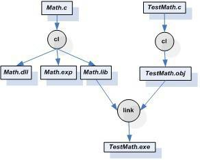
9.1.7 使用模組定義檔案
宣告DLL中的某個函式為匯出函式的辦法有兩種，一種就是前面我們演示過的使用“__declspec(dllexport)”擴充套件；另外一種就是採用模組定義（.def）檔案宣告。實際上.def檔案在MSVC連結過程中的作用與連結指令碼檔案（Link Script）檔案在ld連結過程中的作用類似，它是用於控制連結過程，為連結器提供有關連結程式的匯出符號、屬性以及其他資訊。不過相比於ld的連結指令碼檔案，.def檔案的語法要簡單的多，而且功能也更少。
假設我們在前面例子的Math.c中將所有的“__declspec(dllexport)”去掉，然後建立一個Math.def檔案，以下面作為內容：
LIBRARY Math EXPORTS Add Sub Mul Div
然後使用下面的命令列來編譯Math.c：
cl Math.c /LD /DEF Math.def
這樣編譯器（更準確地講是link連結器）就會使用Math.def檔案中的描述產生最終輸出檔案。那麼使用.def檔案來描述DLL檔案的匯出屬性有什麼好處呢？
首先，我們可以控制匯出符號的符號名。很多時候，編譯器會對源程式裡面的符號進行修飾，比如C++程式裡面的符號經過編譯器的修飾以後，都變得面目全非，這一點我們在本書的前面已經領教過了。除了C++程式以外，C語言的符號也有可能被修飾，比如MSVC支援幾種函式的呼叫規範“__cdecl”、“__stdcall”、“__fastcall”（我們在本書的第4章還會詳細介紹各種函式呼叫規範之間的區別），預設情況下MSVC把C語言的函式當作“_cdecl”型別，這種情況下它對該函式不進行任何符號修飾。但是一旦我們使用其他的函式呼叫規範時，MSVC編譯器就會對符號名進行修飾，比如使用“__stdcall”呼叫規範的函式Add就會被修飾成“_Add@16”，前面以“_”開頭，後面以“@n”結尾，n表示函式呼叫時引數所佔堆疊空間的大小。使用.def檔案可以將匯出函式重新命名，比如當Add函式採用“__stdcall”時，我們可以使用如下的.def檔案：
LIBRARY Math EXPORTS Add=_Add@16 Sub Mul Div
當我們使用這個.def檔案來生產Math.dll時，可以看到：
cl /LD /DEF Math.def Math.c
dumpbin /EXPORTS Math.dll
…
ordinal hint RVA name
1 0 00001000 Add
3 1 00001030 Div
4 2 00001020 Mul
5 3 00001010 Sub
r> 2 4 00001000 _Add@16
…
Add作為一個與_Add@16等價的匯出函式被放到了Math.dll的匯出函式列表中，實際上有些類似於“別名”。當一個DLL被多個語言編寫的模組使用時，採用這種方法匯出一個函式往往會很有用。比如微軟的Visual Basic採用的是“__stdcall”的函式呼叫規範，實際上“__stdcall”呼叫規範也是大多數Windows下的程式語言所支援的通用呼叫規範，那麼作為一個能夠被廣泛使用的DLL最好採用“__stdcall”的函式呼叫規範。而MSVC預設採用的是“__cdecl”呼叫規範，否則它就會使用符號修飾，經過修飾的符號不便於維護和使用，於是採用.def檔案對匯出符號進行重新命名就是一個很好的方案。我們經常看到Windows的API都採用“WINAPI”這種方式宣告，而“WINAPI”實際上是一個被定義為“__stdcall”的宏。微軟以DLL的形式提供Windows的API，而每個DLL中的匯出函式又以這種“__stdcall”的方式被宣告。但是我們可以看到，Windows的API中從來沒有_Add@16這種古怪的命名方式，可見它也是採用了這種匯出函式重新命名的方法。
與ld的連結控制指令碼類似，使用.def檔案的另外一個優勢是它可以控制一些連結的過程。在微軟提供的文件中，除了前面例子中用到的“LIBRARY”、“EXPORTS”等關鍵字以為，還可以發現.def支援一些諸如“HEAPSIZE”、“NAME”、“SECTIONS”、“STACKSIZE”、“VERSION”等關鍵字，透過這些關鍵字可以控制輸出檔案的預設堆大小、輸出檔名、各個段的屬性、預設堆疊大小、版本號等。具體請參照MSDN中關於.def檔案的介紹，我們這裡就不詳細展開了。
9.1.8 DLL顯式執行時連結
與ELF類似，DLL也支援執行時連結，即執行時載入。Windows提供了3個API為：
LoadLibrary（或者LoadLibraryEx），這個函式用來載入一個DLL到程式的地址空間，它的功能跟dlopen類似。
GetProcAddress，用來查詢某個符號的地址，與dlsym類似。
FreeLibrary，用來解除安裝某個已載入的模組，與dlclose類似。
我們來看看Windows下的顯式執行時連結的例子：
#include <windows.h>
#include <stdio.h>
typedef double (*Func)(double, double);
int main(int argc, char **argv)
{
Func function;
double result;
// Load DLL
HINSTANCE hinstLib = LoadLibrary("Math.dll");
if (hinstLib == NULL) {
printf("ERROR: unable to load DLL\n");
return 1;
}
// Get function address
function = (Func)GetProcAddress(hinstLib, "Add");
if (function == NULL) {
printf("ERROR: unable to find DLL function\n");
FreeLibrary(hinstLib);
return 1;
}
// Call function.
result = function(1.0, 2.0);
// Unload DLL file
FreeLibrary(hinstLib);
// Display result
printf("Result = %f\n", result);
return 0;
}
9.2 符號匯出匯入表
9.2.1 匯出表
當一個PE需要將一些函式或變數提供給其他PE檔案使用時，我們把這種行為叫做符號匯出（Symbol Exporting），最典型的情況就是一個DLL將符號匯出給EXE檔案使用。在前面介紹ELF動態連線時，我們已經接觸過了符號匯出的概念，ELF將匯出的符號儲存在“.dynsym”段中，供動態連結器查詢和使用。在Windows PE中，符號匯出的概念也是類似，所有匯出的符號被集中存放在了被稱作匯出表（Export Table）的結構中。事實上匯出表從最簡單的結構上來看，它提供了一個符號名與符號地址的對映關係，即可以透過某個符號查詢相應的地址。基本上這些每個符號都是一個ASCII字串，我們知道符號名可能跟相應的函式名或者變數名相同，也可能不同，因為有符號修飾這個機制存在。
很多時候，在討論到PE的匯入匯出時，經常把函式和符號混淆在一起，因為PE在絕大部分時候只匯入匯出函式，而很少匯入匯出變數，所以類似於匯出符號和匯出函式這種叫法很多時候可以相互替換使用。
我們在前面介紹過，PE檔案頭中有一個叫做DataDirectory的結構陣列，這個陣列共有16個元素，每個元素中儲存的是一個地址和一個長度。其中第一個元素就是匯出表的結構的地址和長度。匯出表是一個IMAGE_EXPORT_DIRECTORY的結構體，它被定義在“Winnt.h”中：
typedef struct _IMAGE_EXPORT_DIRECTORY {
DWORD Characteristics;
DWORD TimeDateStamp;
WORD MajorVersion;
WORD MinorVersion;
DWORD Name;
DWORD Base;
DWORD NumberOfFunctions;
DWORD NumberOfNames;
DWORD AddressOfFunctions; // RVA from base of image
DWORD AddressOfNames; // RVA from base of image
DWORD AddressOfNameOrdinals; // RVA from base of image
} IMAGE_EXPORT_DIRECTORY
匯出表結構中，最後的3個成員指向的是3個陣列，這3個陣列是匯出表中最重要的結構，它們是匯出地址表（EAT, Export Address Table）、符號名錶（Name Table）和名字序號對應表（Name-Ordinal Table）。對於“Math.dll”來說，這個匯出表的結構將會如圖9-2所示。
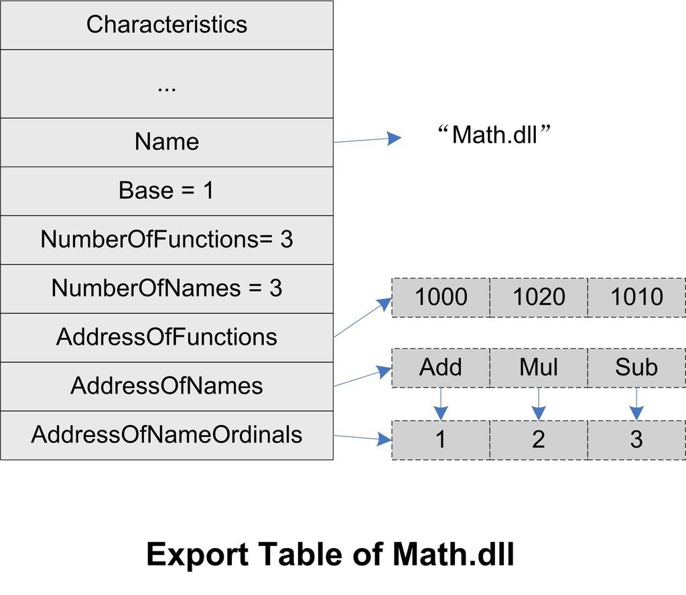
這3個陣列中，前兩個比較好理解。第一個叫做匯出地址表EAT，它存放的是各個匯出函式的RVA，比如第一項是0x1000，它是Add函式的RVA；第二個表是函式名錶，它儲存的是匯出函式的名字，這個表中，所有的函式名是按照ASCII順序排序的，以便於動態連結器在查詢函式名字時可以速度更快（可以使用二分法查詢），那麼函式名錶和EAT之間有什麼關係呢？是不是一一對應呢？在上面的例子中似乎是這樣的，比如Add對應0x1000，Mul對應0x1020，Sub對應0x1010，這樣看起來很簡單，但實際上並非如此，因為還有一個叫做序號的概念夾在這兩個表之間；第三個名字序號對應表就有點另類了，匯出一個函式除了函式名和函式地址不就夠了嗎？為什麼要有序號？什麼是序號？
序號（Ordinals）
這還得從很早以前說起，早期的Windows是16位的，當時的16位Windows沒有很好的虛擬記憶體機制，而且當時的硬體條件也不好，記憶體一般只有幾個MB。而函式名錶對於當時的Windows來說，其實是很奢侈的。比如一個user.dll有600多個匯出函式，如果把這些函式的函式名錶全部放在記憶體中的話，將會消耗幾十KB的空間。除了user.dll之外，程式還會用到其他DLL，對於記憶體空間以KB計的年代來說，這是不可以容忍的。於是當時DLL的函式匯出的主要方式是序號（Ordinals）。其實序號的概念很簡單，一個匯出函式的序號就是函式在EAT中的地址下標加上一個Base值（也就是IMAGE_EXPORT_DIRECTORY中的Base，預設情況下它的值是1）。比如上面的例子中，Mul的RVA為0x1020，它在EAT中的下標是1，加上一個Base值1，Mul的匯出序號為2。如果一個模組A匯入了Math.dll中的Add，那麼它在匯入表中將不儲存“Add”這個函式名，而是儲存Add函式的序號，即1。當動態連結器進行連結時，它只需要根據模組A的匯入表中儲存的序號1，減去Math.dll的Base值，得到下標0，然後就可以直接在Math.dll的EAT中找到Add函式的RVA。
使用序號匯入匯出的好處是明顯的，那就是省去了函式名查詢過程，函式名錶也不需要儲存在記憶體中了。那麼使用序號匯入匯出的問題是什麼？最大的問題是，一個函式的序號可能會變化。假設某一次更新中，Math.dll裡面新增了一個函式或者刪除了一個函式，那麼原先函式的序號可能會因此發生變化，從而導致已有的應用程式執行出現問題。一種解決的方案是，由程式設計師手工指定每個匯出函式的序號，比如我們指定Add的匯出序號為1，Mul為2，Sub為3，以後加入函式則指定一個與其他函式不同的唯一的序號，如果刪除一個函式，那麼保持現有函式的序號不變。這種手工指定函式匯出序號的方法可以透過連結器的.def檔案實現，我們在後面關於DLL最佳化的章節中還會再詳細介紹。
由程式設計師手工維護匯出序號的方法在實際操作中頗為麻煩，為了節省那麼一點點記憶體空間和並不明顯的查詢速度的提升（相對於現在的硬體條件），實在得不償失。於是現在的DLL基本都不採用序號作為匯入匯出的手段，而是直接使用符號名。這種手段就顯得直觀多了，更加便於理解和程式除錯（試想在除錯DLL時看到一個匯入函式是序號1或者是Add哪個更容易理解？），而且它不需要額外的手工維護，省去了很多繁瑣的工作。
雖然現在的DLL匯出方式基本都是使用符號名，但是實際上序號的匯出方式仍然沒有被拋棄。為了保持向後相容性，序號匯出方式仍然被保留，相反，符號名作為匯出方式是可選的。一個DLL中的每一個匯出函式都有一個對應唯一的序號值，而匯出函式名卻是可選的，也就是說一個匯出函式肯定有一個序號值（序號值是肯定有的，因為函式在EAT的下標加上Base就是序號值），但是可以沒有函式名。
瞭解了序號的概念之後，我們又回到了原來的那個問題，函式名和函式地址之間的關係是怎樣的呢？符號名錶和EAT的元素之間的對映關係又是怎樣的？
上面問題的答案必須透過第三個表，即名字序號對應表。這個表擁有與函式名錶一樣多數目的元素，每個元素就是對應的函式名錶中的函式名所對應的序號值，比如Add的序號值是1，Mul的序號值是2等。實際上它就是一個函式名與序號的對應關係表。
那麼使用函式名作為匯入匯出方式，動態連結器如何查詢函式的RVA呢？假設模組A匯入了Math.dll中的Add函式，那麼A的匯入表中就儲存了“Add”這個函式名。當進行動態連結時，動態連結器在Math.dll的函式名錶中進行二分查詢，找到“Add”函式，然後在名字序號對應表中找到“Add”所對應的序號，即1，減去Math.dll的Base值1，結果為0，然後在EAT中找到下標0的元素，即“Add”的RVA為0x1000。
從上面的Math.dll來看，3個表的結構都非常規則，元素數目相等，而且是一一對應的。但實際上這3個表的內容有可能變得不是很規則：假設我們在Math.dll中新增了一個函式叫做Div，它的RVA為0x1030，並且將它的序號值指定為5。為了保持原來的幾個匯出函式的序號值不變，我們手工指定原來的3個匯出函式的序號值分別為Add = 1，Mul = 2，Sub = 3。那麼Math.dll的3個表的內容將如圖9-3所示。
圖9-3 Math.dll匯出表結構（帶序號） …
對於連結器來說，它在連結輸出DLL時需要知道哪些函式和變數是要被匯出的，因為對於PE來說，預設情況下，全域性函式和變數是不匯出的。link連結器提供了了一個“/EXPORT”的引數可以指定匯出符號，比如：
link math.obj /DLL /EXPORT:_Add
就表示在產生math.dll時匯出符號_Add。另外一種匯出符號的方法是使用MSVC的__declspec(dllexport)擴充套件，它實際上是透過目的檔的編譯器指示來實現的（還記得前面關於PE/COFF目的檔的“.drectve”段的描述嗎？）。對於前面例子中的math.obj來說，它實際上在“.drectve”段中儲存了4個“/EXPORT”引數，用於傳遞給連結器，告知連結器匯出相應的函式：
dumpbin /DIRECTIVES math.obj Microsoft (R) COFF/PE Dumper Version 9.00.21022.08 Copyright (C) Microsoft Corporation. All rights reserved. Dump of file math.obj File Type: COFF OBJECT Linker Directives ----------------- /DEFAULTLIB:"LIBCMT" /DEFAULTLIB:"OLDNAMES" /EXPORT:_Add /EXPORT:_Sub /EXPORT:_Mul /EXPORT:_Div
9.2.2 EXP檔案
在建立DLL的同時也會得到一個EXP檔案，這個檔案實際上是連結器在建立DLL時的臨時檔案。連結器在建立DLL時與靜態連結時一樣採用兩遍掃描過程，DLL一般都有匯出符號，連結器在第一遍時會遍曆所有的目的檔並且收集所有匯出符號資訊並且建立DLL的匯出表。為了方便起見，連結器把這個匯出表放到一個臨時的目的檔叫做“.edata”的段中，這個目的檔就是EXP檔案，EXP檔案實際上是一個標準的PE/COFF目的檔，只不過它的副檔名不是.obj而是.exp。在第二遍時，連結器就把這個EXP檔案當作普通目的檔一樣，與其他輸入的目的檔連結在一起並且輸出DLL。這時候EXP檔案中的“.edata”段也就會被輸出到DLL檔案中並且成為匯出表。不過一般現在連結器很少會在DLL中單獨保留“.edata”段，而是把它合並到只讀資料段“.rdata”中。
9.2.3 匯出重定向
DLL有一個很有意思的機制叫做匯出重定向（Export Forwarding），顧名思義就是將某個匯出符號重定向到另外一個DLL。比如在Windows XP系統中，KERNEL32.DLL中的HeapAlloc函式被重新定向到了NTDLL.DLL中的RtlAllocHeap函式，呼叫HeapAlloc函式相當於呼叫RtlAllocHeap函式。如果我們要重新定向某個函式，可以使用模組定義檔案，比如HeapAlloc的重定向可以定義下面這樣一個“.DEF”檔案：
EXPORTS HeapAlloc = NTDLL.RtlAllocHeap
匯出重定向的實現機制也很簡單，正常情況下，匯出表的地址陣列中包含的是函式的RVA，但是如果這個RVA指向的位置位於匯出表中（我們可以得到匯出表的起始RVA和大小），那麼表示這個符號被重定向了。被重定向了的符號的RVA並不代表該函式的地址，而是指向一個ASCII的字串，這個字串在匯出表中，它是符號重定向後的DLL檔名和符號名。比如在這個例子中，這個字串就是“NTDLL.RtlAllocHeap”。
9.2.4 匯入表
如果我們在某個程式中使用到了來自DLL的函式或者變數，那麼我們就把這種行為叫做符號匯入（Symbol Importing）。在ELF中,“.rel.dyn”和“.rel.plt”兩個段中分別儲存了該模組所需要匯入的變數和函式的符號以及所在的模組等資訊，而“.got”和“.got.plt”則儲存著這些變數和函式的真正地址。Windows中也有類似的機制，它的名稱更為直接，叫做匯入表（Import Table）。當某個PE檔案被載入時，Windows載入器的其中一個任務就是將所有需要匯入的函式地址確定並且將匯入表中的元素調整到正確的地址，以實現動態連結的過程。
我們可以使用dumpbin來檢視一個模組依賴於哪些DLL，又匯入了哪些函式：
dumpbin /IMPORTS Math.dll
Microsoft (R) COFF/PE Dumper Version 9.00.21022.08
Copyright (C) Microsoft Corporation. All rights reserved.
Dump of file Math.dll
File Type: DLL
Section contains the following imports:
KERNEL32.dll
1000B000 Import Address Table
1000C5BC Import Name Table
0 time date stamp
0 Index of first forwarder reference
146 GetCurrentThreadId
110 GetCommandLineA
216 HeapFree
1E9 GetVersionExA
210 HeapAlloc
1A3 GetProcessHeap
1A0 GetProcAddress
17F GetModuleHandleA
B9 ExitProcess
365 TlsGetValue
363 TlsAlloc
366 TlsSetValue
364 TlsFree
22C InterlockedIncrement
328 SetLastError
171 GetLastError
228 InterlockedDecrement
356 Sleep
324 SetHandleCount
可以看到Math.dll從Kernel32.dll中匯入了諸如GetCurrentThreadId、GetCommandLineA等函式（大約有數十個，這裡省略了一部分）。可能你會覺得很奇怪，明明我們在Math.c裡面沒有用到這些函式，怎麼會出現在匯入列表之中？這是由於我們在構建Windows DLL時，還連結了支援DLL執行的基本執行庫，這個基本執行庫需要用到Kernel32.dll，所以就有了這些匯入函式。
在Windows中，系統的載入器會確保任何一個模組的依賴條件都得到滿足，即每個PE檔案所依賴的檔案都將被載入。比如一般Windows程式都會依賴於KERNEL32.DLL，而KERNEL32.DLL又會匯入NTDLL.DLL，即依賴於NTDLL.DLL，那麼Windows在載入該程式時確保這兩個DLL都被載入。如果程式用到了Windows GDI，那麼就會需要從GDI32.DLL中匯入函式，而GDI32.DLL又依賴於USER32.DLL、ADVAPI32.DLL、NTDLL.DLL和KERNEL32.DLL，Windows將會保證這些依賴關係的正確，並且保證所有的匯入符號都被正確地解析。在這個動態連結過程中，如果某個被依賴的模組無法正確載入，那麼系統將會提示錯誤（我們經常會看到那種“缺少某個DLL”之類的錯誤），並且終止執行該程式。
在PE檔案中，匯入表是一個IMAGE_IMPORT_DESCRIPTOR的結構體陣列，每一個IMAGE_IMPORT_DESCRIPTOR結構對應一個被匯入的DLL。這個結構體被定義在“Winnt.h”中：
typedef struct {
DWORD OriginalFirstThunk;
DWORD TimeDateStamp;
DWORD ForwarderChain;
DWORD Name;
DWORD FirstThunk;
} IMAGE_IMPORT_DESCRIPTOR;
結構體中的FirstThunk指向一個匯入地址陣列（Import Address Table），IAT是匯入表中最重要的結構，IAT中每個元素對應一個被匯入的符號，元素的值在不同的情況下有不同的含義。在動態連結器剛完成對映還沒有開始重定位和符號解析時，IAT中的元素值表示相對應的匯入符號的序號或者是符號名；當Windows的動態連結器在完成該模組的連結時，元素值會被動態連結器改寫成該符號的真正地址，從這一點看，匯入地址陣列與ELF中的GOT非常類似。
那麼我們如何判斷匯入地址陣列的元素中包含的是匯入符號的序號還是符號的名字？事實上我們可以看這個元素的最高位，對於32位的PE來說，如果最高位被置1，那麼低31位值就是匯入符號的序號值；如果沒有，那麼元素的值是指向一個叫做IMAGE_IMPORT_BY_NAME結構的RVA。IMAGE_IMPORT_BY_NAME是由一個WORD和一個字串組成，那個WORD值表示“Hint”值，即匯入符號最有可能的序號值，後面的字串是符號名。當使用符號名匯入時，動態連結器會先使用“Hint”值的提示去定位該符號在目標匯出表中的位置，如果剛好是所需要的符號，那麼就命中；如果沒有命中，那麼就按照正常的二分查詢方式進行符號查詢。
在IMAGE_IMPORT_DESCRIPTOR結構中，還有一個指標OriginalFirstThrunk指向一個陣列叫做匯入名稱表（Import Name Table），簡稱INT。這個陣列跟IAT一摸一樣，裡面的數值也一樣。那麼為什麼要多儲存一份IAT的副本呢？答案我們將在後面的DLL繫結中揭曉（見圖9-4）。
圖9-4 TestMath.exe匯入表 …
Windows的動態連結器會在載入一個模組的時候，改寫匯入表中的IAT，這一點很像ELF中的.got。其區別是，PE的匯入表一般是只讀的，它往往位於“.rdata”這樣的段中。這樣就產生了一個問題，對於一個只讀的段，動態連結器是怎麼改寫它的呢？解決方法是這樣的，對於Windows來說，由於它的動態連結器其實是Windows核心的一部分，所以它可以隨心所欲地修改PE載入以後的任意一部分內容，包括內容和它的頁面屬性。Windows的做法是，在載入時，將匯入表所在的位置的頁面改成可讀寫的，一旦匯入表的IAT被改寫完畢，再將這些頁面設回至只讀屬性。從某些角度來看，PE的做法比ELF要更加安全一些，因為ELF執行程式隨意修改.got，而PE則不允許。
延遲載入（Delayed Load）
Visual C++ 6.0開始引入了一個叫做延遲載入的新功能，這個功能有點類似於隱式載入和顯式載入的混合體。當你連結一個支援延遲載入的DLL時，連結器會產生與普通DLL匯入非常類似的資料。但是作業系統會忽略這些資料。當延遲載入的API第一次被呼叫時，由連結器新增的特殊的樁程式碼就會啟動，這個樁程式碼負責對DLL的載入工作。然後這個樁程式碼透過呼叫GetProcAddress來找到被呼叫API的地址。另外MSVC還做了一些額外的最佳化，使得接下來的對該DLL的呼叫速度與普通方式載入的DLL的速度相差無異。
9.2.5 匯入函式的呼叫
接下來我們來看看Windows PE對於匯入函式是怎麼呼叫的？__declspec(dllimport)又有什麼作用？
如果在PE的模組中需要呼叫一個匯入函式，仿照ELF GOT機制的一個辦法就是使用一個間接呼叫指令，比如：
CALL DWORD PTR [0x0040D11C]
我們在Windows下也入鄉隨俗，使用微軟組譯器語法。如果你不熟悉微軟組譯器語法也沒多大關係，上面這條指令的意思是間接呼叫0x0040D11C這個地址中儲存的地址，即從地址0x0040D11C開始取4個位元組作為目標地址（DWORD PTR表示4個位元組的操作字首），然後呼叫該目標地址。而0x0040D11C這個地址剛好是IAT中的某一項，即我們需要呼叫的外部函式在IAT中所對應的元素，比如TestMath.exe中，我們需要呼叫Math.dll中的Sub函式，那麼0x0040D11C正好對應Sub匯入函式在TestMath.exe的IAT中的位置。這個過程跟ELF透過GOT間接跳轉十分類似，IAT相當於GOT（不考慮PLT的情況下）。
PE DLL的地址無關性
如果ELF呼叫者本身所在的模組是地址無關的，那麼透過GOT跳轉之前，需要計算目標函式地址在GOT中的位置，然後再間接跳轉，以實現地址無關，這個原理我們在前面已經很詳細地分析過了。但是在這個現實方法中，我們可以看到，這個0x0040D11C是作為常量被寫入在指令中。而且事實上，PE對匯入函式呼叫的真正實現中，它的確是這麼做的，由此我們可以得出結論，PE DLL的程式碼段並不是地址無關的。
那麼PE是如何解決載入時模組在程式空間中地址衝突的問題的呢？事實上它使用了一種叫做重定基地址的方法，我們在後面將會詳細介紹。
PE採用上面的這個方法實現匯入函式的呼叫，但是與ELF一樣存在一個問題：對於編譯器來說，它無法判斷一個函式是本模組內部的，還是從外部匯入的。因為對於普通的模組內部函式呼叫來說，編譯器產生的指令是這樣的：
CALL XXXXXXXX
因為PE沒有類似ELF的共享物件有全域性符號介入的問題，所以對於模組內部的全域性函式呼叫，編譯器產生的都是直接呼叫指令。
其中XXXXXXXX是模組內部的函式地址。這是一個直接呼叫指令，與上面的間接呼叫指令形式不同。所以為了使得編譯器能夠區分函式是從外部匯入的還是模組內部定義的，MSVC引入了我們前面用過的擴充套件屬性“__declspec(dllimport)”，一旦一個函式被宣告為“__declspec(dllimport)”，那麼編譯器就知道它是外部匯入的，以便於產生相應的指令形式。
在“__declspec”關鍵字引入之前，微軟還提供了另外一個方法來解決這個問題。在這種情況下，對於匯入函式的呼叫，編譯器並不區分匯入函式和匯出函式，它統一地產生直接呼叫的指令。但是連結器在連結時會將匯入函式的目標地址導向一小段樁程式碼（Stub），由這個樁程式碼再將控制權交給IAT中的真正目標地址，實現如下：
CALL 0x0040100C ... 0x0040100C: JMP DWORD PTR [0x0040D11C]
即對於呼叫函式來說，它只是產生一般形式的指令“CALL XXXXXXXX”，然後在連結時，連結器把這個XXXXXXXX地址重定位到一段樁程式碼，即那條JMP指令處，然後這條JMP指令才透過IAT間接跳轉到匯入函式。我們知道，連結器一般情況下是不會產生指令的，那麼這段包含JMP指令的樁程式碼來自何處呢？答案是來自產生DLL檔案時伴隨的那個LIB檔案，即匯入庫。
編譯器在產生匯入庫時，同一個匯出函式會產生兩個符號的定義，比如對於函式foo來說，它在匯入庫中有兩個符號，一個是foo，另外一個是__imp__foo。這兩個符號的區別是，foo這個符號指向foo函式的樁程式碼，而__imp__foo指向foo函式在IAT中的位置。所以當我們透過“__declspec(dllimport)”來宣告foo匯入函式時，編譯器在編譯時會在該匯入函式前加上字首“__imp__”，以確保跟匯入庫中的“__imp__foo”能夠正確連結；如果不使用“__declspec(dllimport)”，那麼編譯器將產生一個正常的foo符號引用，以便於跟匯入庫中的foo符號定義相連結。
現在的MSVC編譯器對於以上兩種匯入方式都支援，即程式設計師可以透過“__declspec(dllimport)”來宣告匯入函式，也可以不使用。但我們還是推薦使用“__declspec(dllimport)”，畢竟從效能上來講，它比不使用該宣告少了一條跳轉指令。當然它還有其他的好處，我們到後面用到時還會提起。
9.3 DLL最佳化
我們在前面經過對DLL的分析得知，DLL的程式碼段和資料段本身並不是地址無關的，也就是說它預設需要被載入到由ImageBase指定的目標地址中。如果目標地址被佔用，那麼就需要載入到其他地址，便會引起整個DLL的Rebase。這對於擁有大量DLL的程式來說，頻繁的Rebase也會造成程式啟動速度減慢。這是影響DLL效能的另外一個原因。
我們知道動態連結過程中，匯入函式的符號在執行時需要被逐個解析。在這個解析過程中，免不了會涉及到符號字串的比較和查詢過程，這個查詢過程中，動態連結器會在目標DLL的匯出表中進行符號字串的二分查詢。即使是使用了二分查詢法，對於擁有DLL數量很多，並且有大量匯入匯出符號的程式來說，這個過程仍然是非常耗時的。這是影響DLL效能的一個原因之一。
這兩個原因可能會導致應用程式的速度非常慢，因為系統需要在啟動程式時進行大量的符號解析和Rebase工作。
9.3.1 重定基地址（Rebasing）
從前面DLL的匯入函式的實現，我們得出結論：PE的DLL中的程式碼段並不是地址無關的，也就是說它在被載入時有一個固定的目標地址，這個地址也就是PE裡面所謂的基地址（Base Address）。預設情況下，PE檔案將被載入到這個基地址。一般來說，EXE檔案的基地址預設為0x00400000，而DLL檔案基地址預設為0x10000000。
我們前面花了很多篇幅討論了為什麼對於一個ELF共享物件，它的程式碼段要做到地址無關，並且討論了地址無關的實現。這一點對於DLL來說也一樣，一個程式中，多個DLL不可以被載入到同一個虛擬地址，每個DLL所佔用的虛擬地址區域之間都不可以重疊。
在討論共享物件的地址衝突問題時，我們已經介紹過了，有3種方案可供選擇。一個辦法是像靜態共享物件那樣，為每個DLL指定一個基地址，並且人為保證同一個程式中這些DLL的地址區域都不相互重疊，但是這樣做會有很多問題，在前面介紹靜態共享物件的時候已經討論過，這種將模組目標地址固定的做法有很多弊端。另外一個辦法就是ELF所採用的辦法，那就是程式碼段地址無關。
Windows PE採用了一種與ELF不同的辦法，它採用的是載入時重定位的方法。在DLL模組載入時，如果目標地址被佔用，那麼作業系統就會為它分配一塊新的空間，並且將DLL載入到該地址。這時候問題來了，因為DLL的程式碼段不是地址無關的，DLL中所有涉及到絕對地址的引用該怎麼辦呢？答案是對於每個絕對地址引用都進行重定位。
當然，這個重定位過程有些特殊，因為所有這些需要重定位的地方只需要加上一個固定的差值，也就是說加上一個目標載入地址與實際載入地址的差值。我們來看一個例子，比如有一個DLL的基地址是0x10000000，那麼如果它的程式碼中有這樣一條指令：
MOV DWORD PTR [0x10001000], 0x100
事實上，由於DLL內部的地址都是基於基地址的，或者是相對於基地址的RVA。那麼所有需要重定位的地方都只需要加上一個固定差值，在這個例子裡面是0x10000000。所以這個重定位的過程相對簡單一點，速度也要比一般的重定位要快。PE裡面把這種特殊的重定位過程又被叫做重定基地址（Rebasing）。
PE檔案的重定位資訊都放在了“.reloc”段，我們可以從PE檔案頭中的DataDirectory裡面得到重定位段的資訊。重定位段的結構跟ELF中的重定位段結構十分類似，在這裡就不再詳細介紹了。對於EXE檔案來說，MSVC編譯器預設不會產生重定位段，也就是預設情況下，EXE是不可以重定位的，不過這也沒有問題，因為EXE檔案是程式執行時第一個裝入到虛擬空間的，所以它的地址不會被人搶佔。而DLL則沒那麼幸運了，它們被載入的時間是不確定的，所以一般情況下，編譯器都會給DLL檔案產生重定位資訊。當然你也可以使用“/FIXED”引數來禁止DLL產生重定位資訊，不過那樣可能會造成DLL的載入失敗。
這種重定基地址的方法導致的一個問題是，如果一個DLL被多個程式共享，且該DLL被這些程式載入到不同的位置，那麼每個程式都需要有一份單獨的DLL程式碼段的副本。很明顯，這種方案相對於ELF的共享物件程式碼段地址無關的方案來說，它更加浪費記憶體，而且當被重定基址的程式碼段需要被換出時，它需要被寫到交換空間中，而不像沒有重定基址的DLL程式碼段，只需要釋放物理頁面，再次用到時可以直接從DLL檔案裡面重新讀取程式碼段即可。但是有一個好處是，它比ELF的PIC機制有著更快的執行速度。因為PE的DLL對資料段的訪問不需要透過類似於GOT的機制，對於外部資料和函式的引用不需要每次都計算GOT的位置，所以理論上會比ELF的PIC的方案快一些。這又是一個空間換時間的案例。
改變預設基地址
前面的重定基地址過程實際上是在DLL檔案載入時進行的，所以又叫做載入時重定位。對於一個程式來說，它所用到的DLL基本是固定的（除了透過LoadLibrary()載入的以外）。程式每次執行時，這些DLL的載入順序和地址也是一樣的。比如一個程式由程式主模組main.exe、foo.dll和bar.dll 3個模組組成，它們的大小都是64 KB。於是當程式執行起來以後程式虛擬地址空間的佈局應該如表9-1所示。
表9-1 …
可以看到bar.dll原先預設的基地址是0x10000000，但是它被重定基址到了0x10010000，因為0x10000000到0x10010000這塊地址被先前載入的foo.dll佔用了（假設foo.dll比bar.dll先載入）。那麼既然bar.dll每次執行的時候基地址都是0x10010000，為什麼不把它的基地址就設成0x10010000呢？這樣就省掉了bar.dll每次載入時重定基址的過程，不是可以讓程式執行得更快嗎？
MSVC的連結器提供了指定輸出檔案的基地址的功能。那麼可以在連結時使用link命令中的“/BASE”引數為bar.dll指定基地址：
link /BASE:0x10010000, 0x10000 /DLL bar.obj
這個基地址必須是64 K的倍數，如果不是64 K的倍數，連結器將發出錯誤。這裡還有一個引數0x10000是指DLL佔用空間允許的最大的長度，如果超出這個長度，那麼編譯器會給出警告。這個看似沒用的選項實際上非常有用，比如我們的程式中用到了10個DLL，那麼我們就可以為每個DLL手工指定一塊區域，以防止它們在地址空間中相互衝突。假設我們為bar.dll指定的空間是0x10010000到0x10020000這塊空間，那麼在使用“/BASE”引數時，我們不光指定bar.dll的起始地址，還指定它的最長的長度。如果超出這個長度，它就會佔用其他DLL的地址塊，如果連結器能夠給出警告的話，我們就很快能發現問題並且進行調整。
除了在連結時可以指定DLL的基地址以外，MSVC還提供了一個叫做editbin的工具（早期版本的MSVC提供一個叫rebase.exe的工具），這個工具可以用來改變已有的DLL的基地址。比如：
editbin /REBASE:BASE=0x10020000 bar.dll
系統DLL
由於Windows系統本身自帶了很多系統的DLL，比如kernel32.dll、ntdll.dll、shell32.dll、user32.dll、msvcrt.dll等，這些DLL基本上是Windows的應用程式執行時都要用到的。Windows系統就在程式空間中專門劃出一塊0x70000000～0x80000000區域，用於對映這些常用的系統DLL。Windows在安裝時就把這塊地址分配給這些DLL，調整這些DLL的基地址使得它們相互之間不衝突，從而在載入時就不需要進行重定基址了。比如在我的機器中，這些DLL的基地址如表9-2所示。
表9-2 …
9.3.2 序號
一個DLL中每一個匯出的函式都有一個對應的序號（Ordinal Number）。一個匯出函式甚至可以沒有函式名，但它必須有一個唯一的序號。另一方面，當我們從一個DLL匯入一個函式時，可以使用函式名，也可以使用序號。序號標示被匯出函式地址在DLL匯出表中的位置。
一般來說，那些僅供內部使用的匯出函式，它只有序號沒有函式名，這樣外部使用者就無法推測它的含義和使用方法，以防止誤用。對於大多數Windows API函式來說，它們的函式名在各個Windows版本之間是保持不變的，但是它們的序號是在不停地變化的。所以，如果我們匯入Windows API的話，絕對不能使用序號作為匯入方法。
在產生一個DLL檔案時，我們可以在連結器的.def檔案中定義匯出函式的序號。比如對於前面的Math.dll的例子，假設有如下.def檔案：
LIBRARY Math EXPORTS Add @1 Sub @2 Mul @3 Div @4 NONAME
上面的.def檔案可以用於指定Math.dll的匯出函式的序號，@後面所跟的值就是每個符號的序號值。對於Div函式，序號值後面還有一個NONAME，表示該符號僅以序號的形式匯出，即Math.dll的使用者看不到Div這個符號名，只能看到序號為4的一個匯出函式：
cl /c Math.c
link /DLL /DEF:Math.def Math.obj
dumpbin /EXPORTS Math.dll
…
ordinal hint RVA name
1 0 00001000 Add
3 1 00001020 Mul
2 2 00001010 Sub
4 00001030 [NONAME]
使用序號作為匯入方法比函式名匯入方法稍微快一點點，特別在現在的硬體條件下，這種效能的提高極為有限，而且DLL的匯入函式的查詢並不是效能瓶頸。因為在現在的DLL中，匯出函式表中的函式名是經過排序的，查詢的時候可以使用二分查詢法。最初在16位的Windows下，DLL的匯出函式名不是排序的，所以查詢過程會比較慢。所以綜合來看，一般情況下並不推薦使用序號作為匯入匯出的手段。
9.3.3 匯入函式繫結
試想一下，每一次當一個程式執行時，所有被依賴的DLL都會被載入，並且一係列的匯入匯出符號依賴關係都會被重新解析。在大多數情況下，這些DLL都會以同樣的順序被載入到同樣的記憶體地址，所以它們的匯出符號的地址都是不變的。既然它們的地址都不變，每次程式執行時都要重新進行符號的查詢、解析和重定位，是不是有些浪費呢？如果把這些匯出函式的地址儲存到模組的匯入表中，不就可以省去每次啟動時符號解析的過程嗎？這個思路是合理的，這種DLL效能最佳化方式被叫做DLL繫結（DLL Binding）。DLL繫結方法很簡單，我們可以使用editbin（之前的MSVC提供一個額外的bind.exe用於DLL繫結）這個工具對EXE或DLL進行繫結：
editbin /BIND TestMath.exe
dumpbin /IMPORTS TestMath.exe
Microsoft (R) COFF/PE Dumper Version 9.00.21022.08
Copyright (C) Microsoft Corporation. All rights reserved.
Dump of file TestMath.exe
File Type: EXECUTABLE IMAGE
Section contains the following imports:
Math.dll
40D11C Import Address Table
40E944 Import Name Table
FFFFFFFF time date stamp
FFFFFFFF Index of first forwarder reference
10001010 2 Sub
KERNEL32.dll
40D000 Import Address Table
40E828 Import Name Table
FFFFFFFF time date stamp
FFFFFFFF Index of first forwarder reference
7C8099B0 143 GetCurrentProcessId
…
Header contains the following bound import information:
Bound to Math.dll [483A6707] Mon May 26 15:30:15 2008
Bound to KERNEL32.dll [4802A12C] Mon Apr 14 08:11:24 2008
Contained forwarders bound to NTDLL.DLL [4802A12C] Mon Apr 14 08:11:24 2008
…
DLL的繫結實現也比較簡單，editbin對被繫結的程式的匯入符號進行遍曆查詢，找到以後就把符號的執行時的目標地址寫入到被繫結程式的匯入表內。還記得前面介紹PE的匯入表中有個與IAT一樣的陣列叫做INT，這個陣列就是用來儲存繫結符號的地址的。
那麼什麼情況會導致DLL繫結的那些地址失效呢？一種情況是，被依賴的DLL更新導致DLL的匯出函式地址發生變化；另外一種情況是，被依賴的DLL在載入時發生重定基址，導致DLL的載入地址與被繫結時不一致。那麼如果地址失效，而被繫結的EXE或者DLL還使用失效了的地址的話，必然會導致程式執行錯誤。Windows必須提供相應的機制來保證繫結地址失效時，程式還能夠正確執行。
對於第一種情況的失效，PE的做法是這樣的，當對程式進行繫結時，對於每個匯入的DLL，連結器把DLL的時間戳（Timestamp）和校驗和（Checksum，比如MD5）儲存到被繫結的PE檔案的匯入表中。在執行時，Windows會核對將要被載入的DLL與繫結時的DLL版本是否相同，並且確認該DLL沒有發生重定基址，如果一切正常，那麼Windows就不需要再進行符號解析過程了，因為被載入的DLL與繫結時一樣，沒有發生變化；否則Windows就忽略繫結的符號地址，按照正常的符號解析過程對DLL的符號進行解析。
繫結過的執行檔如果在執行時的環境與它在繫結時的環境一樣，那麼它的載入速度將會比正常情況下快；如果是在不同的執行環境，那麼它的啟動速度跟沒繫結的情況下沒什麼兩樣。所以總的來說，DLL繫結至少不會有壞處。
事實上，Windows系統所附帶的程式都是與它所在的Windows版本的系統DLL繫結的。除了在編譯時可以繫結程式，另外一個繫結程式的很好的機會是在程式安裝的時候，這樣至少在DLL升級之前，這些“繫結”都是有效的。當然，繫結過程會改變執行檔本身，從而導致了執行檔的校驗和變化，這對於一些經過加密的，或者是經過數字簽名的程式來說可能會有問題。比如我們檢視Windows所附帶的Notepad.exe：
dumpbin /IMPORTS C:\WINDOWS\notepad.exe
…
Header contains the following bound import information:
Bound to comdlg32.dll [4802A0C9] Mon Apr 14 08:09:45 2008
Bound to SHELL32.dll [4802A111] Mon Apr 14 08:10:57 2008
Bound to WINSPOOL.DRV [4802A127] Mon Apr 14 08:11:19 2008
Bound to COMCTL32.dll [4802A094] Mon Apr 14 08:08:52 2008
Bound to msvcrt.dll [4802A094] Mon Apr 14 08:08:52 2008
Bound to ADVAPI32.dll [4802A0B2] Mon Apr 14 08:09:22 2008
Bound to KERNEL32.dll [4802A12C] Mon Apr 14 08:11:24 2008
Contained forwarders bound to NTDLL.DLL [4802A12C] Mon Apr
14 08:11:24 2008
Bound to GDI32.dll [4802A0BE] Mon Apr 14 08:09:34 2008
Bound to USER32.dll [4802A11B] Mon Apr 14 08:11:07 2008
9.4 C++與動態連結
Linux下的絕大部分共用函式庫都是用C語言編寫的，這一方面是由於歷史的原因，Linux下的程式主要都是使用C語言；另一方面是由於使用C++語言編寫共用函式庫比使用C語言要複雜得多。在本書的第2部分，我們已經討論了C++的ABI以及C和C++之間如何互操作的問題（用extern “C”）。除了上面這些問題之外，使用C++編寫共用函式庫還存在一個更大的問題是：共用函式庫會更新。共用函式庫可以單獨更新是它的一大優勢，但如果這是一個C++編寫的共用函式庫，那又是另外一回事了，它有可能是一場噩夢。這一切噩夢的根源還是由於C++的標準只規定了語言層面的規則，而對二進位級別卻沒有任何規定。
《COM本質論》裡面舉了一個很生動的例子。假設有個程式設計師實現了一個複雜度為O(1)的字串查詢演算法，這個演算法非常有用，於是該程式設計師打算把這個演算法做成DLL並且賣給各大計算機軟體廠商和軟體開發者，每份DLL的價格是100元。程式設計師是這樣定義他的排序演算法標頭檔：
class __declspec(dllexport) StringFind {
char* p; // 字符串
public:
StringFind(char* p);
~StringFind();
int Find(char* p); // 查找字符串並返回找到的位置
int Length(); // 返回字符串長度
};
Find()成員函式的作用是查詢字串並返回查詢結果。當然Find演算法的具體實現非常複雜，執行時佔用數十M記憶體，程式設計師把實現程式碼編譯成StringFind.DLL，然後對該DLL的程式碼進行加密後與標頭檔一起出售，防止使用者透過反向工程對該排序演算法進行破解。很快，這個演算法受到了各大廠商的好評，大家普遍認為這個100元的StringFind.DLL非常物美價廉。程式設計師也很受鼓舞，決定再接再厲，對演算法進行改進： 第一個是Length()函式之前是呼叫strlen(this->p)實現的，時間複雜度為O(n)，改進後的類裡面增加了int length成員變數用於儲存字串長度，時間複雜度變成了O(1)；第二個改進是應一些使用者的要求，增加了一個叫做SubString的函式，用於取得字串的子串;第三個是對Find()演算法實現進行了改進，使得原先要佔有數十M記憶體降低到只佔用數M記憶體。改進後的標頭檔原始碼如下：
class __declspec(dllexport) StringFind {
char* p;
int length;
public:
StringFind(char* p);
~StringFind();
int Find(char* p);
int Length();
char* SubString(int pos, int len);
};
按照程式設計師最初的設想，類只增加了一個私有成員變數和公有成員函式，並不會對現有的程式有任何影響，他用一些測試的程式碼進行了測試，發現沒有任何編譯錯誤和執行錯誤。於是他就把新版的StringFind.DLL以200元的價格賣出，而那些原先購買了舊版StringFind.DLL的使用者只需要加100元的差價就可以購買新版的DLL。由於新版的DLL諸多效能改進和功能增加，各大廠商和使用者立即購買了新版的DLL，並且他們得到程式設計師的保證：新版的DLL與舊版的DLL完全相容。拿到該排序演算法的DLL後，廠商們將它廣泛地用於各種產品，並且隨著他們的產品光碟、網際網路下載各種手段發布給終端使用者；已經發布出去的使用舊版StringFind.DLL的程式也都收到了一個補丁升級包，號稱只要安裝該補丁，原先的程式就會執行得更快更有效，於是大多數的使用者不假思索地就點選了“升級”按鈕。
很快廠商們接到使用者鋪天蓋地的抱怨，說他們的程式經常莫名其妙地錯誤或者執行時間一長就會佔用大量的記憶體最終導致程式崩潰，甚至影響其他程式的執行。於是這些廠商的技術工程師們連夜對他們的程式進行排查，最終發現這些問題全都來自於StringFind.DLL。主要發現了下面幾個問題：
• 按照介面的設計，SubString返回指向字串子串的指標，但StringFind.DLL並不負責該返回指標的記憶體釋放工作，使用者在用完該指標之後需要呼叫delete對它進行釋放。這在有些時候是沒有問題的，但是如果StringFind.DLL所使用的CRT版本與使用者主程式或者其他DLL所使用的CRT版本不一樣，程式就會發生記憶體釋放錯誤。由於每個CRT都會有自己獨立的堆，在一個CRT中申請記憶體而在另外一個CRT中釋放記憶體將會導致釋放出錯。
• 各個廠商對DLL檔案升級的做法往往就是簡單地用新版的DLL覆蓋舊版的DLL，這也是基於程式設計師保證新版完全相容舊版DLL的基礎上。但是當StringFind類在增加了一個length成員變數之後，新版的StringFind物件所佔用的空間是8個位元組，而原先只有一個成員變數時只佔用4個位元組。那麼原先程式主模組在對StringFind進行例項化時，實際上是相當於例項化了舊版的StringFind。比如舊版中有new StringFind()這樣的語句，實際上它的作用相當於申請4個位元組的記憶體，然後呼叫StringFind()初始化函式。但是在新版的StringFind中，StringFind.DLL裡面的StringFind建構函式和Length()都認為StringFind物件有8個位元組，當任何一個函式訪問length變數的時候實際上這塊區域並不屬於StringFind物件，很容易出現錯誤的資料訪問，導致程式莫名其妙地崩潰。
• 很多程式在安裝時就把StringFind.DLL放到系統的DLL目錄下\WINDOWS\System32，而在升級或者重新安裝時採用簡單覆蓋的方法。於是當一個安裝程式將新版的StringFind.DLL覆蓋舊版的DLL時，所有使用舊版DLL的程式都會發生程式執行錯誤。
在發生這一大堆問題之後，程式設計師受不了廠商的抱怨只好徹夜工作，並提出了一些改進的方法，比如增加一個ReleaseString()的成員類來釋放SubString()所返回的字串；將新版的StringFind.DLL命名為StringFind2.DLL以區別舊版等。一個簡單的改進都成了程式設計師的噩夢，他都不敢再做任何深入的改進了，更別說在DLL中使用C++的其他特性諸如虛擬函式、多繼承、異常、過載、模板等，誰知道又會發生什麼樣的情況。
這只是程式設計師在使用C++編寫DLL時遇到的問題中的冰山一角，為瞭解決類似的相容性問題，更大程度上使得程式能夠有更好的重用性，微軟公司很早就開始了元件物件模型（COM，Component object model）的開發工作，它的主要目的之一就是為瞭解決這些在程式開發中遇到的相容性問題。
推薦閱讀：《COM本質論》
《COM本質論》是一本很好的描述COM實現機制的一本書，作者Don Box透過生動的例子，深入淺出地將COM這個晦澀的技術剖析地非常淺顯易懂。本文中的例子也是來源於這本書中的一個例子並加以改進。
COM的實現機制對於普通開發者來說顯得複雜了一些，並且COM的學習曲線也比較陡，不太容易入門。但是我們可以把COM的一些精神提取出來，用於指導我們使用C++編寫動態連結庫。在Windows平台下（有些意見對Linux/ELF也有效），要盡量遵循以下幾個指導意見：
所有的介面函式都應該是抽象的。所有的方法都應該是純虛的。（或者inline的方法也可以）。
所有的全域性函式都應該使用extern“C”來防止名字修飾的不相容。並且匯出函式的都應該是__stdcall呼叫規範的（COM的DLL都使用這樣的規範）。這樣即使使用者本身的程式是預設以__cdecl方式編譯的，對於DLL的呼叫也能夠正確。
不要使用C++標準庫STL。
不要使用異常。
不要使用虛解構函式。可以建立一個destroy()方法並且過載delete運算子並且呼叫destroy()。
不要在DLL裡面申請記憶體，而且在DLL外釋放（或者相反）。不同的DLL和執行檔可能使用不同的堆，在一個堆裡面申請記憶體而在另外一個堆裡面釋放會導致錯誤。比如，對於記憶體分配相關的函式不應該是inline的，以防止它在編譯時被展開到不同的DLL和執行檔。
不要在介面中使用過載方法（Overloaded Methods，一個方法多重引數）。因為不同的編譯器對於vtable的安排可能不同。
9.5 DLL HELL
DLL跟ELF類似也有版本更新時發生不相容的問題，我們在前面的關於C++和DLL的小節中也領教了DLL不相容問題的嚴重性。由於Windows中使用DLL比Linux中使用共用函式庫範圍更大，更新也更頻繁，並且早期的Windows缺乏一種很有效的DLL版本控制機制，從而導致這個問題在Windows下非常嚴重，以至於被人戲稱為DLL噩夢（DLL hell）。
很多Windows的應用程式在發布時會將它們所有需要用到的DLL都一起打包發布，很多應用程式的安裝程式並不是很成熟，經常在安裝時將一個舊版的DLL覆蓋掉一個更新版本的DLL，從而導致其他的應用程式執行失敗。有些安裝程式比較友好，如果碰到需要覆蓋新版的DLL時，它會彈出一個對話方塊提醒使用者是否要覆蓋，但是即使這樣，有些應用程式只能執行在舊版的DLL下，如果不覆蓋，那麼它可能無法在新版的DLL中執行。總得說來，三種可能的原因導致了DLL Hell的發生：
一是由使用舊版本的DLL替代原來一個新版本的DLL而引起。這個原因最普遍，是Windows 9x使用者通常遇到的問題DLL錯誤之一。
二是由新版DLL中的函式無意發生改變而引起。盡管在設計DLL時候應該“向下”相容，然而要保證DLL完全“向下”相容卻是不可能的。
三是由新版DLL的安裝引入一個新BUG.。這個原因發生的機率最小，但是它仍然會發生。
解決DLL Hell的方法
DLL的作用已經在前面介紹過，下面我們介紹幾種預防DLL Hell的方法。
靜態連結（Static linking）
對付DLL Hell的最簡單方法，或者說終極方法就是，在編譯產生應用程式時使用靜態連結的方法連結它所需要的執行庫，從而避免使用動態連結。這樣，在執行應用程式時候就不需要依賴DLL了。然而，它會喪失使用動態連結帶來的好處。
防止DLL覆蓋（DLL Stomping）
在Windows中，DLL的覆蓋問題可以使用 Windows 檔案保護（Windows File Protection簡稱WFP）技術來緩解。該技術從Windows 2000版本開始被使用。它能阻止未經授權的應用程式覆蓋系統的DLL。第三方應用程式不能覆蓋作業系統DLL檔案，除非它們的安裝程式捆綁了Windows 更新包，或者在它們的安裝程式執行時禁止了WFP服務（當然這是一件非常危險的事情）。
避免DLL衝突 （Conflicting DLLs）
解決不同應用程式依賴相同DLL不同版本的問題一個方案就是，讓每個應用程式擁有一份自己依賴的DLL，並且把問題DLL的不同版本放到該應用程式的資料夾中，而不是系統資料夾中。當應用程式需要裝置DLL時候，首先從自己的資料夾下尋找所需要的DLL,然後再到系統檔案中尋找。
.NET下DLL Hell的解決方案
在.NET框架中，一個程式集（Assembly）有兩種型別：應用程式程式（也就是exe執行檔）集以及庫程式（也就是DLL動態連結庫）集。一個程式集包括一個或多個檔案，所以需要一個清單檔案來描述程式集。這個清單檔案叫做Manifest檔案。Manifest檔案描述了程式集的名字，版本號以及程式集的各種資源，同時也描述了該程式集的執行所依賴的資源，包括DLL以及其他資原始檔等。Manifest是一個XML的描述檔案。每個DLL有自己的manifest檔案，每個應用程式也有自己的Manifest。對於應用程式而言，manifest檔案可以和執行檔在同一目錄下，也可以是作為一個資源嵌入到執行檔的內部(Embed Manifest)。
XP以前的windows版本，在執行執行檔是不會考慮manifest檔案的。它會直接到system32的目錄下查詢該執行檔所依賴的DLL。在這種情況下，Manifest只是個多餘的檔案。而XP以後的作業系統，在執行執行檔時則會首先讀取程式集的manifest檔案，獲得該執行檔需要呼叫的DLL列表，作業系統再根據DLL的manifest檔案去尋找對應的DLL並呼叫。一個典型的manifest檔案的例子如下：
<?xml version="1.0" encoding="UTF-8" standalone="yes"?>
<assembly xmlns="urn:schemas-microsoft-com:asm.v1" manifestVersion="1.0">
<trustInfo xmlns="urn:schemas-microsoft-com:asm.v3">
<security>
<requestedPrivileges>
<requestedExecutionLevel level="asInvoker" uiAccess="false"></requestedExecutionLevel>
</requestedPrivileges>
</security>
</trustInfo>
<dependency>
<dependentAssembly>
<assemblyIdentity type="win32" name="Microsoft.VC90.DebugCRT" version="9.0.21022.8" processorArchitecture="x86" publicKeyToken="1fc8b3b9a1e18e3b"></assemblyIdentity>
</dependentAssembly>
</dependency>
</assembly>
在這個例子中，<dependency>這一部分指明瞭其依賴於一個名字叫做Microsoft.VC90. CRT的庫。但是我們發現，<assemblyIdentity>屬性裡面還有其他的資訊，分別是type系統型別，version版本號，processorArchitecture平台環境，publicKeyToken公匙。所有這些加在一起就成了“強檔名”。有了這種“強檔名”，我們就可以根據其區分不同的版本、不同的平台。有了這種強檔名，系統中可以有多個不同版本的相同的庫共存而不會發生衝突。
從Windows XP開始，可供應用程式並發使用的並行配件組越來越多。載入程式透過清單和配件的版本號為應用程式確定準確的繫結版本。下圖是並行程式集，它的manifest檔案及應用程式之間一起協同工作的例項如圖9-5所示。
圖9-5 Manifest與DLL載入 …
圖9-5中的SxS Manager就是Side-by-side Manager, 它利用程式集manifest檔案的描述，實現對相應版本的DLL的載入。在這個例子中，我們假設系統中存在兩個版本的MSVCR90D.DLL：版本 9.0.21022.8 和版本 9.0.68812.7，都是在並行程式集cache中。當應用程式需要載入DLL時候，並行管理器根據該應用程式的manifest檔案中關於所需要的MSVCR90D的版本資訊來載入相應的DLL。Windows XP以後的作業系統在\WINDOWS目錄下面有個叫做WinSxS（Windows Side-By-Side）目錄，這個目錄下我們可以看到上面例子中的MSVCR90D.DLL位於這個位置：
\WINDOWS\WinSxS\x86_Microsoft.VC90.DebugCRT_1fc8b3b9a1e18e3b_9.0.21022.8_x-ww_597c3456\MSVCR90D.dll
除此之外，我們還能夠在WinSxS目錄下看到其他的不同版本的C/C++/MFC/ALT執行庫：
amd64_Microsoft.VC90.MFCLOC_1fc8b3b9a1e18e3b_9.0.21022.8_x-ww_43fdd01a
amd64_Microsoft.VC90.MFC_1fc8b3b9a1e18e3b_9.0.21022.8_x-ww_d37d5c5a
ia64_Microsoft.VC90.MFCLOC_1fc8b3b9a1e18e3b_9.0.21022.8_x-ww_414ed0da
ia64_Microsoft.VC90.MFC_1fc8b3b9a1e18e3b_9.0.21022.8_x-ww_d0ce5d1a
x86_Microsoft.VC80.ATL_1fc8b3b9a1e18e3b_8.0.50727.42_x-ww_6e805841
x86_Microsoft.VC80.CRT_1fc8b3b9a1e18e3b_8.0.50727.1433_x-ww_5cf844d2
x86_Microsoft.VC80.CRT_1fc8b3b9a1e18e3b_8.0.50727.163_x-ww_681e29fb
x86_Microsoft.VC80.CRT_1fc8b3b9a1e18e3b_8.0.50727.42_x-ww_0de06acd
x86_Microsoft.VC80.MFCLOC_1fc8b3b9a1e18e3b_8.0.50727.42_x-ww_3415f6d0
x86_Microsoft.VC80.MFC_1fc8b3b9a1e18e3b_8.0.50727.42_x-ww_dec6ddd2
x86_Microsoft.VC90.ATL_1fc8b3b9a1e18e3b_9.0.21022.8_x-ww_312cf0e9
x86_Microsoft.VC90.CRT_1fc8b3b9a1e18e3b_9.0.21022.8_x-ww_d08d0375
x86_Microsoft.VC90.CRT_1fc8b3b9a1e18e3b_9.0.30729.1_x-ww_6f74963e
x86_Microsoft.VC90.DebugCRT_1fc8b3b9a1e18e3b_9.0.21022.8_x-ww_597c3456
x86_Microsoft.VC90.DebugMFC_1fc8b3b9a1e18e3b_9.0.21022.8_x-ww_2a62a75b
x86_Microsoft.VC90.DebugOpenMP_1fc8b3b9a1e18e3b_9.0.21022.8_x-ww_72b673b0
x86_Microsoft.VC90.MFCLOC_1fc8b3b9a1e18e3b_9.0.21022.8_x-ww_11f3ea3a
x86_Microsoft.VC90.MFCLOC_1fc8b3b9a1e18e3b_9.0.30729.1_x-ww_b0db7d03
x86_Microsoft.VC90.MFC_1fc8b3b9a1e18e3b_9.0.21022.8_x-ww_a173767a
x86_Microsoft.VC90.MFC_1fc8b3b9a1e18e3b_9.0.30729.1_x-ww_405b0943
對於每個版本DLL，它在WinSxS目錄下都有一個獨立的目錄，這個目錄的命名中包含了機器型別、名字、公鑰和版本號，這樣如果多個不同版本的MSVCR90D.DLL都可以共存在系統中而不會相互衝突。當然有了Manifest這種機制之後，動態連結的C/C++程式在執行時必須在系統中有與它在Manifest裡面所指定的完全相同的DLL，否則系統就會提示執行出錯，這也是為什麼很多時候使用Visual C++ 2005或2008編譯的程式無法在其他機器上執行的原因，因為它們需要與編譯環境完全相同的執行庫的支援，所以這些程式發布的時候往往都要帶上相應的執行庫，比如Vistual C++ 2008的執行庫就位於“Program Files\Microsoft Visual Studio 9.0\VC\redist\x86\”，比如C語言執行庫就位於該目錄下的“Microsoft. VC90.CRT”；MFC執行庫位於“Microsoft.VC90.MFC”。我們在後面還會詳細介紹執行庫相關的內容。
9.6 本章小結
動態連結機制對於Windows作業系統來說極其重要，整個Windows系統本身即基於動態連結機制，Windows的API也以DLL的形式提供給程式開發者，而不像Linux等系統是以系統呼叫作為作業系統的最終入口。DLL比Linux下的ELF共用函式庫更加複雜，提供的功能也更為完善。
我們在這一章中介紹了DLL在程式地址空間中的分佈、基地址和RVA、共享資料段、如何建立和使用DLL、如何使用模組檔案控制DLL的產生。接著我們還詳細分析了DLL的符號匯入匯出機制以及DLL的重定基地址、序號和匯入函式繫結、DLL與C++等問題。
最後我們探討了DLL HELL問題，並且介紹瞭解決DLL HELL問題的方法、manifest及相關問題。
第4部分 庫與執行庫
malloc是如何分配出記憶體的？區域性變數存放在哪裡？為什麼一個編譯好的簡單的HelloWorld程式也需要佔據好幾KB的空間？為什麼程式一啟動就有堆、I/O或異常系統可用？在這一部分裡，我們將詳細剖析在程式執行時，隱藏於背後的各種秘密：為什麼程式能夠執行，它是如何執行的，這些問題將在本部分一一得到解答。首先讓我們對程式的執行環境有一個總覽，下圖描述了一個典型的程式環境。
 程式環境 …
程式環境 …
由此可以看到，程式的環境由以下三個部分組成：
• 記憶體。
• 執行庫。
• 系統呼叫。
此外，核心也可算作執行環境的一部分，但實際上系統呼叫部分充當了程式與核心互動的中介，因此在這裡不把內核算作執行環境。在接下來的幾章裡，我們會對這幾部分一一進行介紹。
第10章 記憶體
10.1 程式的記憶體佈局
10.2 棧與呼叫慣例
10.3 堆與記憶體管理
10.4 本章小結
要研究程式的執行環境，首先要弄明白程式與記憶體的關係。程式與記憶體的關係，好比魚和水一般密不可分。記憶體是承載程式執行的介質，也是程式進行各種運算和表達的場所。瞭解程式如何使用記憶體，對程式本身的理解，以及後續章節的探討非常有利。
10.1 程式的記憶體佈局
在前面的章節中，我們已經瞭解到執行檔是如何對映到計算機記憶體裡的，本節將再深化一下對這方面的理解，順便結合上一章中關於動態連結的內容，看看加上動態連結之後程式的地址空間是如何分佈的。
現代的應用程式都執行在一個記憶體空間裡，在32位的系統裡，這個記憶體空間擁有4GB（2的32次方）的定址能力。相對於16位時代i386的段地址加段內偏移的定址模式，如今的應用程式可以直接使用32位的地址進行定址，這被稱為平坦(flat)的記憶體模型。在平坦的記憶體模型中，整個記憶體是一個統一的地址空間，使用者可以使用一個32位的指標訪問任意記憶體位置。例如：
int *p = (int*)0x12345678; ++*p;
這段程式碼展示瞭如何直接讀寫指定地址的記憶體資料。不過，盡管當今的記憶體空間號稱是平坦的，但實際上記憶體仍然在不同的地址區間上有著不同的地位，例如，大多數作業系統都會將4GB的記憶體空間中的一部分挪給核心使用，應用程式無法直接訪問這一段記憶體，這一部分記憶體地址被稱為核心空間。Windows在預設情況下會將高地址的2GB空間分配給核心（也可配置為1GB），而Linux預設情況下將高地址的1GB空間分配給核心，這些在前文中都已經介紹過了。
使用者使用的剩下2GB或3GB的記憶體空間稱為使用者空間。在使用者空間裡，也有許多地址區間有特殊的地位，一般來講，應用程式使用的記憶體空間裡有如下“預設”的區域。
棧：棧用於維護函式呼叫的上下文，離開了棧函式呼叫就沒法實現。在10.2節中將對棧作詳細的介紹。棧通常在使用者空間的最高地址處分配，通常有數兆位元組的大小。
堆：堆是用來容納應用程式動態分配的記憶體區域，當程式使用malloc或new分配記憶體時，得到的記憶體來自堆裡。堆會在10.3節詳細介紹。堆通常存在於棧的下方（低地址方向），在某些時候，堆也可能沒有固定統一的儲存區域。堆一般比棧大很多，可以有幾十至數百兆位元組的容量。
執行檔映像：這裡儲存著執行檔在記憶體裡的映像，在第6章已經提到過，由載入器在載入時將執行檔的記憶體讀取或對映到這裡。在此不再詳細說明。
保留區：保留區並不是一個單一的記憶體區域，而是對記憶體中受到保護而禁止訪問的記憶體區域的總稱，例如，大多數作業系統裡，極小的地址通常都是不允許訪問的，如NULL。通常C語言將無效指標賦值為0也是出於這個考慮，因為0地址上正常情況下不可能有有效的可訪問資料。
圖10-1是Linux下一個程式裡典型的記憶體佈局。
圖10-1 Linux程式地址空間佈局（核心版本2.4.x） …
在圖10-1中，有一個沒有介紹的區域：“動態連結庫對映區”，這個區域用於對映載入的動態連結庫。在Linux下，如果執行檔依賴其他共用函式庫，那麼系統就會為它在從0x40000000開始的地址分配相應的空間，並將共用函式庫載入到該空間。
圖中的箭頭標明瞭幾個大小可變的區的尺寸增長方向，在這裡可以清晰地看出棧向低地址增長，堆向高地址增長。當棧或堆現有的大小不夠用時，它將按照圖中的增長方向擴大自身的尺寸，直到預留的空間被用完為止。
在接下來的兩節中，會詳細介紹上述幾個區域中的棧和堆，讓讀者對應用程式執行時記憶體的狀況有一個更加深入的理解。
Q&A
Q：我寫的程式常常出現“段錯誤(segment fault)”或者“非法操作，該記憶體地址不能read/write”的錯誤資訊，這是怎麼回事？
A：這是典型的非法指標解引用造成的錯誤。當指標指向一個不允許讀或寫的記憶體地址，而程式卻試圖利用指標來讀或寫該地址的時候，就會出現這個錯誤。在Linux或Windows的記憶體佈局中，有些地址是始終不能讀寫的，例如0地址。還有些地址是一開始不允許讀寫，應用程式必須事先請求獲取這些地址的讀寫權，或者某些地址一開始並沒有對映到實際的實體記憶體，應用程式必須事先請求將這些地址對映到實際的實體地址（commit），之後才能夠自由地讀寫這片記憶體。當一個指標指向這些區域的時候，對它指向的記憶體進行讀寫就會引發錯誤。造成這樣的最普遍原因有兩種：
A：這是典型的非法指標解引用造成的錯誤。當指標指向一個不允許讀或寫的記憶體地址，而程式卻試圖利用指標來讀或寫該地址的時候，就會出現這個錯誤。在Linux或Windows的記憶體佈局中，有些地址是始終不能讀寫的，例如0地址。還有些地址是一開始不允許讀寫，應用程式必須事先請求獲取這些地址的讀寫權，或者某些地址一開始並沒有對映到實際的實體記憶體，應用程式必須事先請求將這些地址對映到實際的實體地址（commit），之後才能夠自由地讀寫這片記憶體。當一個指標指向這些區域的時候，對它指向的記憶體進行讀寫就會引發錯誤。造成這樣的最普遍原因有兩種：
1. 程式設計師將指標初始化為NULL，之後卻沒有給它一個合理的值就開始使用指標。
2. 程式設計師沒有初始化棧上的指標，指標的值一般會是隨機數，之後就直接開始使用指標。
因此，如果你的程式出現了這樣的錯誤，請著重檢查指標的使用情況。
10.2 棧與呼叫慣例
10.2.1 什麼是棧
棧（stack）是現代計算機程式裡最為重要的概念之一，幾乎每一個程式都使用了棧，沒有棧就沒有函式，沒有區域性變數，也就沒有我們如今能夠看見的所有的計算機語言。在解釋為什麼棧會如此重要之前，讓我們來先了解一下傳統的棧的定義：
在經典的電腦科學中，棧被定義為一個特殊的容器，使用者可以將資料壓入棧中（入棧，push），也可以將已經壓入棧中的資料彈出（出棧，pop），但棧這個容器必須遵守一條規則：先入棧的資料後出棧（First In Last Out, FIFO），多多少少像疊成一疊的書（如圖10-2所示）：先疊上去的書在最下面，因此要最後才能取出。
在計算機系統中，棧則是一個具有以上屬性的動態記憶體區域。程式可以將資料壓入棧中，也可以將資料從棧頂彈出。壓棧操作使得棧增大，而彈出操作使棧減小。
在經典的作業系統裡，棧總是向下增長的。在i386下，棧頂由稱為esp的暫存器進行定位。壓棧的操作使棧頂的地址減小，彈出的操作使棧頂地址增大。
 圖10-2 現實生活中的棧：疊起來的書 …
圖10-2 現實生活中的棧：疊起來的書 …
圖10-3是一個棧的例項。
 圖10-3 程式棧例項 …
圖10-3 程式棧例項 …
這裡棧底的地址是0xbfffffff，而esp暫存器標明瞭棧頂，地址為0xbffffff4。在棧上壓入資料會導致esp減小，彈出資料使得esp增大。相反，直接減小esp的值也等效於在棧上開闢空間，直接增大esp的值等效於在棧上回收空間。
棧在程式執行中具有舉足輕重的地位。最重要的，棧儲存了一個函式呼叫所需要的維護資訊，這常常被稱為堆疊幀（Stack Frame）或活動記錄（Activate Record）。堆疊幀一般包括如下幾方面內容：
函式的返回地址和引數。
臨時變數：包括函式的非靜態區域性變數以及編譯器自動生成的其他臨時變數。
儲存的上下文：包括在函式呼叫前後需要保持不變的暫存器。
在i386中，一個函式的活動記錄用ebp和esp這兩個暫存器劃定範圍。esp暫存器始終指向棧的頂部，同時也就指向了當前函式的活動記錄的頂部。而相對的，ebp暫存器指向了函式活動記錄的一個固定位置，ebp暫存器又被稱為幀指標（Frame Pointer）。一個很常見的活動記錄示例如圖10-4所示。
 圖10-4 活動記錄 …
圖10-4 活動記錄 …
在引數之後的資料（包括引數）即是當前函式的活動記錄，ebp固定在圖中所示的位置，不隨這個函式的執行而變化，相反地，esp始終指向棧頂，因此隨著函式的執行，esp會不斷變化。固定不變的ebp可以用來定位函式活動記錄中的各個資料。在ebp之前首先是這個函式的返回地址，它的地址是ebp-4，再往前是壓入棧中的引數，它們的地址分別是ebp-8、ebp-12等，視引數數量和大小而定。ebp所直接指向的資料是呼叫該函式前ebp的值，這樣在函式返回的時候，ebp可以透過讀取這個值恢複到呼叫前的值。之所以函式的活動記錄會形成這樣的結構，是因為函式呼叫本身是如此書寫的：一個i386下的函式總是這樣呼叫的：
把所有或一部分引數壓入棧中，如果有其他引數沒有入棧，那麼使用某些特定的暫存器傳遞。
把所有或一部分引數壓入棧中，如果有其他引數沒有入棧，那麼使用某些特定的暫存器傳遞。
把當前指令的下一條指令的地址壓入棧中。
跳轉到函式體執行。
其中第2步和第3步由指令call一起執行。跳轉到函式體之後即開始執行函式，而i386函式體的“標準”開頭是這樣的（但也可以不一樣）：
push ebp：把ebp壓入棧中（稱為old ebp）。
mov ebp, esp：ebp = esp（這時ebp指向棧頂，而此時棧頂就是old ebp）。
【可選】sub esp, XXX：在棧上分配XXX位元組的臨時空間。
【可選】push XXX：如有必要，儲存名為XXX暫存器（可重複多個）。
把ebp壓入棧中，是為了在函式返回的時候便於恢複以前的ebp值。而之所以可能要儲存一些暫存器，在於編譯器可能要求某些暫存器在呼叫前後保持不變，那麼函式就可以在呼叫開始時將這些暫存器的值壓入棧中，在結束後再取出。不難想象，在函式返回時，所進行的“標準”結尾與“標準”開頭正好相反：
【可選】pop XXX：如有必要，恢複儲存過的暫存器（可重複多個）。
mov esp, ebp：恢複ESP同時回收區域性變數空間。
pop ebp：從棧中恢複儲存的ebp的值。
ret：從棧中取得返回地址，並跳轉到該位置。
GCC編譯器有一個引數叫做-fomit-frame-pointer可以取消幀指標，即不使用任何幀指標，而是透過esp直接計算幀上變數的位置。這麼做的好處是可以多出一個ebp暫存器供使用，但是壞處卻很多，比如幀上定址速度會變慢，而且沒有幀指標之後，無法準確定位函式的呼叫軌跡（Stack Trace）。所以除非你很清楚你在做什麼，否則請盡量不使用這個引數。
為了加深印象，下面我們反組譯一個函式看看：
int foo()
{
return 123;
}
這個函式反組譯（VC9, i386，Debug模式）得到的結果如圖10-5所示（非粗體部分為除錯用的程式碼）。
我們可以看到頭兩行儲存了舊的ebp，並讓ebp指向當前的棧頂。接下來的一行指令
004113A3 sub esp,0C0h
將棧擴大了0xC0個位元組，其中多出來的空間的值並不確定。這麼一大段多出來的空間可以儲存區域性變數、某些臨時資料以及除錯資訊。在第3步裡，函式將3個暫存器儲存在了棧上。這3個暫存器在函式隨後的執行中可能被修改，所以要先儲存一下這些暫存器原本的值，以便在退出函式時恢複。第4步的程式碼用於除錯。這段組譯大致等價於如下偽程式碼：
edi = ebp – 0x0C;
ecx = 0x30;
eax = 0xCCCCCCCC;
for (; ecx != 0; --ecx, edi+=4)
*((int*)edi) = eax;
可以計算出，0x30 * 4 = 0xC0。所以實際上這段程式碼將記憶體地址從ebp-0xC0到ebp這一段全部初始化為0xCC。恰好就是第2步在棧上分配出來的空間。
 圖10-5 foo函式組合語言程式碼分析 …
圖10-5 foo函式組合語言程式碼分析 …
【小知識】
我們在VC下除錯程式的時候，常常看到一些沒有初始化的變數或記憶體區域的值是“燙”。例如下列程式碼：
int main()
{
char p[12];
}
此程式碼中的陣列p沒有初始化，當我們在Debug模式下執行這個程式，在main中設下斷點並監視（watch）陣列p時，就能看見如圖10-6的情形。
 圖10-6 未初始化的區域性變數 …
圖10-6 未初始化的區域性變數 …
之所以會出現“燙”這麼一個奇怪的字，就是因為Debug模式在第4步裡，將所有的分配出來的棧空間的每一個位元組都初始化為0xCC。0xCCCC（即兩個連續排列的0xCC）的漢字編碼就是燙，所以0xCCCC如果被當作文字就是“燙”。
將未初始化資料設定為0xCC的理由是這樣可以有助於判斷一個變數是否沒有初始化。如果一個指標變數的值是0xCCCCCCCC，那麼我們就可以基本相信這個指標沒有經過初始化。當然這個資訊僅供參考，編譯器檢查未初始化變數的方法並不能以此為證據。有時編譯器還會使用0xCDCDCDCD作為未初始化標記，此時我們就會看到漢字“屯屯”。
在第5步，函式將0x7B（即123）賦值給eax，作為返回值傳出。在函式返回之後，呼叫方可以透過讀取eax暫存器來獲取返回值。接下來的幾步是函式的資源清理階段，從棧中恢複儲存的暫存器、ebp等。最後使用ret指令從函式返回。
以上介紹的是i386標準函式進入和退出指令序列，它們基本的形式為：
push ebp mov ebp, esp sub esp, x [push reg1] ... [push regn]
函式實際內容
[pop regn] ... [pop reg1] mov esp, ebp pop ebp ret
其中x為棧上開闢出來的臨時空間的位元組數，reg1...regn分別代表需要儲存的n個暫存器。方括號部分為可選項。不過在有些場合下，編譯器生成函式的進入和退出指令序列時並不按照標準的方式進行。例如一個滿足如下要求的C函式：
函式被宣告為static（不可在此編譯單元之外訪問）。
函式在本編譯單元僅被直接呼叫，沒有顯示或隱式取地址（即沒有任何函式指標指向過這個函式）。
編譯器可以確信滿足這兩條的函式不會在其他編譯單元內被呼叫，因此可以隨意地修改這個函式的各個方面——包括進入和退出指令序列——來達到最佳化的目的。
【小知識】Hot Patch Prologue
在Windows的函式裡，有些函式盡管使用了標準的進入指令序列，但在這些指令之前卻插入了一些特殊的內容：
mov edi, edi
我們知道這條指令沒有任何用處，事實上也確實如此。這條指令在組譯之後會成為一個佔用2個位元組的機器碼，純粹作為佔位符而存在。使用這條指令開頭的函式整體上看起來是這樣的：
[pop regn] ... [pop reg1] mov esp, ebp pop ebp ret
其中nop指令佔1位元組，本身不做任何操作，也是以佔位符的形式存在，FUNCTION為一個標號，表明函式的入口，本身不佔據任何空間。
被設計成這樣的函式在執行的時候可以很容易被其他函式“替換”掉。在上面的指令序列中呼叫的函式是FUNCTION，但是我們可以做一些改動，就可以在執行時刻修改成呼叫函式REPLACEMENT_FUNCTION。首先我們需要在程式的記憶體空間裡的任意某處寫入REPLACEMENT_FUNCTION的定義:
REPLACEMENT_FUNCTION: push ebp mov ebp, esp ... mov esp, ebp pop ebp ret
然後將原函式的內容稍作修改即可：
LABEL: jmp REPLACEMENT_FUNCTION FUNCTION: ; 函數的實際入口 jmp LABEL push ebp ; 標準的進入序列 mov ebp, esp
在這裡，我們首先將佔用5個位元組的5個nop指令覆蓋為一個jmp指令（恰好5位元組），然後將佔用兩個位元組的mov edi, edi指令替換為另一個jmp指令。為什麼第二個jmp指令只佔用2個位元組呢？因為這個jmp的目標距離這個jmp指令本身非常近，因此這個jmp指令就被組譯器翻譯成了一個“近跳”指令，這種指令只佔用2個位元組，但只能跳躍至當前地址前後127位元組範圍的目標位置。在經過這樣的替換之後，原函式的呼叫就被轉換為新函式的呼叫。
這裡替換的機制往往可以用來實現一種叫做鉤子（Hook）的技術，允許使用者在某些時刻截獲特定函式的呼叫，如圖10-7所示。
10.2.2 呼叫慣例
經過前面的分析和討論，我們大致知道了函式呼叫時實際發生的事件。從這樣的資訊裡能夠發現一個現象，那就是函式的呼叫方和被呼叫方對函式如何呼叫有著統一的理解，例如它們雙方都一致地認同函式的引數是按照某個固定的方式壓入棧內。如果不這樣的話，函式將無法正確執行。這就好比我們說話時需要雙方對同一個聲音（語音）有著一致的理解一樣，否則就會產生誤解，如圖10-7所示。
 圖10-7 函式呼叫慣例猶如語言 …
圖10-7 函式呼叫慣例猶如語言 …
假設有一個foo函式：
int foo(int n, float m)
{
int a = 0, b = 0;
...
}
如果函式的呼叫方在傳遞引數時先壓入引數n，再壓入引數m，而foo函式卻認為其呼叫方應該先壓入引數m，後壓入引數n，那麼不難想象foo內部的m和n的值將會被交換。如圖10-8所示。
 圖10-8 錯誤的呼叫慣例 …
圖10-8 錯誤的呼叫慣例 …
再者如果函式的呼叫方決定利用暫存器傳遞引數，而函式本身卻仍然以為引數透過棧傳遞，那麼顯然函式無法獲取正確的引數。因此，毫無疑問函式的呼叫方和被呼叫方對於函式如何呼叫需要有一個明確的約定，只有雙方都遵守同樣的約定，函式才能被正確地呼叫，這樣的約定就稱為呼叫慣例（Calling Convention）。一個呼叫慣例一般會規定如下幾個方面的內容。
函式引數的傳遞順序和方式
函式引數的傳遞有很多種方式，最常見的一種是透過棧傳遞。函式的呼叫方將引數壓入棧中，函式自己再從棧中將引數取出。對於有多個引數的函式，呼叫慣例要規定函式呼叫方將引數壓棧的順序：是從左至右，還是從右至左。有些呼叫慣例還允許使用暫存器傳遞引數，以提高效能。
棧的維護方式
在函式將引數壓棧之後，函式體會被呼叫，此後需要將被壓入棧中的引數全部彈出，以使得棧在函式呼叫前後保持一致。這個彈出的工作可以由函式的呼叫方來完成，也可以由函式本身來完成。
名字修飾（Name-mangling）的策略
為了連結的時候對呼叫慣例進行區分，呼叫管理要對函式本身的名字進行修飾。不同的呼叫慣例有不同的名字修飾策略。
事實上，在C語言裡，存在著多個呼叫慣例，而預設的呼叫慣例是cdecl。任何一個沒有顯式指定呼叫慣例的函式都預設是cdecl慣例。對於函式foo的宣告，它的完整形式是：
int _cdecl foo(int n, float m)
_cdecl是非標準關鍵字，在不同的編譯器裡可能有不同的寫法，例如在gcc裡就不存在_cdecl這樣的關鍵字，而是使用__attribute__((cdecl))。
cdecl這個呼叫慣例是C語言預設的呼叫慣例，它的內容如表10-1所示。
 表10-1 …
表10-1 …
因此foo被修飾之後就變為_foo。在呼叫foo的時候，按照cdecl的引數傳遞方式，具體的堆疊操作如下。
將m壓入棧。
將n壓入棧。
呼叫_foo，此步又分為兩個步驟：
a) 將返回地址（即呼叫_foo之後的下一條指令的地址）壓入棧；
b) 跳轉到_foo執行。
當函式返回之後：sp = sp + 8（引數出棧，由於不需要得到出棧的資料，所以直接調整棧頂位置就可以了）。因此進入foo函式之後，棧上大致是如圖10-9所示。
 圖10-9 foo函式棧佈局 …
圖10-9 foo函式棧佈局 …
然後在foo裡面要儲存一係列的暫存器，包括函式呼叫方的ebp暫存器，以及要為a和b兩個區域性變數分配空間（參見本節開頭）。最終的棧的構成會如圖10-10所示。
 圖10-10 foo函式棧佈局（2） …
圖10-10 foo函式棧佈局（2） …
對於不同的編譯器，由於分配區域性變數和儲存暫存器的策略不同，這個結果可能有出入。在以上佈局中，如果想訪問變數n，實際的地址是使用ebp+8。當foo返回的時候，程式首先會使用pop恢複儲存在棧裡的暫存器，然後從棧裡取得返回地址，返回到呼叫方。呼叫方再調整ESP將堆疊恢複。因此有如下程式碼：
void f(int x, int y)
{
...
return;
}
int main()
{
f(1, 3);
return 0;
}
實際執行的操作如圖10-11所示。
 圖10-11 main函式的執行流程 …
圖10-11 main函式的執行流程 …
其中虛線指向該指令執行後的棧狀態，實線表示程式的跳轉狀況。同樣，對於多級呼叫，如果我們有如下程式碼：
void f(int y)
{
printf("y=%d", y);
}
int main()
{
int x = 1;
f(x);
return 0;
}
這些程式碼形成的堆疊格局如圖10-12所示。
 圖10-12 多級呼叫棧佈局 …
圖10-12 多級呼叫棧佈局 …
圖10-12的箭頭表示地址的指向關係，而帶下劃線的程式碼表示當前執行的程式碼。除了cdecl呼叫慣例之外，還存在很多別的呼叫慣例，例如stdcall、fastcall等。表10-2介紹了幾項主要的呼叫慣例的內容。
 表10-2 …
表10-2 …
此外，不少編譯器還提供一種稱為naked call的呼叫慣例，這種呼叫慣例用在特殊的場合，其特點是編譯器不產生任何保護暫存器的程式碼，故稱為naked call。對於C++語言，以上幾種呼叫慣例的名字修飾策略都有所改變，因為C++支援函式過載以及名稱空間和成員函式等等，因此實際上一個函式名可以對應多個函式定義，那麼上面提到的名字修飾策略顯然是無法區分各個不同同名函式定義的。所以C++自己有更加複雜的名字修飾策略，我們在前面的章節也已經遇到過了。最後，C++自己還有一種特殊的呼叫慣例，稱為thiscall，專用於類成員函式的呼叫。其特點隨編譯器不同而不同，在VC裡是this指標存放於ecx暫存器，引數從右到左壓棧，而對於gcc、thiscall和cdecl完全一樣，只是將this看作是函式的第一個引數。
【小實驗】
我們可以讓函式的呼叫方使用錯誤的呼叫慣例，看看能發生什麼事情：
//a.c
void __fastcall foo(int, int);
int main()
{
foo(1, 3);
return 0;
}
//b.c
#include <stdio.h>
void __cdecl foo(int a, int b)
{
printf("a=%d,b=%d", a, b);
}
這裡有2個.c檔案，分別定義和呼叫了函式foo，但在a.c中，呼叫foo所使用的呼叫慣例是錯誤的fastcall。編譯並連結這兩個.c檔案會發現連結失敗，因為在a.c中，foo函式被修飾為@foo@8，而在b.c中，foo函式被修飾為_foo。為了使得程式能夠執行，我們可以把b.c單獨編譯為DLL（或so），並匯出符號foo，而main則載入b.c匯出的DLL（或so），並匯入符號foo。（具體步驟在動態連結部分已經有詳細的說明，這裡就不再細說。）如此處理之後程式就可以執行了，執行的結果（可能）是：
a=8458637,b=1
可見引數沒有正確的傳入。
10.2.3 函式返回值傳遞
除了引數的傳遞之外，函式與呼叫方的互動還有一個渠道就是返回值。在第287頁的例子中，我們發現eax是傳遞返回值的通道。函式將返回值儲存在eax中，返回後函式的呼叫方再讀取eax。但是eax本身只有4個位元組，那麼大於4位元組的返回值是如何傳遞的呢？
對於返回5～8位元組物件的情況，幾乎所有的呼叫慣例都是採用eax和edx聯合返回的方式進行的。其中eax儲存返回值要低4位元組，而edx儲存返回值要高1～4位元組。而對於超過8位元組的返回型別，我們可以用下列程式碼來研究：
typedef struct big_thing
{
char buf[128];
}big_thing;
big_thing return_test()
{
big_thing b;
b.buf[0] = 0;
return b;
}
int main()
{
big_thing n = return_test();
}
這段程式碼裡的return_test的返回值型別是一個長度為128位元組的結構，因此無論如何也不可能直接用過eax傳遞。讓我們首先來反組譯（MSVC9）一下main函式，結果如下：
big_thing n = return_test(); 00411498 lea eax,[ebp-1D0h] 0041149E push eax 0041149F call _return_test 004114A4 add esp,4 004114A7 mov ecx,20h 004114AC mov esi,eax 004114AE lea edi,[ebp-88h] 004114B4 rep movs dword ptr es:[edi],dword ptr [esi]
其中第二行：
00411498 lea eax,[ebp-1D0h]
將棧上的一個地址(ebp-1D0h)儲存在eax裡，接著下一行：
push eax
將這個地址壓入棧中然後就緊接著呼叫return_test函式。這從形式上無疑是將資料ebp - 1D0h作為引數傳入return_test函式，然而return_test是沒有引數的，因此我們可以將這個資料稱為是“隱含引數”。換句話說，return_test的原型實際是：
big_thing return_test(void* addr);
這段組譯最後4行（斜體部分）是一個整體，我們可以想象在函式返回之後，函式的呼叫方需要獲取函式的返回物件並對n賦值。rep movs是一個複合指令，它的大致意義是重複movs指令直到ecx暫存器為0。於是“rep movs a, b”的意思就是將b指向位置上的若幹個雙字（4位元組）複製到由a指向的位置上，複製雙字的個數由ecx指定，實際上這句複合指令的含義相當於memcpy（a, b, ecx * 4）。所以說，最後4行的含義相當於：
memcpy(ebp-88h, eax, 0x20 * 4)
即將eax指向位置上的0x20個雙字複製到ebp-88h的位置上。毫無疑問，ebp-88h這個地址就是變數n的地址，如果有所懷疑，可以比較一下n的地址和ebp-88h的值即可確信這一點。而0x20個雙字就是128個位元組，正是big_thing的大小。現在我們可以將這段組譯略微還原了：
return_test(ebp-1D0h) memcpy(&n, (void*)eax, sizeof(n));
可見，return_test返回的結構體仍然是由eax傳出的，只不過這次eax儲存的是結構體的指標。那麼return_test具體是如何返回一個結構體的呢？讓我們來看看return_test的實現：
big_thing return_test()
{
...
big_thing b;
b.buf[0] = 0;
004113C8 mov byte ptr [ebp-88h],0
return b;
004113CF mov ecx,20h
004113D4 lea esi,[ebp-88h]
004113DA mov edi,dword ptr [ebp+8]
004113DD rep movs dword ptr es:[edi],dword ptr [esi]
004113DF mov eax,dword ptr [ebp+8]
}
在這裡，ebp-88h儲存的是return_test的區域性變數b。根據rep movs的功能，加粗的4條指令可以翻譯成如下的程式碼：
memcpy([ebp+8]，&b, 128);
在這裡，[ebp+8]指的是*(void**)(ebp+8)，即將地址ebp+8上儲存的值作為地址，由於ebp實際指向棧上儲存的舊的ebp，因此ebp+4指向壓入棧中的返回地址，ebp+8則指向函式的引數。而我們知道，return_test是沒有真正的引數的，只有一個“偽引數”由函式的呼叫方悄悄地傳入，那就是ebp-1D0h（這裡的ebp是return_test呼叫前的ebp）這個值。換句話說，[ebp+8]=old_ebp-1D0h。
那麼到底main函式裡的ebp-1D0h是什麼內容呢？我們來看看main函式一開始初始化的組合語言程式碼：
int main()
{
00411470 push ebp
00411471 mov ebp, esp
00411473 sub esp,1D4h
00411479 push ebx
0041147A push esi
0041147B push edi
0041147C lea edi,[ebp-1D4h]
00411482 mov ecx,75h
00411487 mov eax,0CCCCCCCCh
0041148C rep stos dword ptr es:[edi]
0041148E mov eax,dword ptr [___security_cookie (417000h)]
00411493 xor eax,ebp
00411495 mov dword ptr [ebp-4],eax
我們可以看到main函式在儲存了ebp之後，就直接將棧增大了1D4h個位元組，因此ebp-1D0h就正好落在這個擴大區域的末尾，而區間[ebp-1D0h, ebp-1D0h + 128)也正好處於這個擴大區域的內部。至於這塊區域剩下的內容，則留作它用。下面我們就可以把思路理清了：
首先main函式在棧上額外開闢了一片空間，並將這塊空間的一部分作為傳遞返回值的臨時物件，這裡稱為temp。
將temp物件的地址作為隱藏引數傳遞給return_test函式。
return_test函式將資料複製給temp物件，並將temp物件的地址用eax傳出。
return_test返回之後，main函式將eax指向的temp物件的內容複製給n。
整個流程如圖10-13所示。
也可以用偽程式碼表示如下：
void return_test(void *temp)
{
big_thing b;
b.buf[0] = 0;
memcpy(temp, &b, sizeof(big_thing));
eax = temp;
}
int main()
{
big_thing temp;
big_thing n;
return_test(&temp);
memcpy(&n, eax, sizeof(big_thing));
}
 圖10-13 返回值傳遞流程 …
圖10-13 返回值傳遞流程 …
毋庸置疑，如果返回值型別的尺寸太大，C語言在函式返回時會使用一個臨時的棧上記憶體區域作為中轉，結果返回值物件會被複製兩次。因而不到萬不得已，不要輕易返回大尺寸的物件。為了不失一般性，我們再來看看在Linux下使用gcc 4.03編譯出來的程式碼返回大尺寸物件的情況。測試的程式碼仍然使用以下程式碼：
typedef struct big_thing
{
char buf[128];
}big_thing;
big_thing return_test()
{
big_thing b;
b.buf[0] = 0;
return b;
}
int main()
{
big_thing n = return_test();
}
下面是其main函式的部分反組譯：
80483bd: 8d 85 f8 fe ff ff lea eax , [ebp-107h] 80483c3: 89 04 24 mov [esp], eax 80483c6: e8 95 ff ff ff call 8048360 <return_test> 80483cb: 83 ec 04 sub esp, 4 80483ce: 8d 8d 78 ff ff ff lea ecx, [ebp-87h] 80483d4: 8d 95 f8 fe ff ff lea edx , [ebp -107h] 80483da: b8 80 00 00 00 mov eax ,80h 80483df: 89 44 24 08 mov [esp+8h], eax 80483e3: 89 54 24 04 mov [esp+4h], edx 80483e7: 89 0c 24 mov [esp], ecx 80483ea: e8 c1 fe ff ff call 80482b0 <memcpy@plt>
與MSVC9的反組譯對比，可以發現，ebp-0x107的位置上是臨時物件temp的地址，而ebp-0x87則是n的地址。這樣，這段程式碼和用MSVC9反組譯得到的程式碼是一樣的，都是透過棧上的隱藏引數傳遞臨時物件的地址，只不過在將臨時物件寫回到實際的目標物件n的時候，MSVC9使用了rep movs指令，而gcc呼叫了memcpy函式。可見在這裡VC和gcc的思路大同小異。最後來看看如果函式返回一個C++物件會如何：
#include <iostream>
using namespace std;
struct cpp_obj
{
cpp_obj()
{
cout << "ctor\n";
}
cpp_obj(const cpp_obj& c)
{
cout << "copy ctor\n";
}
cpp_obj& operator=(const cpp_obj& rhs)
{
cout << "operator=\n";
return *this;
}
~cpp_obj()
{
cout << "dtor\n";
}
};
cpp_obj return_test()
{
cpp_obj b;
cout << "before return\n";
return b;
}
int main()
{
cpp_obj n;
n = return_test();
}
在沒有開啟任何最佳化的情況下，直接執行一下，可以發現程式輸出為：
ctor ctor before return copy ctor dtor operator= dtor dtor
我們可以看到在函式返回之後，進行了一個複製建構函式的呼叫，以及一次operator=的呼叫，也就是說，仍然產生了兩次複製。因此C++的物件同樣會產生臨時物件。
返回物件的複製情況完全不具備可移植性，不同的編譯器產生的結果可能不同。
我們可以反組譯main函式來確認這一點：
n = return_test(); 00411C2C lea eax,[ebp-0DDh] 00411C32 push eax 00411C33 call return_test (4111F4h) 00411C38 add esp,4 00411C3B mov dword ptr [ebp-0E8h],eax 00411C41 mov ecx,dword ptr [ebp-0E8h] 00411C47 mov dword ptr [ebp-0ECh],ecx 00411C4D mov byte ptr [ebp-4],1 00411C51 mov edx,dword ptr [ebp-0ECh] 00411C57 push edx 00411C58 lea ecx,[ebp-11h] 00411C5B call cpp_obj::operator= (41125Dh) 00411C60 mov byte ptr [ebp-4],0 00411C64 lea ecx,[ebp-0DDh] 00411C6A call cpp_obj::~cpp_obj (41119Ah)
可以看出，這段組譯與之前的版本結構是一致的，臨時物件的地址仍然透過隱藏引數傳遞給函式，只不過最後沒有使用rep movs來複製資料，而是呼叫了函式的operator=來進行。同時，這裡還對臨時物件呼叫了一次解構函式。
函式傳遞大尺寸的返回值所使用的方法並不是可移植的，不同的編譯器、不同的平台、不同的呼叫慣例甚至不同的編譯引數都有權力採用不同的實現方法。因此盡管我們實驗得到的結論在MSVC和gcc下驚人地相似，讀者也不要認為大物件傳遞只有這一種情況。
函式傳遞大尺寸的返回值所使用的方法並不是可移植的，不同的編譯器、不同的平台、不同的呼叫慣例甚至不同的編譯引數都有權力採用不同的實現方法。因此盡管我們實驗得到的結論在MSVC和gcc下驚人地相似，讀者也不要認為大物件傳遞只有這一種情況。
【小知識】
聲名狼藉的C++返回物件
正如我們看到的，在C++裡返回一個物件的時候，物件要經過2次複製建構函式的呼叫才能夠完成返回物件的傳遞。1次複製到棧上的臨時物件裡，另一次把臨時物件複製到儲存返回值的物件裡。在某些編譯器裡，返回一個物件甚至要經過更多的步驟。
這樣帶來的惡果就是返回一個較大物件會有非常多的額外開銷。因此C++程式中都盡量避免返回物件。此外，為了減小返回物件的開銷，C++提出了返回值最佳化（Return Value Optimization， RVO）這樣的技術，可以將某些場合下的物件複製減少1次，例如：
cpp_obj return_test()
{
return cpp_obj();
}
在這個例子中，構造一個cpp_obj物件會呼叫一次cpp_obj的建構函式，在返回這個物件時，還會呼叫cpp_obj的複製建構函式。C++的返回值最佳化可以將這兩步合並，直接將物件構造在傳出時使用的臨時物件上，因此可以減少一次複製過程。
10.3 堆與記憶體管理
相對於棧而言，堆這片記憶體面臨一個稍微複雜的行為模式：在任意時刻，程式可能發出請求，要麼申請一段記憶體，要麼釋放一段已申請過的記憶體，而且申請的大小從幾個位元組到數GB都是有可能的，我們不能假設程式會一次申請多少堆空間，因此，堆的管理顯得較為複雜。下面讓我們來瞭解一下堆的工作原理。
10.3.1 什麼是堆
光有棧對於面向過程的程式設計還遠遠不夠，因為棧上的資料在函式返回的時候就會被釋放掉，所以無法將資料傳遞至函式外部。而全域性變數沒有辦法動態地產生，只能在編譯的時候定義，有很多情況下缺乏表現力。在這種情況下，堆（Heap）是唯一的選擇。
堆是一塊巨大的記憶體空間，常常佔據整個虛擬空間的絕大部分。在這片空間裡，程式可以請求一塊連續記憶體，並自由地使用，這塊記憶體在程式主動放棄之前都會一直保持有效。下面是一個申請堆空間最簡單的例子。
int main()
{
char * p = (char*)malloc(1000);
/* use p as an array of size 1000*/
free(p);
}
在第3行用malloc申請了1000個位元組的空間之後，程式可以自由地使用這1000個位元組，直到程式用free函式釋放它。
那麼malloc到底是怎麼實現的呢？有一種做法是，把程式的記憶體管理交給作業系統核心去做，既然核心管理著程式的地址空間，那麼如果它提供一個系統呼叫，可以讓程式使用這個系統呼叫申請記憶體，不就可以了嗎？當然這是一種理論上可行的做法，但實際上這樣做的效能比較差，因為每次程式申請或者釋放堆空間都需要進行系統呼叫。我們知道系統呼叫的效能開銷是很大的，當程式對堆的操作比較頻繁時，這樣做的結果是會嚴重影響程式的效能的。比較好的做法就是程式向作業系統申請一塊適當大小的堆空間，然後由程式自己管理這塊空間，而具體來講，管理著堆空間分配的往往是程式的執行庫。
執行庫相當於是向作業系統“批發”了一塊較大的堆空間，然後“零售”給程式用。當全部“售完”或程式有大量的記憶體需求時，再根據實際需求向作業系統“進貨”。當然執行庫在向程式零售堆空間時，必須管理它批發來的堆空間，不能把同一塊地址出售兩次，導致地址的衝突。於是執行庫需要一個演算法來管理堆空間，這個演算法就是堆的分配演算法。不過在瞭解具體的分配演算法之前，我們先來看看執行庫是怎麼向作業系統批發記憶體的。
10.3.2 Linux程式堆管理
從本章的第一節可知，程式的地址空間中，除了執行檔、共用函式庫和棧之外，剩餘的未分配的空間都可以被用來作為堆空間。Linux下的程式堆管理稍微有些複雜，因為它提供了兩種堆空間分配的方式，即兩個系統呼叫：一個是brk()系統呼叫，另外一個是mmap()。brk()的C語言形式宣告如下：
int brk(void* end_data_segment)
brk()的作用實際上就是設定程式資料段的結束地址，即它可以擴大或者縮小資料段（Linux下資料段和BSS合並在一起統稱資料段）。如果我們將資料段的結束地址向高地址移動，那麼擴大的那部分空間就可以被我們使用，把這塊空間拿來作為堆空間是最常見的做法之一（我們還將在第12章詳細介紹brk的實現）。Glibc中還有一個函式叫sbrk，它的功能與brk類似，只不過引數和返回值略有不同。sbrk以一個增量（Increment）作為引數，即需要增加（負數為減少）的空間大小，返回值是增加（或減少）後資料段結束地址，這個函式實際上是對brk系統呼叫的包裝，它是透過brk()實現的。
mmap()的作用和Windows系統下的VirtualAlloc很相似，它的作用就是向作業系統申請一段虛擬地址空間，當然這塊虛擬地址空間可以對映到某個檔案（這也是這個系統呼叫的最初的作用），當它不將地址空間對映到某個檔案時，我們又稱這塊空間為匿名（Anonymous）空間，匿名空間就可以拿來作為堆空間。它的宣告如下：
void *mmap( void *start, size_t length, int prot, int flags, int fd, off_t offset);
mmap的前兩個引數分別用於指定需要申請的空間的起始地址和長度，如果起始地址設定為0，那麼Linux系統會自動挑選合適的起始地址。prot/flags這兩個引數用於設定申請的空間的許可權（可讀、可寫、可執行）以及對映型別（檔案對映、匿名空間等），最後兩個引數是用於檔案對映時指定檔案描述符和檔案偏移的，我們在這裡並不關心它們。
glibc的malloc函式是這樣處理使用者的空間請求的：對於小於128KB的請求來說，它會在現有的堆空間裡面，按照堆分配演算法為它分配一塊空間並返回；對於大於128KB的請求來說，它會使用mmap()函式為它分配一塊匿名空間，然後在這個匿名空間中為使用者分配空間。當然我們直接使用mmap也可以輕而易舉地實現malloc函式：
void *malloc(size_t nbytes)
{
void* ret = mmap(0, nbytes, PROT_READ | PROT_WRITE,
MAP_PRIVATE | MAP_ANONYMOUS, 0, 0);
if (ret == MAP_FAILED)
return 0;
return ret;
}
mmap的詳細使用說明請查閱Linux的manpage
由於mmap()函式與VirtualAlloc()類似，它們都是系統虛擬空間申請函式，它們申請的空間的起始地址和大小都必須是系統頁的大小的整數倍，對於位元組數很小的請求如果也使用mmap的話，無疑是會浪費大量的空間的，所以上述的做法僅僅是演示而已，不具有實用性。
瞭解了Linux系統對於堆的管理之後，可以再來詳細分析一下第6章裡面的一個問題，那就是malloc到底一次能夠申請的最大空間是多少？為了回答這個問題，就不得不再回頭仔細研究一下圖9-1了。我們可以看到在有共用函式庫的情況下，留給堆可以用的空間還有兩處。第一處就是從BSS段結束到0x40 000 000，即大約1 GB不到的空間；第二處是從共用函式庫到棧的這塊空間，大約是2 GB不到。這兩塊空間大小都取決於棧、共用函式庫的大小和數量。於是可以估算到malloc最大的申請空間大約是2 GB不到，這似乎與在第6章中得到的2.9 GB的實驗結論並不一致。
那麼事實是怎麼樣的呢？實際上2.9GB的結論是對的，2GB的推論也並沒有錯。造成這種差異的是因為不同的Linux核心版本造成的。因為在圖9-1裡面所看到的共用函式庫的載入地址為0x40 000 000，這實際上已經是過時了的，在Linux核心2.6版本裡面，共用函式庫的載入地址已經被挪到了靠近棧的位置，即位於0xbfxxxxxx附近（這一點從前面的章節中察看/proc/xxx/maps也可以驗證），所以從0xbfxxxxxx到程式用brk()設定的邊界末尾簡直是一馬平川，中間沒有任何空間佔用的情況（如果使用靜態連結來產生執行檔，這樣就更沒有共用函式庫的幹擾了）。所以從理論可以推論，2.6版的Linux的malloc的最大空間申請數應該在2.9GB左右（其中執行檔佔去一部分、0x080 400 000之前的地址佔去一部分、棧佔去一部分、共用函式庫佔去一部分）。
還有其他諸多因素會影響malloc的最大空間大小，比如系統的資源限製（ulimit）、實體記憶體和交換空間的總和等。我曾經在一台只有512MB記憶體和1.5GB交換空間的機器上測試malloc的最大空間申請數，無論怎樣結果都不會超過1.9GB左右，讓我十分困惑。後來發現原來是記憶體+交換空間的大小太小，導致mmap申請空間失敗。因為mmap申請匿名空間時，系統會為它在記憶體或交換空間中預留地址，但是申請的空間大小不能超出空閑記憶體+空閑交換空間的總和。
10.3.3 Windows程式堆管理
為了了解Windows作業系統是如何“批發”堆空間給應用程式的，還是得先來回顧一下Windows系統中程式的地址空間的分佈。一個普通的Windows程式的地址空間分佈可以如圖10-14所示。
可以看到，Windows的程式將地址空間分配給了各種EXE、DLL檔案、堆、棧。其中EXE檔案一般位於0x00 400 000起始的地址；而一部分DLL位於0x10 000 000起始的地址，如執行庫DLL；還有一部分DLL位於接近0x80 000 000的位置，如系統DLL，NTDLL.DLL、Kernel32.DLL。
棧的位置則在0x00 030 000和EXE檔案後面都有分佈，可能有讀者奇怪為什麼Windows需要這麼多棧呢？我們知道，每個執行緒的棧都是獨立的，所以一個程式中有多少個執行緒，就應該有多少個對應的棧，對於Windows來說，每個執行緒預設的棧大小是1MB，線上程啟動時，系統會為它在程式地址空間中分配相應的空間作為棧，執行緒棧的大小可以由建立執行緒時CreateThread的引數指定。
在分配完上面這些地址以後，Windows的程式地址空間已經是支離破碎了。當程式向系統申請堆空間時，只好從這些剩下的還沒有被佔用的地址上分配。Windows系統提供了一個API叫做VirtualAlloc()，用來向系統申請空間，它與Linux下的mmap非常相似。實際上VirtualAlloc()申請的空間不一定只用於堆，它僅僅是向系統預留了一塊虛擬地址，應用程式可以按照需要隨意使用。
圖10-14 Window程式地址空間分佈 …
在使用VirtualAlloc()函式申請空間時，系統要求空間大小必須為頁的整數倍，即對於x86系統來說，必須是4096位元組的整數倍。很明顯，這就是作業系統的“批發”記憶體的介面函式了，4096位元組起批，而且只能是4096位元組的整數倍，多了少了都不行。那麼應用程式作為最終的“消費者”，如果它直接向作業系統申請記憶體的話，難免會造成大量的浪費，比如程式只需要4097個位元組的空間，它也必須申請8192位元組。
當然，在Windows下我們也可以自己實現一個分配的演算法，首先透過VirtualAlloc向作業系統一次性批發大量空間，比如10MB，然後再根據需要分配給程式。不過這麼常用的分配演算法已經被各種系統、庫實現了無數遍，一般情況下我們沒有必要再重複發明輪子，自己再實現一個，用現成的就可以了。在Windows中，這個演算法的實現位於堆管理器（Heap Manager）。堆管理器提供了一套與堆相關的API可以用來建立、分配、釋放和銷毀堆空間：
HeapCreate：建立一個堆。
HeapAlloc：在一個堆裡分配記憶體。
HeapFree：釋放已經分配的記憶體。
HeapDestroy：摧毀一個堆。
這四個API的作用很明顯，HeapCreate就是建立一個堆空間，它會向作業系統批發一塊記憶體空間（它也是透過VirtualAlloc()實現的），而HeapAlloc就是在堆空間裡面分配一塊小的空間並返回給使用者，如果堆空間不足的話，它還會透過VirtualAlloc向作業系統批發更多的記憶體直到作業系統也沒有空間可以分配為止。HeapFree和HeapDestroy的作用就更不言而喻了。
Windows 堆管理器的位置
上面四個函式HeapCreate、HeapAlloc、HeapFree和HeapDestroy其實就是堆管理器的核心介面，堆管理器實際上存在於Windows的兩個位置。一份是位於NTDLL.DLL中，這個DLL是Windows作業系統使用者層的最底層DLL，它負責Windows子系統DLL與Windows核心之間的介面（我們在後面還會介紹Windows子系統），所有使用者程式、執行時庫和子系統的堆分配都是使用這部分的程式碼；而在Windows核心Ntoskrnl.exe中，還存在一份類似的堆管理器，它負責Windows核心中的堆空間分配（核心堆和使用者的堆不是同一個），Windows核心、核心元件、驅動程式使用堆時用到的都是這份堆分配程式碼，核心堆管理器的介面都由RtlHeap開頭。
每個程式在建立時都會有一個預設堆，這個堆在程式啟動時建立，並且直到程式結束都一直存在。預設堆的大小為1MB，不過我們可以透過連結器的/HEAP引數指定執行檔的預設堆大小，這樣系統在建立程式時就會按照執行檔所指定的大小建立預設堆。當然1MB的堆空間對很多程式來說是不夠用的，如果使用者申請的空間超過1MB，堆管理器就會擴充套件堆的大小，它會透過VirtualAlloc向系統申請更多的空間。
透過前面介紹的Windows程式地址空間分佈我們知道，一個程式中能夠分配給堆用的空間不是連續的。所以當一個堆的空間已經無法再擴充套件時，我們必須建立一個新的堆。但是這一切都不需要使用者操作，因為執行庫的malloc函式已經解決了這一切，它實際上是對Heapxxxx係列函式的包裝，當一個堆空間不夠時，它會在程式中建立額外的堆。
所以程式中可能存在多個堆，但是一個程式中一次效能夠分配的最大的堆空間取決於最大的那個堆。從上面的圖中我們可以看到，Heap5應該是最大的一個堆，它的大小大約是1.5GB～1.7GB，這取決於程式所載入的DLL數量和大小。我們在前面的章節中說過的Windows下能夠透過malloc申請的最大的一塊堆空間大約是1.5GB就很好解釋了。
Q&A
Q：我可以重複釋放兩次堆裡的同一片記憶體嗎？
A：不能。幾乎所有的堆實現裡，都會在重複釋放同一片堆裡的記憶體時產生錯誤。glibc甚至能檢測出這樣的錯誤，並給出確切的錯誤資訊。
Q：我在有些書裡看到說堆總是向上增長，是這樣的嗎？
A：不是，有些較老的書籍針對當時的系統曾做出過這樣的斷言，這在當時可能是正確的。因為當時的系統多是類unix系統，它們使用類似於brk的方法來分配堆空間，而brk的增長方向是向上的。但隨著Windows的出現，這個規律被打破了。在Windows裡，大部分堆使用HeapCreate產生，而HeapCreate係列函式卻完全不遵照向上增長這個規律。
Q：呼叫malloc會不會最後呼叫到系統呼叫或者API？
A：這個取決於當前程式向作業系統批發的那些空間還夠不夠用，如果夠用了，那麼它可以直接在倉庫裡取出來賣給使用者；如果不夠用了，它就只能透過系統呼叫或者API向作業系統再進一批貨了。
Q：malloc申請的記憶體，程式結束以後還會不會存在？
A：這是一個很常見的問題，答案是很明確的：不會存在。因為當程式結束以後，所有與程式相關的資源，包括程式的地址空間、實體記憶體、開啟的檔案、網路連結等都被作業系統關閉或者收回，所以無論malloc申請了多少記憶體，程式結束以後都不存在了。
Q：malloc申請的空間是不是連續的？
A：在分析這個問題之前，我們首先要分清楚“空間”這個詞所指的意思。如果“空間”是指虛擬空間的話，那麼答案是連續的，即每一次malloc分配後返回的空間都可以看做是一塊連續的地址；如果空間是指“物理空間”的話，則答案是不一定連續，因為一塊連續的虛擬地址空間有可能是若幹個不連續的物理頁拚湊而成的。
10.3.4 堆分配演算法
我們在前面的章節中已經詳細介紹了堆在程式中的地址空間是如何分佈的，對於程式來說，堆空間只是程式向作業系統申請劃出來的一大塊地址空間。而程式在透過malloc申請記憶體空間時的大小卻是不一定的，從數個位元組到數個GB都是有可能的。於是我們必須將堆空間管理起來，將它分塊地按照使用者需求出售給最終的程式，並且還可以按照一定的方式收回記憶體。其實這個問題可以歸結為：如何管理一大塊連續的記憶體空間，能夠按照需求分配、釋放其中的空間，這就是堆分配的演算法。堆的分配演算法有很多種，有很簡單的（比如這裡要介紹的幾種方法），也有些很複雜、適用於某些高效能或者有其他特殊要求的場合。
1. 空閑連結串列
空閑連結串列（Free List）的方法實際上就是把堆中各個空閑的塊按照連結串列的方式連線起來，當使用者請求一塊空間時，可以遍曆整個列表，直到找到合適大小的塊並且將它拆分；當使用者釋放空間時將它合並到空閑連結串列中。
我們首先需要一個資料結構來登記堆空間裡所有的空閑空間，這樣才能知道程式請求空間的時候該分配給它哪一塊記憶體。這樣的結構有很多種，這裡介紹最簡單的一種——空閑連結串列。
空閑連結串列是這樣一種結構，在堆裡的每一個空閑空間的開頭（或結尾）有一個頭（header），頭結構裡記錄了上一個（prev）和下一個（next）空閑塊的地址，也就是說，所有的空閑塊形成了一個連結串列。如圖10-15所示。
圖10-15 空閑連結串列分配 …
在這樣的結構下如何分配空間呢？
首先在空閑連結串列裡查詢足夠容納請求大小的一個空閑塊，然後將這個塊分為兩部分，一部分為程式請求的空間，另一部分為剩餘下來的空閑空間。下面將連結串列裡對應原來空閑塊的結構更新為新的剩下的空閑塊，如果剩下的空閑塊大小為0，則直接將這個結構從連結串列裡刪除。圖10-16演示了使用者請求一塊和空閑塊2恰好相等的記憶體空間後堆的狀態。
圖10-16 空閑連結串列分配（2） …
這樣的空閑連結串列實現盡管簡單，但在釋放空間的時候，給定一個已分配塊的指標，堆無法確定這個塊的大小。一個簡單的解決方法是當使用者請求k個位元組空間的時候，我們實際分配k+4個位元組，這4個位元組用於儲存該分配的大小，即k+4。這樣釋放該記憶體的時候只要看看這4個位元組的值，就能知道該記憶體塊的大小，然後將其插入到空閑連結串列裡就可以了。
當然這僅僅是最簡單的一種分配策略，這樣的思路存在很多問題。例如，一旦連結串列被破壞，或者記錄長度的那4位元組被破壞，整個堆就無法正常工作，而這些資料恰恰很容易被越界讀寫所接觸到。
2. 點陣圖
針對空閑連結串列的弊端，另一種分配方式顯得更加穩健。這種方式稱為點陣圖（Bitmap），其核心思想是將整個堆劃分為大量的塊（block），每個塊的大小相同。當使用者請求記憶體的時候，總是分配整數個塊的空間給使用者，第一個塊我們稱為已分配區域的頭（Head），其餘的稱為已分配區域的主體（Body）。而我們可以使用一個整數陣列來記錄塊的使用情況，由於每個塊只有頭/主體/空閑三種狀態，因此僅僅需要兩位即可表示一個塊，因此稱為點陣圖。
Q&A
假設堆的大小為1MB，那麼我們讓一個塊大小為128位元組，那麼總共就有1M/128=8k個塊，可以用8k/(32/2)=512個int來儲存。這有512個int的陣列就是一個點陣圖，其中每兩位代表一個塊。當使用者請求300位元組的記憶體時，堆分配給使用者3個塊，並將點陣圖的相應位置標記為頭或軀體。
圖10-17為一個這樣的堆的例項。
圖10-17 點陣圖分配方式 …
這個堆分配了3片記憶體，分別有2/4/1個塊，用虛線框標出。其對應的點陣圖將是：
(HIGH) 11 00 00 10 10 10 11 00 00 00 00 00 00 00 10 11 (LOW)
其中11表示H（Head），10表示主體（Body），00表示空閑（Free）。
這樣的實現方式有幾個優點：
速度快：由於整個堆的空閑資訊儲存在一個陣列內，因此訪問該陣列時cache容易命中。
穩定性好：為了避免使用者越界讀寫破壞資料，我們只需要簡單地備份一下點陣圖即可。而且即使部分資料被破壞，也不會導致整個堆無法工作。
塊不需要額外資訊，易於管理。
當然缺點也是顯而易見的：
分配記憶體的時候容易產生碎片。例如分配300位元組時，實際分配了3個塊即384個位元組，浪費了84個位元組。
如果堆很大，或者設定的一個塊很小（這樣可以減少碎片），那麼點陣圖將會很大，可能失去cache命中率高的優勢，而且也會浪費一定的空間。針對這種情況，我們可以使用多級的點陣圖。
3. 物件池
以上介紹的堆管理方法是最為基本的兩種，實際上在一些場合，被分配物件的大小是較為固定的幾個值，這時候我們可以針對這樣的特徵設計一個更為高效的堆演算法，稱為物件池。
物件池的思路很簡單，如果每一次分配的空間大小都一樣，那麼就可以按照這個每次請求分配的大小作為一個單位，把整個堆空間劃分為大量的小塊，每次請求的時候只需要找到一個小塊就可以了。
物件池的管理方法可以採用空閑連結串列，也可以採用點陣圖，與它們的區別僅僅在於它假定了每次請求的都是一個固定的大小，因此實現起來很容易。由於每次總是只請求一個單位的記憶體，因此請求得到滿足的速度非常快，無須查詢一個足夠大的空間。
實際上很多現實應用中，堆的分配演算法往往是採取多種演算法複合而成的。比如對於glibc來說，它對於小於64位元組的空間申請是採用類似於物件池的方法；而對於大於512位元組的空間申請採用的是最佳適配演算法；對於大於64位元組而小於512位元組的，它會根據情況採取上述方法中的最佳摺中策略；對於大於128KB的申請，它會使用mmap機制直接向作業系統申請空間。
10.4 本章小結
在這一章中，我們首先回顧了i386體係結構下程式的基本記憶體佈局，並且對程式記憶體結構中非常重要的兩部分棧與堆進行了詳細的介紹。
在介紹棧的過程中，我們學習了棧在函式呼叫中所發揮的重要作用，以及與之伴生的呼叫慣例的各方面的知識。最後，還瞭解了函式傳遞返回值的各種技術細節。
在介紹堆的過程中，首先了解了構造堆的主要演算法：空閑連結串列和點陣圖。此外，還介紹了Windows和Linux的系統堆的管理內幕。
第11章 執行庫
11.1 入口函式和程式初始化
11.2 C/C++執行庫
11.3 執行庫與多執行緒
11.4 C++全域性構造與析構
11.5 fread實現
11.6 本章小結
如果把一個程式比作一個世界，那麼程式的啟動無疑就是“創世”。在本章裡，我們將從程式的創世開始，接觸到在程式背後另一類默默服務的團體。它們能夠使得程式正常地啟動，能夠使得各種我們熟悉的函式發揮作用，它們就是應用程式的執行庫。
11.1 入口函式和程式初始化
11.1.1 程式從main開始嗎
正如基督徒認為世界的誕生起於7天創世一樣，任何一個合格的C/C++程式設計師都應該知道一個事實：程式從main函式開始。但是事情的真相真是如此嗎？如果你善於觀察，就會發現當程式執行到main函式的第一行時，很多事情都已經完成了：
【鐵證1】下面是一段C語言程式碼：
#include <stdio.h>
#include <stdlib.h>
int a = 3;
int main(int argc, char* argv[])
{
int * p = (int *)malloc(sizeof(int));
scanf("%d", p);
printf("%d", a + *p);
free(p);
}
從程式碼中我們可以看到，在程式剛剛執行到main的時候，全域性變數的初始化過程已經結束了（a的值已經確定），main函式的兩個引數（argc和argv）也被正確傳了進來。此外，在你不知道的時候，堆和棧的初始化悄悄地完成了，一些系統I/O也被初始化了，因此可以放心地使用printf和malloc。
【鐵證2】而在C++裡，main之前能夠執行的程式碼還會更多，例如如下程式碼：
#include <string>
using namespace std;
string v;
double foo()
{
return 1.0;
}
double g = foo();
int main(){}
在這裡，物件v的建構函式，以及用於初始化全域性變數g的函式foo都會在main之前呼叫。
【鐵證3】atexit也是一個特殊的函式。atexit接受一個函式指標作為引數，並保證在程式正常退出（指從main裡返回或呼叫exit函式）時，這個函式指標指向的函式會被呼叫。例如：
void foo(void)
{
printf("bye!\n");
}
int main()
{
atexit(&foo);
printf("endof main\n");
}
用atexit函式註冊的函式的呼叫時機是在main結束之後，因此這段程式碼的輸出是：
endof main bye!
所有這些事實都在為“main創論”提供不利的證據：作業系統載入程式之後，首先執行的程式碼並不是main的第一行，而是某些別的程式碼，這些程式碼負責準備好main函式執行所需要的環境，並且負責呼叫main函式，這時候你才可以在main函式裡放心大膽地寫各種程式碼：申請記憶體、使用系統呼叫、觸發異常、訪問I/O。在main返回之後，它會記錄main函式的返回值，呼叫atexit註冊的函式，然後結束程式。
執行這些程式碼的函式稱為入口函式或入口點（Entry Point），視平台的不同而有不同的名字。程式的入口點實際上是一個程式的初始化和結束部分，它往往是執行庫的一部分。一個典型的程式執行步驟大致如下：
作業系統在建立程式後，把控制權交到了程式的入口，這個入口往往是執行庫中的某個入口函式。
入口函式對執行庫和程式執行環境進行初始化，包括堆、I/O、執行緒、全域性變數構造，等等。
入口函式在完成初始化之後，呼叫main函式，正式開始執行程式主體部分。
main函式執行完畢以後，返回到入口函式，入口函式進行清理工作，包括全域性變數析構、堆銷毀、關閉I/O等，然後進行系統呼叫結束程式。
11.1.2 入口函式如何實現
大部分程式設計師在平時都接觸不到入口函式，為了對入口函式進行詳細的瞭解，本節我們將深入剖析glibc和MSVC的入口函式實現。
GLIBC入口函式
glibc的啟動過程在不同的情況下差別很大，比如靜態的glibc和動態的glibc的差別，glibc用於執行檔和用於共用函式庫的差別，這樣的差別可以組合出4種情況，這裡只選取最簡單的靜態glibc用於執行檔的時候作為例子，其他情況諸如共用函式庫的全域性物件構造和析構跟例子中稍有出入，我們在本書中不一一詳述了，有興趣的讀者可以根據這裡的介紹自己閱讀glibc和gcc的原始碼，相信能起到舉一反三的效果。下面所有關於Glibc和MSVC CRT的相關程式碼分析在不額外說明的情況下，都預設為靜態/執行檔連結的情況。
讀者可以免費下載到Linux下glibc的原始碼，在其中的子目錄libc/csu裡，有關於程式啟動的程式碼。glibc的程式入口為_start（這個入口是由ld連結器預設的連結指令碼所指定的，我們也可以透過相關引數設定自己的入口）。_start由組譯實現，並且和平台相關，下面可以單獨看i386的_start實現：
libc\sysdeps\i386\elf\Start.S:
_start:
xorl %ebp, %ebp
popl %esi
movl %esp, %ecx
pushl %esp
pushl %edx
pushl $__libc_csu_fini
pushl $__libc_csu_init
pushl %ecx
pushl %esi
pushl main
call __libc_start_main
hlt
這裡省略了一些不重要的程式碼，可以看到_start函式最終呼叫了名為__lib_start_main的函式。加粗部分的程式碼是對該函式的完整呼叫過程，其中開始的7個壓棧指令用於給函式傳遞引數。在最開始的地方還有3條指令，它們的作用分別為：
xor %ebp, %ebp：這其實是讓ebp暫存器清零。xor的用處是把後面的兩個運算元異或，結果儲存在第一個運算元裡。這樣做的目的表明當前是程式的最外層函式。
ebp設為0正好可以體現出這個最外層函式的尊貴地位。
pop %esi及mov %esp, %ecx：在呼叫_start前，載入器會把使用者的引數和環境變數壓入棧中，按照其壓棧的方法，實際上棧頂的元素是argc，而接著其下就是argv和環境變數的陣列。圖11-1為此時的棧佈局，其中虛線箭頭是執行pop %esi之前的棧頂（%esp），而實線箭頭是執行之後的棧頂（%esp）。
圖11-1 環境變數和引數陣列 …
pop %esi將argc存入了esi，而mov %esp、%ecx將棧頂地址（此時就是argv和環境變數（env）陣列的起始地址）傳給%ecx。現在%esi指向argc，%ecx指向argv及環境變數陣列。
綜合以上分析，我們可以把_start改寫為一段更具有可讀性的偽程式碼：
void _start()
{
%ebp = 0;
int argc = pop from stack
char** argv = top of stack;
__libc_start_main( main, argc, argv, __libc_csu_init, __libc_csu_fini,
edx, top of stack );
}
其中argv除了指向參數列外，還隱含緊接著環境變數表。這個環境變數表要在__libc_start_main裡從argv內提取出來。
環境變數
環境變數是存在於系統中的一些公用資料，任何程式都可以訪問。通常來說，環境變數儲存的都是一些系統的公共資訊，例如系統搜尋路徑，當前OS版本等。環境變數的格式為key=value的字串，C語言裡可以使用getenv這個函式來獲取環境變數資訊。
在Windows裡，可以直接在控制面板→系統→高階→環境變數查閱當前的環境變數，而在Linux下，直接在命令列裡輸入export即可。
實際執行程式碼的函式是__libc_start_main，由於程式碼很長，下面我們一段一段地看：
_start -> __libc_start_main:
int __libc_start_main (
int (*main) (int, char **, char **),
int argc,
char * __unbounded *__unbounded ubp_av,
__typeof (main) init,
void (*fini) (void),
void (*rtld_fini) (void),
void * __unbounded stack_end)
{
#if __BOUNDED_POINTERS__
char **argv;
#else
# define argv ubp_av
#endif
int result;
這是__libc_start_main的函式頭部，可見和_start函式裡的呼叫一致，一共有7個引數，其中main由第一個引數傳入，緊接著是argc和argv（這裡稱為ubp_av，因為其中還包含了環境變數表）。除了main的函式指標之外，外部還要傳入3個函式指標，分別是：
init：main呼叫前的初始化工作。
fini：main結束後的收尾工作。
rtld_fini：和動態載入有關的收尾工作，rtld是runtime loader的縮寫。
最後的stack_end標明瞭棧底的地址，即最高的棧地址。
bounded pointer
GCC支援bounded型別指標（bounded指標用__bounded關鍵字標出，若預設為bounded指標，則普通指標用__unbounded標出），這種指標佔用3個指標的空間，在第一個空間裡儲存原指標的值，第二個空間裡儲存下限值，第三個空間裡儲存上限值。__ptrvalue、__ptrlow、__ptrhigh 分別返回這3個值，有了3個值以後，記憶體越界錯誤便很容易查出來了。 並且要定義__BOUNDED_POINTERS__這個宏才有作用，否則這3個宏定義是空的。
不過，盡管bounded指標看上去似乎很有用，但是這個功能卻在2003年被去掉了。因此現在所有關於bounded指標的關鍵字其實都是一個空的宏。鑒於此，我們接下來在討論libc程式碼時都預設不使用bounded指標（即不定義__BOUNDED_POINTERS__）。
接下來的程式碼如下：
char** ubp_ev = &ubp_av[argc + 1]; INIT_ARGV_and_ENVIRON; __libc_stack_end = stack_end;
INIT_ARGV_and_ENVIRON這個宏定義於libc/sysdeps/generic/bp-start.h，展開後本段程式碼變為：
char** ubp_ev = &ubp_av[argc + 1]; __environ = ubp_ev; __libc_stack_end = stack_end;
char** ubp_ev = &ubp_av[argc + 1]; __environ = ubp_ev; __libc_stack_end = stack_end;
圖11-2實際上就是我們根據從_start原始碼分析得到的棧佈局，讓__environ指標指向原來緊跟在argv陣列之後的環境變數陣列。
圖11-2 環境變數和引數陣列（2） …
圖11-2中實線箭頭代表ubp_av，而虛線箭頭代表__environ。另外這段程式碼還將棧底地址儲存在一個全域性變數裡，以留作它用。
為什麼要分兩步賦值給__environ呢？這又是為了相容bounded惹的禍。實際上，INIT_ARGV_and_ENVIRON根據bounded支援的情況有多個版本，以上僅僅是假定不支援bounded的版本。
接下來有另一個宏：
DL_SYSDEP_OSCHECK (__libc_fatal);
這是用來檢查作業系統的版本，宏的具體內容就不列出了。接下來的程式碼頗為繁雜，我們過濾掉大量資訊之後，將一些關鍵的函式呼叫列出：
__pthread_initialize_minimal(); __cxa_atexit(rtld_fini, NULL, NULL); __libc_init_first (argc, argv, __environ); __cxa_atexit(fini, NULL, NULL); (*init)(argc, argv, __environ);
這一部分進行了一連串的函式呼叫，注意到__cxa_atexit函式是glibc的內部函式，等同於atexit，用於將引數指定的函式在main結束之後呼叫。所以以引數傳入的fini和rtld_fini均是用於main結束之後呼叫的。在__libc_start_main的末尾，關鍵的是這兩行程式碼：
result = main (argc, argv, __environ);
exit (result);
}
在最後，main函式終於被呼叫，並退出。然後我們來看看exit的實現：
_start -> __libc_start_main -> exit:
void exit (int status)
{
while (__exit_funcs != NULL)
{
...
__exit_funcs = __exit_funcs->next;
}
...
_exit (status);
}
其中__exit_funcs是儲存由__cxa_atexit和atexit註冊的函式的連結串列，而這裡的這個while迴圈則遍曆該連結串列並逐個呼叫這些註冊的函式，由於其中瑣碎程式碼過多，這裡就不具體列出了。最後的_exit函式由組譯實現，且與平台相關，下面列出i386的實現：
_start -> __libc_start_main -> exit -> _exit:
_exit:
movl 4(%esp), %ebx
movl $__NR_exit, %eax
int $0x80
hlt
可見_exit的作用僅僅是呼叫了exit這個系統呼叫。也就是說，_exit呼叫後，程式就會直接結束。程式正常結束有兩種情況，一種是main函式的正常返回，一種是程式中用exit退出。在__libc_start_main裡我們可以看到，即使main返回了，exit也會被呼叫。exit是程式正常退出的必經之路，因此把呼叫用atexit註冊的函式的任務交給exit來完成可以說萬無一失。
我們看到在_start和_exit的末尾都有一個hlt指令，這是作什麼用的呢？在Linux裡，程式必須使用exit系統呼叫結束。一旦exit被呼叫，程式的執行就會終止，因此實際上_exit末尾的hlt不會執行，從而__libc_start_main永遠不會返回，以至_start末尾的hlt指令也不會執行。_exit裡的hlt指令是為了檢測exit系統呼叫是否成功。如果失敗，程式就不會終止，hlt指令就可以發揮作用強行把程式給停下來。而_start裡的hlt的用處也是如此，但是為了預防某種沒有呼叫exit（這裡指的不是exit系統呼叫）就回到_start的情況（例如有人誤刪了__libc_main_start末尾的exit）。
MSVC CRT入口函式
相信讀者對glibc的入口函式已經有了一些瞭解。但可惜的是glibc的入口函式書寫得不是非常直觀。事實上，我們也沒從glibc的入口函式瞭解到多少內容。為了從另一面看世界，我們再來看看Windows下的執行庫的實現細節。下面是Microsoft Visual Studio 2003裡crt0.c（位於VC安裝目錄的crt\src）的一部分。這裡也刪除了一些條件編譯的程式碼，留下了比較重要的部分。MSVC的CRT預設的入口函式名為mainCRTStartup：
int mainCRTStartup(void)
{
...
這是入口函式的頭部。下面的程式碼出現於該函式的開頭，顯得雜亂無章。不過其中關鍵的內容是給一係列變數賦值：
posvi = (OSVERSIONINFOA *)_alloca(sizeof(OSVERSIONINFOA));
posvi->dwOSVersionInfoSize = sizeof(OSVERSIONINFOA);
GetVersionExA(posvi);
_osplatform = posvi->dwPlatformId;
_winmajor = posvi->dwMajorVersion;
_winminor = posvi->dwMinorVersion;
_osver = (posvi->dwBuildNumber) & 0x07fff;
if ( _osplatform != VER_PLATFORM_WIN32_NT )
_osver |= 0x08000;
_winver = (_winmajor << 8) + _winminor;
被賦值的這些變數，是VC7裡面預定義的一些全域性變數，其中_osver和_winver表示作業系統的版本，_winmajor是主版本號，更具體的可以查閱MSDN。這段程式碼透過呼叫GetVersionExA（這是一個Windows API）來獲得當前的作業系統版本資訊，並且賦值給各個全域性變數。
為什麼這裡為posvi分配記憶體不使用malloc而使用alloca呢？是因為在程式的一開始堆還沒有被初始化，而alloca是唯一可以不使用堆的動態分配機制。alloca可以在棧上分配任意大小的空間（只要棧的大小允許），並且在函式返回的時候會自動釋放，就好像區域性變數一樣。
由於沒有初始化堆，所以很多事情沒法做，當務之急是趕緊把堆先初始化了：
if ( !_heap_init(0) )
fast_error_exit(_RT_HEAPINIT);
這裡使用_heap_init函式對堆（heap）進行了初始化，如果堆初始化失敗，那麼程式就直接退出了。
__try {
if ( _ioinit() < 0 )
_amsg_exit(_RT_LOWIOINIT);
_acmdln = (char *)GetCommandLineA();
_aenvptr = (char *)__crtGetEnvironmentStringsA();
if ( _setargv() < 0 )
_amsg_exit(_RT_SPACEARG);
if ( _setenvp() < 0 )
_amsg_exit(_RT_SPACEENV);
initret = _cinit(TRUE);
if (initret != 0)
_amsg_exit(initret);
__initenv = _environ;
mainret = main(__argc, __argv, _environ);
_cexit();
}
__except ( _XcptFilter(GetExceptionCode(), GetExceptionInformation()) )
{
mainret = GetExceptionCode();
_c_exit();
} /* end of try - except */
return mainret;
}
這裡是一個Windows的SEH的try-except塊，裡面做了什麼呢？首先使用_ioinit函式初始化了I/O，接下來這段程式碼呼叫了一係列函式進行各種初始化，包括：
_setargv：初始化main函式的argv引數。
_setenv：設定環境變數。
_cinit：其他的C庫設定。
在最後，可以看到函式呼叫了main函式並獲得了其返回值。try-except塊的except部分是最後的清理階段，如果try塊裡的程式碼發生異常，則在這裡進行錯誤處理。最後退出並返回main的返回值。
try-except塊
try-except塊是Windows結構化異常處理機制SEH的一部分。try-except塊的使用方法如下：
__try {
code 1
}
__except(...) {
code 2
}
當code 1出現異常（段錯誤等）的時候，except部分的code 2會執行以異常處理。更為詳細的資訊請查閱MSDN。
總結一下，這個mainCRTStartup的總體流程就是：
（1）初始化和OS版本有關的全域性變數。
（2）初始化堆。
（3）初始化I/O。
（4）獲取命令列引數和環境變數。
（5）初始化C庫的一些資料。
（6）呼叫main並記錄返回值。
（7）檢查錯誤並將main的返回值返回。
事實上還是MSVC的入口函式的思路較為清晰。在第13章裡，我們將仿照VC入口函式的思路實現一個Linux下的簡易入口函式。
Q&A
Q：msvc的入口函式使用了alloca，它是如何實現的。
A：alloca函式的特點是它能夠動態地在棧上分配記憶體，在函式退出時如同區域性變數一樣自動釋放。結合之前我們介紹的函式標準進入和退出指令序列就知道，函式退出時的退棧操作是直接將ESP的值賦為EBP的值。因此不管在函式的執行過程中ESP減少了多少，最後也能夠成功地將函式執行時分配的所有棧空間回收。在這個基礎上，alloca的實現就非常簡單，僅僅是將ESP減少一定數值而已。
Q：為什麼MSVC的Win32程式的入口使用的是WinMain？
A：WinMain和main一樣，都不是程式的實際入口。MSVC的程式入口是同一段程式碼，但根據不同的編譯引數被編譯成了不同的版本。不同版本的入口函式在其中會呼叫不同名字的函式，包括main/wmain/WinMain/wWinMain等。
11.1.3 執行庫與I/O
在瞭解了glibc和MSVC的入口函式的基本思路之後，讓我們來深入瞭解各個初始化部分的具體實現。但在具體瞭解初始化之前，我們要先了解一個重要的概念：I/O。
IO（或I/O）的全稱是Input/Output，即輸入和輸出。對於計算機來說，I/O代表了計算機與外界的互動，互動的物件可以是人或其他裝置（如圖11-3所示）。
圖11-3 計算機的I/O裝置 …
而對於程式來說，I/O涵蓋的範圍還要寬廣一些。一個程式的I/O指代了程式與外界的互動，包括檔案、管道、網路、命令列、訊號等。更廣義地講，I/O指代任何作業系統理解為“檔案”的事務。許多作業系統，包括Linux和Windows，都將各種具有輸入和輸出概念的實體——包括裝置、磁碟檔案、命令列等——統稱為檔案，因此這裡所說的檔案是一個廣義的概念。
對於一個任意型別的檔案，作業系統會提供一組操作函式，這包括開啟檔案、讀檔案、寫檔案、移動檔案指標等，相信有程式設計經驗的讀者對此都不會陌生。有過C程式設計經驗的讀者應該知道，C語言檔案操作是透過一個FILE結構的指標來進行的。fopen函式返回一個FILE結構的指標，而其他的函式如fwrite使用這個指標操作檔案。使用檔案的最簡單程式碼如下：
#include <stdio.h>
int main(int argc,char** argv)
{
FILE* f = fopen( "test.dat", "wb" );
if( f == NULL )
Return -1;
fwrite( "123", 3, 1, f );
fclose(f);
return 0;
}
在作業系統層面上，檔案操作也有類似於FILE的一個概念，在Linux裡，這叫做檔案描述符（File Descriptor），而在Windows裡，叫做控制代碼（Handle）（以下在沒有歧義的時候統稱為控制代碼）。使用者透過某個函式開啟檔案以獲得控制代碼，此後使用者操縱檔案皆透過該控制代碼進行。
設計這麼一個控制代碼的原因在於控制代碼可以防止使用者隨意讀寫作業系統核心的檔案物件。無論是Linux還是Windows，檔案控制代碼總是和核心的檔案物件相關聯的，但如何關聯細節使用者並不可見。核心可以透過控制代碼來計算出核心裡檔案物件的地址，但此能力並不對使用者開放。
下面舉一個實際的例子，在Linux中，值為0、1、2的fd分別代表標準輸入、標準輸出和標準錯誤輸出。在程式中開啟檔案得到的fd從3開始增長。fd具體是什麼呢？在核心中，每一個程式都有一個私有的“開啟檔案表”，這個表是一個指標陣列，每一個元素都指向一個核心的開啟檔案物件。而fd，就是這個表的下標。當使用者開啟一個檔案時，核心會在內部生成一個開啟檔案物件，並在這個表裡找到一個空項，讓這一項指向生成的開啟檔案物件，並返回這一項的下標作為fd。由於這個表處於核心，並且使用者無法訪問到，因此使用者即使擁有fd，也無法得到開啟檔案物件的地址，只能夠透過系統提供的函式來操作。
在C語言裡，操縱檔案的渠道則是FILE結構，不難想象，C語言中的FILE結構必定和fd有一對一的關係，每個FILE結構都會記錄自己唯一對應的fd。
FILE、fd、開啟檔案表和開啟檔案物件的關係如圖11-4所示。
圖11-4 FILE結構、fd和核心物件 …
圖11-4中，核心指標p指向該程式的開啟檔案表，所以只要有fd，就可以用fd+p來得到開啟檔案表的某一項地址。stdin、stdout、stderr均是FILE結構的指標。
對於Windows中的控制代碼，與Linux中的fd大同小異，不過Windows的控制代碼並不是開啟檔案表的下標，而是其下標經過某種線性變換之後的結果。
在大致瞭解了I/O為何物之後，我們就能知道I/O初始化的職責是什麼了。首先I/O初始化函式需要在使用者空間中建立stdin、stdout、stderr及其對應的FILE結構，使得程式進入main之後可以直接使用printf、scanf等函式。
11.1.4 MSVC CRT的入口函式初始化
系統堆初始化
MSVC的入口函式初始化主要包含兩個部分，堆初始化和I/O初始化。MSVC的堆初始化由函式_heap_init完成，這個函式的定義位於heapinit.c，大致的程式碼如下（刪去了64位系統的條件編譯部分）：
mainCRTStartup -> _heap_init()：
HANDLE _crtheap = NULL;
int _heap_init (int mtflag)
{
if ( (_crtheap = HeapCreate( mtflag ? 0 : HEAP_NO_SERIALIZE,
BYTES_PER_PAGE, 0 )) == NULL )
return 0;
return 1;
}
在32位的編譯環境下，MSVC的堆初始化過程出奇地簡單，它僅僅呼叫了HeapCreate這個API建立了一個系統堆。因此不難想象，MSVC的malloc函式必然是呼叫了HeapAlloc這個API，將堆管理的過程直接交給了作業系統。
I/O初始化
I/O初始化相對於堆的初始化則要複雜很多。首先讓我們來看看MSVC中，FILE結構的定義（FILE結構實際定義在C語言標準中並未指出，因此不同的版本可能有不同的實現）：
struct _iobuf {
char *_ptr;
int _cnt;
char *_base;
int _flag;
int _file;
int _charbuf;
int _bufsiz;
char *_tmpfname;
};
typedef struct _iobuf FILE;
這個FILE結構中最重要的一個欄位是_file，_file是一個整數，透過_file可以訪問到內部檔案控制代碼表中的某一項。在Windows中，使用者態使用控制代碼（Handle）來訪問核心檔案物件，控制代碼本身是一個32位的資料型別，在有些場合使用int來儲存，有些場合使用指標來表示。
在MSVC的CRT中，已經開啟的檔案控制代碼的資訊使用資料結構ioinfo來表示：
typedef struct {
intptr_t osfhnd;
char osfile;
char pipech;
} ioinfo;
在這個結構中，osfhnd欄位即為開啟檔案的控制代碼，這裡使用8位元組整數型別intptr_t來儲存。另外osfile的意義為檔案的開啟屬性。而pipech欄位則為用於管道的單字元緩衝，這裡可以先忽略。osfile的值可由一係列值用按位或的方式得出：
FOPEN(0x01)控制代碼被開啟。
FEOFLAG(0x02)已到達檔案末尾。
FCRLF(0x04)在文字模式中，行緩衝已遇到回車符（見第11.2.2節）。
FPIPE(0x08)管道檔案。
FNOINHERIT(0x10)控制代碼開啟時具有屬性_O_NOINHERIT（不遺傳給子程式）。
FAPPEND(0x20)控制代碼開啟時具有屬性O_APPEND（在檔案末尾追加資料）。
FDEV(0x40)裝置檔案。
FTEXT(0x80)檔案以文字模式開啟。
在crt/src/ioinit.c中，有一個陣列：
int _nhandle; ioinfo * __pioinfo[64]; // 等效於ioinfo __pioinfo[64][32];
這就是使用者態的開啟檔案表。這個表實際是一個二維陣列，第二維的大小為32個ioinfo結構，因此該表總共可以容納的元素總量為64 * 32 = 2048個控制代碼。此外_nhandle記錄該表的實際元素個數。之所以使用指標陣列而不是二維陣列的原因是使用指標陣列更加節省空間，而如果使用二維陣列，則不論程式裡開啟了幾個檔案都必須始終消耗2048個ioinfo的空間。
FILE結構中的_file的值，和此表的兩個下標直接相關聯。當我們要訪問檔案時，必須從FILE結構轉換到作業系統的控制代碼。從一個FILE*結構得到檔案控制代碼可以透過一個叫做_osfhnd的宏，當然這個宏是CRT內部使用的，並不推薦使用者使用。_osfhnd的定義為：
#define _osfhnd(i) ( _pioinfo(i)->osfhnd )
其中宏函式_pioinfo的定義是：
#define _pioinfo(i) ( __pioinfo[(i) >> 5] + ((i) & ((1 << 5) - 1)) )
FILE結構的_file欄位的意義可以從_pioinfo的定義裡看出，透過_file得到開啟檔案表的下標變換為：
FILE：_file的第5位到第10位是第一維坐標（共6位），_file的第0位到第4位是第二維坐標（共5位）。
這樣就可以透過簡單的位運算來從FILE結構得到內部控制代碼。透過這我們可以看出，MSVC的I/O內部結構和之前介紹的Linux的結構有些不同，如圖11-5所示。
圖11-5 Windows的FILE、控制代碼和核心物件 …
MSVC的I/O初始化就是要構造這個二維的開啟檔案表。MSVC的I/O初始化函式_ioinit定義於crt/src/ioinit.c中。首先，_ioinit函式初始化了__pioinfo陣列的第一個二級陣列：
mainCRTStartup -> _ioinit()：
if ( (pio = _malloc_crt( 32 * sizeof(ioinfo) ))
== NULL )
{
return -1;
}
__pioinfo[0] = pio;
_nhandle = 32;
for ( ; pio < __pioinfo[0] + 32 ; pio++ ) {
pio->osfile = 0;
pio->osfhnd = (intptr_t)INVALID_HANDLE_VALUE;
pio->pipech = 10;
}
在這裡_ioinit初始化了的__pioinfo[0]裡的每一個元素為無效值，其中 INVALID_ HANDLE_VALUE是Windows控制代碼的無效值，值為?1。接下來，_ioinit的工作是將一些預定義的開啟檔案給初始化，這包括兩部分：
（1）從父程式繼承的開啟檔案控制代碼，當一個程式呼叫API建立新程式的時候，可以選擇繼承自己的開啟檔案控制代碼，如果繼承，子程式可以直接使用父程式的開啟檔案控制代碼。
（2）作業系統提供的標準輸入輸出。
應用程式可以使用API GetStartupInfo來獲取繼承的開啟檔案，GetStartupInfo的引數如下：
void GetStartupInfo(STARTUPINFO* lpStartupInfo);
STARTUPINFO是一個結構，呼叫GetStartupInfo之後，該結構就會被寫入各種程式啟動相關的資料。在該結構中，有兩個保留欄位為：
typedef struct _STARTUPINFO {
……
WORD cbReserved2;
LPBYTE lpReserved2;
……
} STARTUPINFO;
這兩個欄位的用途沒有正式的文件說明，但實際是用來傳遞繼承的開啟檔案控制代碼。當這兩個欄位的值都不為0時，說明父程式遺傳了一些開啟檔案控制代碼。作業系統是如何使用這兩個欄位傳遞控制代碼的呢？首先lpReserved2欄位實際是一個指標，指向一塊記憶體，這塊記憶體的結構如下：
位元組[0,3]：傳遞控制代碼的數量n。
位元組[4, 3+n]：每一個控制代碼的屬性（各1位元組，表明控制代碼的屬性，同ioinfo結構的_osfile欄位）。
位元組[4+n之後]：每一個控制代碼的值（n個intptr_t型別資料，同ioinfo結構的_osfhnd欄位）。
_ioinit函式使用如下程式碼獲取各個控制代碼的資料：
cfi_len = *(__unaligned int *)(StartupInfo.lpReserved2); posfile = (char *)(StartupInfo.lpReserved2) + sizeof( int ); posfhnd = (__unaligned intptr_t *)(posfile + cfi_len);
其中__unaligned關鍵字告訴編譯器該指標可能指向一個沒有進行資料對齊的地址，編譯器會插入一些程式碼來避免發生資料未對齊而產生的錯誤。這段程式碼執行之後，lpReserved2指向的資料結構會被兩個指標分別指向其中的兩個陣列，如圖11-6所示。
圖11-6 控制代碼屬性陣列和控制代碼陣列 …
接下來_ioinit就要將這些資料填入自己的開啟檔案表中。當然，首先要判斷直接的開啟檔案表是否足以容納所有的控制代碼：
cfi_len = __min( cfi_len, 32 * 64 );
然後要給開啟檔案表分配足夠的空間以容納所有的控制代碼：
for ( i = 1 ; _nhandle < cfi_len ; i++ ) {
if ( (pio = _malloc_crt( 32 * sizeof(ioinfo) )) == NULL )
{
cfi_len = _nhandle;
break;
}
__pioinfo[i] = pio;
_nhandle += 32;
for ( ; pio < __pioinfo[i] + 32 ; pio++ ) {
pio->osfile = 0;
pio->osfhnd = (intptr_t)INVALID_HANDLE_VALUE;
pio->pipech = 10;
}
}
在這裡，nhandle總是等於已經分配的元素數量，因此只需要每次分配一個第二維的陣列，直到nhandle大於cfi_len即可。由於__pioinfo[0]已經預先分配了，因此直接從__pioinfo[1]開始分配即可。分配了空間之後，將資料填入就很容易了：
for ( fh = 0 ; fh < cfi_len ; fh++, posfile++, posfhnd++ )
{
if ( (*posfhnd != (intptr_t)INVALID_HANDLE_VALUE) &&
(*posfile & FOPEN) &&
((*posfile & FPIPE) ||
(GetFileType( (HANDLE)*posfhnd ) !=
FILE_TYPE_UNKNOWN)) )
{
pio = _pioinfo( fh );
pio->osfhnd = *posfhnd;
pio->osfile = *posfile;
}
}
在這個迴圈中，fh從0開始遞增，每次透過_pioinfo宏來轉換為開啟檔案表中連續的對應元素，而posfile和posfhnd則依次遞增以遍曆每一個控制代碼的資料。在複製的過程中，一些不符合條件的控制代碼會被過濾掉，例如無效的控制代碼，或者不屬於開啟檔案及管道的控制代碼，或者未知型別的控制代碼。
這段程式碼執行完成之後，繼承來的控制代碼就全部複製完畢。接下來還需要初始化標準輸入輸出。當繼承控制代碼的時候，有可能標準輸入輸出（fh=0,1,2）已經被繼承了，因此在初始化前首先要先檢驗這一點，程式碼如下：
for ( fh = 0 ; fh < 3 ; fh++ )
{
pio = __pioinfo[0] + fh;
if ( pio->osfhnd == (intptr_t)INVALID_HANDLE_VALUE )
{
pio->osfile = (char)(FOPEN | FTEXT);
if ( ((stdfh = (intptr_t)GetStdHandle( stdhndl(fh) ))
!= (intptr_t)INVALID_HANDLE_VALUE)
&& ((htype =GetFileType( (HANDLE)stdfh ))
!= FILE_TYPE_UNKNOWN) )
{
pio->osfhnd = stdfh;
if ( (htype & 0xFF) == FILE_TYPE_CHAR )
pio->osfile |= FDEV;
else if ( (htype & 0xFF) == FILE_TYPE_PIPE )
pio->osfile |= FPIPE;
}
else {
pio->osfile |= FDEV;
}
}
else {
pio->osfile |= FTEXT;
}
}
如果序號為0、1、2的控制代碼是無效的（沒有繼承自父程式），那麼_ioinit會使用GetStdHandle函式獲取預設的標準輸入輸出控制代碼。此外，_ioinit還會使用GetFileType來獲取該預設控制代碼的型別，給_osfile設定對應的值。
在處理完標準資料輸出的控制代碼之後，I/O初始化工作就完成了。我們可以看到，MSVC的I/O初始化主要進行了如下幾個工作：
建立開啟檔案表。
如果能夠繼承自父程式，那麼從父程式獲取繼承的控制代碼。
初始化標準輸入輸出。
在I/O初始化完成之後，所有的I/O函式就都可以自由使用了。在本節中，我們介紹了入口函式最重要的兩個部分，堆初始化和I/O初始化，相信讀者對程式的啟動部分已經有了較深的理解。不過，入口函式只是冰山一角，它隸屬的是一個龐大的程式碼集合。這個程式碼集合叫做執行庫。
11.2 C/C++執行庫
11.2.1 C語言執行庫
任何一個C程式，它的背後都有一套龐大的程式碼來進行支撐，以使得該程式能夠正常執行。這套程式碼至少包括入口函式，及其所依賴的函式所構成的函式集合。當然，它還理應包括各種標準庫函式的實現。
這樣的一個程式碼集合稱之為執行時庫（Runtime Library）。而C語言的執行庫，即被稱為C執行庫（CRT）。
如果讀者擁有Visual Studio，可以在VC/crt/src裡找到一份C語言執行庫的原始碼。然而，由於此原始碼過於龐大，僅僅.c檔案就有近千個，並且和C++的STL程式碼一起毫無組織地堆放在一起，以至於實際上沒有什麼仔細閱讀的可能性。同樣，Linux下的libc原始碼讀起來也如同啃磚頭。所幸的是，在本章的最後，我們會一起來實現一個簡單的執行庫，讓大家更直觀地瞭解它。
一個C語言執行庫大致包含了如下功能：
啟動與退出：包括入口函式及入口函式所依賴的其他函式等。
標準函式：由C語言標準規定的C語言標準庫所擁有的函式實現。
I/O：I/O功能的封裝和實現，參見上一節中I/O初始化部分。
堆：堆的封裝和實現，參見上一節中堆初始化部分。
語言實現：語言中一些特殊功能的實現。
除錯：實現除錯功能的程式碼。
在這些執行庫的組成成分中，C語言標準庫佔據了主要地位並且大有來頭。C語言標準庫是C語言標準化的基礎函式庫，我們平時使用的printf、exit等都是標準庫中的一部分。標準庫定義了C語言中普遍存在的函式集合，我們可以放心地使用標準庫中規定的函式而不用擔心在將程式碼移植到別的平台時對應的平台上不提供這個函式。在下一章節裡，我們會介紹C語言標準庫的函式集合，並對一些特殊的函式集合進行詳細介紹。
標準庫的歷史
在計算機世界的歷史中，C語言在AT&T的貝爾實驗室誕生了。初生的C語言在功能上非常不完善，例如不提供I/O相關的函式。因此在C語言的發展過程中，C語言社群共同意識到建立一個基礎函式庫的必要性。與此同時，在20世紀70年代C語言變得非常流行時，許多大學、公司和組織都自發地編寫自己的C語言變種和基礎函式庫，因此當到了80年代時，C語言已經出現了大量的變種和多種不同的基礎函式庫，這對程式碼遷移等方面造成了巨大的障礙，許多大學、公司和組織在共享程式碼時為了將程式碼在不同的C語言變種之間移植搞得焦頭爛額，怨聲載道。於是對此慘狀忍無可忍的美國國家標準協會（American National Standards Institute, ANSI）在1983年成立了一個委員會，旨在對C語言進行標準化，此委員會所建立的C語言標準被稱為ANSI C。第一個完整的C語言標準建立於1989年，此版本的C語言標準稱為C89。在C89標準中，包含了C語言基礎函式庫，由C89指定的C語言基礎函式庫就稱為ANSI C標準執行庫（簡稱標準庫）。其後在1995年C語言標準委員會對C89標準進行了一次修訂，在此次修訂中，ANSI C標準庫得到了第一次擴充，標頭檔iso646.h、wchar.h和wctype.h加入了標準庫的大家庭。在1999年，C99標準誕生，C語言標準庫得到了進一步的擴充，標頭檔complex.h、fenv.h、inttypes.h、stdbool.h、stdint.h和tgmath.h進入標準庫。自此，C語言標準庫的面貌一直延續至今。
11.2.2 C語言標準庫
在本章節裡，我們將介紹C語言標準庫的基本函式集合，並對其中一些特殊函式進行詳細的介紹。ANSI C的標準庫由24個C標頭檔組成。與許多其他語言（如Java）的標準庫不同，C語言的標準庫非常輕量，它僅僅包含了數學函式、字元/字串處理，I/O等基本方面，例如：
標準輸入輸出（stdio.h）。
檔案操作（stdio.h）。
字元操作（ctype.h）。
字串操作（string.h）。
數學函式（math.h）。
資源管理（stdlib.h）。
格式轉換（stdlib.h）。
時間/日期（time.h）。
斷言（assert.h）。
各種型別上的常數（limits.h & float.h）。
除此之外，C語言標準庫還有一些特殊的庫，用於執行一些特殊的操作，例如：
變長引數（stdarg.h）。
非區域性跳轉（setjmp.h）。
相信常見的C語言函式讀者們都已經非常熟悉，因此這裡就不再一一介紹，接下來讓我們看看兩組特殊函式的細節。
1. 變長引數
變長引數是C語言的特殊引數形式，例如如下函式宣告：
int printf(const char* format, ...);
如此的宣告表明，printf函式除了第一個引數型別為const char*之外，其後可以追加任意數量、任意型別的引數。在函式的實現部分，可以使用stdarg.h裡的多個宏來訪問各個額外的引數：假設lastarg是變長引數函式的最後一個具名引數（例如printf裡的format），那麼在函式內部定義型別為va_list的變數：
va_list ap;
該變數以後將會依次指向各個可變引數。ap必須用宏va_start初始化一次，其中lastarg必須是函式的最後一個具名的引數。
va_start(ap, lastarg);
此後，可以使用va_arg宏來獲得下一個不定引數（假設已知其型別為type）：
type next = va_arg(ap, type);
在函式結束前，還必須用宏va_end來清理現場。在這裡我們可以討論這幾個宏的實現細節。在研究這幾個宏之前，我們要先了解變長引數的實現原理。變長引數的實現得益於C語言預設的cdecl呼叫慣例的自右向左壓棧傳遞方式。設想如下的函式：
int sum(unsigned num, ...);
其語義如下：
第一個引數傳遞一個整數num，緊接著後面會傳遞num個整數，返回num個整數的和。
當我們呼叫：
int n = sum(3, 16, 38, 53);
引數在棧上會形成如圖11-7所示的佈局。
圖11-7 函式引數在棧上分佈 …
在函式內部，函式可以使用名稱num來訪問數字3，但無法使用任何名稱訪問其他的幾個不定引數。但此時由於棧上其他的幾個引數實際恰好依序排列在引數num的高地址方向，因此可以很簡單地透過num的地址計算出其他引數的地址。sum函式的實現如下：
int sum(unsigned num, ...)
{
int* p = &num + 1;
int ret = 0;
while (num--)
ret += *p++;
return ret;
}
在這裡我們可以觀察到兩個事實：
（1）sum函式獲取引數的量僅取決於num引數的值，因此，如果num引數的值不等於實際傳遞的不定引數的數量，那麼sum函式可能取到錯誤的或不足的引數。
（2）cdecl呼叫慣例保證了引數的正確清除。我們知道有些呼叫慣例（如stdcall）是由被呼叫方負責清除堆疊的引數，然而，被呼叫方在這裡其實根本不知道有多少引數被傳遞進來，所以沒有辦法清除堆疊。而cdecl恰好是呼叫方負責清除堆疊，因此沒有這個問題。
printf的不定引數比sum要複雜得多，因為printf的引數不僅數量不定，而且型別也不定。所以printf需要在格式字串中註明引數的型別，例如用%d表明是一個整數。printf裡的格式字串如果將型別描述錯誤，因為不同引數的大小不同，不僅可能導致這個引數的輸出錯誤，還有可能導致其後的一係列引數錯誤。
【小實驗】
printf的狂亂輸出
#include <stdio.h>
int main()
{
printf("%lf\t%d\t%c\n", 1, 666, 'a');
}
在這個程式裡，printf的第一個輸出引數是一個int（4位元組），而我們告訴printf它是一個double（8位元組以上），因此printf的輸出會錯誤，由於printf在讀取double的時候實際造成了越界，因此後面幾個引數的輸出也會失敗。該程式的實際輸出為（根據實際編譯器和環境可能不同）：
0.000000 97 '
下面讓我們來看va_list等宏應該如何實現。
va_list實際是一個指標，用來指向各個不定引數。由於型別不明，因此這個va_list以void*或char*為最佳選擇。
va_start將va_list定義的指標指向函式的最後一個引數後面的位置，這個位置就是第一個不定引數。
va_arg獲取當前不定引數的值，並根據當前不定引數的大小將指標移向下一個引數。
va_end將指標清0。
按照以上思路，va係列宏的一個最簡單的實現就可以得到了，如下所示：
#define va_list char* #define va_start(ap,arg) (ap=(va_list)&arg+sizeof(arg)) #define va_arg(ap,t) (*(t*)((ap+=sizeof(t))-sizeof(t))) #define va_end(ap) (ap=(va_list)0)
【小提示】
變長引數宏
在很多時候我們希望在定義宏的時候也能夠像print一樣可以使用變長引數，即宏的引數可以是任意個，這個功能可以由編譯器的變長引數宏實現。在GCC編譯器下，變長引數宏可以使用“##”宏字串連線操作實現，比如：
#define printf(args…) fprintf(stdout, ##args)
而在MSVC下，我們可以使用__VA_ARGS__這個編譯器內建宏，比如：
#define printf(…) fprintf(stdout,__VA_ARGS__)
它的效果與前面的GCC下使用##的效果一樣。
2. 非區域性跳轉
非區域性跳轉即使在C語言裡也是一個備受爭議的機制。使用非區域性跳轉，可以實現從一個函式體內向另一個事先登記過的函式體內跳轉，而不用擔心堆疊混亂。下面讓我們來看一個示例：
#include <setjmp.h>
#include <stdio.h>
jmp_buf b;
void f()
{
longjmp(b, 1);
}
int main()
{
if (setjmp(b))
printf("World!");
else
{
printf("Hello ");
f();
}
}
這段程式碼按常理不論setjmp返回什麼，也只會列印出“Hello ”和“World！”之一，然而事實上的輸出是：
Hello World!
實際上，當setjmp正常返回的時候，會返回0，因此會列印出“Hello ”的字樣。而longjmp的作用，就是讓程式的執行流回到當初setjmp返回的時刻，並且返回由longjmp指定的返回值（longjmp的引數2），也就是1，自然接著會列印出“World！”並退出。換句話說，longjmp可以讓程式“時光倒流”回setjmp返回的時刻，並改變其行為，以至於改變了未來。
是的，這絕對不是結構化程式設計。
11.2.3 glibc與MSVC CRT
執行庫是平台相關的，因為它與作業系統結合得非常緊密。C語言的執行庫從某種程度上來講是C語言的程式和不同作業系統平台之間的抽象層，它將不同的作業系統API抽象成相同的庫函式。比如我們可以在不同的作業系統平台下使用fread來讀取檔案，而事實上fread在不同的作業系統平台下的實現是不同的，但作為執行庫的使用者我們不需要關心這一點。雖然各個平台下的C語言執行庫提供了很多功能，但很多時候它們畢竟有限，比如使用者的許可權控制、作業系統執行緒建立等都不是屬於標準的C語言執行庫。於是我們不得不透過其他的辦法，諸如繞過C語言執行庫直接呼叫作業系統API或使用其他的庫。Linux和Windows平台下的兩個主要C語言執行庫分別為glibc（GNU C Library）和MSVCRT（Microsoft Visual C Run-time），我們在下面將會分別介紹它們。
值得注意的是，像執行緒操作這樣的功能並不是標準的C語言執行庫的一部分，但是glibc和MSVCRT都包含了執行緒操作的庫函式。比如glibc有一個可選的pthread庫中的pthread_create()函式可以用來建立執行緒；而MSVCRT中可以使用_beginthread()函式來建立執行緒。所以glibc和MSVCRT事實上是標準C語言執行庫的超集，它們各自對C標準庫進行了一些擴充套件。
glibc
glibc即GNU C Library，是GNU旗下的C標準庫。最初由自由軟體基金會FSF（Free Software Foundation）發起開發，目的是為GNU作業系統開發一個C標準庫。GNU作業系統的最初計劃的核心是Hurd，一個微核心的構架系統。Hurd因為種種原因開發進展緩慢，而Linux因為它的實用性而逐漸風靡，最後取代Hurd成了GNU作業系統的核心。於是glibc從最初開始支援Hurd到後來漸漸發展成同時支援Hurd和Linux，而且隨著Linux的越來越流行，glibc也主要關注Linux下的開發，成為了Linux平台的C標準庫。
20世紀90年代初，在glibc成為Linux下的C執行庫之前，Linux的開發者們因為開發的需要，從Linux核心程式碼裡面分離出了一部分程式碼，形成了早期Linux下的C執行庫。這個C執行庫又被稱為Linux libc。這個版本的C執行庫被維護了很多年，從版本2一直開發到版本5。如果你去看早期版本的Linux，會發現/lib目錄下面有libc.so.5這樣的檔案，這個檔案就是第五個版本的Linux libc。1996年FSF發布了glibc 2.0，這個版本的glibc開始支援諸多特性，比如它完全支援POSIX標準、國際化、IPv6、64-位資料訪問、多執行緒及改進了程式碼的可移植性。在此時Linux libc的開發者也認識到單獨地維護一份Linux下專用的C執行庫是沒有必要的，於是Linux開始採用glibc作為預設的C執行庫，並且將2.x版本的glibc看作是Linux libc的後繼版本。於是我們可以看到，glibc在/lib目錄下的.so檔案為libc.so.6，即第六個libc版本，而且在各個Linux發行版中，glibc往往被稱為libc6。glibc在Linux平台下佔據了主導地位之後，它又被移植到了其他作業系統和其他硬體平台，諸如FreeBSD、NetBSD等，而且它支援數十種CPU及嵌入式平台。目前最新的glibc版本號是2.8（2008年4月）。
20世紀90年代初，在glibc成為Linux下的C執行庫之前，Linux的開發者們因為開發的需要，從Linux核心程式碼裡面分離出了一部分程式碼，形成了早期Linux下的C執行庫。這個C執行庫又被稱為Linux libc。這個版本的C執行庫被維護了很多年，從版本2一直開發到版本5。如果你去看早期版本的Linux，會發現/lib目錄下面有libc.so.5這樣的檔案，這個檔案就是第五個版本的Linux libc。1996年FSF發布了glibc 2.0，這個版本的glibc開始支援諸多特性，比如它完全支援POSIX標準、國際化、IPv6、64-位資料訪問、多執行緒及改進了程式碼的可移植性。在此時Linux libc的開發者也認識到單獨地維護一份Linux下專用的C執行庫是沒有必要的，於是Linux開始採用glibc作為預設的C執行庫，並且將2.x版本的glibc看作是Linux libc的後繼版本。於是我們可以看到，glibc在/lib目錄下的.so檔案為libc.so.6，即第六個libc版本，而且在各個Linux發行版中，glibc往往被稱為libc6。glibc在Linux平台下佔據了主導地位之後，它又被移植到了其他作業系統和其他硬體平台，諸如FreeBSD、NetBSD等，而且它支援數十種CPU及嵌入式平台。目前最新的glibc版本號是2.8（2008年4月）。
glibc的發布版本主要由兩部分組成，一部分是標頭檔，比如stdio.h、stdlib.h等，它們往往位於/usr/include；另外一部分則是庫的二進位檔案部分。二進位部分主要的就是C語言標準庫，它有靜態和動態兩個版本。動態的標準庫我們及在本書的前面章節中碰到過了，它位於/lib/libc.so.6；而靜態標準庫位於/usr/lib/libc.a。事實上glibc除了C標準庫之外，還有幾個輔助程式執行的執行庫，這幾個檔案可以稱得上是真正的“執行庫”。它們就是/usr/lib/crt1.o、/usr/lib/crti.o和/usr/lib/crtn.o。是不是對這幾個檔案還有點印象呢？我們在第2章講到靜態函式庫連結的時候已經碰到過它們了，雖然它們都很小，但這幾個檔案都是程式執行的最關鍵的檔案。
glibc啟動檔案
crt1.o裡面包含的就是程式的入口函式_start，由它負責呼叫__libc_start_main初始化libc並且呼叫main函式進入真正的程式主體。實際上最初開始的時候它並不叫做crt1.o，而是叫做crt.o，包含了基本的啟動、退出程式碼。由於當時有些連結器對連結時目的檔和庫的順序有依賴性，crt.o這個檔案必須被放在連結器命令列中的所有輸入檔案中的第一個，為了強調這一點，crt.o被更名為crt0.o，表示它是連結時輸入的第一個檔案。
後來由於C++的出現和ELF檔案的改進，出現了必須在main()函式之前執行的全域性/靜態物件構造和必須在main()函式之後執行的全域性/靜態物件析構。為了滿足類似的需求，執行庫在每個目的檔中引入兩個與初始化相關的段“.init”和“.finit”。執行庫會保證所有位於這兩個段中的程式碼會先於/後於main()函式執行，所以用它們來實現全域性構造和析構就是很自然的事情了。連結器在進行連結時，會把所有輸入目的檔中的“.init”和“.finit”按照順序收集起來，然後將它們合並成輸出檔案中的“.init”和“.finit”。但是這兩個輸出的段中所包含的指令還需要一些輔助的程式碼來幫助它們啟動（比如計算GOT之類的），於是引入了兩個目的檔分別用來幫助實現初始化函式的crti.o和crtn.o。
與此同時，為了支援新的庫和執行檔格式，crt0.o也進行了升級，變成了crt1.o。crt0.o和crt1.o之間的區別是crt0.o為原始的，不支援“.init”和“.finit”的啟動程式碼，而crt1.o是改進過後，支援“.init”和“.finit”的版本。這一點我們從反組譯crt1.o可以看到，它向libc啟動函式__libc_start_main()傳遞了兩個函式指標“__libc_csu_init”和“__libc_csu_fini”，這兩個函式負責呼叫_init()和_finit()，我們在後面“C++全域性構造和析構”的章節中還會詳細分析。
與此同時，為了支援新的庫和執行檔格式，crt0.o也進行了升級，變成了crt1.o。crt0.o和crt1.o之間的區別是crt0.o為原始的，不支援“.init”和“.finit”的啟動程式碼，而crt1.o是改進過後，支援“.init”和“.finit”的版本。這一點我們從反組譯crt1.o可以看到，它向libc啟動函式__libc_start_main()傳遞了兩個函式指標“__libc_csu_init”和“__libc_csu_fini”，這兩個函式負責呼叫_init()和_finit()，我們在後面“C++全域性構造和析構”的章節中還會詳細分析。
為了方便執行庫呼叫，最終輸出檔案中的“.init”和“.finit”兩個段實際上分別包含的是_init()和_finit()這兩個函式，我們在關於執行庫初始化的部分也會看到這兩個函式，並且在C++全域性構造和析構的章節中也會分析它們是如何實現全域性構造和析構的。crti.o和crtn.o這兩個目的檔中包含的程式碼實際上是_init()函式和_finit()函式的開始和結尾部分，當這兩個檔案和其他目的檔安裝順序連結起來以後，剛好形成兩個完整的函式_init()和_finit()。我們用objdump可以檢視這兩個檔案的反組合語言程式碼：
$ objdump -dr /usr/lib/crti.o
crti.o: file format elf32-i386
Disassembly of section .init:
00000000 <_init>:
0: 55 push %ebp
1: 89 e5 mov %esp,%ebp
3: 53 push %ebx
4: 83 ec 04 sub $0x4,%esp
7: e8 00 00 00 00 call c <_init+0xc>
c: 5b pop %ebx
d: 81 c3 03 00 00 00 add $0x3,%ebx
f: R_386_GOTPC _GLOBAL_OFFSET_TABLE_
13: 8b 93 00 00 00 00 mov 0x0(%ebx),%edx
15: R_386_GOT32 __gmon_start__
19: 85 d2 test %edx,%edx
1b: 74 05 je 22 <_init+0x22>
1d: e8 fc ff ff ff call 1e <_init+0x1e>
1e: R_386_PLT32 __gmon_start__
Disassembly of section .fini:
00000000 <_fini>:
0: 55 push %ebp
1: 89 e5 mov %esp,%ebp
3: 53 push %ebx
4: 83 ec 04 sub $0x4,%esp
7: e8 00 00 00 00 call c <_fini+0xc>
c: 5b pop %ebx
d: 81 c3 03 00 00 00 add $0x3,%ebx
f: R_386_GOTPC _GLOBAL_OFFSET_TABLE_
$ objdump -dr /usr/lib/crtn.o
crtn.o: file format elf32-i386
Disassembly of section .init:
00000000 <.init>:
0: 58 pop %eax
1: 5b pop %ebx
2: c9 leave
3: c3 ret
Disassembly of section .fini:
00000000 <.fini>:
0: 59 pop %ecx
1: 5b pop %ebx
2: c9 leave
3: c3 ret
於是在最終連結完成之後，輸出的目的檔中的“.init”段只包含了一個函式_init()，這個函式的開始部分來自於crti.o的“.init”段，結束部分來自於crtn.o的“.init”段。為了保證最終輸出檔案中“.init”和“.finit”的正確性，我們必須保證在連結時，crti.o必須在使用者目的檔和系統庫之前，而crtn.o必須在使用者目的檔和系統庫之後。連結器的輸入檔案順序一般是：
ld crt1.o crti.o [user_objects] [system_libraries] crtn.o
由於crt1.o（crt0.o）不包含“.init”段和“.finit”段，所以不會影響最終生成“.init”和“.finit”段時的順序。輸出檔案中的“.init”段看上去應該如圖11-8所示（對於“.finit”來說也一樣）。
圖11-8 .init段的組成 …
在預設情況下，ld連結器會將libc、crt1.o等這些CRT和啟動檔案與程式的模組連結起來，但是有些時候，我們可能不需要這些檔案，或者希望使用自己的libc和crt1.o等啟動檔案，以替代系統預設的檔案，這種情況在嵌入式系統或作業系統核心編譯的時候很常見。GCC提高了兩個引數“-nostartfile”和“-nostdlib”，分別用來取消預設的啟動檔案和C語言執行庫。
其實C++全域性物件的建構函式和解構函式並不是直接放在.init和.finit段裡面的，而是把一個執行所有構造/析構的函式的呼叫放在裡面，由這個函式進行真正的構造和析構，我們在後面的章節還會再詳細分析ELF/Glib和PE/MSVC對全域性物件構造和析構的過程。
除了全域性物件構造和析構之外，.init和.finit還有其他的作用。由於它們的特殊性（在main之前/後執行），一些使用者監控程式效能、除錯等工具經常利用它們進行一些初始化和反初始化的工作。當然我們也可以使用“__attribute__((section(“.init”)))”將函式放到.init段裡面，但是要注意的是普通函式放在“.init”是會破壞它們的結構的，因為函式的返回指令使得_init()函式會提前返回，必須使用組語指令，不能讓編譯器產生“ret”指令。
GCC平台相關目的檔
就這樣，在第2章中我們在連結時碰到過的諸多輸入檔案中，已經解決了crt1.o、crti.o和crtn.o，剩下的還有幾個crtbeginT.o、libgcc.a、libgcc_eh.a、crtend.o。嚴格來講，這幾個檔案實際上不屬於glibc，它們是GCC的一部分，它們都位於GCC的安裝目錄下：
/usr/lib/gcc/i486-Linux-gnu/4.1.3/crtbeginT.o
/usr/lib/gcc/i486-Linux-gnu/4.1.3/libgcc.a
/usr/lib/gcc/i486-Linux-gnu/4.1.3/libgcc_eh.a
/usr/lib/gcc/i486-Linux-gnu/4.1.3/crtend.o
首先是crtbeginT.o及crtend.o，這兩個檔案是真正用於實現C++全域性構造和析構的目的檔。那麼為什麼已經有了crti.o和crtn.o之後，還需要這兩個檔案呢？我們知道，C++這樣的語言的實現是跟編譯器密切相關的，而glibc只是一個C語言執行庫，它對C++的實現並不瞭解。而GCC是C++的真正實現者，它對C++的全域性構造和析構瞭如指掌。於是它提供了兩個目的檔crtbeginT.o和crtend.o來配合glibc實現C++的全域性構造和析構。事實上是crti.o和crtn.o中的“.init”和“.finit”提供一個在main()之前和之後執行程式碼的機制，而真正全域性構造和析構則由crtbeginT.o和crtend.o來實現。我們在後面的章節還會詳細分析它們的實現機制。
由於GCC支援諸多平台，能夠正確處理不同平台之間的差異性也是GCC的任務之一。比如有些32位平台不支援64位的long long型別的運算，編譯器不能夠直接產生相應的CPU指令，而是需要一些輔助的例程來幫助實現計算。libgcc.a裡面包含的就是這種類似的函式，這些函式主要包括整數運算、浮點數運算（不同的CPU對浮點數的運算方法很不相同）等，而libgcc_eh.a則包含了支援C++的異常處理（Exception Handling）的平台相關函式。另外GCC的安裝目錄下往往還有一個動態連結版本的libgcc.a，為libgcc_s.so。
MSVC CRT
相比於相對自由分散的glibc，一直伴隨著不同版本的Visual C++發布的MSVC CRT（Microsoft Visual C++ C Runtime）倒看過去更加有序一些。從1992年最初的Visual C++ 1.0版開始，一直到現在的Visual C++ 9.0（又叫做Visual C++ 2008），MSVC CRT也從1.0版發展到了9.0版。
同一個版本的MSVC CRT根據不同的屬性提供了多種子版本，以供不同需求的開發者使用。按照靜態/動態連結，可以分為靜態版和動態版；按照單執行緒/多執行緒，可以分為單執行緒版和多執行緒版；按照除錯/發布，可分為除錯版和發布版；按照是否支援C++分為純C執行庫版和支援C++版；按照是否支援託管程式碼分為支援原生代碼/託管程式碼和純託管程式碼版。這些屬性很多時候是相互正交的，也就是說它們之間可以相互組合。比如可以有靜態單執行緒純C純原生代碼除錯版；也可以有動態的多執行緒純C純原生代碼發布版等。但有些組合是沒有的，比如動態連結版本的CRT是沒有單執行緒的，所有的動態連結CRT都是多執行緒安全的。
這樣的不同組合將會出現非常多的子版本，於是微軟提供了一套執行庫的命名方法。這個命名方法是這樣的，靜態版和動態版完全不同。靜態版的CRT位於MSVC安裝目錄下的lib/，比如Visual C++ 2008的靜態函式庫路徑為“Program Files\Microsoft Visual Studio 9.0\VC\lib”，它們的命名規則為：
libc [p] [mt] [d] .lib
p 表示 C Plusplus，即C++標準庫。
mt表示 Multi-Thread，即表示支援多執行緒。
d 表示 Debug，即表示除錯版本。
比如靜態的非C++的多執行緒版CRT的檔名為libcmtd.lib。動態版的CRT的每個版本一般有兩個相對應的檔案，一個用於連結的.lib檔案，一個用於執行時用的.dll動態連結庫。它們的命名方式與靜態版的CRT非常類似，稍微有所不同的是，CRT的動態連結庫DLL檔名中會包含版本號。比如Visual C++ 2005的多執行緒、動態連結版的DLL檔名為msvcr90.dll（Visual C++ 2005的內部版本號為8.0）。表11-1列舉了一些最常見的MSVC CRT版本（以Visual C++ 2005為例）。
表11-1 …
自從Visual C++ 2005（MSVC 8.0）以後，MSVC不再提供靜態連結單執行緒版的執行庫（LIBC.lib、LIBCD.lib），因為據微軟聲稱，經過改進後的新的多執行緒版的C執行庫在單執行緒的模式下執行速度已經接近單執行緒版的執行庫，於是沒有必要再額外提供一個只支援單執行緒的CRT版本。
預設情況下，如果在編譯連結時不指定連結哪個CRT，編譯器會預設選擇LIBCMT.LIB，即靜態多執行緒CRT，Visual C++ 2005之前的版本會選擇LIBC.LIB，即靜態單執行緒版本。關於CRT的多執行緒和單執行緒的問題，我們在後面的章節還會再深入分析。
除了使用編譯命令列的選項之外，在Visual C++工程屬性中也可以設定相關選項。如圖11-9所示。
圖11-9 Visual C++ 2003 .NET工程屬性的截圖 …
我們可以從圖11-9中看到，除了多執行緒庫以外，還有單執行緒靜態/ML、單執行緒靜態除錯/MLd的選項。
C++ CRT
表11-1中的所有CRT都是指C語言的標準庫，MSVC還提供了相應的C++標準庫。如果你的程式是使用C++編寫的，那麼就需要額外連結相應的C++標準庫。這裡“額外”的意思是，如表11-2所列的C++標準庫裡面包含的僅僅是C++的內容，比如iostream、string、map等，不包含C的標準庫。
表11-2 …
當你在程式裡包含了某個C++標準庫的標頭檔時，MSVC編譯器就認為該原始碼檔案是一個C++原始碼程式，它會在編譯時根據編譯選項，在目的檔的“.drectve”段（還記得第2章中的DIRECTIVE吧？）相應的C++標準庫連結資訊。比如我們用C++寫一個“Hello World”程式：
// hello.cpp
#include <iostream>
int main()
{
std::cout << "Hello world" << std::endl;
return 0;
}
然後將它編譯成目的檔，並檢視它的“.drectve”段的資訊：
cl /c hello.cpp dumpbin /DIRECTIVES hello.obj Microsoft (R) COFF/PE Dumper Version 9.00.21022.08 Copyright (C) Microsoft Corporation. All rights reserved. Dump of file msvcprt.obj File Type: COFF OBJECT Linker Directives ----------------- /DEFAULTLIB:"libcpmt" /DEFAULTLIB:"LIBCMT" /DEFAULTLIB:"OLDNAMES" cl /c /MDd hello.cpp dumpbin /DIRECTIVES hello.obj Microsoft (R) COFF/PE Dumper Version 9.00.21022.08 Copyright (C) Microsoft Corporation. All rights reserved. Dump of file msvcprt.obj File Type: COFF OBJECT Linker Directives ----------------- /manifestdependency:"type='win32' name='Microsoft.VC90.DebugCRT' version='9.0.21022.8' processorArchitecture='x86' publicKeyToken='1fc8b3b9a1e18e3b'" /DEFAULTLIB:"msvcprtd" /manifestdependency:"type='win32' name='Microsoft.VC90.DebugCRT' version='9.0.21022.8' processorArchitecture='x86' publicKeyToken='1fc8b3b9a1e18e3b'" /DEFAULTLIB:"MSVCRTD" /DEFAULTLIB:"OLDNAMES"
可以看到，hello.obj需要連結libcpmt.lib、LIBCMT.lib和OLDNAMES.lib。當我們使用“/MDd”引數編譯時，hello.obj就需要msvcprtd.lib、MSVCRTD.lib和OLDNAMES.lib，除此之外，編譯器還給連結器傳遞了“/manifestdependency”引數，即manifest資訊。
Q&A
Q：如果一個程式裡面的不同obj檔案或DLL檔案使用了不同的CRT，會不會有問題？
A：這個問題實際上分很多種情況。如果程式沒有用到DLL，完全靜態連結，不同的obj在編譯時用到了不同版本的靜態CRT。由於目前靜態連結CRT只有多執行緒版，並且如果所有的目的檔都統一使用除錯版或發布版，那麼這種情況下一般是不會有問題的。因為我們知道，目的檔對靜態函式庫引用只是在目的檔的符號表中保留一個記號，並不進行實際的連結，也沒有靜態函式庫的版本資訊。
但是，如果程式涉及動態連結CRT，這就比較複雜了。因為不同的目的檔如果依賴於不同版本的msvcrt.lib和msvcrt.dll，甚至有些目的檔是依賴於靜態CRT，而有些目的檔依賴於動態CRT，那麼很有可能出現的問題就是無法透過連結。連結器對這種情況的具體反應依賴於輸入目的檔的順序，有些情況下它會報符號重複定義錯誤：
MSVCRTD.lib(MSVCR80D.dll) : error LNK2005: _printf already defined in LIBCMTD.lib (printf.obj)
但是有些情況下，它會使連結順利透過，只是給出一個警告：
LINK : warning LNK4098: defaultlib 'LIBCMTD' conflicts with use of other libs; use /NODEFAULTLIB:library
如果碰到上面這種靜態/動態CRT混合的情況，我們可以使用連結器的/NODEFAULTLIB來禁止某個或某些版本的CRT，這樣一般就能使連結順利進行。
最麻煩的情況應該屬於一個程式所依賴的DLL分別使用不同的CRT，這會導致程式在執行時同時有多份CRT的副本。在一般情況下，這個程式應該能正常執行，但是值得注意的是，你不能夠在這些DLL之間相互傳遞使用一些資源。比如兩個DLL A和B分別使用不同的CRT，那麼應該注意以下問題：
• 不能在A中申請記憶體然後在B中釋放，因為它們分屬於不同的CRT，即擁有不同的堆，這包括C++裡面所有物件的申請和釋放；
• 在A中開啟的檔案不能在B中使用，比如FILE*之類的，因為它們依賴於CRT的檔案操作部分。
還有類似的問題，比如不能相互共享locale等。如果不違反上述規則，可能會使程式發生莫名其妙的錯誤並且很難發現。
防止出現上述問題的最好方法就是保證一個工程裡面所有的目的檔和DLL都使用同一個版本的CRT。當然有時候事實並不能盡如人意，比如很多時候當我們要用到第三方提供的.lib或DLL檔案而對方又不提供原始碼時，就會比較難辦。
Windows系統的system32目錄下有個叫msvcrt.dll的檔案，它跟msvcr90.dll這樣的DLL有什麼區別？
Q：為什麼我用Visual C++ 2005/2008編譯的程式無法在別人的機器上執行？
A：因為Visual C++ 2005/2008編譯的程式使用了manifest機制，這些程式必須依賴於相對應版本的執行庫。一個解決的方法就是使用靜態連結，這樣就不需要依賴於CRT的DLL。另外一個解決的方法就是將相應版本的執行庫與程式一起發布給終端使用者。
11.3 執行庫與多執行緒
11.3.1 CRT的多執行緒困擾
執行緒的訪問許可權
執行緒的訪問能力非常自由，它可以訪問程式記憶體裡的所有資料，甚至包括其他執行緒的堆疊（如果它知道其他執行緒的堆疊地址，然而這是很少見的情況），但實際運用中執行緒也擁有自己的私有儲存空間，包括：
棧（盡管並非完全無法被其他執行緒訪問，但一般情況下仍然可以認為是私有的資料）。
執行緒區域性儲存（Thread Local Storage, TLS）。執行緒區域性儲存是某些作業系統為執行緒單獨提供的私有空間，但通常只具有很有限的尺寸。
暫存器（包括PC暫存器），暫存器是執行流的基本資料，因此為執行緒私有。
從C程式設計師的角度來看，資料線上程之間是否私有如表11-3所示。
 表11-3 …
表11-3 …
多執行緒執行庫
現有版本的C/C++標準（特指C++03、C89、C99）對多執行緒可以說只字不提，因此相應的C/C++執行庫也無法針對執行緒提供什麼幫助，也就是說在執行庫裡不能找到關於建立、結束、同步執行緒的函式。對於C/C++標準庫來說，執行緒相關的部分是不屬於標準庫的內容的，它跟網路、圖形影象等一樣，屬於標準庫之外的系統相關庫。由於多執行緒在現代的程式設計中佔據非常重要的地位，主流的C執行庫在設計時都會考慮到多執行緒相關的內容。這裡我們所說的“多執行緒相關”主要有兩個方面，一方面是提供那些多執行緒操作的介面，比如建立執行緒、退出執行緒、設定執行緒優先順序等函式介面；另外一方面是C執行庫本身要能夠在多執行緒的環境下正確執行。
對於第一方面，主流的CRT都會有相應的功能。比如Windows下，MSVC CRT提供了諸如_beginthread()、_endthread()等函式用於執行緒的建立和退出；而Linux下，glibc也提供了一個可選的執行緒庫pthread（POSIX Thread），它提供了諸如pthread_create()、pthread_exit()等函式用於執行緒的建立和退出。很明顯，這些函式都不屬於標準的執行庫，它們都是平台相關的。
對於第二個方面，C語言執行庫必須支援多執行緒的環境，這是什麼意思呢？實際上，最初CRT在設計的時候是沒有考慮多執行緒環境的，因為當時根本沒有多執行緒這樣的概念。到後來多執行緒在程式中越來越普及，C/C++執行庫在多執行緒環境下吃了不少苦頭。例如：
（1）errno：在C標準庫裡，大多數錯誤程式碼是在函式返回之前賦值在名為errno的全域性變數裡的。多執行緒並發的時候，有可能A執行緒的errno的值在獲取之前就被B執行緒給覆蓋掉，從而獲得錯誤的出錯資訊。
（2）strtok()等函式都會使用函式內部的區域性靜態變數來儲存字串的位置，不同的執行緒呼叫這個函式將會把它內部的區域性靜態變數弄混亂。
（3）malloc/new與free/delete：堆分配/釋放函式或關鍵字在不加鎖的情況下是執行緒不安全的。由於這些函式或關鍵字的呼叫十分頻繁，因此在保證執行緒安全的時候顯得十分繁瑣。
（4）異常處理：在早期的C++執行庫裡，不同的執行緒丟擲的異常會彼此衝突，從而造成資訊丟失的情況。
（5）printf/fprintf及其他IO函式：流輸出函式同樣是執行緒不安全的，因為它們共享了同一個控制台或檔案輸出。不同的輸出並發時，資訊會混雜在一起。
（6）其他執行緒不安全函式：包括與訊號相關的一些函式。
通常情況下，C標準庫中在不進行執行緒安全保護的情況下自然地具有執行緒安全的屬性的函式有（不考慮errno的因素）：
（1）字元處理（ctype.h），包括isdigit、toupper等，這些函式同時還是可重入的。
（2）字串處理函式（string.h），包括strlen、strcmp等，但其中涉及對引數中的陣列進行寫入的函式（如strcpy）僅在引數中的陣列各不相同時可以並發。
（3）數學函式（math.h），包括sin、pow等，這些函式同時還是可重入的。
（4）字串轉整數/浮點數（stdlib.h），包括atof、atoi、atol、strtod、strtol、strtoul。
（5）獲取環境變數（stdlib.h），包括getenv，這個函式同時還是可重入的。
（6）變長陣列輔助函式（stdarg.h）。
（7）非區域性跳轉函式（setjmp.h），包括setjmp和longjmp，前提是longjmp僅跳轉到本執行緒設定的jmpbuf上。
為瞭解決C標準庫在多執行緒環境下的窘迫處境，許多編譯器附帶了多執行緒版本的執行庫。在MSVC中，可以用/MT或/MTd等引數指定使用多執行緒執行庫。
11.3.2 CRT改進
使用TLS
多執行緒執行庫具有什麼樣的改進呢？首先，errno必須成為各個執行緒的私有成員。在glibc中，errno被定義為一個宏，如下：
#define errno (*__errno_location ())
函式__errno_location在不同的庫版本下有不同的定義，在單執行緒版本中，它僅直接返回了全域性變數errno的地址。而在多執行緒版本中，不同執行緒呼叫__errno_location返回的地址則各不相同。在MSVC中，errno同樣是一個宏，其實現方式和glibc類似。
加鎖
在多執行緒版本的執行庫中，執行緒不安全的函式內部都會自動地進行加鎖，包括malloc、printf等，而異常處理的錯誤也早早就解決了。因此使用多執行緒版本的執行庫時，即使在malloc/new前後不進行加鎖，也不會出現並發衝突。
改進函式呼叫方式
C語言的執行庫為了支援多執行緒特性，必須做出一些改進。一種改進的辦法就是修改所有的執行緒不安全的函式的引數列表，改成某種執行緒安全的版本。比如MSVC的CRT就提供了執行緒安全版本的strtok()函式：strtok_s，它們的原型如下：
char *strtok(char *strToken, const char *strDelimit ); char *strtok_s( char *strToken, const char *strDelimit, char **context);
改進後的strtok_s增加了一個引數，這個引數context是由呼叫者提供一個char*指標，strtok_s將每次呼叫後的字串位置儲存在這個指標中。而之前版本的strtok函式會將這個位置儲存在一個函式內部的靜態區域性變數中，如果有多個執行緒同時呼叫這個函式，有可能出現衝突。與MSVC CRT類似，Glibc也提供了一個執行緒安全版本的strtok()叫做strtok_r()。
但是很多時候改變標準庫函式的做法是不可行的。標準庫之所以稱之為“標準”，就是它具有一定的權威性和穩定性，不能隨意更改。如果隨意更改，那麼所有遵循該標準的程式都需要重新進行修改，這個“標準”是不是值得遵循就有待商榷了。所以更好的做法是不改變任何標準庫函式的原型，只是對標準庫的實現進行一些改進，使得它能夠在多執行緒的環境下也能夠順利執行，做到向後相容。
11.3.3 執行緒區域性儲存實現
很多時候，開發者在編寫多執行緒程式的時候都希望儲存一些執行緒私有的資料。我們知道，屬於每個執行緒私有的資料包括執行緒的棧和當前的暫存器，但是這兩種儲存都是非常不可靠的，棧會在每個函式退出和進入的時候被改變；而暫存器更是少得可憐，我們不可能拿暫存器去儲存所需要的資料。假設我們要線上程中使用一個全域性變數，但希望這個全域性變數是執行緒私有的，而不是所有執行緒共享的，該怎麼辦呢？這時候就需要用到執行緒區域性儲存（TLS，Thread Local Storage）這個機制了。TLS的用法很簡單，如果要定義一個全域性變數為TLS型別的，只需要在它定義前加上相應的關鍵字即可。對於GCC來說，這個關鍵字就是__thread，比如我們定義一個TLS的全域性整型變數：
很多時候，開發者在編寫多執行緒程式的時候都希望儲存一些執行緒私有的資料。我們知道，屬於每個執行緒私有的資料包括執行緒的棧和當前的暫存器，但是這兩種儲存都是非常不可靠的，棧會在每個函式退出和進入的時候被改變；而暫存器更是少得可憐，我們不可能拿暫存器去儲存所需要的資料。假設我們要線上程中使用一個全域性變數，但希望這個全域性變數是執行緒私有的，而不是所有執行緒共享的，該怎麼辦呢？這時候就需要用到執行緒區域性儲存（TLS，Thread Local Storage）這個機制了。TLS的用法很簡單，如果要定義一個全域性變數為TLS型別的，只需要在它定義前加上相應的關鍵字即可。對於GCC來說，這個關鍵字就是__thread，比如我們定義一個TLS的全域性整型變數：
__thread int number;
對於MSVC來說，相應的關鍵字為__declspec(thread)：
__declspec(thread) int number;
在Windows Vista和2008之前的作業系統，如果TLS的全域性變數被定義在一個DLL中，並且該DLL是使用LoadLibrary()顯式載入的，那麼該全域性變數將無法使用，如果訪問該全域性變數將會導致程式發生保護錯誤。導致這個情況的主要原因是在Windows Vista之前的作業系統下，DLL在使用LoadLibrary()載入時無法正確初始化由__declspec(thread)定義的變數，具體請參照MSDN。
一旦一個全域性變數被定義成TLS型別的，那麼每個執行緒都會擁有這個變數的一個副本，任何執行緒對該變數的修改都不會影響其他執行緒中該變數的副本。
Windows TLS的實現
對於Windows系統來說，正常情況下一個全域性變數或靜態變數會被放到“.data”或“.bss”段中，但當我們使用__declspec(thread)定義一個執行緒私有變數的時候，編譯器會把這些變數放到PE檔案的“.tls”段中。當系統啟動一個新的執行緒時，它會從程式的堆中分配一塊足夠大小的空間，然後把“.tls”段中的內容複製到這塊空間中，於是每個執行緒都有自己獨立的一個“.tls”副本。所以對於用__declspec(thread)定義的同一個變數，它們在不同執行緒中的地址都是不一樣的。
我們知道對於一個TLS變數來說，它有可能是一個C++的全域性物件，那麼每個執行緒在啟動時不僅僅是複製“.tls”的內容那麼簡單，還需要把這些TLS物件初始化，必須逐個地呼叫它們的全域性建構函式，而且當執行緒退出時，還要逐個地將它們析構，正如普通的全域性物件在程式啟動和退出時都要構造、析構一樣。
Windows PE檔案的結構中有個叫資料目錄的結構，我們在第2部分已經介紹過了。它總共有16個元素，其中有一元素下標為IMAGE_DIRECT_ENTRY_TLS，這個元素中儲存的地址和長度就是TLS表（IMAGE_TLS_DIRECTORY結構）的地址和長度。TLS表中儲存了所有TLS變數的建構函式和解構函式的地址，Windows系統就是根據TLS表中的內容，在每次執行緒啟動或退出時對TLS變數進行構造和析構。TLS表本身往往位於PE檔案的“.rdata”段中。
另外一個問題是，既然同一個TLS變數對於每個執行緒來說它們的地址都不一樣，那麼執行緒是如何訪問這些變數的呢？其實對於每個Windows執行緒來說，系統都會建立一個關於執行緒資訊的結構，叫做執行緒環境塊（TEB，Thread Environment Block）。這個結構裡面儲存的是執行緒的堆疊地址、執行緒ID等相關資訊，其中有一個域是一個TLS陣列，它在TEB中的偏移是0x2C。對於每個執行緒來說，x86的FS段暫存器所指的段就是該執行緒的TEB，於是要得到一個執行緒的TLS陣列的地址就可以透過FS:[0x2C]訪問到。
TEB這個結構不是公開的，它可能隨著Windows版本的變化而變化，我們這裡所說的TEB結構都是指在x86版的Windows XP。
這個TLS陣列對於每個執行緒來說大小是固定的，一般有64個元素。而TLS陣列的第一個元素就是指向該執行緒的“.tls”副本的地址。於是要得到一個TLS的變數地址的步驟為：首先透過FS:[0x2C]得到TLS陣列的地址，然後根據TLS陣列的地址得到“.tls”副本的地址，然後加上變數在“.tls”段中的偏移即該TLS變數線上程中的地址。下面看一個簡單的例子：
__declspec(thread) int t = 1;
int main()
{
t = 2;
return 0;
}
經過編譯以後，這段程式碼的組譯實現如下：
_main:
00000000: 55 push ebp
00000001: 8B EC mov ebp,esp
00000003: A1 00 00 00 00 mov eax,dword ptr [__tls_index]
00000008: 64 8B 0D 00 00 00 mov ecx,dword ptr fs:[__tls_array]
00
0000000F: 8B 14 81 mov edx,dword ptr [ecx+eax*4]
00000012: C7 82 00 00 00 00 mov dword ptr _t[edx],2
02 00 00 00
0000001C: 33 C0 xor eax,eax
0000001E: 5D pop ebp
0000001F: C3 ret
程式碼中有兩個符號__tls_index和__tls_array，它們被定義在MSVC CRT中，對於MSVC 2008來說，它們的值分別是0和0x2C，分別表示TLS陣列下的第一個元素和TLS陣列在TEB中的偏移。由於這兩個數值有可能隨著Windows系統的變化而變化，所以它們被儲存在CRT中，如果程式以DLL方式連結，那麼在不同版本的Windows平台上執行就不會有問題；如果是靜態連結，那麼當新版的Windows更改TEB結構時而導致TLS陣列在TEB中的偏移改變，程式執行就可能出錯。當然出於Windows多年來的“良好表現”，這種隨意更改核心資料結構的事情發生的可能性還是比較小的。
顯式TLS
前面提到的使用__thread或__declspec(thread)關鍵字定義全域性變數為TLS變數的方法往往被稱為隱式TLS，即程式設計師無須關心TLS變數的申請、分配賦值和釋放，編譯器、執行庫還有作業系統已經將這一切悄悄處理妥當了。在程式設計師看來，TLS全域性變數就是執行緒私有的全域性變數。相對於隱式TLS，還有一種叫做顯式TLS的方法，這種方法是程式設計師需要手工申請TLS變數，並且每次訪問該變數時都要呼叫相應的函式得到變數的地址，並且在訪問完成之後需要釋放該變數。在Windows平台上，系統提供了TlsAlloc()、TlsGetValue()、TlsSetValue()和TlsFree()這4個API函式用於顯式TLS變數的申請、取值、賦值和釋放；Linux下相對應的庫函式為pthread庫中的pthread_key_create()、pthread_getspecific()、pthread_setspecific()和pthread_key_delete()。
前面提到的使用__thread或__declspec(thread)關鍵字定義全域性變數為TLS變數的方法往往被稱為隱式TLS，即程式設計師無須關心TLS變數的申請、分配賦值和釋放，編譯器、執行庫還有作業系統已經將這一切悄悄處理妥當了。在程式設計師看來，TLS全域性變數就是執行緒私有的全域性變數。相對於隱式TLS，還有一種叫做顯式TLS的方法，這種方法是程式設計師需要手工申請TLS變數，並且每次訪問該變數時都要呼叫相應的函式得到變數的地址，並且在訪問完成之後需要釋放該變數。在Windows平台上，系統提供了TlsAlloc()、TlsGetValue()、TlsSetValue()和TlsFree()這4個API函式用於顯式TLS變數的申請、取值、賦值和釋放；Linux下相對應的庫函式為pthread庫中的pthread_key_create()、pthread_getspecific()、pthread_setspecific()和pthread_key_delete()。
顯式的TLS實現其實非常簡單，我們前面提到過TEB結構中有個TLS陣列。實際上顯式的TLS就是使用這個陣列儲存TLS資料的。由於TLS陣列的元素數量固定，一般是64個，於是顯式TLS在實現時如果發現該陣列已經被使用完了，就會額外申請4096個位元組作為二級TLS陣列，使得在WindowsXP下最多能擁有1088（1024+64）個顯式TLS變數（當然隱式的TLS也會佔用TLS陣列）。相對於隱式的TLS變數，顯式的TLS變數的使用十分麻煩，而且有諸多限製，顯式TLS的諸多缺點已經使得它越來越不受歡迎了，我們並不推薦使用它。
Q&A: CreateThread()和_beginthread()有什麼不同
我們知道在Windows下建立一個執行緒的方法有兩種，一種就是呼叫Windows API CreateThread()來建立執行緒；另外一種就是呼叫MSVC CRT的函式_beginthread()或_beginthreadex()來建立執行緒。相應的退出執行緒也有兩個函式Windows API的ExitThread()和CRT的_endthread()。這兩套函式都是用來建立和退出執行緒的，它們有什麼區別呢？
很多開發者不清楚這兩者之間的關係，他們隨意選一個函式來用，發現也沒有什麼大問題，於是就忙於解決更為緊迫的任務去了，而沒有對它們進行深究。等到有一天忽然發現一個程式執行時間很長的時候會有細微的記憶體洩露，開發者絕對不會想到是因為這兩套函式用混的結果。
根據Windows API和MSVC CRT的關係，可以看出來_beginthread()是對CreateThread()的包裝，它最終還是呼叫CreateThread()來建立執行緒。那麼在_beginthread()呼叫CreateThread()之前做了什麼呢？我們可以看一下_beginthread()的原始碼，它位於CRT原始碼中的thread.c。我們可以發現它在呼叫CreateThread()之前申請了一個叫_tiddata的結構，然後將這個結構用_initptd()函式初始化之後傳遞給_beginthread()自己的執行緒入口函式_threadstart。_threadstart首先把由_beginthread()傳過來的_tiddata結構指標儲存到執行緒的顯式TLS陣列，然後它呼叫使用者的執行緒入口真正開始執行緒。在使用者執行緒結束之後，_threadstart()函式呼叫_endthread()結束執行緒。並且_threadstart還用__try/__except將使用者執行緒入口函式包起來，用於捕獲所有未處理的訊號，並且將這些訊號交給CRT處理。
所以除了訊號之外，很明顯CRT包裝Windows API執行緒介面的最主要目的就是那個_tiddata。這個執行緒私有的結構裡面儲存的是什麼呢？我們可以從mtdll.h中找到它的定義，它裡面儲存的是諸如執行緒ID、執行緒控制代碼、erron、strtok()的前一次呼叫位置、rand()函式的種子、異常處理等與CRT有關的而且是執行緒私有的資訊。可見MSVC CRT並沒有使用我們前面所說的__declspec(thread)這種方式來定義執行緒私有變數，從而防止庫函式在多執行緒下失效，而是採用在堆上申請一個_tiddata結構，把執行緒私有變數放在結構內部，由顯式TLS儲存_tiddata的指標。
瞭解了這些資訊以後，我們應該會想到一個問題，那就是如果我們用CreateThread()建立一個執行緒然後呼叫CRT的strtok()函式，按理說應該會出錯，因為strtok()所需要的_tiddata並不存在，可是我們好像從來沒碰到過這樣的問題。檢視strtok()函式就會發現，當一開始呼叫_getptd()去得到執行緒的_tiddata結構時，這個函式如果發現執行緒沒有申請_tiddata結構，它就會申請這個結構並且負責初始化。於是無論我們呼叫哪個函式建立執行緒，都可以安全呼叫所有需要_tiddata的函式，因為一旦這個結構不存在，它就會被建立出來。
那麼_tiddata在什麼時候會被釋放呢？ExitThread()肯定不會，因為它根本不知道有_tiddata這樣一個結構存在，那麼很明顯是_endthread()釋放的，這也正是CRT的做法。不過我們很多時候會發現，即使使用CreateThread()和ExitThread() （不呼叫ExitThread()直接退出執行緒函式的效果相同），也不會發現任何記憶體洩露，這又是為什麼呢？經過仔細檢查之後，我們發現原來密碼在CRT DLL的入口函式DllMain中。我們知道，當一個程式/執行緒開始或退出的時候，每個DLL的DllMain都會被呼叫一次，於是動態連結版的CRT就有機會在DllMain中釋放執行緒的_tiddata。可是DllMain只有當CRT是動態連結版的時候才起作用，靜態連結CRT是沒有DllMain的！這就是造成使用CreateThread()會導致記憶體洩露的一種情況，在這種情況下，_tiddata線上程結束時無法釋放，造成了洩露。我們可以用下面這個小程式來測試：
#include <Windows.h>
#include <process.h>
void thread(void *a)
{
char* r = strtok( "aaa", "b" );
ExitThread(0); // 這個函數是否調用都無所謂
}
int main(int argc, char* argv[])
{
while(1) {
CreateThread( 0, 0, (LPTHREAD_START_ROUTINE)thread, 0, 0, 0 );
Sleep( 5 );
}
return 0;
}
如果用動態連結的CRT （/MD，/MDd）就不會有問題，但是，如果使用靜態連結CRT （/MT，/MTd），執行程式後在程式管理器中觀察它就會發現記憶體用量不停地上升，但是如果我們把thread()函式中的ExitThread()改成_endthread()就不會有問題，因為_endthread()會將_tiddata()釋放。
這個問題可以總結為：當使用CRT時（基本上所有的程式都使用CRT），請盡量使用_beginthread()/_beginthreadex()/_endthread()/_endthreadex()這組函式來建立執行緒。在MFC中，還有一組類似的函式是AfxBeginThread()和AfxEndThread()，根據上面的原理類推，它是MFC層面的執行緒包裝函式，它們會維護執行緒與MFC相關的結構，當我們使用MFC類庫時，盡量使用它提供的執行緒包裝函式以保證程式執行正確。
11.4 C++全域性構造與析構
在C++的世界裡，入口函式還肩負著另一個艱巨的使命，那就是在main的前後完成全域性變數的構造與析構。本節將介紹在glibc和MSVCRT的努力下，這件事是如何完成的。
11.4.1 glibc全域性構造與析構
在前面介紹glibc的啟動檔案時已經介紹了“.init”和“.finit”段，我們知道這兩個段中的程式碼最終會被拚成兩個函式_init()和_finit()，這兩個函式會先於/後於main函式執行。但是它們具體是在什麼時候被執行的呢？由誰來負責呼叫它們呢？它們又是如何進行全域性物件的構造和析構的呢？為瞭解決這些問題，這一節將繼續沿著本章第一節從_start入口函式開始的那條線進行摸索，順藤摸瓜地找到這些問題的答案。
為了表述方便，下面使用這樣的程式碼編譯出來的執行檔進行分析：
class HelloWorld
{
public:
HelloWorld();
~HelloWorld();
};
HelloWorld Hw;
HelloWorld::HelloWorld()
{
......
}
HelloWorld::~HelloWorld()
{
......
}
int main()
{
return 0;
}
為了了解全域性物件的構造細節，對程式的啟動過程進行更深一步的研究是必須的。在本章的第一節裡，由_start傳遞進來的init函式指標究竟指向什麼？透過對地址的跟蹤，init實際指向了__libc_csu_init函式。這個函式位於Glibc原始碼目錄的csu\Elf-init.c，讓我們來看看這個函式的定義：
_start –> __libc_start_main -> __libc_csu_init:
void __libc_csu_init (int argc, char **argv, char **envp)
{
…
_init ();
const size_t size = __init_array_end -
__init_array_start;
for (size_t i = 0; i < size; i++)
(*__init_array_start [i]) (argc, argv, envp);
}
這段程式碼呼叫了_init函式。那麼_init()是什麼呢？是不是想起來前面介紹過的定義在crti.o的_init()函式呢？沒錯，__libc_csu_init裡面呼叫的正是“.init”段，也就是說，使用者所有放在“.init”段的程式碼就將在這裡被執行。
看到這裡，似乎我們的線索要斷了，因為“_init”函式的實際內容並不定義在Glibc裡面，它是由各個輸入目的檔中的“.init”段拚湊而來的。不過除了分析原始碼之外，還有一個終極必殺就是反組譯目的碼，我們隨意反組譯一個執行檔就可以發現_init()函式的內容：
_start –> __libc_start_main -> __libc_csu_init –> _init： Disassembly of section .init: 80480f4 <_init>: 80480f4: 55 push %ebp 80480f5: 89 e5 mov %esp,%ebp 80480f7: 53 push %ebx 80480f8: 83 ec 04 sub $0x4,%esp 80480fb: e8 00 00 00 00 call 8048100 <_init+0xc> 8048100: 5b pop %ebx 8048101: 81 c3 9c 39 07 00 add $0x7399c,%ebx 8048107: 8b 93 fc ff ff ff mov -0x4(%ebx),%edx 804810d: 85 d2 test %edx,%edx 804810f: 74 05 je 8048116 <_init+0x22> 8048111: e8 ea 7e fb f7 call 0 <_nl_current_LC_CTYPE> 8048116: e8 95 00 00 00 call 80481b0 <frame_dummy> 804811b: e8 b0 6e 05 00 call 809efd0 <__do_global_ctors_aux> 8048120: 58 pop %eax 8048121: 5b pop %ebx 8048122: c9 leave 8048123: c3 ret
可以看到_init呼叫了一個叫做__do_global_ctors_aux的函式，如果你在glibc原始碼裡面查詢這個函式，是不可能找到它的。因為它並不屬於glibc，而是來自於GCC提供的一個目的檔crtbegin.o。我們在上一節中也介紹過，連結器在進行最終連結時，有一部分目的檔是來自於GCC，它們是那些與語言密切相關的支援函式。很明顯，C++的全域性物件構造是與語言密切相關的，相應負責構造的函式來自於GCC也非常容易理解。
即使它在GCC的原始碼中，我們也把它揪出來。它位於gcc/Crtstuff.c，把它簡化以後程式碼如下：
_start –> __libc_start_main -> __libc_csu_init –> _init -> __do_global_ctors_aux：
void __do_global_ctors_aux(void)
{
/* Call constructor functions. */
unsigned long nptrs = (unsigned long) __CTOR_LIST__[0];
unsigned i;
for (i = nptrs; i >= 1; i--)
__CTOR_LIST__[i] ();
}
上面這段程式碼首先將__CTOR_LIST__陣列的第一個元素當做陣列元素的個數，然後將第一個元素之後的元素都當做是函式指標，並一一呼叫。這段程式碼的意圖非常明顯，我們都可以猜到__CTOR_LIST__裡面存放的是什麼，沒錯，__CTOR_LIST__裡面存放的就是所有全域性物件的建構函式的指標。那麼接下來的焦點很明顯就是__CTOR_LIST__了，這個陣列怎麼來的，由誰負責構建這個陣列？
__CTOR_LIST__
這裡不得不暫時放下__CTOR_LIST__的身世來曆，從GCC方面再追究__CTOR_LIST__未免有些乏味，我們不妨從問題的另一端，也就是從編譯器如何生產全域性建構函式的角度來看看全域性建構函式是怎麼實現的。
對於每個編譯單元(.cpp)，GCC編譯器會遍曆其中所有的全域性物件，生成一個特殊的函式，這個特殊函式的作用就是對本編譯單元裡的所有全域性物件進行初始化。我們可以透過對本節開頭的程式碼進行反組譯得到一些粗略的資訊，可以看到GCC在目的碼中生成了一個名為_GLOBAL__I_Hw的函式，由這個函式負責本編譯單元所有的全域性\靜態物件的構造和析構，它的程式碼可以表示為：
static void GLOBAL__I_Hw(void)
{
Hw::Hw(); // 構造對象
atexit(__tcf_1); // 一個神祕的函數叫做__tcf_1被注冊到了exit
}
我們暫且不管這裡的神秘函式__tcf_1，它將在本節的最後部分講到。GLOBAL__I_Hw作為特殊的函式當然也享受特殊待遇，一旦一個目的檔裡有這樣的函式，編譯器會在這個編譯單元產生的目的檔(.o)的“.ctors”段裡放置一個指標，這個指標指向的便是GLOBAL__I_Hw。
那麼把每個目的檔的複雜全域性/靜態物件構造的函式地址放在一個特殊的段裡面有什麼好處呢？當然不為別的，為的是能夠讓連結器把這些特殊的段收集起來，收集齊所有的全域性建構函式後就可以在初始化的時候進行構造了。
在編譯器為每個編譯單元生成一份特殊函式之後，連結器在連線這些目的檔時，會將同名的段合並在一起，這樣，每個目的檔的.ctors段將會被合並為一個.ctors段，其中的內容是各個目的檔的.ctors段的記憶體拚接而成。由於每個目的檔的.ctors段都只儲存了一個指標（指向該目的檔的全域性建構函式），因此拚接起來的.ctors段就成為了一個函式指標陣列，每一個元素都指向一個目的檔的全域性建構函式。這個指標陣列不正是我們想要的全域性建構函式的地址列表嗎？如果能得到這個陣列的地址，豈不是構造的問題就此解決了？
沒錯，得到這個陣列的地址其實也不難，我們可以效仿前面“.init”和“.finit”拚湊的辦法，對“.ctor”段也進行拚湊。還記得在連結的時候，各個使用者產生的目的檔的前後分別還要連結上一個crtbegin.o和crtend.o吧？這兩個glibc自身的目的檔同樣具有.ctors段，在連結的時候，這兩個檔案的.ctors段的內容也會被合並到最終的執行檔中。那麼這兩個檔案的.ctors段裡有什麼呢？
crtbegin.o：作為所有.ctors段的開頭部分，crtbegin.o的.ctor段裡面儲存的是一個4位元組的?1(0xFFFFFFFF)，由連結器負責將這個數字改成全域性建構函式的數量。然後這個段還將起始地址定義成符號__CTOR_LIST__，這樣實際上__CTOR_LIST__所代表的就是所有.ctor段最終合並後的起始地址了。
crtend.o：這個檔案裡面的.ctors內容就更簡單了，它的內容就是一個0，然後定義了一個符號__CTOR_END__，指向.ctor段的末尾。
在前面的章節中已經介紹過了，連結器在連結使用者的目的檔的時候，crtbegin.o總是處在使用者目的檔的前面，而crtend.o則總是處在使用者目的檔的後面。例如連結兩個使用者的目的檔a.o和b.o時，實際連結的目的檔將是（按順序）ld crti.o crtbegin.o a.o b.o crtend.o crtn.o。在這裡我們忽略crti.o和crtn.o，因為這兩個目的檔和全域性構造無關。在合並crtbegin.o、使用者目的檔和crtend.o時，連結器按順序拚接這些檔案的.ctors段，因此最終形成.ctors段的過程將如圖11-10所示。
 圖11-10 .ctor段的形成 …
圖11-10 .ctor段的形成 …
在瞭解了執行檔的.ctors段的結構之後，再回過頭來看__do_global_ctor_aux的程式碼就很容易了。__do_global_ctor_aux從__CTOR_LIST__的下一個位置開始，按順序執行函式指標，直到遇上NULL（__CTOR_END__）。如此每個目的檔的全域性建構函式都能被呼叫。
【小實驗】
在main前呼叫函式：
glibc的全域性建構函式是放置在.ctors段裡的，因此如果我們手動在.ctors段裡新增一些函式指標，就可以讓這些函式在全域性構造的時候（main之前）呼叫：
#include <stdio.h>
void my_init(void)
{
printf("Hello ");
}
typedef void (*ctor_t)(void);
//在.ctors段裏添加一個函數指針
ctor_t __attribute__((section (".ctors"))) my_init_p = &my_init;
int main()
{
printf("World!\n");
return 0;
}
#include <stdio.h>
void my_init(void)
{
printf("Hello ");
}
typedef void (*ctor_t)(void);
//在.ctors段裏添加一個函數指針
ctor_t __attribute__((section (".ctors"))) my_init_p = &my_init;
int main()
{
printf("World!\n");
return 0;
}
如果執行此程式，結果將列印出：Hello World!
當然，事實上，gcc裡有更加直接的辦法來達到相同的目的，那就是使用__attribute__((constructor))
示例如下：
#include <stdio.h>
void my_init(void) __attribute__ ((constructor));
void my_init(void)
{
printf("Hello ");
}
int main()
{
printf("World!\n");
return 0;
}
析構
對於早期的glibc和GCC，在完成了物件的構造之後，在程式結束之前，crt還要進行物件的析構。實際上正常的全域性物件析構與前面介紹的構造在過程上是完全類似的，而且所有的函式、符號名都一一對應，比如“.init”變成了“.finit”、“__do_global_ctor_aux”變成了“__do_global_dtor_aux”、“__CTOR_LIST__”變成了“__DTOR_LIST__”等。在前面介紹入口函式時我們可以看到，__libc_start_main將“__libc_csu_fini”透過__cxa_exit()註冊到退出列表中，這樣當程式退出前exit()裡面就會呼叫“__libc_csu_fini”。“_fini”的原理和“_init”基本是一樣的，在這裡不再一一贅述了。
不過這樣做的好處是為了保證全域性物件構造和析構的順序（即先構造後析構），連結器必須包裝所有的“.dtor”段的合並順序必須是“.ctor”的嚴格反序，這增加了連結器的工作量，於是後來人們放棄了這種做法，採用了一種新的做法，就是透過__cxa_atexit()在exit()函式中註冊程式退出回撥函式來實現析構。
這就要回到我們之前在每個編譯單元的全域性建構函式GLOBAL__I_Hw()中看到的神秘函式。編譯器對每個編譯單元的全域性物件，都會生成一個特殊的函式來呼叫這個編譯單元的所有全域性物件的解構函式，它的呼叫順序與GLOBAL__I_Hw()呼叫建構函式的順序剛好相反。例如對於前面的例子中的程式碼，編譯器生成的所謂的神秘函式內容大致是：
static void __tcf_1(void) //這個名字由編譯器生成
{
Hw.~HelloWorld();
}
static void __tcf_1(void) //這個名字由編譯器生成
{
Hw.~HelloWorld();
}
此函式負責析構Hw物件，由於在GLOBAL__I_Hw中我們透過__cxa_exit()註冊了__tcf_1，而且透過__cxa_exit()註冊的函式在程式退出時被呼叫的順序滿足先註冊後呼叫的屬性，與構造和析構的順序完全符合，於是它就很自然被用於解構函式的實現了。
當然在本節中介紹glibc/GCC的全域性物件構造和析構時，省略了不少我們認為超出了本書所要強調的範圍細節，真正的構造和析構過程比上面介紹的要複雜一些，並且在動態連結和靜態連結不同的情況下，構造和析構還略有不同。但是不管哪種情況，基本的原理都是相通的，按照上面介紹的步驟和路徑，相信讀者也能夠自己重新根據真實的情況梳理清楚這條呼叫路線。
由於全域性物件的構建和析構都是由執行庫完成的，於是在程式或共用函式庫中有全域性物件時，記得不能使用“-nonstartfiles”或“-nostdlib”選項，否則，構建與解構函式將不能正常執行（除非你很清楚自己的行為，並且手工構造和析構全域性物件）。
Collect2
我們在第2章時曾經碰到過collect2這個程式，在連結時它代替ld成為了最終連結器，一般情況下就可以簡單地將它看成ld。實際上collect2是ld的一個包裝，它最終還是呼叫ld完成所有的連結工作，那麼collect2這個程式的作用是什麼呢？
在有些系統上，組譯器和連結器並不支援本節中所介紹的“.init”“.ctor”這種機制，於是為了實現在main函式前執行程式碼，必須在連結時進行特殊的處理。Collect2這個程式就是用來實現這個功能的，它會“收集”（collect）所有輸入目的檔中那些命名特殊的符號，這些特殊的符號表明它們是全域性建構函式或在main前執行，collect2會生成一個臨時的.c檔案，將這些符號的地址收整合一個陣列，然後放到這個.c檔案裡面，編譯後與其他目的檔一起被連結到最終的輸出檔案中。
在這些平台上，GCC編譯器也會在main函式的開始部分產生一個__main函式的呼叫，這個函式實際上就是負責collect2收集來的那些函式。__main函式也是GCC所提供的目的檔的一部分，如果我們使用“-nostdlib”編譯程式，可能得到__main函式未定義的錯誤，這時候只要加上“-lgcc”把它連結上即可。
11.4.2 MSVC CRT的全域性構造和析構
在瞭解了Glibc/GCC的全域性構造析構之後，讓我們趁熱打鐵來看看MSVC在這方面是如何實現的，有了前面的經驗，在介紹MSVC CRT的全域性構造和析構的時候使用相對簡潔的方式，因為很多地方它們是相通的。
首先很自然想到在MSVC的入口函式mainCRTStartup裡是否有全域性構造的相關內容。我們可以看到它呼叫了一個函式為：
mainCRTStartup:
mainCRTStartup()
{
…
_initterm( __xc_a, __xc_z );
…
}
其中__xc_a和__xc_z是兩個函式指標，而initterm的內容則是：
mainCRTStartup -> _initterm:
// file: crt\src\crt0dat.c
static void __cdecl _initterm (_PVFV * pfbegin,_PVFV * pfend)
{
while ( pfbegin < pfend )
{
if ( *pfbegin != NULL )
(**pfbegin)();
++pfbegin;
}
}
其中_PVFV的定義是：
typedef void (__cdecl *_PVFV)();
從_PVFV的定義可以看出，它是一個函式指標型別，__xc_a和__xc_z則都是函式指標的指標。不過第一眼看到_initterm這個函式是不是看著很眼熟呢？對照Glibc/GCC的實現，_initterm長得可謂與__do_global_ctors_aux一模一樣，它依次遍曆所有的函式指標並且呼叫它們, __xc_a就是這個指標陣列的開始地址，相當於__CTOR_LIST__；而__xc_z則是結束地址，相當於__CTOR_END__。
__xc_a和__xc_z不是mainCRTStartup的引數或區域性變數，而是兩個全域性變數，它們的值在mainCRTStartup呼叫之前就已經正確地設定好了。我們知道mainCRTStartup作為入口函式是真正第一個執行的函式，那麼MSVC是如何在此之前就將這兩個指標正確設定的呢？讓我們來看看__xc_a和__xc_z的定義：
// file: crt\src\cinitexe.c
_CRTALLOC(".CRT$XCA") _PVFV __xc_a[] = { NULL };
_CRTALLOC(".CRT$XCZ") _PVFV __xc_z[] = { NULL };
其中宏_CRTALLOC 定義於crt\src\sect_attribs.h：
……
#pragma section(".CRT$XCA",long,read)
#pragma section(".CRT$XCZ",long,read)
……
#define _CRTALLOC(x) __declspec(allocate(x))
在這個標頭檔裡，需要注意的是兩條pragma指令。形如#pragma section的指令語法如下：
#pragma section( "section-name" [, attributes] )
作用是在生成的obj檔案裡建立名為section-name的段，並具有attributes屬性。因此這兩條pragma指令實際在obj檔案裡生成了名為.CRT$XCA和.CRT$XCZ的兩個段。下面再來看看_CRTALLOC這個宏，該宏的定義為__declspec(allocate(x))，這個指示字表明其後的變數將被分配在段x裡。所以__xc_a被分配在段.CRT$XCA裡，而__xc_z被分配在段.CRT$XCZ裡。
作用是在生成的obj檔案裡建立名為section-name的段，並具有attributes屬性。因此這兩條pragma指令實際在obj檔案裡生成了名為.CRT$XCA和.CRT$XCZ的兩個段。下面再來看看_CRTALLOC這個宏，該宏的定義為__declspec(allocate(x))，這個指示字表明其後的變數將被分配在段x裡。所以__xc_a被分配在段.CRT$XCA裡，而__xc_z被分配在段.CRT$XCZ裡。
現在我們知道__xc_a和__xc_z分別處於兩個特殊的段裡，那麼它是如何形成一個儲存了初始化函式的陣列呢？當編譯的時候，每一個編譯單元都會生成名為.CRT$XCU（U是User的意思）的段，在這個段中編譯單元會加入自身的全域性初始化函式。當連結的時候，連結器會將所有相同屬性的段合並，值得注意的是：在這個合並過程中，所有輸入的段在被合並到輸出段時，是據字母表順序依次排列。於是在本例中，各個段連結之後的狀態可能如圖11-11所示。
由於.CRT$XT*這些段的屬性都是只讀的，且它們的名字很相近，所以它們會被按順序合並到一起，最後往往被放到只讀段中，成為.rdata段的一部分。這樣就自然地形成了儲存所有全域性初始化函式的陣列，以供_initterm函式遍曆。我們不得不再次驚歎！MSVC CRT的全域性構造實現在機制上與Glibc基本是一樣的，只不過它們的名字略有不同，MSVC CRT採用這種段合並的模式與.ctor的合並及__CTOR_LIST__和__CTOR_END__的地址確定何其相似！這再一次證明瞭雖然各個作業系統、執行庫、編譯器在細節上大相徑庭，但是在基本實現的機制上其實是完全相通的。
 圖11-11 PE檔案的初始化部分 …
圖11-11 PE檔案的初始化部分 …
【小實驗】
自己新增初始化函式：
#include <iostream>
#define SECNAME ".CRT$XCG"
#pragma section(SECNAME,long,read)
void foo()
{
std::cout << “hello” << std::endl;
}
typedef void (__cdecl *_PVFV)();
__declspec(allocate(SECNAME)) _PVFV dummy[] = { foo };
int main()
{
return 0;
}
執行這個程式，可以得到如“hello”的輸出。為了驗證A～Z的這個字母表排列，讀者可以修改SECNAME，使之不處於.CRT$XCA和.CRT$XCZ之間，理論上不會得到任何輸出。而如果將段名改為.CRT$XCV（V的字典序在U之後），那麼foo函式將在main執行之後執行。
MSVC CRT 析構
最後來看看MSVC的全域性析構的實現，在MSVC裡，只需要在全域性變數的定義位置上設定一個斷點，就可以看到在.CRT$XC?中定義的全域性初始化函式的內容。我們仍然使用本章一開頭的HelloWorld來作為示例：
#include <iostream>
class HelloWorld
{
public:
HelloWorld() {std::cout << "hi\n";}
~HelloWorld(){std::cout << "bye\n";}
};
HelloWorld Hw;
int main()
{
return 0;
}
這裡在加粗的位置上設定斷點。執行程式並中斷之後檢視反組譯可以得到初始化函式的內容：
011B1B70 mov eax,dword ptr [__imp_std::cout (11B2054h)] 011B1B75 push offset string "hi\n" (11B2124h) 011B1B7A push eax 011B1B7B call std::operator<<<std::char_traits<char> > (11B1140h) 011B1B80 push offset `dynamic atexit destructor for 'Hw'' (11B1B90h) 011B1B85 call atexit (11B13B0h) 011B1B8A add esp,0Ch 011B1B8D ret
在這裡可以看見這段程式首先呼叫了內聯之後的HelloWorld的建構函式，然後和g++相同，呼叫atexit將一個名為dynamic atexit destructor for 'Hw''的函式註冊給程式退出時呼叫。而這個dynamic atexit destructor for 'Hw''函式的定義也能很容易找到：
`dynamic atexit destructor for 'Hw'': 011B1B90 mov eax,dword ptr [__imp_std::cout (11B2054h)] 011B1B95 push offset string "bye\n" (11B2128h) 011B1B9A push eax 011B1B9B call std::operator<<<std::char_traits<char> > (11B1140h) 011B1BA0 add esp,8 011B1BA3 ret
可以看出，這個函式的作用就是在物件Hw呼叫內聯之後進行析構。看到這裡，我想各位讀者肯定有跟我一樣的心情，那就是希望舉一反三的願望並不是不切實際的，它是實實在在存在的。Glibc下透過__cxa_exit()向exit()函式註冊全域性解構函式；MSVC CRT也透過atexit()實現全域性析構，它們除了函式命名不同之外幾乎沒有區別。
11.5 fread實現
我們知道C語言的執行庫十分龐大，前面介紹的啟動部分、多執行緒、全域性構造和析構這些內容其實都不是佔CRT篇幅最大的部分。與任何系統級別的軟體一樣，真正複雜的並且有挑戰性的往往是軟體與外部通訊的部分，即IO部分。
前面的章節中對執行庫的分析都是比較粗略的，雖然涉及執行庫的各個方面，但是在執行庫實現的深度上挖掘得不夠。我們知道，IO部分實際上是執行庫中最為重要也最為複雜的部分之一，在結束本章之前，最後來仔細瞭解C語言標準庫中一個非常重要的IO函式fread的具體實現，我們知道fread最終是透過Windows的系統API： ReadFile()來實現對檔案的讀取的，但是從fread到ReadFile之間究竟發生了什麼卻是一個未知的迷。我們希望透過對fread()的挖掘，能夠打通從執行庫函式fread到Windows系統API的ReadFile()函式之間的這條通路，這有助於對執行庫和IO的進一步瞭解。
前面的章節中對執行庫的分析都是比較粗略的，雖然涉及執行庫的各個方面，但是在執行庫實現的深度上挖掘得不夠。我們知道，IO部分實際上是執行庫中最為重要也最為複雜的部分之一，在結束本章之前，最後來仔細瞭解C語言標準庫中一個非常重要的IO函式fread的具體實現，我們知道fread最終是透過Windows的系統API： ReadFile()來實現對檔案的讀取的，但是從fread到ReadFile之間究竟發生了什麼卻是一個未知的迷。我們希望透過對fread()的挖掘，能夠打通從執行庫函式fread到Windows系統API的ReadFile()函式之間的這條通路，這有助於對執行庫和IO的進一步瞭解。
首先我們來看fread的函式宣告：
size_t fread(
void *buffer,
size_t elementSize,
size_t count,
FILE *stream
)
在這裡，size_t是表示資料大小的型別，定義為unsigned int。fread有4個引數，其功能是嚐試從檔案流stream裡讀取count個大小為elementSize個位元組的資料，儲存在buffer裡，返回實際讀取的位元組數。
ReadFile的函式宣告為：
BOOL ReadFile( HANDLE hFile, LPVOID lpBuffer, DWORD nNumberOfBytesToRead, LPDWORD lpNumberOfBytesRead, LPOVERLAPPED lpOverlapped );
ReadFile的第一個引數hFile為所要讀取的檔案控制代碼，我們在本章的第一節就已經介紹了控制代碼的概念及討論了為什麼要使用控制代碼的原因，與它對應的應該是fread裡面的stream引數；第二個引數lpBuffer是讀取檔案內容的緩衝區，相對應的fread引數為buffer；第三個引數nNumberOfBytesToRead為要讀取多少位元組，fread與它相對應的應該是兩個引數的乘積，即elementSize * count；第四個引數lpNumberOfBytesRead為一個指向DWORD型別的指標，它用於返回讀取了多少個位元組；最後一個引數是沒用的，可以忽略它。
在瞭解了fread函式和ReadFile函式之後，可以發現它們在功能上看似完全相同，而且在引數上幾乎一一對應，所以如果我們要實現一個最簡單的fread，就是直接呼叫ReadFile而不做任何處理：
size_t fread(
void *buffer,
size_t elementSize,
size_t count,
FILE *stream
) {
DWORD bytesRead = 0;
BOOL ret = ReadFile(
stream->_file // FILE結構的文件句柄
, buffer
, elementSize * count
, &bytesRead
, NULL
);
if(ret)
return bytesRead;
else
return -1;
}
可能很多人會覺得很奇怪，既然fread可以這麼簡單地實現，為什麼CRT還要做得這麼複雜呢？先別著急，我們接下來就慢慢來看CRT是怎麼實現fread的，為什麼它要這麼做。
11.5.1 緩衝
對於glibc，fread的實現過於複雜，因此我們這裡選擇MSVC的fread實現。但在閱讀fread的程式碼之前，首先要介紹一下緩衝（Buffer）的概念。
緩衝最為常見於IO系統中，設想一下，當希望向螢幕輸出資料的時候，由於程式邏輯的關係，可能要多次呼叫printf函式，並且每次寫入的資料只有幾個字元，如果每次寫資料都要進行一次系統呼叫，讓核心向螢幕寫資料，就明顯過於低效了，因為系統呼叫的開銷是很大的，它要進行上下文切換、核心引數檢查、複製等，如果頻繁進行系統呼叫，將會嚴重影響程式和系統的效能。
一個顯而易見的可行方案是將對控制台連續的多次寫入放在一個陣列裡，等到陣列被填滿之後再一次性完成系統呼叫寫入，實際上這就是緩衝最基本的想法。當讀檔案的時候，緩衝同樣存在。我們可以在CRT中為檔案建立一個緩衝，當要讀取資料的時候，首先看看這個檔案的緩衝裡有沒有資料，如果有資料就直接從緩衝中取。如果緩衝是空的，那麼CRT就透過作業系統一次性讀取檔案一塊較大的內容填充緩衝。這樣，如果每次讀取檔案都是一些尺寸很小的資料，那麼這些讀取操作大多都直接從緩衝中獲得，可以避免大量的實際檔案訪問。
除了讀檔案有緩衝以外，寫檔案也存在著同樣的情況，而且寫檔案比讀檔案要更加複雜，因為當我們透過fwrite向檔案寫入一段資料時，此時這些資料不一定被真正地寫入到檔案中，而是有可能還存在於檔案的寫緩衝裡面，那麼此時如果系統崩潰或程式意外退出時，有可能導致資料丟失，於是CRT還提供了一係列與緩衝相關的操作用於彌補緩衝所帶來的問題。C語言標準庫提供與緩衝相關的幾個基本函式，如表11-4所示。
 表11-4 …
表11-4 …
所謂flush一個緩衝，是指對寫緩衝而言，將緩衝內的資料全部寫入實際的檔案，並將緩衝清空，這樣可以保證檔案處於最新的狀態。之所以需要flush，是因為寫緩衝使得檔案處於一種不同步的狀態，邏輯上一些資料已經寫入了檔案，但實際上這些資料仍然在緩衝中，如果此時程式意外地退出（發生異常或斷電等），那麼緩衝裡的資料將沒有機會寫入檔案。flush可以在一定程度上避免這樣的情況發生。
在這個表中我們還能看到C語言支援兩種緩衝，即行緩衝（Line Buffer）和全緩衝（Full Buffer）。全緩衝是經典的緩衝形式，除了使用者手動呼叫fflush外，僅當緩衝滿的時候，緩衝才會被自動flush掉。而行緩衝則比較特殊，這種緩衝僅用於文字檔案，在輸入輸出遇到一個換行符時，緩衝就會被自動flush，因此叫行緩衝。
11.5.2 fread_s
在了解了緩衝的大致內容之後，讓我們回到fread的代碼分析。MSVC的fread的定義在crt/fread.c裏，實際內容隻有一行：
size_t _fread_nolock(
void *buffer,
size_t elementSize,
size_t count,
FILE *stream
)
{
return fread_s(buffer, SIZE_MAX, elementSize
, count, stream);
}
可見fread將所有的工作都轉交給了_fread_ s。fread_s定義如下：
fread -> fread_s:
size_t __cdecl fread_s(
void *buffer,
size_t bufferSize,
size_t elementSize,
size_t count,
FILE *stream
)
{
……
_lock_str(stream);
retval = _fread_nolock_s(
buffer
, bufferSize
, elementSize
, count
, stream);
_unlock_str(stream);
return retval;
}
fread_s的引數比fread多一個bufferSize，這個引數用於指定引數buffer的大小。在fread中，這個引數直接被定義為SIZE_MAX，即size_t的最大值，表明fread不關心這個引數。而使用者在使用fread_s時就可以指定這個引數，以達到防止越界的目的（fread_s的s是safe的意思）。fread_s首先對各個引數檢查，然後使用_lock_str對檔案進行加鎖，以防止多個執行緒同時讀取檔案而導致緩衝區不一致。我們可以看到fread_s其實又把工作交給了_fread_nolock_s。
fread_nolock_s是進行實際工作的函式，為了便於理解，下面會分段列出fread_nolock_s的實現，並且將省去所有的引數檢查和錯誤檢查。同樣，還將省去64位部分的程式碼。
fread -> fread_s -> _fread_nolock_s:
size_t __cdecl _fread_nolock_s(
void *buffer,
size_t bufferSize,
size_t elementSize,
size_t num,
FILE *stream
)
{
char *data;
size_t dataSize;
size_t total;
size_t count;
unsigned streambufsize;
unsigned nbytes;
unsigned nread;
int c;
data = buffer;
dataSize = bufferSize;
count = total = elementSize * num;
這一段是fread_nolock_s的初始化部分。在它的區域性變數中，data將始終指向buffer中尚未被寫入的起始部分。在最開始的時候，data指向buffer的開頭。dataSize記錄了buffer中還可以寫入的位元組數，理論上，data + dataSize = buffer + bufferSize。如圖11-12所示。
 圖11-12 data、buffer、bufferSize和dataSize …
圖11-12 data、buffer、bufferSize和dataSize …
total變數記錄了總共需要讀取的位元組數，count則記錄在讀取過程中尚未讀的位元組數。streambufsize記錄了檔案緩衝的大小。剩下的3個區域性變數在程式碼的分析過程中會一一提到。在這裡需要特別提一下緩衝在FILE結構中的具體實現。
在對緩衝的概念有了一定了解之後，可分析一下檔案型別FILE結構的定義了。FILE的定義位於stdio.h裡：
struct _iobuf {
char *_ptr;
int _cnt;
char *_base;
int _flag;
int _file;
int _charbuf;
int _bufsiz;
char *_tmpfname;
};
typedef struct _iobuf FILE;
在這裡，_base欄位指向一個字元陣列，即這個檔案的緩衝，而_bufsiz記錄著這個緩衝的大小。_ptr和fread_nolock_s的區域性變數data一樣，指向buffer中第一個未讀的位元組，而_cnt記錄剩餘未讀位元組的個數。_flag記錄了FILE結構所代表的開啟檔案的一些屬性，目前我們感興趣的是3個標誌：
#define _IOYOURBUF 0x0100 #define _IOMYBUF 0x0008 #define _IONBF 0x0004
在這裡，_IOYOURBUF代表這個檔案使用使用者透過setbuf提供的buffer，_IOMYBUF代表這個檔案使用內部的緩衝，而_IONBF代表這個檔案使用一個單位元組的緩衝，即緩衝大小僅為1個位元組。這個緩衝就是_charbuf變數。此時，_base變數的值是無效的。接下來繼續看fread_nolock_s的程式碼：
if (anybuf(stream))
{
streambufsize = stream->_bufsiz;
}
else
{
streambufsize = _INTERNAL_BUFSIZ;
}
anybuf函式的定義位於file2.h：
#define anybuf(s) \ ((s)->_flag & (_IOMYBUF|_IONBF|_IOYOURBUF))
事實上anybuf並不是函式，而是一個宏，它僅檢查這個FILE結構的_flag變數裡有沒有前面提到的3個標誌位的任意一個，如果這3個標誌位在_flag中存在任意一個，就說明這個檔案使用了緩衝。
這一段程式碼對streambufsize變數進行了賦值，如果檔案自己有buffer，那麼streambufsize就等於這個buffer的大小；如果檔案沒有使用buffer，那麼fread_nolock_s就會使用一個內部的buffer，這個buffer的大小固定為_INTERNAL_BUFSIZ，即4096位元組。接下來fread_nolock_s是一個迴圈：
while (count != 0) {
read data
decrease count
}
迴圈體內的操作用偽程式碼表示，大致的意思是：每一次迴圈都從檔案中讀取一部分資料，並且相應地減少count（還記得嗎，count代表還沒有讀取的位元組數）。當讀取資料時，根據檔案是否使用buffer及讀取資料的多少分為3種情況，下面我們一一來看：
if (anybuf(stream) && stream->_cnt != 0)
{
nbytes = (count < stream->_cnt) ? count : stream->_cnt;
memcpy_s(data, dataSize, stream->_ptr, nbytes);
count -= nbytes;
stream->_cnt -= nbytes;
stream->_ptr += nbytes;
data += nbytes;
dataSize -= nbytes;
}
在if的判斷句中，anybuf判斷檔案是否有緩衝，而stream->_cnt != 0判斷緩衝是否為空。因此當且僅當檔案有緩衝且不為空時，這段程式碼才會執行。
讓我們一行一行地來看這段程式碼的作用。nbytes代表這次要從緩衝中讀取多少位元組。在這裡，nbytes等於還需要讀取的位元組數（count）與緩衝剩餘的位元組數（stream->_cnt）中較小的一個。
接下來的一行使用memcpy_s將檔案stream裡_ptr所指向的緩衝內容複製到data指向的位置，如圖11-13所示。
 圖11-13 檔案緩衝區操作 …
圖11-13 檔案緩衝區操作 …
接下來的5行，皆是按照圖11-13修正FILE結構和區域性變數的各種資料。
memcpy_s是memcpy的安全版本，相對於原始的memcpy版本，memcpy_s接受一個額外的引數記錄輸出緩衝區的大小，以防止越界，其餘的功能和memcpy相同。
以上程式碼處理了檔案緩衝不為空的情況，而如果緩衝為空，那麼又分為兩種情況：
（1）需要讀取的資料大於緩衝的尺寸。
（2）需要讀取的資料不大於緩衝的尺寸。
對於情況（1），fread將試圖一次性讀取盡可能多的整數個緩衝的資料直接進入輸出的陣列中，如果緩衝尺寸為0，則直接將剩下的資料一次性讀取。程式碼如下：
else if (count >= bufsize) {
nbytes = ( bufsize ? (unsigned)(count - count % bufsize) :
(unsigned)count );
nread = _read(_fileno(stream), data, nbytes);
if (nread == 0) {
stream->_flag |= _IOEOF;
return (total - count) / size;
}
else if (nread == (unsigned)-1) {
stream->_flag |= _IOERR;
return (total - count) / size;
}
count -= nread;
data += nread;
}
在程式碼中，_read函式用於真正從檔案讀取資料。在這裡我們先不管這個函式，在稍後的內容中會對此函式進行詳細的介紹。如果要讀取的資料不大於緩衝的尺寸，那麼僅需要重新填充緩衝即可：
else {
if ((c = _filbuf(stream)) == EOF) {
return (total - count) / size;
}
*data++ = (char) c;
--count;
bufsize = stream->_bufsiz;
}
_filbuf函式負責填充緩衝。該函式的具體實現重要的部分只有一行：
stream->_cnt = _read(_fileno(stream), stream->_base, stream->_bufsiz);
可以看見所有的線索都指向了_read函式。_read函式主要負責兩件事:
（1）從檔案中讀取資料。
（2）對文字模式開啟的檔案，轉換回車符。
11.5.4 _read
_read的程式碼位於crt/src/read.c。在省略了一部分無關緊要的程式碼之後，其內容如下：
fread -> fread_s -> _fread_nolock_s -> _read:
int __cdecl _read (int fh, void *buf, unsigned cnt)
{
int bytes_read; /* number of bytes read */
char *buffer; /* buffer to read to */
int os_read; /* bytes read on OS call */
char *p, *q; /* pointers into buffer */
char peekchr; /* peek-ahead character */
ULONG filepos; /* file position after seek */
ULONG dosretval; /* o.s. return value */
bytes_read = 0; /* nothing read yet */
buffer = buf;
這部分是_read函式的引數、區域性變數和初始化部分。下面的程式碼處理一個單位元組緩衝：
if ((_osfile(fh) & (FPIPE|FDEV)) && _pipech(fh) != LF)
{
*buffer++ = _pipech(fh);
++bytes_read;
--cnt;
_pipech(fh) = LF;
}
if中的判斷語句使得這段程式碼僅對裝置和管道檔案有效。對於裝置和管道檔案，ioinfo結構提供了一個單位元組緩衝pipech欄位用於處理一些特殊情況。宏_pipech返回這一欄位：
#define _pipech(i) ( _pioinfo(i)->pipech )
pipech欄位的值等於LF（即字元\n）的時候表明該緩衝無效，這樣設計的原因是pipech的用途導致它永遠不會被賦值為LF。我們將在稍後的部分裡詳細討論這一話題。
_read函式在每次讀取管道和裝置資料的時候必須先檢查pipech，以免漏掉一個位元組。在處理完這個單位元組緩衝之後，接下來的內容是實際的檔案讀取部分：
if ( !ReadFile( (HANDLE)_osfhnd(fh), buffer, cnt, (LPDWORD)&os_read, NULL ) )
{
if ( (dosretval = GetLastError()) ==
ERROR_ACCESS_DENIED )
{
errno = EBADF;
_doserrno = dosretval;
return -1;
}
else if ( dosretval == ERROR_BROKEN_PIPE )
{
return 0;
}
else
{
_dosmaperr(dosretval);
return -1;
}
}
ReadFile是一個Windows API函式，由Windows系統提供，作用和_read類似，用於從檔案裡讀取資料。在這裡我們可以看到ReadFile接管了_read的第一個職責。在ReadFile返回之後，_read要檢查其返回值。值得注意的是，Windows使用的函式返回值系統和crt使用的返回值系統是不同的，例如Windows使用ERROR_INVALID_PARAMETER(87)表示無效的引數，而CRT則用EBADF(9) 表示相同的資訊。因此當ReadFile返回了錯誤資訊之後，_read要把這個資訊翻譯為crt所使用的版本。_dosmaperr就是做這件工作的函式。在這裡就不詳細說明瞭。
11.5.5 文字換行
接下來_read要為以文字模式開啟的檔案轉換回車符。在Windows的文字檔案中，回車（換行）的儲存方式是0x0D（用CR表示），0x0A（用LF表示）這兩個位元組，以C語言字串表示則是“\r\n”。而在其他的一些作業系統中，回車的表示卻有區別。例如：
Linux/Unix：回車用\n表示。
Mac OS：回車用\r表示。
Windows：回車用\r\n表示。
而在C語言中，回車始終用\n來表示，因此在以文字模式讀取檔案的時候，不同的作業系統需要將各自的回車符表示轉換為C語言的形式。也就是：
Linux/Unix：不做改變。
Mac OS：每遇到\r就將其改為\n。
Windows：將\r\n改為\n。
由於我們所閱讀的是Windows的crt程式碼，所以_read會每遇到一個\r\n就將其改為\n。由於_read處理這一部分的程式碼很複雜（有近百行），因此這裡會提供一個簡化的版本來閱讀：
if (_osfile(fh) & FTEXT)
{
if ( (os_read != 0) && (*(char *)buf == LF) )
_osfile(fh) |= FCRLF;
else
_osfile(fh) &= ~FCRLF;
首先需要檢查檔案是否是以文字模式開啟，如果不是，就什麼也不需要處理。_osfile是一個宏，用於訪問一個控制代碼對應的ioinfo物件的osfile欄位（還記得IO初始化時的osfile嗎？）。當本次讀檔案讀到的第一個字元是一個LF(‘\n’)時，需要在該控制代碼的osfile欄位中加入FCRLF標記，表明一個\r\n可能跨過了兩次讀檔案。這個標記在一些特殊場合下會有作用（例如ftell函式）。
接下來要進行實際的轉換，轉換需要經曆一個迴圈：
p = q = buf;
while (p < (char *)buf + bytes_read)
{
處理p當前指嚮的字符
p和q後移
}
p和q一開始指向讀取的資料陣列的開頭，在每一次迴圈裡，進行如下的判斷和操作：
p和q一開始指向讀取的資料陣列的開頭，在每一次迴圈裡，進行如下的判斷和操作：
（1）*p是CRTL-Z：表明文字已經結束，退出迴圈。
（2）*p是CR(\r)之外的字元：把p指向的字元複製到q指向的位置，p和q各自後移一個位元組 (*q++ = *p++)。
（3）*p是CR(\r)且*(p+1)不是LF(\n)：同（2）。
（4）*p是CR(\r)且*(p+1)是LF(\n)：p後移2個位元組，將q指向的位置寫為LR(\n)，q後移一個位元組(p += 2; *q++ = ‘\n’;)。
p和q一開始始終指向相同的位置，因此情況（2）裡的複製實際沒有作用，直到p遇到一個\r\n。此時的動作如圖11-14所示（以字串“a\r\nb”為例）。
 圖11-14 換行符轉換 …
圖11-14 換行符轉換 …
此時q-buf可得到處理過後的讀取字元數。
最後還有一個問題：如果在緩衝的末尾發現了一個CR該怎麼辦？此時我們無法知道下一個字元是否是LF，所以無法決定是否應該丟棄這個CR字元。這時唯一的辦法就是再從檔案裡讀取1個位元組，檢查它是否是LF；然後再用fseek函式（或具有相同功能的其他函式）把函式指標重新向前移動一個位元組。這段操作的偽程式碼如下：
從檔案讀1個位元組，
如果沒有讀取成功，那麼直接儲存CR字元並返回，
如果成功讀取了1個位元組，那麼要考慮下列幾種情況：
（1）磁碟檔案，且字元不是LF：直接儲存CR字元，用seek函式回退檔案指標1個位元組；
（2）磁碟檔案，且字元是LF：丟棄CR字元儲存LF字元；
（3）管道或裝置檔案，且字元是LF：丟棄CR字元儲存LF字元；
（4）管道或裝置檔案，且字元不是LF：儲存CR字元，並把LF位元組儲存在控制代碼的管道的單位元組緩衝（pipech）裡。
可以看到在第4種情況裡使用了pipech。在之前的部分中我們已經知道這是一個為管道和裝置提供的單位元組緩衝。由於管道和裝置檔案不能夠使用seek函式回退檔案指標，因此一旦讀取了多餘的一個字元，就必須使用這樣的緩衝。由於此處對pipech的賦值將字元LF排除在外，同時此處的賦值是唯一的對pipech有意義的賦值，因此pipech的值永遠不會是LF。那麼將LF賦值為LF就可以表明該緩衝為空。下面是完整的轉換過程程式碼：
p = q = buf;
while (p < (char *)buf + bytes_read) {
if (*p == CTRLZ) {
/* 遇到文本結束符，退出 */
if ( !(_osfile(fh) & FDEV) )
_osfile(fh) |= FEOFLAG;
break;
}
else if (*p != CR) /* 沒有遇到CR，直接複製 */
*q++ = *p++;
else {
/* 遇到CR，檢查下一個字符是否是LF */
if (p < (char *)buf + bytes_read - 1) {
/* CR不處於緩衝的末尾 */
if (*(p+1) == LF) {
p += 2;
*q++ = LF;
}
else
*q++ = *p++;
}
else {
/* CR處於緩衝的末尾，再讀取一個字符 */
++p;
dosretval = 0;
if ( !ReadFile( (HANDLE)_osfhnd(fh), &peekchr, 1,
(LPDWORD)&os_read, NULL ) )
dosretval = GetLastError();
if (dosretval != 0 || os_read == 0) {
*q++ = CR;
}
else {
if (_osfile(fh) & (FDEV|FPIPE)) {
/* 管道或設備文件 */
if (peekchr == LF)
*q++ = LF;
else {
/* 如果預讀的字符不是LF，
使用pipech存儲字符 */
*q++ = CR;
_pipech(fh) = peekchr;
}
}
else {
/* 普通文件 */
if (q == buf && peekchr == LF) {
*q++ = LF;
}
else {
/*如果預讀的字符不是LF，
用seek回退文件指針*/
filepos =
_lseek_lk(fh, -1, FILE_CURRENT);
if (peekchr != LF)
*q++ = CR;
}
}
}
}
}
}
bytes_read = (int)(q - (char *)buf);
}
11.5.6 fread回顧
如果讀者能夠一口氣把fread的實現看完，我們對您表示十分的欽佩，因為它裡面涉及諸多的細節讓人無法做到一覽無餘。我們在這裡把這些細節略去，在此做個總結性的回顧。當使用者呼叫CRT的fread時，它到ReadFile的呼叫軌跡如圖11-15所示。
 圖11-15 ReadFile呼叫軌跡 …
圖11-15 ReadFile呼叫軌跡 …
在這個軌跡中，_fread_nolock_s的實現是最複雜的，因為它涉及緩衝區的操作，它也是讀取檔案的主要部分，如果我們使用fread讀取一小塊資料，有可能在_fread_nolock_s的時候發現所有所需要的資料都在緩衝中，就不需要透過_read和ReadFile向作業系統讀取檔案了，而是直接從緩衝區複製資料並返回，這樣就減少了系統呼叫的開銷。
11.6 本章小結
在這一章中，我們介紹了程式執行庫的各個方面，首先詳細瞭解了Glibc和MSVC CRT的程式入口點的實現，並在此基礎上著重分析了MSVC CRT的初始化過程，尤其是MSVC的IO初始化。
接下來，還介紹了C/C++執行庫的其他方方面面，包括庫函式的實現、執行庫的構造、執行庫與並發的關係，以及最後C++執行庫實現全域性構造的方法。在介紹這些內容的過程中，我們一改以往以Glibc的程式碼為主要示例的方法，著重以MSVC提供的執行庫原始碼為例子介紹了fread在CRT中的實現。由於Glibc為了支援多平台，它的IO部分的原始碼顯得十分複雜而難以理解，不便於在本書中講解，於是改為介紹MSVC的fread實現。
第12章 系統呼叫與API
12.1 系統呼叫介紹
12.2 系統呼叫原理
12.3 Windows API
12.4 本章小結
沿著程式與作業系統互動的軌跡，我們從程式如何連結、如何使用執行庫到執行庫的實現機制，層層挖掘和剖析，現在已經到了使用者層面與核心層面的界限了，也就是常說的系統呼叫（System Call）。系統呼叫是應用程式（執行庫也是應用程式的一部分）與作業系統核心之間的介面，它決定了應用程式是如何與核心打交道的。無論程式是直接進行系統呼叫，還是透過執行庫，最終還是會到達系統呼叫這個層面上。
Windows系統是完全基於DLL機制的，它透過DLL對系統呼叫進行了包裝，形成了所謂的Windows API。應用程式所能看到的Windows系統的最底層的介面就是Windows API，比如上一節中的fread最終還是到了ReadFile這個API。於是Windows的程式相當於在執行庫與系統呼叫之間又多了一層API，不過無論如何，API最終還是透過系統呼叫。在這一章裡，我們會瞭解到系統呼叫和API的各方面，包括許多實現的細節。
12.1 系統呼叫介紹
12.1.1 什麼是系統呼叫
在現代的作業系統裡，程式執行的時候，本身是沒有權利訪問多少系統資源的。由於系統有限的資源有可能被多個不同的應用程式同時訪問，因此，如果不加以保護，那麼各個應用程式難免產生衝突。所以現代作業系統都將可能產生衝突的系統資源給保護起來，阻止應用程式直接訪問。這些系統資源包括檔案、網路、IO、各種裝置等。舉個例子，無論在Windows下還是Linux下，程式設計師都沒有機會擅自去訪問硬碟的某扇區上面的資料，而必須透過檔案系統；也不能擅自修改任意檔案，所有的這些操作都必須經由作業系統所規定的方式來進行，比如我們使用fopen去開啟一個沒有許可權的檔案就會發生失敗。
此外，有一些行為，應用程式不借助作業系統是無法辦到或不能有效地辦到的。例如，如果我們要讓程式等待一段時間，不借助作業系統的唯一辦法就是使用這樣的程式碼：
int i; for (i = 0; i < 1000000; ++i);
這樣實現等待的確可以勉強達到目的，但是在等待的時候會白白地消耗CPU時間，造成系統資源的浪費，最大的問題是，它將隨著計算機效能的變化而耗費不同的時間，比如在100MHz的CPU中，這段程式碼需要耗費1秒，而在1000MHz的CPU中，可能只需要0.1秒，因此用這段程式碼來實現定時並不是好辦法。使用作業系統提供的定時器將會更加方便並且有效，因為在任何硬體上，程式碼執行的效果是一樣的。
用現代的機器玩某些古老DOS遊戲的時候是否會覺得遊戲進行得太快？
可見，沒有作業系統的幫助，應用程式的執行可謂寸步難行。為了讓應用程式有能力訪問系統資源，也為了讓程式藉助作業系統做一些必須由作業系統支援的行為，每個作業系統都會提供一套介面，以供應用程式使用。這些介面往往透過中斷來實現，比如Linux使用0x80號中斷作為系統呼叫的入口，Windows採用0x2E號中斷作為系統呼叫入口。
系統呼叫涵蓋的功能很廣，有程式執行所必需的支援，例如建立/退出程式和執行緒、程式記憶體管理，也有對系統資源的訪問，例如檔案、網路、程式間通訊、硬體裝置的訪問，也可能有對圖形界面的操作支援，例如Windows下的GUI機制。
系統呼叫既然作為一個介面，而且是非常重要的介面，它的定義將十分重要。因為所有的應用程式都依賴於系統呼叫，那麼，首先系統呼叫必須有明確的定義，即每個呼叫的含義、引數、行為都需要有嚴格而清晰的定義，這樣應用程式（執行庫）才可以正確地使用它；其次它必須保持穩定和向後相容，如果某次系統更新導致系統呼叫介面發生改變，新的系統呼叫介面與之前版本完全不同，這是無法想象的，因為所有之前能正常執行的程式都將無法使用。所以作業系統的系統呼叫往往從一開始定義後就基本不做改變，而僅僅是增加新的呼叫介面，以保持向後相容。
不過對於Windows來講，系統呼叫實際上不是它與應用程式的最終介面，而是API，所以上面這段對系統呼叫的描述同樣適用於Windows API，我們也暫時可以把API與系統呼叫等同起來。事實上Windows系統從Windows 1.0以來到最新的Windows Vista，這數十年間API的數量從最初1.0時的450個增加到了現在的數千個，但是很少對已有的API進行改變。因為API一旦改變，很多應用程式將無法正常執行。
12.1.2 Linux系統呼叫
下面讓我們來看看Linux系統呼叫的定義，已有一個比較直觀的概念。在x86下，系統呼叫由0x80中斷完成，各個通用暫存器用於傳遞引數，EAX暫存器用於表示系統呼叫的介面號，比如EAX = 1表示退出程式（exit）；EAX = 2表示建立程式（fork）；EAX = 3表示讀取檔案或IO（read）；EAX = 4表示寫檔案或IO（write）等，每個系統呼叫都對應於核心原始碼中的一個函式，它們都是以“sys_”開頭的，比如exit呼叫對應核心中的sys_exit函式。當系統呼叫返回時，EAX又作為呼叫結果的返回值。
Linux核心版本2.6.19總共提供了319個系統呼叫，我們將其中一部分列在表12-1中。
 表12-1 …
表12-1 …

我們沒有必要一一列舉這個Linux版本的300多個系統呼叫，未列舉的包括許可權管理（sys_setuid等）、定時器（sys_timer_create）、訊號（sys_sigaction）、網路（sys_epoll）等。這些系統呼叫都可以在程式裡直接使用，它的C語言形式被定義在“/usr/include/unistd.h”中，比如我們完全可以繞過glibc的fopen、fread、fclose開啟讀取和關閉檔案，而直接使用open()、read()和close()來實現檔案的讀取，使用write向螢幕輸出字串（標準輸出的檔案控制代碼為0）：
#include <unistd.h>
int main(int argc, char* argv[])
{
char buffer[64];
char* error_message = "open file error\n";
char* success_message = "open file success\n";
int fd = open("readme.txt", 0, 0);
if(fd == -1) {
write( 0, error_message, strlen(error_message) );
return -1;
}
write( 0, success_message, strlen(success_message) );
// read file
read( fd, buffer, 64 );
close(fd);
return 0;
}
當然也可以舉一反三，可以使用read系統呼叫實現讀取使用者輸入（標準輸入的檔案控制代碼為1）。不過由於繞過了glibc的檔案讀取機制，所以所有位於glibc中的緩衝、按行讀取文字檔案等這些機制都沒有了，讀取的就是檔案的原始資料。當然很多時候我們希望獲得更高的檔案讀寫效能，直接繞過glibc使用系統呼叫也是一個比較好的辦法。
我們也可以使用Linux的man命令察看每個系統呼叫的詳細說明，比如察看read（man引數2表示系統呼叫手冊）：
$ man 2 read
12.1.3 系統呼叫的弊端
系統呼叫完成了應用程式和核心交流的工作，因此理論上只需要系統呼叫就可以完成一些程式，但是：
理論上，理論總是成立的。
事實上，包括Linux，大部分作業系統的系統呼叫都有兩個特點：
使用不便。作業系統提供的系統呼叫介面往往過於原始，程式設計師需要了解很多與作業系統相關的細節。如果沒有進行很好的包裝，使用起來不方便。
各個作業系統之間系統呼叫不相容。首先Windows系統和Linux系統之間的系統呼叫就基本上完全不同，雖然它們的內容很多都一樣，但是定義和實現大不一樣。即使是同係列的作業系統的系統呼叫都不一樣，比如Linux和UNIX就不相同。
為瞭解決這個問題，第1章中的“萬能法則”又可以發揮它的作用了。“解決計算機的問題可以透過增加層來實現”，於是執行庫挺身而出，它作為系統呼叫與程式之間的一個抽象層可以保持著這樣的特點：
使用簡便。因為執行庫本身就是語言級別的，它一般都設計相對比較友好。
形式統一。執行庫有它的標準，叫做標準庫，凡是所有遵循這個標準的執行庫理論上都是相互相容的，不會隨著作業系統或編譯器的變化而變化。
這樣，當我們使用執行庫提供的介面寫程式時，就不會面臨這些問題，至少是可以很大程度上掩蓋直接使用系統呼叫的弊端。
例如C語言裡的fread，用於讀取檔案，在Windows下這個函式的實現可能是呼叫ReadFile這個API，而如果在Linux下，則很可能呼叫了read這個系統呼叫。但不管在哪個平台，我們都可以使用C語言執行庫的fread來讀檔案。
執行時庫將不同的作業系統的系統呼叫包裝為統一固定的介面，使得同樣的程式碼，在不同的作業系統下都可以直接編譯，並產生一致的效果。這就是原始碼級上的可移植性。
但是執行庫也有執行庫的缺陷，比如C語言的執行庫為了保證多個平台之間能夠相互通用，於是它只能取各個平台之間功能的交集。比如Windows和Linux都支援檔案讀寫，那麼執行庫就可以有檔案讀寫的功能；但是Windows原生支援圖形和使用者互動系統，而Linux卻不是原生支援的（透過XWindows），那麼CRT就只能把這部分功能省去。因此，一旦程式用到了那些CRT之外的介面，程式就很難保持各個平台之間的相容性了。
12.2 系統呼叫原理
12.2.1 特權級與中斷
現代的CPU常常可以在多種截然不同的特權級別下執行指令，在現代作業系統中，通常也據此有兩種特權級別，分別為使用者模式（User Mode）和核心模式（Kernel Mode），也被稱為使用者態和核心態。由於有多種特權模式的存在，作業系統就可以讓不同的程式碼執行在不同的模式上，以限製它們的權力，提高穩定性和安全性。普通應用程式執行在使用者態的模式下，諸多操作將受到限製，這些操作包括訪問硬體裝置、開關中斷、改變特權模式等。
一般來說，執行在高特權級的程式碼將自己降至低特權級是允許的，但反過來低特權級的程式碼將自己提升至高特權級則不是輕易就能進行的，否則特權級的作用就有名無實了。在將低特權級的環境轉為高特權級時，需要使用一種較為受控和安全的形式，以防止低特權模式的程式碼破壞高特權模式程式碼的執行。
系統呼叫是執行在核心態的，而應用程式基本都是執行在使用者態的。使用者態的程式如何執行核心態的程式碼呢？作業系統一般是透過中斷（Interrupt）來從使用者態切換到核心態。什麼是中斷呢？中斷是一個硬體或軟體發出的請求，要求CPU暫停當前的工作轉手去處理更加重要的事情。舉一個例子，當你在編輯文字檔案的時候，鍵盤上的鍵不斷地被按下，CPU如何獲知這一點的呢？一種方法稱為輪詢（Poll），即CPU每隔一小段時間（幾十到幾百毫秒）去詢問鍵盤是否有鍵被按下，但除非使用者是瘋狂打字員，否則大部分的輪詢行為得到的都是“沒有鍵被按下”的回應，這樣操作就被浪費掉了。另外一種方法是CPU不去理睬鍵盤，而當鍵盤上有鍵被按下時，鍵盤上的晶片傳送一個訊號給CPU，CPU接收到訊號之後就知道鍵盤被按下了，然後再去詢問鍵盤被按下的鍵是哪一個。 這樣的訊號就是一種中斷，結果如圖12-1所示。
 圖12-1 現實中的中斷 …
圖12-1 現實中的中斷 …
中斷一般具有兩個屬性，一個稱為中斷號（從0開始），一個稱為中斷處理程式（Interrupt Service Routine, ISR）。不同的中斷具有不同的中斷號，而同時一個中斷處理程式一一對應一個中斷號。在核心中，有一個陣列稱為中斷向量表（Interrupt Vector Table），這個陣列的第n項包含了指向第n號中斷的中斷處理程式的指標。當中斷到來時，CPU會暫停當前執行的程式碼，根據中斷的中斷號，在中斷向量表中找到對應的中斷處理程式，並呼叫它。中斷處理程式執行完成之後，CPU會繼續執行之前的程式碼。一個簡單的示意圖如圖12-2所示。
 圖12-2 CPU中斷過程 …
圖12-2 CPU中斷過程 …
通常意義上，中斷有兩種型別，一種稱為硬體中斷，這種中斷來自於硬體的異常或其他事件的發生，如電源掉電、鍵盤被按下等。另一種稱為軟體中斷，軟體中斷通常是一條指令（i386下是int），帶有一個引數記錄中斷號，使用這條指令使用者可以手動觸發某個中斷並執行其中斷處理程式。例如在i386下，int 0x80這條指令會呼叫第0x80號中斷的處理程式。
由於中斷號是很有限的，作業系統不會捨得用一個中斷號來對應一個系統呼叫，而更傾向於用一個或少數幾個中斷號來對應所有的系統呼叫。例如，i386下Windows裡絕大多數系統呼叫都是由int 0x2e來觸發的，而Linux則使用int 0x80來觸發所有的系統呼叫。對於同一個中斷號，作業系統如何知道是哪一個系統呼叫要被呼叫呢？和中斷一樣，系統呼叫都有一個系統呼叫號，就像身份標識一樣來表明是哪一個系統呼叫，這個系統呼叫號通常就是系統呼叫在系統呼叫表中的位置，例如Linux裡fork的系統呼叫號是2。這個系統呼叫號在執行int指令前會被放置在某個固定的暫存器裡，對應的中斷程式碼會取得這個系統呼叫號，並且呼叫正確的函式。以Linux的int 0x80為例，系統呼叫號是由eax來傳入的。使用者將系統呼叫號放入eax，然後使用int 0x80呼叫中斷，中斷服務程式就可以從eax裡取得系統呼叫號，進而呼叫對應的函式。
12.2.2 基於int的Linux的經典系統呼叫實現
在本節裡，我們將瞭解到當應用程式呼叫系統呼叫時，程式是如何一步步進入作業系統核心呼叫相應函式的。圖12-3是以fork為例的Linux系統呼叫的執行流程。
 圖12-3 Linux系統中斷流程 …
圖12-3 Linux系統中斷流程 …
接下來讓我們一步一步地瞭解這個過程的細節。
1. 觸發中斷
首先當程式在程式碼裡呼叫一個系統呼叫時，是以一個函式的形式呼叫的，例如程式呼叫fork：
int main()
{
fork();
}
fork函式是一個對系統呼叫fork的封裝，可以用下列宏來定義它：
_syscall0(pid_t, fork);
_syscall0是一個宏函式，用於定義一個沒有引數的系統呼叫的封裝。它的第一個引數為這個系統呼叫的返回值型別，這裡為pid_t，是一個Linux自定義型別，代表程式的id。_syscall0的第二個引數是系統呼叫的名稱，_syscall0展開之後會形成一個與系統呼叫名稱同名的函式。下面的程式碼是i386版本的syscall0定義：
#define _syscall0(type,name) \
type name(void) \
{ \
long __res; \
__asm__ volatile ("int $0x80" \
: "=a" (__res) \
: "0" (__NR_##name)); \
__syscall_return(type,__res); \
}
對於syscall0(pid_t, fork)，上面的宏將展開為：
pid_t fork(void)
{
long __res;
__asm__ volatile ("int $0x80"
: "=a" (__res)
: "0" (__NR_fork));
__syscall_return(pid_t,__res);
}
如果讀者對這種AT&T格式的組譯不熟悉，請看下面的解釋。
首先__asm__是一個gcc的關鍵字，表示接下來要嵌入組合語言程式碼。volatile關鍵字告訴GCC對這段程式碼不進行任何最佳化。
__asm__的第一個引數是一個字串，代表組合語言程式碼的文字。這裡的組合語言程式碼只有一句：int $0x80，這就要呼叫0x80號中斷。
“=a”（__res）表示用eax（a表示eax）輸出返回資料並儲存在__res裡。
“0”(__NR_##name))表示__NR_##name為輸入，“0”指示由編譯器選擇和輸出相同的暫存器（即eax）來傳遞引數。
更直觀一點，可以把這段組譯改寫為更為可讀的格式：
main -> fork:
pid_t fork(void)
{
long __res;
$eax = __NR_fork
int $0x80
__res = $eax
__syscall_return(pid_t,__res);
}
__NR_fork是一個宏，表示fork系統呼叫的呼叫號，對於x86體係結構，該宏的定義可以在Linux/include/asm-x86/unistd_32.h裡找到：
#define __NR_restart_syscall 0 #define __NR_exit 1 #define __NR_fork 2 #define __NR_read 3 #define __NR_write 4 ......
而__syscall_return是另一個宏，定義如下：
#define __syscall_return(type, res) \
do { \
if ((unsigned long)(res) >= (unsigned long)(-125)) { \
errno = -(res); \
res = -1; \
} \
return (type) (res); \
} while (0)
這個宏用於檢查系統呼叫的返回值，並把它相應地轉換為C語言的errno錯誤碼。在Linux裡，系統呼叫使用返回值傳遞錯誤碼，如果返回值為負數，那麼表明呼叫失敗，返回值的絕對值就是錯誤碼。而在C語言裡則不然，C語言裡的大多數函式都以返回?1表示呼叫失敗，而將出錯資訊儲存在一個名為errno的全域性變數（在多執行緒庫中，errno儲存於TLS中）裡。__syscall_return就負責將系統呼叫的返回資訊儲存在errno中。這樣，fork函式在組譯之後，就會形成類似如下的組合語言程式碼：
fork: mov eax, 2 int 0x80 cmp eax,0xFFFFFF83 jb syscall_noerror neg eax mov errno, eax mov eax,0xFFFFFFFF syscall_noerror: ret
如果系統呼叫本身有引數要如何實現呢？下面是x86 Linux下的syscall1，用於帶1個引數的系統呼叫：
#define _syscall2(type, name, type1, arg1) \
type name(type1 arg1) \
{ \
long __res; \
__asm__ volatile ("int $0x80" \
: "=a" (__res) \
: "0" (__NR_##name), "b" ((long)(arg1))); \
__syscall_return(type,__res); \
}
這段程式碼和_syscall0不同的是，它多了一個“b” ((long)(arg1))。這一句的意思是先把arg1強製轉換為long，然後存放在EBX（b代表EBX）裡作為輸入。編譯器還會生成相應的程式碼來保護原來的EBX的值不被破壞。這段組譯可以改寫為：
push ebx eax = __NR_##name ebx = arg1 int 0x80 __res = eax pop ebx
可見，如果系統呼叫有1個引數，那麼引數透過EBX來傳入。x86下Linux支援的系統呼叫引數至多有6個，分別使用6個暫存器來傳遞，它們分別是EBX、ECX、EDX、ESI、EDI和EBP。
當使用者呼叫某個系統呼叫的時候，實際是執行了以上一段組合語言程式碼。CPU執行到int $0x80時，會儲存現場以便恢複，接著會將特權狀態切換到核心態。然後CPU便會查詢中斷向量表中的第0x80號元素。
以上是Linux實現系統呼叫入口的思路，不過也許你會想知道glibc是否真的是如此封裝系統呼叫的？答案是否定的。glibc使用了另外一套呼叫系統呼叫的方法，盡管原理上仍然是使用0x80號中斷，但細節上卻是不一樣的。由於這種方法與我們前面介紹的方法本質上是一樣的，所以在這裡就不介紹了。
2. 切換堆疊
在實際執行中斷向量表中的第0x80號元素所對應的函式之前，CPU首先還要進行棧的切換。在Linux中，使用者態和核心態使用的是不同的棧，兩者各自負責各自的函式呼叫，互不幹擾。但在應用程式呼叫0x80號中斷時，程式的執行流程從使用者態切換到核心態，這時程式的當前棧必須也相應地從使用者棧切換到核心棧。從中斷處理函式中返回時，程式的當前棧還要從核心棧切換回使用者棧。
所謂的“當前棧”，指的是ESP的值所在的棧空間。如果ESP的值位於使用者棧的範圍內，那麼程式的當前棧就是使用者棧，反之亦然。此外，暫存器SS的值還應該指向當前棧所在的頁。所以，將當前棧由使用者棧切換為核心棧的實際行為就是：
（1）儲存當前的ESP、SS的值。
（2）將ESP、SS的值設定為核心棧的相應值。
反過來，將當前棧由核心棧切換為使用者棧的實際行為則是：
（1）恢複原來ESP、SS的值。
（2）使用者態的ESP和SS的值儲存在哪裡呢？答案是核心棧上。這一行為由i386的中斷指令自動地由硬體完成。
當0x80號中斷發生的時候，CPU除了切入核心態之外，還會自動完成下列幾件事：
（1）找到當前程式的核心棧（每一個程式都有自己的核心棧）。
（2）在核心棧中依次壓入使用者態的暫存器SS、ESP、EFLAGS、CS、EIP。
而當核心從系統呼叫中返回的時候，需要呼叫iret指令來回到使用者態，iret指令則會從核心棧裡彈出暫存器SS、ESP、EFLAGS、CS、EIP的值，使得棧恢複到使用者態的狀態。這個過程可以用圖12-4來表示。
 圖12-4 中斷時使用者棧和核心棧切換 …
圖12-4 中斷時使用者棧和核心棧切換 …
3. 中斷處理程式
在int指令合理地切換了棧之後，程式的流程就切換到了中斷向量表中記錄的0x80號中斷處理程式。Linux內部的i386中斷服務流程如圖12-5所示。
 圖12-5 Linux i386中斷服務流程 …
圖12-5 Linux i386中斷服務流程 …
i386的中斷向量表在Linux原始碼的Linux/arch/i386/kernel/traps.c裡可見一部分。在該檔案的末尾，我們能看到一個函式trap_init，該函式用於初始化中斷向量表：
void __init trap_init(void)
{
......
set_trap_gate(0,÷_error);
set_intr_gate(1,&debug);
set_intr_gate(2,&nmi);
set_system_intr_gate(3, &int3); set_system_gate(4,&overflow);
set_system_gate(5,&bounds);
set_trap_gate(6,&invalid_op);
set_trap_gate(7,&device_not_available);
set_task_gate(8,GDT_ENTRY_DOUBLEFAULT_TSS);
set_trap_gate(9,&coprocessor_segment_overrun);
set_trap_gate(10,&invalid_TSS);
set_trap_gate(11,&segment_not_present);
set_trap_gate(12,&stack_segment);
set_trap_gate(13,&general_protection);
set_intr_gate(14,&page_fault);
set_trap_gate(15,&spurious_interrupt_bug);
set_trap_gate(16,&coprocessor_error);
set_trap_gate(17,&alignment_check);
#ifdef CONFIG_X86_MCE
set_trap_gate(18,&machine_check);
#endif
set_trap_gate(19,&simd_coprocessor_error);
set_system_gate(SYSCALL_VECTOR,&system_call);
......
}
以上程式碼中的函式set_intr_gate/set_trap_gate/set_system_gate/ set_system_intr_gate用於設定某個中斷號上的中斷處理程式。之所以區分為3種名字，是因為在i386下對中斷有更加細致的劃分，限於篇幅這裡就不詳細介紹了，讀者在這裡可以暫時將它們都等同對待。
從這段程式碼可以看到0～19號中斷對應的中斷處理程式，其中包含算數異常（除零、溢位）、頁缺失（page fault）、無效指令等。在最後一行：
set_system_gate(SYSCALL_VECTOR,&system_call);
可看出這是系統呼叫對應的中斷號，在Linux/include/asm-i386/mach-default/irq_vectors.h裡可以找到SYSCALL_VECTOR的定義：
#define SYSCALL_VECTOR 0x80
可見i386下Linux的系統呼叫對應的中斷號確實是0x80。必然的，使用者呼叫int 0x80之後，最終執行的函式是system_call，該函式在Linux/arch/i386/kernel/entry.S裡可以找到定義。但很遺憾，這段程式碼是由組譯寫成並且篇幅較長，因此必須一段一段選擇性地研究：
main -> fork -> int 0x80 -> system_call:
ENTRY(system_call)
......
SAVE_ALL
......
cmpl $(nr_syscalls), %eax
jae syscall_badsys
這一段是system_call的開頭，中間省略了一些不太重要的程式碼。在這裡一開始使用宏SAVE_ALL將各種暫存器壓入棧中，以免它們的值被後續執行的程式碼所覆蓋。然後接下來使用cmpl指令比較eax和nr_syscalls的值，nr_syscalls是比最大的有效系統呼叫號大1的值，因此，如果eax（即使用者傳入的系統呼叫號）大於等於nr_syscalls，那麼這個系統呼叫就是無效的，如果這樣，接著就會跳轉到後面的syscall_badsys執行。如果系統呼叫號是有效的，那麼程式就會執行下面的程式碼：
syscall_call:
call *sys_call_table(0,%eax,4)
......
RESTORE_REGS
......
iret
確定系統呼叫號有效並且儲存了暫存器之後，接下來要執行的就是呼叫*sys_call_table (0,%eax,4)來查詢中斷服務程式並執行。執行結束之後，使用宏RESTORE_REGS來恢複之前被SAVE_ALL儲存的暫存器。最後透過指令iret從中斷處理程式中返回。
究竟什麼是*sys_call_table(0,%eax,4)呢？我們在Linux/arch/i386/kernel/syscall_table.S裡能找到定義：
.data
ENTRY(sys_call_table)
.long sys_restart_syscall
.long sys_exit
.long sys_fork
.long sys_read
.long sys_write
......
這就是Linux的i386系統呼叫表，這個表裡的每一個元素（long，4位元組）都是一個系統呼叫函式的地址。那麼不難推知*sys_call_table(0,%eax,4)指的是sys_call_table上偏移量為0+%eax * 4上的那個元素的值指向的函式，也就是%eax所記錄的系統呼叫號所對應的系統呼叫函式（見圖12-6）。接下來系統就會去呼叫相應的系統呼叫函式。例如，如果%eax=2，那麼sys_fork就會呼叫。
核心裡的系統呼叫函式往往以sys_加上系統呼叫函式名來命名，例如sys_fork、sys_open等。
整個呼叫過程如圖12-6所示。
 圖12-6 Linux系統呼叫流程 …
圖12-6 Linux系統呼叫流程 …
Q&A
Q：核心裡以sys開頭的系統呼叫函式是如何從使用者那裡獲得引數的？
A：我們知道使用者呼叫系統呼叫時，根據系統呼叫引數數量的不同，依次將引數放入EBX、ECX、EDX、ESI、EDI和EBP這6個暫存器中傳遞。例如一個引數的系統呼叫就是用EBX，而兩個引數的系統呼叫就使用EBX和ECX，以此類推。
在進入系統呼叫的服務程式system_call的時候，system_call呼叫了一個宏SAVE_ALL來儲存各個暫存器，由於篇幅原因我們沒有在正文中仔細講解SAVE_ALL。不過SAVE_ALL實際與系統呼叫的引數傳遞息息相關，所以有必要在這裡提一下。
SAVE_ALL的作用為儲存暫存器，因此其內容就是將各個暫存器壓入棧中。SAVE_ALL的大致內容如下：
#define SAVE_ALL \
......
push %eax
push %ebp
push %edi
push %esi
push %edx
push %ecx
push %ebx
mov $(KERNEL_DS), %edx
mov %edx, %ds
mov %edx, %es
拋開SAVE_ALL的最後3個mov指令不看（這3條指令用於設定核心資料段，它們不影響棧），我們可以發現SAVE_ALL的一係列push指令的最後6條所壓入棧中的暫存器恰好就是用來存放系統呼叫引數的6個暫存器，連順序都一樣，這當然不是一個巧合。
再回到system_call的程式碼，我們可以發現，在執行SAVE_ALL與執行call *sys_call_table(0,%eax,4)之間，沒有任何程式碼會影響到棧。因此剛剛進入sys開頭的核心系統呼叫函式的時候，棧上恰好是這樣的情景，如圖12-7所示。
 圖12-7 系統呼叫時堆疊分佈 …
圖12-7 系統呼叫時堆疊分佈 …
可以說，系統呼叫的引數被SAVE_ALL“陰差陽錯”地放置在了棧上。
另一方面，所有以sys開頭的核心系統呼叫函式，都有一個asmlinkage的標識，例如：asmlinkage pid_t sys_fork(void);
asmlinkage是一個宏，定義為：__attribute__ ((regparm(0)))
這個擴充套件關鍵字的意義是讓這個函式只從棧上獲取引數。因為gcc對普通函式有最佳化措施，會使用暫存器來傳遞引數，而SAVE_ALL將引數全部放置於棧上，因此必須使用asmlinkage來強迫函式從棧上獲取引數。這樣一來，核心裡的系統呼叫函式就可以正確地獲取使用者提供的引數了。整個過程可以用圖12-8表示。
 圖12-8 Linux系統呼叫中如何向核心傳遞引數 …
圖12-8 Linux系統呼叫中如何向核心傳遞引數 …
12.2.3 Linux的新型系統呼叫機制
由於基於int指令的系統呼叫在奔騰4代處理器上效能不佳，Linux在2.5版本起開始支援一種新型的系統呼叫機制。這種新機制使用Intel在奔騰2代處理器就開始支援的一組專門針對系統呼叫的指令——sysenter和sysexit。在本節中，我們將對這種新系統呼叫機制進行一個初步的瞭解。
如果使用ldd來獲取一個執行檔的共用函式庫的依賴情況，你會發現一些奇怪的現象：
$ ldd /bin/ls
linux-gate.so.1 => (0xffffe000)
librt.so.1 => /lib/tls/i686/cmov/librt.so.1 (0xb7f7a000)
libacl.so.1 => /lib/libacl.so.1 (0xb7f74000)
libselinux.so.1 => /lib/libselinux.so.1 (0xb7f5e000)
libc.so.6 => /lib/tls/i686/cmov/libc.so.6 (0xb7e2d000)
libpthread.so.0 => /lib/tls/i686/cmov/libpthread.so.0 (0xb7e1b000)
/lib/ld-linux.so.2 (0xb7f97000)
libattr.so.1 => /lib/libattr.so.1 (0xb7e17000)
libdl.so.2 => /lib/tls/i686/cmov/libdl.so.2 (0xb7e13000)
libsepol.so.1 => /lib/libsepol.so.1 (0xb7dd2000)
我們可以看到linux-gate.so.1沒有與任何實際的檔案相對應，這個共用函式庫在前面分析Linux共用函式庫的時候也與它碰過面，但是當時沒有深入地分析它。那麼這個庫究竟是做什麼的呢？答案正是Linux用於支援新型系統呼叫的“虛擬”共用函式庫。linux-gate.so.1並不存在實際的檔案，它只是作業系統生成的一個虛擬動態共用函式庫（Virtual Dynamic Shared Library，VDSO）。這個庫總是被載入在地址0xffffe000的位置上。我們可以透過Linux的proc檔案系統來檢視一個可執行程式的記憶體映像，看看能不能找到這個虛擬檔案：
$ cat /proc/self/maps 08048000-0804c000 r-xp 00000000 08:01 13271 /bin/cat 0804c000-0804d000 rw-p 00003000 08:01 13271 /bin/cat ...... bfd65000-bfd7a000 rw-p bffeb000 00:00 0 [stack] ffffe000-fffff000 r-xp 00000000 00:00 0 [vdso]
命令cat /proc/self/maps可以檢視cat命令自己的記憶體佈局。我們可以看見地址0xffffe000到0xfffff000的地方被對映了vdso，也就是linux-gate.so.1。這個虛擬檔案的大小為4096個位元組。因為這個檔案在任何程式裡都處於相同的位置，因此可以用如下方法將它匯出到一個真實的檔案裡：
$dd if=/proc/self/mem of=linux-gate.dso bs=4096 skip=1048574 count=1
此時，linux-gate.dso的內容就是vdso的內容。接下來就可以用各種工具來分析它了。首先用objdump來看看這個檔案裡有什麼：
$ objdump -T linux-gate.dso linux-gate.dso： 文件格式 elf32-i386 DYNAMIC SYMBOL TABLE: ffffe400 l d .text 00000000 .text ffffe478 l d .eh_frame_hdr 00000000 .eh_frame_hdr ffffe480 l d .eh_frame 00000000 .eh_frame ffffe604 l d .useless 00000000 .useless ffffe400 g DF .text 00000014 LINUX_2.5 __kernel_vsyscall 00000000 g DO *ABS* 00000000 LINUX_2.5 LINUX_2.5 ffffe440 g DF .text 00000007 LINUX_2.5 __kernel_rt_sigreturn ffffe420 g DF .text 00000008 LINUX_2.5 __kernel_sigreturn
可以看到，vdso匯出了一係列函式，當然這裡最值得關心的是__kernel_vsyscall函式。這個函式負責進行新型的系統呼叫。現在來看看這個函式的內容:
objdump -d --start-address=0xffffe400 --stop-address=0xffffe408 linux-gate.dso
該命令從0xffffe400處開始反組譯8個位元組，讓我們看看結果：
$ objdump -d --start-address=0xffffe400 --stop-address=0xffffe414 linux-gate.dso linux-gate.dso： 文件格式 elf32-i386
反組譯 .text 節：
ffffe400 <__kernel_vsyscall>: ffffe400: 51 push %ecx ffffe401: 52 push %edx ffffe402: 55 push %ebp ffffe403: 89 e5 mov %esp,%ebp ffffe405: 0f 34 sysenter ffffe407: 90 nop
在這裡出現了一個以前沒見過的組語指令sysenter。這就是Intel在奔騰2代處理器開始提供支援的新型系統呼叫指令。呼叫sysenter之後，系統會直接跳轉到由某個暫存器指定的函式執行，並自動完成特權級轉換、堆疊切換等功能。
在引數傳遞方面，新型的系統呼叫和使用int的系統呼叫完全一樣，仍然使用EBX、ECX、EDX、ESI、EDI和EBP這6個暫存器傳遞。在核心裡也是透過SAVE_ALL將這些引數放置在棧上。因此，我們可以自己呼叫這個__kernel_vsyscall函式來試試：
【小實驗】
人工呼叫系統呼叫：
int main() {
int ret;
char msg[] = "Hello\n";
__asm__ volatile (
"call *%%esi"
: "=a" (ret)
: "a" (4),
"S" (0xffffe400),
"b" ((long) 1),
"c" ((long) msg),
"d" ((long) sizeof(msg)));
return 0;
}
讀者應該還記得，在Linux下fd=1表示stdout。因此向fd=1寫入資料等效於向命令列輸出，這個例子就是這個目的。我們在main函式裡將__kernel_vsyscall函式的地址賦值給esi(”S”表示esi)，並且使用指令call呼叫這個地址。與此同時，還在eax中放入了系統呼叫write的呼叫號(4)，在ebx、ecx、edx中放入write的引數，這樣就完成了一次系統呼叫，在螢幕上輸出了Hello。
關於使用sysenter指令進入核心之後是如何執行的，在這裡就不佔用篇幅詳細介紹了，如果讀者有興趣,可以參考Intel的CPU指令手冊，並且結合閱讀Linux的核心原始碼中關於sysenter的實現程式碼：/arch/i386/kernel/sysenter.c。
Q&A
Q：dd if=/proc/self/mem of=linux-gate.dso bs=4096 skip=1048574 count=1這個命令是如何得到vdso的印像檔案的？
A：dd的作用為複製檔案，if引數代表輸入的檔案，而of引數代表輸出的檔案。/proc/self/ mem總是等價於當前程式的記憶體快照，換句話說，這個檔案的內容就是dd的記憶體內容。引數bs代表dd一次性需要搬運的位元組數（這稱為一個塊），skip代表需要從檔案開頭處跳過多少個塊。count則表示需要搬運多少個塊。
瞭解了dd引數的含義之後，這個命令的作用就清晰了。我們希望複製dd的記憶體映像裡地址0xffffe000之後的count=1個塊（這裡塊大小=bs=0x1000=4096），那麼就需要跳過前面0xffffe000個位元組，也就是0xffffe000/0x1000=FFFFE=1048574個塊，因此skip設定為1048574。將這些資料輸出為linux-gate.dso，就得到了這個虛擬檔案的映像。
12.3 Windows API
API的全稱為Application Programming Interface，即應用程式程式設計介面。因此API不是一個專門的事物，而是一係列事物的總稱。但是我們通常在Windows下提到API時，一般就是指Windows 系統提供給應用程式的介面，即Windows API。
Windows API是指Windows作業系統提供給應用程式開發者的最底層的、最直接與Windows打交道的介面。在Windows作業系統下，CRT是建立在Windows API之上的。另外還有很多對Windows API的各種包裝庫，MFC就是很著名的一種以C++形式封裝的庫。
很多作業系統是以系統呼叫作為應用程式最底層的，而Windows的最底層介面是Windows API。Windows API是Windows程式設計的基礎，盡管Windows的核心提供了數百個系統呼叫（Windows又把系統呼叫稱作系統服務（System Service）），但是出於種種原因，微軟並沒有將這些系統呼叫公開，而在這些系統呼叫之上，建立了這樣一個API層，讓程式設計師只能呼叫API層的函式，而不是如Linux一般直接使用系統呼叫。Windows在加入API層以後，一個普通的fwrite()的呼叫路徑如圖12-9所示。
圖12-9 Linux和Windows的fwrite路徑 …
12.3.1 Windows API概覽
Windows API是以DLL匯出函式的形式暴露給應用程式開發者的。它被包含在諸多的系統DLL內，規模上非常龐大，所有的匯出函式大約有數千個（以Windows XP為例）。微軟把這些Windows API DLL匯出函式的宣告的標頭檔、匯出庫、相關檔案和工具一起提供給開發者，並讓它們成為Software Development Kit（SDK）。
SDK可以單獨地在微軟的官方網站下載，也可能被整合到Visual Studio這樣的開發工具中。當我們安裝了Visual Studio後，可以在SDK的安裝目錄下找到所有的Windows API函式宣告。其中有一個標頭檔“Windows.h”包含了Windows API的核心部分，只要我們在程式裡面包含了它，就可以使用Windows API的核心部分了。
Windows API 版本
Windows API隨著Windows 版本的升級也經曆了好幾個版本，每次Windows進行大升級的時候，也會引入新版本的API。最早期的Windows API是Win16，即16位Windows（Windows 3.x係列）所提供的API，Win16的核心部分是由3個16位DLL提供的：kernel.exe（或kernel286.exe或kernel386.exe）、user.exe和gdi.exe（雖然副檔名是exe，但實際上它們有匯出函式，再說DLL和EXE其實就是一回事嘛）。
伴隨32位Windows的API是Win32，它主要有3個核心DLL：kernel32.dll、user32.dll和gdi32.dll。Windows 3.x為了支援一部分Win32程式，還提供了一個Win32的子集叫做Win32s（s為Subset，即子集）。
64位的Windows提供了相容Win32的API，被稱為Win64。Win64與Win32沒有增加介面的數量，只是所有的指標型別都改成了64位。
因為Win32是使用最廣泛也是最成熟的Windows API版本，下文中如果我們不額外註明，則預設為Win32。
Windows API現在的數量已經十分龐大，它們按照功能被劃分成了幾大類別，如表12-2所示。
表12-2 …
我們可以在MSDN裡找到每一個API的文件，很多API還可以找到使用示例，因此MSDN是學習Win32 API極佳的工具。
表12-2中所列的Kernel32.dll和User32.dll等DLL在不同的Windows平台上的實現都不一樣，雖然它們暴露給應用程式的介面是一樣的。在Windows NT係列的平台上，這些DLL在實現上都會依賴於一個更為底層的DLL叫做NTDLL.DLL，然後由NTDLL.DLL進行系統呼叫。NTDLL.DLL把Windows NT核心的系統呼叫包裝了起來，它實際上是Windows系統使用者層面的最底層，所有的DLL都是透過呼叫NTDLL.DLL，由它進行系統呼叫的。NTDLL.DLL的匯出函式對於應用程式開發者是不公開的，原則上應用程式不應該直接使用NTDLL.DLL中的任何匯出函式。我們可以根據dumpbin等工具來察看它的匯出函式，比如Windows XP的NTDLL.dll大約有1 300個匯出函式。它所匯出的函式大多都以“Nt”開頭，並提供給那些API DLL使用以實現系統功能，比如建立程式的函式叫做NtCreateProcess，位於Kernel32.dll的CreateProcess這個API就是透過NtCreateProcess實現的。
由於Windows API所提供的介面還是相對比較原始的，比如它所提供的網路相關的介面僅僅是socket級別的操作，如果使用者要透過API訪問HTTP資源，還需要自己實現HTTP協議，所以直接使用API進行程式開發往往效率較低。Windows系統在API之上建立了很多應用模組，這些應用模組是對Windows API的功能的擴充套件，比如對HTTP/FTP等協議進行包裝的Internet模組（wininet.dll）對WinSocket API進行了擴充套件，這樣程式開發者就可以透過Internet模組直接訪問HTTP/FTP資源，而不需要自己實現一套HTTP/FTP協議。除了wininet.dll之外，Windows還有許多類似的對Windows API的包裝模組，比如OPENGL模組、ODBC（統一的資料庫介面）、WIA（數字影象裝置介面）等。
12.3.2 為什麼要使用Windows API
能省一事則省一事，微軟為什麼放著好好的系統呼叫不用，又要在CRT和系統呼叫之間增加一層Windows API層呢？
微軟不公開系統呼叫而決定使用Windows API作為程式介面的原因也很簡單，其實還是第1章裡的“要解決問題就加層的萬能法則”。Windows作為一個成功的商業作業系統，它對應用程式的向後相容性可以說是非常好，這一點從Windows XP等這種較新的Windows版本還仍然支援20多年前的DOS程式/Windows 3.1/Windows 95的程式可以看出來。雖然它沒有完全做到向後相容，但是我們看得出Windows系統為向後相容所付出的努力及Windows系統為此所背負的歷史包袱。
系統呼叫實際上是非常依賴於硬體結構的一種介面，它受到硬體的嚴格限製，比如暫存器的數量、呼叫時的引數傳遞、中斷號、堆疊切換等，都與硬體密切相關。如果硬體結構稍微發生改變，大量的應用程式可能就會出現問題（特別是那些與CRT靜態連結在一起的）。那麼直接使用系統呼叫作為程式介面的系統，它的應用程式在不同硬體平台間的相容性也是存在較大問題的。
硬體結構發生改變雖然較少見，可能幾年甚至十幾年才會發生一次，比如16位CPU升級至32位，32位升級至64位，或者由Sysenter/Sysexit代替中斷等，但是一旦發生改變，所付出的代價無疑是驚人的。
為了盡量隔離硬體結構的不同而導致的程式相容性問題，Windows系統把系統呼叫包裝了起來，使用DLL匯出函式作為應用程式的唯一可用的介面暴露給使用者。這樣可以讓核心隨版本自由地改變系統呼叫介面，只要讓API層不改變，使用者程式就可以完全無礙地執行在新的系統上。
除了隔離硬體結構不同之外，Windows本身也有可能使用不同版本的核心，比如微軟在Windows 2000之前要同時維護兩條Windows產品線：Windows 9x和Windows NT係列。它們使用的是完全不同的Windows核心，所以系統呼叫的介面自然也是不一樣的。如果應用程式都是直接使用系統呼叫，那麼後來Windows 9x和Windows NT這兩條產品線合並成Windows 2000的時候估計不會像現在這麼順利。
Windows API以DLL匯出函式的形式存在也自然是水到渠成，我們知道DLL作為Windows系統的最基本的模組組織形式，它有著良好的介面定義和靈活的組合方式。DLL基本上是Windows系統上很多高階介面和程式設計方法的基石，包括核心與驅動程式、COM、OLE、ActiveX等都是基於DLL技術的。
銀彈
很多時候人們把這種透過在軟體體係結構中增加層以解決相容性問題的做法又叫做“銀彈”。古老相傳，只有銀彈(silver bullet)才能殺死巫士、巨人、有魔力的動物，譬如狼人。在現代軟體工程的鉅著《人月神話》中，作者把規模越來越大的軟體開發專案比作無法控制的怪物，希望有一樣技術，能夠像銀彈徹底殺死狼人那樣，徹底解決這個問題。因而現在計算機界中的銀彈，指的就是能夠迅速解決各種問題的“萬靈藥”。
當某個軟體某個層面要發生變化，卻要保持與之相關聯的另一方面不變時，加一個中間層即可。Windows API層就是這樣的一個“銀彈”。
Windows API的例項
我們知道Windows NT係列與Windows 9x係列是兩個核心完全不同的作業系統，它們分別屬於兩個不同的Windows產品線，前者的目的主要為商業應用，它的核心以穩定高效著稱；而後者是以家庭和多媒體應用為目標，注重體係應用程式的相容性（支援DOS程式）和多媒體功能。
當Windows 版本升級至2000時，微軟計劃停止Windows 9x係列產品，而將Windows統一建立在較可靠的NT核心之上。這時候兩條產品線將合並成同一個Windows版本，即Windows 2000。Windows 2000就必須承擔起能夠同時相容Windows 9x和之前Window NT的應用程式的任務。由於Windows 2000使用的是NT的核心（核心版本5.0），所以要做到相容之前的Windows NT（NT 4.0及之前）的應用程式應該不是很成問題的。但是要相容Windows 9x則不是一件容易的事，因為它的核心與NT完全不同，它們各自使用的中斷號都不一樣，NT核心使用的是INT 0x2E，而9x核心則使用INT 0x20，所以，如果某個9x的應用程式一旦使用了任何系統呼叫，那麼它就無法在Windows 2000下執行。
除了它們的核心中斷號不同以外，即使同一個介面，有可能引數也不同。
Windows 9x系統的核心是並不原生支援unicode的，因此它的系統呼叫涉及的字串都是ANSI字串，即引數都是使用char*作為型別，比如與CreateFile這個API相對應的系統呼叫要傳入一個檔名，那麼這個字串在最終傳遞給核心時應該是一個ANSI字串。而Windows NT核心是原生支援unicode的，所有的系統呼叫涉及的字串相關的引數都是unicode字串，即引數是wchar_t*型別的（wchar_t是一種雙位元組的字元型別）。那麼同樣的系統呼叫，所需要的字串型別卻不一樣，這也會造成程式相容性的問題。
幸運的是，Windows API層阻止了這樣的事情發生。大家如果留意的話，會注意到Windows 下所有有字串作為引數的API都會有兩個版本，一個是ANSI字串版本，另外一個是unicode字串版本。例如，與Windows API 的CreateFile相對應的兩個版本分別為CreateFileA和CreateFileW，“A”表示ANSI版，“W”表示寬字元（Wide character），即unicode版，kernel32.dll實際上匯出了這兩個函式，而CreateFile僅僅是一個宏定義。下面的程式碼摘自Windows SDK的“winbase.h”：
WINBASEAPI
HANDLE
WINAPI
CreateFileA(
IN LPCSTR lpFileName,
IN DWORD dwDesiredAccess,
IN DWORD dwShareMode,
IN LPSECURITY_ATTRIBUTES lpSecurityAttributes,
IN DWORD dwCreationDisposition,
IN DWORD dwFlagsAndAttributes,
IN HANDLE hTemplateFile
);
WINBASEAPI
HANDLE
WINAPI
CreateFileW(
IN LPCWSTR lpFileName,
IN DWORD dwDesiredAccess,
IN DWORD dwShareMode,
IN LPSECURITY_ATTRIBUTES lpSecurityAttributes,
IN DWORD dwCreationDisposition,
IN DWORD dwFlagsAndAttributes,
IN HANDLE hTemplateFile
);
#ifdef UNICODE
#define CreateFile CreateFileW
#else
#define CreateFile CreateFileA
#endif
可見根據編譯的時候是否定義UNICODE這個宏，CreateFile會被展開為CreateFileW或CreateFileA，而這兩個函式唯一的區別就是第一個引數lpFileName的型別不同，分別為LPCWSTR和LPCSTR，即const wchar_t*和const char*。CreateFileA/CreateFileW這個API才是真正的Windows API匯出函式，它們在不同的作業系統版本上實現會有所不同。
例如在Windows 2000下，由於NT核心只支援unicode版的系統呼叫，所以CreateFileW的實現是最直接的，它只要直接呼叫核心即可。而CreateFileA則在實現上需要把第一個引數從ANSI字串轉換成unicode字串（Windows提供了MultiByteToWideChar這樣的API用於轉換不同編碼的字串），然後再呼叫CreateFileW。Windows 2000的kernel32.dll中的CreateFileA的實現大概如下面的程式碼所示：
HANDLE STDCALL CreateFileA (
LPCSTR lpFileName,
DWORD dwDesiredAccess,
DWORD dwShareMode,
LPSECURITY_ATTRIBUTES lpSecurityAttributes,
DWORD dwCreationDisposition,
DWORD dwFlagsAndAttributes,
HANDLE hTemplateFile)
{
PWCHAR FileNameW;
HANDLE FileHandle;
// ANSI to UNICODE
FileNameW = MultiByteToWideChar( lpFileName );
FileHandle = CreateFileW (FileNameW,
dwDesiredAccess,
dwShareMode,
lpSecurityAttributes,
dwCreationDisposition,
dwFlagsAndAttributes,
hTemplateFile);
return FileHandle;
}
對上面的程式碼我們進行了簡化，但是它表達的思想與實際的實現是一致的。可以想象，在Windows 9x的kernel32.dll所進行的恰恰是相反的步驟，CreateFileW函式中的寬字串透過WideCharToMultiByte()被轉換成了ANSI字串，然後呼叫CreateFileA。API層在這一過程中所扮演的角色可以如圖12-10所示。
圖12-10 Windows NT和Windows 9x的API層次結構對比 …
所以不管核心如何改變介面，只要維持API層面的介面不變，理論上所有的應用程式都不用重新編譯就可以正常執行，這也是Windows API存在的主要原因。
12.3.3 API與子系統
作為一個商業作業系統，應用程式相容性是評價作業系統是否有競爭力最重要的指標之一。一方面從使用者的角度看，如果一個商業作業系統只能執行數量很少的應用程式，是不會有人使用的；從應用程式的開發者角度看，他們投入了巨大的精力在應用程式上，如果作業系統不支援這些應用程式，無疑會使開發者的努力白費。微軟最初在開發Windows NT的時候除了考慮向後相容性之外（相容其他版本Windows），它還考慮到了相容Windows之外的作業系統。
為了作業系統的相容性，微軟試圖讓Windows NT能夠支援其他作業系統上的應用程式。在設計Windows NT的時候，與它同一時期的作業系統有各種UNIX（posix標準）、IBM的OS/2、微軟自家的DOS和Windows 3.x等。於是Windows NT提出子系統（Subsystem）的概念，希望提供各種作業系統的執行環境，以相容它們的應用程式。
子系統又稱為Windows環境子系統（Evironment Subsystem），簡稱子系統（Subsystem）。我們知道，原生的Windows程式是透過CreateProcess這個API來建立程式的，而UNIX的程式則是透過fork()來建立的，子系統就是這樣一個中間層，它使用Windows的API來模擬fork()這樣的系統呼叫，使得應用程式看起來與UNIX沒有區別。
子系統實際上又是Windows架設在API和應用程式之間的另一個中間層。前面講到API這個中間層是為了防止核心系統呼叫層發生變化導致使用者程式也必須隨之變化而增加的，而子系統則是用來為各種不同平台的應用程式建立與它們相容的執行環境。
當然，子系統要實現二進位級別的相容性是十分困難的，於是它的目標就是原始碼級別的相容。也就是說每個子系統必須實現目標作業系統的所有介面，比如Windows NT要建立一個能夠執行UNIX應用程式的子系統，它必須實現UNIX的所有系統呼叫在C語言原始碼層面的介面。
在Windows裡，最開始支援3種子系統：Win32子系統、POSIX子系統和OS/2子系統，而OS/2子系統在Windows 2000裡已經被去除。DOS程式和16位Windows程式也是透過類似於子系統的模式實現在32位Windows下執行的。16位的Windows程式執行在32位Windows下被稱為WoW（Windows On Windows），這使我們聯想到現在32位Windows程式執行於64位的Windows作業系統，也是透過WoW技術實現的。
和核心直接打交道的只有Win32子系統，其他的子系統如Posix子系統和OS/2子系統都是直接將請求傳送給Win32子系統處理。Win32子系統在系統執行的時候始終是執行的，而其他的子系統則是在需要的時候才啟動。
後來隨著Windows的市場地位逐漸鞏固，它對於相容其他作業系統和早期的DOS/Windows 3.1及Windows 9x的應用程式的需求已經極大地減弱，現在執行於Windows系統上的應用軟體基本上都是使用Win32子系統的程式，所以子系統的概念已經逐漸地被弱化，除了Win32子系統之外，其他的子系統基本上形同虛設。我們在本書中提及子系統這一概念，也僅僅是為了幫助讀者瞭解一些背景，以便於在Windows系統下碰到相關內容時不至於困惑，但並不打算深入介紹它，因為Windows子系統在實際上已經被拋棄了。
12.4 本章小結
在這一章中，我們詳細回顧了程式與作業系統打交道的途徑：系統呼叫和API。在介紹系統呼叫的部分中，主要介紹了特權級、中斷等系統呼叫的實現原理，然後還詳細介紹了Linux的系統呼叫的內容和實現細節。
在介紹API的過程中，我們回顧了API的歷史與成因、API的組織形式、實現原理。同時還提到了與API伴生的子系統，介紹了子系統的存在意義、組織形式等。
第13章 執行庫實現
13.1 C語言執行庫
13.2 如何使用Mini CRT
13.3 C++執行庫實現
13.4 如何使用Mini CRT++
13.5 本章小結
在本書的第4章，為了能夠減小執行檔的尺寸，擺脫對Glibc的依賴，實際上已經實現了一個超小型的CRT，盡管這個CRT只擁有兩個函式：exit()和print()，分別用於退出程式和輸出一個字串。但無論如何它給我們帶來了一個資訊，那就是CRT也並不是那麼神秘、不可替代的。這一章將是激動人心的一章，我們將帶領讀者一步步實現一個迷你的CRT。
當然真正實用的CRT是龐大到無法在一章之內完全呈現出來的，所以在這一章我們僅實現CRT幾個關鍵的部分。雖然這個迷你CRT僅僅實現了為數不多的功能，但是它已經具備了CRT的關鍵功能：入口函式、初始化、堆管理、基本IO，甚至還將實現堆C++的new/delete、stream和string的支援。
本章主要分為兩個部分，首先實現一個僅僅支援C語言的執行庫，即傳統意義上的CRT。其次，將為這個CRT加入一部分以支援C++語言的執行時特性。
13.1 C語言執行庫
在開始實現Mini CRT之前，首先要對它進行基本的規劃。“麻雀雖小五髒俱全”，雖然Mini CRT很小，但它應該具備CRT的基本功能以及遵循幾個基本設計原則，這些我們歸結為如下幾個方面：
首先Mini CRT應該以ANIS C的標準庫為目標，盡量做到與其介面相一致。
具有自己的入口函式（mini_crt_entry）。
基本的程式相關操作（exit）。
支援堆操作（malloc、free）。
支援基本的檔案操作（fopen、fread、fwrite、fclose、fseek）。
支援基本的字串操作（strcpy、strlen、strcmp）。
支援格式化字串和輸出操作（printf、sprintf）。
支援atexit()函式。
最後，Mini CRT應該是跨平台的。我們計劃讓Mini CRT能夠同時支援Windows和Linux兩個作業系統。
Mini CRT的實現應該盡量簡單，以展示CRT的實現為目的，並不追求功能和效能，基本上是“點到為止”
為了使CRT能夠同時支援Linux和Windows兩個平台，必須針對這兩個作業系統環境的不同進行條件編譯。在Mini CRT中，我們使用宏WIN32為標準來決定是Windows還是Linux。因此實際的程式碼常常呈現這樣的結構：
#ifdef WIN32 //Windows 部分實現代碼 #else //Linux 部分實現代碼 #endif
在本章中，#ifdef–#else–#endif這個條件編譯指令會加粗顯示，以方便讀者區分Windows和Linux的程式碼。
通常我們會把CRT的各個函式的宣告放在不同的標頭檔中，比如IO相關的位於stdio.h；字串和堆相關的放在stdlib.h中。為了簡單起見，將Mini CRT中所有函式的宣告都放在minicrt.h中。
13.1.1 開始
那麼Mini CRT首先該從哪兒入手呢？誠然，從入口函式開始入手應該是個不錯的選擇。在本書的第10章中，已對Glibc和MSVC CRT的入口函式進行了分析，下面我們再對入口函式相關的內容進行概括。
程式執行的最初入口點不是main函式，而是由執行庫為其提供的入口函式。它主要負責三部分工作：準備好程式執行環境及初始化執行庫，呼叫main函式執行程式主體，清理程式執行後的各種資源。
執行庫為所有程式提供的入口函式應該相同，在連結程式時需要指定該入口函式名。
在本章節裡，將為Mini CRT編寫自己的入口函式。為了保證執行庫的相容性，CRT入口函式同樣必須具有以上特性。
入口函式
首先，需要確定入口函式的函式原型，包括函式名、輸入引數及返回值。在這裡，入口函式命名為mini_crt_entry。為了簡單起見，它沒有輸入引數，同時沒有返回值。其實mini_crt_entry的返回值沒有意義，因為它永遠不會返回，在它返回之前就會呼叫程式退出函式結束程式。這樣，入口函式具有如下形式：
void mini_crt_entry(void)
參照上面所描述的入口函式的三部分工作，以下程式碼為一個基本框架。
void mini_crt_entry(void)
{
// 初始化部分
int ret = main()
// 結束部分
exit(ret);
}
這裡的初始化主要負責準備好程式執行的環境，包括準備main函式的引數、初始化執行庫，包括堆、IO等，結束部分主要負責清理程式執行資源。在以下內容中，圍繞這個基本框架，我們將逐步擴充套件補充入口函式。
main引數
我們知道main函式的原型為：
int main(int argc, char* argv[]);
其中argc和argv分別是main函式的兩個引數，它們分別表示執行程式時的引數個數和指向引數的字串指標陣列。在第6章中已經介紹過在Linux系統下，當程式被初始化時，它的堆疊結構中就儲存著環境變數和傳遞給main函式的引數，我們可以透過ESP暫存器獲得這兩個引數。但是一旦進入mini_crt_entry之後，ESP暫存器會隨著函式的執行而被改變，透過第9章中關於函式對於堆疊幀的知識，可以知道EBP的內容就是進入函式後ESP + 4（4是因為函式第一條指令是push ebp）。那麼可以推斷出EBP – 4所指向的內容應該就是argc，而EBP – 8則就是argv。整個堆疊的分佈可以如圖13-1所示。
 圖13-1 main函式引數 …
圖13-1 main函式引數 …
對於Windows系統來說，它提供了相應的API用於取得程式的命令列引數，這個API叫做GetCommandLine，它會返回整個命令列引數字串。由於main函式所需要的引數是命令列引數列表，所以我們將整個命令列字串分割成若幹個引數，以符合argc和argv的格式。
在這裡暫時不列出實現的程式碼，在章節的最後將列出這一節所實現的Mini CRT原始碼。以後所有與Mini CRT實現相關的章節都遵循這一規則。
CRT初始化
完成了獲取main 函式引數的程式碼後，還應該在入口函式裡對CRT進行初始化。由於Mini CRT所實現的功能較少，所以初始化部分十分簡單。需要初始化的主要是堆和IO部分。在堆被初始化之前，malloc/free函式是沒有辦法使用的。我們定義堆的初始化函式為mini_crt_heap_init()；IO部分的初始化函式為mini_crt_io_init()。這兩個函式的返回值都是整數型別的，返回非0即表示初始化成功，否則表示失敗。這兩個函式的實現將在後面介紹堆實現和IO實現時詳細介紹。
結束部分
Mini CRT結束部分很簡單，它要完成兩項任務：一個就是呼叫由atexit()註冊的退出回撥函式；另外一個就是實現結束程式。這兩項任務都由exit()函式完成，這個函式在Linux的實現已經在第4章中碰到過了，它呼叫Linux的1號系統呼叫實現程式結束，ebx表示程式退出碼；而Windows則提供了一個叫做ExitProcess的API，直接呼叫該API即可結束程式。
不過在進行系統呼叫或API之前，exit()還有一個任務就是呼叫由atexit()註冊的退出回撥函式，這個任務透過呼叫mini_crt_exit_routine()實現。我們在第10章中已經瞭解到，atexit()註冊回撥函式的機制主要是用來實現全域性物件的析構的，在這一節中暫時不打算讓Mini CRT支援C++，所以暫時將呼叫mini_crt_exit_routine()這個函式的那行程式碼去掉。
最終Mini CRT的入口函式mini_crt_entry的程式碼如清單13-1所示。
清單13-1 entry.c
//entry.c
#include "minicrt.h"
#ifdef WIN32
#include <Windows.h>
#endif
extern int main(int argc, char* argv[]);
void exit(int);
static void crt_fatal_error(const char* msg)
{
// printf("fatal error: %s", msg);
exit(1);
}
void mini_crt_entry(void)
{
int ret;
#ifdef WIN32
int flag = 0;
int argc = 0;
char* argv[16]; // 最多16個參數
char* cl = GetCommandLineA();
// 解析命令行
argv[0] = cl;
argc++;
while(*cl) {
if(*cl == '\"')
if(flag == 0) flag = 1;
else flag = 0;
else if(*cl == ' ' && flag == 0) {
if(*(cl+1)) {
argv[argc] = cl + 1;
argc++;
}
*cl = '\0';
}
cl++;
}
#else
int argc;
char** argv;
char* ebp_reg = 0;
// ebp_reg = %ebp
asm("movl %%ebp,%0 \n":"=r"(ebp_reg));
argc = *(int*)(ebp_reg + 4);
argv = (char**)(ebp_reg + 8);
#endif
if (!mini_crt_heap_init())
crt_fatal_error("heap initialize failed");
if (!mini_crt_io_init())
crt_fatal_error("IO initialize failed");
ret = main(argc,argv);
exit(ret);
}
void exit(int exitCode)
{
//mini_crt_call_exit_routine();
#ifdef WIN32
ExitProcess(exitCode);
#else
asm( "movl %0,%%ebx \n\t"
"movl $1,%%eax \n\t"
"int $0x80 \n\t"
"hlt \n\t"::"m"(exitCode));
#endif
}
在上面這個實現中，Mini CRT的入口函式基本完成所需要的功能。它的Windows版對命令列引數進行了分割，這個分割演算法實際上還是有問題的，比如兩個引數之間隔多個空格就會發生問題。當然這些問題不影響我們理解Mini CRT的入口函式的主幹部分。
13.1.2 堆的實現
有了CRT的入口函式、exit()函式之後，下一步的目標就是實現堆的操作，即malloc()函式和free()函式。當然堆的實現方法有很多，在不同的作業系統平台上也有很多可以選擇的方案，在遵循Mini CRT的原則下，我們將Mini CRT堆的實現歸納為下面幾條。
實現一個以空閑連結串列演算法為基礎的堆空間分配演算法。
為了簡單起見，堆空間大小固定為32MB，初始化之後空間不再擴充套件或縮小。
在Windows平台下不使用HeapAlloc等堆分配演算法，採用VirtualAlloc向系統直接申請32MB空間，由我們自己的堆分配演算法實現malloc。
在Linux平台下，使用brk將資料段結束地址向後調整32MB，將這塊空間作為堆空間。
brk系統呼叫可以設定程式的資料段邊界，而sbrk可以移動程式的資料段邊界。顯然，如果將資料段邊界後移，就相當於分配了一定量的記憶體。
由brk/sbrk分配的記憶體和VirtualAlloc分配的一樣，它們僅僅是分配了虛擬空間，這些空間一開始是不會提交的（即不分配物理頁面），當程式試圖訪問某一個地址的時候，作業系統會檢測到訪問異常，並且為被訪問的地址所在的頁分配物理頁面。
在某些人的“黑話”裡，踐踏（trample）一塊記憶體指的是去讀寫這塊記憶體的每一個位元組。brk所分配的虛地址就是需要在踐踏之後才會被作業系統自動地分配實際頁面。所以很多時候按頁需求分配（Page Demand Allocation）又被稱為按踐踏分配（Alloc On Trample， AOT）。
我們在第9章時已經介紹過堆分配演算法的原理，在實現上也基本一致。整個堆空間按照是否被佔用而被分割成了若幹個空閑（Free）塊和佔用（Used）塊，它們之間由雙向連結串列連結起來。
當使用者要申請一塊記憶體時，堆分配演算法將遍曆整個連結串列，直到找到一塊足夠大的空閑塊，如果這個空閑塊大小剛好等於所申請的大小，那麼直接將這個空閑塊標記為佔用塊，然後將它的地址返回給使用者；如果空閑塊大小大於所申請的大小，那麼這個空閑塊將被分割成兩塊，其中一塊大小為申請的大小，標記為佔用，另外一塊為空閑塊。
當使用者釋放某一塊空間時，堆分配演算法會判別被釋放塊前後兩個塊是否為空閑塊，如果是，則將它們合並成一個大的空閑塊。
整個堆分配演算法從實現上看十分簡單，僅僅只有100行左右，而且還包含了Linux的brk系統呼叫的實現。Mini CRT的堆分配演算法原始碼如清單13-2所示。
清單13-2 malloc.c
// malloc.c
#include "minicrt.h"
typedef struct _heap_header
{
enum {
HEAP_BLOCK_FREE = 0xABABABAB, // magic number of free block
HEAP_BLOCK_USED = 0xCDCDCDCD, // magic number of used block
} type; // block type FREE/USED
unsigned size; // block size including header
struct _heap_header* next;
struct _heap_header* prev;
} heap_header;
#define ADDR_ADD(a,o) (((char*)(a)) + o)
#define HEADER_SIZE (sizeof(heap_header))
static heap_header* list_head = NULL;
void free(void* ptr)
{
heap_header* header = (heap_header*)ADDR_ADD(ptr, -HEADER_SIZE);
if(header->type != HEAP_BLOCK_USED)
return;
header->type = HEAP_BLOCK_FREE;
if(header->prev != NULL && header->prev->type == HEAP_BLOCK_FREE) {
// merge
header->prev->next = header->next;
if(header->next != NULL)
header->next->prev = header->prev;
header->prev->size += header->size;
header = header->prev;
}
if(header->next != NULL && header->next->type == HEAP_BLOCK_FREE) {
// merge
header->size += header->next->size;
header->next = header->next->next;
}
}
void* malloc( unsigned size )
{
heap_header *header;
if( size == 0 )
return NULL;
header = list_head;
while(header != 0) {
if(header->type == HEAP_BLOCK_USED) {
header = header->next;
continue;
}
if(header->size > size + HEADER_SIZE &&
header->size <= size + HEADER_SIZE * 2) {
header->type = HEAP_BLOCK_USED;
}
if(header->size > size + HEADER_SIZE * 2) {
// split
heap_header* next = (heap_header*)ADDR_ADD(header,size +
HEADER_SIZE);
next->prev = header;
next->next = header->next;
next->type = HEAP_BLOCK_FREE;
next->size = header->size - (size - HEADER_SIZE);
header->next = next;
header->size = size + HEADER_SIZE;
header->type = HEAP_BLOCK_USED;
return ADDR_ADD(header,HEADER_SIZE);
}
header = header->next;
}
return NULL;
}
#ifndef WIN32
// Linux brk system call
static int brk(void* end_data_segment) {
int ret = 0;
// brk system call number: 45
// in /usr/include/asm-i386/unistd.h:
// #define __NR_brk 45
asm( "movl $45, %%eax \n\t"
"movl %1, %%ebx \n\t"
"int $0x80 \n\t"
"movl %%eax, %0 \n\t"
: "=r"(ret): "m"(end_data_segment) );
}
#endif
#ifdef WIN32
#include <Windows.h>
#endif
int mini_crt_heap_init()
{
void* base = NULL;
heap_header *header = NULL;
// 32 MB heap size
unsigned heap_size = 1024 * 1024 * 32;
#ifdef WIN32
base = VirtualAlloc(0,heap_size,MEM_COMMIT | MEM_RESERVE,PAGE_READWRITE);
if(base == NULL)
return 0;
#else
base = (void*)brk(0);
void* end = ADDR_ADD(base, heap_size);
end = (void*)brk(end);
if(!end)
return 0;
#endif
header = (heap_header*)base;
header->size = heap_size;
header->type = HEAP_BLOCK_FREE;
header->next = NULL;
header->prev = NULL;
list_head = header;
return 1;
}
我們在malloc.c中實現了3個對外的介面函式，分別是：mini_crt_init_heap、malloc和free。不過這個堆的實現還比較簡陋：它的搜尋演算法是O(n)的（n是堆中分配的塊的數量）；堆的空間固定為32MB，沒有辦法擴張；它沒有實現realloc、calloc函式；它沒有很好的堆溢位防範機制；它不支援多執行緒同時訪問等等。
雖然它很簡陋，但是它體現出了堆分配演算法的最本質的幾個特徵，其他的諸如改進搜尋速度、擴充套件堆空間、多執行緒支援等都可以在此基礎上進行改進，由於篇幅有限，我們也不打算一一實現它們，讀者如果有興趣，可以自己考慮動手改進Mini CRT，為它增加上述特性。
13.1.3 IO與檔案操作
在為Mini CRT新增了malloc和free之後，接著將為它們實現IO操作。IO部分在任何軟體中都是最為複雜的，在CRT中也不例外。在傳統的C語言和UNIX裡面，IO和檔案是同一個概念，所有的IO都是透過對檔案的操作來實現的。因此，只要實現了檔案的基本操作（fopen、fread、fwrite、fclose和fseek），即使完成了Mini CRT的IO部分。與堆的實現一樣，我們需要為Mini CRT的IO部分設計一些實現的基本原則：
僅實現基本的檔案操作，包括fopen、fread、fwrite、fclose及fseek。
為了簡單起見，不實現緩衝（Buffer）機制。
不對Windows下的換行機制進行轉換，即“\r\n”與“\n”之間不進行轉換。
支援三個標準的輸入輸出stdin、stdout和stderr。
在Windows下，檔案基本操作可以使用API：CreateFile、ReadFile、WriteFile、CloseHandle和SetFilePointer實現。
Linux不像Windows那樣有API介面，我們必須使用內嵌組譯實現open、read、write、close和seek這幾個系統呼叫。
fopen時僅區分“r”、“w”和“+”這幾種模式及它們的組合，不對文字模式和二進位模式進行區分，不支援追加模式（“a”）。
Mini CRT的IO部分實現原始碼如清單13-3所示。
清單13-3 stdio.c
// stdio.c
#include "minicrt.h"
int mini_crt_io_init()
{
return 1;
}
#ifdef WIN32
#include <Windows.h>
FILE* fopen( const char *filename,const char *mode )
{
HANDLE hFile = 0;
int access = 0;
int creation = 0;
if(strcmp(mode, "w") == 0) {
access |= GENERIC_WRITE;
creation |= CREATE_ALWAYS;
}
if(strcmp(mode, "w+") == 0) {
access |= GENERIC_WRITE | GENERIC_READ;
creation |= CREATE_ALWAYS;
}
if(strcmp(mode, "r") == 0) {
access |= GENERIC_READ;
creation += OPEN_EXISTING;
}
if(strcmp(mode, "r+") == 0) {
access |= GENERIC_WRITE | GENERIC_READ;
creation |= TRUNCATE_EXISTING;
}
hFile = CreateFileA(filename, access, 0, 0, creation, 0, 0);
if (hFile == INVALID_HANDLE_VALUE)
return 0;
return (FILE*)hFile;
}
int fread(void* buffer, int size, int count, FILE *stream)
{
int read = 0;
if (!ReadFile( (HANDLE)stream, buffer, size * count, &read, 0))
return 0;
return read;
}
int fwrite(const void* buffer, int size, int count, FILE *stream)
{
int written = 0;
if (!WriteFile( (HANDLE)stream, buffer, size * count, &written, 0))
return 0;
return written;
}
int fclose(FILE* fp)
{
return CloseHandle((HANDLE)fp);
}
int fseek(FILE* fp, int offset, int set)
{
return SetFilePointer((HANDLE)fp, offset, 0, set);
}
#else // #ifdef WIN32
static int open(const char *pathname, int flags, int mode)
{
int fd = 0;
asm("movl $5,%%eax \n\t"
"movl %1,%%ebx \n\t"
"movl %2,%%ecx \n\t"
"movl %3,%%edx \n\t"
"int $0x80 \n\t"
"movl %%eax,%0 \n\t":
"=m"(fd):"m"(pathname),"m"(flags),"m"(mode));
}
static int read( int fd, void* buffer, unsigned size)
{
int ret = 0;
asm("movl $3,%%eax \n\t"
"movl %1,%%ebx \n\t"
"movl %2,%%ecx \n\t"
"movl %3,%%edx \n\t"
"int $0x80 \n\t"
"movl %%eax,%0 \n\t":
"=m"(ret):"m"(fd),"m"(buffer),"m"(size));
return ret;
}
static int write( int fd, const void* buffer, unsigned size)
{
int ret = 0;
asm("movl $4,%%eax \n\t"
"movl %1,%%ebx \n\t"
"movl %2,%%ecx \n\t"
"movl %3,%%edx \n\t"
"int $0x80 \n\t"
"movl %%eax,%0 \n\t":
"=m"(ret):"m"(fd),"m"(buffer),"m"(size));
return ret;
}
static int close(int fd)
{
int ret = 0;
asm("movl $6,%%eax \n\t"
"movl %1,%%ebx \n\t"
"int $0x80 \n\t"
"movl %%eax,%0 \n\t":
"=m"(ret):"m"(fd));
return ret;
}
static int seek(int fd, int offset, int mode)
{
int ret = 0;
asm("movl $19,%%eax \n\t"
"movl %1,%%ebx \n\t"
"movl %2,%%ecx \n\t"
"movl %3,%%edx \n\t"
"int $0x80 \n\t"
"movl %%eax,%0 \n\t":
"=m"(ret):"m"(fd),"m"(offset),"m"(mode));
return ret;
}
FILE *fopen( const char *filename,const char *mode )
{
int fd = -1;
int flags = 0;
int access = 00700; // 創建文件的權限
// 來自於/usr/include/bits/fcntl.h
// 注意：以0開始的數字是八進製的
#define O_RDONLY 00
#define O_WRONLY 01
#define O_RDWR 02
#define O_CREAT 0100
#define O_TRUNC 01000
#define O_APPEND 02000
if(strcmp(mode, "w") == 0)
flags |= O_WRONLY | O_CREAT | O_TRUNC;
if(strcmp(mode, "w+") == 0)
flags |= O_RDWR | O_CREAT | O_TRUNC;
if(strcmp(mode, "r") == 0)
flags |= O_RDONLY;
if(strcmp(mode, "r+") == 0)
flags |= O_RDWR | O_CREAT;
fd = open(filename, flags, access);
return (FILE*)fd;
}
int fread(void* buffer, int size, int count, FILE* stream)
{
return read((int)stream, buffer, size * count);
}
int fwrite(const void* buffer, int size, int count, FILE* stream)
{
return write((int)stream, buffer, size * count);
}
int fclose(FILE* fp)
{
return close((int)fp);
}
int fseek(FILE* fp, int offset, int set)
{
return seek((int)fp, offset, set);
}
#endif
在上面的Mini CRT IO與檔案操作的實現中，我們省略了現實CRT中很多內容，包括換行符轉換、檔案緩衝等。由於省略了這些內容，那麼Mini CRT相當於僅僅是對系統呼叫或Windows API的一個簡單包裝，而FILE結構也可以被省略，它在Mini CRT中是被忽略的，FILE*這個型別在Windows下實際上是核心控制代碼，而在Linux下則是檔案描述符，它並不是指向FILE結構的地址。
值得一提的是，在Windows下，標準輸入輸出並不是檔案描述符0、1和2，而是要透過一個叫做GetStdHandle的API獲得。
值得一提的是，在Windows下，標準輸入輸出並不是檔案描述符0、1和2，而是要透過一個叫做GetStdHandle的API獲得。
由於省略了諸多實現內容，所以CRT IO部分甚至可以不要做任何初始化，於是IO的初始化函式mini_crt_init_io也形同虛設，僅僅是一個空函式而已。
13.1.4 字串相關操作
字串相關的操作也是CRT的一部分，包括計算字串長度、比較兩個字串、整數與字串之間的轉換等。由於這部分功能無須涉及任何與核心互動，是純粹的使用者態的計算，所以它們的實現相對比較簡單。我們在Mini CRT中將實現與如清單13-4幾個字串相關的操作。
清單13-4 string.c
char* itoa(int n, char* str, int radix)
{
char digit[] = "0123456789ABCDEFGHIJKLMNOPQRSTUVWXYZ";
char* p = str;
char* head = str;
if (!p || radix < 2 || radix > 36)
return p;
if (radix != 10 && n < 0)
return p;
if (n == 0)
{
*p++ = '0';
*p = 0;
return p;
}
if (radix == 10 && n < 0)
{
*p++ = '-';
n = -n;
}
while (n)
{
*p++ = digit[n % radix];
n /= radix;
}
*p = 0;
for (--p; head < p; ++head, --p)
{
char temp = *head;
*head = *p;
*p = temp;
}
return str;
}
int strcmp (const char * src, const char * dst)
{
int ret = 0 ;
unsigned char* p1 = (unsigned char*)src;
unsigned char* p2 = (unsigned char*)dst;
while( ! (ret = *p1 - *p2) && *p2)
++p1, ++p2;
if ( ret < 0 )
ret = -1 ;
else if ( ret > 0 )
ret = 1 ;
return( ret );
}
char *strcpy(char *dest, const char *src)
{
char* ret = dest;
while (*src)
*dest++ = *src++;
*dest = '\0';
return ret;
}
unsigned strlen(const char *str)
{
int cnt = 0;
if (!str)
return 0;
for (; *str != '\0'; ++str)
++cnt;
return cnt;
}
13.1.5 格式化字串
現在的Mini CRT已經初具雛形了，它擁有了堆管理、檔案操作、基本字串操作。接下來將要實現的是CRT中一個如雷貫耳的函式，那就是printf。printf是一個典型的變長引數函式，即引數數量不確定，如何使用和實現變長引數的函式在第10章中已介紹過。與前面一樣，我們將這一節要實現的相關內容列舉如下。
printf實現僅支援%d、%s，且不支援格式控制（比如%08d）。
實現fprintf和vfprintf，實際上printf是fprintf的特殊形式，即目的檔為標準輸出的fprintf。
實現與檔案字串操作相關的幾個函式，fputc和fputs。
printf相關的實現程式碼如清單13-5所示。
清單13-5
#include "minicrt.h"
int fputc(int c,FILE *stream )
{
if (fwrite(&c, 1, 1, stream) != 1)
return EOF;
else
return c;
}
int fputs( const char *str, FILE *stream)
{
int len = strlen(str);
if (fwrite(str, 1, len, stream) != len)
return EOF;
else
return len;
}
#ifndef WIN32
#define va_list char*
#define va_start(ap,arg) (ap=(va_list)&arg+sizeof(arg))
#define va_arg(ap,t) (*(t*)((ap+=sizeof(t))-sizeof(t)))
#define va_end(ap) (ap=(va_list)0)
#else
#include <Windows.h>
#endif
int vfprintf(FILE *stream, const char *format, va_list arglist)
{
int translating = 0;
int ret = 0;
const char* p = 0;
for (p = format; *p != '\0'; ++p)
{
switch (*p)
{
case '%':
if (!translating)
translating = 1;
else
{
if (fputc('%', stream) < 0)
return EOF;
++ret;
translating = 0;
}
break;
case 'd':
if (translating) //%d
{
char buf[16];
translating = 0;
itoa(va_arg(arglist, int), buf, 10);
if (fputs(buf, stream) < 0)
return EOF;
ret += strlen(buf);
}
else if (fputc('d', stream) < 0)
return EOF;
else
++ret;
break;
case 's':
if (translating) //%s
{
const char* str = va_arg(arglist, const char*);
translating = 0;
if (fputs(str, stream) < 0)
return EOF;
ret += strlen(str);
}
else if (fputc('s', stream) < 0)
return EOF;
else
++ret;
break;
default:
if (translating)
translating = 0;
if (fputc(*p, stream) < 0)
return EOF;
else
++ret;
break;
}
}
return ret;
}
int printf (const char *format, ...)
{
va_list(arglist);
va_start(arglist, format);
return vfprintf(stdout, format, arglist);
}
int fprintf (FILE *stream, const char *format, ...)
{
va_list(arglist);
va_start(arglist, format);
return vfprintf(stream, format, arglist);
}
可以看到vfprintf是這些函式中真正實現字串格式化的函式，實現它的主要複雜性來源於對格式化字串的分析。在這裡使用了一種簡單的演算法：
（1）定義模式：翻譯模式/普通模式。
（2）迴圈整個格式字串。
a) 如果遇到%。
i. 普通模式：進入翻譯模式；
ii. 翻譯模式：輸出%，退出翻譯模式。
b) 如果遇到%後面允許出現的特殊字元（如d和s）。
i. 翻譯模式：從不定引數中取出一個引數輸出，退出翻譯模式；
ii. 普通模式：直接輸出該字元。
c) 如果遇到其他字元：無條件退出翻譯模式並輸出字元。
在Mini CRT的vfprintf實現中，並不支援特殊的格式控制符，例如位數、進度控制等，僅支援%d與%s這樣的簡單轉換。真正的vfprintf格式化字串實現比較複雜，因為它支援諸如“%f”、“%x”已有各種格式、位數、精度控制等，在這裡並沒有將它們一一實現，也沒有這個必要，Mini CRT的printf已經能夠充分展示printf的實現原理和它的關鍵技巧，讀者也可以根據Mini CRT printf的實現去更加深入地分析Glibc或MSVC CRT的相關程式碼。
13.2 如何使用Mini CRT
透過上面的章節，我們已經基本實現了一個可以使用的Mini CRT，它雖然小但是卻能支援大部分常用的CRT函式，使得程式可以脫離Glibc和MSVC CRT，僅依賴於Mini CRT就可以執行。而且Mini CRT還有一個驚人的特性那就是它是跨平台的，它可以執行在兩個作業系統下面。有了上面章節中的實現原理及原始碼之後，在這一節中將介紹如何使用Mini CRT。
一般一個CRT提供給終端使用者時往往有兩部分，一部分是CRT的庫檔案部分，用於與使用者程式進行連結，如Glibc提供了兩個版本的庫檔案：靜態Glibc庫libc.a和動態Glibc庫libc.so；MSVC CRT也提供了靜態和動態版本，libcmt.lib與msvcrt90.dll。CRT的另外一部分就是它的標頭檔，包含了使用該CRT所需要的所有常數定義、宏定義及函式宣告，通常CRT都會有很多個標頭檔。
Mini CRT也將以庫檔案和標頭檔的形式提供給使用者。首先我們建立一個minicrt.h的標頭檔，然後將所有相關的常數定義、宏定義，以及Mini CRT所實現的函式宣告等放在該標頭檔裡。當使用者程式使用Mini CRT時，僅需要#include “minicrt.h”即可，而無須像標準的CRT一樣，需要獨立的包含相關檔案，比如“stdio.h”、“stdlib.h”等。minicrt.h的內容如清單13-6所示。
清單13-6 minicrt.h
#ifndef __MINI_CRT_H__
#define __MINI_CRT_H__
#ifdef __cplusplus
extern "C" {
#endif
// malloc
#ifndef NULL
#define NULL (0)
#endif
void free(void* ptr);
void* malloc( unsigned size );
static int brk(void* end_data_segment);
int mini_crt_init_heap();
// 字符串
char* itoa(int n, char* str, int radix);
int strcmp (const char * src, const char * dst);
char *strcpy(char *dest, const char *src);
unsigned strlen(const char *str);
// 文件與IO
typedef int FILE;
#define EOF (-1)
#ifdef WIN32
#define stdin ((FILE*)(GetStdHandle(STD_INPUT_HANDLE)))
#define stdout ((FILE*)(GetStdHandle(STD_OUTPUT_HANDLE)))
#define stderr ((FILE*)(GetStdHandle(STD_ERROR_HANDLE)))
#else
#define stdin ((FILE*)0)
#define stdout ((FILE*)1)
#define stderr ((FILE*)2)
#endif
int mini_crt_init_io();
FILE* fopen( const char *filename,const char *mode );
int fread(void* buffer, int size, int count, FILE *stream);
int fwrite(const void* buffer, int size, int count, FILE *stream);
int fclose(FILE* fp);
int fseek(FILE* fp, int offset, int set);
// printf
int fputc(int c,FILE *stream );
int fputs( const char *str, FILE *stream);
int printf (const char *format, ...);
int fprintf (FILE *stream, const char *format, ...);
// internal
void do_global_ctors();
void mini_crt_call_exit_routine();
// atexit
typedef void (*atexit_func_t )( void );
int atexit(atexit_func_t func);
#ifdef __cplusplus
}
#endif
#endif // __MINI_CRT_H__
接下來的問題是如何編譯得到庫檔案了。由於動態函式庫的實現比靜態函式庫要複雜，所以Mini CRT僅僅以靜態函式庫的形式提供給終端使用者，在Windows下它是minicrt.lib；在Linux下它是minicrt.a。在不同平台下編譯和製作庫檔案的步驟如下所示，Linux下的命令列為：
$gcc -c -fno-builtin -nostdlib -fno-stack-protector entry.c malloc.c stdio.c string.c printf.c $ar -rs minicrt.a malloc.o printf.o stdio.o string.o
這裡的-fno-builtin引數是指關閉GCC的內建函式功能，預設情況下GCC會把strlen、strcmp等這些常用函式展開成它內部的實現。
-nostdlib表示不使用任何來自Glibc、GCC的庫檔案和啟動檔案，它包含了-nostartfiles這個引數。
-fno-stack-protector是指關閉堆疊保護功能，最近版本的GCC會在vfprintf這樣的變長引數函式中插入堆疊保護函式，如果不關閉，我們在使用Mini CRT時會發生“__stack_chk_fail”函式未定義的錯誤。
在Windows下，Mini CRT的編譯方法如下：
>cl /c /DWIN32 /GS- entry.c malloc.c printf.c stdio.c string.c >lib entry.obj malloc.obj printf.obj stdio.obj string.obj /OUT:minicrt.lib
/DWIN32表示定義WIN32這個宏，這也正是在程式碼中用於區分平台的宏。
/GS- 表示關閉堆疊保護功能，MSVC和GCC一樣也會在不定引數中插入堆疊保護功能。不管這個功能會不會在最後連結時發生“__security_cookie”和“__security_check_ cookie”符號未定義錯誤。
/GS- 表示關閉堆疊保護功能，MSVC和GCC一樣也會在不定引數中插入堆疊保護功能。不管這個功能會不會在最後連結時發生“__security_cookie”和“__security_check_ cookie”符號未定義錯誤。
為了測試Mini CRT是否能夠正常執行，我們專門編寫了一段測試程式碼，用於測試Mini CRT的功能，如清單13-7所示。
清單13-7 test.c
#include "minicrt.h"
int main(int argc, char* argv[])
{
int i;
FILE* fp;
char** v = malloc(argc*sizeof(char*));
for(i = 0; i < argc; ++i) {
v[i] = malloc(strlen(argv[i]) + 1);
strcpy(v[i], argv[i]);
}
fp = fopen("test.txt","w");
for(i = 0; i < argc; ++i) {
int len = strlen(v[i]);
fwrite(&len, 1, sizeof(int), fp);
fwrite(v[i],1, len, fp);
}
fclose(fp);
fp = fopen("test.txt","r");
for(i = 0; i < argc; ++i) {
int len;
char* buf;
fread(&len, 1, sizeof(int), fp);
buf = malloc(len + 1);
fread(buf, 1, len, fp);
buf[len] = '\0';
printf("%d %s\n", len, buf);
free(buf);
free(v[i]);
}
fclose(fp);
}
這段程式碼用到了Mini CRT中絕大部分函式，包括malloc、free、fopen、fclose、fread、fwrite、printf，並且測試了main引數。它的作用就是將main的引數字串都儲存到檔案中，然後再讀取出來，由printf顯示出來。在Linux下，可以用下面的方法編譯和執行test.c：
$gcc -c -ggdb -fno-builtin -nostdlib -fno-stack-protector test.c $ld -static -e mini_crt_entry entry.o test.o minicrt.a –o test $ ls -l test -rwxr-xr-x 1 yujiazi yujiazi 5083 2008-08-19 21:59 test $ ./test arg1 arg2 123 6 ./test 4 arg1 4 arg2 3 123
-e mini_crt_entry用於指定入口函式。
可以看到靜態連結Mini CRT最後輸出的執行檔只有5083個位元組，這正體現出了Mini CRT的“迷你”之處，而如果靜態連結Glibc時，最後執行檔則約為538KB。在Windows下，編譯和執行test.c的步驟如下：
>cl /c /DWIN32 test.c
>link test.obj minicrt.lib kernel32.lib /NODEFAULTLIB /entry:mini_crt_entry
>dir test.exe
…
2008-08-19 22:05 5,120 test.exe
..
>dumpbin /IMPORTS test.exe
Microsoft (R) COFF/PE Dumper Version 9.00.21022.08
Copyright (C) Microsoft Corporation. All rights reserved.
Dump of file test.exe
File Type: EXECUTABLE IMAGE
Section contains the following imports:
KERNEL32.dll
402000 Import Address Table
402050 Import Name Table
0 time date stamp
0 Index of first forwarder reference
16F GetCommandLineA
104 ExitProcess
454 VirtualAlloc
23B GetStdHandle
78 CreateFileA
368 ReadFile
48D WriteFile
43 CloseHandle
3DF SetFilePointer
Summary
1000 .data
1000 .rdata
1000 .text
>test.exe arg1 arg2 123
8 test.exe
4 arg1
4 arg2
3 123
與Linux類似，Windows下使用Mini CRT連結的執行檔也非常小，只有5120位元組。如果我們使用dumpbin檢視它的匯入函式可以發現，它僅依賴於Kernel32.DLL，也就是說它的確是繞過了MSVC CRT的執行庫msvcr90.dll（或msvcr90d.dll）。
13.3 C++執行庫實現
現在Mini CRT已經能夠支援最基本的C語言程式執行了。C++作為相容C語言的擴充套件語言，它的執行庫的實現其實並不複雜，在這一章中將介紹如何為Mini CRT新增對C++語言的一些常用的操作支援。
通常C++的執行庫都是獨立於C語言執行庫的，比如Linux下C語言執行庫為libc.so/libc.a，而C++執行庫為（libstdc++.so/libstdc++.a）；Windows的C語言執行庫為libcmt.lib/msvcr90.dll，而C++執行庫為libcpmt.lib/msvcp90.dll。一般這些C++的執行庫都是依賴於C執行庫的，它們僅包含對C++的一些特性的支援，比如new/delete、STL、異常處理、流（stream）等。但是它們並不包含諸如入口函式、堆管理、基本檔案操作等這些特性，而這些也是C++執行庫所必需的，比如C++的流和檔案操作依賴於C執行庫的基本檔案操作，所以它必須依賴於C執行庫。
// test.cpp
#include <iostream>
#include <string>
using namespace std;
int main(int argc, char* argv[])
{
string* msg = new string(“Hello World”);
cout << *msg << endl;
delete msg;
return 0;
}
p> 本節中我們將在Mini CRT的基礎上實現一個支援C++的執行庫，當然出於簡單起見，將這個C++執行庫的實現與Mini CRT合並到一起，而不是單獨成為一個庫檔案，也就是說經過這一節對Mini CRT的功能改進，最終編譯出來的minicrt.a/minicrt.lib將支援C++的諸多特性。
當然，要完整實現一個C++的執行庫是很費事的一件事，C++標準模板庫STL包含了諸如流、容器、演算法、字串等，規模較為龐大。出於演示的目的，我們將對C++的標準庫進行簡化，最終目標是實現一個能夠成功執行如下C++程式程式碼的執行庫：
上面這段程式看似簡單，實際上它用到了C++執行庫的諸多功能，我們將所用到的特性列舉如下：
string類的實現。
stream類的實現，包括操縱符（Manupilator）（endl）。
全域性物件構造和析構（cout）。
new/delete。
在開始本節之前，還是按照前面Mini CRT實現時的做法：在進入具體主題之前先列舉一些實現的原則。在實現Mini CRT對C++的支援時，我們遵循如下原則：
HelloWorld程式無須用到的功能就不實現，比如異常。
盡量簡化設計，盡量符合C++標準庫的規範。
對於可以直接在標頭檔實現的模組盡量在標頭檔中實現，以免諸多的類、函式的宣告和定義造成程式碼量膨脹，不便於演示。
與前面的Mini CRT實現一樣，執行庫程式碼要做到可以在Windows和Linux上同時執行，因此對於平台相關部分要使用條件編譯分別實現。雖然C++執行庫幾乎沒有與系統相關的部分（全域性構造和析構除外），C執行庫已經將大部分系統相關部分封裝成C標準庫介面，C++執行庫只需要要呼叫這些介面即可。
另外值得一提的是，模板是不需要執行庫支援的，它的實現依賴於編譯器和連結器，對執行庫基本上沒有要求。
13.3.1 new與delete
首先從比較簡單的模組入手，全域性new/delete操作的實現應該是最簡單的部分。我們知道，new操作的功能是從堆上分配一塊物件大小的空間，然後執行物件的初始化函式將這個空間地址返回；而delete則是與new相反的操作，它首先執行物件的解構函式，然後釋放堆空間。
那麼new和delete究竟在C++中是一個什麼樣的地位呢？它們是編譯器內建的操作嗎？它們跟執行庫有什麼關係呢？為瞭解釋這些問題，首先來看一小段程式碼：
class C {
};
int main()
{
C* c = new C();
return 0;
}
假如用GCC編譯這段程式碼並且反組譯，將會看到new操作的實現：
$g++ -c hello.c
$objdump -dr hello.o
hello.o: file format elf32-i386
Disassembly of section .text:
00000000 <main>:
0: 8d 4c 24 04 lea 0x4(%esp),%ecx
4: 83 e4 f0 and $0xfffffff0,%esp
7: ff 71 fc pushl -0x4(%ecx)
a: 55 push %ebp
b: 89 e5 mov %esp,%ebp
d: 51 push %ecx
e: 83 ec 14 sub $0x14,%esp
11: c7 04 24 01 00 00 00 movl $0x1,(%esp)
18: e8 fc ff ff ff call 19 <main+0x19>
19: R_386_PC32 _Znwj
1d: 89 45 f8 mov %eax,-0x8(%ebp)
20: b8 00 00 00 00 mov $0x0,%eax
25: 83 c4 14 add $0x14,%esp
28: 59 pop %ecx
29: 5d pop %ebp
2a: 8d 61 fc lea -0x4(%ecx),%esp
2d: c3 ret
可以看到，new操作的實現實際上是呼叫了一個叫做_Znwj的函式，如果用c++filt將這個符號反修飾（Demangle），可以看到它的真面目：
$c++filt _Znwj operator new(unsigned int)
可以看到_Znwj實際上是一個叫做operator new的函式，這也是我們在C++中熟悉的運算子函式。在C++中，運算子實際上是一種特殊的函式，叫做運算子函式，一般new運算子函式被定義為：
void* operator new(unsigned int size);
除了new、delete這樣的運算子以外，+、-、*、%等都可以被認為是運算子，這些運算子都有相對應的運算子函式。對於operator new函式來說，它的引數size是指需要申請的空間大小，一般是指new物件的大小，而返回值是申請的堆地址。delete運算子函式的引數是物件的地址，它沒有返回值。
既然new/delete的實現是相應的運算子函式，那麼，如果要實現new/delete，就只需要要實現這兩個函式就可以了。而這兩個函式的主要功能是申請和釋放堆空間，這再容易不過了，因為在Mini CRT中已經實現了堆空間的申請和釋放函式：malloc和free。於是new/delete的實現變得尤為簡單，它們的實現原始碼如清單13-8所示。
清單13-8 new_delete.cpp
//new_delete.cpp
extern "C" void* malloc(unsigned int);
extern "C" void free(void*);
void* operator new(unsigned int size)
{
return malloc(size);
}
void operator delete(void* p)
{
free(p);
}
void* operator new[](unsigned int size)
{
return malloc(size);
}
void operator delete[](void* p)
{
free(p);
}
在上面程式碼中除了new/delete之外，我們還看到了new[]和delete[]，它們分別是用來申請和釋放物件陣列的，在這裡一並予以實現。另外除了申請和釋放堆空間之外，沒有看到任何物件構造和析構的呼叫，其實物件的構造和析構是在new/delete之前/之後由編譯器負責產生相應的程式碼進行呼叫的，new/delete僅僅負責堆空間的申請和釋放，不負責構造和析構。
在真實的C++執行庫中，new/delete的實現要比上面的複雜一些，它們除了使用malloc/free申請釋放空間之外，還支援new_handler在申請失敗時給予程式進行補救的機會、還可能會丟擲bad_alloc異常等，由於Mini CRT並不支援異常，所以就省略了這些內容。
另外值得一提的是，在使用真實的C++執行庫時，也可以使用上面這段程式碼自己實現new/delete，這樣就會將原先C++執行庫的new/delete覆蓋，使得有機會在new/delete時記錄物件的空間分配和釋放，可以實現一些特殊的功能，比如檢查程式是否有記憶體洩露。這種做法往往被稱為全域性new/delete運算子過載（Global new/delete operator overloading）。除了過載全域性new/delete運算子之外，也可以過載某個類的new/delete，這樣可以實現一些特殊的需求，比如指定物件申請地址（Replacement new），或者使用自己實現的堆演算法對某個物件的申請/釋放進行最佳化，從而提高程式的效能等，這方面的討論在C++領域已經非常深入了，在此我們不一一展開了。
13.3.2 C++全域性構造與析構
C++全域性構造與析構的實現是有些特殊的，它與編譯器、連結器的關係比較緊密。正如已經在第10章中所描述的一樣，它們的實現是依賴於編譯器、連結器和執行庫三者共同的支援和協作的。Mini CRT對於全域性物件構造與析構的實現也是基於第10章中描述的Glibc和MSVC CRT的，本質上沒有多大的區別，僅僅是將它們簡化到最簡程度，保留本質而去除了一些繁瑣的細節。
透過第10章的分析我們可以得知，C++全域性構造和析構的實現在Glibc和MSVC CRT中的原理十分相似，建構函式主要實現的是依靠特殊的段合並後形成建構函式陣列，而析構則依賴於atexit()函式。這一節中將主要關注全域性構造的實現，而把atexit()的實現留到下一節中。
全域性構造對於MSVC來說，主要實現兩個段“.CRT$XCA”和“.CRT$XCZ”，然後定義兩個函式指標分別指向它們；而對於GCC來說，需要定義“.ctor”段的起始部分和結束部分，然後定義兩個函式指標分別指向它們。真正的構造部分則只要由一個迴圈將這兩個函式指標指向的所有函式都呼叫一遍即可。
MSVC CRT與Glibc在實現上稍有不同的是，MSVC CRT只需要一個目的檔就可以實現全域性構造，編譯器會按照段名將所有的輸入段排序；而Glibc需要兩個檔案：ctrbegin.o和crtend.o，這兩個檔案在編譯時必須位於輸入檔案的開始和結尾部分，所有在這兩個檔案之外的輸入檔案中的“.ctor”段就不會被正確地合並。全域性構造和析構的實現程式碼如清單13-9所示。
清單13-9 ctors.cpp
// ctors.cpp
typedef void (*init_func)(void);
#ifdef WIN32
#pragma section(".CRT$XCA",long,read)
#pragma section(".CRT$XCZ",long,read)
__declspec(allocate(".CRT$XCA")) init_func ctors_begin[] = { 0 };
__declspec(allocate(".CRT$XCZ")) init_func ctors_end[] = { 0 };
extern "C" void do_global_ctors()
{
init_func* p = ctors_begin;
while ( p < ctors_end )
{
if (*p != 0)
(**p)();
++p;
}
}
#else
void run_hooks();
extern "C" void do_global_ctors()
{
run_hooks();
}
#endif
在.ctors.cpp中包含了Windows的全域性構造的所有實現程式碼，但Linux的全域性構造還需要crtbegin和crtend兩個部分。這兩個檔案內容如清單13-10、清單13-11所示。
清單13-10 crtbegin.cpp
///crtbegin.cpp
#ifndef WIN32
typedef void (*ctor_func)(void);
ctor_func ctors_begin[1] __attribute__ ((section(".ctors"))) =
{
(ctor_func) -1
};
void run_hooks()
{
const ctor_func* list = ctors_begin;
while ((int)*++list != -1)
(**list)();
}
#endif
清單13-11 crtend.cpp
//crtend.cpp
#ifndef WIN32
typedef void (*ctor_func)(void);
ctor_func crt_end[1] __attribute__ ((section(".ctors"))) =
{
(ctor_func) -1
};
#endif
13.3.3 atexit實現
atexit()的用法十分簡單，即由它註冊的函式會在程式退出前，在exit()函式中被呼叫。atexit()和exit()函式實際上並不屬於C++執行庫的一部分，它們是C語言執行庫的一部分。在前面實現Mini CRT時我們在exit()函式的實現中預留了對atexit()的支援。
本來可以不實現atexit()的，畢竟它不是非常重要的CRT函式，但是在這裡不得不實現atexit的原因是：所有全域性物件的解構函式——不管是Linux還是Windows——都是透過atexit或其類似函式來註冊的，以達到在程式退出時執行的目的。
實現它的基本思路也很簡單，就是使用一個連結串列把所有註冊的函式儲存起來，到exit()時將連結串列遍曆一遍，執行其中所有的回撥函式，Windows版的atexit的確可以按照這個思路實現。
Linux版的atexit要複雜一些，導致這個的問題的原因是GCC實現全域性物件的析構不是呼叫的atexit，而是呼叫的__cxa_atexit。這個函式在前面的全域性構造和析構中也碰到過，它不是C語言標準庫函式，它是GCC實現的一部分。為了相容GCC，Mini CRT不得不實現它。它的定義與atexit()有所不同的是，__cxa_atexit所接受的引數型別和atexit不同：
typedef void (*cxa_func_t )( void* ); typedef void (*atexit_func_t )( void ); int __cxa_atexit(cxa_func_t func, void* arg, void*); int atexit(atexit_func_t func);
__cxa_atexit所接受的函式指標必須有一個void*型指標作為引數，並且呼叫__cxa_atexit的時候，這個引數(void* arg)也要隨著記錄下來，等到要執行的時候再傳遞進去。也就是說，__cxa_atexit()註冊的回撥函式是帶一個引數的，我們必須把這個引數也記下來。
__cxa_atexit的最後一個引數可以忽略，在這裡不會用到。
於是在設計連結串列時要考慮到這一點，連結串列的節點必須能夠區分是否是atexit()函式__cxa_atexit()註冊的函式，如果是__cxa_atexit()註冊的函式，還要把回撥函式的引數儲存下來。我們定義連結串列節點的結構如下：
typedef struct _func_node
{
atexit_func_t func;
void* arg;
int is_cxa;
struct _func_node* next;
} func_node;
其中is_cxa成員如果不為0，則表示這個節點是由__cxa_atexit()註冊的回撥函式，arg成員表示相應的引數。atexit的實現程式碼如清單13-12所示。
清單13-12 atexit.c
// atexit.c
#include "minicrt.h"
typedef struct _func_node
{
atexit_func_t func;
void* arg;
int is_cxa;
struct _func_node* next;
} func_node;
static func_node* atexit_list = 0;
int register_atexit(atexit_func_t func, void* arg, int is_cxa)
{
func_node* node;
if (!func) return -1;
node = (func_node*)malloc(sizeof(func_node));
if(node == 0) return -1;
node->func = func;
node->arg = arg;
node->is_cxa = is_cxa;
node->next = atexit_list;
atexit_list = node;
return 0;
}
#ifndef WIN32
typedef void (*cxa_func_t )( void* );
int __cxa_atexit(cxa_func_t func, void* arg, void* unused)
{
return register_atexit((atexit_func_t)func, arg, 1);
}
#endif
int atexit(atexit_func_t func)
{
return register_atexit(func, 0, 0);
}
void mini_crt_call_exit_routine()
{
func_node* p = atexit_list;
for(; p != 0; p = p->next)
{
#ifdef WIN32
p->func();
#else
if (p->is_cxa)
((cxa_func_t)p->func)(p->arg);
else
p->func();
#endif
free(p);
}
atexit_list = 0;
}
值得一提的是，在註冊函式時，被註冊的函式是插入到列表頭部的，而最後mini_crt_call_exit_routine()是從頭部開始遍曆的，於是由atexit()或__cxa_atexit()註冊的函式是按照先註冊後呼叫的順序，這符合解構函式的規則，因為先構造的全域性物件應該後析構。
13.3.4 入口函式修改
由於增加了全域性構造和析構的支援，那麼需要對Mini CRT的入口函式和exit()函式進行修改，把對do_global_ctors()和mini_crt_call_exit_routine()的呼叫加入到entry()和exit()函式中去。修改後的entry.c如下（省略一部分未修改的內容）：
//entry.c
…
void mini_crt_entry(void)
{
…
if (!mini_crt_heap_init())
crt_fatal_error("heap initialize failed");
if (!mini_crt_io_init())
crt_fatal_error("IO initialize failed");
do_global_ctors();
ret = main(argc,argv);
exit(ret);
}
void exit(int exitCode)
{
mini_crt_call_exit_routine();
#ifdef WIN32
ExitProcess(exitCode);
#else
asm( "movl %0,%%ebx \n\t"
"movl $1,%%eax \n\t"
"int $0x80 \n\t"
"hlt \n\t"::"m"(exitCode));
#endif
}
13.3.5 stream與string
C++的Hello World裡面一般都會用到cout和string，以展示C++的特性。流和字串是C++ STL的最基本的兩個部分，我們在這一節中為Mini CRT增加string和stream的實現，在有了流和字串之後，Mini CRT將最終宣告完成，可以考慮將它重新命名為Mini CRT++ ?。
當然，在真正的STL實現中，string和stream的實現十分複雜，不僅有強大的模板定製功能、緩衝，龐大的繼承體係及一係列輔助類。我們在實現時還是以展示和剖析為最基本的目的，簡化一切能夠簡化的內容。string和stream的實現將遵循下列原則。
不支援模板定製，即這兩個類僅支援char字串型別，不支援自定義分配器等，沒有basic_string模板類。
流物件僅實現ofstream，且沒有繼承體係，即沒有ios_base、stream、ostream、fstream等類似的相關類。
流物件沒有內建的緩衝功能，即沒有stream_buffer類支援。
cout作為ofstream的一個例項，它的輸出檔案是標準輸出。
stream和string類的實現用到了不少C++語言的特性，已經一定程度上偏離了本書所要描述的主題，因此在此僅將它們的實現原始碼列出，而不做更多的詳細分析。有興趣的讀者可以參考C++ STL的相關實現的資料，如果對C++語言本身不熟悉，也可以跳過這一節，這並不影響對Mini CRT整體實現的理解。string和iostream的實現如清單13-13、清單13-14、清單13-15所示。
清單13-13 string
// string
namespace std {
class string
{
unsigned len;
char* pbuf;
public:
explicit string(const char* str);
string(const string&);
~string();
string& operator=(const string&);
string& operator=(const char* s);
const char& operator[](unsigned idx) const;
char& operator[](unsigned idx);
const char* c_str() const;
unsigned length() const;
unsigned size() const;
};
string::string(const char* str) :
len (0), pbuf(0)
{
*this = str;
}
string::string(const string& s) :
len(0), pbuf(0)
{
*this = s;
}
string::~string()
{
if(pbuf != 0) {
delete[] pbuf;
pbuf = 0;
}
}
string& string::operator=(const string& s)
{
if (&s == this)
return *this;
this->~string();
len = s.len;
pbuf = strcpy(new char[len + 1], s.pbuf);
return *this;
}
string& string::operator=(const char* s)
{
this->~string();
len = strlen(s);
pbuf = strcpy(new char[len + 1], s);
return *this;
}
const char& string::operator[](unsigned idx) const
{
return pbuf[idx];
}
char& string::operator[](unsigned idx)
{
return pbuf[idx];
}
const char* string::c_str() const
{
return pbuf;
}
unsigned string::length() const
{
return len;
}
unsigned string::size() const
{
return len;
}
ofstream& operator<<(ofstream& o, const string& s)
{
return o << s.c_str();
}
}
清單13-14 iostream
// iostream
#include "minicrt.h"
namespace std {
class ofstream
{
protected:
FILE* fp;
ofstream(const ofstream&);
public:
enum openmode{in = 1, out = 2, binary = 4, trunc = 8};
ofstream();
explicit ofstream(const char *filename, ofstream::openmode md = ofstream::out);
~ofstream();
ofstream& operator<<(char c);
ofstream& operator<<(int n);
ofstream& operator<<(const char* str);
ofstream& operator<<(ofstream& (*)(ofstream&));
void open(const char *filename, ofstream::openmode md = ofstream::out);
void close();
ofstream& write(const char *buf, unsigned size);
};
inline ofstream& endl(ofstream& o)
{
return o << '\n';
}
class stdout_stream : public ofstream {
public:
stdout_stream();
};
extern stdout_stream cout;
}
清單13-15 iostream.cpp
// iostream.cpp
#include "minicrt.h"
#include "iostream"
#ifdef WIN32
#include <Windows.h>
#endif
namespace std {
stdout_stream::stdout_stream() : ofstream()
{
fp = stdout;
}
stdout_stream cout;
ofstream::ofstream() : fp(0)
{
}
ofstream::ofstream(const char *filename, ofstream::openmode md) : fp(0)
{
open(filename, md);
}
ofstream::~ofstream()
{
close();
}
ofstream& ofstream::operator<<(char c)
{
fputc(c, fp);
return *this;
}
ofstream& ofstream::operator<<(int n)
{
fprintf(fp, "%d", n);
return *this;
}
ofstream& ofstream::operator<<(const char* str)
{
fprintf(fp, "%s", str);
return *this;
}
ofstream& ofstream::operator<<(ofstream& (*manip)(ofstream&))
{
return manip(*this);
}
void ofstream::open(const char *filename, ofstream::openmode md)
{
char mode[4];
close();
switch (md)
{
case out | trunc:
strcpy(mode, "w");
break;
case out | in | trunc:
strcpy(mode, "w+");
case out | trunc | binary:
strcpy(mode, "wb");
break;
case out | in | trunc | binary:
strcpy(mode, "wb+");
}
fp = fopen(filename, mode);
}
void ofstream::close()
{
if (fp)
{
fclose(fp);
fp = 0;
}
}
ofstream& ofstream::write(const char *buf, unsigned size)
{
fwrite(buf, 1, size, fp);
return *this;
}
}
13.4 如何使用Mini CRT++
我們的Mini CRT終於完成了對C++的支援，同時它也升級為了Mini CRT++。與12.3節一樣，在這一節中將介紹如何編譯並且在自己的程式中使用它。首先展示在Windows下編譯的方法：
$cl /c /DWIN32 /GS- entry.c malloc.c printf.c stdio.c string.c atexit.c $cl /c /DWIN32 /GS- /GR- crtbegin.cpp crtend.cpp ctor.cpp new_delete.cpp iostream.cpp $lib entry.obj malloc.obj printf.obj stdio.obj string.obj ctor.obj new_delete.obj atexit.obj iostream.obj /OUT:minicrt.lib
這裡新增的一個編譯引數為/GR-，它的意思是關閉RTTI功能，否則編譯器會為有虛擬函式的類產生RTTI相關程式碼，在最終連結時會看到“const type_info::`vftable”符號未定義的錯誤。
Mini CRT++在Linux平台下編譯的方法如下：
$gcc -c -fno-builtin -nostdlib -fno-stack-protector entry.c malloc.c stdio.c string.c printf.c atexit.c $g++ -c -nostdinc++ -fno-rtti -fno-exceptions -fno-builtin -nostdlib -fno-stack-protector crtbegin.cpp crtend.cpp c tor.cpp new_delete.cpp sysdep.cpp iostream.cpp sysdep.cpp $ar -rs minicrt.a malloc.o printf.o stdio.o string.o ctor.o atexit.o iostream.o new_delete.o sysdep.o
-fno-rtti的作用與cl的/GR-作用一樣，用於關閉RTTI。
-fno-exceptions的作用用於關閉異常支援，否則GCC會產生異常支援程式碼，可能導致連結錯誤。
在Windows下使用Mini CRT++的方法如下：
$cl /c /DWIN32 /GR- test.cpp $link test.obj minicrt.lib kernel32.lib /NODEFAULTLIB /entry:mini_crt_entry
在Linux下使用Mini CRT++的方法如下：
$g++ -c -nostdinc++ -fno-rtti -fno-exceptions -fno-builtin -nostdlib -fno-stack-protector test.cpp $ld -static -e mini_crt_entry entry.o crtbegin.o test.o minicrt.a crtend.o -o test
crtbegin.o和crtend.o在ld連結時位於使用者目的檔的最開始和最後端，以保證連結的正確性。
13.5 本章小結
在這一章中，我們首先嚐試實現了一個支援C執行的簡易CRT：Mini CRT。接著又為它加上了一些C++語言特性的支援，並且將它稱為Mini CRT++。在實現C語言執行庫的時候，介紹了入口函式entry、堆分配演算法malloc/free、IO和檔案操作fopen/fread/fwrite/fclose、字串函式strlen/strcmp/atoi和格式化字串printf/fprintf。在實現C++執行庫時，著眼於實現C++的幾個特性：new/delete、全域性構造和析構、stream和string類。
因此在實現Mini CRT++的過程中，我們得以詳細瞭解並且親自動手實現執行庫的各個細節，得到一個可編譯執行的瘦身執行庫版本。當然，Mini CRT++所包含的僅僅是真正的執行庫的一個很小子集，它並不追求完整，也不在執行效能上做最佳化，它僅僅是一個CRT的雛形，雖說很小，但能夠透過Mini CRT++窺視真正的CRT和C++執行庫的全貌，拋磚引玉、舉一反三正是Mini CRT++的目的。
附錄A
A.1 位元組序（Byte Order）
A.2 ELF常見段
A.3 常用開發工具命令列參考
A.1 位元組序（Byte Order）
“endian”這個詞出自Jonathan Swift在1726年寫的諷刺小說《格列佛遊記》（Gulliver’s Travels）。小人國的內戰就源於吃水煮雞蛋時究竟是從大頭（Big-Endian）敲開還是從小頭（Little-Endian）敲開，由此曾發生過6次叛亂，其中一個皇帝送了命，另一個丟了王位。
在不同的計算機體係結構中，對於資料（位元、位元組、字）等的儲存和傳輸機制有所不同，因而引發了計算機領域中一個潛在但是又很重要的問題，即通訊雙方交流的資訊單元應該以什麼樣的順序進行傳送。如果達不成一致的規則，計算機的通訊與儲存將會無法進行。目前在各種體係的計算機中通常採用的位元組儲存機制主要有兩種：大端（Big-endian）和小端（Little-endian）。
首先讓我們來定義兩個概念：
MSB是Most Significant Bit/Byte的首字母縮寫，通常譯為最重要的位或最重要的位元組。它通常用來表明在一個bit序列（如一個byte是8個bit組成的一個序列）或一個byte序列（如word是兩個byte組成的一個序列）中對整個序列取值影響最大的那個bit/byte。
LSB是Least Significant Bit/Byte的首字母縮寫，通常譯為最不重要的位或最不重要的位元組。它通常用來表明在一個bit序列（如一個byte是8個bit組成的一個序列）或一個byte序列（如word是兩個byte組成的一個序列）中對整個序列取值影響最小的那個bit/byte。
比如一個十六進位的整數0x12345678裡面：

0x12就是MSB（Most Significant Byte），0x78就是LSB（Least Significant Byte）。而對於0x78這個位元組而言，它的二進位是01111000，那麼最左邊的那個0就是MSB（Most Significant Bit），最右邊的那個0就是LSB（Least Significant）。
Big-endian 和 little-endian的區別就是bit-endian規定MSB在儲存時放在低地址，在傳輸時MSB放在流的開始；LSB儲存時放在高地址，在傳輸時放在流的末尾。little-endian則相反。例如：0x12345678h這個資料在不同機器中的儲存是不同，如表A-1所示。
 表A-1 …
表A-1 …

Little-Endian主要用於我們現在的PC的CPU中，即Intel的x86係列相容機；Big-Endian則主要應用在目前的Mac機器中，一般指PowerPC係列處理器。另外值得一提的是，目前的TCP/IP網路及Java虛擬機器的位元組序都是Big-endian的。這意味著如果透過網路傳輸0x12345678這個整形變數，首先被傳送的應該是0x12，接著是0x34，然後是0x56，最後是0x78。所以我們的程式在處理網路流的時候，必須注意位元組序的問題。
big-endian和little-endian的爭論由來已久，計算機界對兩種方式的優劣進行了長期的爭論，爭論雙方相互不妥協（至今仍未完全妥協）。Danny Cohen於1980年寫的一篇名叫“On Holy Wars and a Plea for Peace”著名的論文形象地將雙方比喻成《格列佛遊記》小人國裡徵戰的雙方。從此以後這兩個術語開始流行並且一直延用至今。
A.2 ELF常見段
ELF常見名如表A-2所示。
表A-2 …
A.3 常用開發工具命令列參考
A.3.1 gcc，GCC編譯器
-E：只進行預處理並把預處理結果輸出。
-c：只編譯不連結。
-o <filename>：指定輸出檔名。
-S：輸出編譯後的組合語言程式碼檔案。
-I：指定標頭檔路徑。
-e name：指定name為程式入口地址。
-ffreestanding：編譯獨立的程式，不會自動連結C執行庫、啟動檔案等。
-finline-functions,-fno-inline-functions：啟用/關閉行內函數。
-g：在編譯結果中加入除錯資訊，-ggdb就是加入GDB偵錯程式能夠識別的格式。
-L <directory>：指定連結時查詢路徑，多個路徑之間用冒號隔開。
-nostartfiles：不要連結啟動檔案，比如crtbegin.o、crtend.o。
-nostdlib：不要連結標準庫檔案，主要是C執行庫。
-O0：關閉所有最佳化選項。
-shared：產生共享物件檔案。
-static：使用靜態連結。
-Wall：對原始碼中的多數編譯警告進行啟用。
-fPIC：使用地址無關程式碼模式進行編譯。
-fPIE：使用地址無關程式碼模式編譯執行檔。
-XLinker <option>：把option傳遞給連結器。
-Wl <option>：把option傳遞給連結器，與上面的選項類似。
-fomit-frame-pointer：禁止使用EBP作為函式幀指標。
-fno-builtin：禁止GCC編譯器內建函式。
-fno-stack-protector：是指關閉堆疊保護功能。
-ffunction-sections：將每個函式編譯到獨立的程式碼段。
-fdata-sections：將全域性/靜態變數編譯到獨立的資料段。
A.3.2 ld，GNU連結器
-static：靜態連結。
-l<libname>：指定連結某個庫。
-e name：指定name為程式入口。
-r：合並目的檔，不進行最終連結。
-L <directory>：指定連結時查詢路徑，多個路徑之間用冒號隔開。
-M：將連結時的符號和地址輸出成一個對映檔案。
-o：指定輸出檔名。
-s：清除輸出檔案中的符號資訊。
-S：清除輸出檔案中的除錯資訊。
-T <scriptfile>：指定連結指令碼檔案。
-version-script <file>：指定符號版本指令碼檔案。
-soname <name>：指定輸出共用函式庫的SONAME。
-export-dynamic：將全域性符號全部匯出。
-verbose：連結時輸出詳細資訊。
–rpath <path>：指定連結時庫查詢路徑。
A.3.3 objdump，GNU目的檔執行檔檢視器
-a：列舉.a檔案中所有的目的檔。
-b bfdname：指定BFD名。
-C：對於C++符號名進行反修飾（Demangle）。
-g：顯示除錯資訊。
-d：對包含機器指令的段進行反組譯。
-D：對所有的段進行反組譯。
-f：顯示目的檔檔案頭。
-h：顯示段表。
-l：顯示行號資訊。
-p：顯示專有頭部資訊，具體內容取決於檔案格式。
-r：顯示重定位資訊。
-R：顯示動態連結重定位資訊。
-s：顯示檔案所有內容。
-S：顯示原始碼和反組合語言程式碼（包含-d引數）。
-W：顯示檔案中包含有DWARF除錯資訊格式的段。
-t：顯示檔案中的符號表。
-T：顯示動態連結符號表。
-x：顯示檔案的所有檔案頭。
A.3.4 cl，MSVC編譯器
/c：只編譯不連結。
/Za：禁止語言擴充套件。
/link：連結指定的模組或給連結器傳遞引數。
/Od：禁止最佳化。
/O2：以執行速度最快為目標最佳化。
/O1：以最節省空間為目標最佳化。
/GR或/GR-：開啟或關閉RTTI。
/Gy：開啟函式級別連結。
/GS或/GS-：開啟或關閉。
/Fa[file]：輸出組譯檔案。
/E：只進行預處理並且把結果輸出。
/I：指定標頭檔包含目錄。
/Zi：啟用除錯資訊。
/LD：編譯產生DLL檔案。
/LDd：編譯產生DLL檔案（除錯版）。
/MD：與動態多執行緒版本執行庫MSVCRT.LIB連結。
/MDd：與除錯版動態多執行緒版本執行庫MSVCRTD.LIB連結。
/MT：與靜態多執行緒版本執行庫LIBCMT.LIB連結。
/MTd：與除錯版靜態多執行緒版本執行庫LIBCMTD.LIB連結。
A.3.5 link，MSVC連結器
/BASE:address：指定輸出檔案的基地址。
/DEBUG：輸出除錯模式版本。
/DEF:filename：指定模組定義檔案.DEF。
/DEFAULTLIB:library：指定預設執行庫。
/DLL：產生DLL。
/ENTRY:symbol：指定程式入口。
/EXPORT:symbol：指定某個符號為匯出符號。
/HEAP：指定預設堆大小。
/LIBPATH:dir：指定連結時庫搜尋路徑。
/MAP[:filename]：產生連結MAP檔案。
/NODEFAULTLIB[:library]：禁止預設執行庫。
/OUT:filename：指定輸出檔名。
/RELEASE：以發布版本產生輸出檔案。
/STACK：指定預設棧大小。
/SUBSYSTEM：指定子系統。
A.3.6 dumpbin，MSVC的COFF/PE檔案檢視器
/ALL：顯示所有資訊。
/ARCHIVEMEMBERS：顯示.LIB檔案中所有目的檔列表。
/DEPENDENTS：顯示檔案的動態連結依賴關係。
/DIRECTIVES：顯示連結器指示。
/DISASM：顯示反組譯。
/EXPORTS：顯示匯出函式表。
/HEADERS：顯示檔案頭。
/IMPORTS：顯示匯入函式表。
/LINENUMBERS：顯示行號資訊。
/RELOCATIONS：顯示重定位資訊。
/SECTION:name ：顯示某個段。
/SECTION：顯示檔案概要資訊。
/SYMBOLS：顯示檔案符號表。
/TLS：顯示執行緒區域性儲存TLS資訊。